Date: 2019-12-26 01:15:10 CET, cola version: 1.3.2
Document is loading...
All available functions which can be applied to this res_list object:
res_list
#> A 'ConsensusPartitionList' object with 24 methods.
#> On a matrix with 16442 rows and 117 columns.
#> Top rows are extracted by 'SD, CV, MAD, ATC' methods.
#> Subgroups are detected by 'hclust, kmeans, skmeans, pam, mclust, NMF' method.
#> Number of partitions are tried for k = 2, 3, 4, 5, 6.
#> Performed in total 30000 partitions by row resampling.
#>
#> Following methods can be applied to this 'ConsensusPartitionList' object:
#> [1] "cola_report" "collect_classes" "collect_plots" "collect_stats"
#> [5] "colnames" "functional_enrichment" "get_anno_col" "get_anno"
#> [9] "get_classes" "get_matrix" "get_membership" "get_stats"
#> [13] "is_best_k" "is_stable_k" "ncol" "nrow"
#> [17] "rownames" "show" "suggest_best_k" "test_to_known_factors"
#> [21] "top_rows_heatmap" "top_rows_overlap"
#>
#> You can get result for a single method by, e.g. object["SD", "hclust"] or object["SD:hclust"]
#> or a subset of methods by object[c("SD", "CV")], c("hclust", "kmeans")]
The call of run_all_consensus_partition_methods() was:
#> run_all_consensus_partition_methods(data = mat, mc.cores = 4)
Dimension of the input matrix:
mat = get_matrix(res_list)
dim(mat)
#> [1] 16442 117
The density distribution for each sample is visualized as in one column in the following heatmap. The clustering is based on the distance which is the Kolmogorov-Smirnov statistic between two distributions.
library(ComplexHeatmap)
densityHeatmap(mat, ylab = "value", cluster_columns = TRUE, show_column_names = FALSE,
mc.cores = 4)
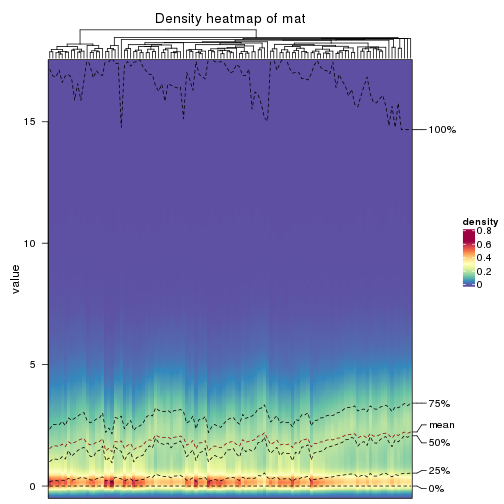
Folowing table shows the best k (number of partitions) for each combination
of top-value methods and partition methods. Clicking on the method name in
the table goes to the section for a single combination of methods.
The cola vignette explains the definition of the metrics used for determining the best number of partitions.
suggest_best_k(res_list)
| The best k | 1-PAC | Mean silhouette | Concordance | Optional k | ||
|---|---|---|---|---|---|---|
| CV:mclust | 2 | 1.000 | 0.972 | 0.989 | ** | |
| ATC:pam | 6 | 1.000 | 0.988 | 0.994 | ** | 3,4 |
| ATC:kmeans | 3 | 0.929 | 0.954 | 0.981 | * | 2 |
| ATC:skmeans | 4 | 0.919 | 0.920 | 0.958 | * | 2,3 |
| CV:pam | 2 | 0.913 | 0.929 | 0.968 | * | |
| SD:NMF | 2 | 0.912 | 0.944 | 0.974 | * | |
| CV:skmeans | 2 | 0.896 | 0.946 | 0.976 | ||
| ATC:hclust | 2 | 0.891 | 0.951 | 0.966 | ||
| MAD:pam | 2 | 0.878 | 0.924 | 0.967 | ||
| CV:NMF | 4 | 0.869 | 0.866 | 0.942 | ||
| SD:skmeans | 2 | 0.850 | 0.928 | 0.969 | ||
| MAD:skmeans | 2 | 0.848 | 0.928 | 0.967 | ||
| SD:kmeans | 2 | 0.846 | 0.937 | 0.971 | ||
| MAD:kmeans | 2 | 0.846 | 0.920 | 0.965 | ||
| CV:kmeans | 2 | 0.784 | 0.886 | 0.951 | ||
| MAD:NMF | 4 | 0.769 | 0.720 | 0.881 | ||
| SD:pam | 2 | 0.748 | 0.924 | 0.963 | ||
| MAD:mclust | 5 | 0.737 | 0.624 | 0.798 | ||
| ATC:NMF | 2 | 0.695 | 0.867 | 0.936 | ||
| SD:hclust | 6 | 0.678 | 0.622 | 0.748 | ||
| SD:mclust | 4 | 0.599 | 0.637 | 0.799 | ||
| ATC:mclust | 5 | 0.459 | 0.653 | 0.814 | ||
| MAD:hclust | 2 | 0.402 | 0.674 | 0.856 | ||
| CV:hclust | 2 | 0.326 | 0.656 | 0.797 |
**: 1-PAC > 0.95, *: 1-PAC > 0.9
Cumulative distribution function curves of consensus matrix for all methods.
collect_plots(res_list, fun = plot_ecdf)
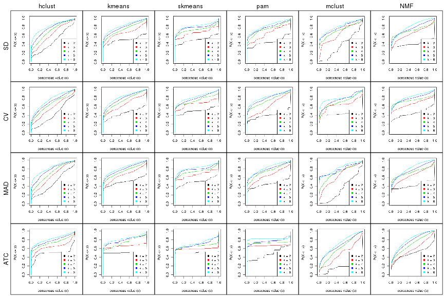
Consensus heatmaps for all methods. (What is a consensus heatmap?)
collect_plots(res_list, k = 2, fun = consensus_heatmap, mc.cores = 4)
collect_plots(res_list, k = 3, fun = consensus_heatmap, mc.cores = 4)
collect_plots(res_list, k = 4, fun = consensus_heatmap, mc.cores = 4)
collect_plots(res_list, k = 5, fun = consensus_heatmap, mc.cores = 4)
collect_plots(res_list, k = 6, fun = consensus_heatmap, mc.cores = 4)
Membership heatmaps for all methods. (What is a membership heatmap?)
collect_plots(res_list, k = 2, fun = membership_heatmap, mc.cores = 4)
collect_plots(res_list, k = 3, fun = membership_heatmap, mc.cores = 4)
collect_plots(res_list, k = 4, fun = membership_heatmap, mc.cores = 4)
collect_plots(res_list, k = 5, fun = membership_heatmap, mc.cores = 4)
collect_plots(res_list, k = 6, fun = membership_heatmap, mc.cores = 4)
Signature heatmaps for all methods. (What is a signature heatmap?)
Note in following heatmaps, rows are scaled.
collect_plots(res_list, k = 2, fun = get_signatures, mc.cores = 4)
collect_plots(res_list, k = 3, fun = get_signatures, mc.cores = 4)
collect_plots(res_list, k = 4, fun = get_signatures, mc.cores = 4)
collect_plots(res_list, k = 5, fun = get_signatures, mc.cores = 4)
collect_plots(res_list, k = 6, fun = get_signatures, mc.cores = 4)
The statistics used for measuring the stability of consensus partitioning. (How are they defined?)
get_stats(res_list, k = 2)
#> k 1-PAC mean_silhouette concordance area_increased Rand Jaccard
#> SD:NMF 2 0.912 0.944 0.974 0.414 0.607 0.607
#> CV:NMF 2 0.791 0.901 0.957 0.445 0.564 0.564
#> MAD:NMF 2 0.895 0.925 0.968 0.421 0.599 0.599
#> ATC:NMF 2 0.695 0.867 0.936 0.492 0.496 0.496
#> SD:skmeans 2 0.850 0.928 0.969 0.504 0.497 0.497
#> CV:skmeans 2 0.896 0.946 0.976 0.499 0.499 0.499
#> MAD:skmeans 2 0.848 0.928 0.967 0.504 0.496 0.496
#> ATC:skmeans 2 1.000 0.977 0.992 0.504 0.496 0.496
#> SD:mclust 2 0.360 0.788 0.798 0.368 0.509 0.509
#> CV:mclust 2 1.000 0.972 0.989 0.426 0.577 0.577
#> MAD:mclust 2 0.235 0.767 0.751 0.340 0.512 0.512
#> ATC:mclust 2 0.787 0.940 0.954 0.170 0.814 0.814
#> SD:kmeans 2 0.846 0.937 0.971 0.503 0.497 0.497
#> CV:kmeans 2 0.784 0.886 0.951 0.450 0.536 0.536
#> MAD:kmeans 2 0.846 0.920 0.965 0.503 0.497 0.497
#> ATC:kmeans 2 1.000 0.991 0.997 0.502 0.499 0.499
#> SD:pam 2 0.748 0.924 0.963 0.452 0.558 0.558
#> CV:pam 2 0.913 0.929 0.968 0.399 0.599 0.599
#> MAD:pam 2 0.878 0.924 0.967 0.450 0.552 0.552
#> ATC:pam 2 0.671 0.875 0.937 0.475 0.541 0.541
#> SD:hclust 2 0.358 0.542 0.786 0.469 0.615 0.615
#> CV:hclust 2 0.326 0.656 0.797 0.420 0.564 0.564
#> MAD:hclust 2 0.402 0.674 0.856 0.471 0.497 0.497
#> ATC:hclust 2 0.891 0.951 0.966 0.491 0.500 0.500
get_stats(res_list, k = 3)
#> k 1-PAC mean_silhouette concordance area_increased Rand Jaccard
#> SD:NMF 3 0.643 0.762 0.872 0.572 0.698 0.516
#> CV:NMF 3 0.763 0.826 0.928 0.488 0.728 0.535
#> MAD:NMF 3 0.620 0.762 0.868 0.548 0.702 0.518
#> ATC:NMF 3 0.477 0.681 0.837 0.190 0.659 0.458
#> SD:skmeans 3 0.774 0.871 0.941 0.319 0.710 0.483
#> CV:skmeans 3 0.791 0.911 0.946 0.325 0.742 0.524
#> MAD:skmeans 3 0.815 0.871 0.945 0.318 0.748 0.535
#> ATC:skmeans 3 1.000 0.977 0.989 0.171 0.908 0.816
#> SD:mclust 3 0.563 0.556 0.779 0.761 0.660 0.423
#> CV:mclust 3 0.693 0.882 0.928 0.495 0.613 0.414
#> MAD:mclust 3 0.431 0.495 0.773 0.906 0.671 0.439
#> ATC:mclust 3 0.383 0.804 0.797 1.772 0.638 0.556
#> SD:kmeans 3 0.639 0.827 0.909 0.313 0.714 0.491
#> CV:kmeans 3 0.615 0.678 0.868 0.447 0.704 0.493
#> MAD:kmeans 3 0.625 0.775 0.888 0.319 0.704 0.476
#> ATC:kmeans 3 0.929 0.954 0.981 0.311 0.660 0.424
#> SD:pam 3 0.619 0.751 0.871 0.438 0.737 0.557
#> CV:pam 3 0.512 0.656 0.746 0.531 0.721 0.555
#> MAD:pam 3 0.618 0.800 0.889 0.434 0.726 0.538
#> ATC:pam 3 1.000 0.981 0.993 0.399 0.711 0.504
#> SD:hclust 3 0.338 0.523 0.748 0.336 0.561 0.372
#> CV:hclust 3 0.413 0.649 0.815 0.367 0.723 0.549
#> MAD:hclust 3 0.348 0.462 0.665 0.331 0.723 0.497
#> ATC:hclust 3 0.744 0.854 0.916 0.303 0.849 0.699
get_stats(res_list, k = 4)
#> k 1-PAC mean_silhouette concordance area_increased Rand Jaccard
#> SD:NMF 4 0.773 0.761 0.899 0.1107 0.906 0.738
#> CV:NMF 4 0.869 0.866 0.942 0.1248 0.829 0.551
#> MAD:NMF 4 0.769 0.720 0.881 0.1106 0.903 0.729
#> ATC:NMF 4 0.461 0.436 0.688 0.1902 0.768 0.510
#> SD:skmeans 4 0.845 0.861 0.923 0.1095 0.842 0.582
#> CV:skmeans 4 0.811 0.771 0.890 0.1205 0.902 0.717
#> MAD:skmeans 4 0.814 0.861 0.894 0.1138 0.819 0.535
#> ATC:skmeans 4 0.919 0.920 0.958 0.1063 0.935 0.842
#> SD:mclust 4 0.599 0.637 0.799 0.1099 0.834 0.573
#> CV:mclust 4 0.650 0.709 0.788 0.1082 0.916 0.770
#> MAD:mclust 4 0.545 0.619 0.793 0.1153 0.826 0.548
#> ATC:mclust 4 0.279 0.622 0.771 0.2830 0.769 0.560
#> SD:kmeans 4 0.626 0.601 0.792 0.1249 0.796 0.490
#> CV:kmeans 4 0.548 0.550 0.732 0.1314 0.825 0.539
#> MAD:kmeans 4 0.654 0.644 0.827 0.1228 0.784 0.465
#> ATC:kmeans 4 0.698 0.733 0.789 0.1254 0.823 0.538
#> SD:pam 4 0.672 0.757 0.861 0.1507 0.774 0.463
#> CV:pam 4 0.672 0.665 0.843 0.2045 0.844 0.610
#> MAD:pam 4 0.612 0.735 0.841 0.1539 0.785 0.479
#> ATC:pam 4 1.000 0.975 0.991 0.0917 0.891 0.696
#> SD:hclust 4 0.423 0.425 0.629 0.1280 0.839 0.570
#> CV:hclust 4 0.436 0.612 0.768 0.1561 0.923 0.807
#> MAD:hclust 4 0.419 0.438 0.671 0.1161 0.775 0.442
#> ATC:hclust 4 0.710 0.786 0.894 0.1425 0.907 0.734
get_stats(res_list, k = 5)
#> k 1-PAC mean_silhouette concordance area_increased Rand Jaccard
#> SD:NMF 5 0.633 0.570 0.776 0.0595 0.944 0.814
#> CV:NMF 5 0.750 0.741 0.857 0.0545 0.944 0.790
#> MAD:NMF 5 0.612 0.555 0.742 0.0580 0.916 0.730
#> ATC:NMF 5 0.470 0.401 0.658 0.0951 0.803 0.462
#> SD:skmeans 5 0.813 0.876 0.895 0.0677 0.851 0.522
#> CV:skmeans 5 0.722 0.701 0.800 0.0654 0.912 0.690
#> MAD:skmeans 5 0.795 0.869 0.906 0.0638 0.860 0.543
#> ATC:skmeans 5 0.781 0.782 0.866 0.0659 0.958 0.883
#> SD:mclust 5 0.646 0.628 0.752 0.0836 0.837 0.506
#> CV:mclust 5 0.612 0.716 0.795 0.0691 0.875 0.620
#> MAD:mclust 5 0.737 0.624 0.798 0.0782 0.817 0.452
#> ATC:mclust 5 0.459 0.653 0.814 0.1052 0.915 0.784
#> SD:kmeans 5 0.664 0.569 0.745 0.0675 0.873 0.571
#> CV:kmeans 5 0.591 0.399 0.598 0.0673 0.900 0.639
#> MAD:kmeans 5 0.671 0.543 0.745 0.0657 0.861 0.533
#> ATC:kmeans 5 0.829 0.794 0.843 0.0667 0.936 0.752
#> SD:pam 5 0.713 0.707 0.855 0.0513 0.889 0.609
#> CV:pam 5 0.682 0.650 0.810 0.0706 0.856 0.536
#> MAD:pam 5 0.682 0.690 0.849 0.0525 0.885 0.598
#> ATC:pam 5 0.843 0.900 0.939 0.0559 0.955 0.840
#> SD:hclust 5 0.528 0.467 0.705 0.0872 0.893 0.617
#> CV:hclust 5 0.470 0.560 0.735 0.0685 0.935 0.817
#> MAD:hclust 5 0.521 0.475 0.672 0.1013 0.813 0.421
#> ATC:hclust 5 0.732 0.718 0.807 0.0682 0.944 0.789
get_stats(res_list, k = 6)
#> k 1-PAC mean_silhouette concordance area_increased Rand Jaccard
#> SD:NMF 6 0.556 0.420 0.676 0.0528 0.872 0.563
#> CV:NMF 6 0.739 0.621 0.794 0.0430 0.904 0.612
#> MAD:NMF 6 0.549 0.429 0.662 0.0525 0.806 0.397
#> ATC:NMF 6 0.495 0.397 0.643 0.0470 0.794 0.363
#> SD:skmeans 6 0.837 0.808 0.865 0.0434 0.917 0.646
#> CV:skmeans 6 0.746 0.711 0.822 0.0409 0.923 0.671
#> MAD:skmeans 6 0.836 0.792 0.876 0.0442 0.907 0.613
#> ATC:skmeans 6 0.786 0.746 0.861 0.0405 0.966 0.897
#> SD:mclust 6 0.671 0.611 0.732 0.0357 0.951 0.785
#> CV:mclust 6 0.818 0.835 0.888 0.0462 0.957 0.826
#> MAD:mclust 6 0.675 0.443 0.702 0.0407 0.892 0.572
#> ATC:mclust 6 0.440 0.514 0.718 0.0674 0.822 0.560
#> SD:kmeans 6 0.699 0.540 0.679 0.0427 0.885 0.561
#> CV:kmeans 6 0.660 0.478 0.647 0.0447 0.819 0.359
#> MAD:kmeans 6 0.691 0.566 0.731 0.0437 0.904 0.588
#> ATC:kmeans 6 0.794 0.817 0.833 0.0396 0.939 0.722
#> SD:pam 6 0.707 0.622 0.800 0.0461 0.909 0.613
#> CV:pam 6 0.732 0.685 0.827 0.0373 0.959 0.808
#> MAD:pam 6 0.664 0.471 0.700 0.0488 0.882 0.526
#> ATC:pam 6 1.000 0.988 0.994 0.0687 0.874 0.541
#> SD:hclust 6 0.678 0.622 0.748 0.0611 0.870 0.496
#> CV:hclust 6 0.506 0.451 0.682 0.0706 0.904 0.697
#> MAD:hclust 6 0.644 0.512 0.709 0.0617 0.840 0.406
#> ATC:hclust 6 0.720 0.599 0.786 0.0502 0.929 0.692
Following heatmap plots the partition for each combination of methods and the lightness correspond to the silhouette scores for samples in each method. On top the consensus subgroup is inferred from all methods by taking the mean silhouette scores as weight.
collect_stats(res_list, k = 2)
collect_stats(res_list, k = 3)

collect_stats(res_list, k = 4)
collect_stats(res_list, k = 5)
collect_stats(res_list, k = 6)
Collect partitions from all methods:
collect_classes(res_list, k = 2)
collect_classes(res_list, k = 3)
collect_classes(res_list, k = 4)
collect_classes(res_list, k = 5)
collect_classes(res_list, k = 6)
Overlap of top rows from different top-row methods:
top_rows_overlap(res_list, top_n = 1000, method = "euler")
top_rows_overlap(res_list, top_n = 2000, method = "euler")

top_rows_overlap(res_list, top_n = 3000, method = "euler")
top_rows_overlap(res_list, top_n = 4000, method = "euler")
top_rows_overlap(res_list, top_n = 5000, method = "euler")
Also visualize the correspondance of rankings between different top-row methods:
top_rows_overlap(res_list, top_n = 1000, method = "correspondance")
top_rows_overlap(res_list, top_n = 2000, method = "correspondance")
top_rows_overlap(res_list, top_n = 3000, method = "correspondance")
top_rows_overlap(res_list, top_n = 4000, method = "correspondance")
top_rows_overlap(res_list, top_n = 5000, method = "correspondance")
Heatmaps of the top rows:
top_rows_heatmap(res_list, top_n = 1000)
top_rows_heatmap(res_list, top_n = 2000)
top_rows_heatmap(res_list, top_n = 3000)
top_rows_heatmap(res_list, top_n = 4000)
top_rows_heatmap(res_list, top_n = 5000)
The object with results only for a single top-value method and a single partition method can be extracted as:
res = res_list["SD", "hclust"]
# you can also extract it by
# res = res_list["SD:hclust"]
A summary of res and all the functions that can be applied to it:
res
#> A 'ConsensusPartition' object with k = 2, 3, 4, 5, 6.
#> On a matrix with 16442 rows and 117 columns.
#> Top rows (1000, 2000, 3000, 4000, 5000) are extracted by 'SD' method.
#> Subgroups are detected by 'hclust' method.
#> Performed in total 1250 partitions by row resampling.
#> Best k for subgroups seems to be 6.
#>
#> Following methods can be applied to this 'ConsensusPartition' object:
#> [1] "cola_report" "collect_classes" "collect_plots"
#> [4] "collect_stats" "colnames" "compare_signatures"
#> [7] "consensus_heatmap" "dimension_reduction" "functional_enrichment"
#> [10] "get_anno_col" "get_anno" "get_classes"
#> [13] "get_consensus" "get_matrix" "get_membership"
#> [16] "get_param" "get_signatures" "get_stats"
#> [19] "is_best_k" "is_stable_k" "membership_heatmap"
#> [22] "ncol" "nrow" "plot_ecdf"
#> [25] "rownames" "select_partition_number" "show"
#> [28] "suggest_best_k" "test_to_known_factors"
collect_plots() function collects all the plots made from res for all k (number of partitions)
into one single page to provide an easy and fast comparison between different k.
collect_plots(res)
The plots are:
k and the heatmap of
predicted classes for each k.k.k.k.All the plots in panels can be made by individual functions and they are plotted later in this section.
select_partition_number() produces several plots showing different
statistics for choosing “optimized” k. There are following statistics:
k;k, the area increased is defined as \(A_k - A_{k-1}\).The detailed explanations of these statistics can be found in the cola vignette.
Generally speaking, lower PAC score, higher mean silhouette score or higher
concordance corresponds to better partition. Rand index and Jaccard index
measure how similar the current partition is compared to partition with k-1.
If they are too similar, we won't accept k is better than k-1.
select_partition_number(res)
The numeric values for all these statistics can be obtained by get_stats().
get_stats(res)
#> k 1-PAC mean_silhouette concordance area_increased Rand Jaccard
#> 2 2 0.358 0.542 0.786 0.4691 0.615 0.615
#> 3 3 0.338 0.523 0.748 0.3358 0.561 0.372
#> 4 4 0.423 0.425 0.629 0.1280 0.839 0.570
#> 5 5 0.528 0.467 0.705 0.0872 0.893 0.617
#> 6 6 0.678 0.622 0.748 0.0611 0.870 0.496
suggest_best_k() suggests the best \(k\) based on these statistics. The rules are as follows:
suggest_best_k(res)
#> [1] 6
Following shows the table of the partitions (You need to click the show/hide
code output link to see it). The membership matrix (columns with name p*)
is inferred by
clue::cl_consensus()
function with the SE method. Basically the value in the membership matrix
represents the probability to belong to a certain group. The finall class
label for an item is determined with the group with highest probability it
belongs to.
In get_classes() function, the entropy is calculated from the membership
matrix and the silhouette score is calculated from the consensus matrix.
cbind(get_classes(res, k = 2), get_membership(res, k = 2))
#> class entropy silhouette p1 p2
#> SRR2443263 1 1.000 0.9351 0.508 0.492
#> SRR2443262 2 0.992 0.6917 0.448 0.552
#> SRR2443261 2 0.987 0.6926 0.432 0.568
#> SRR2443260 2 0.932 0.5291 0.348 0.652
#> SRR2443259 2 0.891 -0.4122 0.308 0.692
#> SRR2443258 2 0.909 -0.4516 0.324 0.676
#> SRR2443257 2 0.992 0.6917 0.448 0.552
#> SRR2443256 2 0.895 -0.4187 0.312 0.688
#> SRR2443255 2 0.895 -0.4187 0.312 0.688
#> SRR2443254 2 0.895 -0.4187 0.312 0.688
#> SRR2443253 2 0.992 0.6917 0.448 0.552
#> SRR2443251 2 0.990 0.6907 0.440 0.560
#> SRR2443250 2 0.992 0.6917 0.448 0.552
#> SRR2443249 2 0.992 0.6917 0.448 0.552
#> SRR2443252 2 0.932 0.5291 0.348 0.652
#> SRR2443247 1 0.993 0.9852 0.548 0.452
#> SRR2443246 2 0.767 -0.2053 0.224 0.776
#> SRR2443248 2 0.994 0.6754 0.456 0.544
#> SRR2443244 2 0.891 0.6676 0.308 0.692
#> SRR2443245 1 0.992 0.9875 0.552 0.448
#> SRR2443243 1 0.992 0.9875 0.552 0.448
#> SRR2443242 2 0.781 0.6291 0.232 0.768
#> SRR2443241 2 0.242 0.3824 0.040 0.960
#> SRR2443240 2 0.430 0.2467 0.088 0.912
#> SRR2443239 2 0.881 0.6696 0.300 0.700
#> SRR2443238 1 0.992 0.9875 0.552 0.448
#> SRR2443237 2 0.802 0.6235 0.244 0.756
#> SRR2443236 2 0.430 0.2467 0.088 0.912
#> SRR2443235 1 0.992 0.9875 0.552 0.448
#> SRR2443233 1 0.992 0.9875 0.552 0.448
#> SRR2443234 1 0.992 0.9875 0.552 0.448
#> SRR2443232 1 0.992 0.9875 0.552 0.448
#> SRR2443231 1 0.992 0.9875 0.552 0.448
#> SRR2443230 1 0.992 0.9875 0.552 0.448
#> SRR2443229 2 0.358 0.3287 0.068 0.932
#> SRR2443228 2 0.992 0.6917 0.448 0.552
#> SRR2443227 1 0.992 0.9875 0.552 0.448
#> SRR2443226 1 0.993 0.9849 0.548 0.452
#> SRR2443225 2 0.955 0.3555 0.376 0.624
#> SRR2443223 2 0.900 0.6381 0.316 0.684
#> SRR2443224 2 0.992 0.6917 0.448 0.552
#> SRR2443222 2 0.992 0.6917 0.448 0.552
#> SRR2443221 2 0.992 0.6917 0.448 0.552
#> SRR2443219 2 0.978 0.6919 0.412 0.588
#> SRR2443220 2 0.983 0.6923 0.424 0.576
#> SRR2443218 2 0.992 0.6917 0.448 0.552
#> SRR2443217 2 0.343 0.3234 0.064 0.936
#> SRR2443216 2 0.955 -0.6427 0.376 0.624
#> SRR2443215 2 0.881 0.6696 0.300 0.700
#> SRR2443214 1 0.992 0.9875 0.552 0.448
#> SRR2443213 1 0.992 0.9875 0.552 0.448
#> SRR2443212 2 0.563 0.4902 0.132 0.868
#> SRR2443211 2 0.895 0.6663 0.312 0.688
#> SRR2443210 2 0.992 0.6917 0.448 0.552
#> SRR2443209 2 0.260 0.3874 0.044 0.956
#> SRR2443208 2 0.311 0.3643 0.056 0.944
#> SRR2443207 2 0.311 0.3643 0.056 0.944
#> SRR2443206 2 0.992 0.6917 0.448 0.552
#> SRR2443205 2 0.895 0.6663 0.312 0.688
#> SRR2443204 1 0.992 0.9875 0.552 0.448
#> SRR2443203 1 0.993 0.9849 0.548 0.452
#> SRR2443202 2 0.904 0.6185 0.320 0.680
#> SRR2443201 2 0.900 0.6379 0.316 0.684
#> SRR2443200 2 0.992 0.6917 0.448 0.552
#> SRR2443199 2 0.992 0.6917 0.448 0.552
#> SRR2443197 2 0.987 0.6879 0.432 0.568
#> SRR2443196 2 0.983 0.6919 0.424 0.576
#> SRR2443198 2 0.949 0.6388 0.368 0.632
#> SRR2443195 1 0.992 0.9875 0.552 0.448
#> SRR2443194 2 0.946 0.3176 0.364 0.636
#> SRR2443193 2 0.833 -0.3170 0.264 0.736
#> SRR2443191 2 0.242 0.3824 0.040 0.960
#> SRR2443192 2 0.802 0.6235 0.244 0.756
#> SRR2443190 1 0.992 0.9875 0.552 0.448
#> SRR2443189 1 1.000 0.9289 0.508 0.492
#> SRR2443188 1 0.992 0.9875 0.552 0.448
#> SRR2443186 2 0.992 0.6917 0.448 0.552
#> SRR2443187 2 0.992 0.6917 0.448 0.552
#> SRR2443185 2 0.932 0.6636 0.348 0.652
#> SRR2443184 2 0.975 -0.7209 0.408 0.592
#> SRR2443183 1 0.992 0.9875 0.552 0.448
#> SRR2443182 1 1.000 0.9351 0.508 0.492
#> SRR2443181 2 0.991 0.6914 0.444 0.556
#> SRR2443180 2 0.992 0.6917 0.448 0.552
#> SRR2443179 2 0.987 0.6919 0.432 0.568
#> SRR2443178 2 0.952 0.6101 0.372 0.628
#> SRR2443177 1 0.993 0.9844 0.548 0.452
#> SRR2443176 1 0.997 0.9670 0.532 0.468
#> SRR2443175 1 0.993 0.9852 0.548 0.452
#> SRR2443174 1 0.992 0.9875 0.552 0.448
#> SRR2443173 2 0.992 0.6917 0.448 0.552
#> SRR2443172 2 0.992 0.6917 0.448 0.552
#> SRR2443171 2 0.998 -0.8685 0.472 0.528
#> SRR2443170 2 0.680 -0.0269 0.180 0.820
#> SRR2443169 1 0.993 0.9852 0.548 0.452
#> SRR2443168 2 0.605 0.0822 0.148 0.852
#> SRR2443167 2 0.983 0.6903 0.424 0.576
#> SRR2443166 2 0.958 -0.6523 0.380 0.620
#> SRR2443165 2 0.932 0.5185 0.348 0.652
#> SRR2443164 2 0.992 0.6917 0.448 0.552
#> SRR2443163 2 0.900 0.6381 0.316 0.684
#> SRR2443162 2 0.895 -0.4187 0.312 0.688
#> SRR2443161 2 0.895 -0.4187 0.312 0.688
#> SRR2443160 2 0.983 0.6903 0.424 0.576
#> SRR2443159 2 0.992 0.6917 0.448 0.552
#> SRR2443158 2 0.895 -0.4187 0.312 0.688
#> SRR2443157 1 1.000 0.9351 0.508 0.492
#> SRR2443156 2 0.697 -0.0624 0.188 0.812
#> SRR2443155 2 0.680 -0.0269 0.180 0.820
#> SRR2443154 2 0.680 -0.0269 0.180 0.820
#> SRR2443153 1 0.993 0.9852 0.548 0.452
#> SRR2443152 2 0.992 0.6917 0.448 0.552
#> SRR2443151 2 0.992 0.6917 0.448 0.552
#> SRR2443150 2 0.992 0.6917 0.448 0.552
#> SRR2443148 2 0.992 0.6917 0.448 0.552
#> SRR2443147 2 0.992 0.6917 0.448 0.552
#> SRR2443149 2 0.706 -0.0687 0.192 0.808
cbind(get_classes(res, k = 3), get_membership(res, k = 3))
#> class entropy silhouette p1 p2 p3
#> SRR2443263 1 0.5136 0.75449 0.824 0.132 0.044
#> SRR2443262 3 0.1411 0.64525 0.000 0.036 0.964
#> SRR2443261 3 0.1267 0.64458 0.004 0.024 0.972
#> SRR2443260 3 0.7948 0.36524 0.268 0.100 0.632
#> SRR2443259 1 0.8825 0.56544 0.556 0.148 0.296
#> SRR2443258 1 0.8625 0.58500 0.576 0.136 0.288
#> SRR2443257 3 0.1411 0.64525 0.000 0.036 0.964
#> SRR2443256 1 0.8749 0.57147 0.560 0.140 0.300
#> SRR2443255 1 0.8749 0.57147 0.560 0.140 0.300
#> SRR2443254 1 0.8749 0.57147 0.560 0.140 0.300
#> SRR2443253 3 0.1411 0.64525 0.000 0.036 0.964
#> SRR2443251 3 0.1620 0.64269 0.024 0.012 0.964
#> SRR2443250 3 0.1411 0.64525 0.000 0.036 0.964
#> SRR2443249 3 0.1411 0.64525 0.000 0.036 0.964
#> SRR2443252 3 0.7948 0.36524 0.268 0.100 0.632
#> SRR2443247 1 0.0237 0.75314 0.996 0.000 0.004
#> SRR2443246 1 0.7430 0.25080 0.540 0.424 0.036
#> SRR2443248 3 0.6109 0.58045 0.080 0.140 0.780
#> SRR2443244 2 0.8535 0.05440 0.096 0.500 0.404
#> SRR2443245 1 0.3267 0.76541 0.884 0.116 0.000
#> SRR2443243 1 0.3267 0.76541 0.884 0.116 0.000
#> SRR2443242 2 0.8752 0.35835 0.144 0.564 0.292
#> SRR2443241 2 0.6579 0.42845 0.328 0.652 0.020
#> SRR2443240 2 0.6513 0.26301 0.400 0.592 0.008
#> SRR2443239 2 0.6400 0.45139 0.052 0.740 0.208
#> SRR2443238 1 0.3267 0.76541 0.884 0.116 0.000
#> SRR2443237 2 0.8916 0.33352 0.152 0.544 0.304
#> SRR2443236 2 0.6513 0.26301 0.400 0.592 0.008
#> SRR2443235 1 0.0237 0.75106 0.996 0.004 0.000
#> SRR2443233 1 0.0237 0.75106 0.996 0.004 0.000
#> SRR2443234 1 0.0237 0.75106 0.996 0.004 0.000
#> SRR2443232 1 0.0237 0.75106 0.996 0.004 0.000
#> SRR2443231 1 0.0237 0.75106 0.996 0.004 0.000
#> SRR2443230 1 0.0237 0.75106 0.996 0.004 0.000
#> SRR2443229 2 0.6587 0.37147 0.352 0.632 0.016
#> SRR2443228 3 0.6286 0.36285 0.000 0.464 0.536
#> SRR2443227 1 0.0237 0.75106 0.996 0.004 0.000
#> SRR2443226 1 0.3340 0.76448 0.880 0.120 0.000
#> SRR2443225 3 0.8759 0.08190 0.360 0.120 0.520
#> SRR2443223 3 0.8175 0.38965 0.132 0.236 0.632
#> SRR2443224 2 0.3686 0.46634 0.000 0.860 0.140
#> SRR2443222 3 0.6302 0.34248 0.000 0.480 0.520
#> SRR2443221 3 0.6302 0.34248 0.000 0.480 0.520
#> SRR2443219 3 0.6470 0.46167 0.012 0.356 0.632
#> SRR2443220 3 0.4475 0.60791 0.016 0.144 0.840
#> SRR2443218 3 0.6286 0.36285 0.000 0.464 0.536
#> SRR2443217 2 0.6608 0.36352 0.356 0.628 0.016
#> SRR2443216 1 0.8001 0.64863 0.652 0.136 0.212
#> SRR2443215 2 0.6400 0.45139 0.052 0.740 0.208
#> SRR2443214 1 0.3267 0.76541 0.884 0.116 0.000
#> SRR2443213 1 0.0237 0.75106 0.996 0.004 0.000
#> SRR2443212 2 0.6872 0.50994 0.276 0.680 0.044
#> SRR2443211 2 0.6037 0.54403 0.112 0.788 0.100
#> SRR2443210 3 0.6302 0.34248 0.000 0.480 0.520
#> SRR2443209 2 0.6553 0.43409 0.324 0.656 0.020
#> SRR2443208 2 0.6473 0.41377 0.332 0.652 0.016
#> SRR2443207 2 0.6473 0.41377 0.332 0.652 0.016
#> SRR2443206 2 0.3686 0.46198 0.000 0.860 0.140
#> SRR2443205 2 0.6037 0.54403 0.112 0.788 0.100
#> SRR2443204 1 0.3267 0.76541 0.884 0.116 0.000
#> SRR2443203 1 0.3340 0.76448 0.880 0.120 0.000
#> SRR2443202 3 0.8028 0.40857 0.168 0.176 0.656
#> SRR2443201 3 0.8195 0.39570 0.136 0.232 0.632
#> SRR2443200 3 0.6291 0.35753 0.000 0.468 0.532
#> SRR2443199 3 0.6286 0.36285 0.000 0.464 0.536
#> SRR2443197 3 0.2689 0.63743 0.036 0.032 0.932
#> SRR2443196 3 0.2269 0.64597 0.016 0.040 0.944
#> SRR2443198 3 0.5932 0.53848 0.164 0.056 0.780
#> SRR2443195 1 0.3267 0.76541 0.884 0.116 0.000
#> SRR2443194 3 0.8798 0.01867 0.356 0.124 0.520
#> SRR2443193 1 0.6879 0.28607 0.556 0.428 0.016
#> SRR2443191 2 0.6579 0.42845 0.328 0.652 0.020
#> SRR2443192 2 0.8916 0.33352 0.152 0.544 0.304
#> SRR2443190 1 0.0237 0.75106 0.996 0.004 0.000
#> SRR2443189 1 0.4802 0.74202 0.824 0.156 0.020
#> SRR2443188 1 0.0237 0.75106 0.996 0.004 0.000
#> SRR2443186 2 0.3686 0.46198 0.000 0.860 0.140
#> SRR2443187 2 0.3686 0.46198 0.000 0.860 0.140
#> SRR2443185 3 0.5966 0.56354 0.104 0.104 0.792
#> SRR2443184 1 0.7381 0.68265 0.704 0.164 0.132
#> SRR2443183 1 0.0237 0.75106 0.996 0.004 0.000
#> SRR2443182 1 0.5136 0.75449 0.824 0.132 0.044
#> SRR2443181 2 0.3918 0.46974 0.004 0.856 0.140
#> SRR2443180 3 0.6286 0.36285 0.000 0.464 0.536
#> SRR2443179 3 0.2804 0.64431 0.016 0.060 0.924
#> SRR2443178 3 0.7865 0.47103 0.216 0.124 0.660
#> SRR2443177 1 0.3500 0.76600 0.880 0.116 0.004
#> SRR2443176 1 0.4418 0.76032 0.848 0.132 0.020
#> SRR2443175 1 0.1129 0.75809 0.976 0.020 0.004
#> SRR2443174 1 0.0237 0.75106 0.996 0.004 0.000
#> SRR2443173 2 0.3879 0.45829 0.000 0.848 0.152
#> SRR2443172 2 0.3879 0.45829 0.000 0.848 0.152
#> SRR2443171 1 0.3715 0.72469 0.868 0.128 0.004
#> SRR2443170 1 0.6825 0.06682 0.500 0.488 0.012
#> SRR2443169 1 0.0237 0.75314 0.996 0.000 0.004
#> SRR2443168 2 0.7471 0.00369 0.448 0.516 0.036
#> SRR2443167 3 0.1170 0.63916 0.016 0.008 0.976
#> SRR2443166 1 0.7944 0.65155 0.656 0.132 0.212
#> SRR2443165 3 0.7530 0.38945 0.252 0.084 0.664
#> SRR2443164 3 0.6235 0.38407 0.000 0.436 0.564
#> SRR2443163 3 0.8175 0.38965 0.132 0.236 0.632
#> SRR2443162 1 0.8749 0.57147 0.560 0.140 0.300
#> SRR2443161 1 0.8749 0.57147 0.560 0.140 0.300
#> SRR2443160 3 0.1170 0.63916 0.016 0.008 0.976
#> SRR2443159 3 0.1411 0.64525 0.000 0.036 0.964
#> SRR2443158 1 0.8749 0.57147 0.560 0.140 0.300
#> SRR2443157 1 0.5136 0.75449 0.824 0.132 0.044
#> SRR2443156 1 0.7487 0.10798 0.500 0.464 0.036
#> SRR2443155 1 0.6825 0.06682 0.500 0.488 0.012
#> SRR2443154 1 0.6825 0.06682 0.500 0.488 0.012
#> SRR2443153 1 0.0237 0.75314 0.996 0.000 0.004
#> SRR2443152 2 0.3879 0.45829 0.000 0.848 0.152
#> SRR2443151 3 0.6280 0.36561 0.000 0.460 0.540
#> SRR2443150 2 0.3879 0.45829 0.000 0.848 0.152
#> SRR2443148 3 0.5497 0.48453 0.000 0.292 0.708
#> SRR2443147 3 0.5497 0.48453 0.000 0.292 0.708
#> SRR2443149 1 0.9378 0.35806 0.480 0.336 0.184
cbind(get_classes(res, k = 4), get_membership(res, k = 4))
#> class entropy silhouette p1 p2 p3 p4
#> SRR2443263 1 0.5881 0.51935 0.544 0.000 0.420 0.036
#> SRR2443262 4 0.1940 0.67792 0.000 0.000 0.076 0.924
#> SRR2443261 4 0.2081 0.68366 0.000 0.000 0.084 0.916
#> SRR2443260 4 0.7344 0.46003 0.084 0.044 0.288 0.584
#> SRR2443259 3 0.7796 0.13531 0.248 0.008 0.492 0.252
#> SRR2443258 3 0.7518 0.11515 0.260 0.000 0.496 0.244
#> SRR2443257 4 0.0188 0.69609 0.000 0.000 0.004 0.996
#> SRR2443256 3 0.7476 0.14900 0.236 0.000 0.504 0.260
#> SRR2443255 3 0.7456 0.14744 0.236 0.000 0.508 0.256
#> SRR2443254 3 0.7476 0.14900 0.236 0.000 0.504 0.260
#> SRR2443253 4 0.3528 0.60853 0.000 0.000 0.192 0.808
#> SRR2443251 4 0.1474 0.70472 0.000 0.000 0.052 0.948
#> SRR2443250 4 0.1940 0.67792 0.000 0.000 0.076 0.924
#> SRR2443249 4 0.1940 0.67792 0.000 0.000 0.076 0.924
#> SRR2443252 4 0.7344 0.46003 0.084 0.044 0.288 0.584
#> SRR2443247 1 0.1867 0.71990 0.928 0.000 0.072 0.000
#> SRR2443246 3 0.7977 -0.10673 0.280 0.304 0.412 0.004
#> SRR2443248 4 0.5750 0.65050 0.032 0.112 0.100 0.756
#> SRR2443244 2 0.7841 0.11217 0.004 0.404 0.216 0.376
#> SRR2443245 1 0.4643 0.65312 0.656 0.000 0.344 0.000
#> SRR2443243 1 0.4624 0.65503 0.660 0.000 0.340 0.000
#> SRR2443242 2 0.8683 0.39391 0.052 0.452 0.236 0.260
#> SRR2443241 2 0.6813 0.44340 0.104 0.516 0.380 0.000
#> SRR2443240 2 0.7403 0.34260 0.168 0.452 0.380 0.000
#> SRR2443239 2 0.6742 0.49447 0.000 0.608 0.232 0.160
#> SRR2443238 1 0.4661 0.65075 0.652 0.000 0.348 0.000
#> SRR2443237 2 0.8731 0.35893 0.048 0.428 0.252 0.272
#> SRR2443236 2 0.7403 0.34260 0.168 0.452 0.380 0.000
#> SRR2443235 1 0.0000 0.72326 1.000 0.000 0.000 0.000
#> SRR2443233 1 0.0000 0.72326 1.000 0.000 0.000 0.000
#> SRR2443234 1 0.0000 0.72326 1.000 0.000 0.000 0.000
#> SRR2443232 1 0.0000 0.72326 1.000 0.000 0.000 0.000
#> SRR2443231 1 0.0000 0.72326 1.000 0.000 0.000 0.000
#> SRR2443230 1 0.0000 0.72326 1.000 0.000 0.000 0.000
#> SRR2443229 2 0.7009 0.40613 0.120 0.488 0.392 0.000
#> SRR2443228 3 0.7740 0.00167 0.000 0.320 0.432 0.248
#> SRR2443227 1 0.0000 0.72326 1.000 0.000 0.000 0.000
#> SRR2443226 1 0.4800 0.65235 0.656 0.004 0.340 0.000
#> SRR2443225 4 0.7472 0.28146 0.140 0.012 0.332 0.516
#> SRR2443223 4 0.7377 0.51238 0.020 0.160 0.232 0.588
#> SRR2443224 2 0.0188 0.54739 0.000 0.996 0.004 0.000
#> SRR2443222 3 0.7704 0.01114 0.000 0.336 0.432 0.232
#> SRR2443221 3 0.7704 0.01114 0.000 0.336 0.432 0.232
#> SRR2443219 4 0.7344 0.35768 0.000 0.300 0.188 0.512
#> SRR2443220 4 0.4127 0.64654 0.000 0.124 0.052 0.824
#> SRR2443218 3 0.7740 0.00167 0.000 0.320 0.432 0.248
#> SRR2443217 2 0.7015 0.40421 0.120 0.484 0.396 0.000
#> SRR2443216 3 0.7264 -0.01926 0.320 0.000 0.512 0.168
#> SRR2443215 2 0.6742 0.49447 0.000 0.608 0.232 0.160
#> SRR2443214 1 0.4643 0.65312 0.656 0.000 0.344 0.000
#> SRR2443213 1 0.0000 0.72326 1.000 0.000 0.000 0.000
#> SRR2443212 2 0.6880 0.49280 0.080 0.572 0.332 0.016
#> SRR2443211 2 0.3757 0.56082 0.020 0.828 0.152 0.000
#> SRR2443210 3 0.7704 0.01114 0.000 0.336 0.432 0.232
#> SRR2443209 2 0.6766 0.44619 0.100 0.520 0.380 0.000
#> SRR2443208 2 0.6830 0.43086 0.104 0.508 0.388 0.000
#> SRR2443207 2 0.6830 0.43086 0.104 0.508 0.388 0.000
#> SRR2443206 2 0.0707 0.53993 0.000 0.980 0.020 0.000
#> SRR2443205 2 0.3757 0.56082 0.020 0.828 0.152 0.000
#> SRR2443204 1 0.4643 0.65312 0.656 0.000 0.344 0.000
#> SRR2443203 1 0.4800 0.65235 0.656 0.004 0.340 0.000
#> SRR2443202 4 0.6703 0.54120 0.012 0.100 0.264 0.624
#> SRR2443201 4 0.7300 0.52070 0.020 0.152 0.232 0.596
#> SRR2443200 3 0.7732 0.00487 0.000 0.324 0.432 0.244
#> SRR2443199 3 0.7740 0.00167 0.000 0.320 0.432 0.248
#> SRR2443197 4 0.2266 0.70460 0.000 0.004 0.084 0.912
#> SRR2443196 4 0.1807 0.70422 0.000 0.008 0.052 0.940
#> SRR2443198 4 0.4809 0.63751 0.012 0.016 0.220 0.752
#> SRR2443195 1 0.4624 0.65503 0.660 0.000 0.340 0.000
#> SRR2443194 4 0.7682 0.24432 0.148 0.016 0.344 0.492
#> SRR2443193 3 0.7825 -0.06209 0.304 0.284 0.412 0.000
#> SRR2443191 2 0.6813 0.44340 0.104 0.516 0.380 0.000
#> SRR2443192 2 0.8731 0.35893 0.048 0.428 0.252 0.272
#> SRR2443190 1 0.0000 0.72326 1.000 0.000 0.000 0.000
#> SRR2443189 1 0.5851 0.45588 0.516 0.024 0.456 0.004
#> SRR2443188 1 0.0000 0.72326 1.000 0.000 0.000 0.000
#> SRR2443186 2 0.0707 0.53993 0.000 0.980 0.020 0.000
#> SRR2443187 2 0.0707 0.53993 0.000 0.980 0.020 0.000
#> SRR2443185 4 0.5159 0.65290 0.004 0.064 0.176 0.756
#> SRR2443184 3 0.7451 -0.15953 0.372 0.024 0.504 0.100
#> SRR2443183 1 0.0000 0.72326 1.000 0.000 0.000 0.000
#> SRR2443182 1 0.5881 0.51935 0.544 0.000 0.420 0.036
#> SRR2443181 2 0.0707 0.54760 0.000 0.980 0.020 0.000
#> SRR2443180 3 0.7740 0.00167 0.000 0.320 0.432 0.248
#> SRR2443179 4 0.2021 0.70022 0.000 0.012 0.056 0.932
#> SRR2443178 4 0.6223 0.58489 0.020 0.052 0.272 0.656
#> SRR2443177 1 0.4819 0.64951 0.652 0.000 0.344 0.004
#> SRR2443176 1 0.5417 0.56055 0.572 0.000 0.412 0.016
#> SRR2443175 1 0.2921 0.70917 0.860 0.000 0.140 0.000
#> SRR2443174 1 0.0000 0.72326 1.000 0.000 0.000 0.000
#> SRR2443173 2 0.2402 0.51249 0.000 0.912 0.076 0.012
#> SRR2443172 2 0.2402 0.51249 0.000 0.912 0.076 0.012
#> SRR2443171 1 0.5346 0.64368 0.732 0.076 0.192 0.000
#> SRR2443170 3 0.7810 -0.20726 0.252 0.364 0.384 0.000
#> SRR2443169 1 0.1867 0.71990 0.928 0.000 0.072 0.000
#> SRR2443168 3 0.7649 -0.26409 0.180 0.380 0.436 0.004
#> SRR2443167 4 0.1716 0.70428 0.000 0.000 0.064 0.936
#> SRR2443166 3 0.7278 -0.02762 0.324 0.000 0.508 0.168
#> SRR2443165 4 0.5159 0.47880 0.012 0.000 0.364 0.624
#> SRR2443164 3 0.7758 -0.05148 0.000 0.272 0.436 0.292
#> SRR2443163 4 0.7377 0.51238 0.020 0.160 0.232 0.588
#> SRR2443162 3 0.7476 0.14900 0.236 0.000 0.504 0.260
#> SRR2443161 3 0.7476 0.14900 0.236 0.000 0.504 0.260
#> SRR2443160 4 0.1716 0.70428 0.000 0.000 0.064 0.936
#> SRR2443159 4 0.0188 0.69609 0.000 0.000 0.004 0.996
#> SRR2443158 3 0.7476 0.14900 0.236 0.000 0.504 0.260
#> SRR2443157 1 0.5881 0.51935 0.544 0.000 0.420 0.036
#> SRR2443156 3 0.8030 -0.18496 0.240 0.340 0.412 0.008
#> SRR2443155 3 0.7810 -0.20726 0.252 0.364 0.384 0.000
#> SRR2443154 3 0.7810 -0.20726 0.252 0.364 0.384 0.000
#> SRR2443153 1 0.1867 0.71990 0.928 0.000 0.072 0.000
#> SRR2443152 2 0.2402 0.51249 0.000 0.912 0.076 0.012
#> SRR2443151 3 0.7748 -0.00890 0.000 0.304 0.436 0.260
#> SRR2443150 2 0.2402 0.51249 0.000 0.912 0.076 0.012
#> SRR2443148 4 0.6261 0.27622 0.000 0.056 0.440 0.504
#> SRR2443147 4 0.6261 0.27622 0.000 0.056 0.440 0.504
#> SRR2443149 3 0.9272 0.08321 0.204 0.196 0.452 0.148
cbind(get_classes(res, k = 5), get_membership(res, k = 5))
#> class entropy silhouette p1 p2 p3 p4 p5
#> SRR2443263 3 0.4449 0.2106 0.352 0.000 0.636 0.008 0.004
#> SRR2443262 4 0.2124 0.6684 0.000 0.096 0.000 0.900 0.004
#> SRR2443261 4 0.2623 0.6769 0.000 0.096 0.016 0.884 0.004
#> SRR2443260 4 0.6117 0.3947 0.028 0.000 0.392 0.516 0.064
#> SRR2443259 3 0.4841 0.5196 0.064 0.000 0.736 0.184 0.016
#> SRR2443258 3 0.4826 0.5324 0.072 0.000 0.736 0.180 0.012
#> SRR2443257 4 0.0162 0.7162 0.000 0.000 0.000 0.996 0.004
#> SRR2443256 3 0.4256 0.5160 0.048 0.000 0.764 0.184 0.004
#> SRR2443255 3 0.4220 0.5175 0.048 0.000 0.768 0.180 0.004
#> SRR2443254 3 0.4256 0.5160 0.048 0.000 0.764 0.184 0.004
#> SRR2443253 4 0.4624 0.2714 0.000 0.340 0.000 0.636 0.024
#> SRR2443251 4 0.1478 0.7310 0.000 0.000 0.064 0.936 0.000
#> SRR2443250 4 0.2124 0.6684 0.000 0.096 0.000 0.900 0.004
#> SRR2443249 4 0.2124 0.6684 0.000 0.096 0.000 0.900 0.004
#> SRR2443252 4 0.6117 0.3947 0.028 0.000 0.392 0.516 0.064
#> SRR2443247 1 0.2685 0.6893 0.880 0.000 0.092 0.000 0.028
#> SRR2443246 3 0.6133 -0.0827 0.120 0.000 0.512 0.004 0.364
#> SRR2443248 4 0.4674 0.6776 0.000 0.004 0.148 0.748 0.100
#> SRR2443244 4 0.7966 -0.0546 0.000 0.088 0.224 0.364 0.324
#> SRR2443245 1 0.4452 0.1160 0.500 0.000 0.496 0.000 0.004
#> SRR2443243 1 0.4451 0.1249 0.504 0.000 0.492 0.000 0.004
#> SRR2443242 5 0.7943 0.3249 0.000 0.084 0.272 0.256 0.388
#> SRR2443241 5 0.4748 0.4453 0.004 0.016 0.384 0.000 0.596
#> SRR2443240 5 0.5215 0.3548 0.052 0.000 0.372 0.000 0.576
#> SRR2443239 5 0.7902 0.4843 0.000 0.188 0.196 0.148 0.468
#> SRR2443238 3 0.4451 -0.1652 0.492 0.000 0.504 0.000 0.004
#> SRR2443237 5 0.8031 0.2844 0.000 0.088 0.292 0.264 0.356
#> SRR2443236 5 0.5215 0.3548 0.052 0.000 0.372 0.000 0.576
#> SRR2443235 1 0.0290 0.7359 0.992 0.000 0.008 0.000 0.000
#> SRR2443233 1 0.0000 0.7383 1.000 0.000 0.000 0.000 0.000
#> SRR2443234 1 0.0000 0.7383 1.000 0.000 0.000 0.000 0.000
#> SRR2443232 1 0.0000 0.7383 1.000 0.000 0.000 0.000 0.000
#> SRR2443231 1 0.0000 0.7383 1.000 0.000 0.000 0.000 0.000
#> SRR2443230 1 0.0000 0.7383 1.000 0.000 0.000 0.000 0.000
#> SRR2443229 5 0.4956 0.3716 0.016 0.008 0.428 0.000 0.548
#> SRR2443228 2 0.1018 0.9181 0.000 0.968 0.000 0.016 0.016
#> SRR2443227 1 0.0000 0.7383 1.000 0.000 0.000 0.000 0.000
#> SRR2443226 1 0.4452 0.1177 0.500 0.000 0.496 0.000 0.004
#> SRR2443225 3 0.5754 -0.1507 0.044 0.000 0.480 0.456 0.020
#> SRR2443223 4 0.6087 0.5322 0.000 0.004 0.332 0.540 0.124
#> SRR2443224 5 0.3835 0.4383 0.000 0.260 0.008 0.000 0.732
#> SRR2443222 2 0.0992 0.9103 0.000 0.968 0.000 0.008 0.024
#> SRR2443221 2 0.0992 0.9103 0.000 0.968 0.000 0.008 0.024
#> SRR2443219 4 0.7272 0.2677 0.000 0.260 0.040 0.472 0.228
#> SRR2443220 4 0.3986 0.6652 0.000 0.044 0.036 0.824 0.096
#> SRR2443218 2 0.1018 0.9181 0.000 0.968 0.000 0.016 0.016
#> SRR2443217 5 0.4962 0.3671 0.016 0.008 0.432 0.000 0.544
#> SRR2443216 3 0.4509 0.5486 0.104 0.000 0.776 0.108 0.012
#> SRR2443215 5 0.7902 0.4843 0.000 0.188 0.196 0.148 0.468
#> SRR2443214 1 0.4452 0.1160 0.500 0.000 0.496 0.000 0.004
#> SRR2443213 1 0.0000 0.7383 1.000 0.000 0.000 0.000 0.000
#> SRR2443212 5 0.5522 0.4985 0.004 0.044 0.320 0.016 0.616
#> SRR2443211 5 0.3825 0.5336 0.000 0.136 0.060 0.000 0.804
#> SRR2443210 2 0.0992 0.9103 0.000 0.968 0.000 0.008 0.024
#> SRR2443209 5 0.4599 0.4477 0.000 0.016 0.384 0.000 0.600
#> SRR2443208 5 0.4527 0.4309 0.000 0.012 0.392 0.000 0.596
#> SRR2443207 5 0.4527 0.4309 0.000 0.012 0.392 0.000 0.596
#> SRR2443206 5 0.3730 0.4178 0.000 0.288 0.000 0.000 0.712
#> SRR2443205 5 0.3825 0.5336 0.000 0.136 0.060 0.000 0.804
#> SRR2443204 1 0.4452 0.1160 0.500 0.000 0.496 0.000 0.004
#> SRR2443203 1 0.4452 0.1177 0.500 0.000 0.496 0.000 0.004
#> SRR2443202 4 0.5406 0.5264 0.000 0.000 0.360 0.572 0.068
#> SRR2443201 4 0.6012 0.5387 0.000 0.004 0.332 0.548 0.116
#> SRR2443200 2 0.1117 0.9167 0.000 0.964 0.000 0.016 0.020
#> SRR2443199 2 0.1018 0.9181 0.000 0.968 0.000 0.016 0.016
#> SRR2443197 4 0.2583 0.7228 0.000 0.000 0.132 0.864 0.004
#> SRR2443196 4 0.1862 0.7286 0.000 0.004 0.048 0.932 0.016
#> SRR2443198 4 0.4360 0.6224 0.000 0.000 0.284 0.692 0.024
#> SRR2443195 1 0.4451 0.1249 0.504 0.000 0.492 0.000 0.004
#> SRR2443194 3 0.5816 -0.0912 0.044 0.000 0.500 0.432 0.024
#> SRR2443193 3 0.6543 0.1014 0.176 0.008 0.504 0.000 0.312
#> SRR2443191 5 0.4748 0.4453 0.004 0.016 0.384 0.000 0.596
#> SRR2443192 5 0.8031 0.2844 0.000 0.088 0.292 0.264 0.356
#> SRR2443190 1 0.0000 0.7383 1.000 0.000 0.000 0.000 0.000
#> SRR2443189 3 0.4777 0.3069 0.292 0.000 0.664 0.000 0.044
#> SRR2443188 1 0.0000 0.7383 1.000 0.000 0.000 0.000 0.000
#> SRR2443186 5 0.3730 0.4178 0.000 0.288 0.000 0.000 0.712
#> SRR2443187 5 0.3730 0.4178 0.000 0.288 0.000 0.000 0.712
#> SRR2443185 4 0.4832 0.6630 0.000 0.004 0.224 0.708 0.064
#> SRR2443184 3 0.4893 0.5220 0.132 0.000 0.760 0.068 0.040
#> SRR2443183 1 0.0000 0.7383 1.000 0.000 0.000 0.000 0.000
#> SRR2443182 3 0.4449 0.2106 0.352 0.000 0.636 0.008 0.004
#> SRR2443181 5 0.3561 0.4423 0.000 0.260 0.000 0.000 0.740
#> SRR2443180 2 0.1018 0.9181 0.000 0.968 0.000 0.016 0.016
#> SRR2443179 4 0.2104 0.7221 0.000 0.024 0.044 0.924 0.008
#> SRR2443178 4 0.5382 0.5709 0.000 0.004 0.340 0.596 0.060
#> SRR2443177 3 0.4596 -0.1697 0.496 0.000 0.496 0.004 0.004
#> SRR2443176 3 0.4490 0.0938 0.404 0.000 0.588 0.004 0.004
#> SRR2443175 1 0.4021 0.6112 0.780 0.000 0.168 0.000 0.052
#> SRR2443174 1 0.0000 0.7383 1.000 0.000 0.000 0.000 0.000
#> SRR2443173 5 0.4415 0.2889 0.000 0.388 0.008 0.000 0.604
#> SRR2443172 5 0.4415 0.2889 0.000 0.388 0.008 0.000 0.604
#> SRR2443171 1 0.5466 0.4452 0.656 0.000 0.192 0.000 0.152
#> SRR2443170 3 0.5857 -0.1840 0.096 0.000 0.460 0.000 0.444
#> SRR2443169 1 0.2685 0.6893 0.880 0.000 0.092 0.000 0.028
#> SRR2443168 3 0.5119 -0.2483 0.028 0.000 0.504 0.004 0.464
#> SRR2443167 4 0.1671 0.7297 0.000 0.000 0.076 0.924 0.000
#> SRR2443166 3 0.4558 0.5465 0.108 0.000 0.772 0.108 0.012
#> SRR2443165 4 0.4415 0.3781 0.000 0.000 0.444 0.552 0.004
#> SRR2443164 2 0.1571 0.8830 0.000 0.936 0.004 0.060 0.000
#> SRR2443163 4 0.6087 0.5322 0.000 0.004 0.332 0.540 0.124
#> SRR2443162 3 0.4256 0.5160 0.048 0.000 0.764 0.184 0.004
#> SRR2443161 3 0.4256 0.5160 0.048 0.000 0.764 0.184 0.004
#> SRR2443160 4 0.1671 0.7297 0.000 0.000 0.076 0.924 0.000
#> SRR2443159 4 0.0162 0.7162 0.000 0.000 0.000 0.996 0.004
#> SRR2443158 3 0.4256 0.5160 0.048 0.000 0.764 0.184 0.004
#> SRR2443157 3 0.4449 0.2106 0.352 0.000 0.636 0.008 0.004
#> SRR2443156 3 0.5666 -0.1427 0.060 0.000 0.524 0.008 0.408
#> SRR2443155 3 0.5857 -0.1840 0.096 0.000 0.460 0.000 0.444
#> SRR2443154 3 0.5857 -0.1840 0.096 0.000 0.460 0.000 0.444
#> SRR2443153 1 0.2685 0.6893 0.880 0.000 0.092 0.000 0.028
#> SRR2443152 5 0.4415 0.2889 0.000 0.388 0.008 0.000 0.604
#> SRR2443151 2 0.1116 0.9077 0.000 0.964 0.004 0.028 0.004
#> SRR2443150 5 0.4415 0.2889 0.000 0.388 0.008 0.000 0.604
#> SRR2443148 2 0.4397 0.6337 0.000 0.708 0.004 0.264 0.024
#> SRR2443147 2 0.4397 0.6337 0.000 0.708 0.004 0.264 0.024
#> SRR2443149 3 0.6010 0.3444 0.048 0.000 0.652 0.088 0.212
cbind(get_classes(res, k = 6), get_membership(res, k = 6))
#> class entropy silhouette p1 p2 p3 p4 p5 p6
#> SRR2443263 3 0.4253 0.5396 0.300 0.020 0.668 0.000 0.012 0.000
#> SRR2443262 4 0.2829 0.6999 0.000 0.024 0.016 0.864 0.000 0.096
#> SRR2443261 4 0.3150 0.7062 0.000 0.024 0.032 0.848 0.000 0.096
#> SRR2443260 3 0.5485 -0.2662 0.000 0.028 0.488 0.424 0.060 0.000
#> SRR2443259 3 0.2772 0.5633 0.004 0.000 0.864 0.092 0.040 0.000
#> SRR2443258 3 0.2794 0.5775 0.004 0.004 0.868 0.088 0.036 0.000
#> SRR2443257 4 0.1779 0.7380 0.000 0.064 0.016 0.920 0.000 0.000
#> SRR2443256 3 0.2350 0.5665 0.000 0.020 0.880 0.100 0.000 0.000
#> SRR2443255 3 0.2199 0.5693 0.000 0.020 0.892 0.088 0.000 0.000
#> SRR2443254 3 0.2350 0.5665 0.000 0.020 0.880 0.100 0.000 0.000
#> SRR2443253 4 0.5643 0.1736 0.000 0.108 0.016 0.528 0.000 0.348
#> SRR2443251 4 0.1806 0.7466 0.000 0.004 0.088 0.908 0.000 0.000
#> SRR2443250 4 0.2829 0.6999 0.000 0.024 0.016 0.864 0.000 0.096
#> SRR2443249 4 0.2829 0.6999 0.000 0.024 0.016 0.864 0.000 0.096
#> SRR2443252 3 0.5485 -0.2662 0.000 0.028 0.488 0.424 0.060 0.000
#> SRR2443247 1 0.2771 0.8489 0.868 0.004 0.068 0.000 0.060 0.000
#> SRR2443246 5 0.5099 0.6115 0.088 0.044 0.160 0.004 0.704 0.000
#> SRR2443248 4 0.4942 0.6672 0.000 0.064 0.112 0.732 0.088 0.004
#> SRR2443244 5 0.7509 0.0777 0.000 0.096 0.072 0.368 0.388 0.076
#> SRR2443245 3 0.4361 0.4304 0.436 0.004 0.544 0.000 0.016 0.000
#> SRR2443243 3 0.4366 0.4236 0.440 0.004 0.540 0.000 0.016 0.000
#> SRR2443242 5 0.6985 0.4322 0.000 0.124 0.036 0.256 0.516 0.068
#> SRR2443241 5 0.2408 0.7098 0.000 0.108 0.012 0.004 0.876 0.000
#> SRR2443240 5 0.1956 0.7027 0.008 0.080 0.004 0.000 0.908 0.000
#> SRR2443239 5 0.7273 0.3356 0.000 0.204 0.008 0.144 0.468 0.176
#> SRR2443238 3 0.4654 0.4354 0.424 0.008 0.544 0.004 0.020 0.000
#> SRR2443237 5 0.7031 0.4174 0.000 0.132 0.032 0.268 0.500 0.068
#> SRR2443236 5 0.1956 0.7027 0.008 0.080 0.004 0.000 0.908 0.000
#> SRR2443235 1 0.0260 0.9237 0.992 0.000 0.008 0.000 0.000 0.000
#> SRR2443233 1 0.0000 0.9299 1.000 0.000 0.000 0.000 0.000 0.000
#> SRR2443234 1 0.0000 0.9299 1.000 0.000 0.000 0.000 0.000 0.000
#> SRR2443232 1 0.0000 0.9299 1.000 0.000 0.000 0.000 0.000 0.000
#> SRR2443231 1 0.0000 0.9299 1.000 0.000 0.000 0.000 0.000 0.000
#> SRR2443230 1 0.0000 0.9299 1.000 0.000 0.000 0.000 0.000 0.000
#> SRR2443229 5 0.2190 0.7170 0.000 0.060 0.040 0.000 0.900 0.000
#> SRR2443228 6 0.0000 0.8954 0.000 0.000 0.000 0.000 0.000 1.000
#> SRR2443227 1 0.0000 0.9299 1.000 0.000 0.000 0.000 0.000 0.000
#> SRR2443226 3 0.4493 0.4286 0.436 0.004 0.540 0.004 0.016 0.000
#> SRR2443225 3 0.5068 -0.0226 0.000 0.044 0.520 0.420 0.016 0.000
#> SRR2443223 4 0.6795 0.4877 0.000 0.068 0.280 0.476 0.172 0.004
#> SRR2443224 2 0.4033 0.8178 0.000 0.724 0.000 0.000 0.052 0.224
#> SRR2443222 6 0.0458 0.8868 0.000 0.016 0.000 0.000 0.000 0.984
#> SRR2443221 6 0.0458 0.8868 0.000 0.016 0.000 0.000 0.000 0.984
#> SRR2443219 4 0.7233 0.3089 0.000 0.144 0.008 0.456 0.136 0.256
#> SRR2443220 4 0.3793 0.6729 0.000 0.032 0.012 0.820 0.096 0.040
#> SRR2443218 6 0.0000 0.8954 0.000 0.000 0.000 0.000 0.000 1.000
#> SRR2443217 5 0.2340 0.7168 0.000 0.056 0.044 0.004 0.896 0.000
#> SRR2443216 3 0.2628 0.6017 0.032 0.012 0.896 0.024 0.036 0.000
#> SRR2443215 5 0.7273 0.3356 0.000 0.204 0.008 0.144 0.468 0.176
#> SRR2443214 3 0.4361 0.4304 0.436 0.004 0.544 0.000 0.016 0.000
#> SRR2443213 1 0.0000 0.9299 1.000 0.000 0.000 0.000 0.000 0.000
#> SRR2443212 5 0.4054 0.6507 0.000 0.168 0.008 0.020 0.772 0.032
#> SRR2443211 2 0.5178 0.5553 0.000 0.580 0.000 0.000 0.304 0.116
#> SRR2443210 6 0.0458 0.8868 0.000 0.016 0.000 0.000 0.000 0.984
#> SRR2443209 5 0.2455 0.7085 0.000 0.112 0.012 0.004 0.872 0.000
#> SRR2443208 5 0.1970 0.7131 0.000 0.092 0.008 0.000 0.900 0.000
#> SRR2443207 5 0.1970 0.7131 0.000 0.092 0.008 0.000 0.900 0.000
#> SRR2443206 2 0.4168 0.8197 0.000 0.696 0.000 0.000 0.048 0.256
#> SRR2443205 2 0.5178 0.5553 0.000 0.580 0.000 0.000 0.304 0.116
#> SRR2443204 3 0.4361 0.4304 0.436 0.004 0.544 0.000 0.016 0.000
#> SRR2443203 3 0.4493 0.4286 0.436 0.004 0.540 0.004 0.016 0.000
#> SRR2443202 4 0.6100 0.5225 0.000 0.036 0.288 0.532 0.144 0.000
#> SRR2443201 4 0.6702 0.4980 0.000 0.064 0.272 0.492 0.168 0.004
#> SRR2443200 6 0.0146 0.8934 0.000 0.004 0.000 0.000 0.000 0.996
#> SRR2443199 6 0.0000 0.8954 0.000 0.000 0.000 0.000 0.000 1.000
#> SRR2443197 4 0.2806 0.7266 0.000 0.016 0.136 0.844 0.004 0.000
#> SRR2443196 4 0.1630 0.7358 0.000 0.024 0.016 0.940 0.020 0.000
#> SRR2443198 4 0.4600 0.5621 0.000 0.040 0.300 0.648 0.012 0.000
#> SRR2443195 3 0.4366 0.4236 0.440 0.004 0.540 0.000 0.016 0.000
#> SRR2443194 3 0.4877 0.0538 0.000 0.040 0.560 0.388 0.012 0.000
#> SRR2443193 5 0.6344 0.3213 0.156 0.044 0.264 0.004 0.532 0.000
#> SRR2443191 5 0.2408 0.7098 0.000 0.108 0.012 0.004 0.876 0.000
#> SRR2443192 5 0.7060 0.4140 0.000 0.136 0.032 0.268 0.496 0.068
#> SRR2443190 1 0.0000 0.9299 1.000 0.000 0.000 0.000 0.000 0.000
#> SRR2443189 3 0.5081 0.5425 0.220 0.016 0.668 0.004 0.092 0.000
#> SRR2443188 1 0.0000 0.9299 1.000 0.000 0.000 0.000 0.000 0.000
#> SRR2443186 2 0.4168 0.8197 0.000 0.696 0.000 0.000 0.048 0.256
#> SRR2443187 2 0.4168 0.8197 0.000 0.696 0.000 0.000 0.048 0.256
#> SRR2443185 4 0.5208 0.6157 0.000 0.056 0.256 0.648 0.036 0.004
#> SRR2443184 3 0.3380 0.6034 0.060 0.016 0.840 0.004 0.080 0.000
#> SRR2443183 1 0.0000 0.9299 1.000 0.000 0.000 0.000 0.000 0.000
#> SRR2443182 3 0.4253 0.5396 0.300 0.020 0.668 0.000 0.012 0.000
#> SRR2443181 2 0.4281 0.8093 0.000 0.708 0.000 0.000 0.072 0.220
#> SRR2443180 6 0.0000 0.8954 0.000 0.000 0.000 0.000 0.000 1.000
#> SRR2443179 4 0.2244 0.7355 0.000 0.048 0.012 0.912 0.012 0.016
#> SRR2443178 4 0.5858 0.5163 0.000 0.064 0.300 0.564 0.072 0.000
#> SRR2443177 3 0.4488 0.4339 0.432 0.004 0.544 0.004 0.016 0.000
#> SRR2443176 3 0.4131 0.5096 0.356 0.020 0.624 0.000 0.000 0.000
#> SRR2443175 1 0.4057 0.7423 0.764 0.004 0.108 0.000 0.124 0.000
#> SRR2443174 1 0.0000 0.9299 1.000 0.000 0.000 0.000 0.000 0.000
#> SRR2443173 2 0.3634 0.7516 0.000 0.644 0.000 0.000 0.000 0.356
#> SRR2443172 2 0.3634 0.7516 0.000 0.644 0.000 0.000 0.000 0.356
#> SRR2443171 1 0.4773 0.5542 0.632 0.004 0.068 0.000 0.296 0.000
#> SRR2443170 5 0.3655 0.6712 0.048 0.052 0.076 0.000 0.824 0.000
#> SRR2443169 1 0.2771 0.8489 0.868 0.004 0.068 0.000 0.060 0.000
#> SRR2443168 5 0.3151 0.6845 0.004 0.040 0.112 0.004 0.840 0.000
#> SRR2443167 4 0.1863 0.7433 0.000 0.000 0.104 0.896 0.000 0.000
#> SRR2443166 3 0.2701 0.6030 0.036 0.012 0.892 0.024 0.036 0.000
#> SRR2443165 3 0.4338 -0.2566 0.000 0.020 0.492 0.488 0.000 0.000
#> SRR2443164 6 0.2257 0.8442 0.000 0.060 0.020 0.016 0.000 0.904
#> SRR2443163 4 0.6795 0.4877 0.000 0.068 0.280 0.476 0.172 0.004
#> SRR2443162 3 0.2350 0.5665 0.000 0.020 0.880 0.100 0.000 0.000
#> SRR2443161 3 0.2350 0.5665 0.000 0.020 0.880 0.100 0.000 0.000
#> SRR2443160 4 0.1863 0.7433 0.000 0.000 0.104 0.896 0.000 0.000
#> SRR2443159 4 0.1779 0.7380 0.000 0.064 0.016 0.920 0.000 0.000
#> SRR2443158 3 0.2350 0.5665 0.000 0.020 0.880 0.100 0.000 0.000
#> SRR2443157 3 0.4253 0.5396 0.300 0.020 0.668 0.000 0.012 0.000
#> SRR2443156 5 0.4271 0.6547 0.028 0.044 0.152 0.008 0.768 0.000
#> SRR2443155 5 0.3655 0.6712 0.048 0.052 0.076 0.000 0.824 0.000
#> SRR2443154 5 0.3655 0.6712 0.048 0.052 0.076 0.000 0.824 0.000
#> SRR2443153 1 0.2771 0.8489 0.868 0.004 0.068 0.000 0.060 0.000
#> SRR2443152 2 0.3634 0.7516 0.000 0.644 0.000 0.000 0.000 0.356
#> SRR2443151 6 0.1616 0.8679 0.000 0.028 0.020 0.012 0.000 0.940
#> SRR2443150 2 0.3634 0.7516 0.000 0.644 0.000 0.000 0.000 0.356
#> SRR2443148 6 0.5042 0.6408 0.000 0.144 0.020 0.152 0.000 0.684
#> SRR2443147 6 0.5042 0.6408 0.000 0.144 0.020 0.152 0.000 0.684
#> SRR2443149 3 0.5197 -0.2546 0.020 0.016 0.480 0.020 0.464 0.000
Heatmaps for the consensus matrix. It visualizes the probability of two samples to be in a same group.
consensus_heatmap(res, k = 2)
consensus_heatmap(res, k = 3)
consensus_heatmap(res, k = 4)
consensus_heatmap(res, k = 5)
consensus_heatmap(res, k = 6)
Heatmaps for the membership of samples in all partitions to see how consistent they are:
membership_heatmap(res, k = 2)
membership_heatmap(res, k = 3)
membership_heatmap(res, k = 4)
membership_heatmap(res, k = 5)
membership_heatmap(res, k = 6)
As soon as we have had the classes for columns, we can look for signatures which are significantly different between classes which can be candidate marks for certain classes. Following are the heatmaps for signatures.
Signature heatmaps where rows are scaled:
get_signatures(res, k = 2)
get_signatures(res, k = 3)
get_signatures(res, k = 4)
get_signatures(res, k = 5)
get_signatures(res, k = 6)
Signature heatmaps where rows are not scaled:
get_signatures(res, k = 2, scale_rows = FALSE)
get_signatures(res, k = 3, scale_rows = FALSE)
get_signatures(res, k = 4, scale_rows = FALSE)
get_signatures(res, k = 5, scale_rows = FALSE)
get_signatures(res, k = 6, scale_rows = FALSE)
Compare the overlap of signatures from different k:
compare_signatures(res)
get_signature() returns a data frame invisibly. TO get the list of signatures, the function
call should be assigned to a variable explicitly. In following code, if plot argument is set
to FALSE, no heatmap is plotted while only the differential analysis is performed.
# code only for demonstration
tb = get_signature(res, k = ..., plot = FALSE)
An example of the output of tb is:
#> which_row fdr mean_1 mean_2 scaled_mean_1 scaled_mean_2 km
#> 1 38 0.042760348 8.373488 9.131774 -0.5533452 0.5164555 1
#> 2 40 0.018707592 7.106213 8.469186 -0.6173731 0.5762149 1
#> 3 55 0.019134737 10.221463 11.207825 -0.6159697 0.5749050 1
#> 4 59 0.006059896 5.921854 7.869574 -0.6899429 0.6439467 1
#> 5 60 0.018055526 8.928898 10.211722 -0.6204761 0.5791110 1
#> 6 98 0.009384629 15.714769 14.887706 0.6635654 -0.6193277 2
...
The columns in tb are:
which_row: row indices corresponding to the input matrix.fdr: FDR for the differential test. mean_x: The mean value in group x.scaled_mean_x: The mean value in group x after rows are scaled.km: Row groups if k-means clustering is applied to rows.UMAP plot which shows how samples are separated.
dimension_reduction(res, k = 2, method = "UMAP")
dimension_reduction(res, k = 3, method = "UMAP")
dimension_reduction(res, k = 4, method = "UMAP")
dimension_reduction(res, k = 5, method = "UMAP")
dimension_reduction(res, k = 6, method = "UMAP")
Following heatmap shows how subgroups are split when increasing k:
collect_classes(res)
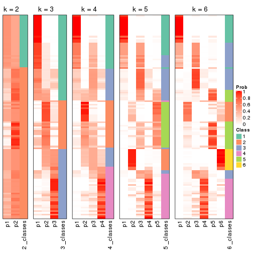
If matrix rows can be associated to genes, consider to use functional_enrichment(res,
...) to perform function enrichment for the signature genes. See this vignette for more detailed explanations.
The object with results only for a single top-value method and a single partition method can be extracted as:
res = res_list["SD", "kmeans"]
# you can also extract it by
# res = res_list["SD:kmeans"]
A summary of res and all the functions that can be applied to it:
res
#> A 'ConsensusPartition' object with k = 2, 3, 4, 5, 6.
#> On a matrix with 16442 rows and 117 columns.
#> Top rows (1000, 2000, 3000, 4000, 5000) are extracted by 'SD' method.
#> Subgroups are detected by 'kmeans' method.
#> Performed in total 1250 partitions by row resampling.
#> Best k for subgroups seems to be 2.
#>
#> Following methods can be applied to this 'ConsensusPartition' object:
#> [1] "cola_report" "collect_classes" "collect_plots"
#> [4] "collect_stats" "colnames" "compare_signatures"
#> [7] "consensus_heatmap" "dimension_reduction" "functional_enrichment"
#> [10] "get_anno_col" "get_anno" "get_classes"
#> [13] "get_consensus" "get_matrix" "get_membership"
#> [16] "get_param" "get_signatures" "get_stats"
#> [19] "is_best_k" "is_stable_k" "membership_heatmap"
#> [22] "ncol" "nrow" "plot_ecdf"
#> [25] "rownames" "select_partition_number" "show"
#> [28] "suggest_best_k" "test_to_known_factors"
collect_plots() function collects all the plots made from res for all k (number of partitions)
into one single page to provide an easy and fast comparison between different k.
collect_plots(res)
The plots are:
k and the heatmap of
predicted classes for each k.k.k.k.All the plots in panels can be made by individual functions and they are plotted later in this section.
select_partition_number() produces several plots showing different
statistics for choosing “optimized” k. There are following statistics:
k;k, the area increased is defined as \(A_k - A_{k-1}\).The detailed explanations of these statistics can be found in the cola vignette.
Generally speaking, lower PAC score, higher mean silhouette score or higher
concordance corresponds to better partition. Rand index and Jaccard index
measure how similar the current partition is compared to partition with k-1.
If they are too similar, we won't accept k is better than k-1.
select_partition_number(res)
The numeric values for all these statistics can be obtained by get_stats().
get_stats(res)
#> k 1-PAC mean_silhouette concordance area_increased Rand Jaccard
#> 2 2 0.846 0.937 0.971 0.5026 0.497 0.497
#> 3 3 0.639 0.827 0.909 0.3133 0.714 0.491
#> 4 4 0.626 0.601 0.792 0.1249 0.796 0.490
#> 5 5 0.664 0.569 0.745 0.0675 0.873 0.571
#> 6 6 0.699 0.540 0.679 0.0427 0.885 0.561
suggest_best_k() suggests the best \(k\) based on these statistics. The rules are as follows:
suggest_best_k(res)
#> [1] 2
Following shows the table of the partitions (You need to click the show/hide
code output link to see it). The membership matrix (columns with name p*)
is inferred by
clue::cl_consensus()
function with the SE method. Basically the value in the membership matrix
represents the probability to belong to a certain group. The finall class
label for an item is determined with the group with highest probability it
belongs to.
In get_classes() function, the entropy is calculated from the membership
matrix and the silhouette score is calculated from the consensus matrix.
cbind(get_classes(res, k = 2), get_membership(res, k = 2))
#> class entropy silhouette p1 p2
#> SRR2443263 1 0.0000 0.965 1.000 0.000
#> SRR2443262 2 0.0000 0.974 0.000 1.000
#> SRR2443261 2 0.0000 0.974 0.000 1.000
#> SRR2443260 1 0.8016 0.703 0.756 0.244
#> SRR2443259 1 0.0000 0.965 1.000 0.000
#> SRR2443258 1 0.0000 0.965 1.000 0.000
#> SRR2443257 2 0.0000 0.974 0.000 1.000
#> SRR2443256 1 0.0000 0.965 1.000 0.000
#> SRR2443255 1 0.0000 0.965 1.000 0.000
#> SRR2443254 1 0.7453 0.742 0.788 0.212
#> SRR2443253 2 0.0000 0.974 0.000 1.000
#> SRR2443251 2 0.0672 0.969 0.008 0.992
#> SRR2443250 2 0.0000 0.974 0.000 1.000
#> SRR2443249 2 0.0000 0.974 0.000 1.000
#> SRR2443252 1 0.4431 0.893 0.908 0.092
#> SRR2443247 1 0.0000 0.965 1.000 0.000
#> SRR2443246 1 0.0000 0.965 1.000 0.000
#> SRR2443248 2 0.0000 0.974 0.000 1.000
#> SRR2443244 2 0.0000 0.974 0.000 1.000
#> SRR2443245 1 0.0000 0.965 1.000 0.000
#> SRR2443243 1 0.0000 0.965 1.000 0.000
#> SRR2443242 2 0.0000 0.974 0.000 1.000
#> SRR2443241 1 0.0000 0.965 1.000 0.000
#> SRR2443240 1 0.0000 0.965 1.000 0.000
#> SRR2443239 2 0.0000 0.974 0.000 1.000
#> SRR2443238 1 0.0000 0.965 1.000 0.000
#> SRR2443237 2 0.0376 0.971 0.004 0.996
#> SRR2443236 1 0.0000 0.965 1.000 0.000
#> SRR2443235 1 0.0000 0.965 1.000 0.000
#> SRR2443233 1 0.0000 0.965 1.000 0.000
#> SRR2443234 1 0.0000 0.965 1.000 0.000
#> SRR2443232 1 0.0000 0.965 1.000 0.000
#> SRR2443231 1 0.0000 0.965 1.000 0.000
#> SRR2443230 1 0.0000 0.965 1.000 0.000
#> SRR2443229 1 0.7056 0.775 0.808 0.192
#> SRR2443228 2 0.0000 0.974 0.000 1.000
#> SRR2443227 1 0.0000 0.965 1.000 0.000
#> SRR2443226 1 0.0000 0.965 1.000 0.000
#> SRR2443225 1 0.8386 0.648 0.732 0.268
#> SRR2443223 2 0.0000 0.974 0.000 1.000
#> SRR2443224 2 0.0000 0.974 0.000 1.000
#> SRR2443222 2 0.0000 0.974 0.000 1.000
#> SRR2443221 2 0.0000 0.974 0.000 1.000
#> SRR2443219 2 0.0000 0.974 0.000 1.000
#> SRR2443220 2 0.0000 0.974 0.000 1.000
#> SRR2443218 2 0.0000 0.974 0.000 1.000
#> SRR2443217 1 0.0000 0.965 1.000 0.000
#> SRR2443216 1 0.0000 0.965 1.000 0.000
#> SRR2443215 2 0.0000 0.974 0.000 1.000
#> SRR2443214 1 0.0000 0.965 1.000 0.000
#> SRR2443213 1 0.0000 0.965 1.000 0.000
#> SRR2443212 2 0.0000 0.974 0.000 1.000
#> SRR2443211 2 0.0000 0.974 0.000 1.000
#> SRR2443210 2 0.0000 0.974 0.000 1.000
#> SRR2443209 1 0.0000 0.965 1.000 0.000
#> SRR2443208 1 0.7376 0.756 0.792 0.208
#> SRR2443207 2 0.7139 0.746 0.196 0.804
#> SRR2443206 2 0.0000 0.974 0.000 1.000
#> SRR2443205 2 0.0000 0.974 0.000 1.000
#> SRR2443204 1 0.0000 0.965 1.000 0.000
#> SRR2443203 1 0.0000 0.965 1.000 0.000
#> SRR2443202 2 0.1184 0.963 0.016 0.984
#> SRR2443201 2 0.1184 0.963 0.016 0.984
#> SRR2443200 2 0.0000 0.974 0.000 1.000
#> SRR2443199 2 0.0000 0.974 0.000 1.000
#> SRR2443197 2 0.7219 0.750 0.200 0.800
#> SRR2443196 2 0.0000 0.974 0.000 1.000
#> SRR2443198 2 0.6048 0.820 0.148 0.852
#> SRR2443195 1 0.0000 0.965 1.000 0.000
#> SRR2443194 1 0.7528 0.736 0.784 0.216
#> SRR2443193 1 0.0000 0.965 1.000 0.000
#> SRR2443191 1 0.5629 0.850 0.868 0.132
#> SRR2443192 2 0.0000 0.974 0.000 1.000
#> SRR2443190 1 0.0000 0.965 1.000 0.000
#> SRR2443189 1 0.0000 0.965 1.000 0.000
#> SRR2443188 1 0.0000 0.965 1.000 0.000
#> SRR2443186 2 0.0000 0.974 0.000 1.000
#> SRR2443187 2 0.0000 0.974 0.000 1.000
#> SRR2443185 2 0.0672 0.969 0.008 0.992
#> SRR2443184 1 0.0000 0.965 1.000 0.000
#> SRR2443183 1 0.0000 0.965 1.000 0.000
#> SRR2443182 1 0.0000 0.965 1.000 0.000
#> SRR2443181 2 0.0000 0.974 0.000 1.000
#> SRR2443180 2 0.0000 0.974 0.000 1.000
#> SRR2443179 2 0.0000 0.974 0.000 1.000
#> SRR2443178 2 0.9286 0.485 0.344 0.656
#> SRR2443177 1 0.0000 0.965 1.000 0.000
#> SRR2443176 1 0.0000 0.965 1.000 0.000
#> SRR2443175 1 0.0000 0.965 1.000 0.000
#> SRR2443174 1 0.0000 0.965 1.000 0.000
#> SRR2443173 2 0.0000 0.974 0.000 1.000
#> SRR2443172 2 0.0000 0.974 0.000 1.000
#> SRR2443171 1 0.0000 0.965 1.000 0.000
#> SRR2443170 1 0.0000 0.965 1.000 0.000
#> SRR2443169 1 0.0000 0.965 1.000 0.000
#> SRR2443168 1 0.7219 0.766 0.800 0.200
#> SRR2443167 2 0.1184 0.963 0.016 0.984
#> SRR2443166 1 0.0000 0.965 1.000 0.000
#> SRR2443165 2 0.9491 0.427 0.368 0.632
#> SRR2443164 2 0.0000 0.974 0.000 1.000
#> SRR2443163 2 0.0672 0.969 0.008 0.992
#> SRR2443162 1 0.0000 0.965 1.000 0.000
#> SRR2443161 1 0.5629 0.846 0.868 0.132
#> SRR2443160 2 0.1184 0.963 0.016 0.984
#> SRR2443159 2 0.0672 0.969 0.008 0.992
#> SRR2443158 1 0.0000 0.965 1.000 0.000
#> SRR2443157 1 0.0000 0.965 1.000 0.000
#> SRR2443156 1 0.0000 0.965 1.000 0.000
#> SRR2443155 1 0.0000 0.965 1.000 0.000
#> SRR2443154 1 0.0000 0.965 1.000 0.000
#> SRR2443153 1 0.0000 0.965 1.000 0.000
#> SRR2443152 2 0.0000 0.974 0.000 1.000
#> SRR2443151 2 0.0000 0.974 0.000 1.000
#> SRR2443150 2 0.0000 0.974 0.000 1.000
#> SRR2443148 2 0.0000 0.974 0.000 1.000
#> SRR2443147 2 0.0000 0.974 0.000 1.000
#> SRR2443149 1 0.5629 0.850 0.868 0.132
cbind(get_classes(res, k = 3), get_membership(res, k = 3))
#> class entropy silhouette p1 p2 p3
#> SRR2443263 1 0.5058 0.712 0.756 0.000 0.244
#> SRR2443262 3 0.3686 0.797 0.000 0.140 0.860
#> SRR2443261 3 0.3340 0.812 0.000 0.120 0.880
#> SRR2443260 3 0.1525 0.876 0.004 0.032 0.964
#> SRR2443259 3 0.2878 0.840 0.096 0.000 0.904
#> SRR2443258 3 0.4702 0.715 0.212 0.000 0.788
#> SRR2443257 3 0.3686 0.797 0.000 0.140 0.860
#> SRR2443256 3 0.2878 0.840 0.096 0.000 0.904
#> SRR2443255 3 0.1411 0.872 0.036 0.000 0.964
#> SRR2443254 3 0.1453 0.877 0.008 0.024 0.968
#> SRR2443253 3 0.3686 0.797 0.000 0.140 0.860
#> SRR2443251 3 0.0000 0.875 0.000 0.000 1.000
#> SRR2443250 3 0.3686 0.797 0.000 0.140 0.860
#> SRR2443249 3 0.3686 0.797 0.000 0.140 0.860
#> SRR2443252 3 0.1525 0.876 0.004 0.032 0.964
#> SRR2443247 1 0.0000 0.915 1.000 0.000 0.000
#> SRR2443246 1 0.4504 0.738 0.804 0.000 0.196
#> SRR2443248 3 0.1411 0.875 0.000 0.036 0.964
#> SRR2443244 3 0.5178 0.653 0.000 0.256 0.744
#> SRR2443245 1 0.0000 0.915 1.000 0.000 0.000
#> SRR2443243 1 0.0000 0.915 1.000 0.000 0.000
#> SRR2443242 3 0.5178 0.653 0.000 0.256 0.744
#> SRR2443241 1 0.4779 0.819 0.840 0.036 0.124
#> SRR2443240 1 0.6597 0.753 0.756 0.120 0.124
#> SRR2443239 2 0.0592 0.895 0.000 0.988 0.012
#> SRR2443238 1 0.0000 0.915 1.000 0.000 0.000
#> SRR2443237 3 0.5178 0.653 0.000 0.256 0.744
#> SRR2443236 1 0.0424 0.910 0.992 0.008 0.000
#> SRR2443235 1 0.0000 0.915 1.000 0.000 0.000
#> SRR2443233 1 0.0000 0.915 1.000 0.000 0.000
#> SRR2443234 1 0.0000 0.915 1.000 0.000 0.000
#> SRR2443232 1 0.0000 0.915 1.000 0.000 0.000
#> SRR2443231 1 0.0000 0.915 1.000 0.000 0.000
#> SRR2443230 1 0.0000 0.915 1.000 0.000 0.000
#> SRR2443229 1 0.8196 0.546 0.624 0.252 0.124
#> SRR2443228 2 0.1289 0.892 0.000 0.968 0.032
#> SRR2443227 1 0.0000 0.915 1.000 0.000 0.000
#> SRR2443226 1 0.0000 0.915 1.000 0.000 0.000
#> SRR2443225 3 0.1453 0.877 0.008 0.024 0.968
#> SRR2443223 3 0.1411 0.875 0.000 0.036 0.964
#> SRR2443224 2 0.2356 0.862 0.000 0.928 0.072
#> SRR2443222 2 0.1289 0.892 0.000 0.968 0.032
#> SRR2443221 2 0.1289 0.892 0.000 0.968 0.032
#> SRR2443219 2 0.3267 0.852 0.000 0.884 0.116
#> SRR2443220 3 0.3686 0.797 0.000 0.140 0.860
#> SRR2443218 2 0.2878 0.867 0.000 0.904 0.096
#> SRR2443217 1 0.6522 0.638 0.696 0.032 0.272
#> SRR2443216 3 0.3192 0.828 0.112 0.000 0.888
#> SRR2443215 2 0.3412 0.815 0.000 0.876 0.124
#> SRR2443214 1 0.0000 0.915 1.000 0.000 0.000
#> SRR2443213 1 0.0000 0.915 1.000 0.000 0.000
#> SRR2443212 2 0.3412 0.815 0.000 0.876 0.124
#> SRR2443211 2 0.3192 0.827 0.000 0.888 0.112
#> SRR2443210 2 0.1163 0.893 0.000 0.972 0.028
#> SRR2443209 1 0.6850 0.739 0.740 0.120 0.140
#> SRR2443208 2 0.9020 0.137 0.364 0.496 0.140
#> SRR2443207 2 0.3686 0.796 0.000 0.860 0.140
#> SRR2443206 2 0.0592 0.895 0.000 0.988 0.012
#> SRR2443205 2 0.2066 0.870 0.000 0.940 0.060
#> SRR2443204 1 0.0000 0.915 1.000 0.000 0.000
#> SRR2443203 1 0.3482 0.836 0.872 0.000 0.128
#> SRR2443202 3 0.1031 0.877 0.000 0.024 0.976
#> SRR2443201 3 0.1411 0.875 0.000 0.036 0.964
#> SRR2443200 2 0.1289 0.892 0.000 0.968 0.032
#> SRR2443199 2 0.2878 0.867 0.000 0.904 0.096
#> SRR2443197 3 0.0592 0.873 0.000 0.012 0.988
#> SRR2443196 3 0.3619 0.809 0.000 0.136 0.864
#> SRR2443198 3 0.0000 0.875 0.000 0.000 1.000
#> SRR2443195 1 0.0000 0.915 1.000 0.000 0.000
#> SRR2443194 3 0.1453 0.877 0.008 0.024 0.968
#> SRR2443193 1 0.0000 0.915 1.000 0.000 0.000
#> SRR2443191 1 0.8907 0.364 0.528 0.332 0.140
#> SRR2443192 3 0.5591 0.564 0.000 0.304 0.696
#> SRR2443190 1 0.0000 0.915 1.000 0.000 0.000
#> SRR2443189 1 0.0000 0.915 1.000 0.000 0.000
#> SRR2443188 1 0.0000 0.915 1.000 0.000 0.000
#> SRR2443186 2 0.0592 0.895 0.000 0.988 0.012
#> SRR2443187 2 0.0592 0.895 0.000 0.988 0.012
#> SRR2443185 3 0.0892 0.877 0.000 0.020 0.980
#> SRR2443184 3 0.3192 0.828 0.112 0.000 0.888
#> SRR2443183 1 0.0000 0.915 1.000 0.000 0.000
#> SRR2443182 1 0.0000 0.915 1.000 0.000 0.000
#> SRR2443181 2 0.0000 0.897 0.000 1.000 0.000
#> SRR2443180 2 0.2878 0.867 0.000 0.904 0.096
#> SRR2443179 3 0.4002 0.782 0.000 0.160 0.840
#> SRR2443178 3 0.4555 0.715 0.200 0.000 0.800
#> SRR2443177 1 0.0000 0.915 1.000 0.000 0.000
#> SRR2443176 1 0.3686 0.826 0.860 0.000 0.140
#> SRR2443175 1 0.0000 0.915 1.000 0.000 0.000
#> SRR2443174 1 0.0000 0.915 1.000 0.000 0.000
#> SRR2443173 2 0.0000 0.897 0.000 1.000 0.000
#> SRR2443172 2 0.0000 0.897 0.000 1.000 0.000
#> SRR2443171 1 0.0000 0.915 1.000 0.000 0.000
#> SRR2443170 1 0.0424 0.910 0.992 0.008 0.000
#> SRR2443169 1 0.0000 0.915 1.000 0.000 0.000
#> SRR2443168 1 0.8202 0.482 0.580 0.092 0.328
#> SRR2443167 3 0.0592 0.873 0.000 0.012 0.988
#> SRR2443166 1 0.4555 0.732 0.800 0.000 0.200
#> SRR2443165 3 0.0000 0.875 0.000 0.000 1.000
#> SRR2443164 2 0.2878 0.867 0.000 0.904 0.096
#> SRR2443163 3 0.1411 0.875 0.000 0.036 0.964
#> SRR2443162 3 0.2711 0.846 0.088 0.000 0.912
#> SRR2443161 3 0.1525 0.876 0.004 0.032 0.964
#> SRR2443160 3 0.0592 0.873 0.000 0.012 0.988
#> SRR2443159 3 0.1860 0.856 0.000 0.052 0.948
#> SRR2443158 3 0.5327 0.608 0.272 0.000 0.728
#> SRR2443157 1 0.0000 0.915 1.000 0.000 0.000
#> SRR2443156 1 0.6744 0.609 0.668 0.032 0.300
#> SRR2443155 1 0.3530 0.862 0.900 0.032 0.068
#> SRR2443154 1 0.4662 0.821 0.844 0.032 0.124
#> SRR2443153 1 0.0000 0.915 1.000 0.000 0.000
#> SRR2443152 2 0.0000 0.897 0.000 1.000 0.000
#> SRR2443151 2 0.1411 0.891 0.000 0.964 0.036
#> SRR2443150 2 0.0000 0.897 0.000 1.000 0.000
#> SRR2443148 2 0.5058 0.688 0.000 0.756 0.244
#> SRR2443147 2 0.6225 0.235 0.000 0.568 0.432
#> SRR2443149 3 0.5521 0.738 0.180 0.032 0.788
cbind(get_classes(res, k = 4), get_membership(res, k = 4))
#> class entropy silhouette p1 p2 p3 p4
#> SRR2443263 3 0.4544 0.5934 0.192 0.012 0.780 0.016
#> SRR2443262 4 0.4543 0.3882 0.000 0.000 0.324 0.676
#> SRR2443261 4 0.4961 0.0604 0.000 0.000 0.448 0.552
#> SRR2443260 3 0.0336 0.7600 0.000 0.008 0.992 0.000
#> SRR2443259 3 0.0336 0.7600 0.000 0.008 0.992 0.000
#> SRR2443258 3 0.0657 0.7585 0.000 0.012 0.984 0.004
#> SRR2443257 4 0.4564 0.3811 0.000 0.000 0.328 0.672
#> SRR2443256 3 0.0524 0.7596 0.000 0.004 0.988 0.008
#> SRR2443255 3 0.1022 0.7597 0.000 0.000 0.968 0.032
#> SRR2443254 3 0.1022 0.7597 0.000 0.000 0.968 0.032
#> SRR2443253 4 0.4543 0.3882 0.000 0.000 0.324 0.676
#> SRR2443251 3 0.4304 0.5852 0.000 0.000 0.716 0.284
#> SRR2443250 4 0.4543 0.3882 0.000 0.000 0.324 0.676
#> SRR2443249 4 0.4543 0.3882 0.000 0.000 0.324 0.676
#> SRR2443252 3 0.0336 0.7600 0.000 0.008 0.992 0.000
#> SRR2443247 1 0.2408 0.8680 0.920 0.004 0.060 0.016
#> SRR2443246 1 0.7279 0.4681 0.568 0.128 0.288 0.016
#> SRR2443248 3 0.2973 0.7289 0.000 0.000 0.856 0.144
#> SRR2443244 3 0.6626 0.3546 0.000 0.384 0.528 0.088
#> SRR2443245 1 0.1743 0.8836 0.940 0.004 0.056 0.000
#> SRR2443243 1 0.0188 0.9040 0.996 0.004 0.000 0.000
#> SRR2443242 3 0.6259 0.5181 0.000 0.300 0.616 0.084
#> SRR2443241 2 0.6818 0.4867 0.232 0.600 0.168 0.000
#> SRR2443240 2 0.4773 0.6343 0.092 0.788 0.120 0.000
#> SRR2443239 2 0.3486 0.5872 0.000 0.812 0.000 0.188
#> SRR2443238 1 0.0188 0.9040 0.996 0.004 0.000 0.000
#> SRR2443237 3 0.5110 0.4209 0.000 0.352 0.636 0.012
#> SRR2443236 1 0.5279 0.3219 0.588 0.400 0.012 0.000
#> SRR2443235 1 0.0000 0.9046 1.000 0.000 0.000 0.000
#> SRR2443233 1 0.0000 0.9046 1.000 0.000 0.000 0.000
#> SRR2443234 1 0.0000 0.9046 1.000 0.000 0.000 0.000
#> SRR2443232 1 0.0000 0.9046 1.000 0.000 0.000 0.000
#> SRR2443231 1 0.0000 0.9046 1.000 0.000 0.000 0.000
#> SRR2443230 1 0.0000 0.9046 1.000 0.000 0.000 0.000
#> SRR2443229 2 0.5613 0.5974 0.084 0.724 0.188 0.004
#> SRR2443228 4 0.4830 0.2051 0.000 0.392 0.000 0.608
#> SRR2443227 1 0.0000 0.9046 1.000 0.000 0.000 0.000
#> SRR2443226 1 0.0188 0.9040 0.996 0.004 0.000 0.000
#> SRR2443225 3 0.2125 0.7542 0.000 0.004 0.920 0.076
#> SRR2443223 3 0.2814 0.7337 0.000 0.000 0.868 0.132
#> SRR2443224 2 0.0657 0.6725 0.000 0.984 0.004 0.012
#> SRR2443222 4 0.4977 0.0499 0.000 0.460 0.000 0.540
#> SRR2443221 4 0.4977 0.0499 0.000 0.460 0.000 0.540
#> SRR2443219 4 0.2271 0.5169 0.000 0.076 0.008 0.916
#> SRR2443220 4 0.4746 0.2918 0.000 0.000 0.368 0.632
#> SRR2443218 4 0.3801 0.4447 0.000 0.220 0.000 0.780
#> SRR2443217 3 0.6140 0.3391 0.064 0.340 0.596 0.000
#> SRR2443216 3 0.0469 0.7596 0.000 0.012 0.988 0.000
#> SRR2443215 2 0.1488 0.6769 0.000 0.956 0.032 0.012
#> SRR2443214 1 0.1661 0.8853 0.944 0.004 0.052 0.000
#> SRR2443213 1 0.0000 0.9046 1.000 0.000 0.000 0.000
#> SRR2443212 2 0.1388 0.6768 0.000 0.960 0.028 0.012
#> SRR2443211 2 0.0524 0.6728 0.000 0.988 0.004 0.008
#> SRR2443210 4 0.4977 0.0499 0.000 0.460 0.000 0.540
#> SRR2443209 2 0.5132 0.6079 0.068 0.748 0.184 0.000
#> SRR2443208 2 0.4021 0.6525 0.032 0.836 0.124 0.008
#> SRR2443207 2 0.1722 0.6756 0.000 0.944 0.048 0.008
#> SRR2443206 2 0.3688 0.5686 0.000 0.792 0.000 0.208
#> SRR2443205 2 0.0779 0.6712 0.000 0.980 0.004 0.016
#> SRR2443204 1 0.1743 0.8836 0.940 0.004 0.056 0.000
#> SRR2443203 3 0.5105 0.1959 0.432 0.004 0.564 0.000
#> SRR2443202 3 0.3196 0.7325 0.000 0.008 0.856 0.136
#> SRR2443201 3 0.2281 0.7491 0.000 0.000 0.904 0.096
#> SRR2443200 4 0.4830 0.2051 0.000 0.392 0.000 0.608
#> SRR2443199 4 0.3764 0.4481 0.000 0.216 0.000 0.784
#> SRR2443197 3 0.4164 0.6064 0.000 0.000 0.736 0.264
#> SRR2443196 4 0.6213 -0.0969 0.000 0.052 0.464 0.484
#> SRR2443198 3 0.3975 0.6367 0.000 0.000 0.760 0.240
#> SRR2443195 1 0.1305 0.8904 0.960 0.004 0.036 0.000
#> SRR2443194 3 0.1940 0.7535 0.000 0.000 0.924 0.076
#> SRR2443193 1 0.5458 0.6180 0.704 0.236 0.060 0.000
#> SRR2443191 2 0.3931 0.6490 0.040 0.832 0.128 0.000
#> SRR2443192 3 0.6605 0.2179 0.000 0.440 0.480 0.080
#> SRR2443190 1 0.0000 0.9046 1.000 0.000 0.000 0.000
#> SRR2443189 1 0.2342 0.8726 0.912 0.008 0.080 0.000
#> SRR2443188 1 0.0000 0.9046 1.000 0.000 0.000 0.000
#> SRR2443186 2 0.3528 0.5843 0.000 0.808 0.000 0.192
#> SRR2443187 2 0.3528 0.5843 0.000 0.808 0.000 0.192
#> SRR2443185 3 0.2868 0.7316 0.000 0.000 0.864 0.136
#> SRR2443184 3 0.0657 0.7579 0.000 0.012 0.984 0.004
#> SRR2443183 1 0.0000 0.9046 1.000 0.000 0.000 0.000
#> SRR2443182 1 0.2944 0.8281 0.868 0.004 0.128 0.000
#> SRR2443181 2 0.3266 0.5997 0.000 0.832 0.000 0.168
#> SRR2443180 4 0.3688 0.4533 0.000 0.208 0.000 0.792
#> SRR2443179 4 0.4792 0.3943 0.000 0.008 0.312 0.680
#> SRR2443178 3 0.6710 0.6623 0.052 0.104 0.692 0.152
#> SRR2443177 1 0.1824 0.8816 0.936 0.004 0.060 0.000
#> SRR2443176 3 0.5110 0.3655 0.352 0.012 0.636 0.000
#> SRR2443175 1 0.0376 0.9027 0.992 0.004 0.000 0.004
#> SRR2443174 1 0.0188 0.9036 0.996 0.000 0.000 0.004
#> SRR2443173 2 0.4916 0.2242 0.000 0.576 0.000 0.424
#> SRR2443172 2 0.4916 0.2242 0.000 0.576 0.000 0.424
#> SRR2443171 1 0.2957 0.8573 0.900 0.016 0.068 0.016
#> SRR2443170 1 0.6701 0.2535 0.536 0.392 0.056 0.016
#> SRR2443169 1 0.1796 0.8832 0.948 0.004 0.032 0.016
#> SRR2443168 2 0.5804 0.5267 0.036 0.676 0.272 0.016
#> SRR2443167 3 0.4304 0.5824 0.000 0.000 0.716 0.284
#> SRR2443166 1 0.5513 0.5279 0.628 0.008 0.348 0.016
#> SRR2443165 3 0.3764 0.6634 0.000 0.000 0.784 0.216
#> SRR2443164 4 0.3311 0.4783 0.000 0.172 0.000 0.828
#> SRR2443163 3 0.2704 0.7378 0.000 0.000 0.876 0.124
#> SRR2443162 3 0.0336 0.7603 0.000 0.000 0.992 0.008
#> SRR2443161 3 0.0188 0.7606 0.000 0.000 0.996 0.004
#> SRR2443160 3 0.4304 0.5824 0.000 0.000 0.716 0.284
#> SRR2443159 3 0.4998 0.1030 0.000 0.000 0.512 0.488
#> SRR2443158 3 0.1059 0.7531 0.000 0.012 0.972 0.016
#> SRR2443157 1 0.3873 0.8150 0.832 0.008 0.144 0.016
#> SRR2443156 3 0.6311 0.2682 0.040 0.356 0.588 0.016
#> SRR2443155 2 0.7969 0.3225 0.288 0.484 0.212 0.016
#> SRR2443154 2 0.7997 0.3651 0.228 0.484 0.272 0.016
#> SRR2443153 1 0.0000 0.9046 1.000 0.000 0.000 0.000
#> SRR2443152 2 0.4898 0.2434 0.000 0.584 0.000 0.416
#> SRR2443151 4 0.3942 0.4296 0.000 0.236 0.000 0.764
#> SRR2443150 2 0.4898 0.2434 0.000 0.584 0.000 0.416
#> SRR2443148 4 0.0927 0.5352 0.000 0.016 0.008 0.976
#> SRR2443147 4 0.1022 0.5407 0.000 0.000 0.032 0.968
#> SRR2443149 3 0.2408 0.7017 0.000 0.104 0.896 0.000
cbind(get_classes(res, k = 5), get_membership(res, k = 5))
#> class entropy silhouette p1 p2 p3 p4 p5
#> SRR2443263 3 0.4088 0.5351 0.104 0.012 0.820 0.052 0.012
#> SRR2443262 4 0.4404 0.6925 0.000 0.088 0.152 0.760 0.000
#> SRR2443261 4 0.3876 0.6767 0.000 0.032 0.192 0.776 0.000
#> SRR2443260 3 0.1205 0.6112 0.000 0.000 0.956 0.040 0.004
#> SRR2443259 3 0.0290 0.6137 0.000 0.000 0.992 0.008 0.000
#> SRR2443258 3 0.1153 0.6060 0.000 0.004 0.964 0.024 0.008
#> SRR2443257 4 0.4334 0.6927 0.000 0.080 0.156 0.764 0.000
#> SRR2443256 3 0.0162 0.6139 0.000 0.000 0.996 0.004 0.000
#> SRR2443255 3 0.1043 0.6114 0.000 0.000 0.960 0.040 0.000
#> SRR2443254 3 0.2763 0.5354 0.000 0.000 0.848 0.148 0.004
#> SRR2443253 4 0.4404 0.6925 0.000 0.088 0.152 0.760 0.000
#> SRR2443251 4 0.4403 0.4440 0.000 0.008 0.384 0.608 0.000
#> SRR2443250 4 0.4404 0.6925 0.000 0.088 0.152 0.760 0.000
#> SRR2443249 4 0.4404 0.6925 0.000 0.088 0.152 0.760 0.000
#> SRR2443252 3 0.1041 0.6137 0.000 0.000 0.964 0.032 0.004
#> SRR2443247 1 0.3147 0.7947 0.856 0.000 0.112 0.024 0.008
#> SRR2443246 3 0.7555 0.0252 0.236 0.008 0.420 0.032 0.304
#> SRR2443248 3 0.4920 0.2485 0.000 0.008 0.620 0.348 0.024
#> SRR2443244 3 0.7131 0.2000 0.000 0.012 0.360 0.300 0.328
#> SRR2443245 1 0.5907 0.7175 0.676 0.032 0.212 0.060 0.020
#> SRR2443243 1 0.2124 0.8509 0.924 0.020 0.000 0.044 0.012
#> SRR2443242 3 0.7268 0.2111 0.000 0.020 0.368 0.288 0.324
#> SRR2443241 5 0.2457 0.7014 0.032 0.008 0.016 0.028 0.916
#> SRR2443240 5 0.1565 0.7118 0.004 0.016 0.008 0.020 0.952
#> SRR2443239 5 0.4774 0.2930 0.000 0.424 0.000 0.020 0.556
#> SRR2443238 1 0.3424 0.8381 0.872 0.032 0.020 0.052 0.024
#> SRR2443237 3 0.7431 0.2472 0.000 0.032 0.376 0.268 0.324
#> SRR2443236 5 0.4193 0.5696 0.256 0.000 0.000 0.024 0.720
#> SRR2443235 1 0.0290 0.8628 0.992 0.000 0.000 0.000 0.008
#> SRR2443233 1 0.0290 0.8628 0.992 0.000 0.000 0.000 0.008
#> SRR2443234 1 0.0290 0.8628 0.992 0.000 0.000 0.000 0.008
#> SRR2443232 1 0.0290 0.8628 0.992 0.000 0.000 0.000 0.008
#> SRR2443231 1 0.0162 0.8624 0.996 0.000 0.000 0.000 0.004
#> SRR2443230 1 0.0000 0.8627 1.000 0.000 0.000 0.000 0.000
#> SRR2443229 5 0.2861 0.6995 0.000 0.032 0.040 0.036 0.892
#> SRR2443228 2 0.1469 0.8187 0.000 0.948 0.000 0.016 0.036
#> SRR2443227 1 0.1173 0.8597 0.964 0.012 0.000 0.020 0.004
#> SRR2443226 1 0.3647 0.8324 0.860 0.032 0.028 0.060 0.020
#> SRR2443225 3 0.4478 0.4139 0.000 0.008 0.628 0.360 0.004
#> SRR2443223 3 0.4639 0.2805 0.000 0.000 0.632 0.344 0.024
#> SRR2443224 5 0.2616 0.6914 0.000 0.100 0.000 0.020 0.880
#> SRR2443222 2 0.1768 0.8154 0.000 0.924 0.000 0.004 0.072
#> SRR2443221 2 0.1768 0.8154 0.000 0.924 0.000 0.004 0.072
#> SRR2443219 4 0.4359 0.1351 0.000 0.412 0.000 0.584 0.004
#> SRR2443220 4 0.3649 0.6870 0.000 0.040 0.152 0.808 0.000
#> SRR2443218 2 0.3231 0.7381 0.000 0.800 0.000 0.196 0.004
#> SRR2443217 3 0.6410 0.1779 0.004 0.020 0.484 0.088 0.404
#> SRR2443216 3 0.0671 0.6115 0.000 0.000 0.980 0.016 0.004
#> SRR2443215 5 0.3932 0.6634 0.000 0.140 0.000 0.064 0.796
#> SRR2443214 1 0.6081 0.7298 0.680 0.032 0.180 0.084 0.024
#> SRR2443213 1 0.0290 0.8628 0.992 0.000 0.000 0.000 0.008
#> SRR2443212 5 0.2390 0.7041 0.000 0.084 0.000 0.020 0.896
#> SRR2443211 5 0.2208 0.7032 0.000 0.072 0.000 0.020 0.908
#> SRR2443210 2 0.1768 0.8154 0.000 0.924 0.000 0.004 0.072
#> SRR2443209 5 0.0798 0.7140 0.000 0.000 0.008 0.016 0.976
#> SRR2443208 5 0.1673 0.7140 0.000 0.032 0.008 0.016 0.944
#> SRR2443207 5 0.1740 0.7111 0.000 0.056 0.000 0.012 0.932
#> SRR2443206 5 0.4811 0.2191 0.000 0.452 0.000 0.020 0.528
#> SRR2443205 5 0.3151 0.6647 0.000 0.144 0.000 0.020 0.836
#> SRR2443204 1 0.5936 0.7136 0.672 0.032 0.216 0.060 0.020
#> SRR2443203 3 0.6492 0.3271 0.244 0.032 0.616 0.088 0.020
#> SRR2443202 3 0.4610 0.2375 0.000 0.000 0.556 0.432 0.012
#> SRR2443201 3 0.4511 0.3519 0.000 0.000 0.628 0.356 0.016
#> SRR2443200 2 0.1522 0.8193 0.000 0.944 0.000 0.012 0.044
#> SRR2443199 2 0.3231 0.7381 0.000 0.800 0.000 0.196 0.004
#> SRR2443197 4 0.4341 0.2672 0.000 0.000 0.404 0.592 0.004
#> SRR2443196 4 0.3876 0.6158 0.000 0.020 0.108 0.824 0.048
#> SRR2443198 4 0.4403 0.1435 0.000 0.000 0.436 0.560 0.004
#> SRR2443195 1 0.5279 0.7743 0.748 0.032 0.140 0.060 0.020
#> SRR2443194 3 0.3969 0.4431 0.000 0.000 0.692 0.304 0.004
#> SRR2443193 5 0.8308 -0.0970 0.312 0.032 0.188 0.068 0.400
#> SRR2443191 5 0.1200 0.7147 0.000 0.012 0.008 0.016 0.964
#> SRR2443192 5 0.7428 -0.2948 0.000 0.032 0.348 0.260 0.360
#> SRR2443190 1 0.0290 0.8628 0.992 0.000 0.000 0.000 0.008
#> SRR2443189 1 0.6320 0.6819 0.636 0.032 0.232 0.080 0.020
#> SRR2443188 1 0.0290 0.8628 0.992 0.000 0.000 0.000 0.008
#> SRR2443186 5 0.4798 0.2542 0.000 0.440 0.000 0.020 0.540
#> SRR2443187 5 0.4798 0.2542 0.000 0.440 0.000 0.020 0.540
#> SRR2443185 3 0.4331 0.2541 0.000 0.000 0.596 0.400 0.004
#> SRR2443184 3 0.1430 0.6115 0.000 0.000 0.944 0.052 0.004
#> SRR2443183 1 0.0000 0.8627 1.000 0.000 0.000 0.000 0.000
#> SRR2443182 1 0.6119 0.6618 0.628 0.028 0.268 0.056 0.020
#> SRR2443181 5 0.4746 0.3819 0.000 0.376 0.000 0.024 0.600
#> SRR2443180 2 0.3231 0.7381 0.000 0.800 0.000 0.196 0.004
#> SRR2443179 4 0.3213 0.6624 0.000 0.064 0.072 0.860 0.004
#> SRR2443178 4 0.6499 -0.2316 0.008 0.020 0.444 0.444 0.084
#> SRR2443177 1 0.6320 0.6867 0.640 0.032 0.224 0.084 0.020
#> SRR2443176 3 0.5276 0.5006 0.104 0.032 0.756 0.088 0.020
#> SRR2443175 1 0.1679 0.8574 0.948 0.004 0.020 0.016 0.012
#> SRR2443174 1 0.0000 0.8627 1.000 0.000 0.000 0.000 0.000
#> SRR2443173 2 0.3359 0.7388 0.000 0.816 0.000 0.020 0.164
#> SRR2443172 2 0.3550 0.7299 0.000 0.796 0.000 0.020 0.184
#> SRR2443171 1 0.4935 0.6786 0.756 0.000 0.088 0.032 0.124
#> SRR2443170 5 0.5150 0.5844 0.200 0.004 0.040 0.036 0.720
#> SRR2443169 1 0.1547 0.8422 0.948 0.000 0.032 0.016 0.004
#> SRR2443168 5 0.3420 0.6592 0.000 0.004 0.124 0.036 0.836
#> SRR2443167 4 0.4321 0.4190 0.000 0.004 0.396 0.600 0.000
#> SRR2443166 3 0.6297 -0.1074 0.352 0.020 0.552 0.056 0.020
#> SRR2443165 3 0.4341 0.1575 0.000 0.000 0.592 0.404 0.004
#> SRR2443164 2 0.3424 0.6782 0.000 0.760 0.000 0.240 0.000
#> SRR2443163 3 0.4558 0.3126 0.000 0.000 0.652 0.324 0.024
#> SRR2443162 3 0.0703 0.6145 0.000 0.000 0.976 0.024 0.000
#> SRR2443161 3 0.1205 0.6112 0.000 0.000 0.956 0.040 0.004
#> SRR2443160 4 0.4251 0.4637 0.000 0.004 0.372 0.624 0.000
#> SRR2443159 4 0.3455 0.6594 0.000 0.008 0.208 0.784 0.000
#> SRR2443158 3 0.1018 0.6063 0.000 0.000 0.968 0.016 0.016
#> SRR2443157 1 0.6720 0.4138 0.472 0.024 0.412 0.068 0.024
#> SRR2443156 3 0.5875 0.0349 0.020 0.008 0.496 0.036 0.440
#> SRR2443155 5 0.5234 0.6177 0.104 0.004 0.112 0.036 0.744
#> SRR2443154 5 0.5330 0.5998 0.060 0.008 0.168 0.036 0.728
#> SRR2443153 1 0.0162 0.8624 0.996 0.000 0.000 0.000 0.004
#> SRR2443152 2 0.3724 0.7057 0.000 0.776 0.000 0.020 0.204
#> SRR2443151 2 0.2732 0.7619 0.000 0.840 0.000 0.160 0.000
#> SRR2443150 2 0.3724 0.7057 0.000 0.776 0.000 0.020 0.204
#> SRR2443148 4 0.4287 -0.0390 0.000 0.460 0.000 0.540 0.000
#> SRR2443147 4 0.4392 0.2220 0.000 0.380 0.008 0.612 0.000
#> SRR2443149 3 0.2249 0.5851 0.000 0.000 0.896 0.008 0.096
cbind(get_classes(res, k = 6), get_membership(res, k = 6))
#> class entropy silhouette p1 p2 p3 p4 p5 p6
#> SRR2443263 3 0.2456 0.6810 0.048 0.000 0.892 0.008 0.000 NA
#> SRR2443262 4 0.5186 0.4737 0.000 0.016 0.060 0.556 0.000 NA
#> SRR2443261 4 0.4884 0.4947 0.000 0.004 0.064 0.592 0.000 NA
#> SRR2443260 3 0.2118 0.6975 0.000 0.000 0.888 0.104 0.000 NA
#> SRR2443259 3 0.1049 0.7358 0.000 0.000 0.960 0.032 0.000 NA
#> SRR2443258 3 0.1575 0.7330 0.000 0.000 0.936 0.032 0.000 NA
#> SRR2443257 4 0.4912 0.4799 0.000 0.004 0.060 0.568 0.000 NA
#> SRR2443256 3 0.0865 0.7360 0.000 0.000 0.964 0.036 0.000 NA
#> SRR2443255 3 0.1204 0.7306 0.000 0.000 0.944 0.056 0.000 NA
#> SRR2443254 3 0.2692 0.6318 0.000 0.000 0.840 0.148 0.000 NA
#> SRR2443253 4 0.5195 0.4719 0.000 0.016 0.060 0.552 0.000 NA
#> SRR2443251 4 0.5336 0.4460 0.000 0.000 0.228 0.592 0.000 NA
#> SRR2443250 4 0.5186 0.4737 0.000 0.016 0.060 0.556 0.000 NA
#> SRR2443249 4 0.5186 0.4737 0.000 0.016 0.060 0.556 0.000 NA
#> SRR2443252 3 0.2118 0.6975 0.000 0.000 0.888 0.104 0.000 NA
#> SRR2443247 1 0.3062 0.7255 0.836 0.000 0.112 0.000 0.000 NA
#> SRR2443246 5 0.6886 0.3921 0.128 0.000 0.280 0.000 0.468 NA
#> SRR2443248 3 0.5704 -0.1527 0.000 0.000 0.456 0.400 0.004 NA
#> SRR2443244 4 0.6313 0.2567 0.000 0.000 0.240 0.496 0.236 NA
#> SRR2443245 1 0.5573 0.6381 0.584 0.000 0.180 0.008 0.000 NA
#> SRR2443243 1 0.3141 0.7686 0.788 0.000 0.012 0.000 0.000 NA
#> SRR2443242 4 0.6591 0.2439 0.000 0.004 0.256 0.476 0.228 NA
#> SRR2443241 5 0.1788 0.7192 0.004 0.000 0.000 0.004 0.916 NA
#> SRR2443240 5 0.1610 0.7174 0.000 0.000 0.000 0.000 0.916 NA
#> SRR2443239 2 0.5810 0.2683 0.000 0.436 0.000 0.000 0.380 NA
#> SRR2443238 1 0.4059 0.7454 0.732 0.000 0.036 0.004 0.004 NA
#> SRR2443237 4 0.6636 0.2321 0.000 0.004 0.252 0.484 0.216 NA
#> SRR2443236 5 0.3602 0.6775 0.116 0.000 0.000 0.000 0.796 NA
#> SRR2443235 1 0.0363 0.8189 0.988 0.000 0.000 0.000 0.000 NA
#> SRR2443233 1 0.0363 0.8189 0.988 0.000 0.000 0.000 0.000 NA
#> SRR2443234 1 0.0363 0.8189 0.988 0.000 0.000 0.000 0.000 NA
#> SRR2443232 1 0.0363 0.8189 0.988 0.000 0.000 0.000 0.000 NA
#> SRR2443231 1 0.0260 0.8179 0.992 0.000 0.000 0.000 0.000 NA
#> SRR2443230 1 0.0547 0.8187 0.980 0.000 0.000 0.000 0.000 NA
#> SRR2443229 5 0.1932 0.7129 0.000 0.008 0.008 0.032 0.928 NA
#> SRR2443228 2 0.0713 0.6973 0.000 0.972 0.000 0.000 0.000 NA
#> SRR2443227 1 0.1075 0.8182 0.952 0.000 0.000 0.000 0.000 NA
#> SRR2443226 1 0.4421 0.7300 0.708 0.000 0.064 0.008 0.000 NA
#> SRR2443225 4 0.4640 0.0679 0.000 0.000 0.436 0.528 0.004 NA
#> SRR2443223 4 0.5278 0.1499 0.000 0.000 0.440 0.472 0.004 NA
#> SRR2443224 5 0.4085 0.5467 0.000 0.052 0.000 0.000 0.716 NA
#> SRR2443222 2 0.0146 0.7006 0.000 0.996 0.000 0.000 0.004 NA
#> SRR2443221 2 0.0146 0.7006 0.000 0.996 0.000 0.000 0.004 NA
#> SRR2443219 4 0.6039 0.1647 0.000 0.260 0.000 0.408 0.000 NA
#> SRR2443220 4 0.3991 0.5175 0.000 0.008 0.028 0.724 0.000 NA
#> SRR2443218 2 0.3746 0.6115 0.000 0.780 0.000 0.080 0.000 NA
#> SRR2443217 5 0.6653 0.1255 0.004 0.000 0.328 0.168 0.452 NA
#> SRR2443216 3 0.1498 0.7337 0.000 0.000 0.940 0.032 0.000 NA
#> SRR2443215 5 0.6560 0.3562 0.000 0.120 0.000 0.160 0.552 NA
#> SRR2443214 1 0.6193 0.6274 0.564 0.000 0.152 0.044 0.004 NA
#> SRR2443213 1 0.0146 0.8187 0.996 0.000 0.000 0.000 0.000 NA
#> SRR2443212 5 0.3208 0.6380 0.000 0.040 0.000 0.008 0.832 NA
#> SRR2443211 5 0.3572 0.5962 0.000 0.032 0.000 0.000 0.764 NA
#> SRR2443210 2 0.0777 0.7002 0.000 0.972 0.000 0.000 0.004 NA
#> SRR2443209 5 0.0508 0.7201 0.004 0.000 0.000 0.012 0.984 NA
#> SRR2443208 5 0.1065 0.7148 0.000 0.008 0.000 0.008 0.964 NA
#> SRR2443207 5 0.1500 0.7039 0.000 0.012 0.000 0.000 0.936 NA
#> SRR2443206 2 0.5751 0.3311 0.000 0.472 0.000 0.000 0.348 NA
#> SRR2443205 5 0.5142 0.3585 0.000 0.172 0.000 0.000 0.624 NA
#> SRR2443204 1 0.5573 0.6381 0.584 0.000 0.180 0.008 0.000 NA
#> SRR2443203 3 0.6829 0.3225 0.164 0.000 0.496 0.108 0.000 NA
#> SRR2443202 4 0.4286 0.2442 0.000 0.000 0.352 0.624 0.012 NA
#> SRR2443201 4 0.4394 0.1713 0.000 0.000 0.408 0.568 0.004 NA
#> SRR2443200 2 0.0713 0.6973 0.000 0.972 0.000 0.000 0.000 NA
#> SRR2443199 2 0.3746 0.6115 0.000 0.780 0.000 0.080 0.000 NA
#> SRR2443197 4 0.3642 0.4258 0.000 0.000 0.204 0.760 0.000 NA
#> SRR2443196 4 0.2444 0.4994 0.000 0.000 0.016 0.896 0.036 NA
#> SRR2443198 4 0.2964 0.4093 0.000 0.000 0.204 0.792 0.000 NA
#> SRR2443195 1 0.5147 0.6809 0.644 0.000 0.136 0.008 0.000 NA
#> SRR2443194 4 0.4096 -0.0259 0.000 0.000 0.484 0.508 0.000 NA
#> SRR2443193 5 0.7663 0.2435 0.176 0.000 0.104 0.048 0.460 NA
#> SRR2443191 5 0.0653 0.7195 0.004 0.000 0.000 0.012 0.980 NA
#> SRR2443192 4 0.6652 0.2362 0.000 0.004 0.240 0.472 0.244 NA
#> SRR2443190 1 0.0363 0.8189 0.988 0.000 0.000 0.000 0.000 NA
#> SRR2443189 1 0.6490 0.5710 0.516 0.000 0.196 0.044 0.004 NA
#> SRR2443188 1 0.0363 0.8189 0.988 0.000 0.000 0.000 0.000 NA
#> SRR2443186 2 0.5763 0.3168 0.000 0.464 0.000 0.000 0.356 NA
#> SRR2443187 2 0.5748 0.3150 0.000 0.464 0.000 0.000 0.360 NA
#> SRR2443185 4 0.4121 0.2222 0.000 0.000 0.380 0.604 0.000 NA
#> SRR2443184 3 0.1951 0.7145 0.000 0.000 0.908 0.076 0.000 NA
#> SRR2443183 1 0.0146 0.8194 0.996 0.000 0.000 0.000 0.000 NA
#> SRR2443182 1 0.6015 0.4319 0.460 0.000 0.312 0.004 0.000 NA
#> SRR2443181 2 0.5855 0.2280 0.000 0.412 0.000 0.000 0.396 NA
#> SRR2443180 2 0.3746 0.6115 0.000 0.780 0.000 0.080 0.000 NA
#> SRR2443179 4 0.2933 0.5073 0.000 0.000 0.000 0.796 0.004 NA
#> SRR2443178 4 0.5491 0.2749 0.000 0.000 0.296 0.596 0.052 NA
#> SRR2443177 1 0.6267 0.5978 0.536 0.000 0.180 0.044 0.000 NA
#> SRR2443176 3 0.5067 0.5220 0.052 0.000 0.668 0.048 0.000 NA
#> SRR2443175 1 0.1461 0.8135 0.940 0.000 0.016 0.000 0.000 NA
#> SRR2443174 1 0.0547 0.8177 0.980 0.000 0.000 0.000 0.000 NA
#> SRR2443173 2 0.3671 0.6631 0.000 0.756 0.000 0.000 0.036 NA
#> SRR2443172 2 0.3658 0.6639 0.000 0.752 0.000 0.000 0.032 NA
#> SRR2443171 1 0.6373 -0.0993 0.440 0.000 0.048 0.000 0.380 NA
#> SRR2443170 5 0.4587 0.6599 0.104 0.000 0.024 0.000 0.736 NA
#> SRR2443169 1 0.1297 0.8045 0.948 0.000 0.012 0.000 0.000 NA
#> SRR2443168 5 0.3481 0.6944 0.000 0.000 0.072 0.000 0.804 NA
#> SRR2443167 4 0.4414 0.4578 0.000 0.000 0.204 0.704 0.000 NA
#> SRR2443166 3 0.4691 0.4658 0.124 0.000 0.680 0.000 0.000 NA
#> SRR2443165 4 0.3833 0.1549 0.000 0.000 0.444 0.556 0.000 NA
#> SRR2443164 2 0.4770 0.5388 0.000 0.672 0.000 0.100 0.004 NA
#> SRR2443163 3 0.5056 -0.0821 0.000 0.000 0.508 0.424 0.004 NA
#> SRR2443162 3 0.1141 0.7325 0.000 0.000 0.948 0.052 0.000 NA
#> SRR2443161 3 0.2048 0.6840 0.000 0.000 0.880 0.120 0.000 NA
#> SRR2443160 4 0.4414 0.4736 0.000 0.000 0.180 0.712 0.000 NA
#> SRR2443159 4 0.4565 0.5036 0.000 0.000 0.076 0.664 0.000 NA
#> SRR2443158 3 0.1297 0.7253 0.000 0.000 0.948 0.012 0.000 NA
#> SRR2443157 3 0.5464 0.2444 0.204 0.000 0.572 0.000 0.000 NA
#> SRR2443156 5 0.5553 0.4826 0.000 0.000 0.284 0.020 0.584 NA
#> SRR2443155 5 0.4269 0.6846 0.044 0.000 0.060 0.000 0.772 NA
#> SRR2443154 5 0.4217 0.6794 0.016 0.000 0.096 0.000 0.764 NA
#> SRR2443153 1 0.0547 0.8177 0.980 0.000 0.000 0.000 0.000 NA
#> SRR2443152 2 0.4203 0.6461 0.000 0.716 0.000 0.000 0.068 NA
#> SRR2443151 2 0.3660 0.6304 0.000 0.780 0.000 0.060 0.000 NA
#> SRR2443150 2 0.4228 0.6441 0.000 0.716 0.000 0.000 0.072 NA
#> SRR2443148 4 0.6099 0.1058 0.000 0.288 0.000 0.376 0.000 NA
#> SRR2443147 4 0.5862 0.2517 0.000 0.196 0.000 0.428 0.000 NA
#> SRR2443149 3 0.3228 0.6775 0.000 0.000 0.844 0.044 0.092 NA
Heatmaps for the consensus matrix. It visualizes the probability of two samples to be in a same group.
consensus_heatmap(res, k = 2)
consensus_heatmap(res, k = 3)
consensus_heatmap(res, k = 4)
consensus_heatmap(res, k = 5)
consensus_heatmap(res, k = 6)
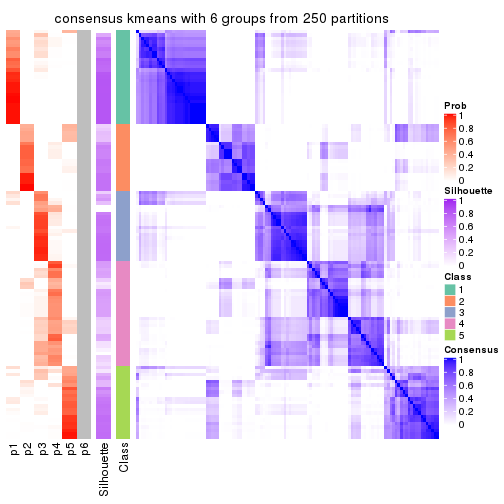
Heatmaps for the membership of samples in all partitions to see how consistent they are:
membership_heatmap(res, k = 2)
membership_heatmap(res, k = 3)
membership_heatmap(res, k = 4)
membership_heatmap(res, k = 5)
membership_heatmap(res, k = 6)

As soon as we have had the classes for columns, we can look for signatures which are significantly different between classes which can be candidate marks for certain classes. Following are the heatmaps for signatures.
Signature heatmaps where rows are scaled:
get_signatures(res, k = 2)
get_signatures(res, k = 3)
get_signatures(res, k = 4)
get_signatures(res, k = 5)
get_signatures(res, k = 6)
Signature heatmaps where rows are not scaled:
get_signatures(res, k = 2, scale_rows = FALSE)
get_signatures(res, k = 3, scale_rows = FALSE)
get_signatures(res, k = 4, scale_rows = FALSE)
get_signatures(res, k = 5, scale_rows = FALSE)
get_signatures(res, k = 6, scale_rows = FALSE)
Compare the overlap of signatures from different k:
compare_signatures(res)
get_signature() returns a data frame invisibly. TO get the list of signatures, the function
call should be assigned to a variable explicitly. In following code, if plot argument is set
to FALSE, no heatmap is plotted while only the differential analysis is performed.
# code only for demonstration
tb = get_signature(res, k = ..., plot = FALSE)
An example of the output of tb is:
#> which_row fdr mean_1 mean_2 scaled_mean_1 scaled_mean_2 km
#> 1 38 0.042760348 8.373488 9.131774 -0.5533452 0.5164555 1
#> 2 40 0.018707592 7.106213 8.469186 -0.6173731 0.5762149 1
#> 3 55 0.019134737 10.221463 11.207825 -0.6159697 0.5749050 1
#> 4 59 0.006059896 5.921854 7.869574 -0.6899429 0.6439467 1
#> 5 60 0.018055526 8.928898 10.211722 -0.6204761 0.5791110 1
#> 6 98 0.009384629 15.714769 14.887706 0.6635654 -0.6193277 2
...
The columns in tb are:
which_row: row indices corresponding to the input matrix.fdr: FDR for the differential test. mean_x: The mean value in group x.scaled_mean_x: The mean value in group x after rows are scaled.km: Row groups if k-means clustering is applied to rows.UMAP plot which shows how samples are separated.
dimension_reduction(res, k = 2, method = "UMAP")
dimension_reduction(res, k = 3, method = "UMAP")
dimension_reduction(res, k = 4, method = "UMAP")
dimension_reduction(res, k = 5, method = "UMAP")
dimension_reduction(res, k = 6, method = "UMAP")
Following heatmap shows how subgroups are split when increasing k:
collect_classes(res)
If matrix rows can be associated to genes, consider to use functional_enrichment(res,
...) to perform function enrichment for the signature genes. See this vignette for more detailed explanations.
The object with results only for a single top-value method and a single partition method can be extracted as:
res = res_list["SD", "skmeans"]
# you can also extract it by
# res = res_list["SD:skmeans"]
A summary of res and all the functions that can be applied to it:
res
#> A 'ConsensusPartition' object with k = 2, 3, 4, 5, 6.
#> On a matrix with 16442 rows and 117 columns.
#> Top rows (1000, 2000, 3000, 4000, 5000) are extracted by 'SD' method.
#> Subgroups are detected by 'skmeans' method.
#> Performed in total 1250 partitions by row resampling.
#> Best k for subgroups seems to be 2.
#>
#> Following methods can be applied to this 'ConsensusPartition' object:
#> [1] "cola_report" "collect_classes" "collect_plots"
#> [4] "collect_stats" "colnames" "compare_signatures"
#> [7] "consensus_heatmap" "dimension_reduction" "functional_enrichment"
#> [10] "get_anno_col" "get_anno" "get_classes"
#> [13] "get_consensus" "get_matrix" "get_membership"
#> [16] "get_param" "get_signatures" "get_stats"
#> [19] "is_best_k" "is_stable_k" "membership_heatmap"
#> [22] "ncol" "nrow" "plot_ecdf"
#> [25] "rownames" "select_partition_number" "show"
#> [28] "suggest_best_k" "test_to_known_factors"
collect_plots() function collects all the plots made from res for all k (number of partitions)
into one single page to provide an easy and fast comparison between different k.
collect_plots(res)
The plots are:
k and the heatmap of
predicted classes for each k.k.k.k.All the plots in panels can be made by individual functions and they are plotted later in this section.
select_partition_number() produces several plots showing different
statistics for choosing “optimized” k. There are following statistics:
k;k, the area increased is defined as \(A_k - A_{k-1}\).The detailed explanations of these statistics can be found in the cola vignette.
Generally speaking, lower PAC score, higher mean silhouette score or higher
concordance corresponds to better partition. Rand index and Jaccard index
measure how similar the current partition is compared to partition with k-1.
If they are too similar, we won't accept k is better than k-1.
select_partition_number(res)
The numeric values for all these statistics can be obtained by get_stats().
get_stats(res)
#> k 1-PAC mean_silhouette concordance area_increased Rand Jaccard
#> 2 2 0.850 0.928 0.969 0.5042 0.497 0.497
#> 3 3 0.774 0.871 0.941 0.3193 0.710 0.483
#> 4 4 0.845 0.861 0.923 0.1095 0.842 0.582
#> 5 5 0.813 0.876 0.895 0.0677 0.851 0.522
#> 6 6 0.837 0.808 0.865 0.0434 0.917 0.646
suggest_best_k() suggests the best \(k\) based on these statistics. The rules are as follows:
suggest_best_k(res)
#> [1] 2
Following shows the table of the partitions (You need to click the show/hide
code output link to see it). The membership matrix (columns with name p*)
is inferred by
clue::cl_consensus()
function with the SE method. Basically the value in the membership matrix
represents the probability to belong to a certain group. The finall class
label for an item is determined with the group with highest probability it
belongs to.
In get_classes() function, the entropy is calculated from the membership
matrix and the silhouette score is calculated from the consensus matrix.
cbind(get_classes(res, k = 2), get_membership(res, k = 2))
#> class entropy silhouette p1 p2
#> SRR2443263 1 0.000 0.9529 1.000 0.000
#> SRR2443262 2 0.000 0.9815 0.000 1.000
#> SRR2443261 2 0.000 0.9815 0.000 1.000
#> SRR2443260 1 0.925 0.5213 0.660 0.340
#> SRR2443259 1 0.000 0.9529 1.000 0.000
#> SRR2443258 1 0.000 0.9529 1.000 0.000
#> SRR2443257 2 0.000 0.9815 0.000 1.000
#> SRR2443256 1 0.000 0.9529 1.000 0.000
#> SRR2443255 1 0.000 0.9529 1.000 0.000
#> SRR2443254 1 0.909 0.5289 0.676 0.324
#> SRR2443253 2 0.000 0.9815 0.000 1.000
#> SRR2443251 2 0.000 0.9815 0.000 1.000
#> SRR2443250 2 0.000 0.9815 0.000 1.000
#> SRR2443249 2 0.000 0.9815 0.000 1.000
#> SRR2443252 1 0.615 0.8201 0.848 0.152
#> SRR2443247 1 0.000 0.9529 1.000 0.000
#> SRR2443246 1 0.000 0.9529 1.000 0.000
#> SRR2443248 2 0.000 0.9815 0.000 1.000
#> SRR2443244 2 0.000 0.9815 0.000 1.000
#> SRR2443245 1 0.000 0.9529 1.000 0.000
#> SRR2443243 1 0.000 0.9529 1.000 0.000
#> SRR2443242 2 0.000 0.9815 0.000 1.000
#> SRR2443241 1 0.000 0.9529 1.000 0.000
#> SRR2443240 1 0.118 0.9417 0.984 0.016
#> SRR2443239 2 0.000 0.9815 0.000 1.000
#> SRR2443238 1 0.000 0.9529 1.000 0.000
#> SRR2443237 2 0.000 0.9815 0.000 1.000
#> SRR2443236 1 0.000 0.9529 1.000 0.000
#> SRR2443235 1 0.000 0.9529 1.000 0.000
#> SRR2443233 1 0.000 0.9529 1.000 0.000
#> SRR2443234 1 0.000 0.9529 1.000 0.000
#> SRR2443232 1 0.000 0.9529 1.000 0.000
#> SRR2443231 1 0.000 0.9529 1.000 0.000
#> SRR2443230 1 0.000 0.9529 1.000 0.000
#> SRR2443229 1 0.722 0.7617 0.800 0.200
#> SRR2443228 2 0.000 0.9815 0.000 1.000
#> SRR2443227 1 0.000 0.9529 1.000 0.000
#> SRR2443226 1 0.000 0.9529 1.000 0.000
#> SRR2443225 1 0.966 0.3648 0.608 0.392
#> SRR2443223 2 0.000 0.9815 0.000 1.000
#> SRR2443224 2 0.000 0.9815 0.000 1.000
#> SRR2443222 2 0.000 0.9815 0.000 1.000
#> SRR2443221 2 0.000 0.9815 0.000 1.000
#> SRR2443219 2 0.000 0.9815 0.000 1.000
#> SRR2443220 2 0.000 0.9815 0.000 1.000
#> SRR2443218 2 0.000 0.9815 0.000 1.000
#> SRR2443217 1 0.000 0.9529 1.000 0.000
#> SRR2443216 1 0.000 0.9529 1.000 0.000
#> SRR2443215 2 0.000 0.9815 0.000 1.000
#> SRR2443214 1 0.000 0.9529 1.000 0.000
#> SRR2443213 1 0.000 0.9529 1.000 0.000
#> SRR2443212 2 0.000 0.9815 0.000 1.000
#> SRR2443211 2 0.000 0.9815 0.000 1.000
#> SRR2443210 2 0.000 0.9815 0.000 1.000
#> SRR2443209 1 0.184 0.9327 0.972 0.028
#> SRR2443208 1 0.722 0.7617 0.800 0.200
#> SRR2443207 2 0.788 0.6686 0.236 0.764
#> SRR2443206 2 0.000 0.9815 0.000 1.000
#> SRR2443205 2 0.000 0.9815 0.000 1.000
#> SRR2443204 1 0.000 0.9529 1.000 0.000
#> SRR2443203 1 0.000 0.9529 1.000 0.000
#> SRR2443202 2 0.000 0.9815 0.000 1.000
#> SRR2443201 2 0.000 0.9815 0.000 1.000
#> SRR2443200 2 0.000 0.9815 0.000 1.000
#> SRR2443199 2 0.000 0.9815 0.000 1.000
#> SRR2443197 2 0.722 0.7495 0.200 0.800
#> SRR2443196 2 0.000 0.9815 0.000 1.000
#> SRR2443198 2 0.430 0.8929 0.088 0.912
#> SRR2443195 1 0.000 0.9529 1.000 0.000
#> SRR2443194 1 1.000 0.0547 0.512 0.488
#> SRR2443193 1 0.000 0.9529 1.000 0.000
#> SRR2443191 1 0.625 0.8142 0.844 0.156
#> SRR2443192 2 0.000 0.9815 0.000 1.000
#> SRR2443190 1 0.000 0.9529 1.000 0.000
#> SRR2443189 1 0.000 0.9529 1.000 0.000
#> SRR2443188 1 0.000 0.9529 1.000 0.000
#> SRR2443186 2 0.000 0.9815 0.000 1.000
#> SRR2443187 2 0.000 0.9815 0.000 1.000
#> SRR2443185 2 0.000 0.9815 0.000 1.000
#> SRR2443184 1 0.000 0.9529 1.000 0.000
#> SRR2443183 1 0.000 0.9529 1.000 0.000
#> SRR2443182 1 0.000 0.9529 1.000 0.000
#> SRR2443181 2 0.000 0.9815 0.000 1.000
#> SRR2443180 2 0.000 0.9815 0.000 1.000
#> SRR2443179 2 0.000 0.9815 0.000 1.000
#> SRR2443178 2 0.722 0.7495 0.200 0.800
#> SRR2443177 1 0.000 0.9529 1.000 0.000
#> SRR2443176 1 0.000 0.9529 1.000 0.000
#> SRR2443175 1 0.000 0.9529 1.000 0.000
#> SRR2443174 1 0.000 0.9529 1.000 0.000
#> SRR2443173 2 0.000 0.9815 0.000 1.000
#> SRR2443172 2 0.000 0.9815 0.000 1.000
#> SRR2443171 1 0.000 0.9529 1.000 0.000
#> SRR2443170 1 0.000 0.9529 1.000 0.000
#> SRR2443169 1 0.000 0.9529 1.000 0.000
#> SRR2443168 1 0.722 0.7617 0.800 0.200
#> SRR2443167 2 0.000 0.9815 0.000 1.000
#> SRR2443166 1 0.000 0.9529 1.000 0.000
#> SRR2443165 2 0.722 0.7495 0.200 0.800
#> SRR2443164 2 0.000 0.9815 0.000 1.000
#> SRR2443163 2 0.000 0.9815 0.000 1.000
#> SRR2443162 1 0.000 0.9529 1.000 0.000
#> SRR2443161 1 0.358 0.8974 0.932 0.068
#> SRR2443160 2 0.000 0.9815 0.000 1.000
#> SRR2443159 2 0.000 0.9815 0.000 1.000
#> SRR2443158 1 0.000 0.9529 1.000 0.000
#> SRR2443157 1 0.000 0.9529 1.000 0.000
#> SRR2443156 1 0.000 0.9529 1.000 0.000
#> SRR2443155 1 0.000 0.9529 1.000 0.000
#> SRR2443154 1 0.000 0.9529 1.000 0.000
#> SRR2443153 1 0.000 0.9529 1.000 0.000
#> SRR2443152 2 0.000 0.9815 0.000 1.000
#> SRR2443151 2 0.000 0.9815 0.000 1.000
#> SRR2443150 2 0.000 0.9815 0.000 1.000
#> SRR2443148 2 0.000 0.9815 0.000 1.000
#> SRR2443147 2 0.000 0.9815 0.000 1.000
#> SRR2443149 1 0.697 0.7765 0.812 0.188
cbind(get_classes(res, k = 3), get_membership(res, k = 3))
#> class entropy silhouette p1 p2 p3
#> SRR2443263 1 0.000 0.944 1.000 0.000 0.000
#> SRR2443262 3 0.000 0.929 0.000 0.000 1.000
#> SRR2443261 3 0.000 0.929 0.000 0.000 1.000
#> SRR2443260 3 0.000 0.929 0.000 0.000 1.000
#> SRR2443259 3 0.489 0.673 0.228 0.000 0.772
#> SRR2443258 1 0.614 0.358 0.596 0.000 0.404
#> SRR2443257 3 0.000 0.929 0.000 0.000 1.000
#> SRR2443256 3 0.484 0.680 0.224 0.000 0.776
#> SRR2443255 3 0.000 0.929 0.000 0.000 1.000
#> SRR2443254 3 0.000 0.929 0.000 0.000 1.000
#> SRR2443253 3 0.000 0.929 0.000 0.000 1.000
#> SRR2443251 3 0.000 0.929 0.000 0.000 1.000
#> SRR2443250 3 0.000 0.929 0.000 0.000 1.000
#> SRR2443249 3 0.000 0.929 0.000 0.000 1.000
#> SRR2443252 3 0.000 0.929 0.000 0.000 1.000
#> SRR2443247 1 0.000 0.944 1.000 0.000 0.000
#> SRR2443246 1 0.394 0.796 0.844 0.000 0.156
#> SRR2443248 3 0.000 0.929 0.000 0.000 1.000
#> SRR2443244 2 0.470 0.788 0.000 0.788 0.212
#> SRR2443245 1 0.000 0.944 1.000 0.000 0.000
#> SRR2443243 1 0.000 0.944 1.000 0.000 0.000
#> SRR2443242 2 0.470 0.788 0.000 0.788 0.212
#> SRR2443241 1 0.470 0.711 0.788 0.212 0.000
#> SRR2443240 2 0.341 0.814 0.124 0.876 0.000
#> SRR2443239 2 0.000 0.921 0.000 1.000 0.000
#> SRR2443238 1 0.000 0.944 1.000 0.000 0.000
#> SRR2443237 2 0.460 0.795 0.000 0.796 0.204
#> SRR2443236 1 0.000 0.944 1.000 0.000 0.000
#> SRR2443235 1 0.000 0.944 1.000 0.000 0.000
#> SRR2443233 1 0.000 0.944 1.000 0.000 0.000
#> SRR2443234 1 0.000 0.944 1.000 0.000 0.000
#> SRR2443232 1 0.000 0.944 1.000 0.000 0.000
#> SRR2443231 1 0.000 0.944 1.000 0.000 0.000
#> SRR2443230 1 0.000 0.944 1.000 0.000 0.000
#> SRR2443229 1 0.613 0.320 0.600 0.400 0.000
#> SRR2443228 2 0.000 0.921 0.000 1.000 0.000
#> SRR2443227 1 0.000 0.944 1.000 0.000 0.000
#> SRR2443226 1 0.000 0.944 1.000 0.000 0.000
#> SRR2443225 3 0.000 0.929 0.000 0.000 1.000
#> SRR2443223 3 0.000 0.929 0.000 0.000 1.000
#> SRR2443224 2 0.000 0.921 0.000 1.000 0.000
#> SRR2443222 2 0.000 0.921 0.000 1.000 0.000
#> SRR2443221 2 0.000 0.921 0.000 1.000 0.000
#> SRR2443219 2 0.470 0.788 0.000 0.788 0.212
#> SRR2443220 3 0.207 0.880 0.000 0.060 0.940
#> SRR2443218 2 0.470 0.788 0.000 0.788 0.212
#> SRR2443217 1 0.000 0.944 1.000 0.000 0.000
#> SRR2443216 3 0.603 0.356 0.376 0.000 0.624
#> SRR2443215 2 0.000 0.921 0.000 1.000 0.000
#> SRR2443214 1 0.000 0.944 1.000 0.000 0.000
#> SRR2443213 1 0.000 0.944 1.000 0.000 0.000
#> SRR2443212 2 0.000 0.921 0.000 1.000 0.000
#> SRR2443211 2 0.000 0.921 0.000 1.000 0.000
#> SRR2443210 2 0.000 0.921 0.000 1.000 0.000
#> SRR2443209 2 0.175 0.885 0.048 0.952 0.000
#> SRR2443208 2 0.000 0.921 0.000 1.000 0.000
#> SRR2443207 2 0.000 0.921 0.000 1.000 0.000
#> SRR2443206 2 0.000 0.921 0.000 1.000 0.000
#> SRR2443205 2 0.000 0.921 0.000 1.000 0.000
#> SRR2443204 1 0.000 0.944 1.000 0.000 0.000
#> SRR2443203 1 0.000 0.944 1.000 0.000 0.000
#> SRR2443202 3 0.000 0.929 0.000 0.000 1.000
#> SRR2443201 3 0.000 0.929 0.000 0.000 1.000
#> SRR2443200 2 0.000 0.921 0.000 1.000 0.000
#> SRR2443199 2 0.470 0.788 0.000 0.788 0.212
#> SRR2443197 3 0.000 0.929 0.000 0.000 1.000
#> SRR2443196 3 0.455 0.711 0.000 0.200 0.800
#> SRR2443198 3 0.000 0.929 0.000 0.000 1.000
#> SRR2443195 1 0.000 0.944 1.000 0.000 0.000
#> SRR2443194 3 0.000 0.929 0.000 0.000 1.000
#> SRR2443193 1 0.000 0.944 1.000 0.000 0.000
#> SRR2443191 2 0.000 0.921 0.000 1.000 0.000
#> SRR2443192 2 0.312 0.864 0.000 0.892 0.108
#> SRR2443190 1 0.000 0.944 1.000 0.000 0.000
#> SRR2443189 1 0.000 0.944 1.000 0.000 0.000
#> SRR2443188 1 0.000 0.944 1.000 0.000 0.000
#> SRR2443186 2 0.000 0.921 0.000 1.000 0.000
#> SRR2443187 2 0.000 0.921 0.000 1.000 0.000
#> SRR2443185 3 0.000 0.929 0.000 0.000 1.000
#> SRR2443184 1 0.614 0.358 0.596 0.000 0.404
#> SRR2443183 1 0.000 0.944 1.000 0.000 0.000
#> SRR2443182 1 0.000 0.944 1.000 0.000 0.000
#> SRR2443181 2 0.000 0.921 0.000 1.000 0.000
#> SRR2443180 2 0.470 0.788 0.000 0.788 0.212
#> SRR2443179 3 0.406 0.764 0.000 0.164 0.836
#> SRR2443178 3 0.455 0.739 0.200 0.000 0.800
#> SRR2443177 1 0.000 0.944 1.000 0.000 0.000
#> SRR2443176 1 0.000 0.944 1.000 0.000 0.000
#> SRR2443175 1 0.000 0.944 1.000 0.000 0.000
#> SRR2443174 1 0.000 0.944 1.000 0.000 0.000
#> SRR2443173 2 0.000 0.921 0.000 1.000 0.000
#> SRR2443172 2 0.000 0.921 0.000 1.000 0.000
#> SRR2443171 1 0.000 0.944 1.000 0.000 0.000
#> SRR2443170 1 0.000 0.944 1.000 0.000 0.000
#> SRR2443169 1 0.000 0.944 1.000 0.000 0.000
#> SRR2443168 2 0.546 0.568 0.288 0.712 0.000
#> SRR2443167 3 0.000 0.929 0.000 0.000 1.000
#> SRR2443166 1 0.450 0.748 0.804 0.000 0.196
#> SRR2443165 3 0.000 0.929 0.000 0.000 1.000
#> SRR2443164 2 0.470 0.788 0.000 0.788 0.212
#> SRR2443163 3 0.000 0.929 0.000 0.000 1.000
#> SRR2443162 3 0.470 0.697 0.212 0.000 0.788
#> SRR2443161 3 0.000 0.929 0.000 0.000 1.000
#> SRR2443160 3 0.000 0.929 0.000 0.000 1.000
#> SRR2443159 3 0.000 0.929 0.000 0.000 1.000
#> SRR2443158 1 0.455 0.743 0.800 0.000 0.200
#> SRR2443157 1 0.000 0.944 1.000 0.000 0.000
#> SRR2443156 1 0.000 0.944 1.000 0.000 0.000
#> SRR2443155 1 0.000 0.944 1.000 0.000 0.000
#> SRR2443154 1 0.000 0.944 1.000 0.000 0.000
#> SRR2443153 1 0.000 0.944 1.000 0.000 0.000
#> SRR2443152 2 0.000 0.921 0.000 1.000 0.000
#> SRR2443151 2 0.450 0.802 0.000 0.804 0.196
#> SRR2443150 2 0.000 0.921 0.000 1.000 0.000
#> SRR2443148 3 0.455 0.711 0.000 0.200 0.800
#> SRR2443147 3 0.406 0.764 0.000 0.164 0.836
#> SRR2443149 1 0.613 0.368 0.600 0.000 0.400
cbind(get_classes(res, k = 4), get_membership(res, k = 4))
#> class entropy silhouette p1 p2 p3 p4
#> SRR2443263 3 0.4008 0.6725 0.244 0.000 0.756 0.000
#> SRR2443262 4 0.2081 0.8757 0.000 0.000 0.084 0.916
#> SRR2443261 4 0.2081 0.8757 0.000 0.000 0.084 0.916
#> SRR2443260 3 0.0469 0.9355 0.000 0.000 0.988 0.012
#> SRR2443259 3 0.0469 0.9355 0.000 0.000 0.988 0.012
#> SRR2443258 3 0.0469 0.9355 0.000 0.000 0.988 0.012
#> SRR2443257 4 0.2081 0.8757 0.000 0.000 0.084 0.916
#> SRR2443256 3 0.0469 0.9355 0.000 0.000 0.988 0.012
#> SRR2443255 3 0.0469 0.9355 0.000 0.000 0.988 0.012
#> SRR2443254 3 0.0469 0.9355 0.000 0.000 0.988 0.012
#> SRR2443253 4 0.2081 0.8757 0.000 0.000 0.084 0.916
#> SRR2443251 4 0.2149 0.8741 0.000 0.000 0.088 0.912
#> SRR2443250 4 0.2081 0.8757 0.000 0.000 0.084 0.916
#> SRR2443249 4 0.2081 0.8757 0.000 0.000 0.084 0.916
#> SRR2443252 3 0.0469 0.9355 0.000 0.000 0.988 0.012
#> SRR2443247 1 0.2760 0.8474 0.872 0.000 0.128 0.000
#> SRR2443246 1 0.3610 0.7689 0.800 0.000 0.200 0.000
#> SRR2443248 4 0.2081 0.8757 0.000 0.000 0.084 0.916
#> SRR2443244 4 0.4331 0.5808 0.000 0.288 0.000 0.712
#> SRR2443245 1 0.0000 0.9473 1.000 0.000 0.000 0.000
#> SRR2443243 1 0.0000 0.9473 1.000 0.000 0.000 0.000
#> SRR2443242 4 0.3942 0.6689 0.000 0.236 0.000 0.764
#> SRR2443241 1 0.2198 0.8989 0.920 0.072 0.008 0.000
#> SRR2443240 2 0.0672 0.9232 0.008 0.984 0.008 0.000
#> SRR2443239 2 0.1716 0.9293 0.000 0.936 0.000 0.064
#> SRR2443238 1 0.0000 0.9473 1.000 0.000 0.000 0.000
#> SRR2443237 4 0.4776 0.3852 0.000 0.376 0.000 0.624
#> SRR2443236 1 0.2048 0.9047 0.928 0.064 0.008 0.000
#> SRR2443235 1 0.0000 0.9473 1.000 0.000 0.000 0.000
#> SRR2443233 1 0.0000 0.9473 1.000 0.000 0.000 0.000
#> SRR2443234 1 0.0000 0.9473 1.000 0.000 0.000 0.000
#> SRR2443232 1 0.0000 0.9473 1.000 0.000 0.000 0.000
#> SRR2443231 1 0.0000 0.9473 1.000 0.000 0.000 0.000
#> SRR2443230 1 0.0000 0.9473 1.000 0.000 0.000 0.000
#> SRR2443229 1 0.5742 0.3588 0.596 0.368 0.000 0.036
#> SRR2443228 2 0.1867 0.9272 0.000 0.928 0.000 0.072
#> SRR2443227 1 0.0000 0.9473 1.000 0.000 0.000 0.000
#> SRR2443226 1 0.0000 0.9473 1.000 0.000 0.000 0.000
#> SRR2443225 4 0.5189 0.4474 0.012 0.000 0.372 0.616
#> SRR2443223 4 0.2081 0.8757 0.000 0.000 0.084 0.916
#> SRR2443224 2 0.0336 0.9283 0.000 0.992 0.008 0.000
#> SRR2443222 2 0.1867 0.9272 0.000 0.928 0.000 0.072
#> SRR2443221 2 0.1867 0.9272 0.000 0.928 0.000 0.072
#> SRR2443219 4 0.3024 0.7805 0.000 0.148 0.000 0.852
#> SRR2443220 4 0.0524 0.8624 0.000 0.008 0.004 0.988
#> SRR2443218 4 0.3024 0.7805 0.000 0.148 0.000 0.852
#> SRR2443217 1 0.0336 0.9433 0.992 0.008 0.000 0.000
#> SRR2443216 3 0.0469 0.9355 0.000 0.000 0.988 0.012
#> SRR2443215 2 0.1716 0.9293 0.000 0.936 0.000 0.064
#> SRR2443214 1 0.0000 0.9473 1.000 0.000 0.000 0.000
#> SRR2443213 1 0.0000 0.9473 1.000 0.000 0.000 0.000
#> SRR2443212 2 0.0921 0.9382 0.000 0.972 0.000 0.028
#> SRR2443211 2 0.0336 0.9283 0.000 0.992 0.008 0.000
#> SRR2443210 2 0.1867 0.9272 0.000 0.928 0.000 0.072
#> SRR2443209 2 0.0524 0.9260 0.004 0.988 0.008 0.000
#> SRR2443208 2 0.1118 0.9384 0.000 0.964 0.000 0.036
#> SRR2443207 2 0.1118 0.9384 0.000 0.964 0.000 0.036
#> SRR2443206 2 0.1118 0.9384 0.000 0.964 0.000 0.036
#> SRR2443205 2 0.0000 0.9322 0.000 1.000 0.000 0.000
#> SRR2443204 1 0.0000 0.9473 1.000 0.000 0.000 0.000
#> SRR2443203 1 0.0707 0.9354 0.980 0.000 0.020 0.000
#> SRR2443202 4 0.1211 0.8715 0.000 0.000 0.040 0.960
#> SRR2443201 4 0.2011 0.8749 0.000 0.000 0.080 0.920
#> SRR2443200 2 0.1867 0.9272 0.000 0.928 0.000 0.072
#> SRR2443199 4 0.3024 0.7805 0.000 0.148 0.000 0.852
#> SRR2443197 4 0.1940 0.8745 0.000 0.000 0.076 0.924
#> SRR2443196 4 0.0469 0.8602 0.000 0.012 0.000 0.988
#> SRR2443198 4 0.1867 0.8748 0.000 0.000 0.072 0.928
#> SRR2443195 1 0.0000 0.9473 1.000 0.000 0.000 0.000
#> SRR2443194 3 0.3123 0.7831 0.000 0.000 0.844 0.156
#> SRR2443193 1 0.0336 0.9433 0.992 0.008 0.000 0.000
#> SRR2443191 2 0.0524 0.9303 0.000 0.988 0.008 0.004
#> SRR2443192 2 0.4989 0.0747 0.000 0.528 0.000 0.472
#> SRR2443190 1 0.0000 0.9473 1.000 0.000 0.000 0.000
#> SRR2443189 1 0.0000 0.9473 1.000 0.000 0.000 0.000
#> SRR2443188 1 0.0000 0.9473 1.000 0.000 0.000 0.000
#> SRR2443186 2 0.1118 0.9384 0.000 0.964 0.000 0.036
#> SRR2443187 2 0.1211 0.9376 0.000 0.960 0.000 0.040
#> SRR2443185 4 0.1867 0.8748 0.000 0.000 0.072 0.928
#> SRR2443184 3 0.0469 0.9355 0.000 0.000 0.988 0.012
#> SRR2443183 1 0.0000 0.9473 1.000 0.000 0.000 0.000
#> SRR2443182 1 0.0000 0.9473 1.000 0.000 0.000 0.000
#> SRR2443181 2 0.1118 0.9384 0.000 0.964 0.000 0.036
#> SRR2443180 4 0.3024 0.7805 0.000 0.148 0.000 0.852
#> SRR2443179 4 0.0469 0.8602 0.000 0.012 0.000 0.988
#> SRR2443178 4 0.3486 0.7271 0.188 0.000 0.000 0.812
#> SRR2443177 1 0.0000 0.9473 1.000 0.000 0.000 0.000
#> SRR2443176 1 0.4250 0.5812 0.724 0.000 0.276 0.000
#> SRR2443175 1 0.0000 0.9473 1.000 0.000 0.000 0.000
#> SRR2443174 1 0.0000 0.9473 1.000 0.000 0.000 0.000
#> SRR2443173 2 0.0592 0.9357 0.000 0.984 0.000 0.016
#> SRR2443172 2 0.0336 0.9335 0.000 0.992 0.000 0.008
#> SRR2443171 1 0.1211 0.9272 0.960 0.000 0.040 0.000
#> SRR2443170 1 0.2179 0.9026 0.924 0.064 0.012 0.000
#> SRR2443169 1 0.0921 0.9323 0.972 0.000 0.028 0.000
#> SRR2443168 2 0.6149 0.5410 0.180 0.676 0.144 0.000
#> SRR2443167 4 0.2149 0.8741 0.000 0.000 0.088 0.912
#> SRR2443166 3 0.1042 0.9169 0.020 0.000 0.972 0.008
#> SRR2443165 4 0.4843 0.4288 0.000 0.000 0.396 0.604
#> SRR2443164 4 0.1302 0.8529 0.000 0.044 0.000 0.956
#> SRR2443163 4 0.2149 0.8741 0.000 0.000 0.088 0.912
#> SRR2443162 3 0.0469 0.9355 0.000 0.000 0.988 0.012
#> SRR2443161 3 0.0469 0.9355 0.000 0.000 0.988 0.012
#> SRR2443160 4 0.2149 0.8741 0.000 0.000 0.088 0.912
#> SRR2443159 4 0.2081 0.8757 0.000 0.000 0.084 0.916
#> SRR2443158 3 0.0672 0.9275 0.008 0.000 0.984 0.008
#> SRR2443157 3 0.4961 0.1381 0.448 0.000 0.552 0.000
#> SRR2443156 1 0.4037 0.8170 0.824 0.040 0.136 0.000
#> SRR2443155 1 0.4462 0.8030 0.804 0.064 0.132 0.000
#> SRR2443154 1 0.4514 0.7983 0.800 0.064 0.136 0.000
#> SRR2443153 1 0.0000 0.9473 1.000 0.000 0.000 0.000
#> SRR2443152 2 0.0336 0.9335 0.000 0.992 0.000 0.008
#> SRR2443151 4 0.2973 0.7842 0.000 0.144 0.000 0.856
#> SRR2443150 2 0.0336 0.9335 0.000 0.992 0.000 0.008
#> SRR2443148 4 0.0469 0.8602 0.000 0.012 0.000 0.988
#> SRR2443147 4 0.0469 0.8602 0.000 0.012 0.000 0.988
#> SRR2443149 3 0.0469 0.9355 0.000 0.000 0.988 0.012
cbind(get_classes(res, k = 5), get_membership(res, k = 5))
#> class entropy silhouette p1 p2 p3 p4 p5
#> SRR2443263 1 0.4655 0.1139 0.512 0.000 0.476 0.000 0.012
#> SRR2443262 4 0.3205 0.9122 0.000 0.056 0.072 0.864 0.008
#> SRR2443261 4 0.3266 0.9106 0.000 0.056 0.076 0.860 0.008
#> SRR2443260 3 0.0880 0.9956 0.000 0.000 0.968 0.032 0.000
#> SRR2443259 3 0.0880 0.9956 0.000 0.000 0.968 0.032 0.000
#> SRR2443258 3 0.0880 0.9956 0.000 0.000 0.968 0.032 0.000
#> SRR2443257 4 0.3136 0.9134 0.000 0.052 0.072 0.868 0.008
#> SRR2443256 3 0.0880 0.9956 0.000 0.000 0.968 0.032 0.000
#> SRR2443255 3 0.0880 0.9956 0.000 0.000 0.968 0.032 0.000
#> SRR2443254 3 0.0880 0.9956 0.000 0.000 0.968 0.032 0.000
#> SRR2443253 4 0.3136 0.9134 0.000 0.052 0.072 0.868 0.008
#> SRR2443251 4 0.2824 0.9106 0.000 0.024 0.088 0.880 0.008
#> SRR2443250 4 0.3205 0.9122 0.000 0.056 0.072 0.864 0.008
#> SRR2443249 4 0.3205 0.9122 0.000 0.056 0.072 0.864 0.008
#> SRR2443252 3 0.0880 0.9956 0.000 0.000 0.968 0.032 0.000
#> SRR2443247 1 0.2873 0.8446 0.860 0.000 0.120 0.000 0.020
#> SRR2443246 5 0.4537 0.7160 0.076 0.000 0.184 0.000 0.740
#> SRR2443248 4 0.3266 0.9106 0.000 0.056 0.076 0.860 0.008
#> SRR2443244 2 0.2953 0.8027 0.000 0.844 0.000 0.144 0.012
#> SRR2443245 1 0.0000 0.9679 1.000 0.000 0.000 0.000 0.000
#> SRR2443243 1 0.0000 0.9679 1.000 0.000 0.000 0.000 0.000
#> SRR2443242 2 0.2798 0.8063 0.000 0.852 0.000 0.140 0.008
#> SRR2443241 5 0.1043 0.8355 0.040 0.000 0.000 0.000 0.960
#> SRR2443240 5 0.1124 0.8325 0.004 0.036 0.000 0.000 0.960
#> SRR2443239 2 0.1544 0.8541 0.000 0.932 0.000 0.000 0.068
#> SRR2443238 1 0.0000 0.9679 1.000 0.000 0.000 0.000 0.000
#> SRR2443237 2 0.4955 0.7178 0.000 0.680 0.000 0.248 0.072
#> SRR2443236 5 0.2329 0.8022 0.124 0.000 0.000 0.000 0.876
#> SRR2443235 1 0.0290 0.9665 0.992 0.000 0.000 0.000 0.008
#> SRR2443233 1 0.0290 0.9665 0.992 0.000 0.000 0.000 0.008
#> SRR2443234 1 0.0290 0.9665 0.992 0.000 0.000 0.000 0.008
#> SRR2443232 1 0.0290 0.9665 0.992 0.000 0.000 0.000 0.008
#> SRR2443231 1 0.0290 0.9665 0.992 0.000 0.000 0.000 0.008
#> SRR2443230 1 0.0162 0.9675 0.996 0.000 0.000 0.000 0.004
#> SRR2443229 5 0.3359 0.7884 0.020 0.164 0.000 0.000 0.816
#> SRR2443228 2 0.0000 0.8610 0.000 1.000 0.000 0.000 0.000
#> SRR2443227 1 0.0000 0.9679 1.000 0.000 0.000 0.000 0.000
#> SRR2443226 1 0.0000 0.9679 1.000 0.000 0.000 0.000 0.000
#> SRR2443225 4 0.1471 0.8905 0.024 0.000 0.004 0.952 0.020
#> SRR2443223 4 0.3205 0.9122 0.000 0.056 0.072 0.864 0.008
#> SRR2443224 5 0.3333 0.7092 0.000 0.208 0.004 0.000 0.788
#> SRR2443222 2 0.0703 0.8614 0.000 0.976 0.000 0.000 0.024
#> SRR2443221 2 0.0703 0.8614 0.000 0.976 0.000 0.000 0.024
#> SRR2443219 2 0.3013 0.7901 0.000 0.832 0.000 0.160 0.008
#> SRR2443220 4 0.3096 0.8908 0.000 0.108 0.024 0.860 0.008
#> SRR2443218 2 0.2843 0.8042 0.000 0.848 0.000 0.144 0.008
#> SRR2443217 1 0.0703 0.9502 0.976 0.000 0.000 0.000 0.024
#> SRR2443216 3 0.0880 0.9956 0.000 0.000 0.968 0.032 0.000
#> SRR2443215 2 0.1732 0.8520 0.000 0.920 0.000 0.000 0.080
#> SRR2443214 1 0.0000 0.9679 1.000 0.000 0.000 0.000 0.000
#> SRR2443213 1 0.0290 0.9665 0.992 0.000 0.000 0.000 0.008
#> SRR2443212 2 0.2732 0.7897 0.000 0.840 0.000 0.000 0.160
#> SRR2443211 5 0.4452 -0.0737 0.000 0.496 0.004 0.000 0.500
#> SRR2443210 2 0.0703 0.8614 0.000 0.976 0.000 0.000 0.024
#> SRR2443209 5 0.1197 0.8291 0.000 0.048 0.000 0.000 0.952
#> SRR2443208 5 0.2891 0.7668 0.000 0.176 0.000 0.000 0.824
#> SRR2443207 5 0.3039 0.7542 0.000 0.192 0.000 0.000 0.808
#> SRR2443206 2 0.1965 0.8404 0.000 0.904 0.000 0.000 0.096
#> SRR2443205 2 0.2813 0.8041 0.000 0.832 0.000 0.000 0.168
#> SRR2443204 1 0.0000 0.9679 1.000 0.000 0.000 0.000 0.000
#> SRR2443203 1 0.0000 0.9679 1.000 0.000 0.000 0.000 0.000
#> SRR2443202 4 0.1216 0.8956 0.000 0.020 0.000 0.960 0.020
#> SRR2443201 4 0.0880 0.9147 0.000 0.000 0.032 0.968 0.000
#> SRR2443200 2 0.0000 0.8610 0.000 1.000 0.000 0.000 0.000
#> SRR2443199 2 0.2843 0.8042 0.000 0.848 0.000 0.144 0.008
#> SRR2443197 4 0.0771 0.8999 0.000 0.000 0.004 0.976 0.020
#> SRR2443196 4 0.2144 0.8719 0.000 0.068 0.000 0.912 0.020
#> SRR2443198 4 0.0609 0.9005 0.000 0.000 0.000 0.980 0.020
#> SRR2443195 1 0.0000 0.9679 1.000 0.000 0.000 0.000 0.000
#> SRR2443194 4 0.3438 0.7220 0.000 0.000 0.172 0.808 0.020
#> SRR2443193 1 0.0703 0.9528 0.976 0.000 0.000 0.000 0.024
#> SRR2443191 5 0.2179 0.8111 0.000 0.112 0.000 0.000 0.888
#> SRR2443192 2 0.4303 0.7800 0.000 0.752 0.000 0.192 0.056
#> SRR2443190 1 0.0162 0.9675 0.996 0.000 0.000 0.000 0.004
#> SRR2443189 1 0.0000 0.9679 1.000 0.000 0.000 0.000 0.000
#> SRR2443188 1 0.0290 0.9665 0.992 0.000 0.000 0.000 0.008
#> SRR2443186 2 0.2020 0.8381 0.000 0.900 0.000 0.000 0.100
#> SRR2443187 2 0.1965 0.8404 0.000 0.904 0.000 0.000 0.096
#> SRR2443185 4 0.0880 0.9147 0.000 0.000 0.032 0.968 0.000
#> SRR2443184 3 0.0880 0.9956 0.000 0.000 0.968 0.032 0.000
#> SRR2443183 1 0.0000 0.9679 1.000 0.000 0.000 0.000 0.000
#> SRR2443182 1 0.0000 0.9679 1.000 0.000 0.000 0.000 0.000
#> SRR2443181 2 0.1851 0.8462 0.000 0.912 0.000 0.000 0.088
#> SRR2443180 2 0.2886 0.8009 0.000 0.844 0.000 0.148 0.008
#> SRR2443179 4 0.1485 0.8901 0.000 0.032 0.000 0.948 0.020
#> SRR2443178 4 0.2824 0.8067 0.116 0.000 0.000 0.864 0.020
#> SRR2443177 1 0.0000 0.9679 1.000 0.000 0.000 0.000 0.000
#> SRR2443176 1 0.0000 0.9679 1.000 0.000 0.000 0.000 0.000
#> SRR2443175 1 0.0162 0.9675 0.996 0.000 0.000 0.000 0.004
#> SRR2443174 1 0.0162 0.9675 0.996 0.000 0.000 0.000 0.004
#> SRR2443173 2 0.2068 0.8412 0.000 0.904 0.004 0.000 0.092
#> SRR2443172 2 0.2179 0.8367 0.000 0.896 0.004 0.000 0.100
#> SRR2443171 5 0.4301 0.6484 0.260 0.000 0.028 0.000 0.712
#> SRR2443170 5 0.2535 0.8213 0.076 0.000 0.032 0.000 0.892
#> SRR2443169 1 0.1399 0.9352 0.952 0.000 0.028 0.000 0.020
#> SRR2443168 5 0.1981 0.8229 0.000 0.016 0.064 0.000 0.920
#> SRR2443167 4 0.1671 0.9117 0.000 0.000 0.076 0.924 0.000
#> SRR2443166 3 0.1041 0.9916 0.000 0.000 0.964 0.032 0.004
#> SRR2443165 4 0.2012 0.9062 0.000 0.000 0.060 0.920 0.020
#> SRR2443164 2 0.4114 0.6945 0.000 0.732 0.000 0.244 0.024
#> SRR2443163 4 0.2854 0.9119 0.000 0.028 0.084 0.880 0.008
#> SRR2443162 3 0.0880 0.9956 0.000 0.000 0.968 0.032 0.000
#> SRR2443161 3 0.0880 0.9956 0.000 0.000 0.968 0.032 0.000
#> SRR2443160 4 0.1410 0.9146 0.000 0.000 0.060 0.940 0.000
#> SRR2443159 4 0.1608 0.9127 0.000 0.000 0.072 0.928 0.000
#> SRR2443158 3 0.0566 0.9473 0.000 0.000 0.984 0.004 0.012
#> SRR2443157 1 0.2997 0.8176 0.840 0.000 0.148 0.000 0.012
#> SRR2443156 5 0.3110 0.8068 0.080 0.000 0.060 0.000 0.860
#> SRR2443155 5 0.2588 0.8223 0.048 0.000 0.060 0.000 0.892
#> SRR2443154 5 0.2588 0.8223 0.048 0.000 0.060 0.000 0.892
#> SRR2443153 1 0.0290 0.9665 0.992 0.000 0.000 0.000 0.008
#> SRR2443152 2 0.2179 0.8367 0.000 0.896 0.004 0.000 0.100
#> SRR2443151 2 0.1484 0.8487 0.000 0.944 0.000 0.048 0.008
#> SRR2443150 2 0.2179 0.8367 0.000 0.896 0.004 0.000 0.100
#> SRR2443148 4 0.2573 0.8839 0.000 0.104 0.000 0.880 0.016
#> SRR2443147 4 0.2249 0.8895 0.000 0.096 0.000 0.896 0.008
#> SRR2443149 3 0.0880 0.9956 0.000 0.000 0.968 0.032 0.000
cbind(get_classes(res, k = 6), get_membership(res, k = 6))
#> class entropy silhouette p1 p2 p3 p4 p5 p6
#> SRR2443263 1 0.6297 0.1414 0.488 0.000 0.356 0.004 0.092 0.060
#> SRR2443262 4 0.3694 0.7366 0.000 0.000 0.076 0.784 0.000 0.140
#> SRR2443261 4 0.3707 0.7362 0.000 0.000 0.080 0.784 0.000 0.136
#> SRR2443260 3 0.0260 0.9657 0.000 0.000 0.992 0.008 0.000 0.000
#> SRR2443259 3 0.0260 0.9657 0.000 0.000 0.992 0.008 0.000 0.000
#> SRR2443258 3 0.0260 0.9657 0.000 0.000 0.992 0.008 0.000 0.000
#> SRR2443257 4 0.3694 0.7366 0.000 0.000 0.076 0.784 0.000 0.140
#> SRR2443256 3 0.1267 0.9538 0.000 0.000 0.940 0.000 0.000 0.060
#> SRR2443255 3 0.1524 0.9553 0.000 0.000 0.932 0.008 0.000 0.060
#> SRR2443254 3 0.1643 0.9510 0.000 0.000 0.924 0.008 0.000 0.068
#> SRR2443253 4 0.3694 0.7366 0.000 0.000 0.076 0.784 0.000 0.140
#> SRR2443251 4 0.4036 0.7148 0.000 0.000 0.108 0.756 0.000 0.136
#> SRR2443250 4 0.3694 0.7366 0.000 0.000 0.076 0.784 0.000 0.140
#> SRR2443249 4 0.3694 0.7366 0.000 0.000 0.076 0.784 0.000 0.140
#> SRR2443252 3 0.0260 0.9657 0.000 0.000 0.992 0.008 0.000 0.000
#> SRR2443247 1 0.4328 0.7447 0.724 0.000 0.112 0.000 0.164 0.000
#> SRR2443246 5 0.2257 0.7880 0.008 0.000 0.116 0.000 0.876 0.000
#> SRR2443248 4 0.3718 0.7358 0.000 0.000 0.084 0.784 0.000 0.132
#> SRR2443244 4 0.3592 0.3988 0.000 0.344 0.000 0.656 0.000 0.000
#> SRR2443245 1 0.0405 0.9282 0.988 0.000 0.000 0.004 0.000 0.008
#> SRR2443243 1 0.0405 0.9302 0.988 0.000 0.000 0.004 0.008 0.000
#> SRR2443242 4 0.3371 0.5152 0.000 0.292 0.000 0.708 0.000 0.000
#> SRR2443241 5 0.2462 0.8486 0.012 0.064 0.000 0.032 0.892 0.000
#> SRR2443240 5 0.2633 0.8327 0.000 0.104 0.000 0.032 0.864 0.000
#> SRR2443239 2 0.1007 0.8365 0.000 0.956 0.000 0.044 0.000 0.000
#> SRR2443238 1 0.0291 0.9287 0.992 0.000 0.000 0.004 0.000 0.004
#> SRR2443237 6 0.5121 0.5861 0.000 0.172 0.000 0.144 0.016 0.668
#> SRR2443236 5 0.3278 0.8290 0.064 0.056 0.000 0.032 0.848 0.000
#> SRR2443235 1 0.1387 0.9254 0.932 0.000 0.000 0.000 0.068 0.000
#> SRR2443233 1 0.1444 0.9238 0.928 0.000 0.000 0.000 0.072 0.000
#> SRR2443234 1 0.1327 0.9266 0.936 0.000 0.000 0.000 0.064 0.000
#> SRR2443232 1 0.1444 0.9238 0.928 0.000 0.000 0.000 0.072 0.000
#> SRR2443231 1 0.1444 0.9238 0.928 0.000 0.000 0.000 0.072 0.000
#> SRR2443230 1 0.1075 0.9302 0.952 0.000 0.000 0.000 0.048 0.000
#> SRR2443229 5 0.4117 0.6831 0.000 0.296 0.000 0.032 0.672 0.000
#> SRR2443228 2 0.2631 0.8058 0.000 0.820 0.000 0.180 0.000 0.000
#> SRR2443227 1 0.0405 0.9302 0.988 0.000 0.000 0.004 0.008 0.000
#> SRR2443226 1 0.0405 0.9282 0.988 0.000 0.000 0.004 0.000 0.008
#> SRR2443225 6 0.0547 0.8195 0.020 0.000 0.000 0.000 0.000 0.980
#> SRR2443223 4 0.3694 0.7366 0.000 0.000 0.076 0.784 0.000 0.140
#> SRR2443224 2 0.3133 0.6411 0.000 0.780 0.000 0.008 0.212 0.000
#> SRR2443222 2 0.2491 0.8166 0.000 0.836 0.000 0.164 0.000 0.000
#> SRR2443221 2 0.2491 0.8166 0.000 0.836 0.000 0.164 0.000 0.000
#> SRR2443219 4 0.2823 0.6200 0.000 0.204 0.000 0.796 0.000 0.000
#> SRR2443220 4 0.2766 0.7321 0.000 0.020 0.004 0.852 0.000 0.124
#> SRR2443218 4 0.3244 0.5444 0.000 0.268 0.000 0.732 0.000 0.000
#> SRR2443217 1 0.2341 0.9039 0.908 0.016 0.000 0.024 0.044 0.008
#> SRR2443216 3 0.0260 0.9657 0.000 0.000 0.992 0.008 0.000 0.000
#> SRR2443215 2 0.2263 0.8140 0.000 0.884 0.000 0.100 0.016 0.000
#> SRR2443214 1 0.0405 0.9282 0.988 0.000 0.000 0.004 0.000 0.008
#> SRR2443213 1 0.1444 0.9238 0.928 0.000 0.000 0.000 0.072 0.000
#> SRR2443212 2 0.1418 0.7992 0.000 0.944 0.000 0.032 0.024 0.000
#> SRR2443211 2 0.2968 0.7047 0.000 0.816 0.000 0.016 0.168 0.000
#> SRR2443210 2 0.2491 0.8166 0.000 0.836 0.000 0.164 0.000 0.000
#> SRR2443209 5 0.3101 0.8153 0.000 0.148 0.000 0.032 0.820 0.000
#> SRR2443208 5 0.4356 0.5732 0.000 0.360 0.000 0.032 0.608 0.000
#> SRR2443207 2 0.4152 0.3232 0.000 0.664 0.000 0.032 0.304 0.000
#> SRR2443206 2 0.0146 0.8334 0.000 0.996 0.000 0.004 0.000 0.000
#> SRR2443205 2 0.1500 0.8175 0.000 0.936 0.000 0.012 0.052 0.000
#> SRR2443204 1 0.0405 0.9282 0.988 0.000 0.000 0.004 0.000 0.008
#> SRR2443203 1 0.0405 0.9282 0.988 0.000 0.000 0.004 0.000 0.008
#> SRR2443202 6 0.1387 0.8557 0.000 0.000 0.000 0.068 0.000 0.932
#> SRR2443201 6 0.3978 0.7782 0.000 0.000 0.064 0.192 0.000 0.744
#> SRR2443200 2 0.2631 0.8058 0.000 0.820 0.000 0.180 0.000 0.000
#> SRR2443199 4 0.3198 0.5561 0.000 0.260 0.000 0.740 0.000 0.000
#> SRR2443197 6 0.1387 0.8557 0.000 0.000 0.000 0.068 0.000 0.932
#> SRR2443196 6 0.2019 0.8433 0.000 0.012 0.000 0.088 0.000 0.900
#> SRR2443198 6 0.1387 0.8557 0.000 0.000 0.000 0.068 0.000 0.932
#> SRR2443195 1 0.0405 0.9282 0.988 0.000 0.000 0.004 0.000 0.008
#> SRR2443194 6 0.0260 0.8354 0.000 0.000 0.000 0.008 0.000 0.992
#> SRR2443193 1 0.2638 0.8995 0.892 0.020 0.000 0.028 0.052 0.008
#> SRR2443191 5 0.3841 0.7459 0.000 0.244 0.000 0.032 0.724 0.000
#> SRR2443192 2 0.6080 0.0563 0.000 0.428 0.000 0.160 0.016 0.396
#> SRR2443190 1 0.1075 0.9302 0.952 0.000 0.000 0.000 0.048 0.000
#> SRR2443189 1 0.0551 0.9272 0.984 0.000 0.004 0.004 0.000 0.008
#> SRR2443188 1 0.1444 0.9238 0.928 0.000 0.000 0.000 0.072 0.000
#> SRR2443186 2 0.0146 0.8334 0.000 0.996 0.000 0.004 0.000 0.000
#> SRR2443187 2 0.0146 0.8334 0.000 0.996 0.000 0.004 0.000 0.000
#> SRR2443185 6 0.4095 0.7651 0.000 0.000 0.064 0.208 0.000 0.728
#> SRR2443184 3 0.0291 0.9634 0.004 0.000 0.992 0.004 0.000 0.000
#> SRR2443183 1 0.0713 0.9309 0.972 0.000 0.000 0.000 0.028 0.000
#> SRR2443182 1 0.0405 0.9302 0.988 0.000 0.000 0.004 0.008 0.000
#> SRR2443181 2 0.0291 0.8332 0.000 0.992 0.000 0.004 0.004 0.000
#> SRR2443180 4 0.3151 0.5666 0.000 0.252 0.000 0.748 0.000 0.000
#> SRR2443179 6 0.1610 0.8518 0.000 0.000 0.000 0.084 0.000 0.916
#> SRR2443178 6 0.2384 0.8259 0.048 0.000 0.000 0.064 0.000 0.888
#> SRR2443177 1 0.0405 0.9282 0.988 0.000 0.000 0.004 0.000 0.008
#> SRR2443176 1 0.1010 0.9157 0.960 0.000 0.000 0.004 0.000 0.036
#> SRR2443175 1 0.1141 0.9295 0.948 0.000 0.000 0.000 0.052 0.000
#> SRR2443174 1 0.1075 0.9302 0.952 0.000 0.000 0.000 0.048 0.000
#> SRR2443173 2 0.3227 0.8227 0.000 0.824 0.000 0.116 0.060 0.000
#> SRR2443172 2 0.3341 0.8195 0.000 0.816 0.000 0.116 0.068 0.000
#> SRR2443171 5 0.1918 0.8095 0.088 0.000 0.008 0.000 0.904 0.000
#> SRR2443170 5 0.0665 0.8557 0.008 0.004 0.008 0.000 0.980 0.000
#> SRR2443169 1 0.2669 0.8563 0.836 0.000 0.008 0.000 0.156 0.000
#> SRR2443168 5 0.1483 0.8512 0.000 0.036 0.012 0.008 0.944 0.000
#> SRR2443167 6 0.4215 0.7641 0.000 0.000 0.080 0.196 0.000 0.724
#> SRR2443166 3 0.0405 0.9573 0.004 0.000 0.988 0.000 0.008 0.000
#> SRR2443165 6 0.1245 0.8368 0.000 0.000 0.032 0.016 0.000 0.952
#> SRR2443164 4 0.1204 0.7040 0.000 0.056 0.000 0.944 0.000 0.000
#> SRR2443163 4 0.3992 0.7184 0.000 0.000 0.104 0.760 0.000 0.136
#> SRR2443162 3 0.1267 0.9538 0.000 0.000 0.940 0.000 0.000 0.060
#> SRR2443161 3 0.1524 0.9553 0.000 0.000 0.932 0.008 0.000 0.060
#> SRR2443160 6 0.4114 0.7694 0.000 0.000 0.072 0.196 0.000 0.732
#> SRR2443159 6 0.4331 0.7379 0.000 0.000 0.076 0.220 0.000 0.704
#> SRR2443158 3 0.2846 0.8667 0.000 0.000 0.856 0.000 0.084 0.060
#> SRR2443157 1 0.4689 0.7260 0.744 0.000 0.124 0.004 0.092 0.036
#> SRR2443156 5 0.0767 0.8548 0.008 0.004 0.012 0.000 0.976 0.000
#> SRR2443155 5 0.0665 0.8557 0.008 0.004 0.008 0.000 0.980 0.000
#> SRR2443154 5 0.0653 0.8554 0.004 0.004 0.012 0.000 0.980 0.000
#> SRR2443153 1 0.1387 0.9254 0.932 0.000 0.000 0.000 0.068 0.000
#> SRR2443152 2 0.3396 0.8175 0.000 0.812 0.000 0.116 0.072 0.000
#> SRR2443151 4 0.2664 0.6255 0.000 0.184 0.000 0.816 0.000 0.000
#> SRR2443150 2 0.3341 0.8195 0.000 0.816 0.000 0.116 0.068 0.000
#> SRR2443148 4 0.2805 0.6937 0.000 0.004 0.000 0.812 0.000 0.184
#> SRR2443147 4 0.2416 0.7196 0.000 0.000 0.000 0.844 0.000 0.156
#> SRR2443149 3 0.0260 0.9657 0.000 0.000 0.992 0.008 0.000 0.000
Heatmaps for the consensus matrix. It visualizes the probability of two samples to be in a same group.
consensus_heatmap(res, k = 2)
consensus_heatmap(res, k = 3)
consensus_heatmap(res, k = 4)
consensus_heatmap(res, k = 5)
consensus_heatmap(res, k = 6)
Heatmaps for the membership of samples in all partitions to see how consistent they are:
membership_heatmap(res, k = 2)
membership_heatmap(res, k = 3)
membership_heatmap(res, k = 4)
membership_heatmap(res, k = 5)
membership_heatmap(res, k = 6)
As soon as we have had the classes for columns, we can look for signatures which are significantly different between classes which can be candidate marks for certain classes. Following are the heatmaps for signatures.
Signature heatmaps where rows are scaled:
get_signatures(res, k = 2)
get_signatures(res, k = 3)
get_signatures(res, k = 4)

get_signatures(res, k = 5)
get_signatures(res, k = 6)
Signature heatmaps where rows are not scaled:
get_signatures(res, k = 2, scale_rows = FALSE)
get_signatures(res, k = 3, scale_rows = FALSE)
get_signatures(res, k = 4, scale_rows = FALSE)
get_signatures(res, k = 5, scale_rows = FALSE)
get_signatures(res, k = 6, scale_rows = FALSE)
Compare the overlap of signatures from different k:
compare_signatures(res)
get_signature() returns a data frame invisibly. TO get the list of signatures, the function
call should be assigned to a variable explicitly. In following code, if plot argument is set
to FALSE, no heatmap is plotted while only the differential analysis is performed.
# code only for demonstration
tb = get_signature(res, k = ..., plot = FALSE)
An example of the output of tb is:
#> which_row fdr mean_1 mean_2 scaled_mean_1 scaled_mean_2 km
#> 1 38 0.042760348 8.373488 9.131774 -0.5533452 0.5164555 1
#> 2 40 0.018707592 7.106213 8.469186 -0.6173731 0.5762149 1
#> 3 55 0.019134737 10.221463 11.207825 -0.6159697 0.5749050 1
#> 4 59 0.006059896 5.921854 7.869574 -0.6899429 0.6439467 1
#> 5 60 0.018055526 8.928898 10.211722 -0.6204761 0.5791110 1
#> 6 98 0.009384629 15.714769 14.887706 0.6635654 -0.6193277 2
...
The columns in tb are:
which_row: row indices corresponding to the input matrix.fdr: FDR for the differential test. mean_x: The mean value in group x.scaled_mean_x: The mean value in group x after rows are scaled.km: Row groups if k-means clustering is applied to rows.UMAP plot which shows how samples are separated.
dimension_reduction(res, k = 2, method = "UMAP")
dimension_reduction(res, k = 3, method = "UMAP")
dimension_reduction(res, k = 4, method = "UMAP")
dimension_reduction(res, k = 5, method = "UMAP")
dimension_reduction(res, k = 6, method = "UMAP")
Following heatmap shows how subgroups are split when increasing k:
collect_classes(res)
If matrix rows can be associated to genes, consider to use functional_enrichment(res,
...) to perform function enrichment for the signature genes. See this vignette for more detailed explanations.
The object with results only for a single top-value method and a single partition method can be extracted as:
res = res_list["SD", "pam"]
# you can also extract it by
# res = res_list["SD:pam"]
A summary of res and all the functions that can be applied to it:
res
#> A 'ConsensusPartition' object with k = 2, 3, 4, 5, 6.
#> On a matrix with 16442 rows and 117 columns.
#> Top rows (1000, 2000, 3000, 4000, 5000) are extracted by 'SD' method.
#> Subgroups are detected by 'pam' method.
#> Performed in total 1250 partitions by row resampling.
#> Best k for subgroups seems to be 2.
#>
#> Following methods can be applied to this 'ConsensusPartition' object:
#> [1] "cola_report" "collect_classes" "collect_plots"
#> [4] "collect_stats" "colnames" "compare_signatures"
#> [7] "consensus_heatmap" "dimension_reduction" "functional_enrichment"
#> [10] "get_anno_col" "get_anno" "get_classes"
#> [13] "get_consensus" "get_matrix" "get_membership"
#> [16] "get_param" "get_signatures" "get_stats"
#> [19] "is_best_k" "is_stable_k" "membership_heatmap"
#> [22] "ncol" "nrow" "plot_ecdf"
#> [25] "rownames" "select_partition_number" "show"
#> [28] "suggest_best_k" "test_to_known_factors"
collect_plots() function collects all the plots made from res for all k (number of partitions)
into one single page to provide an easy and fast comparison between different k.
collect_plots(res)
The plots are:
k and the heatmap of
predicted classes for each k.k.k.k.All the plots in panels can be made by individual functions and they are plotted later in this section.
select_partition_number() produces several plots showing different
statistics for choosing “optimized” k. There are following statistics:
k;k, the area increased is defined as \(A_k - A_{k-1}\).The detailed explanations of these statistics can be found in the cola vignette.
Generally speaking, lower PAC score, higher mean silhouette score or higher
concordance corresponds to better partition. Rand index and Jaccard index
measure how similar the current partition is compared to partition with k-1.
If they are too similar, we won't accept k is better than k-1.
select_partition_number(res)
The numeric values for all these statistics can be obtained by get_stats().
get_stats(res)
#> k 1-PAC mean_silhouette concordance area_increased Rand Jaccard
#> 2 2 0.748 0.924 0.963 0.4519 0.558 0.558
#> 3 3 0.619 0.751 0.871 0.4385 0.737 0.557
#> 4 4 0.672 0.757 0.861 0.1507 0.774 0.463
#> 5 5 0.713 0.707 0.855 0.0513 0.889 0.609
#> 6 6 0.707 0.622 0.800 0.0461 0.909 0.613
suggest_best_k() suggests the best \(k\) based on these statistics. The rules are as follows:
suggest_best_k(res)
#> [1] 2
Following shows the table of the partitions (You need to click the show/hide
code output link to see it). The membership matrix (columns with name p*)
is inferred by
clue::cl_consensus()
function with the SE method. Basically the value in the membership matrix
represents the probability to belong to a certain group. The finall class
label for an item is determined with the group with highest probability it
belongs to.
In get_classes() function, the entropy is calculated from the membership
matrix and the silhouette score is calculated from the consensus matrix.
cbind(get_classes(res, k = 2), get_membership(res, k = 2))
#> class entropy silhouette p1 p2
#> SRR2443263 2 0.7453 0.772 0.212 0.788
#> SRR2443262 2 0.0000 0.954 0.000 1.000
#> SRR2443261 2 0.0000 0.954 0.000 1.000
#> SRR2443260 2 0.0000 0.954 0.000 1.000
#> SRR2443259 2 0.0000 0.954 0.000 1.000
#> SRR2443258 2 0.5842 0.826 0.140 0.860
#> SRR2443257 2 0.0000 0.954 0.000 1.000
#> SRR2443256 2 0.7219 0.787 0.200 0.800
#> SRR2443255 2 0.0000 0.954 0.000 1.000
#> SRR2443254 2 0.0000 0.954 0.000 1.000
#> SRR2443253 2 0.0000 0.954 0.000 1.000
#> SRR2443251 2 0.0000 0.954 0.000 1.000
#> SRR2443250 2 0.0000 0.954 0.000 1.000
#> SRR2443249 2 0.0000 0.954 0.000 1.000
#> SRR2443252 2 0.0000 0.954 0.000 1.000
#> SRR2443247 1 0.0000 0.973 1.000 0.000
#> SRR2443246 1 0.7815 0.680 0.768 0.232
#> SRR2443248 2 0.0000 0.954 0.000 1.000
#> SRR2443244 2 0.0000 0.954 0.000 1.000
#> SRR2443245 1 0.0000 0.973 1.000 0.000
#> SRR2443243 1 0.0000 0.973 1.000 0.000
#> SRR2443242 2 0.0000 0.954 0.000 1.000
#> SRR2443241 2 0.9661 0.434 0.392 0.608
#> SRR2443240 1 0.0672 0.966 0.992 0.008
#> SRR2443239 2 0.0000 0.954 0.000 1.000
#> SRR2443238 1 0.0000 0.973 1.000 0.000
#> SRR2443237 2 0.0000 0.954 0.000 1.000
#> SRR2443236 1 0.0000 0.973 1.000 0.000
#> SRR2443235 1 0.0000 0.973 1.000 0.000
#> SRR2443233 1 0.0000 0.973 1.000 0.000
#> SRR2443234 1 0.0000 0.973 1.000 0.000
#> SRR2443232 1 0.0000 0.973 1.000 0.000
#> SRR2443231 1 0.0000 0.973 1.000 0.000
#> SRR2443230 1 0.0000 0.973 1.000 0.000
#> SRR2443229 1 0.9754 0.347 0.592 0.408
#> SRR2443228 2 0.0000 0.954 0.000 1.000
#> SRR2443227 1 0.0000 0.973 1.000 0.000
#> SRR2443226 1 0.0000 0.973 1.000 0.000
#> SRR2443225 2 0.7219 0.787 0.200 0.800
#> SRR2443223 2 0.0000 0.954 0.000 1.000
#> SRR2443224 2 0.0000 0.954 0.000 1.000
#> SRR2443222 2 0.0000 0.954 0.000 1.000
#> SRR2443221 2 0.0000 0.954 0.000 1.000
#> SRR2443219 2 0.0000 0.954 0.000 1.000
#> SRR2443220 2 0.0000 0.954 0.000 1.000
#> SRR2443218 2 0.0000 0.954 0.000 1.000
#> SRR2443217 2 0.7219 0.787 0.200 0.800
#> SRR2443216 2 0.0000 0.954 0.000 1.000
#> SRR2443215 2 0.0000 0.954 0.000 1.000
#> SRR2443214 1 0.0000 0.973 1.000 0.000
#> SRR2443213 1 0.0000 0.973 1.000 0.000
#> SRR2443212 2 0.5842 0.850 0.140 0.860
#> SRR2443211 2 0.0000 0.954 0.000 1.000
#> SRR2443210 2 0.0000 0.954 0.000 1.000
#> SRR2443209 2 0.7219 0.787 0.200 0.800
#> SRR2443208 2 0.6148 0.815 0.152 0.848
#> SRR2443207 2 0.0000 0.954 0.000 1.000
#> SRR2443206 2 0.0000 0.954 0.000 1.000
#> SRR2443205 2 0.0000 0.954 0.000 1.000
#> SRR2443204 1 0.0000 0.973 1.000 0.000
#> SRR2443203 1 0.0000 0.973 1.000 0.000
#> SRR2443202 2 0.0000 0.954 0.000 1.000
#> SRR2443201 2 0.0000 0.954 0.000 1.000
#> SRR2443200 2 0.0000 0.954 0.000 1.000
#> SRR2443199 2 0.0000 0.954 0.000 1.000
#> SRR2443197 2 0.5737 0.854 0.136 0.864
#> SRR2443196 2 0.0000 0.954 0.000 1.000
#> SRR2443198 2 0.0376 0.952 0.004 0.996
#> SRR2443195 1 0.0000 0.973 1.000 0.000
#> SRR2443194 2 0.0938 0.947 0.012 0.988
#> SRR2443193 1 0.0000 0.973 1.000 0.000
#> SRR2443191 2 0.6973 0.801 0.188 0.812
#> SRR2443192 2 0.0376 0.952 0.004 0.996
#> SRR2443190 1 0.0000 0.973 1.000 0.000
#> SRR2443189 1 0.0000 0.973 1.000 0.000
#> SRR2443188 1 0.0000 0.973 1.000 0.000
#> SRR2443186 2 0.0000 0.954 0.000 1.000
#> SRR2443187 2 0.0000 0.954 0.000 1.000
#> SRR2443185 2 0.0000 0.954 0.000 1.000
#> SRR2443184 2 0.5737 0.854 0.136 0.864
#> SRR2443183 1 0.0000 0.973 1.000 0.000
#> SRR2443182 1 0.0000 0.973 1.000 0.000
#> SRR2443181 2 0.0000 0.954 0.000 1.000
#> SRR2443180 2 0.0000 0.954 0.000 1.000
#> SRR2443179 2 0.0000 0.954 0.000 1.000
#> SRR2443178 2 0.7219 0.787 0.200 0.800
#> SRR2443177 1 0.0000 0.973 1.000 0.000
#> SRR2443176 1 0.8713 0.559 0.708 0.292
#> SRR2443175 1 0.0000 0.973 1.000 0.000
#> SRR2443174 1 0.0000 0.973 1.000 0.000
#> SRR2443173 2 0.0000 0.954 0.000 1.000
#> SRR2443172 2 0.0000 0.954 0.000 1.000
#> SRR2443171 1 0.0000 0.973 1.000 0.000
#> SRR2443170 1 0.0376 0.970 0.996 0.004
#> SRR2443169 1 0.0000 0.973 1.000 0.000
#> SRR2443168 2 0.0000 0.954 0.000 1.000
#> SRR2443167 2 0.0000 0.954 0.000 1.000
#> SRR2443166 1 0.0000 0.973 1.000 0.000
#> SRR2443165 2 0.6623 0.819 0.172 0.828
#> SRR2443164 2 0.0000 0.954 0.000 1.000
#> SRR2443163 2 0.0000 0.954 0.000 1.000
#> SRR2443162 2 0.6531 0.823 0.168 0.832
#> SRR2443161 2 0.0000 0.954 0.000 1.000
#> SRR2443160 2 0.0000 0.954 0.000 1.000
#> SRR2443159 2 0.0000 0.954 0.000 1.000
#> SRR2443158 2 0.6531 0.823 0.168 0.832
#> SRR2443157 1 0.0000 0.973 1.000 0.000
#> SRR2443156 2 0.6531 0.823 0.168 0.832
#> SRR2443155 1 0.0000 0.973 1.000 0.000
#> SRR2443154 2 0.6531 0.823 0.168 0.832
#> SRR2443153 1 0.0000 0.973 1.000 0.000
#> SRR2443152 2 0.0000 0.954 0.000 1.000
#> SRR2443151 2 0.0000 0.954 0.000 1.000
#> SRR2443150 2 0.0000 0.954 0.000 1.000
#> SRR2443148 2 0.0000 0.954 0.000 1.000
#> SRR2443147 2 0.0000 0.954 0.000 1.000
#> SRR2443149 2 0.0000 0.954 0.000 1.000
cbind(get_classes(res, k = 3), get_membership(res, k = 3))
#> class entropy silhouette p1 p2 p3
#> SRR2443263 3 0.4555 0.633 0.200 0.000 0.800
#> SRR2443262 3 0.6095 0.511 0.000 0.392 0.608
#> SRR2443261 3 0.6095 0.511 0.000 0.392 0.608
#> SRR2443260 3 0.0000 0.737 0.000 0.000 1.000
#> SRR2443259 3 0.0000 0.737 0.000 0.000 1.000
#> SRR2443258 3 0.0000 0.737 0.000 0.000 1.000
#> SRR2443257 3 0.6095 0.511 0.000 0.392 0.608
#> SRR2443256 3 0.0000 0.737 0.000 0.000 1.000
#> SRR2443255 3 0.0000 0.737 0.000 0.000 1.000
#> SRR2443254 3 0.0000 0.737 0.000 0.000 1.000
#> SRR2443253 3 0.6095 0.511 0.000 0.392 0.608
#> SRR2443251 3 0.6095 0.511 0.000 0.392 0.608
#> SRR2443250 3 0.6095 0.511 0.000 0.392 0.608
#> SRR2443249 3 0.6095 0.511 0.000 0.392 0.608
#> SRR2443252 3 0.0000 0.737 0.000 0.000 1.000
#> SRR2443247 1 0.4555 0.718 0.800 0.000 0.200
#> SRR2443246 3 0.0000 0.737 0.000 0.000 1.000
#> SRR2443248 3 0.0000 0.737 0.000 0.000 1.000
#> SRR2443244 3 0.8887 0.400 0.120 0.424 0.456
#> SRR2443245 1 0.0000 0.945 1.000 0.000 0.000
#> SRR2443243 1 0.0000 0.945 1.000 0.000 0.000
#> SRR2443242 3 0.4346 0.682 0.000 0.184 0.816
#> SRR2443241 1 0.4974 0.672 0.764 0.000 0.236
#> SRR2443240 1 0.1031 0.924 0.976 0.024 0.000
#> SRR2443239 2 0.0000 0.961 0.000 1.000 0.000
#> SRR2443238 1 0.0000 0.945 1.000 0.000 0.000
#> SRR2443237 3 0.5355 0.653 0.168 0.032 0.800
#> SRR2443236 1 0.0000 0.945 1.000 0.000 0.000
#> SRR2443235 1 0.0000 0.945 1.000 0.000 0.000
#> SRR2443233 1 0.0000 0.945 1.000 0.000 0.000
#> SRR2443234 1 0.0000 0.945 1.000 0.000 0.000
#> SRR2443232 1 0.0000 0.945 1.000 0.000 0.000
#> SRR2443231 1 0.0000 0.945 1.000 0.000 0.000
#> SRR2443230 1 0.0000 0.945 1.000 0.000 0.000
#> SRR2443229 3 0.2443 0.725 0.028 0.032 0.940
#> SRR2443228 2 0.0000 0.961 0.000 1.000 0.000
#> SRR2443227 1 0.0000 0.945 1.000 0.000 0.000
#> SRR2443226 1 0.0000 0.945 1.000 0.000 0.000
#> SRR2443225 3 0.4555 0.633 0.200 0.000 0.800
#> SRR2443223 3 0.5497 0.601 0.000 0.292 0.708
#> SRR2443224 3 0.1964 0.720 0.000 0.056 0.944
#> SRR2443222 2 0.0000 0.961 0.000 1.000 0.000
#> SRR2443221 2 0.0000 0.961 0.000 1.000 0.000
#> SRR2443219 2 0.0237 0.958 0.000 0.996 0.004
#> SRR2443220 3 0.6095 0.511 0.000 0.392 0.608
#> SRR2443218 2 0.0000 0.961 0.000 1.000 0.000
#> SRR2443217 3 0.4555 0.633 0.200 0.000 0.800
#> SRR2443216 3 0.0000 0.737 0.000 0.000 1.000
#> SRR2443215 2 0.4842 0.538 0.000 0.776 0.224
#> SRR2443214 1 0.0000 0.945 1.000 0.000 0.000
#> SRR2443213 1 0.0000 0.945 1.000 0.000 0.000
#> SRR2443212 3 0.6192 0.208 0.000 0.420 0.580
#> SRR2443211 2 0.6111 0.255 0.000 0.604 0.396
#> SRR2443210 2 0.0000 0.961 0.000 1.000 0.000
#> SRR2443209 3 0.6314 0.279 0.392 0.004 0.604
#> SRR2443208 3 0.3412 0.683 0.000 0.124 0.876
#> SRR2443207 3 0.5926 0.364 0.000 0.356 0.644
#> SRR2443206 2 0.0000 0.961 0.000 1.000 0.000
#> SRR2443205 2 0.0000 0.961 0.000 1.000 0.000
#> SRR2443204 1 0.0000 0.945 1.000 0.000 0.000
#> SRR2443203 1 0.0000 0.945 1.000 0.000 0.000
#> SRR2443202 3 0.7559 0.560 0.056 0.336 0.608
#> SRR2443201 3 0.0000 0.737 0.000 0.000 1.000
#> SRR2443200 2 0.0000 0.961 0.000 1.000 0.000
#> SRR2443199 2 0.0000 0.961 0.000 1.000 0.000
#> SRR2443197 3 0.7878 0.487 0.060 0.392 0.548
#> SRR2443196 3 0.7876 0.449 0.056 0.424 0.520
#> SRR2443198 3 0.9601 0.375 0.200 0.392 0.408
#> SRR2443195 1 0.0000 0.945 1.000 0.000 0.000
#> SRR2443194 3 0.4399 0.645 0.188 0.000 0.812
#> SRR2443193 1 0.5810 0.442 0.664 0.000 0.336
#> SRR2443191 3 0.4555 0.633 0.200 0.000 0.800
#> SRR2443192 3 0.9229 0.482 0.168 0.336 0.496
#> SRR2443190 1 0.0000 0.945 1.000 0.000 0.000
#> SRR2443189 1 0.5397 0.573 0.720 0.000 0.280
#> SRR2443188 1 0.0000 0.945 1.000 0.000 0.000
#> SRR2443186 2 0.0000 0.961 0.000 1.000 0.000
#> SRR2443187 2 0.0000 0.961 0.000 1.000 0.000
#> SRR2443185 3 0.6095 0.511 0.000 0.392 0.608
#> SRR2443184 3 0.0000 0.737 0.000 0.000 1.000
#> SRR2443183 1 0.0000 0.945 1.000 0.000 0.000
#> SRR2443182 1 0.0000 0.945 1.000 0.000 0.000
#> SRR2443181 2 0.0000 0.961 0.000 1.000 0.000
#> SRR2443180 2 0.0000 0.961 0.000 1.000 0.000
#> SRR2443179 3 0.9550 0.371 0.192 0.400 0.408
#> SRR2443178 3 0.9601 0.375 0.200 0.392 0.408
#> SRR2443177 1 0.0000 0.945 1.000 0.000 0.000
#> SRR2443176 3 0.4555 0.633 0.200 0.000 0.800
#> SRR2443175 1 0.0000 0.945 1.000 0.000 0.000
#> SRR2443174 1 0.0000 0.945 1.000 0.000 0.000
#> SRR2443173 2 0.0000 0.961 0.000 1.000 0.000
#> SRR2443172 2 0.0000 0.961 0.000 1.000 0.000
#> SRR2443171 1 0.0000 0.945 1.000 0.000 0.000
#> SRR2443170 1 0.1031 0.925 0.976 0.000 0.024
#> SRR2443169 1 0.0000 0.945 1.000 0.000 0.000
#> SRR2443168 3 0.0000 0.737 0.000 0.000 1.000
#> SRR2443167 3 0.6095 0.511 0.000 0.392 0.608
#> SRR2443166 3 0.2959 0.708 0.100 0.000 0.900
#> SRR2443165 3 0.9518 0.388 0.188 0.392 0.420
#> SRR2443164 2 0.0000 0.961 0.000 1.000 0.000
#> SRR2443163 3 0.0000 0.737 0.000 0.000 1.000
#> SRR2443162 3 0.0000 0.737 0.000 0.000 1.000
#> SRR2443161 3 0.0000 0.737 0.000 0.000 1.000
#> SRR2443160 3 0.6095 0.511 0.000 0.392 0.608
#> SRR2443159 3 0.6095 0.511 0.000 0.392 0.608
#> SRR2443158 3 0.0000 0.737 0.000 0.000 1.000
#> SRR2443157 1 0.6225 0.079 0.568 0.000 0.432
#> SRR2443156 3 0.1964 0.725 0.056 0.000 0.944
#> SRR2443155 1 0.2066 0.898 0.940 0.000 0.060
#> SRR2443154 3 0.0000 0.737 0.000 0.000 1.000
#> SRR2443153 1 0.0000 0.945 1.000 0.000 0.000
#> SRR2443152 2 0.0424 0.954 0.000 0.992 0.008
#> SRR2443151 2 0.0000 0.961 0.000 1.000 0.000
#> SRR2443150 2 0.0424 0.955 0.000 0.992 0.008
#> SRR2443148 2 0.0237 0.958 0.000 0.996 0.004
#> SRR2443147 2 0.0237 0.958 0.000 0.996 0.004
#> SRR2443149 3 0.0000 0.737 0.000 0.000 1.000
cbind(get_classes(res, k = 4), get_membership(res, k = 4))
#> class entropy silhouette p1 p2 p3 p4
#> SRR2443263 3 0.3356 0.7334 0.176 0.000 0.824 0.000
#> SRR2443262 4 0.3649 0.7767 0.000 0.000 0.204 0.796
#> SRR2443261 4 0.3649 0.7767 0.000 0.000 0.204 0.796
#> SRR2443260 3 0.1022 0.8294 0.000 0.000 0.968 0.032
#> SRR2443259 3 0.0000 0.8428 0.000 0.000 1.000 0.000
#> SRR2443258 3 0.0000 0.8428 0.000 0.000 1.000 0.000
#> SRR2443257 4 0.3649 0.7767 0.000 0.000 0.204 0.796
#> SRR2443256 3 0.0000 0.8428 0.000 0.000 1.000 0.000
#> SRR2443255 3 0.0000 0.8428 0.000 0.000 1.000 0.000
#> SRR2443254 3 0.0000 0.8428 0.000 0.000 1.000 0.000
#> SRR2443253 4 0.3649 0.7767 0.000 0.000 0.204 0.796
#> SRR2443251 4 0.4454 0.6698 0.000 0.000 0.308 0.692
#> SRR2443250 4 0.3649 0.7767 0.000 0.000 0.204 0.796
#> SRR2443249 4 0.3649 0.7767 0.000 0.000 0.204 0.796
#> SRR2443252 3 0.0592 0.8372 0.000 0.000 0.984 0.016
#> SRR2443247 1 0.4040 0.6803 0.752 0.000 0.248 0.000
#> SRR2443246 3 0.0000 0.8428 0.000 0.000 1.000 0.000
#> SRR2443248 3 0.3444 0.6403 0.000 0.000 0.816 0.184
#> SRR2443244 4 0.0469 0.7052 0.000 0.012 0.000 0.988
#> SRR2443245 1 0.0000 0.9263 1.000 0.000 0.000 0.000
#> SRR2443243 1 0.0000 0.9263 1.000 0.000 0.000 0.000
#> SRR2443242 4 0.5565 0.6659 0.000 0.068 0.232 0.700
#> SRR2443241 2 0.7535 0.6452 0.208 0.564 0.016 0.212
#> SRR2443240 2 0.6982 0.6038 0.252 0.576 0.000 0.172
#> SRR2443239 2 0.1022 0.8381 0.000 0.968 0.000 0.032
#> SRR2443238 1 0.1302 0.8991 0.956 0.000 0.000 0.044
#> SRR2443237 4 0.4985 -0.2022 0.000 0.000 0.468 0.532
#> SRR2443236 1 0.3074 0.7974 0.848 0.000 0.000 0.152
#> SRR2443235 1 0.0000 0.9263 1.000 0.000 0.000 0.000
#> SRR2443233 1 0.0000 0.9263 1.000 0.000 0.000 0.000
#> SRR2443234 1 0.0000 0.9263 1.000 0.000 0.000 0.000
#> SRR2443232 1 0.0000 0.9263 1.000 0.000 0.000 0.000
#> SRR2443231 1 0.0000 0.9263 1.000 0.000 0.000 0.000
#> SRR2443230 1 0.0000 0.9263 1.000 0.000 0.000 0.000
#> SRR2443229 3 0.9228 0.2390 0.132 0.184 0.448 0.236
#> SRR2443228 4 0.4134 0.7140 0.000 0.260 0.000 0.740
#> SRR2443227 1 0.0000 0.9263 1.000 0.000 0.000 0.000
#> SRR2443226 1 0.0000 0.9263 1.000 0.000 0.000 0.000
#> SRR2443225 3 0.4944 0.7238 0.160 0.000 0.768 0.072
#> SRR2443223 3 0.4679 0.2595 0.000 0.000 0.648 0.352
#> SRR2443224 2 0.4610 0.8190 0.000 0.744 0.020 0.236
#> SRR2443222 2 0.0188 0.8321 0.000 0.996 0.000 0.004
#> SRR2443221 2 0.0188 0.8321 0.000 0.996 0.000 0.004
#> SRR2443219 4 0.2973 0.7510 0.000 0.144 0.000 0.856
#> SRR2443220 4 0.3444 0.7800 0.000 0.000 0.184 0.816
#> SRR2443218 4 0.4103 0.7166 0.000 0.256 0.000 0.744
#> SRR2443217 3 0.5080 0.7272 0.144 0.000 0.764 0.092
#> SRR2443216 3 0.0000 0.8428 0.000 0.000 1.000 0.000
#> SRR2443215 2 0.4134 0.8160 0.000 0.740 0.000 0.260
#> SRR2443214 1 0.0000 0.9263 1.000 0.000 0.000 0.000
#> SRR2443213 1 0.1474 0.8929 0.948 0.000 0.000 0.052
#> SRR2443212 2 0.4502 0.8210 0.000 0.748 0.016 0.236
#> SRR2443211 2 0.3942 0.8264 0.000 0.764 0.000 0.236
#> SRR2443210 2 0.1940 0.7700 0.000 0.924 0.000 0.076
#> SRR2443209 2 0.4610 0.8190 0.000 0.744 0.020 0.236
#> SRR2443208 3 0.7825 0.0581 0.004 0.316 0.448 0.232
#> SRR2443207 2 0.3447 0.8406 0.000 0.852 0.020 0.128
#> SRR2443206 2 0.0000 0.8332 0.000 1.000 0.000 0.000
#> SRR2443205 2 0.3610 0.8356 0.000 0.800 0.000 0.200
#> SRR2443204 1 0.0000 0.9263 1.000 0.000 0.000 0.000
#> SRR2443203 1 0.3444 0.7701 0.816 0.000 0.184 0.000
#> SRR2443202 4 0.1211 0.7084 0.000 0.000 0.040 0.960
#> SRR2443201 3 0.2149 0.8098 0.000 0.000 0.912 0.088
#> SRR2443200 4 0.4933 0.4909 0.000 0.432 0.000 0.568
#> SRR2443199 4 0.4103 0.7166 0.000 0.256 0.000 0.744
#> SRR2443197 4 0.4646 0.7679 0.084 0.000 0.120 0.796
#> SRR2443196 4 0.3149 0.7545 0.088 0.000 0.032 0.880
#> SRR2443198 4 0.3208 0.7241 0.148 0.000 0.004 0.848
#> SRR2443195 1 0.0000 0.9263 1.000 0.000 0.000 0.000
#> SRR2443194 3 0.5031 0.7261 0.140 0.000 0.768 0.092
#> SRR2443193 1 0.7135 0.4573 0.560 0.000 0.240 0.200
#> SRR2443191 2 0.4610 0.8190 0.000 0.744 0.020 0.236
#> SRR2443192 4 0.5772 0.3841 0.000 0.176 0.116 0.708
#> SRR2443190 1 0.0000 0.9263 1.000 0.000 0.000 0.000
#> SRR2443189 1 0.3975 0.6731 0.760 0.000 0.240 0.000
#> SRR2443188 1 0.0000 0.9263 1.000 0.000 0.000 0.000
#> SRR2443186 2 0.0000 0.8332 0.000 1.000 0.000 0.000
#> SRR2443187 2 0.0000 0.8332 0.000 1.000 0.000 0.000
#> SRR2443185 4 0.4713 0.5897 0.000 0.000 0.360 0.640
#> SRR2443184 3 0.0000 0.8428 0.000 0.000 1.000 0.000
#> SRR2443183 1 0.0000 0.9263 1.000 0.000 0.000 0.000
#> SRR2443182 1 0.3444 0.7701 0.816 0.000 0.184 0.000
#> SRR2443181 2 0.2216 0.8435 0.000 0.908 0.000 0.092
#> SRR2443180 4 0.3975 0.7244 0.000 0.240 0.000 0.760
#> SRR2443179 4 0.3105 0.7272 0.140 0.000 0.004 0.856
#> SRR2443178 4 0.7343 -0.0839 0.156 0.000 0.416 0.428
#> SRR2443177 1 0.2011 0.8790 0.920 0.000 0.080 0.000
#> SRR2443176 3 0.3266 0.7396 0.168 0.000 0.832 0.000
#> SRR2443175 1 0.0592 0.9194 0.984 0.000 0.016 0.000
#> SRR2443174 1 0.0000 0.9263 1.000 0.000 0.000 0.000
#> SRR2443173 2 0.0000 0.8332 0.000 1.000 0.000 0.000
#> SRR2443172 2 0.0188 0.8321 0.000 0.996 0.000 0.004
#> SRR2443171 1 0.0921 0.9129 0.972 0.000 0.028 0.000
#> SRR2443170 1 0.3894 0.8024 0.832 0.004 0.024 0.140
#> SRR2443169 1 0.0000 0.9263 1.000 0.000 0.000 0.000
#> SRR2443168 3 0.1209 0.8283 0.000 0.004 0.964 0.032
#> SRR2443167 4 0.3649 0.7767 0.000 0.000 0.204 0.796
#> SRR2443166 3 0.1211 0.8225 0.040 0.000 0.960 0.000
#> SRR2443165 3 0.7138 0.3138 0.164 0.000 0.540 0.296
#> SRR2443164 4 0.4103 0.7166 0.000 0.256 0.000 0.744
#> SRR2443163 3 0.1022 0.8294 0.000 0.000 0.968 0.032
#> SRR2443162 3 0.0000 0.8428 0.000 0.000 1.000 0.000
#> SRR2443161 3 0.0000 0.8428 0.000 0.000 1.000 0.000
#> SRR2443160 4 0.3649 0.7767 0.000 0.000 0.204 0.796
#> SRR2443159 4 0.3649 0.7767 0.000 0.000 0.204 0.796
#> SRR2443158 3 0.0000 0.8428 0.000 0.000 1.000 0.000
#> SRR2443157 3 0.4877 0.3078 0.408 0.000 0.592 0.000
#> SRR2443156 3 0.3306 0.7478 0.004 0.000 0.840 0.156
#> SRR2443155 1 0.7039 0.6260 0.636 0.024 0.196 0.144
#> SRR2443154 3 0.0000 0.8428 0.000 0.000 1.000 0.000
#> SRR2443153 1 0.0000 0.9263 1.000 0.000 0.000 0.000
#> SRR2443152 2 0.3726 0.8340 0.000 0.788 0.000 0.212
#> SRR2443151 4 0.4103 0.7166 0.000 0.256 0.000 0.744
#> SRR2443150 2 0.4222 0.6194 0.000 0.728 0.000 0.272
#> SRR2443148 4 0.2973 0.7510 0.000 0.144 0.000 0.856
#> SRR2443147 4 0.2973 0.7510 0.000 0.144 0.000 0.856
#> SRR2443149 3 0.1022 0.8294 0.000 0.000 0.968 0.032
cbind(get_classes(res, k = 5), get_membership(res, k = 5))
#> class entropy silhouette p1 p2 p3 p4 p5
#> SRR2443263 3 0.3476 0.70201 0.176 0.000 0.804 0.020 0.000
#> SRR2443262 4 0.1341 0.80603 0.000 0.000 0.056 0.944 0.000
#> SRR2443261 4 0.3966 0.63603 0.000 0.000 0.336 0.664 0.000
#> SRR2443260 3 0.0000 0.81285 0.000 0.000 1.000 0.000 0.000
#> SRR2443259 3 0.0000 0.81285 0.000 0.000 1.000 0.000 0.000
#> SRR2443258 3 0.0000 0.81285 0.000 0.000 1.000 0.000 0.000
#> SRR2443257 4 0.2074 0.80770 0.000 0.000 0.104 0.896 0.000
#> SRR2443256 3 0.0000 0.81285 0.000 0.000 1.000 0.000 0.000
#> SRR2443255 3 0.0000 0.81285 0.000 0.000 1.000 0.000 0.000
#> SRR2443254 3 0.0000 0.81285 0.000 0.000 1.000 0.000 0.000
#> SRR2443253 4 0.1341 0.80603 0.000 0.000 0.056 0.944 0.000
#> SRR2443251 3 0.4294 -0.21412 0.000 0.000 0.532 0.468 0.000
#> SRR2443250 4 0.2424 0.78842 0.000 0.000 0.132 0.868 0.000
#> SRR2443249 4 0.2516 0.78658 0.000 0.000 0.140 0.860 0.000
#> SRR2443252 3 0.0000 0.81285 0.000 0.000 1.000 0.000 0.000
#> SRR2443247 1 0.4015 0.56182 0.652 0.000 0.348 0.000 0.000
#> SRR2443246 3 0.0000 0.81285 0.000 0.000 1.000 0.000 0.000
#> SRR2443248 3 0.2929 0.61863 0.000 0.000 0.820 0.180 0.000
#> SRR2443244 4 0.3814 0.60187 0.000 0.000 0.004 0.720 0.276
#> SRR2443245 1 0.0609 0.90133 0.980 0.000 0.000 0.020 0.000
#> SRR2443243 1 0.0404 0.90215 0.988 0.000 0.000 0.012 0.000
#> SRR2443242 4 0.4524 0.61190 0.000 0.020 0.280 0.692 0.008
#> SRR2443241 5 0.1557 0.75618 0.000 0.000 0.052 0.008 0.940
#> SRR2443240 5 0.0162 0.77814 0.000 0.000 0.000 0.004 0.996
#> SRR2443239 2 0.4238 0.59202 0.000 0.628 0.000 0.004 0.368
#> SRR2443238 1 0.1211 0.89066 0.960 0.000 0.000 0.016 0.024
#> SRR2443237 3 0.6589 0.15858 0.000 0.000 0.456 0.232 0.312
#> SRR2443236 1 0.3913 0.53070 0.676 0.000 0.000 0.000 0.324
#> SRR2443235 1 0.0671 0.90094 0.980 0.000 0.000 0.016 0.004
#> SRR2443233 1 0.0671 0.90094 0.980 0.000 0.000 0.016 0.004
#> SRR2443234 1 0.0671 0.90094 0.980 0.000 0.000 0.016 0.004
#> SRR2443232 1 0.0671 0.90094 0.980 0.000 0.000 0.016 0.004
#> SRR2443231 1 0.0671 0.90094 0.980 0.000 0.000 0.016 0.004
#> SRR2443230 1 0.0000 0.90228 1.000 0.000 0.000 0.000 0.000
#> SRR2443229 5 0.4521 0.47244 0.008 0.000 0.316 0.012 0.664
#> SRR2443228 2 0.0000 0.79283 0.000 1.000 0.000 0.000 0.000
#> SRR2443227 1 0.0609 0.90133 0.980 0.000 0.000 0.020 0.000
#> SRR2443226 1 0.0671 0.90094 0.980 0.000 0.000 0.016 0.004
#> SRR2443225 3 0.3612 0.70053 0.172 0.000 0.800 0.028 0.000
#> SRR2443223 3 0.3876 0.43867 0.000 0.000 0.684 0.316 0.000
#> SRR2443224 5 0.0162 0.77820 0.000 0.000 0.000 0.004 0.996
#> SRR2443222 2 0.0000 0.79283 0.000 1.000 0.000 0.000 0.000
#> SRR2443221 2 0.0000 0.79283 0.000 1.000 0.000 0.000 0.000
#> SRR2443219 4 0.2124 0.75997 0.000 0.096 0.000 0.900 0.004
#> SRR2443220 4 0.3039 0.75058 0.000 0.000 0.192 0.808 0.000
#> SRR2443218 2 0.0000 0.79283 0.000 1.000 0.000 0.000 0.000
#> SRR2443217 5 0.6167 0.22896 0.088 0.000 0.392 0.016 0.504
#> SRR2443216 3 0.0000 0.81285 0.000 0.000 1.000 0.000 0.000
#> SRR2443215 5 0.2648 0.66692 0.000 0.000 0.000 0.152 0.848
#> SRR2443214 1 0.0703 0.89999 0.976 0.000 0.000 0.024 0.000
#> SRR2443213 1 0.1386 0.88459 0.952 0.000 0.000 0.016 0.032
#> SRR2443212 5 0.0290 0.77887 0.000 0.000 0.000 0.008 0.992
#> SRR2443211 5 0.0162 0.77820 0.000 0.000 0.000 0.004 0.996
#> SRR2443210 2 0.0000 0.79283 0.000 1.000 0.000 0.000 0.000
#> SRR2443209 5 0.0290 0.77887 0.000 0.000 0.000 0.008 0.992
#> SRR2443208 5 0.4108 0.49262 0.000 0.000 0.308 0.008 0.684
#> SRR2443207 5 0.0771 0.76625 0.000 0.020 0.000 0.004 0.976
#> SRR2443206 2 0.4101 0.59035 0.000 0.628 0.000 0.000 0.372
#> SRR2443205 5 0.0324 0.77660 0.000 0.004 0.000 0.004 0.992
#> SRR2443204 1 0.0609 0.90133 0.980 0.000 0.000 0.020 0.000
#> SRR2443203 1 0.3639 0.76107 0.792 0.000 0.184 0.024 0.000
#> SRR2443202 4 0.4269 0.66650 0.000 0.000 0.232 0.732 0.036
#> SRR2443201 3 0.2624 0.76416 0.000 0.000 0.872 0.116 0.012
#> SRR2443200 2 0.0000 0.79283 0.000 1.000 0.000 0.000 0.000
#> SRR2443199 2 0.0000 0.79283 0.000 1.000 0.000 0.000 0.000
#> SRR2443197 4 0.3283 0.78060 0.028 0.000 0.140 0.832 0.000
#> SRR2443196 4 0.1200 0.79334 0.008 0.000 0.012 0.964 0.016
#> SRR2443198 4 0.1981 0.79421 0.016 0.000 0.064 0.920 0.000
#> SRR2443195 1 0.0404 0.90215 0.988 0.000 0.000 0.012 0.000
#> SRR2443194 3 0.3594 0.72534 0.020 0.000 0.804 0.172 0.004
#> SRR2443193 5 0.4804 0.32841 0.364 0.000 0.016 0.008 0.612
#> SRR2443191 5 0.0290 0.77887 0.000 0.000 0.000 0.008 0.992
#> SRR2443192 4 0.5720 0.54401 0.000 0.000 0.268 0.604 0.128
#> SRR2443190 1 0.0671 0.90094 0.980 0.000 0.000 0.016 0.004
#> SRR2443189 1 0.4491 0.52603 0.652 0.000 0.328 0.020 0.000
#> SRR2443188 1 0.0671 0.90094 0.980 0.000 0.000 0.016 0.004
#> SRR2443186 2 0.4101 0.59035 0.000 0.628 0.000 0.000 0.372
#> SRR2443187 2 0.4101 0.59035 0.000 0.628 0.000 0.000 0.372
#> SRR2443185 4 0.4192 0.41604 0.000 0.000 0.404 0.596 0.000
#> SRR2443184 3 0.1671 0.78310 0.000 0.000 0.924 0.076 0.000
#> SRR2443183 1 0.0671 0.90094 0.980 0.000 0.000 0.016 0.004
#> SRR2443182 1 0.4089 0.75415 0.780 0.000 0.180 0.024 0.016
#> SRR2443181 5 0.2471 0.64681 0.000 0.136 0.000 0.000 0.864
#> SRR2443180 2 0.4015 0.29455 0.000 0.652 0.000 0.348 0.000
#> SRR2443179 4 0.0671 0.78571 0.016 0.000 0.000 0.980 0.004
#> SRR2443178 3 0.6868 0.27416 0.160 0.000 0.468 0.348 0.024
#> SRR2443177 1 0.3368 0.78960 0.820 0.000 0.156 0.024 0.000
#> SRR2443176 3 0.3565 0.69930 0.176 0.000 0.800 0.024 0.000
#> SRR2443175 1 0.1579 0.88528 0.944 0.000 0.032 0.024 0.000
#> SRR2443174 1 0.0609 0.90133 0.980 0.000 0.000 0.020 0.000
#> SRR2443173 2 0.0290 0.79078 0.000 0.992 0.000 0.000 0.008
#> SRR2443172 2 0.4218 0.61340 0.000 0.660 0.000 0.008 0.332
#> SRR2443171 1 0.3554 0.80040 0.828 0.000 0.136 0.020 0.016
#> SRR2443170 1 0.4570 0.50970 0.648 0.000 0.016 0.004 0.332
#> SRR2443169 1 0.0609 0.90133 0.980 0.000 0.000 0.020 0.000
#> SRR2443168 3 0.4317 0.67317 0.000 0.000 0.764 0.076 0.160
#> SRR2443167 4 0.3561 0.72301 0.000 0.000 0.260 0.740 0.000
#> SRR2443166 3 0.1608 0.76957 0.072 0.000 0.928 0.000 0.000
#> SRR2443165 3 0.5915 0.30588 0.108 0.000 0.508 0.384 0.000
#> SRR2443164 2 0.3730 0.48258 0.000 0.712 0.000 0.288 0.000
#> SRR2443163 3 0.1671 0.78310 0.000 0.000 0.924 0.076 0.000
#> SRR2443162 3 0.0000 0.81285 0.000 0.000 1.000 0.000 0.000
#> SRR2443161 3 0.0000 0.81285 0.000 0.000 1.000 0.000 0.000
#> SRR2443160 4 0.2179 0.80481 0.000 0.000 0.112 0.888 0.000
#> SRR2443159 4 0.2329 0.79998 0.000 0.000 0.124 0.876 0.000
#> SRR2443158 3 0.0000 0.81285 0.000 0.000 1.000 0.000 0.000
#> SRR2443157 3 0.4827 -0.00174 0.476 0.000 0.504 0.020 0.000
#> SRR2443156 3 0.4104 0.71470 0.000 0.000 0.788 0.088 0.124
#> SRR2443155 5 0.5287 0.49672 0.260 0.000 0.092 0.000 0.648
#> SRR2443154 3 0.2962 0.76477 0.000 0.000 0.868 0.048 0.084
#> SRR2443153 1 0.0609 0.90133 0.980 0.000 0.000 0.020 0.000
#> SRR2443152 2 0.6157 0.43217 0.000 0.496 0.000 0.140 0.364
#> SRR2443151 2 0.0162 0.79140 0.000 0.996 0.000 0.004 0.000
#> SRR2443150 4 0.6728 -0.10686 0.000 0.260 0.000 0.404 0.336
#> SRR2443148 4 0.1571 0.77161 0.000 0.060 0.000 0.936 0.004
#> SRR2443147 4 0.1124 0.78208 0.000 0.036 0.000 0.960 0.004
#> SRR2443149 3 0.0000 0.81285 0.000 0.000 1.000 0.000 0.000
cbind(get_classes(res, k = 6), get_membership(res, k = 6))
#> class entropy silhouette p1 p2 p3 p4 p5 p6
#> SRR2443263 3 0.2793 0.62794 0.000 0.000 0.800 0.000 0.000 0.200
#> SRR2443262 4 0.0790 0.78999 0.000 0.000 0.032 0.968 0.000 0.000
#> SRR2443261 4 0.3198 0.64580 0.000 0.000 0.260 0.740 0.000 0.000
#> SRR2443260 3 0.0865 0.76731 0.000 0.000 0.964 0.036 0.000 0.000
#> SRR2443259 3 0.0260 0.77659 0.000 0.000 0.992 0.008 0.000 0.000
#> SRR2443258 3 0.0000 0.77649 0.000 0.000 1.000 0.000 0.000 0.000
#> SRR2443257 4 0.1610 0.78244 0.000 0.000 0.084 0.916 0.000 0.000
#> SRR2443256 3 0.0713 0.76751 0.000 0.000 0.972 0.000 0.000 0.028
#> SRR2443255 3 0.0260 0.77659 0.000 0.000 0.992 0.008 0.000 0.000
#> SRR2443254 3 0.0260 0.77659 0.000 0.000 0.992 0.008 0.000 0.000
#> SRR2443253 4 0.0937 0.79014 0.000 0.000 0.040 0.960 0.000 0.000
#> SRR2443251 3 0.3765 0.12954 0.000 0.000 0.596 0.404 0.000 0.000
#> SRR2443250 4 0.2092 0.75165 0.000 0.000 0.124 0.876 0.000 0.000
#> SRR2443249 4 0.2219 0.74600 0.000 0.000 0.136 0.864 0.000 0.000
#> SRR2443252 3 0.0146 0.77670 0.000 0.000 0.996 0.004 0.000 0.000
#> SRR2443247 1 0.3607 0.41019 0.652 0.000 0.348 0.000 0.000 0.000
#> SRR2443246 3 0.0000 0.77649 0.000 0.000 1.000 0.000 0.000 0.000
#> SRR2443248 3 0.1141 0.76378 0.000 0.000 0.948 0.052 0.000 0.000
#> SRR2443244 4 0.5217 0.52760 0.000 0.000 0.008 0.600 0.292 0.100
#> SRR2443245 6 0.3076 0.72925 0.240 0.000 0.000 0.000 0.000 0.760
#> SRR2443243 1 0.2631 0.70518 0.820 0.000 0.000 0.000 0.000 0.180
#> SRR2443242 4 0.4670 0.29104 0.000 0.012 0.380 0.580 0.000 0.028
#> SRR2443241 5 0.0260 0.72890 0.000 0.000 0.008 0.000 0.992 0.000
#> SRR2443240 5 0.0000 0.73074 0.000 0.000 0.000 0.000 1.000 0.000
#> SRR2443239 2 0.3634 0.59754 0.000 0.644 0.000 0.000 0.356 0.000
#> SRR2443238 1 0.0000 0.82557 1.000 0.000 0.000 0.000 0.000 0.000
#> SRR2443237 3 0.6092 0.50227 0.000 0.000 0.604 0.180 0.124 0.092
#> SRR2443236 5 0.3823 0.11381 0.436 0.000 0.000 0.000 0.564 0.000
#> SRR2443235 1 0.0000 0.82557 1.000 0.000 0.000 0.000 0.000 0.000
#> SRR2443233 1 0.0000 0.82557 1.000 0.000 0.000 0.000 0.000 0.000
#> SRR2443234 1 0.0000 0.82557 1.000 0.000 0.000 0.000 0.000 0.000
#> SRR2443232 1 0.0000 0.82557 1.000 0.000 0.000 0.000 0.000 0.000
#> SRR2443231 1 0.0000 0.82557 1.000 0.000 0.000 0.000 0.000 0.000
#> SRR2443230 1 0.1910 0.76574 0.892 0.000 0.000 0.000 0.000 0.108
#> SRR2443229 5 0.3769 0.26868 0.000 0.000 0.356 0.004 0.640 0.000
#> SRR2443228 2 0.0000 0.79979 0.000 1.000 0.000 0.000 0.000 0.000
#> SRR2443227 6 0.3578 0.59950 0.340 0.000 0.000 0.000 0.000 0.660
#> SRR2443226 1 0.3717 0.06859 0.616 0.000 0.000 0.000 0.000 0.384
#> SRR2443225 6 0.3052 0.51949 0.000 0.000 0.216 0.004 0.000 0.780
#> SRR2443223 3 0.3261 0.65204 0.000 0.000 0.780 0.204 0.000 0.016
#> SRR2443224 5 0.0405 0.72859 0.000 0.000 0.000 0.004 0.988 0.008
#> SRR2443222 2 0.0000 0.79979 0.000 1.000 0.000 0.000 0.000 0.000
#> SRR2443221 2 0.0000 0.79979 0.000 1.000 0.000 0.000 0.000 0.000
#> SRR2443219 4 0.1556 0.75711 0.000 0.080 0.000 0.920 0.000 0.000
#> SRR2443220 4 0.1714 0.77103 0.000 0.000 0.092 0.908 0.000 0.000
#> SRR2443218 2 0.0000 0.79979 0.000 1.000 0.000 0.000 0.000 0.000
#> SRR2443217 3 0.5472 0.21902 0.000 0.000 0.504 0.000 0.364 0.132
#> SRR2443216 3 0.0260 0.77659 0.000 0.000 0.992 0.008 0.000 0.000
#> SRR2443215 5 0.3360 0.46150 0.000 0.000 0.004 0.264 0.732 0.000
#> SRR2443214 6 0.3076 0.72925 0.240 0.000 0.000 0.000 0.000 0.760
#> SRR2443213 1 0.0000 0.82557 1.000 0.000 0.000 0.000 0.000 0.000
#> SRR2443212 5 0.0000 0.73074 0.000 0.000 0.000 0.000 1.000 0.000
#> SRR2443211 5 0.0260 0.72962 0.000 0.000 0.000 0.000 0.992 0.008
#> SRR2443210 2 0.0000 0.79979 0.000 1.000 0.000 0.000 0.000 0.000
#> SRR2443209 5 0.0000 0.73074 0.000 0.000 0.000 0.000 1.000 0.000
#> SRR2443208 5 0.3607 0.28895 0.000 0.000 0.348 0.000 0.652 0.000
#> SRR2443207 5 0.0363 0.72422 0.000 0.012 0.000 0.000 0.988 0.000
#> SRR2443206 2 0.3634 0.59754 0.000 0.644 0.000 0.000 0.356 0.000
#> SRR2443205 5 0.0291 0.72837 0.000 0.004 0.000 0.004 0.992 0.000
#> SRR2443204 6 0.3076 0.72925 0.240 0.000 0.000 0.000 0.000 0.760
#> SRR2443203 6 0.2872 0.72978 0.140 0.000 0.024 0.000 0.000 0.836
#> SRR2443202 4 0.5008 0.49877 0.000 0.000 0.268 0.628 0.004 0.100
#> SRR2443201 3 0.4107 0.65840 0.000 0.000 0.756 0.148 0.004 0.092
#> SRR2443200 2 0.0000 0.79979 0.000 1.000 0.000 0.000 0.000 0.000
#> SRR2443199 2 0.0000 0.79979 0.000 1.000 0.000 0.000 0.000 0.000
#> SRR2443197 4 0.4705 0.72235 0.000 0.000 0.088 0.652 0.000 0.260
#> SRR2443196 4 0.3298 0.75682 0.000 0.000 0.008 0.756 0.000 0.236
#> SRR2443198 4 0.3860 0.74534 0.000 0.000 0.036 0.728 0.000 0.236
#> SRR2443195 6 0.3266 0.70696 0.272 0.000 0.000 0.000 0.000 0.728
#> SRR2443194 3 0.4503 0.60596 0.000 0.000 0.700 0.192 0.000 0.108
#> SRR2443193 6 0.5571 0.50725 0.144 0.000 0.008 0.000 0.284 0.564
#> SRR2443191 5 0.0000 0.73074 0.000 0.000 0.000 0.000 1.000 0.000
#> SRR2443192 3 0.7269 0.00533 0.000 0.000 0.328 0.304 0.276 0.092
#> SRR2443190 1 0.0000 0.82557 1.000 0.000 0.000 0.000 0.000 0.000
#> SRR2443189 6 0.4313 0.71891 0.148 0.000 0.124 0.000 0.000 0.728
#> SRR2443188 1 0.0000 0.82557 1.000 0.000 0.000 0.000 0.000 0.000
#> SRR2443186 2 0.3634 0.59754 0.000 0.644 0.000 0.000 0.356 0.000
#> SRR2443187 2 0.3634 0.59754 0.000 0.644 0.000 0.000 0.356 0.000
#> SRR2443185 3 0.4471 0.00533 0.000 0.000 0.500 0.472 0.000 0.028
#> SRR2443184 3 0.2070 0.74065 0.000 0.000 0.896 0.092 0.000 0.012
#> SRR2443183 1 0.0000 0.82557 1.000 0.000 0.000 0.000 0.000 0.000
#> SRR2443182 6 0.3714 0.74435 0.196 0.000 0.044 0.000 0.000 0.760
#> SRR2443181 5 0.3421 0.36708 0.000 0.256 0.000 0.000 0.736 0.008
#> SRR2443180 2 0.3244 0.46000 0.000 0.732 0.000 0.268 0.000 0.000
#> SRR2443179 4 0.3050 0.75822 0.000 0.000 0.000 0.764 0.000 0.236
#> SRR2443178 6 0.5819 -0.10408 0.000 0.000 0.128 0.280 0.028 0.564
#> SRR2443177 6 0.3714 0.74407 0.196 0.000 0.044 0.000 0.000 0.760
#> SRR2443176 6 0.3076 0.60031 0.000 0.000 0.240 0.000 0.000 0.760
#> SRR2443175 6 0.4516 0.39977 0.400 0.000 0.036 0.000 0.000 0.564
#> SRR2443174 1 0.2762 0.68834 0.804 0.000 0.000 0.000 0.000 0.196
#> SRR2443173 2 0.0405 0.79665 0.000 0.988 0.000 0.004 0.000 0.008
#> SRR2443172 2 0.4291 0.57627 0.000 0.620 0.000 0.016 0.356 0.008
#> SRR2443171 1 0.6604 0.11546 0.412 0.000 0.040 0.000 0.348 0.200
#> SRR2443170 5 0.3782 0.17520 0.412 0.000 0.000 0.000 0.588 0.000
#> SRR2443169 1 0.2793 0.68370 0.800 0.000 0.000 0.000 0.000 0.200
#> SRR2443168 3 0.2629 0.73784 0.000 0.000 0.868 0.092 0.040 0.000
#> SRR2443167 4 0.5573 0.58917 0.000 0.000 0.288 0.536 0.000 0.176
#> SRR2443166 3 0.4751 -0.13102 0.048 0.000 0.500 0.000 0.000 0.452
#> SRR2443165 3 0.6039 -0.04620 0.000 0.000 0.408 0.332 0.000 0.260
#> SRR2443164 2 0.2454 0.67508 0.000 0.840 0.000 0.160 0.000 0.000
#> SRR2443163 3 0.2333 0.73731 0.000 0.000 0.884 0.092 0.000 0.024
#> SRR2443162 3 0.0000 0.77649 0.000 0.000 1.000 0.000 0.000 0.000
#> SRR2443161 3 0.0000 0.77649 0.000 0.000 1.000 0.000 0.000 0.000
#> SRR2443160 4 0.4406 0.74685 0.000 0.000 0.080 0.696 0.000 0.224
#> SRR2443159 4 0.4036 0.76259 0.000 0.000 0.108 0.756 0.000 0.136
#> SRR2443158 3 0.0000 0.77649 0.000 0.000 1.000 0.000 0.000 0.000
#> SRR2443157 6 0.3997 0.72842 0.132 0.000 0.108 0.000 0.000 0.760
#> SRR2443156 3 0.5979 0.43840 0.000 0.000 0.560 0.104 0.284 0.052
#> SRR2443155 5 0.4330 0.44731 0.272 0.000 0.044 0.004 0.680 0.000
#> SRR2443154 3 0.4145 0.56695 0.000 0.000 0.700 0.048 0.252 0.000
#> SRR2443153 1 0.2793 0.68370 0.800 0.000 0.000 0.000 0.000 0.200
#> SRR2443152 2 0.5917 0.37230 0.000 0.460 0.000 0.164 0.368 0.008
#> SRR2443151 2 0.0000 0.79979 0.000 1.000 0.000 0.000 0.000 0.000
#> SRR2443150 5 0.6326 -0.28613 0.000 0.340 0.000 0.296 0.356 0.008
#> SRR2443148 4 0.1124 0.77662 0.000 0.036 0.000 0.956 0.000 0.008
#> SRR2443147 4 0.0146 0.78798 0.000 0.004 0.000 0.996 0.000 0.000
#> SRR2443149 3 0.0622 0.77457 0.000 0.000 0.980 0.008 0.000 0.012
Heatmaps for the consensus matrix. It visualizes the probability of two samples to be in a same group.
consensus_heatmap(res, k = 2)
consensus_heatmap(res, k = 3)
consensus_heatmap(res, k = 4)

consensus_heatmap(res, k = 5)
consensus_heatmap(res, k = 6)
Heatmaps for the membership of samples in all partitions to see how consistent they are:
membership_heatmap(res, k = 2)
membership_heatmap(res, k = 3)
membership_heatmap(res, k = 4)
membership_heatmap(res, k = 5)
membership_heatmap(res, k = 6)
As soon as we have had the classes for columns, we can look for signatures which are significantly different between classes which can be candidate marks for certain classes. Following are the heatmaps for signatures.
Signature heatmaps where rows are scaled:
get_signatures(res, k = 2)
get_signatures(res, k = 3)
get_signatures(res, k = 4)
get_signatures(res, k = 5)
get_signatures(res, k = 6)
Signature heatmaps where rows are not scaled:
get_signatures(res, k = 2, scale_rows = FALSE)
get_signatures(res, k = 3, scale_rows = FALSE)
get_signatures(res, k = 4, scale_rows = FALSE)
get_signatures(res, k = 5, scale_rows = FALSE)
get_signatures(res, k = 6, scale_rows = FALSE)
Compare the overlap of signatures from different k:
compare_signatures(res)
get_signature() returns a data frame invisibly. TO get the list of signatures, the function
call should be assigned to a variable explicitly. In following code, if plot argument is set
to FALSE, no heatmap is plotted while only the differential analysis is performed.
# code only for demonstration
tb = get_signature(res, k = ..., plot = FALSE)
An example of the output of tb is:
#> which_row fdr mean_1 mean_2 scaled_mean_1 scaled_mean_2 km
#> 1 38 0.042760348 8.373488 9.131774 -0.5533452 0.5164555 1
#> 2 40 0.018707592 7.106213 8.469186 -0.6173731 0.5762149 1
#> 3 55 0.019134737 10.221463 11.207825 -0.6159697 0.5749050 1
#> 4 59 0.006059896 5.921854 7.869574 -0.6899429 0.6439467 1
#> 5 60 0.018055526 8.928898 10.211722 -0.6204761 0.5791110 1
#> 6 98 0.009384629 15.714769 14.887706 0.6635654 -0.6193277 2
...
The columns in tb are:
which_row: row indices corresponding to the input matrix.fdr: FDR for the differential test. mean_x: The mean value in group x.scaled_mean_x: The mean value in group x after rows are scaled.km: Row groups if k-means clustering is applied to rows.UMAP plot which shows how samples are separated.
dimension_reduction(res, k = 2, method = "UMAP")
dimension_reduction(res, k = 3, method = "UMAP")
dimension_reduction(res, k = 4, method = "UMAP")
dimension_reduction(res, k = 5, method = "UMAP")
dimension_reduction(res, k = 6, method = "UMAP")
Following heatmap shows how subgroups are split when increasing k:
collect_classes(res)
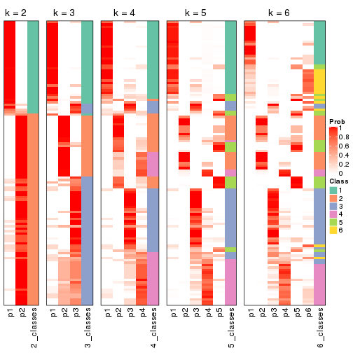
If matrix rows can be associated to genes, consider to use functional_enrichment(res,
...) to perform function enrichment for the signature genes. See this vignette for more detailed explanations.
The object with results only for a single top-value method and a single partition method can be extracted as:
res = res_list["SD", "mclust"]
# you can also extract it by
# res = res_list["SD:mclust"]
A summary of res and all the functions that can be applied to it:
res
#> A 'ConsensusPartition' object with k = 2, 3, 4, 5, 6.
#> On a matrix with 16442 rows and 117 columns.
#> Top rows (1000, 2000, 3000, 4000, 5000) are extracted by 'SD' method.
#> Subgroups are detected by 'mclust' method.
#> Performed in total 1250 partitions by row resampling.
#> Best k for subgroups seems to be 4.
#>
#> Following methods can be applied to this 'ConsensusPartition' object:
#> [1] "cola_report" "collect_classes" "collect_plots"
#> [4] "collect_stats" "colnames" "compare_signatures"
#> [7] "consensus_heatmap" "dimension_reduction" "functional_enrichment"
#> [10] "get_anno_col" "get_anno" "get_classes"
#> [13] "get_consensus" "get_matrix" "get_membership"
#> [16] "get_param" "get_signatures" "get_stats"
#> [19] "is_best_k" "is_stable_k" "membership_heatmap"
#> [22] "ncol" "nrow" "plot_ecdf"
#> [25] "rownames" "select_partition_number" "show"
#> [28] "suggest_best_k" "test_to_known_factors"
collect_plots() function collects all the plots made from res for all k (number of partitions)
into one single page to provide an easy and fast comparison between different k.
collect_plots(res)
The plots are:
k and the heatmap of
predicted classes for each k.k.k.k.All the plots in panels can be made by individual functions and they are plotted later in this section.
select_partition_number() produces several plots showing different
statistics for choosing “optimized” k. There are following statistics:
k;k, the area increased is defined as \(A_k - A_{k-1}\).The detailed explanations of these statistics can be found in the cola vignette.
Generally speaking, lower PAC score, higher mean silhouette score or higher
concordance corresponds to better partition. Rand index and Jaccard index
measure how similar the current partition is compared to partition with k-1.
If they are too similar, we won't accept k is better than k-1.
select_partition_number(res)
The numeric values for all these statistics can be obtained by get_stats().
get_stats(res)
#> k 1-PAC mean_silhouette concordance area_increased Rand Jaccard
#> 2 2 0.360 0.788 0.798 0.3677 0.509 0.509
#> 3 3 0.563 0.556 0.779 0.7610 0.660 0.423
#> 4 4 0.599 0.637 0.799 0.1099 0.834 0.573
#> 5 5 0.646 0.628 0.752 0.0836 0.837 0.506
#> 6 6 0.671 0.611 0.732 0.0357 0.951 0.785
suggest_best_k() suggests the best \(k\) based on these statistics. The rules are as follows:
suggest_best_k(res)
#> [1] 4
Following shows the table of the partitions (You need to click the show/hide
code output link to see it). The membership matrix (columns with name p*)
is inferred by
clue::cl_consensus()
function with the SE method. Basically the value in the membership matrix
represents the probability to belong to a certain group. The finall class
label for an item is determined with the group with highest probability it
belongs to.
In get_classes() function, the entropy is calculated from the membership
matrix and the silhouette score is calculated from the consensus matrix.
cbind(get_classes(res, k = 2), get_membership(res, k = 2))
#> class entropy silhouette p1 p2
#> SRR2443263 1 0.8267 0.755 0.740 0.260
#> SRR2443262 1 0.7815 0.773 0.768 0.232
#> SRR2443261 1 0.0672 0.737 0.992 0.008
#> SRR2443260 1 0.0672 0.737 0.992 0.008
#> SRR2443259 1 0.0000 0.731 1.000 0.000
#> SRR2443258 1 0.0000 0.731 1.000 0.000
#> SRR2443257 1 0.8207 0.759 0.744 0.256
#> SRR2443256 1 0.0000 0.731 1.000 0.000
#> SRR2443255 1 0.0000 0.731 1.000 0.000
#> SRR2443254 1 0.0000 0.731 1.000 0.000
#> SRR2443253 1 0.8207 0.759 0.744 0.256
#> SRR2443251 1 0.0672 0.737 0.992 0.008
#> SRR2443250 1 0.2423 0.748 0.960 0.040
#> SRR2443249 1 0.0672 0.737 0.992 0.008
#> SRR2443252 1 0.0672 0.737 0.992 0.008
#> SRR2443247 1 0.7815 0.773 0.768 0.232
#> SRR2443246 1 0.8861 0.753 0.696 0.304
#> SRR2443248 1 0.0672 0.737 0.992 0.008
#> SRR2443244 2 0.8327 0.877 0.264 0.736
#> SRR2443245 2 0.8327 0.877 0.264 0.736
#> SRR2443243 2 0.8267 0.877 0.260 0.740
#> SRR2443242 2 0.8327 0.877 0.264 0.736
#> SRR2443241 2 0.7056 0.874 0.192 0.808
#> SRR2443240 2 0.7056 0.874 0.192 0.808
#> SRR2443239 2 0.7056 0.874 0.192 0.808
#> SRR2443238 2 0.7950 0.879 0.240 0.760
#> SRR2443237 2 0.8207 0.879 0.256 0.744
#> SRR2443236 2 0.7056 0.874 0.192 0.808
#> SRR2443235 2 0.0376 0.670 0.004 0.996
#> SRR2443233 2 0.0000 0.668 0.000 1.000
#> SRR2443234 2 0.0376 0.670 0.004 0.996
#> SRR2443232 2 0.0000 0.668 0.000 1.000
#> SRR2443231 2 0.1184 0.674 0.016 0.984
#> SRR2443230 2 0.3431 0.683 0.064 0.936
#> SRR2443229 2 0.7139 0.872 0.196 0.804
#> SRR2443228 2 0.7056 0.874 0.192 0.808
#> SRR2443227 2 0.8267 0.877 0.260 0.740
#> SRR2443226 2 0.8267 0.877 0.260 0.740
#> SRR2443225 2 0.8327 0.877 0.264 0.736
#> SRR2443223 1 0.8207 0.759 0.744 0.256
#> SRR2443224 1 0.8861 0.753 0.696 0.304
#> SRR2443222 2 0.7056 0.874 0.192 0.808
#> SRR2443221 2 0.7056 0.874 0.192 0.808
#> SRR2443219 2 0.8327 0.877 0.264 0.736
#> SRR2443220 1 0.8207 0.759 0.744 0.256
#> SRR2443218 2 0.8144 0.879 0.252 0.748
#> SRR2443217 2 0.8267 0.878 0.260 0.740
#> SRR2443216 1 0.2236 0.739 0.964 0.036
#> SRR2443215 2 0.7056 0.874 0.192 0.808
#> SRR2443214 2 0.8327 0.877 0.264 0.736
#> SRR2443213 2 0.0000 0.668 0.000 1.000
#> SRR2443212 2 0.7056 0.874 0.192 0.808
#> SRR2443211 2 0.7056 0.874 0.192 0.808
#> SRR2443210 2 0.7056 0.874 0.192 0.808
#> SRR2443209 2 0.7056 0.874 0.192 0.808
#> SRR2443208 2 0.7056 0.874 0.192 0.808
#> SRR2443207 2 0.7139 0.872 0.196 0.804
#> SRR2443206 2 0.7056 0.874 0.192 0.808
#> SRR2443205 2 0.7056 0.874 0.192 0.808
#> SRR2443204 2 0.8267 0.877 0.260 0.740
#> SRR2443203 2 0.8327 0.877 0.264 0.736
#> SRR2443202 2 0.8327 0.877 0.264 0.736
#> SRR2443201 2 0.9909 0.426 0.444 0.556
#> SRR2443200 2 0.7056 0.874 0.192 0.808
#> SRR2443199 2 0.8207 0.879 0.256 0.744
#> SRR2443197 2 0.8327 0.877 0.264 0.736
#> SRR2443196 2 0.8327 0.877 0.264 0.736
#> SRR2443198 2 0.8327 0.877 0.264 0.736
#> SRR2443195 2 0.8327 0.877 0.264 0.736
#> SRR2443194 2 0.8327 0.877 0.264 0.736
#> SRR2443193 2 0.7056 0.874 0.192 0.808
#> SRR2443191 2 0.7056 0.874 0.192 0.808
#> SRR2443192 2 0.8207 0.879 0.256 0.744
#> SRR2443190 2 0.1414 0.677 0.020 0.980
#> SRR2443189 2 0.8327 0.874 0.264 0.736
#> SRR2443188 2 0.0000 0.668 0.000 1.000
#> SRR2443186 2 0.7139 0.872 0.196 0.804
#> SRR2443187 2 0.7139 0.872 0.196 0.804
#> SRR2443185 2 0.9963 0.341 0.464 0.536
#> SRR2443184 1 0.9933 0.108 0.548 0.452
#> SRR2443183 2 0.3733 0.682 0.072 0.928
#> SRR2443182 2 0.8327 0.877 0.264 0.736
#> SRR2443181 2 0.7056 0.874 0.192 0.808
#> SRR2443180 2 0.8327 0.877 0.264 0.736
#> SRR2443179 2 0.8327 0.877 0.264 0.736
#> SRR2443178 2 0.8327 0.877 0.264 0.736
#> SRR2443177 2 0.8327 0.877 0.264 0.736
#> SRR2443176 2 0.8327 0.877 0.264 0.736
#> SRR2443175 1 0.9000 0.647 0.684 0.316
#> SRR2443174 1 0.8267 0.759 0.740 0.260
#> SRR2443173 1 0.8861 0.753 0.696 0.304
#> SRR2443172 1 0.8861 0.753 0.696 0.304
#> SRR2443171 1 0.8861 0.753 0.696 0.304
#> SRR2443170 1 0.8955 0.746 0.688 0.312
#> SRR2443169 1 0.8081 0.774 0.752 0.248
#> SRR2443168 1 0.8861 0.753 0.696 0.304
#> SRR2443167 1 0.8207 0.759 0.744 0.256
#> SRR2443166 1 0.6531 0.775 0.832 0.168
#> SRR2443165 1 0.9522 0.482 0.628 0.372
#> SRR2443164 1 0.8207 0.759 0.744 0.256
#> SRR2443163 1 0.2236 0.747 0.964 0.036
#> SRR2443162 1 0.0000 0.731 1.000 0.000
#> SRR2443161 1 0.0000 0.731 1.000 0.000
#> SRR2443160 1 0.8267 0.755 0.740 0.260
#> SRR2443159 1 0.8267 0.755 0.740 0.260
#> SRR2443158 1 0.0376 0.734 0.996 0.004
#> SRR2443157 1 0.8207 0.759 0.744 0.256
#> SRR2443156 1 0.8713 0.753 0.708 0.292
#> SRR2443155 1 0.8861 0.753 0.696 0.304
#> SRR2443154 1 0.8861 0.753 0.696 0.304
#> SRR2443153 2 0.7453 0.867 0.212 0.788
#> SRR2443152 1 0.8861 0.753 0.696 0.304
#> SRR2443151 1 0.9129 0.726 0.672 0.328
#> SRR2443150 1 0.8861 0.753 0.696 0.304
#> SRR2443148 2 0.8327 0.877 0.264 0.736
#> SRR2443147 2 0.8327 0.877 0.264 0.736
#> SRR2443149 1 0.7815 0.773 0.768 0.232
cbind(get_classes(res, k = 3), get_membership(res, k = 3))
#> class entropy silhouette p1 p2 p3
#> SRR2443263 3 0.7505 0.16120 0.384 0.044 0.572
#> SRR2443262 3 0.1289 0.72938 0.000 0.032 0.968
#> SRR2443261 3 0.1289 0.72938 0.000 0.032 0.968
#> SRR2443260 3 0.1289 0.72938 0.000 0.032 0.968
#> SRR2443259 3 0.0000 0.72453 0.000 0.000 1.000
#> SRR2443258 3 0.0000 0.72453 0.000 0.000 1.000
#> SRR2443257 3 0.3028 0.71608 0.032 0.048 0.920
#> SRR2443256 3 0.0000 0.72453 0.000 0.000 1.000
#> SRR2443255 3 0.0000 0.72453 0.000 0.000 1.000
#> SRR2443254 3 0.0000 0.72453 0.000 0.000 1.000
#> SRR2443253 3 0.1877 0.72677 0.012 0.032 0.956
#> SRR2443251 3 0.1289 0.72938 0.000 0.032 0.968
#> SRR2443250 3 0.1289 0.72938 0.000 0.032 0.968
#> SRR2443249 3 0.1289 0.72938 0.000 0.032 0.968
#> SRR2443252 3 0.0592 0.72762 0.000 0.012 0.988
#> SRR2443247 3 0.7641 0.20155 0.436 0.044 0.520
#> SRR2443246 3 0.7876 0.21700 0.424 0.056 0.520
#> SRR2443248 3 0.1289 0.72938 0.000 0.032 0.968
#> SRR2443244 2 0.8322 0.00189 0.080 0.492 0.428
#> SRR2443245 1 0.6587 0.29520 0.568 0.008 0.424
#> SRR2443243 1 0.0983 0.71753 0.980 0.016 0.004
#> SRR2443242 3 0.8499 0.22876 0.096 0.388 0.516
#> SRR2443241 2 0.1031 0.77853 0.024 0.976 0.000
#> SRR2443240 2 0.0424 0.78800 0.008 0.992 0.000
#> SRR2443239 2 0.0424 0.78800 0.008 0.992 0.000
#> SRR2443238 1 0.2200 0.71452 0.940 0.056 0.004
#> SRR2443237 1 0.9231 0.35991 0.532 0.216 0.252
#> SRR2443236 2 0.0892 0.77844 0.020 0.980 0.000
#> SRR2443235 1 0.2066 0.71631 0.940 0.060 0.000
#> SRR2443233 1 0.2066 0.71631 0.940 0.060 0.000
#> SRR2443234 1 0.2066 0.71631 0.940 0.060 0.000
#> SRR2443232 1 0.2066 0.71631 0.940 0.060 0.000
#> SRR2443231 1 0.1753 0.71844 0.952 0.048 0.000
#> SRR2443230 1 0.1289 0.71928 0.968 0.032 0.000
#> SRR2443229 2 0.0592 0.78524 0.012 0.988 0.000
#> SRR2443228 2 0.0424 0.78800 0.008 0.992 0.000
#> SRR2443227 1 0.0983 0.71822 0.980 0.016 0.004
#> SRR2443226 1 0.0475 0.71602 0.992 0.004 0.004
#> SRR2443225 1 0.7962 0.24372 0.512 0.060 0.428
#> SRR2443223 3 0.2663 0.72224 0.024 0.044 0.932
#> SRR2443224 2 0.6026 0.48001 0.000 0.624 0.376
#> SRR2443222 2 0.1031 0.78177 0.024 0.976 0.000
#> SRR2443221 2 0.1031 0.78177 0.024 0.976 0.000
#> SRR2443219 2 0.7715 0.06432 0.048 0.524 0.428
#> SRR2443220 3 0.6495 0.52750 0.200 0.060 0.740
#> SRR2443218 2 0.6012 0.55039 0.032 0.748 0.220
#> SRR2443217 1 0.3030 0.70244 0.904 0.092 0.004
#> SRR2443216 3 0.4883 0.53427 0.208 0.004 0.788
#> SRR2443215 2 0.0424 0.78800 0.008 0.992 0.000
#> SRR2443214 1 0.0475 0.71594 0.992 0.004 0.004
#> SRR2443213 1 0.2066 0.71631 0.940 0.060 0.000
#> SRR2443212 2 0.1031 0.78177 0.024 0.976 0.000
#> SRR2443211 2 0.0424 0.78800 0.008 0.992 0.000
#> SRR2443210 2 0.0424 0.78800 0.008 0.992 0.000
#> SRR2443209 2 0.0424 0.78800 0.008 0.992 0.000
#> SRR2443208 2 0.0424 0.78800 0.008 0.992 0.000
#> SRR2443207 2 0.0424 0.78800 0.008 0.992 0.000
#> SRR2443206 2 0.0424 0.78800 0.008 0.992 0.000
#> SRR2443205 2 0.0424 0.78800 0.008 0.992 0.000
#> SRR2443204 1 0.6848 0.31504 0.568 0.016 0.416
#> SRR2443203 1 0.7004 0.26824 0.552 0.020 0.428
#> SRR2443202 1 0.7962 0.24372 0.512 0.060 0.428
#> SRR2443201 3 0.7809 0.16872 0.372 0.060 0.568
#> SRR2443200 2 0.1031 0.78177 0.024 0.976 0.000
#> SRR2443199 2 0.7401 0.31242 0.048 0.612 0.340
#> SRR2443197 1 0.7627 0.24421 0.528 0.044 0.428
#> SRR2443196 1 0.7627 0.24421 0.528 0.044 0.428
#> SRR2443198 1 0.7715 0.24444 0.524 0.048 0.428
#> SRR2443195 1 0.5503 0.56421 0.772 0.020 0.208
#> SRR2443194 3 0.7853 0.13336 0.384 0.060 0.556
#> SRR2443193 1 0.3112 0.70633 0.900 0.096 0.004
#> SRR2443191 2 0.0424 0.78800 0.008 0.992 0.000
#> SRR2443192 1 0.9723 0.21821 0.424 0.348 0.228
#> SRR2443190 1 0.2066 0.71631 0.940 0.060 0.000
#> SRR2443189 1 0.1711 0.72048 0.960 0.032 0.008
#> SRR2443188 1 0.2066 0.71631 0.940 0.060 0.000
#> SRR2443186 2 0.0424 0.78800 0.008 0.992 0.000
#> SRR2443187 2 0.0424 0.78800 0.008 0.992 0.000
#> SRR2443185 3 0.7809 0.16872 0.372 0.060 0.568
#> SRR2443184 3 0.7809 0.16872 0.372 0.060 0.568
#> SRR2443183 1 0.1525 0.72115 0.964 0.032 0.004
#> SRR2443182 1 0.2926 0.70357 0.924 0.036 0.040
#> SRR2443181 2 0.0424 0.78800 0.008 0.992 0.000
#> SRR2443180 2 0.7551 0.23856 0.048 0.580 0.372
#> SRR2443179 1 0.7627 0.24421 0.528 0.044 0.428
#> SRR2443178 1 0.7627 0.24421 0.528 0.044 0.428
#> SRR2443177 1 0.6737 0.36545 0.600 0.016 0.384
#> SRR2443176 3 0.7758 -0.14350 0.468 0.048 0.484
#> SRR2443175 1 0.4708 0.61673 0.844 0.036 0.120
#> SRR2443174 1 0.2187 0.71378 0.948 0.028 0.024
#> SRR2443173 2 0.6026 0.48001 0.000 0.624 0.376
#> SRR2443172 2 0.6026 0.48001 0.000 0.624 0.376
#> SRR2443171 3 0.7641 0.20155 0.436 0.044 0.520
#> SRR2443170 2 0.6566 0.47302 0.012 0.612 0.376
#> SRR2443169 3 0.7657 0.18288 0.448 0.044 0.508
#> SRR2443168 2 0.6026 0.48001 0.000 0.624 0.376
#> SRR2443167 3 0.5371 0.61867 0.140 0.048 0.812
#> SRR2443166 3 0.1482 0.72844 0.012 0.020 0.968
#> SRR2443165 3 0.7809 0.16786 0.372 0.060 0.568
#> SRR2443164 3 0.4504 0.56758 0.000 0.196 0.804
#> SRR2443163 3 0.1289 0.72938 0.000 0.032 0.968
#> SRR2443162 3 0.0000 0.72453 0.000 0.000 1.000
#> SRR2443161 3 0.0000 0.72453 0.000 0.000 1.000
#> SRR2443160 3 0.3791 0.69807 0.060 0.048 0.892
#> SRR2443159 3 0.3484 0.70647 0.048 0.048 0.904
#> SRR2443158 3 0.0000 0.72453 0.000 0.000 1.000
#> SRR2443157 3 0.2636 0.71666 0.048 0.020 0.932
#> SRR2443156 3 0.7876 0.21700 0.424 0.056 0.520
#> SRR2443155 2 0.7958 0.37876 0.064 0.544 0.392
#> SRR2443154 3 0.8393 0.23020 0.396 0.088 0.516
#> SRR2443153 1 0.1289 0.71928 0.968 0.032 0.000
#> SRR2443152 2 0.6026 0.48001 0.000 0.624 0.376
#> SRR2443151 2 0.6045 0.47408 0.000 0.620 0.380
#> SRR2443150 2 0.6026 0.48001 0.000 0.624 0.376
#> SRR2443148 2 0.8138 -0.01783 0.068 0.480 0.452
#> SRR2443147 3 0.7809 0.29440 0.060 0.372 0.568
#> SRR2443149 3 0.7153 0.40504 0.300 0.048 0.652
cbind(get_classes(res, k = 4), get_membership(res, k = 4))
#> class entropy silhouette p1 p2 p3 p4
#> SRR2443263 3 0.2928 0.7457 0.012 0.000 0.880 0.108
#> SRR2443262 3 0.0336 0.7886 0.000 0.000 0.992 0.008
#> SRR2443261 3 0.0188 0.7891 0.000 0.000 0.996 0.004
#> SRR2443260 3 0.0188 0.7895 0.000 0.000 0.996 0.004
#> SRR2443259 3 0.0000 0.7904 0.000 0.000 1.000 0.000
#> SRR2443258 3 0.0000 0.7904 0.000 0.000 1.000 0.000
#> SRR2443257 3 0.2530 0.7542 0.000 0.000 0.888 0.112
#> SRR2443256 3 0.0000 0.7904 0.000 0.000 1.000 0.000
#> SRR2443255 3 0.0000 0.7904 0.000 0.000 1.000 0.000
#> SRR2443254 3 0.0000 0.7904 0.000 0.000 1.000 0.000
#> SRR2443253 3 0.2704 0.7157 0.000 0.000 0.876 0.124
#> SRR2443251 3 0.0000 0.7904 0.000 0.000 1.000 0.000
#> SRR2443250 3 0.0336 0.7886 0.000 0.000 0.992 0.008
#> SRR2443249 3 0.0336 0.7886 0.000 0.000 0.992 0.008
#> SRR2443252 3 0.0000 0.7904 0.000 0.000 1.000 0.000
#> SRR2443247 1 0.4973 0.5010 0.644 0.000 0.348 0.008
#> SRR2443246 1 0.5231 0.4505 0.604 0.000 0.384 0.012
#> SRR2443248 3 0.0188 0.7895 0.000 0.000 0.996 0.004
#> SRR2443244 3 0.9180 -0.2890 0.164 0.108 0.364 0.364
#> SRR2443245 1 0.7327 0.1401 0.504 0.000 0.320 0.176
#> SRR2443243 1 0.1109 0.7429 0.968 0.004 0.000 0.028
#> SRR2443242 3 0.7949 0.3295 0.160 0.092 0.600 0.148
#> SRR2443241 2 0.1151 0.8620 0.024 0.968 0.000 0.008
#> SRR2443240 2 0.0000 0.8776 0.000 1.000 0.000 0.000
#> SRR2443239 2 0.0000 0.8776 0.000 1.000 0.000 0.000
#> SRR2443238 1 0.1209 0.7423 0.964 0.004 0.000 0.032
#> SRR2443237 1 0.7142 0.4113 0.624 0.104 0.036 0.236
#> SRR2443236 2 0.1837 0.8518 0.028 0.944 0.000 0.028
#> SRR2443235 1 0.0469 0.7463 0.988 0.012 0.000 0.000
#> SRR2443233 1 0.0469 0.7463 0.988 0.012 0.000 0.000
#> SRR2443234 1 0.0469 0.7463 0.988 0.012 0.000 0.000
#> SRR2443232 1 0.0469 0.7463 0.988 0.012 0.000 0.000
#> SRR2443231 1 0.1139 0.7462 0.972 0.008 0.008 0.012
#> SRR2443230 1 0.0524 0.7465 0.988 0.008 0.000 0.004
#> SRR2443229 2 0.0336 0.8748 0.008 0.992 0.000 0.000
#> SRR2443228 2 0.1474 0.8568 0.000 0.948 0.000 0.052
#> SRR2443227 1 0.2149 0.7290 0.912 0.000 0.000 0.088
#> SRR2443226 1 0.1474 0.7355 0.948 0.000 0.000 0.052
#> SRR2443225 3 0.7188 0.2530 0.164 0.000 0.528 0.308
#> SRR2443223 3 0.2281 0.7560 0.000 0.000 0.904 0.096
#> SRR2443224 2 0.6075 0.6832 0.004 0.696 0.136 0.164
#> SRR2443222 2 0.1474 0.8568 0.000 0.948 0.000 0.052
#> SRR2443221 2 0.1474 0.8568 0.000 0.948 0.000 0.052
#> SRR2443219 4 0.4737 0.5024 0.020 0.252 0.000 0.728
#> SRR2443220 3 0.2593 0.7520 0.004 0.000 0.892 0.104
#> SRR2443218 4 0.4401 0.4854 0.004 0.272 0.000 0.724
#> SRR2443217 1 0.4328 0.6754 0.804 0.008 0.024 0.164
#> SRR2443216 3 0.2345 0.7538 0.000 0.000 0.900 0.100
#> SRR2443215 2 0.1209 0.8614 0.004 0.964 0.000 0.032
#> SRR2443214 1 0.3539 0.6758 0.820 0.000 0.004 0.176
#> SRR2443213 1 0.0469 0.7463 0.988 0.012 0.000 0.000
#> SRR2443212 2 0.0921 0.8658 0.000 0.972 0.000 0.028
#> SRR2443211 2 0.0000 0.8776 0.000 1.000 0.000 0.000
#> SRR2443210 2 0.0817 0.8691 0.000 0.976 0.000 0.024
#> SRR2443209 2 0.0000 0.8776 0.000 1.000 0.000 0.000
#> SRR2443208 2 0.0000 0.8776 0.000 1.000 0.000 0.000
#> SRR2443207 2 0.0000 0.8776 0.000 1.000 0.000 0.000
#> SRR2443206 2 0.0000 0.8776 0.000 1.000 0.000 0.000
#> SRR2443205 2 0.0000 0.8776 0.000 1.000 0.000 0.000
#> SRR2443204 1 0.7172 0.1892 0.532 0.000 0.304 0.164
#> SRR2443203 1 0.7474 -0.0604 0.424 0.000 0.400 0.176
#> SRR2443202 3 0.7374 0.0631 0.164 0.000 0.456 0.380
#> SRR2443201 3 0.4379 0.6742 0.036 0.000 0.792 0.172
#> SRR2443200 2 0.1637 0.8524 0.000 0.940 0.000 0.060
#> SRR2443199 4 0.4511 0.4911 0.008 0.268 0.000 0.724
#> SRR2443197 3 0.7314 0.1456 0.164 0.000 0.488 0.348
#> SRR2443196 4 0.7170 0.3370 0.172 0.000 0.288 0.540
#> SRR2443198 3 0.7379 0.0483 0.164 0.000 0.452 0.384
#> SRR2443195 1 0.3453 0.6940 0.868 0.000 0.052 0.080
#> SRR2443194 3 0.5944 0.5261 0.164 0.000 0.696 0.140
#> SRR2443193 1 0.3108 0.6933 0.872 0.112 0.000 0.016
#> SRR2443191 2 0.0000 0.8776 0.000 1.000 0.000 0.000
#> SRR2443192 1 0.7403 -0.0110 0.452 0.116 0.012 0.420
#> SRR2443190 1 0.0469 0.7463 0.988 0.012 0.000 0.000
#> SRR2443189 1 0.2760 0.7071 0.872 0.000 0.000 0.128
#> SRR2443188 1 0.0469 0.7463 0.988 0.012 0.000 0.000
#> SRR2443186 2 0.0000 0.8776 0.000 1.000 0.000 0.000
#> SRR2443187 2 0.0000 0.8776 0.000 1.000 0.000 0.000
#> SRR2443185 3 0.5102 0.6313 0.100 0.000 0.764 0.136
#> SRR2443184 3 0.4224 0.6912 0.044 0.000 0.812 0.144
#> SRR2443183 1 0.0672 0.7463 0.984 0.008 0.000 0.008
#> SRR2443182 1 0.3538 0.6885 0.832 0.004 0.004 0.160
#> SRR2443181 2 0.0000 0.8776 0.000 1.000 0.000 0.000
#> SRR2443180 4 0.4511 0.4911 0.008 0.268 0.000 0.724
#> SRR2443179 4 0.7188 0.3277 0.172 0.000 0.292 0.536
#> SRR2443178 4 0.7375 0.1960 0.172 0.000 0.348 0.480
#> SRR2443177 1 0.6724 0.3542 0.612 0.000 0.224 0.164
#> SRR2443176 3 0.6546 0.4447 0.192 0.000 0.636 0.172
#> SRR2443175 1 0.5087 0.6649 0.772 0.004 0.140 0.084
#> SRR2443174 1 0.3937 0.6288 0.800 0.000 0.188 0.012
#> SRR2443173 2 0.6235 0.6769 0.004 0.680 0.136 0.180
#> SRR2443172 2 0.6235 0.6769 0.004 0.680 0.136 0.180
#> SRR2443171 1 0.4770 0.5587 0.700 0.000 0.288 0.012
#> SRR2443170 2 0.6335 0.6779 0.012 0.688 0.136 0.164
#> SRR2443169 1 0.4673 0.5584 0.700 0.000 0.292 0.008
#> SRR2443168 2 0.6259 0.6768 0.008 0.688 0.140 0.164
#> SRR2443167 3 0.2149 0.7561 0.000 0.000 0.912 0.088
#> SRR2443166 3 0.0707 0.7796 0.020 0.000 0.980 0.000
#> SRR2443165 3 0.5088 0.5584 0.024 0.000 0.688 0.288
#> SRR2443164 4 0.4661 0.2369 0.000 0.000 0.348 0.652
#> SRR2443163 3 0.0188 0.7895 0.000 0.000 0.996 0.004
#> SRR2443162 3 0.0000 0.7904 0.000 0.000 1.000 0.000
#> SRR2443161 3 0.0000 0.7904 0.000 0.000 1.000 0.000
#> SRR2443160 3 0.3024 0.7015 0.000 0.000 0.852 0.148
#> SRR2443159 3 0.3356 0.6731 0.000 0.000 0.824 0.176
#> SRR2443158 3 0.0000 0.7904 0.000 0.000 1.000 0.000
#> SRR2443157 3 0.1004 0.7781 0.024 0.000 0.972 0.004
#> SRR2443156 1 0.5054 0.5227 0.660 0.004 0.328 0.008
#> SRR2443155 2 0.7305 0.6292 0.056 0.644 0.136 0.164
#> SRR2443154 1 0.9298 0.0510 0.380 0.316 0.200 0.104
#> SRR2443153 1 0.1139 0.7462 0.972 0.008 0.008 0.012
#> SRR2443152 2 0.6116 0.6820 0.004 0.692 0.136 0.168
#> SRR2443151 4 0.7240 -0.3107 0.000 0.400 0.144 0.456
#> SRR2443150 2 0.6075 0.6832 0.004 0.696 0.136 0.164
#> SRR2443148 4 0.6898 0.5037 0.116 0.056 0.148 0.680
#> SRR2443147 4 0.7316 0.3630 0.148 0.012 0.276 0.564
#> SRR2443149 3 0.4222 0.4068 0.272 0.000 0.728 0.000
cbind(get_classes(res, k = 5), get_membership(res, k = 5))
#> class entropy silhouette p1 p2 p3 p4 p5
#> SRR2443263 3 0.3878 0.705 0.016 0.000 0.748 0.000 0.236
#> SRR2443262 4 0.4599 0.616 0.000 0.000 0.016 0.600 0.384
#> SRR2443261 4 0.5708 0.520 0.000 0.000 0.088 0.528 0.384
#> SRR2443260 3 0.4138 0.723 0.000 0.000 0.616 0.000 0.384
#> SRR2443259 3 0.4138 0.723 0.000 0.000 0.616 0.000 0.384
#> SRR2443258 3 0.4138 0.723 0.000 0.000 0.616 0.000 0.384
#> SRR2443257 4 0.4737 0.622 0.016 0.000 0.004 0.600 0.380
#> SRR2443256 3 0.4138 0.723 0.000 0.000 0.616 0.000 0.384
#> SRR2443255 3 0.4138 0.723 0.000 0.000 0.616 0.000 0.384
#> SRR2443254 3 0.4138 0.723 0.000 0.000 0.616 0.000 0.384
#> SRR2443253 4 0.4655 0.618 0.004 0.000 0.012 0.600 0.384
#> SRR2443251 3 0.5616 0.647 0.000 0.000 0.536 0.080 0.384
#> SRR2443250 4 0.4599 0.616 0.000 0.000 0.016 0.600 0.384
#> SRR2443249 4 0.4599 0.616 0.000 0.000 0.016 0.600 0.384
#> SRR2443252 3 0.4138 0.723 0.000 0.000 0.616 0.000 0.384
#> SRR2443247 1 0.5655 0.549 0.600 0.000 0.000 0.112 0.288
#> SRR2443246 5 0.4411 0.329 0.048 0.000 0.044 0.112 0.796
#> SRR2443248 3 0.4138 0.723 0.000 0.000 0.616 0.000 0.384
#> SRR2443244 3 0.0510 0.624 0.016 0.000 0.984 0.000 0.000
#> SRR2443245 1 0.3305 0.722 0.776 0.000 0.224 0.000 0.000
#> SRR2443243 1 0.1965 0.768 0.904 0.000 0.096 0.000 0.000
#> SRR2443242 3 0.0510 0.624 0.016 0.000 0.984 0.000 0.000
#> SRR2443241 5 0.4874 0.628 0.032 0.368 0.000 0.000 0.600
#> SRR2443240 5 0.4182 0.631 0.000 0.400 0.000 0.000 0.600
#> SRR2443239 2 0.1608 0.709 0.000 0.928 0.000 0.000 0.072
#> SRR2443238 1 0.2852 0.744 0.828 0.000 0.172 0.000 0.000
#> SRR2443237 3 0.3010 0.564 0.172 0.000 0.824 0.000 0.004
#> SRR2443236 5 0.4920 0.618 0.032 0.384 0.000 0.000 0.584
#> SRR2443235 1 0.0162 0.774 0.996 0.004 0.000 0.000 0.000
#> SRR2443233 1 0.0162 0.774 0.996 0.004 0.000 0.000 0.000
#> SRR2443234 1 0.0162 0.774 0.996 0.004 0.000 0.000 0.000
#> SRR2443232 1 0.0671 0.776 0.980 0.004 0.016 0.000 0.000
#> SRR2443231 1 0.2806 0.751 0.844 0.004 0.152 0.000 0.000
#> SRR2443230 1 0.2179 0.770 0.896 0.004 0.100 0.000 0.000
#> SRR2443229 5 0.4517 0.629 0.012 0.388 0.000 0.000 0.600
#> SRR2443228 2 0.0510 0.725 0.016 0.984 0.000 0.000 0.000
#> SRR2443227 1 0.3774 0.725 0.704 0.000 0.296 0.000 0.000
#> SRR2443226 1 0.3143 0.732 0.796 0.000 0.204 0.000 0.000
#> SRR2443225 3 0.0510 0.624 0.016 0.000 0.984 0.000 0.000
#> SRR2443223 3 0.4288 0.723 0.004 0.000 0.612 0.000 0.384
#> SRR2443224 5 0.4138 0.514 0.000 0.000 0.000 0.384 0.616
#> SRR2443222 2 0.0510 0.730 0.000 0.984 0.000 0.016 0.000
#> SRR2443221 2 0.0510 0.730 0.000 0.984 0.000 0.016 0.000
#> SRR2443219 4 0.6258 0.525 0.016 0.156 0.236 0.592 0.000
#> SRR2443220 4 0.5898 0.608 0.016 0.000 0.080 0.580 0.324
#> SRR2443218 4 0.6243 0.326 0.020 0.388 0.088 0.504 0.000
#> SRR2443217 3 0.2020 0.615 0.100 0.000 0.900 0.000 0.000
#> SRR2443216 3 0.4288 0.723 0.004 0.000 0.612 0.000 0.384
#> SRR2443215 5 0.7199 0.307 0.020 0.316 0.260 0.000 0.404
#> SRR2443214 1 0.3305 0.722 0.776 0.000 0.224 0.000 0.000
#> SRR2443213 1 0.0162 0.774 0.996 0.004 0.000 0.000 0.000
#> SRR2443212 5 0.4599 0.627 0.016 0.384 0.000 0.000 0.600
#> SRR2443211 5 0.4182 0.631 0.000 0.400 0.000 0.000 0.600
#> SRR2443210 2 0.0000 0.730 0.000 1.000 0.000 0.000 0.000
#> SRR2443209 5 0.4517 0.633 0.012 0.388 0.000 0.000 0.600
#> SRR2443208 5 0.4182 0.631 0.000 0.400 0.000 0.000 0.600
#> SRR2443207 5 0.4182 0.631 0.000 0.400 0.000 0.000 0.600
#> SRR2443206 2 0.1341 0.718 0.000 0.944 0.000 0.000 0.056
#> SRR2443205 2 0.3752 0.219 0.000 0.708 0.000 0.000 0.292
#> SRR2443204 1 0.4114 0.678 0.624 0.000 0.376 0.000 0.000
#> SRR2443203 3 0.2813 0.567 0.168 0.000 0.832 0.000 0.000
#> SRR2443202 3 0.0510 0.624 0.016 0.000 0.984 0.000 0.000
#> SRR2443201 3 0.3819 0.704 0.016 0.000 0.756 0.000 0.228
#> SRR2443200 2 0.0609 0.724 0.020 0.980 0.000 0.000 0.000
#> SRR2443199 4 0.6411 0.355 0.020 0.368 0.108 0.504 0.000
#> SRR2443197 3 0.1216 0.611 0.020 0.000 0.960 0.020 0.000
#> SRR2443196 4 0.6284 0.480 0.172 0.000 0.320 0.508 0.000
#> SRR2443198 3 0.0671 0.622 0.016 0.000 0.980 0.004 0.000
#> SRR2443195 1 0.3242 0.726 0.784 0.000 0.216 0.000 0.000
#> SRR2443194 3 0.0912 0.632 0.016 0.000 0.972 0.000 0.012
#> SRR2443193 1 0.3394 0.745 0.824 0.004 0.152 0.000 0.020
#> SRR2443191 5 0.4182 0.631 0.000 0.400 0.000 0.000 0.600
#> SRR2443192 3 0.3921 0.527 0.172 0.000 0.784 0.000 0.044
#> SRR2443190 1 0.0162 0.774 0.996 0.004 0.000 0.000 0.000
#> SRR2443189 1 0.3816 0.723 0.696 0.000 0.304 0.000 0.000
#> SRR2443188 1 0.0162 0.774 0.996 0.004 0.000 0.000 0.000
#> SRR2443186 2 0.1732 0.703 0.000 0.920 0.000 0.000 0.080
#> SRR2443187 2 0.1792 0.699 0.000 0.916 0.000 0.000 0.084
#> SRR2443185 3 0.2464 0.669 0.016 0.000 0.888 0.000 0.096
#> SRR2443184 3 0.3819 0.704 0.016 0.000 0.756 0.000 0.228
#> SRR2443183 1 0.0162 0.775 0.996 0.000 0.004 0.000 0.000
#> SRR2443182 1 0.3816 0.721 0.696 0.000 0.304 0.000 0.000
#> SRR2443181 2 0.1908 0.688 0.000 0.908 0.000 0.000 0.092
#> SRR2443180 4 0.6366 0.356 0.016 0.368 0.112 0.504 0.000
#> SRR2443179 4 0.5880 0.512 0.172 0.000 0.228 0.600 0.000
#> SRR2443178 3 0.2852 0.567 0.172 0.000 0.828 0.000 0.000
#> SRR2443177 1 0.3837 0.712 0.692 0.000 0.308 0.000 0.000
#> SRR2443176 3 0.0794 0.624 0.028 0.000 0.972 0.000 0.000
#> SRR2443175 1 0.4796 0.706 0.728 0.000 0.152 0.000 0.120
#> SRR2443174 1 0.5013 0.660 0.696 0.000 0.100 0.000 0.204
#> SRR2443173 2 0.4686 0.484 0.000 0.596 0.000 0.384 0.020
#> SRR2443172 2 0.4686 0.484 0.000 0.596 0.000 0.384 0.020
#> SRR2443171 1 0.5655 0.549 0.600 0.000 0.000 0.112 0.288
#> SRR2443170 5 0.4288 0.513 0.004 0.000 0.000 0.384 0.612
#> SRR2443169 1 0.5655 0.549 0.600 0.000 0.000 0.112 0.288
#> SRR2443168 5 0.4138 0.514 0.000 0.000 0.000 0.384 0.616
#> SRR2443167 3 0.6216 0.639 0.016 0.000 0.516 0.096 0.372
#> SRR2443166 1 0.5467 0.395 0.548 0.000 0.068 0.000 0.384
#> SRR2443165 3 0.3256 0.687 0.016 0.000 0.832 0.004 0.148
#> SRR2443164 4 0.4507 0.482 0.016 0.096 0.000 0.780 0.108
#> SRR2443163 3 0.4138 0.723 0.000 0.000 0.616 0.000 0.384
#> SRR2443162 3 0.4138 0.723 0.000 0.000 0.616 0.000 0.384
#> SRR2443161 3 0.4138 0.723 0.000 0.000 0.616 0.000 0.384
#> SRR2443160 3 0.6272 0.629 0.016 0.000 0.504 0.100 0.380
#> SRR2443159 4 0.5292 0.602 0.016 0.000 0.028 0.576 0.380
#> SRR2443158 3 0.4138 0.723 0.000 0.000 0.616 0.000 0.384
#> SRR2443157 1 0.5360 0.406 0.556 0.000 0.060 0.000 0.384
#> SRR2443156 5 0.4123 0.293 0.000 0.000 0.104 0.108 0.788
#> SRR2443155 5 0.4138 0.514 0.000 0.000 0.000 0.384 0.616
#> SRR2443154 5 0.4276 0.514 0.000 0.000 0.004 0.380 0.616
#> SRR2443153 1 0.2806 0.751 0.844 0.004 0.152 0.000 0.000
#> SRR2443152 2 0.4920 0.482 0.000 0.584 0.000 0.384 0.032
#> SRR2443151 4 0.5332 0.401 0.016 0.168 0.000 0.704 0.112
#> SRR2443150 2 0.5123 0.477 0.000 0.572 0.000 0.384 0.044
#> SRR2443148 4 0.5174 0.547 0.020 0.020 0.364 0.596 0.000
#> SRR2443147 4 0.4748 0.535 0.016 0.004 0.384 0.596 0.000
#> SRR2443149 3 0.4273 0.666 0.000 0.000 0.552 0.000 0.448
cbind(get_classes(res, k = 6), get_membership(res, k = 6))
#> class entropy silhouette p1 p2 p3 p4 p5 p6
#> SRR2443263 3 0.4330 0.675 0.000 0.000 0.680 0.276 0.008 0.036
#> SRR2443262 4 0.0000 0.777 0.000 0.000 0.000 1.000 0.000 0.000
#> SRR2443261 4 0.1007 0.758 0.000 0.000 0.044 0.956 0.000 0.000
#> SRR2443260 3 0.3756 0.678 0.000 0.000 0.600 0.400 0.000 0.000
#> SRR2443259 3 0.3756 0.678 0.000 0.000 0.600 0.400 0.000 0.000
#> SRR2443258 3 0.4388 0.664 0.000 0.000 0.572 0.400 0.000 0.028
#> SRR2443257 4 0.1918 0.771 0.000 0.000 0.088 0.904 0.008 0.000
#> SRR2443256 3 0.3756 0.678 0.000 0.000 0.600 0.400 0.000 0.000
#> SRR2443255 3 0.3756 0.678 0.000 0.000 0.600 0.400 0.000 0.000
#> SRR2443254 3 0.3756 0.678 0.000 0.000 0.600 0.400 0.000 0.000
#> SRR2443253 4 0.0291 0.778 0.000 0.004 0.004 0.992 0.000 0.000
#> SRR2443251 4 0.1141 0.750 0.000 0.000 0.052 0.948 0.000 0.000
#> SRR2443250 4 0.0000 0.777 0.000 0.000 0.000 1.000 0.000 0.000
#> SRR2443249 4 0.0000 0.777 0.000 0.000 0.000 1.000 0.000 0.000
#> SRR2443252 3 0.3881 0.678 0.000 0.000 0.600 0.396 0.000 0.004
#> SRR2443247 1 0.6075 0.599 0.604 0.180 0.000 0.132 0.000 0.084
#> SRR2443246 5 0.6210 0.488 0.004 0.180 0.000 0.132 0.600 0.084
#> SRR2443248 3 0.3881 0.678 0.000 0.000 0.600 0.396 0.000 0.004
#> SRR2443244 3 0.2724 0.612 0.032 0.000 0.876 0.000 0.016 0.076
#> SRR2443245 1 0.5027 0.650 0.596 0.000 0.304 0.000 0.000 0.100
#> SRR2443243 1 0.4358 0.706 0.712 0.000 0.196 0.000 0.000 0.092
#> SRR2443242 3 0.2846 0.614 0.028 0.000 0.872 0.004 0.016 0.080
#> SRR2443241 5 0.1757 0.630 0.076 0.000 0.000 0.000 0.916 0.008
#> SRR2443240 5 0.0000 0.647 0.000 0.000 0.000 0.000 1.000 0.000
#> SRR2443239 2 0.3756 0.673 0.000 0.600 0.000 0.000 0.400 0.000
#> SRR2443238 1 0.4941 0.684 0.648 0.000 0.212 0.000 0.000 0.140
#> SRR2443237 3 0.2752 0.597 0.036 0.000 0.856 0.000 0.000 0.108
#> SRR2443236 5 0.1088 0.639 0.016 0.000 0.024 0.000 0.960 0.000
#> SRR2443235 1 0.0000 0.739 1.000 0.000 0.000 0.000 0.000 0.000
#> SRR2443233 1 0.0000 0.739 1.000 0.000 0.000 0.000 0.000 0.000
#> SRR2443234 1 0.0000 0.739 1.000 0.000 0.000 0.000 0.000 0.000
#> SRR2443232 1 0.0000 0.739 1.000 0.000 0.000 0.000 0.000 0.000
#> SRR2443231 1 0.2119 0.732 0.904 0.000 0.060 0.000 0.000 0.036
#> SRR2443230 1 0.1387 0.745 0.932 0.000 0.068 0.000 0.000 0.000
#> SRR2443229 5 0.0935 0.649 0.004 0.000 0.000 0.000 0.964 0.032
#> SRR2443228 6 0.5250 0.565 0.000 0.052 0.036 0.000 0.308 0.604
#> SRR2443227 1 0.2969 0.721 0.776 0.000 0.224 0.000 0.000 0.000
#> SRR2443226 1 0.5238 0.656 0.592 0.000 0.268 0.000 0.000 0.140
#> SRR2443225 3 0.1572 0.605 0.036 0.000 0.936 0.000 0.000 0.028
#> SRR2443223 3 0.4371 0.679 0.000 0.000 0.620 0.344 0.000 0.036
#> SRR2443224 2 0.1663 0.489 0.000 0.912 0.000 0.000 0.088 0.000
#> SRR2443222 6 0.5542 0.483 0.000 0.096 0.020 0.000 0.324 0.560
#> SRR2443221 6 0.5306 0.529 0.000 0.080 0.020 0.000 0.304 0.596
#> SRR2443219 4 0.6254 0.227 0.000 0.000 0.168 0.556 0.056 0.220
#> SRR2443220 4 0.3604 0.732 0.004 0.000 0.160 0.796 0.008 0.032
#> SRR2443218 6 0.4800 0.685 0.000 0.000 0.056 0.052 0.176 0.716
#> SRR2443217 3 0.3053 0.579 0.168 0.000 0.812 0.000 0.020 0.000
#> SRR2443216 3 0.3847 0.679 0.000 0.000 0.644 0.348 0.000 0.008
#> SRR2443215 2 0.7093 0.312 0.000 0.444 0.112 0.000 0.248 0.196
#> SRR2443214 1 0.5238 0.656 0.592 0.000 0.268 0.000 0.000 0.140
#> SRR2443213 1 0.0000 0.739 1.000 0.000 0.000 0.000 0.000 0.000
#> SRR2443212 5 0.3683 0.328 0.000 0.192 0.044 0.000 0.764 0.000
#> SRR2443211 5 0.3647 -0.228 0.000 0.360 0.000 0.000 0.640 0.000
#> SRR2443210 2 0.4237 0.662 0.000 0.584 0.000 0.000 0.396 0.020
#> SRR2443209 5 0.0291 0.650 0.004 0.000 0.000 0.000 0.992 0.004
#> SRR2443208 5 0.0000 0.647 0.000 0.000 0.000 0.000 1.000 0.000
#> SRR2443207 5 0.0000 0.647 0.000 0.000 0.000 0.000 1.000 0.000
#> SRR2443206 2 0.3881 0.674 0.000 0.600 0.000 0.000 0.396 0.004
#> SRR2443205 2 0.3756 0.673 0.000 0.600 0.000 0.000 0.400 0.000
#> SRR2443204 1 0.4799 0.652 0.592 0.000 0.340 0.000 0.000 0.068
#> SRR2443203 3 0.2860 0.563 0.048 0.000 0.852 0.000 0.000 0.100
#> SRR2443202 3 0.1649 0.604 0.036 0.000 0.932 0.000 0.000 0.032
#> SRR2443201 3 0.4029 0.673 0.004 0.000 0.748 0.204 0.008 0.036
#> SRR2443200 6 0.4743 0.654 0.000 0.052 0.044 0.000 0.192 0.712
#> SRR2443199 6 0.4261 0.688 0.000 0.000 0.088 0.052 0.080 0.780
#> SRR2443197 3 0.5488 -0.139 0.036 0.004 0.552 0.360 0.000 0.048
#> SRR2443196 4 0.5689 0.364 0.020 0.004 0.316 0.560 0.000 0.100
#> SRR2443198 3 0.4538 0.379 0.036 0.004 0.740 0.172 0.000 0.048
#> SRR2443195 1 0.5238 0.656 0.592 0.000 0.268 0.000 0.000 0.140
#> SRR2443194 3 0.1577 0.634 0.016 0.000 0.940 0.036 0.008 0.000
#> SRR2443193 1 0.4704 0.450 0.660 0.000 0.056 0.000 0.272 0.012
#> SRR2443191 5 0.0458 0.650 0.000 0.000 0.000 0.000 0.984 0.016
#> SRR2443192 3 0.3535 0.586 0.036 0.000 0.808 0.000 0.016 0.140
#> SRR2443190 1 0.0000 0.739 1.000 0.000 0.000 0.000 0.000 0.000
#> SRR2443189 1 0.4284 0.701 0.688 0.000 0.256 0.000 0.000 0.056
#> SRR2443188 1 0.0935 0.731 0.964 0.000 0.004 0.000 0.000 0.032
#> SRR2443186 2 0.3881 0.674 0.000 0.600 0.000 0.000 0.396 0.004
#> SRR2443187 2 0.3881 0.674 0.000 0.600 0.000 0.000 0.396 0.004
#> SRR2443185 3 0.3234 0.671 0.004 0.000 0.812 0.164 0.008 0.012
#> SRR2443184 3 0.3989 0.674 0.004 0.000 0.748 0.208 0.008 0.032
#> SRR2443183 1 0.1327 0.748 0.936 0.000 0.064 0.000 0.000 0.000
#> SRR2443182 1 0.4720 0.548 0.560 0.000 0.388 0.000 0.000 0.052
#> SRR2443181 2 0.3756 0.673 0.000 0.600 0.000 0.000 0.400 0.000
#> SRR2443180 6 0.4261 0.688 0.000 0.000 0.088 0.052 0.080 0.780
#> SRR2443179 4 0.5248 0.339 0.004 0.004 0.292 0.600 0.000 0.100
#> SRR2443178 3 0.2199 0.596 0.020 0.000 0.892 0.000 0.000 0.088
#> SRR2443177 1 0.5001 0.651 0.596 0.000 0.308 0.000 0.000 0.096
#> SRR2443176 3 0.2394 0.584 0.036 0.000 0.900 0.004 0.008 0.052
#> SRR2443175 1 0.4370 0.703 0.772 0.000 0.060 0.096 0.000 0.072
#> SRR2443174 1 0.4774 0.674 0.728 0.000 0.048 0.148 0.000 0.076
#> SRR2443173 2 0.0146 0.582 0.000 0.996 0.000 0.000 0.004 0.000
#> SRR2443172 2 0.0146 0.582 0.000 0.996 0.000 0.000 0.004 0.000
#> SRR2443171 1 0.7081 0.568 0.552 0.184 0.000 0.112 0.052 0.100
#> SRR2443170 5 0.4367 0.514 0.000 0.364 0.000 0.000 0.604 0.032
#> SRR2443169 1 0.6102 0.603 0.604 0.180 0.000 0.116 0.000 0.100
#> SRR2443168 5 0.4367 0.514 0.000 0.364 0.000 0.000 0.604 0.032
#> SRR2443167 4 0.2615 0.770 0.000 0.004 0.136 0.852 0.008 0.000
#> SRR2443166 1 0.5222 0.360 0.528 0.000 0.020 0.400 0.000 0.052
#> SRR2443165 3 0.3089 0.668 0.004 0.004 0.836 0.136 0.004 0.016
#> SRR2443164 6 0.5727 0.457 0.000 0.148 0.016 0.272 0.000 0.564
#> SRR2443163 3 0.3881 0.678 0.000 0.000 0.600 0.396 0.000 0.004
#> SRR2443162 3 0.3756 0.678 0.000 0.000 0.600 0.400 0.000 0.000
#> SRR2443161 3 0.3756 0.678 0.000 0.000 0.600 0.400 0.000 0.000
#> SRR2443160 4 0.2615 0.770 0.000 0.004 0.136 0.852 0.008 0.000
#> SRR2443159 4 0.2213 0.776 0.000 0.004 0.100 0.888 0.008 0.000
#> SRR2443158 3 0.3984 0.677 0.000 0.000 0.596 0.396 0.000 0.008
#> SRR2443157 1 0.5267 0.363 0.528 0.000 0.020 0.396 0.000 0.056
#> SRR2443156 5 0.8073 0.272 0.004 0.124 0.156 0.196 0.444 0.076
#> SRR2443155 5 0.4367 0.514 0.000 0.364 0.000 0.000 0.604 0.032
#> SRR2443154 5 0.4554 0.514 0.004 0.360 0.000 0.000 0.600 0.036
#> SRR2443153 1 0.2325 0.732 0.892 0.000 0.060 0.000 0.000 0.048
#> SRR2443152 2 0.0146 0.582 0.000 0.996 0.000 0.000 0.004 0.000
#> SRR2443151 6 0.5712 0.453 0.000 0.144 0.016 0.276 0.000 0.564
#> SRR2443150 2 0.0146 0.582 0.000 0.996 0.000 0.000 0.004 0.000
#> SRR2443148 6 0.5069 0.632 0.000 0.004 0.176 0.080 0.040 0.700
#> SRR2443147 6 0.6605 0.315 0.036 0.004 0.216 0.276 0.000 0.468
#> SRR2443149 3 0.5416 0.647 0.000 0.008 0.556 0.364 0.044 0.028
Heatmaps for the consensus matrix. It visualizes the probability of two samples to be in a same group.
consensus_heatmap(res, k = 2)
consensus_heatmap(res, k = 3)
consensus_heatmap(res, k = 4)
consensus_heatmap(res, k = 5)
consensus_heatmap(res, k = 6)
Heatmaps for the membership of samples in all partitions to see how consistent they are:
membership_heatmap(res, k = 2)
membership_heatmap(res, k = 3)
membership_heatmap(res, k = 4)
membership_heatmap(res, k = 5)
membership_heatmap(res, k = 6)
As soon as we have had the classes for columns, we can look for signatures which are significantly different between classes which can be candidate marks for certain classes. Following are the heatmaps for signatures.
Signature heatmaps where rows are scaled:
get_signatures(res, k = 2)
get_signatures(res, k = 3)
get_signatures(res, k = 4)
get_signatures(res, k = 5)
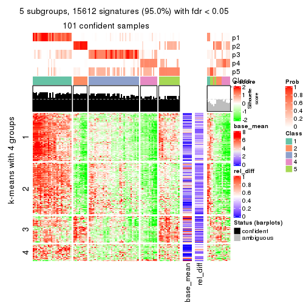
get_signatures(res, k = 6)
Signature heatmaps where rows are not scaled:
get_signatures(res, k = 2, scale_rows = FALSE)
get_signatures(res, k = 3, scale_rows = FALSE)
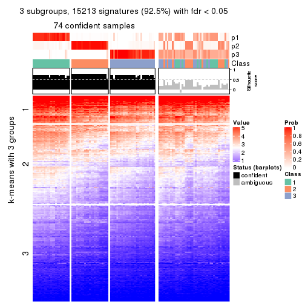
get_signatures(res, k = 4, scale_rows = FALSE)
get_signatures(res, k = 5, scale_rows = FALSE)
get_signatures(res, k = 6, scale_rows = FALSE)
Compare the overlap of signatures from different k:
compare_signatures(res)
get_signature() returns a data frame invisibly. TO get the list of signatures, the function
call should be assigned to a variable explicitly. In following code, if plot argument is set
to FALSE, no heatmap is plotted while only the differential analysis is performed.
# code only for demonstration
tb = get_signature(res, k = ..., plot = FALSE)
An example of the output of tb is:
#> which_row fdr mean_1 mean_2 scaled_mean_1 scaled_mean_2 km
#> 1 38 0.042760348 8.373488 9.131774 -0.5533452 0.5164555 1
#> 2 40 0.018707592 7.106213 8.469186 -0.6173731 0.5762149 1
#> 3 55 0.019134737 10.221463 11.207825 -0.6159697 0.5749050 1
#> 4 59 0.006059896 5.921854 7.869574 -0.6899429 0.6439467 1
#> 5 60 0.018055526 8.928898 10.211722 -0.6204761 0.5791110 1
#> 6 98 0.009384629 15.714769 14.887706 0.6635654 -0.6193277 2
...
The columns in tb are:
which_row: row indices corresponding to the input matrix.fdr: FDR for the differential test. mean_x: The mean value in group x.scaled_mean_x: The mean value in group x after rows are scaled.km: Row groups if k-means clustering is applied to rows.UMAP plot which shows how samples are separated.
dimension_reduction(res, k = 2, method = "UMAP")
dimension_reduction(res, k = 3, method = "UMAP")
dimension_reduction(res, k = 4, method = "UMAP")

dimension_reduction(res, k = 5, method = "UMAP")

dimension_reduction(res, k = 6, method = "UMAP")
Following heatmap shows how subgroups are split when increasing k:
collect_classes(res)
If matrix rows can be associated to genes, consider to use functional_enrichment(res,
...) to perform function enrichment for the signature genes. See this vignette for more detailed explanations.
The object with results only for a single top-value method and a single partition method can be extracted as:
res = res_list["SD", "NMF"]
# you can also extract it by
# res = res_list["SD:NMF"]
A summary of res and all the functions that can be applied to it:
res
#> A 'ConsensusPartition' object with k = 2, 3, 4, 5, 6.
#> On a matrix with 16442 rows and 117 columns.
#> Top rows (1000, 2000, 3000, 4000, 5000) are extracted by 'SD' method.
#> Subgroups are detected by 'NMF' method.
#> Performed in total 1250 partitions by row resampling.
#> Best k for subgroups seems to be 2.
#>
#> Following methods can be applied to this 'ConsensusPartition' object:
#> [1] "cola_report" "collect_classes" "collect_plots"
#> [4] "collect_stats" "colnames" "compare_signatures"
#> [7] "consensus_heatmap" "dimension_reduction" "functional_enrichment"
#> [10] "get_anno_col" "get_anno" "get_classes"
#> [13] "get_consensus" "get_matrix" "get_membership"
#> [16] "get_param" "get_signatures" "get_stats"
#> [19] "is_best_k" "is_stable_k" "membership_heatmap"
#> [22] "ncol" "nrow" "plot_ecdf"
#> [25] "rownames" "select_partition_number" "show"
#> [28] "suggest_best_k" "test_to_known_factors"
collect_plots() function collects all the plots made from res for all k (number of partitions)
into one single page to provide an easy and fast comparison between different k.
collect_plots(res)
The plots are:
k and the heatmap of
predicted classes for each k.k.k.k.All the plots in panels can be made by individual functions and they are plotted later in this section.
select_partition_number() produces several plots showing different
statistics for choosing “optimized” k. There are following statistics:
k;k, the area increased is defined as \(A_k - A_{k-1}\).The detailed explanations of these statistics can be found in the cola vignette.
Generally speaking, lower PAC score, higher mean silhouette score or higher
concordance corresponds to better partition. Rand index and Jaccard index
measure how similar the current partition is compared to partition with k-1.
If they are too similar, we won't accept k is better than k-1.
select_partition_number(res)
The numeric values for all these statistics can be obtained by get_stats().
get_stats(res)
#> k 1-PAC mean_silhouette concordance area_increased Rand Jaccard
#> 2 2 0.912 0.944 0.974 0.4137 0.607 0.607
#> 3 3 0.643 0.762 0.872 0.5717 0.698 0.516
#> 4 4 0.773 0.761 0.899 0.1107 0.906 0.738
#> 5 5 0.633 0.570 0.776 0.0595 0.944 0.814
#> 6 6 0.556 0.420 0.676 0.0528 0.872 0.563
suggest_best_k() suggests the best \(k\) based on these statistics. The rules are as follows:
suggest_best_k(res)
#> [1] 2
Following shows the table of the partitions (You need to click the show/hide
code output link to see it). The membership matrix (columns with name p*)
is inferred by
clue::cl_consensus()
function with the SE method. Basically the value in the membership matrix
represents the probability to belong to a certain group. The finall class
label for an item is determined with the group with highest probability it
belongs to.
In get_classes() function, the entropy is calculated from the membership
matrix and the silhouette score is calculated from the consensus matrix.
cbind(get_classes(res, k = 2), get_membership(res, k = 2))
#> class entropy silhouette p1 p2
#> SRR2443263 1 0.0000 0.965 1.000 0.000
#> SRR2443262 1 0.6048 0.823 0.852 0.148
#> SRR2443261 1 0.0000 0.965 1.000 0.000
#> SRR2443260 1 0.0000 0.965 1.000 0.000
#> SRR2443259 1 0.0000 0.965 1.000 0.000
#> SRR2443258 1 0.0000 0.965 1.000 0.000
#> SRR2443257 1 0.0000 0.965 1.000 0.000
#> SRR2443256 1 0.0000 0.965 1.000 0.000
#> SRR2443255 1 0.0000 0.965 1.000 0.000
#> SRR2443254 1 0.0000 0.965 1.000 0.000
#> SRR2443253 1 0.0000 0.965 1.000 0.000
#> SRR2443251 1 0.0000 0.965 1.000 0.000
#> SRR2443250 1 0.0000 0.965 1.000 0.000
#> SRR2443249 1 0.0000 0.965 1.000 0.000
#> SRR2443252 1 0.0000 0.965 1.000 0.000
#> SRR2443247 1 0.0000 0.965 1.000 0.000
#> SRR2443246 1 0.0000 0.965 1.000 0.000
#> SRR2443248 1 0.0000 0.965 1.000 0.000
#> SRR2443244 1 0.7674 0.732 0.776 0.224
#> SRR2443245 1 0.0000 0.965 1.000 0.000
#> SRR2443243 1 0.0000 0.965 1.000 0.000
#> SRR2443242 1 0.9491 0.477 0.632 0.368
#> SRR2443241 1 0.0938 0.955 0.988 0.012
#> SRR2443240 2 0.0000 0.999 0.000 1.000
#> SRR2443239 2 0.0000 0.999 0.000 1.000
#> SRR2443238 1 0.0000 0.965 1.000 0.000
#> SRR2443237 1 0.8016 0.703 0.756 0.244
#> SRR2443236 1 0.7453 0.748 0.788 0.212
#> SRR2443235 1 0.0000 0.965 1.000 0.000
#> SRR2443233 1 0.0000 0.965 1.000 0.000
#> SRR2443234 1 0.0000 0.965 1.000 0.000
#> SRR2443232 1 0.0000 0.965 1.000 0.000
#> SRR2443231 1 0.0000 0.965 1.000 0.000
#> SRR2443230 1 0.0000 0.965 1.000 0.000
#> SRR2443229 1 0.8861 0.607 0.696 0.304
#> SRR2443228 2 0.0000 0.999 0.000 1.000
#> SRR2443227 1 0.0000 0.965 1.000 0.000
#> SRR2443226 1 0.0000 0.965 1.000 0.000
#> SRR2443225 1 0.0000 0.965 1.000 0.000
#> SRR2443223 1 0.0000 0.965 1.000 0.000
#> SRR2443224 2 0.0000 0.999 0.000 1.000
#> SRR2443222 2 0.0000 0.999 0.000 1.000
#> SRR2443221 2 0.0000 0.999 0.000 1.000
#> SRR2443219 2 0.0000 0.999 0.000 1.000
#> SRR2443220 1 0.9522 0.470 0.628 0.372
#> SRR2443218 2 0.0000 0.999 0.000 1.000
#> SRR2443217 1 0.0000 0.965 1.000 0.000
#> SRR2443216 1 0.0000 0.965 1.000 0.000
#> SRR2443215 2 0.0000 0.999 0.000 1.000
#> SRR2443214 1 0.0000 0.965 1.000 0.000
#> SRR2443213 1 0.0000 0.965 1.000 0.000
#> SRR2443212 2 0.0000 0.999 0.000 1.000
#> SRR2443211 2 0.0000 0.999 0.000 1.000
#> SRR2443210 2 0.0000 0.999 0.000 1.000
#> SRR2443209 1 0.9323 0.524 0.652 0.348
#> SRR2443208 2 0.0000 0.999 0.000 1.000
#> SRR2443207 2 0.0000 0.999 0.000 1.000
#> SRR2443206 2 0.0000 0.999 0.000 1.000
#> SRR2443205 2 0.0000 0.999 0.000 1.000
#> SRR2443204 1 0.0000 0.965 1.000 0.000
#> SRR2443203 1 0.0000 0.965 1.000 0.000
#> SRR2443202 1 0.0000 0.965 1.000 0.000
#> SRR2443201 1 0.0000 0.965 1.000 0.000
#> SRR2443200 2 0.0000 0.999 0.000 1.000
#> SRR2443199 2 0.0000 0.999 0.000 1.000
#> SRR2443197 1 0.0000 0.965 1.000 0.000
#> SRR2443196 1 0.6887 0.783 0.816 0.184
#> SRR2443198 1 0.0000 0.965 1.000 0.000
#> SRR2443195 1 0.0000 0.965 1.000 0.000
#> SRR2443194 1 0.0000 0.965 1.000 0.000
#> SRR2443193 1 0.0000 0.965 1.000 0.000
#> SRR2443191 2 0.2043 0.964 0.032 0.968
#> SRR2443192 1 0.8813 0.614 0.700 0.300
#> SRR2443190 1 0.0000 0.965 1.000 0.000
#> SRR2443189 1 0.0000 0.965 1.000 0.000
#> SRR2443188 1 0.0000 0.965 1.000 0.000
#> SRR2443186 2 0.0000 0.999 0.000 1.000
#> SRR2443187 2 0.0000 0.999 0.000 1.000
#> SRR2443185 1 0.0000 0.965 1.000 0.000
#> SRR2443184 1 0.0000 0.965 1.000 0.000
#> SRR2443183 1 0.0000 0.965 1.000 0.000
#> SRR2443182 1 0.0000 0.965 1.000 0.000
#> SRR2443181 2 0.0000 0.999 0.000 1.000
#> SRR2443180 2 0.0000 0.999 0.000 1.000
#> SRR2443179 1 0.3584 0.907 0.932 0.068
#> SRR2443178 1 0.0000 0.965 1.000 0.000
#> SRR2443177 1 0.0000 0.965 1.000 0.000
#> SRR2443176 1 0.0000 0.965 1.000 0.000
#> SRR2443175 1 0.0000 0.965 1.000 0.000
#> SRR2443174 1 0.0000 0.965 1.000 0.000
#> SRR2443173 2 0.0000 0.999 0.000 1.000
#> SRR2443172 2 0.0000 0.999 0.000 1.000
#> SRR2443171 1 0.0000 0.965 1.000 0.000
#> SRR2443170 1 0.0000 0.965 1.000 0.000
#> SRR2443169 1 0.0000 0.965 1.000 0.000
#> SRR2443168 1 0.6712 0.794 0.824 0.176
#> SRR2443167 1 0.0000 0.965 1.000 0.000
#> SRR2443166 1 0.0000 0.965 1.000 0.000
#> SRR2443165 1 0.0000 0.965 1.000 0.000
#> SRR2443164 2 0.0000 0.999 0.000 1.000
#> SRR2443163 1 0.0000 0.965 1.000 0.000
#> SRR2443162 1 0.0000 0.965 1.000 0.000
#> SRR2443161 1 0.0000 0.965 1.000 0.000
#> SRR2443160 1 0.0000 0.965 1.000 0.000
#> SRR2443159 1 0.0000 0.965 1.000 0.000
#> SRR2443158 1 0.0000 0.965 1.000 0.000
#> SRR2443157 1 0.0000 0.965 1.000 0.000
#> SRR2443156 1 0.0000 0.965 1.000 0.000
#> SRR2443155 1 0.0000 0.965 1.000 0.000
#> SRR2443154 1 0.0000 0.965 1.000 0.000
#> SRR2443153 1 0.0000 0.965 1.000 0.000
#> SRR2443152 2 0.0000 0.999 0.000 1.000
#> SRR2443151 2 0.0000 0.999 0.000 1.000
#> SRR2443150 2 0.0000 0.999 0.000 1.000
#> SRR2443148 2 0.0000 0.999 0.000 1.000
#> SRR2443147 2 0.0000 0.999 0.000 1.000
#> SRR2443149 1 0.0000 0.965 1.000 0.000
cbind(get_classes(res, k = 3), get_membership(res, k = 3))
#> class entropy silhouette p1 p2 p3
#> SRR2443263 1 0.4235 0.6993 0.824 0.000 0.176
#> SRR2443262 3 0.6264 0.3608 0.004 0.380 0.616
#> SRR2443261 3 0.3091 0.8319 0.072 0.016 0.912
#> SRR2443260 3 0.2959 0.8325 0.100 0.000 0.900
#> SRR2443259 3 0.2711 0.8378 0.088 0.000 0.912
#> SRR2443258 3 0.2711 0.8378 0.088 0.000 0.912
#> SRR2443257 3 0.2772 0.8361 0.080 0.004 0.916
#> SRR2443256 1 0.6008 0.3635 0.628 0.000 0.372
#> SRR2443255 3 0.2711 0.8378 0.088 0.000 0.912
#> SRR2443254 1 0.6309 -0.0986 0.500 0.000 0.500
#> SRR2443253 3 0.2711 0.8378 0.088 0.000 0.912
#> SRR2443251 3 0.2625 0.8374 0.084 0.000 0.916
#> SRR2443250 3 0.3263 0.8126 0.040 0.048 0.912
#> SRR2443249 3 0.3148 0.8104 0.036 0.048 0.916
#> SRR2443252 3 0.3192 0.8255 0.112 0.000 0.888
#> SRR2443247 1 0.3941 0.7369 0.844 0.000 0.156
#> SRR2443246 1 0.3816 0.7400 0.852 0.000 0.148
#> SRR2443248 1 0.7828 0.0619 0.500 0.052 0.448
#> SRR2443244 1 0.5719 0.7106 0.792 0.156 0.052
#> SRR2443245 1 0.5591 0.4484 0.696 0.000 0.304
#> SRR2443243 1 0.0424 0.8545 0.992 0.000 0.008
#> SRR2443242 3 0.6294 0.4732 0.020 0.288 0.692
#> SRR2443241 1 0.1031 0.8455 0.976 0.000 0.024
#> SRR2443240 1 0.5947 0.7001 0.776 0.172 0.052
#> SRR2443239 2 0.0829 0.9459 0.004 0.984 0.012
#> SRR2443238 1 0.3482 0.8093 0.872 0.000 0.128
#> SRR2443237 3 0.5706 0.3746 0.000 0.320 0.680
#> SRR2443236 1 0.2200 0.8238 0.940 0.004 0.056
#> SRR2443235 1 0.0237 0.8555 0.996 0.000 0.004
#> SRR2443233 1 0.0237 0.8555 0.996 0.000 0.004
#> SRR2443234 1 0.0237 0.8555 0.996 0.000 0.004
#> SRR2443232 1 0.0000 0.8546 1.000 0.000 0.000
#> SRR2443231 1 0.0000 0.8546 1.000 0.000 0.000
#> SRR2443230 1 0.0237 0.8555 0.996 0.000 0.004
#> SRR2443229 1 0.6999 0.5422 0.680 0.268 0.052
#> SRR2443228 2 0.0000 0.9443 0.000 1.000 0.000
#> SRR2443227 1 0.0592 0.8531 0.988 0.000 0.012
#> SRR2443226 1 0.5216 0.5498 0.740 0.000 0.260
#> SRR2443225 1 0.1031 0.8477 0.976 0.000 0.024
#> SRR2443223 3 0.6286 0.1914 0.464 0.000 0.536
#> SRR2443224 2 0.2356 0.9007 0.072 0.928 0.000
#> SRR2443222 2 0.1860 0.9407 0.000 0.948 0.052
#> SRR2443221 2 0.2261 0.9367 0.000 0.932 0.068
#> SRR2443219 2 0.2356 0.9354 0.000 0.928 0.072
#> SRR2443220 3 0.3276 0.7968 0.024 0.068 0.908
#> SRR2443218 2 0.2165 0.9391 0.000 0.936 0.064
#> SRR2443217 1 0.0424 0.8550 0.992 0.000 0.008
#> SRR2443216 3 0.2711 0.8378 0.088 0.000 0.912
#> SRR2443215 2 0.2625 0.9307 0.000 0.916 0.084
#> SRR2443214 1 0.3816 0.7855 0.852 0.000 0.148
#> SRR2443213 1 0.0000 0.8546 1.000 0.000 0.000
#> SRR2443212 2 0.5181 0.8683 0.084 0.832 0.084
#> SRR2443211 2 0.1753 0.9220 0.048 0.952 0.000
#> SRR2443210 2 0.0000 0.9443 0.000 1.000 0.000
#> SRR2443209 1 0.4413 0.7722 0.860 0.104 0.036
#> SRR2443208 2 0.2096 0.9401 0.004 0.944 0.052
#> SRR2443207 2 0.0892 0.9458 0.000 0.980 0.020
#> SRR2443206 2 0.0237 0.9444 0.004 0.996 0.000
#> SRR2443205 2 0.0424 0.9438 0.008 0.992 0.000
#> SRR2443204 3 0.6192 0.4459 0.420 0.000 0.580
#> SRR2443203 3 0.6154 0.4712 0.408 0.000 0.592
#> SRR2443202 3 0.6204 0.4346 0.424 0.000 0.576
#> SRR2443201 3 0.2711 0.8378 0.088 0.000 0.912
#> SRR2443200 2 0.2711 0.9297 0.000 0.912 0.088
#> SRR2443199 2 0.2165 0.9384 0.000 0.936 0.064
#> SRR2443197 3 0.4750 0.7505 0.216 0.000 0.784
#> SRR2443196 3 0.4768 0.7189 0.100 0.052 0.848
#> SRR2443198 3 0.5785 0.6134 0.332 0.000 0.668
#> SRR2443195 1 0.2878 0.8003 0.904 0.000 0.096
#> SRR2443194 1 0.6045 0.2240 0.620 0.000 0.380
#> SRR2443193 1 0.0237 0.8555 0.996 0.000 0.004
#> SRR2443191 1 0.5473 0.7293 0.808 0.140 0.052
#> SRR2443192 1 0.8763 0.5378 0.588 0.196 0.216
#> SRR2443190 1 0.0237 0.8555 0.996 0.000 0.004
#> SRR2443189 3 0.5254 0.7071 0.264 0.000 0.736
#> SRR2443188 1 0.1411 0.8389 0.964 0.000 0.036
#> SRR2443186 2 0.0237 0.9444 0.004 0.996 0.000
#> SRR2443187 2 0.1878 0.9422 0.004 0.952 0.044
#> SRR2443185 3 0.2625 0.8374 0.084 0.000 0.916
#> SRR2443184 3 0.2711 0.8378 0.088 0.000 0.912
#> SRR2443183 1 0.0237 0.8555 0.996 0.000 0.004
#> SRR2443182 1 0.0237 0.8555 0.996 0.000 0.004
#> SRR2443181 2 0.2116 0.9419 0.012 0.948 0.040
#> SRR2443180 2 0.1289 0.9410 0.000 0.968 0.032
#> SRR2443179 3 0.5138 0.5960 0.252 0.000 0.748
#> SRR2443178 1 0.6260 0.2344 0.552 0.000 0.448
#> SRR2443177 1 0.2356 0.8160 0.928 0.000 0.072
#> SRR2443176 1 0.0747 0.8515 0.984 0.000 0.016
#> SRR2443175 1 0.0237 0.8555 0.996 0.000 0.004
#> SRR2443174 1 0.0237 0.8555 0.996 0.000 0.004
#> SRR2443173 2 0.0237 0.9444 0.004 0.996 0.000
#> SRR2443172 2 0.0000 0.9443 0.000 1.000 0.000
#> SRR2443171 1 0.0424 0.8538 0.992 0.000 0.008
#> SRR2443170 1 0.1289 0.8411 0.968 0.032 0.000
#> SRR2443169 1 0.0237 0.8555 0.996 0.000 0.004
#> SRR2443168 2 0.9191 -0.0728 0.424 0.428 0.148
#> SRR2443167 3 0.2625 0.8374 0.084 0.000 0.916
#> SRR2443166 3 0.2711 0.8378 0.088 0.000 0.912
#> SRR2443165 3 0.5254 0.7071 0.264 0.000 0.736
#> SRR2443164 2 0.0237 0.9439 0.000 0.996 0.004
#> SRR2443163 3 0.2860 0.8373 0.084 0.004 0.912
#> SRR2443162 3 0.3267 0.8231 0.116 0.000 0.884
#> SRR2443161 3 0.6244 0.2522 0.440 0.000 0.560
#> SRR2443160 3 0.2625 0.8374 0.084 0.000 0.916
#> SRR2443159 3 0.2625 0.8374 0.084 0.000 0.916
#> SRR2443158 3 0.6295 0.1359 0.472 0.000 0.528
#> SRR2443157 1 0.2796 0.8079 0.908 0.000 0.092
#> SRR2443156 1 0.0424 0.8538 0.992 0.000 0.008
#> SRR2443155 1 0.1411 0.8383 0.964 0.036 0.000
#> SRR2443154 1 0.3983 0.7440 0.852 0.004 0.144
#> SRR2443153 1 0.0237 0.8555 0.996 0.000 0.004
#> SRR2443152 2 0.0237 0.9444 0.004 0.996 0.000
#> SRR2443151 2 0.0237 0.9439 0.000 0.996 0.004
#> SRR2443150 2 0.0237 0.9444 0.004 0.996 0.000
#> SRR2443148 2 0.2711 0.9297 0.000 0.912 0.088
#> SRR2443147 2 0.3267 0.9078 0.000 0.884 0.116
#> SRR2443149 3 0.2711 0.8378 0.088 0.000 0.912
cbind(get_classes(res, k = 4), get_membership(res, k = 4))
#> class entropy silhouette p1 p2 p3 p4
#> SRR2443263 1 0.1936 0.8708 0.940 0.000 0.028 0.032
#> SRR2443262 3 0.0817 0.9148 0.000 0.024 0.976 0.000
#> SRR2443261 3 0.0000 0.9341 0.000 0.000 1.000 0.000
#> SRR2443260 3 0.0000 0.9341 0.000 0.000 1.000 0.000
#> SRR2443259 3 0.0000 0.9341 0.000 0.000 1.000 0.000
#> SRR2443258 3 0.0000 0.9341 0.000 0.000 1.000 0.000
#> SRR2443257 3 0.0000 0.9341 0.000 0.000 1.000 0.000
#> SRR2443256 1 0.4624 0.4626 0.660 0.000 0.340 0.000
#> SRR2443255 3 0.0000 0.9341 0.000 0.000 1.000 0.000
#> SRR2443254 3 0.1022 0.9043 0.032 0.000 0.968 0.000
#> SRR2443253 3 0.0000 0.9341 0.000 0.000 1.000 0.000
#> SRR2443251 3 0.0000 0.9341 0.000 0.000 1.000 0.000
#> SRR2443250 3 0.0000 0.9341 0.000 0.000 1.000 0.000
#> SRR2443249 3 0.0000 0.9341 0.000 0.000 1.000 0.000
#> SRR2443252 3 0.0000 0.9341 0.000 0.000 1.000 0.000
#> SRR2443247 1 0.0336 0.8905 0.992 0.000 0.008 0.000
#> SRR2443246 1 0.0524 0.8885 0.988 0.004 0.008 0.000
#> SRR2443248 3 0.1557 0.8870 0.000 0.056 0.944 0.000
#> SRR2443244 1 0.3528 0.7148 0.808 0.000 0.000 0.192
#> SRR2443245 1 0.5110 0.5130 0.656 0.000 0.016 0.328
#> SRR2443243 1 0.2589 0.8195 0.884 0.000 0.000 0.116
#> SRR2443242 3 0.0188 0.9313 0.000 0.004 0.996 0.000
#> SRR2443241 1 0.0000 0.8911 1.000 0.000 0.000 0.000
#> SRR2443240 1 0.4008 0.6027 0.756 0.244 0.000 0.000
#> SRR2443239 2 0.0336 0.8686 0.000 0.992 0.000 0.008
#> SRR2443238 1 0.4817 0.4175 0.612 0.000 0.000 0.388
#> SRR2443237 4 0.0000 0.6251 0.000 0.000 0.000 1.000
#> SRR2443236 1 0.0000 0.8911 1.000 0.000 0.000 0.000
#> SRR2443235 1 0.0469 0.8903 0.988 0.000 0.000 0.012
#> SRR2443233 1 0.0707 0.8883 0.980 0.000 0.000 0.020
#> SRR2443234 1 0.0707 0.8883 0.980 0.000 0.000 0.020
#> SRR2443232 1 0.0336 0.8910 0.992 0.000 0.000 0.008
#> SRR2443231 1 0.0000 0.8911 1.000 0.000 0.000 0.000
#> SRR2443230 1 0.0336 0.8910 0.992 0.000 0.000 0.008
#> SRR2443229 1 0.5839 0.5459 0.696 0.104 0.000 0.200
#> SRR2443228 2 0.1474 0.8482 0.000 0.948 0.000 0.052
#> SRR2443227 1 0.0657 0.8900 0.984 0.000 0.004 0.012
#> SRR2443226 1 0.5217 0.4167 0.608 0.000 0.012 0.380
#> SRR2443225 1 0.2813 0.8476 0.896 0.000 0.024 0.080
#> SRR2443223 3 0.1520 0.9031 0.024 0.020 0.956 0.000
#> SRR2443224 2 0.0707 0.8563 0.020 0.980 0.000 0.000
#> SRR2443222 2 0.1637 0.8447 0.000 0.940 0.000 0.060
#> SRR2443221 2 0.3649 0.7047 0.000 0.796 0.000 0.204
#> SRR2443219 2 0.4431 0.5462 0.000 0.696 0.000 0.304
#> SRR2443220 3 0.0000 0.9341 0.000 0.000 1.000 0.000
#> SRR2443218 2 0.4925 0.2764 0.000 0.572 0.000 0.428
#> SRR2443217 1 0.3626 0.7190 0.812 0.000 0.004 0.184
#> SRR2443216 3 0.0000 0.9341 0.000 0.000 1.000 0.000
#> SRR2443215 4 0.4830 0.1635 0.000 0.392 0.000 0.608
#> SRR2443214 4 0.5250 -0.0525 0.440 0.000 0.008 0.552
#> SRR2443213 1 0.0000 0.8911 1.000 0.000 0.000 0.000
#> SRR2443212 2 0.7777 -0.0682 0.304 0.428 0.000 0.268
#> SRR2443211 2 0.0817 0.8551 0.024 0.976 0.000 0.000
#> SRR2443210 2 0.0592 0.8660 0.000 0.984 0.000 0.016
#> SRR2443209 1 0.0188 0.8905 0.996 0.004 0.000 0.000
#> SRR2443208 2 0.3831 0.6715 0.004 0.792 0.000 0.204
#> SRR2443207 2 0.0000 0.8693 0.000 1.000 0.000 0.000
#> SRR2443206 2 0.0000 0.8693 0.000 1.000 0.000 0.000
#> SRR2443205 2 0.0188 0.8686 0.004 0.996 0.000 0.000
#> SRR2443204 3 0.6449 0.4866 0.152 0.000 0.644 0.204
#> SRR2443203 4 0.7845 0.1897 0.320 0.000 0.280 0.400
#> SRR2443202 4 0.6386 0.4667 0.212 0.000 0.140 0.648
#> SRR2443201 3 0.0000 0.9341 0.000 0.000 1.000 0.000
#> SRR2443200 4 0.4925 0.0763 0.000 0.428 0.000 0.572
#> SRR2443199 4 0.4933 0.0649 0.000 0.432 0.000 0.568
#> SRR2443197 3 0.4679 0.4964 0.000 0.000 0.648 0.352
#> SRR2443196 4 0.2469 0.5995 0.000 0.000 0.108 0.892
#> SRR2443198 3 0.5320 0.3429 0.012 0.000 0.572 0.416
#> SRR2443195 1 0.4978 0.4205 0.612 0.000 0.004 0.384
#> SRR2443194 1 0.6377 0.4767 0.632 0.000 0.256 0.112
#> SRR2443193 1 0.1209 0.8776 0.964 0.000 0.004 0.032
#> SRR2443191 1 0.0336 0.8892 0.992 0.008 0.000 0.000
#> SRR2443192 4 0.0921 0.6304 0.028 0.000 0.000 0.972
#> SRR2443190 1 0.0707 0.8883 0.980 0.000 0.000 0.020
#> SRR2443189 3 0.0188 0.9310 0.004 0.000 0.996 0.000
#> SRR2443188 1 0.0336 0.8910 0.992 0.000 0.000 0.008
#> SRR2443186 2 0.0000 0.8693 0.000 1.000 0.000 0.000
#> SRR2443187 2 0.0469 0.8676 0.000 0.988 0.000 0.012
#> SRR2443185 3 0.0000 0.9341 0.000 0.000 1.000 0.000
#> SRR2443184 3 0.0000 0.9341 0.000 0.000 1.000 0.000
#> SRR2443183 1 0.0592 0.8896 0.984 0.000 0.000 0.016
#> SRR2443182 1 0.0469 0.8903 0.988 0.000 0.000 0.012
#> SRR2443181 2 0.0336 0.8670 0.008 0.992 0.000 0.000
#> SRR2443180 2 0.4843 0.3614 0.000 0.604 0.000 0.396
#> SRR2443179 4 0.0336 0.6264 0.000 0.000 0.008 0.992
#> SRR2443178 4 0.2149 0.6187 0.088 0.000 0.000 0.912
#> SRR2443177 1 0.2984 0.8246 0.888 0.000 0.084 0.028
#> SRR2443176 1 0.2867 0.8086 0.884 0.000 0.104 0.012
#> SRR2443175 1 0.0188 0.8911 0.996 0.000 0.004 0.000
#> SRR2443174 1 0.0000 0.8911 1.000 0.000 0.000 0.000
#> SRR2443173 2 0.0000 0.8693 0.000 1.000 0.000 0.000
#> SRR2443172 2 0.0000 0.8693 0.000 1.000 0.000 0.000
#> SRR2443171 1 0.0188 0.8905 0.996 0.004 0.000 0.000
#> SRR2443170 1 0.0188 0.8905 0.996 0.004 0.000 0.000
#> SRR2443169 1 0.0000 0.8911 1.000 0.000 0.000 0.000
#> SRR2443168 2 0.3813 0.6510 0.148 0.828 0.024 0.000
#> SRR2443167 3 0.0707 0.9204 0.000 0.000 0.980 0.020
#> SRR2443166 3 0.0000 0.9341 0.000 0.000 1.000 0.000
#> SRR2443165 3 0.6275 0.4963 0.104 0.000 0.640 0.256
#> SRR2443164 2 0.0921 0.8612 0.000 0.972 0.000 0.028
#> SRR2443163 3 0.0000 0.9341 0.000 0.000 1.000 0.000
#> SRR2443162 3 0.0000 0.9341 0.000 0.000 1.000 0.000
#> SRR2443161 3 0.0000 0.9341 0.000 0.000 1.000 0.000
#> SRR2443160 3 0.0000 0.9341 0.000 0.000 1.000 0.000
#> SRR2443159 3 0.0000 0.9341 0.000 0.000 1.000 0.000
#> SRR2443158 3 0.4356 0.5201 0.292 0.000 0.708 0.000
#> SRR2443157 1 0.1488 0.8769 0.956 0.000 0.032 0.012
#> SRR2443156 1 0.0188 0.8905 0.996 0.004 0.000 0.000
#> SRR2443155 1 0.0921 0.8777 0.972 0.028 0.000 0.000
#> SRR2443154 1 0.0921 0.8778 0.972 0.028 0.000 0.000
#> SRR2443153 1 0.0000 0.8911 1.000 0.000 0.000 0.000
#> SRR2443152 2 0.0000 0.8693 0.000 1.000 0.000 0.000
#> SRR2443151 2 0.0188 0.8687 0.000 0.996 0.000 0.004
#> SRR2443150 2 0.0000 0.8693 0.000 1.000 0.000 0.000
#> SRR2443148 4 0.3172 0.5303 0.000 0.160 0.000 0.840
#> SRR2443147 4 0.4746 0.3448 0.000 0.304 0.008 0.688
#> SRR2443149 3 0.0000 0.9341 0.000 0.000 1.000 0.000
cbind(get_classes(res, k = 5), get_membership(res, k = 5))
#> class entropy silhouette p1 p2 p3 p4 p5
#> SRR2443263 1 0.4846 0.3808 0.588 0.000 0.028 0.384 0.000
#> SRR2443262 3 0.1041 0.8761 0.000 0.004 0.964 0.000 0.032
#> SRR2443261 3 0.0290 0.8839 0.000 0.000 0.992 0.000 0.008
#> SRR2443260 3 0.0404 0.8832 0.000 0.000 0.988 0.000 0.012
#> SRR2443259 3 0.0162 0.8841 0.000 0.000 0.996 0.000 0.004
#> SRR2443258 3 0.0162 0.8841 0.000 0.000 0.996 0.000 0.004
#> SRR2443257 3 0.0162 0.8836 0.000 0.000 0.996 0.004 0.000
#> SRR2443256 1 0.4875 0.2889 0.576 0.000 0.400 0.004 0.020
#> SRR2443255 3 0.0579 0.8827 0.008 0.000 0.984 0.000 0.008
#> SRR2443254 3 0.2694 0.8309 0.032 0.000 0.888 0.004 0.076
#> SRR2443253 3 0.0162 0.8836 0.000 0.000 0.996 0.004 0.000
#> SRR2443251 3 0.0000 0.8839 0.000 0.000 1.000 0.000 0.000
#> SRR2443250 3 0.0162 0.8843 0.000 0.000 0.996 0.000 0.004
#> SRR2443249 3 0.0000 0.8839 0.000 0.000 1.000 0.000 0.000
#> SRR2443252 3 0.0404 0.8832 0.000 0.000 0.988 0.000 0.012
#> SRR2443247 1 0.1124 0.7202 0.960 0.000 0.000 0.004 0.036
#> SRR2443246 1 0.5509 0.5552 0.704 0.032 0.076 0.004 0.184
#> SRR2443248 3 0.2929 0.8032 0.000 0.012 0.856 0.004 0.128
#> SRR2443244 1 0.5822 0.3463 0.592 0.004 0.000 0.112 0.292
#> SRR2443245 1 0.4440 0.4927 0.660 0.000 0.012 0.324 0.004
#> SRR2443243 1 0.4015 0.4743 0.652 0.000 0.000 0.348 0.000
#> SRR2443242 3 0.4714 0.3718 0.012 0.000 0.576 0.004 0.408
#> SRR2443241 1 0.2766 0.7003 0.884 0.084 0.000 0.008 0.024
#> SRR2443240 1 0.4894 0.2542 0.520 0.456 0.000 0.024 0.000
#> SRR2443239 5 0.5036 -0.1610 0.036 0.404 0.000 0.000 0.560
#> SRR2443238 1 0.4537 0.3868 0.592 0.000 0.000 0.396 0.012
#> SRR2443237 4 0.4743 0.2541 0.008 0.000 0.008 0.568 0.416
#> SRR2443236 1 0.3934 0.6873 0.824 0.064 0.000 0.020 0.092
#> SRR2443235 1 0.1430 0.7182 0.944 0.000 0.000 0.052 0.004
#> SRR2443233 1 0.3048 0.6470 0.820 0.000 0.000 0.176 0.004
#> SRR2443234 1 0.2488 0.6862 0.872 0.000 0.000 0.124 0.004
#> SRR2443232 1 0.0898 0.7263 0.972 0.000 0.000 0.008 0.020
#> SRR2443231 1 0.0162 0.7244 0.996 0.000 0.000 0.004 0.000
#> SRR2443230 1 0.0290 0.7245 0.992 0.000 0.000 0.000 0.008
#> SRR2443229 5 0.5935 0.2054 0.340 0.004 0.092 0.004 0.560
#> SRR2443228 2 0.3241 0.7034 0.000 0.832 0.000 0.024 0.144
#> SRR2443227 1 0.0693 0.7246 0.980 0.000 0.000 0.012 0.008
#> SRR2443226 1 0.5394 0.3905 0.580 0.000 0.008 0.364 0.048
#> SRR2443225 1 0.3711 0.6674 0.820 0.000 0.032 0.012 0.136
#> SRR2443223 3 0.1731 0.8667 0.012 0.040 0.940 0.008 0.000
#> SRR2443224 2 0.1168 0.7175 0.008 0.960 0.000 0.000 0.032
#> SRR2443222 2 0.3723 0.6895 0.000 0.804 0.000 0.044 0.152
#> SRR2443221 2 0.4571 0.6348 0.000 0.736 0.000 0.076 0.188
#> SRR2443219 5 0.4420 0.3134 0.000 0.040 0.080 0.080 0.800
#> SRR2443220 3 0.0162 0.8843 0.000 0.000 0.996 0.000 0.004
#> SRR2443218 2 0.6337 0.2827 0.000 0.500 0.000 0.320 0.180
#> SRR2443217 5 0.5928 0.0110 0.420 0.000 0.080 0.008 0.492
#> SRR2443216 3 0.0000 0.8839 0.000 0.000 1.000 0.000 0.000
#> SRR2443215 5 0.1270 0.2995 0.000 0.000 0.000 0.052 0.948
#> SRR2443214 1 0.5756 0.4659 0.620 0.000 0.000 0.176 0.204
#> SRR2443213 1 0.0703 0.7229 0.976 0.000 0.000 0.000 0.024
#> SRR2443212 2 0.8371 -0.1414 0.256 0.304 0.000 0.140 0.300
#> SRR2443211 2 0.1124 0.7035 0.036 0.960 0.000 0.004 0.000
#> SRR2443210 2 0.2561 0.7124 0.000 0.856 0.000 0.000 0.144
#> SRR2443209 1 0.4904 0.4277 0.644 0.036 0.000 0.004 0.316
#> SRR2443208 5 0.4922 -0.2082 0.020 0.424 0.000 0.004 0.552
#> SRR2443207 2 0.4088 0.5427 0.000 0.632 0.000 0.000 0.368
#> SRR2443206 2 0.4030 0.5529 0.000 0.648 0.000 0.000 0.352
#> SRR2443205 2 0.2149 0.6921 0.048 0.916 0.000 0.000 0.036
#> SRR2443204 3 0.6083 0.4608 0.204 0.000 0.632 0.140 0.024
#> SRR2443203 4 0.4953 0.3428 0.284 0.000 0.048 0.664 0.004
#> SRR2443202 4 0.3854 0.4873 0.080 0.000 0.100 0.816 0.004
#> SRR2443201 3 0.1357 0.8694 0.000 0.000 0.948 0.048 0.004
#> SRR2443200 5 0.6500 -0.0684 0.000 0.400 0.000 0.188 0.412
#> SRR2443199 5 0.6185 0.1663 0.000 0.264 0.000 0.188 0.548
#> SRR2443197 3 0.4138 0.4528 0.000 0.000 0.616 0.384 0.000
#> SRR2443196 4 0.6299 0.2991 0.000 0.000 0.156 0.464 0.380
#> SRR2443198 3 0.5693 0.2164 0.032 0.000 0.512 0.428 0.028
#> SRR2443195 1 0.4350 0.3788 0.588 0.000 0.000 0.408 0.004
#> SRR2443194 1 0.5939 0.2781 0.536 0.000 0.120 0.344 0.000
#> SRR2443193 1 0.5315 0.0806 0.500 0.000 0.040 0.004 0.456
#> SRR2443191 1 0.5084 0.3656 0.616 0.052 0.000 0.000 0.332
#> SRR2443192 5 0.5264 -0.1885 0.052 0.000 0.000 0.392 0.556
#> SRR2443190 1 0.1282 0.7197 0.952 0.000 0.000 0.044 0.004
#> SRR2443189 3 0.4126 0.7319 0.104 0.000 0.796 0.004 0.096
#> SRR2443188 1 0.1410 0.7186 0.940 0.000 0.000 0.000 0.060
#> SRR2443186 2 0.4182 0.4771 0.000 0.600 0.000 0.000 0.400
#> SRR2443187 2 0.4256 0.4272 0.000 0.564 0.000 0.000 0.436
#> SRR2443185 3 0.0510 0.8812 0.000 0.000 0.984 0.016 0.000
#> SRR2443184 3 0.1041 0.8767 0.004 0.000 0.964 0.032 0.000
#> SRR2443183 1 0.0794 0.7247 0.972 0.000 0.000 0.028 0.000
#> SRR2443182 1 0.0404 0.7246 0.988 0.000 0.000 0.012 0.000
#> SRR2443181 2 0.4183 0.6002 0.084 0.780 0.000 0.000 0.136
#> SRR2443180 2 0.5413 0.5447 0.000 0.664 0.000 0.164 0.172
#> SRR2443179 4 0.2370 0.4706 0.000 0.000 0.040 0.904 0.056
#> SRR2443178 4 0.3988 0.4747 0.196 0.000 0.000 0.768 0.036
#> SRR2443177 1 0.6504 0.2330 0.528 0.000 0.192 0.008 0.272
#> SRR2443176 1 0.4901 0.5542 0.716 0.000 0.168 0.000 0.116
#> SRR2443175 1 0.2488 0.6845 0.872 0.000 0.000 0.004 0.124
#> SRR2443174 1 0.0404 0.7243 0.988 0.000 0.000 0.000 0.012
#> SRR2443173 2 0.0794 0.7240 0.000 0.972 0.000 0.000 0.028
#> SRR2443172 2 0.0000 0.7227 0.000 1.000 0.000 0.000 0.000
#> SRR2443171 1 0.2286 0.6925 0.888 0.108 0.000 0.004 0.000
#> SRR2443170 1 0.3550 0.6038 0.760 0.236 0.000 0.004 0.000
#> SRR2443169 1 0.0290 0.7241 0.992 0.000 0.000 0.000 0.008
#> SRR2443168 2 0.1430 0.7137 0.000 0.944 0.004 0.000 0.052
#> SRR2443167 3 0.3305 0.7117 0.000 0.000 0.776 0.224 0.000
#> SRR2443166 3 0.1251 0.8686 0.036 0.000 0.956 0.000 0.008
#> SRR2443165 4 0.5271 -0.0779 0.432 0.000 0.048 0.520 0.000
#> SRR2443164 2 0.3788 0.6971 0.000 0.820 0.004 0.072 0.104
#> SRR2443163 3 0.0566 0.8825 0.000 0.004 0.984 0.012 0.000
#> SRR2443162 3 0.3577 0.7108 0.160 0.000 0.808 0.032 0.000
#> SRR2443161 3 0.2890 0.7353 0.160 0.000 0.836 0.004 0.000
#> SRR2443160 3 0.3336 0.7073 0.000 0.000 0.772 0.228 0.000
#> SRR2443159 3 0.0963 0.8734 0.000 0.000 0.964 0.036 0.000
#> SRR2443158 1 0.5989 0.2554 0.536 0.000 0.336 0.128 0.000
#> SRR2443157 1 0.3993 0.5948 0.756 0.000 0.028 0.216 0.000
#> SRR2443156 1 0.3798 0.6668 0.816 0.120 0.000 0.060 0.004
#> SRR2443155 1 0.2890 0.6674 0.836 0.160 0.000 0.004 0.000
#> SRR2443154 1 0.4691 0.5311 0.680 0.276 0.000 0.044 0.000
#> SRR2443153 1 0.0162 0.7244 0.996 0.000 0.000 0.000 0.004
#> SRR2443152 2 0.0324 0.7221 0.004 0.992 0.000 0.000 0.004
#> SRR2443151 2 0.2179 0.7186 0.000 0.888 0.000 0.000 0.112
#> SRR2443150 2 0.0000 0.7227 0.000 1.000 0.000 0.000 0.000
#> SRR2443148 4 0.5118 0.1868 0.000 0.040 0.000 0.548 0.412
#> SRR2443147 4 0.5942 0.1167 0.000 0.052 0.024 0.476 0.448
#> SRR2443149 3 0.1526 0.8698 0.004 0.004 0.948 0.004 0.040
cbind(get_classes(res, k = 6), get_membership(res, k = 6))
#> class entropy silhouette p1 p2 p3 p4 p5 p6
#> SRR2443263 1 0.4517 0.2650 0.616 0.000 0.008 0.016 0.008 0.352
#> SRR2443262 3 0.2152 0.7572 0.012 0.000 0.920 0.016 0.028 0.024
#> SRR2443261 3 0.1296 0.7683 0.000 0.000 0.952 0.004 0.032 0.012
#> SRR2443260 3 0.1700 0.7672 0.000 0.000 0.928 0.000 0.048 0.024
#> SRR2443259 3 0.2448 0.7596 0.000 0.000 0.884 0.000 0.064 0.052
#> SRR2443258 3 0.3098 0.7483 0.012 0.000 0.852 0.000 0.068 0.068
#> SRR2443257 3 0.1944 0.7641 0.000 0.000 0.924 0.036 0.016 0.024
#> SRR2443256 3 0.6135 0.1622 0.380 0.000 0.484 0.004 0.060 0.072
#> SRR2443255 3 0.2645 0.7612 0.008 0.000 0.880 0.000 0.056 0.056
#> SRR2443254 3 0.3093 0.7512 0.032 0.000 0.864 0.004 0.064 0.036
#> SRR2443253 3 0.3076 0.7420 0.016 0.000 0.872 0.048 0.036 0.028
#> SRR2443251 3 0.0964 0.7717 0.000 0.000 0.968 0.004 0.016 0.012
#> SRR2443250 3 0.1877 0.7601 0.008 0.000 0.932 0.012 0.024 0.024
#> SRR2443249 3 0.1167 0.7659 0.000 0.000 0.960 0.012 0.008 0.020
#> SRR2443252 3 0.2488 0.7566 0.000 0.000 0.880 0.000 0.076 0.044
#> SRR2443247 1 0.3911 0.5296 0.804 0.000 0.088 0.000 0.068 0.040
#> SRR2443246 1 0.6810 0.0733 0.468 0.024 0.228 0.000 0.256 0.024
#> SRR2443248 3 0.2765 0.7577 0.008 0.016 0.876 0.004 0.088 0.008
#> SRR2443244 1 0.6013 0.0511 0.436 0.000 0.000 0.148 0.400 0.016
#> SRR2443245 6 0.4647 0.4094 0.316 0.000 0.020 0.008 0.016 0.640
#> SRR2443243 1 0.4114 0.0516 0.532 0.000 0.000 0.004 0.004 0.460
#> SRR2443242 5 0.5327 -0.0326 0.004 0.004 0.464 0.024 0.472 0.032
#> SRR2443241 1 0.3672 0.5550 0.776 0.056 0.000 0.000 0.168 0.000
#> SRR2443240 1 0.6440 0.2784 0.512 0.324 0.000 0.020 0.100 0.044
#> SRR2443239 5 0.4355 0.4584 0.032 0.108 0.052 0.016 0.788 0.004
#> SRR2443238 6 0.5300 0.4236 0.304 0.000 0.000 0.048 0.044 0.604
#> SRR2443237 6 0.6049 -0.1175 0.008 0.000 0.004 0.264 0.212 0.512
#> SRR2443236 1 0.3997 0.4869 0.688 0.020 0.000 0.000 0.288 0.004
#> SRR2443235 1 0.3404 0.4925 0.760 0.000 0.000 0.000 0.016 0.224
#> SRR2443233 1 0.4493 0.1055 0.548 0.004 0.000 0.000 0.024 0.424
#> SRR2443234 1 0.3601 0.3835 0.684 0.000 0.000 0.000 0.004 0.312
#> SRR2443232 1 0.4751 0.4583 0.680 0.004 0.000 0.000 0.108 0.208
#> SRR2443231 1 0.0972 0.6020 0.964 0.000 0.000 0.000 0.008 0.028
#> SRR2443230 1 0.5517 0.1388 0.520 0.000 0.004 0.000 0.124 0.352
#> SRR2443229 5 0.4616 0.5285 0.068 0.008 0.172 0.008 0.736 0.008
#> SRR2443228 2 0.3044 0.6116 0.000 0.836 0.000 0.116 0.048 0.000
#> SRR2443227 1 0.3500 0.5043 0.768 0.000 0.000 0.000 0.028 0.204
#> SRR2443226 6 0.5599 0.3863 0.276 0.000 0.008 0.000 0.152 0.564
#> SRR2443225 5 0.6849 -0.0315 0.380 0.000 0.052 0.020 0.420 0.128
#> SRR2443223 3 0.3429 0.7363 0.024 0.052 0.860 0.020 0.032 0.012
#> SRR2443224 2 0.2122 0.6357 0.024 0.900 0.000 0.000 0.076 0.000
#> SRR2443222 2 0.3493 0.5764 0.000 0.796 0.000 0.148 0.056 0.000
#> SRR2443221 2 0.5115 -0.1267 0.000 0.460 0.000 0.460 0.080 0.000
#> SRR2443219 5 0.6594 0.1762 0.000 0.008 0.180 0.300 0.476 0.036
#> SRR2443220 3 0.1261 0.7707 0.000 0.004 0.956 0.004 0.028 0.008
#> SRR2443218 4 0.4354 0.4523 0.000 0.236 0.000 0.704 0.052 0.008
#> SRR2443217 5 0.4838 0.5239 0.136 0.000 0.168 0.000 0.688 0.008
#> SRR2443216 3 0.4320 0.5936 0.004 0.000 0.688 0.004 0.036 0.268
#> SRR2443215 5 0.3801 0.3951 0.000 0.000 0.036 0.128 0.800 0.036
#> SRR2443214 6 0.6937 0.1353 0.240 0.000 0.004 0.048 0.324 0.384
#> SRR2443213 1 0.2912 0.5666 0.784 0.000 0.000 0.000 0.216 0.000
#> SRR2443212 4 0.7848 0.1265 0.260 0.256 0.000 0.328 0.140 0.016
#> SRR2443211 1 0.5509 0.0784 0.496 0.416 0.000 0.012 0.068 0.008
#> SRR2443210 2 0.2905 0.6255 0.000 0.852 0.000 0.084 0.064 0.000
#> SRR2443209 1 0.4283 0.4513 0.676 0.028 0.004 0.000 0.288 0.004
#> SRR2443208 5 0.6371 0.0265 0.020 0.356 0.000 0.080 0.496 0.048
#> SRR2443207 2 0.4872 0.3461 0.000 0.548 0.000 0.064 0.388 0.000
#> SRR2443206 2 0.5004 0.3329 0.004 0.516 0.000 0.060 0.420 0.000
#> SRR2443205 2 0.5649 0.3136 0.284 0.568 0.000 0.016 0.132 0.000
#> SRR2443204 6 0.6211 0.4705 0.212 0.000 0.168 0.000 0.056 0.564
#> SRR2443203 6 0.4464 0.4694 0.132 0.000 0.024 0.076 0.008 0.760
#> SRR2443202 6 0.5303 -0.0373 0.032 0.000 0.016 0.380 0.020 0.552
#> SRR2443201 3 0.5717 0.5173 0.004 0.004 0.640 0.080 0.056 0.216
#> SRR2443200 4 0.5757 0.1921 0.000 0.376 0.000 0.468 0.152 0.004
#> SRR2443199 4 0.5524 0.4782 0.000 0.144 0.000 0.592 0.252 0.012
#> SRR2443197 6 0.4516 0.3789 0.008 0.000 0.276 0.048 0.000 0.668
#> SRR2443196 4 0.6480 0.3538 0.000 0.000 0.052 0.468 0.152 0.328
#> SRR2443198 6 0.6875 0.2819 0.024 0.000 0.260 0.168 0.048 0.500
#> SRR2443195 6 0.4570 0.2975 0.376 0.000 0.000 0.028 0.008 0.588
#> SRR2443194 6 0.5216 0.4256 0.300 0.000 0.088 0.012 0.000 0.600
#> SRR2443193 5 0.5699 0.4832 0.188 0.000 0.128 0.000 0.632 0.052
#> SRR2443191 1 0.4487 0.4608 0.672 0.036 0.000 0.008 0.280 0.004
#> SRR2443192 5 0.5614 -0.0382 0.012 0.000 0.000 0.328 0.540 0.120
#> SRR2443190 1 0.3658 0.4940 0.752 0.000 0.000 0.000 0.032 0.216
#> SRR2443189 3 0.6722 0.1406 0.048 0.000 0.444 0.004 0.320 0.184
#> SRR2443188 1 0.4443 0.3189 0.596 0.000 0.000 0.000 0.368 0.036
#> SRR2443186 2 0.4911 0.3426 0.000 0.524 0.000 0.064 0.412 0.000
#> SRR2443187 5 0.4957 -0.2042 0.000 0.412 0.000 0.068 0.520 0.000
#> SRR2443185 3 0.3895 0.5890 0.004 0.000 0.708 0.008 0.008 0.272
#> SRR2443184 6 0.4866 -0.1232 0.016 0.000 0.472 0.000 0.028 0.484
#> SRR2443183 1 0.2350 0.5974 0.888 0.000 0.000 0.000 0.036 0.076
#> SRR2443182 1 0.1285 0.5977 0.944 0.000 0.000 0.000 0.004 0.052
#> SRR2443181 2 0.6323 0.1014 0.368 0.376 0.000 0.012 0.244 0.000
#> SRR2443180 4 0.4709 0.1413 0.000 0.412 0.000 0.540 0.048 0.000
#> SRR2443179 4 0.4370 0.3822 0.000 0.000 0.008 0.616 0.020 0.356
#> SRR2443178 4 0.6070 0.0169 0.148 0.000 0.000 0.452 0.020 0.380
#> SRR2443177 5 0.6903 0.3142 0.252 0.000 0.196 0.000 0.464 0.088
#> SRR2443176 1 0.7686 -0.1308 0.328 0.000 0.160 0.004 0.256 0.252
#> SRR2443175 1 0.4609 0.4416 0.648 0.000 0.048 0.000 0.296 0.008
#> SRR2443174 1 0.1719 0.6076 0.924 0.000 0.000 0.000 0.060 0.016
#> SRR2443173 2 0.0146 0.6601 0.004 0.996 0.000 0.000 0.000 0.000
#> SRR2443172 2 0.0653 0.6607 0.004 0.980 0.004 0.000 0.012 0.000
#> SRR2443171 1 0.2933 0.5925 0.860 0.096 0.004 0.000 0.032 0.008
#> SRR2443170 1 0.3230 0.5606 0.776 0.212 0.000 0.000 0.000 0.012
#> SRR2443169 1 0.1151 0.6009 0.956 0.000 0.012 0.000 0.000 0.032
#> SRR2443168 2 0.1483 0.6596 0.008 0.944 0.012 0.000 0.036 0.000
#> SRR2443167 6 0.6163 0.0882 0.000 0.000 0.360 0.156 0.024 0.460
#> SRR2443166 3 0.5016 0.5765 0.036 0.000 0.668 0.000 0.060 0.236
#> SRR2443165 6 0.4648 0.4633 0.272 0.000 0.024 0.036 0.000 0.668
#> SRR2443164 2 0.4999 0.4458 0.000 0.696 0.036 0.212 0.040 0.016
#> SRR2443163 3 0.2623 0.7466 0.000 0.004 0.892 0.048 0.028 0.028
#> SRR2443162 3 0.6114 0.1439 0.220 0.000 0.516 0.004 0.012 0.248
#> SRR2443161 3 0.5168 0.5415 0.184 0.016 0.688 0.000 0.016 0.096
#> SRR2443160 3 0.6347 -0.0829 0.000 0.000 0.388 0.204 0.020 0.388
#> SRR2443159 3 0.4027 0.6674 0.000 0.000 0.772 0.052 0.020 0.156
#> SRR2443158 1 0.5825 0.2107 0.592 0.004 0.200 0.004 0.012 0.188
#> SRR2443157 1 0.4560 0.2182 0.592 0.000 0.028 0.000 0.008 0.372
#> SRR2443156 1 0.5283 0.5368 0.728 0.096 0.000 0.036 0.080 0.060
#> SRR2443155 1 0.2851 0.5852 0.844 0.132 0.000 0.000 0.020 0.004
#> SRR2443154 1 0.3695 0.5325 0.732 0.244 0.000 0.000 0.000 0.024
#> SRR2443153 1 0.3789 0.5076 0.760 0.000 0.004 0.000 0.040 0.196
#> SRR2443152 2 0.1765 0.6455 0.024 0.924 0.000 0.000 0.052 0.000
#> SRR2443151 2 0.2519 0.6348 0.000 0.884 0.004 0.068 0.044 0.000
#> SRR2443150 2 0.0146 0.6601 0.004 0.996 0.000 0.000 0.000 0.000
#> SRR2443148 4 0.3424 0.5255 0.000 0.000 0.000 0.812 0.092 0.096
#> SRR2443147 4 0.3087 0.5128 0.000 0.004 0.056 0.864 0.052 0.024
#> SRR2443149 3 0.3309 0.7338 0.004 0.000 0.824 0.000 0.116 0.056
Heatmaps for the consensus matrix. It visualizes the probability of two samples to be in a same group.
consensus_heatmap(res, k = 2)
consensus_heatmap(res, k = 3)
consensus_heatmap(res, k = 4)
consensus_heatmap(res, k = 5)
consensus_heatmap(res, k = 6)
Heatmaps for the membership of samples in all partitions to see how consistent they are:
membership_heatmap(res, k = 2)
membership_heatmap(res, k = 3)
membership_heatmap(res, k = 4)
membership_heatmap(res, k = 5)
membership_heatmap(res, k = 6)
As soon as we have had the classes for columns, we can look for signatures which are significantly different between classes which can be candidate marks for certain classes. Following are the heatmaps for signatures.
Signature heatmaps where rows are scaled:
get_signatures(res, k = 2)
get_signatures(res, k = 3)
get_signatures(res, k = 4)
get_signatures(res, k = 5)
get_signatures(res, k = 6)
Signature heatmaps where rows are not scaled:
get_signatures(res, k = 2, scale_rows = FALSE)
get_signatures(res, k = 3, scale_rows = FALSE)
get_signatures(res, k = 4, scale_rows = FALSE)
get_signatures(res, k = 5, scale_rows = FALSE)
get_signatures(res, k = 6, scale_rows = FALSE)
Compare the overlap of signatures from different k:
compare_signatures(res)
get_signature() returns a data frame invisibly. TO get the list of signatures, the function
call should be assigned to a variable explicitly. In following code, if plot argument is set
to FALSE, no heatmap is plotted while only the differential analysis is performed.
# code only for demonstration
tb = get_signature(res, k = ..., plot = FALSE)
An example of the output of tb is:
#> which_row fdr mean_1 mean_2 scaled_mean_1 scaled_mean_2 km
#> 1 38 0.042760348 8.373488 9.131774 -0.5533452 0.5164555 1
#> 2 40 0.018707592 7.106213 8.469186 -0.6173731 0.5762149 1
#> 3 55 0.019134737 10.221463 11.207825 -0.6159697 0.5749050 1
#> 4 59 0.006059896 5.921854 7.869574 -0.6899429 0.6439467 1
#> 5 60 0.018055526 8.928898 10.211722 -0.6204761 0.5791110 1
#> 6 98 0.009384629 15.714769 14.887706 0.6635654 -0.6193277 2
...
The columns in tb are:
which_row: row indices corresponding to the input matrix.fdr: FDR for the differential test. mean_x: The mean value in group x.scaled_mean_x: The mean value in group x after rows are scaled.km: Row groups if k-means clustering is applied to rows.UMAP plot which shows how samples are separated.
dimension_reduction(res, k = 2, method = "UMAP")
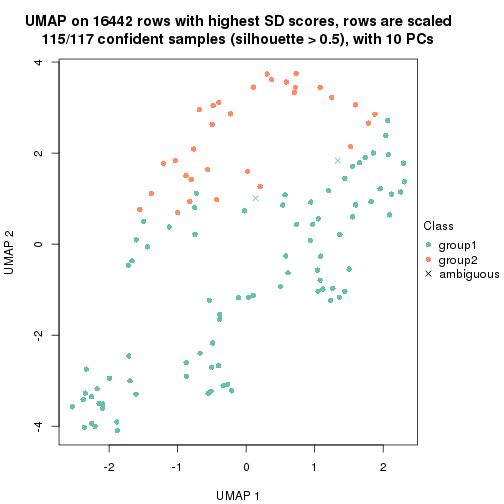
dimension_reduction(res, k = 3, method = "UMAP")
dimension_reduction(res, k = 4, method = "UMAP")
dimension_reduction(res, k = 5, method = "UMAP")
dimension_reduction(res, k = 6, method = "UMAP")
Following heatmap shows how subgroups are split when increasing k:
collect_classes(res)
If matrix rows can be associated to genes, consider to use functional_enrichment(res,
...) to perform function enrichment for the signature genes. See this vignette for more detailed explanations.
The object with results only for a single top-value method and a single partition method can be extracted as:
res = res_list["CV", "hclust"]
# you can also extract it by
# res = res_list["CV:hclust"]
A summary of res and all the functions that can be applied to it:
res
#> A 'ConsensusPartition' object with k = 2, 3, 4, 5, 6.
#> On a matrix with 16442 rows and 117 columns.
#> Top rows (1000, 2000, 3000, 4000, 5000) are extracted by 'CV' method.
#> Subgroups are detected by 'hclust' method.
#> Performed in total 1250 partitions by row resampling.
#> Best k for subgroups seems to be 2.
#>
#> Following methods can be applied to this 'ConsensusPartition' object:
#> [1] "cola_report" "collect_classes" "collect_plots"
#> [4] "collect_stats" "colnames" "compare_signatures"
#> [7] "consensus_heatmap" "dimension_reduction" "functional_enrichment"
#> [10] "get_anno_col" "get_anno" "get_classes"
#> [13] "get_consensus" "get_matrix" "get_membership"
#> [16] "get_param" "get_signatures" "get_stats"
#> [19] "is_best_k" "is_stable_k" "membership_heatmap"
#> [22] "ncol" "nrow" "plot_ecdf"
#> [25] "rownames" "select_partition_number" "show"
#> [28] "suggest_best_k" "test_to_known_factors"
collect_plots() function collects all the plots made from res for all k (number of partitions)
into one single page to provide an easy and fast comparison between different k.
collect_plots(res)
The plots are:
k and the heatmap of
predicted classes for each k.k.k.k.All the plots in panels can be made by individual functions and they are plotted later in this section.
select_partition_number() produces several plots showing different
statistics for choosing “optimized” k. There are following statistics:
k;k, the area increased is defined as \(A_k - A_{k-1}\).The detailed explanations of these statistics can be found in the cola vignette.
Generally speaking, lower PAC score, higher mean silhouette score or higher
concordance corresponds to better partition. Rand index and Jaccard index
measure how similar the current partition is compared to partition with k-1.
If they are too similar, we won't accept k is better than k-1.
select_partition_number(res)
The numeric values for all these statistics can be obtained by get_stats().
get_stats(res)
#> k 1-PAC mean_silhouette concordance area_increased Rand Jaccard
#> 2 2 0.326 0.656 0.797 0.4203 0.564 0.564
#> 3 3 0.413 0.649 0.815 0.3668 0.723 0.549
#> 4 4 0.436 0.612 0.768 0.1561 0.923 0.807
#> 5 5 0.470 0.560 0.735 0.0685 0.935 0.817
#> 6 6 0.506 0.451 0.682 0.0706 0.904 0.697
suggest_best_k() suggests the best \(k\) based on these statistics. The rules are as follows:
suggest_best_k(res)
#> [1] 2
Following shows the table of the partitions (You need to click the show/hide
code output link to see it). The membership matrix (columns with name p*)
is inferred by
clue::cl_consensus()
function with the SE method. Basically the value in the membership matrix
represents the probability to belong to a certain group. The finall class
label for an item is determined with the group with highest probability it
belongs to.
In get_classes() function, the entropy is calculated from the membership
matrix and the silhouette score is calculated from the consensus matrix.
cbind(get_classes(res, k = 2), get_membership(res, k = 2))
#> class entropy silhouette p1 p2
#> SRR2443263 2 0.9996 0.0151 0.488 0.512
#> SRR2443262 2 0.0376 0.8082 0.004 0.996
#> SRR2443261 2 0.0672 0.8080 0.008 0.992
#> SRR2443260 2 0.9963 0.1200 0.464 0.536
#> SRR2443259 2 0.9988 0.0523 0.480 0.520
#> SRR2443258 2 0.9963 0.1196 0.464 0.536
#> SRR2443257 2 0.0000 0.8078 0.000 1.000
#> SRR2443256 1 0.9998 0.0399 0.508 0.492
#> SRR2443255 2 0.9963 0.1200 0.464 0.536
#> SRR2443254 2 0.9922 0.1775 0.448 0.552
#> SRR2443253 2 0.0000 0.8078 0.000 1.000
#> SRR2443251 2 0.0672 0.8080 0.008 0.992
#> SRR2443250 2 0.0376 0.8082 0.004 0.996
#> SRR2443249 2 0.0376 0.8082 0.004 0.996
#> SRR2443252 2 0.9963 0.1200 0.464 0.536
#> SRR2443247 1 0.5294 0.7656 0.880 0.120
#> SRR2443246 1 0.5842 0.7595 0.860 0.140
#> SRR2443248 2 0.6247 0.7305 0.156 0.844
#> SRR2443244 2 0.0672 0.8080 0.008 0.992
#> SRR2443245 1 0.7528 0.7246 0.784 0.216
#> SRR2443243 1 0.4939 0.7731 0.892 0.108
#> SRR2443242 2 0.4022 0.7798 0.080 0.920
#> SRR2443241 2 0.8327 0.6189 0.264 0.736
#> SRR2443240 2 0.7674 0.6644 0.224 0.776
#> SRR2443239 2 0.0672 0.8080 0.008 0.992
#> SRR2443238 1 0.8327 0.6702 0.736 0.264
#> SRR2443237 2 0.2236 0.8001 0.036 0.964
#> SRR2443236 1 0.7219 0.7382 0.800 0.200
#> SRR2443235 1 0.1843 0.7833 0.972 0.028
#> SRR2443233 1 0.0376 0.7810 0.996 0.004
#> SRR2443234 1 0.0000 0.7788 1.000 0.000
#> SRR2443232 1 0.0376 0.7809 0.996 0.004
#> SRR2443231 1 0.0000 0.7788 1.000 0.000
#> SRR2443230 1 0.0672 0.7821 0.992 0.008
#> SRR2443229 2 0.9170 0.5036 0.332 0.668
#> SRR2443228 2 0.0000 0.8078 0.000 1.000
#> SRR2443227 1 0.0000 0.7788 1.000 0.000
#> SRR2443226 1 0.8713 0.6405 0.708 0.292
#> SRR2443225 2 0.9850 0.2547 0.428 0.572
#> SRR2443223 2 0.0376 0.8082 0.004 0.996
#> SRR2443224 2 0.0376 0.8083 0.004 0.996
#> SRR2443222 2 0.0000 0.8078 0.000 1.000
#> SRR2443221 2 0.0000 0.8078 0.000 1.000
#> SRR2443219 2 0.0672 0.8080 0.008 0.992
#> SRR2443220 2 0.0376 0.8082 0.004 0.996
#> SRR2443218 2 0.0000 0.8078 0.000 1.000
#> SRR2443217 2 0.9170 0.5056 0.332 0.668
#> SRR2443216 2 0.9552 0.3925 0.376 0.624
#> SRR2443215 2 0.1633 0.8028 0.024 0.976
#> SRR2443214 1 0.9358 0.5118 0.648 0.352
#> SRR2443213 1 0.0000 0.7788 1.000 0.000
#> SRR2443212 2 0.6623 0.7155 0.172 0.828
#> SRR2443211 2 0.7674 0.6644 0.224 0.776
#> SRR2443210 2 0.0000 0.8078 0.000 1.000
#> SRR2443209 2 0.9170 0.5056 0.332 0.668
#> SRR2443208 2 0.7674 0.6662 0.224 0.776
#> SRR2443207 2 0.0000 0.8078 0.000 1.000
#> SRR2443206 2 0.0000 0.8078 0.000 1.000
#> SRR2443205 2 0.0938 0.8067 0.012 0.988
#> SRR2443204 1 0.7528 0.7246 0.784 0.216
#> SRR2443203 2 0.8443 0.5987 0.272 0.728
#> SRR2443202 2 0.6148 0.7309 0.152 0.848
#> SRR2443201 2 0.6247 0.7279 0.156 0.844
#> SRR2443200 2 0.0000 0.8078 0.000 1.000
#> SRR2443199 2 0.0000 0.8078 0.000 1.000
#> SRR2443197 2 0.2043 0.8010 0.032 0.968
#> SRR2443196 2 0.0376 0.8073 0.004 0.996
#> SRR2443198 2 0.3584 0.7860 0.068 0.932
#> SRR2443195 1 0.7602 0.7213 0.780 0.220
#> SRR2443194 2 0.8499 0.5922 0.276 0.724
#> SRR2443193 1 0.7453 0.7277 0.788 0.212
#> SRR2443191 2 0.8327 0.6189 0.264 0.736
#> SRR2443192 2 0.4815 0.7666 0.104 0.896
#> SRR2443190 1 0.0376 0.7810 0.996 0.004
#> SRR2443189 1 0.8713 0.6405 0.708 0.292
#> SRR2443188 1 0.0000 0.7788 1.000 0.000
#> SRR2443186 2 0.0000 0.8078 0.000 1.000
#> SRR2443187 2 0.0000 0.8078 0.000 1.000
#> SRR2443185 2 0.3733 0.7838 0.072 0.928
#> SRR2443184 2 0.9248 0.4741 0.340 0.660
#> SRR2443183 1 0.0376 0.7810 0.996 0.004
#> SRR2443182 1 0.7674 0.7120 0.776 0.224
#> SRR2443181 2 0.0376 0.8083 0.004 0.996
#> SRR2443180 2 0.0000 0.8078 0.000 1.000
#> SRR2443179 2 0.0000 0.8078 0.000 1.000
#> SRR2443178 2 0.9833 0.2483 0.424 0.576
#> SRR2443177 1 0.8713 0.6405 0.708 0.292
#> SRR2443176 2 1.0000 -0.0407 0.500 0.500
#> SRR2443175 1 0.6148 0.7532 0.848 0.152
#> SRR2443174 1 0.0672 0.7821 0.992 0.008
#> SRR2443173 2 0.0000 0.8078 0.000 1.000
#> SRR2443172 2 0.0000 0.8078 0.000 1.000
#> SRR2443171 1 0.0672 0.7821 0.992 0.008
#> SRR2443170 1 0.9209 0.5470 0.664 0.336
#> SRR2443169 1 0.0672 0.7821 0.992 0.008
#> SRR2443168 2 0.8608 0.5886 0.284 0.716
#> SRR2443167 2 0.0000 0.8078 0.000 1.000
#> SRR2443166 1 0.9000 0.5927 0.684 0.316
#> SRR2443165 2 0.9358 0.4452 0.352 0.648
#> SRR2443164 2 0.0000 0.8078 0.000 1.000
#> SRR2443163 2 0.0938 0.8072 0.012 0.988
#> SRR2443162 1 0.9996 0.0586 0.512 0.488
#> SRR2443161 2 0.9983 0.0710 0.476 0.524
#> SRR2443160 2 0.0000 0.8078 0.000 1.000
#> SRR2443159 2 0.0000 0.8078 0.000 1.000
#> SRR2443158 2 0.9963 0.1190 0.464 0.536
#> SRR2443157 1 0.7299 0.7314 0.796 0.204
#> SRR2443156 2 0.7815 0.6558 0.232 0.768
#> SRR2443155 1 0.9170 0.5552 0.668 0.332
#> SRR2443154 1 0.9661 0.4027 0.608 0.392
#> SRR2443153 1 0.0000 0.7788 1.000 0.000
#> SRR2443152 2 0.0000 0.8078 0.000 1.000
#> SRR2443151 2 0.0000 0.8078 0.000 1.000
#> SRR2443150 2 0.0000 0.8078 0.000 1.000
#> SRR2443148 2 0.0000 0.8078 0.000 1.000
#> SRR2443147 2 0.0000 0.8078 0.000 1.000
#> SRR2443149 2 0.9866 0.2329 0.432 0.568
cbind(get_classes(res, k = 3), get_membership(res, k = 3))
#> class entropy silhouette p1 p2 p3
#> SRR2443263 3 0.5803 0.72903 0.028 0.212 0.760
#> SRR2443262 2 0.0892 0.84846 0.000 0.980 0.020
#> SRR2443261 2 0.1163 0.84727 0.000 0.972 0.028
#> SRR2443260 3 0.5292 0.72120 0.008 0.228 0.764
#> SRR2443259 3 0.5680 0.72717 0.024 0.212 0.764
#> SRR2443258 3 0.5115 0.72116 0.004 0.228 0.768
#> SRR2443257 2 0.0592 0.84704 0.000 0.988 0.012
#> SRR2443256 3 0.5792 0.72277 0.036 0.192 0.772
#> SRR2443255 3 0.5292 0.72120 0.008 0.228 0.764
#> SRR2443254 3 0.5058 0.70900 0.000 0.244 0.756
#> SRR2443253 2 0.0424 0.84741 0.000 0.992 0.008
#> SRR2443251 2 0.1163 0.84727 0.000 0.972 0.028
#> SRR2443250 2 0.0892 0.84846 0.000 0.980 0.020
#> SRR2443249 2 0.0892 0.84846 0.000 0.980 0.020
#> SRR2443252 3 0.5292 0.72120 0.008 0.228 0.764
#> SRR2443247 1 0.7007 0.61493 0.724 0.100 0.176
#> SRR2443246 1 0.7916 0.48827 0.636 0.100 0.264
#> SRR2443248 2 0.5760 0.43233 0.000 0.672 0.328
#> SRR2443244 2 0.2448 0.82177 0.000 0.924 0.076
#> SRR2443245 3 0.3686 0.46404 0.140 0.000 0.860
#> SRR2443243 3 0.5859 0.09146 0.344 0.000 0.656
#> SRR2443242 2 0.5024 0.66088 0.004 0.776 0.220
#> SRR2443241 2 0.6518 -0.08283 0.004 0.512 0.484
#> SRR2443240 2 0.6180 0.18778 0.000 0.584 0.416
#> SRR2443239 2 0.2448 0.82177 0.000 0.924 0.076
#> SRR2443238 3 0.2448 0.51617 0.076 0.000 0.924
#> SRR2443237 2 0.3816 0.75623 0.000 0.852 0.148
#> SRR2443236 3 0.4883 0.37859 0.208 0.004 0.788
#> SRR2443235 1 0.5465 0.72797 0.712 0.000 0.288
#> SRR2443233 1 0.4346 0.80759 0.816 0.000 0.184
#> SRR2443234 1 0.3551 0.82016 0.868 0.000 0.132
#> SRR2443232 1 0.3038 0.81979 0.896 0.000 0.104
#> SRR2443231 1 0.3482 0.81971 0.872 0.000 0.128
#> SRR2443230 1 0.1529 0.79570 0.960 0.000 0.040
#> SRR2443229 3 0.6225 0.35144 0.000 0.432 0.568
#> SRR2443228 2 0.0000 0.84724 0.000 1.000 0.000
#> SRR2443227 1 0.3551 0.81915 0.868 0.000 0.132
#> SRR2443226 3 0.5117 0.57694 0.108 0.060 0.832
#> SRR2443225 3 0.6019 0.64467 0.012 0.288 0.700
#> SRR2443223 2 0.1289 0.84609 0.000 0.968 0.032
#> SRR2443224 2 0.1411 0.84384 0.000 0.964 0.036
#> SRR2443222 2 0.0000 0.84724 0.000 1.000 0.000
#> SRR2443221 2 0.0000 0.84724 0.000 1.000 0.000
#> SRR2443219 2 0.2356 0.82464 0.000 0.928 0.072
#> SRR2443220 2 0.1289 0.84609 0.000 0.968 0.032
#> SRR2443218 2 0.0000 0.84724 0.000 1.000 0.000
#> SRR2443217 3 0.6442 0.34846 0.004 0.432 0.564
#> SRR2443216 3 0.5882 0.57713 0.000 0.348 0.652
#> SRR2443215 2 0.2796 0.81485 0.000 0.908 0.092
#> SRR2443214 3 0.4379 0.60529 0.060 0.072 0.868
#> SRR2443213 1 0.3482 0.81971 0.872 0.000 0.128
#> SRR2443212 2 0.6062 0.28094 0.000 0.616 0.384
#> SRR2443211 2 0.6168 0.20152 0.000 0.588 0.412
#> SRR2443210 2 0.0000 0.84724 0.000 1.000 0.000
#> SRR2443209 3 0.6442 0.34846 0.004 0.432 0.564
#> SRR2443208 2 0.6274 0.00697 0.000 0.544 0.456
#> SRR2443207 2 0.0592 0.84817 0.000 0.988 0.012
#> SRR2443206 2 0.0592 0.84817 0.000 0.988 0.012
#> SRR2443205 2 0.1753 0.83614 0.000 0.952 0.048
#> SRR2443204 3 0.3686 0.46404 0.140 0.000 0.860
#> SRR2443203 2 0.6495 -0.04491 0.004 0.536 0.460
#> SRR2443202 2 0.5529 0.51466 0.000 0.704 0.296
#> SRR2443201 2 0.5560 0.50747 0.000 0.700 0.300
#> SRR2443200 2 0.0000 0.84724 0.000 1.000 0.000
#> SRR2443199 2 0.0000 0.84724 0.000 1.000 0.000
#> SRR2443197 2 0.3349 0.78915 0.004 0.888 0.108
#> SRR2443196 2 0.0829 0.84666 0.004 0.984 0.012
#> SRR2443198 2 0.3941 0.73490 0.000 0.844 0.156
#> SRR2443195 3 0.3551 0.46715 0.132 0.000 0.868
#> SRR2443194 2 0.6302 -0.11859 0.000 0.520 0.480
#> SRR2443193 3 0.4178 0.44765 0.172 0.000 0.828
#> SRR2443191 2 0.6518 -0.08283 0.004 0.512 0.484
#> SRR2443192 2 0.5178 0.60741 0.000 0.744 0.256
#> SRR2443190 1 0.3816 0.81705 0.852 0.000 0.148
#> SRR2443189 3 0.5117 0.57694 0.108 0.060 0.832
#> SRR2443188 1 0.3686 0.81927 0.860 0.000 0.140
#> SRR2443186 2 0.0592 0.84817 0.000 0.988 0.012
#> SRR2443187 2 0.0592 0.84817 0.000 0.988 0.012
#> SRR2443185 2 0.4062 0.73045 0.000 0.836 0.164
#> SRR2443184 3 0.6126 0.47398 0.000 0.400 0.600
#> SRR2443183 1 0.3816 0.81705 0.852 0.000 0.148
#> SRR2443182 1 0.8848 0.17943 0.504 0.124 0.372
#> SRR2443181 2 0.1411 0.84384 0.000 0.964 0.036
#> SRR2443180 2 0.0000 0.84724 0.000 1.000 0.000
#> SRR2443179 2 0.0000 0.84724 0.000 1.000 0.000
#> SRR2443178 3 0.7140 0.44097 0.040 0.328 0.632
#> SRR2443177 3 0.5117 0.57694 0.108 0.060 0.832
#> SRR2443176 3 0.6927 0.72098 0.060 0.240 0.700
#> SRR2443175 1 0.8111 0.46012 0.624 0.112 0.264
#> SRR2443174 1 0.1643 0.79964 0.956 0.000 0.044
#> SRR2443173 2 0.0892 0.84813 0.000 0.980 0.020
#> SRR2443172 2 0.0892 0.84813 0.000 0.980 0.020
#> SRR2443171 1 0.3879 0.74641 0.848 0.000 0.152
#> SRR2443170 3 0.9287 0.45540 0.304 0.188 0.508
#> SRR2443169 1 0.1289 0.79214 0.968 0.000 0.032
#> SRR2443168 3 0.6518 0.18731 0.004 0.484 0.512
#> SRR2443167 2 0.0424 0.84741 0.000 0.992 0.008
#> SRR2443166 3 0.9029 0.31664 0.352 0.144 0.504
#> SRR2443165 3 0.5905 0.57624 0.000 0.352 0.648
#> SRR2443164 2 0.0000 0.84724 0.000 1.000 0.000
#> SRR2443163 2 0.1163 0.84743 0.000 0.972 0.028
#> SRR2443162 3 0.5850 0.72068 0.040 0.188 0.772
#> SRR2443161 3 0.5551 0.72436 0.016 0.224 0.760
#> SRR2443160 2 0.0424 0.84741 0.000 0.992 0.008
#> SRR2443159 2 0.0592 0.84704 0.000 0.988 0.012
#> SRR2443158 3 0.5536 0.71818 0.012 0.236 0.752
#> SRR2443157 1 0.8561 0.25000 0.528 0.104 0.368
#> SRR2443156 2 0.6204 0.16090 0.000 0.576 0.424
#> SRR2443155 3 0.9250 0.45172 0.304 0.184 0.512
#> SRR2443154 3 0.9333 0.50795 0.268 0.216 0.516
#> SRR2443153 1 0.3192 0.80890 0.888 0.000 0.112
#> SRR2443152 2 0.0892 0.84813 0.000 0.980 0.020
#> SRR2443151 2 0.0000 0.84724 0.000 1.000 0.000
#> SRR2443150 2 0.0892 0.84813 0.000 0.980 0.020
#> SRR2443148 2 0.0000 0.84724 0.000 1.000 0.000
#> SRR2443147 2 0.0424 0.84741 0.000 0.992 0.008
#> SRR2443149 3 0.5656 0.69160 0.008 0.264 0.728
cbind(get_classes(res, k = 4), get_membership(res, k = 4))
#> class entropy silhouette p1 p2 p3 p4
#> SRR2443263 3 0.2928 0.58698 0.012 0.028 0.904 0.056
#> SRR2443262 4 0.2647 0.80527 0.000 0.000 0.120 0.880
#> SRR2443261 4 0.2647 0.80529 0.000 0.000 0.120 0.880
#> SRR2443260 3 0.2335 0.59913 0.000 0.020 0.920 0.060
#> SRR2443259 3 0.1398 0.58294 0.004 0.000 0.956 0.040
#> SRR2443258 3 0.2142 0.59767 0.000 0.016 0.928 0.056
#> SRR2443257 4 0.2011 0.81211 0.000 0.000 0.080 0.920
#> SRR2443256 3 0.2400 0.55963 0.012 0.028 0.928 0.032
#> SRR2443255 3 0.2335 0.59913 0.000 0.020 0.920 0.060
#> SRR2443254 3 0.2973 0.60492 0.000 0.020 0.884 0.096
#> SRR2443253 4 0.1940 0.81207 0.000 0.000 0.076 0.924
#> SRR2443251 4 0.2814 0.80153 0.000 0.000 0.132 0.868
#> SRR2443250 4 0.2530 0.80694 0.000 0.000 0.112 0.888
#> SRR2443249 4 0.2530 0.80694 0.000 0.000 0.112 0.888
#> SRR2443252 3 0.2489 0.60184 0.000 0.020 0.912 0.068
#> SRR2443247 1 0.6158 0.56814 0.664 0.076 0.252 0.008
#> SRR2443246 1 0.7024 0.46145 0.572 0.120 0.300 0.008
#> SRR2443248 4 0.5597 0.16278 0.000 0.020 0.464 0.516
#> SRR2443244 4 0.3217 0.78907 0.000 0.012 0.128 0.860
#> SRR2443245 2 0.6157 0.83550 0.108 0.660 0.232 0.000
#> SRR2443243 2 0.7096 0.53234 0.332 0.524 0.144 0.000
#> SRR2443242 4 0.5298 0.62539 0.000 0.048 0.244 0.708
#> SRR2443241 3 0.7684 0.17960 0.000 0.216 0.392 0.392
#> SRR2443240 4 0.7478 0.19884 0.000 0.256 0.240 0.504
#> SRR2443239 4 0.3217 0.78907 0.000 0.012 0.128 0.860
#> SRR2443238 2 0.4552 0.77260 0.044 0.784 0.172 0.000
#> SRR2443237 4 0.4514 0.73476 0.000 0.056 0.148 0.796
#> SRR2443236 2 0.3707 0.54540 0.132 0.840 0.028 0.000
#> SRR2443235 1 0.5222 0.57580 0.688 0.280 0.032 0.000
#> SRR2443233 1 0.3791 0.69967 0.796 0.200 0.004 0.000
#> SRR2443234 1 0.2814 0.72969 0.868 0.132 0.000 0.000
#> SRR2443232 1 0.2943 0.74519 0.892 0.076 0.032 0.000
#> SRR2443231 1 0.2589 0.73232 0.884 0.116 0.000 0.000
#> SRR2443230 1 0.2996 0.72755 0.892 0.044 0.064 0.000
#> SRR2443229 3 0.7807 0.40847 0.000 0.288 0.420 0.292
#> SRR2443228 4 0.0188 0.80841 0.000 0.004 0.000 0.996
#> SRR2443227 1 0.2647 0.73123 0.880 0.120 0.000 0.000
#> SRR2443226 2 0.6414 0.78795 0.056 0.632 0.292 0.020
#> SRR2443225 3 0.7499 0.33554 0.008 0.256 0.540 0.196
#> SRR2443223 4 0.2814 0.80156 0.000 0.000 0.132 0.868
#> SRR2443224 4 0.4624 0.73934 0.000 0.052 0.164 0.784
#> SRR2443222 4 0.0188 0.80841 0.000 0.004 0.000 0.996
#> SRR2443221 4 0.0188 0.80841 0.000 0.004 0.000 0.996
#> SRR2443219 4 0.3088 0.79194 0.000 0.008 0.128 0.864
#> SRR2443220 4 0.2469 0.80882 0.000 0.000 0.108 0.892
#> SRR2443218 4 0.0188 0.80841 0.000 0.004 0.000 0.996
#> SRR2443217 3 0.7796 0.41346 0.000 0.292 0.424 0.284
#> SRR2443216 3 0.3933 0.59140 0.000 0.008 0.792 0.200
#> SRR2443215 4 0.3910 0.77399 0.000 0.024 0.156 0.820
#> SRR2443214 3 0.6256 -0.01331 0.044 0.324 0.616 0.016
#> SRR2443213 1 0.2589 0.73232 0.884 0.116 0.000 0.000
#> SRR2443212 4 0.6510 0.20452 0.000 0.080 0.380 0.540
#> SRR2443211 4 0.7297 0.26144 0.000 0.244 0.220 0.536
#> SRR2443210 4 0.0188 0.80841 0.000 0.004 0.000 0.996
#> SRR2443209 3 0.7796 0.41346 0.000 0.292 0.424 0.284
#> SRR2443208 4 0.6926 -0.08413 0.000 0.108 0.432 0.460
#> SRR2443207 4 0.2197 0.80793 0.000 0.024 0.048 0.928
#> SRR2443206 4 0.1182 0.80837 0.000 0.016 0.016 0.968
#> SRR2443205 4 0.2675 0.80177 0.000 0.048 0.044 0.908
#> SRR2443204 2 0.6157 0.83550 0.108 0.660 0.232 0.000
#> SRR2443203 3 0.5488 0.13139 0.000 0.016 0.532 0.452
#> SRR2443202 4 0.4897 0.48019 0.000 0.008 0.332 0.660
#> SRR2443201 4 0.5112 0.42520 0.000 0.008 0.384 0.608
#> SRR2443200 4 0.0188 0.80841 0.000 0.004 0.000 0.996
#> SRR2443199 4 0.0188 0.80841 0.000 0.004 0.000 0.996
#> SRR2443197 4 0.3539 0.75946 0.000 0.004 0.176 0.820
#> SRR2443196 4 0.1398 0.81522 0.000 0.004 0.040 0.956
#> SRR2443198 4 0.4018 0.69612 0.000 0.004 0.224 0.772
#> SRR2443195 2 0.6050 0.83497 0.100 0.668 0.232 0.000
#> SRR2443194 3 0.5360 0.21069 0.000 0.012 0.552 0.436
#> SRR2443193 2 0.6790 0.80905 0.168 0.604 0.228 0.000
#> SRR2443191 4 0.7684 -0.22086 0.000 0.216 0.392 0.392
#> SRR2443192 4 0.5619 0.57111 0.000 0.056 0.268 0.676
#> SRR2443190 1 0.3300 0.72806 0.848 0.144 0.008 0.000
#> SRR2443189 2 0.6414 0.78795 0.056 0.632 0.292 0.020
#> SRR2443188 1 0.2814 0.72770 0.868 0.132 0.000 0.000
#> SRR2443186 4 0.2197 0.80793 0.000 0.024 0.048 0.928
#> SRR2443187 4 0.1297 0.80921 0.000 0.016 0.020 0.964
#> SRR2443185 4 0.4511 0.66788 0.000 0.008 0.268 0.724
#> SRR2443184 3 0.4328 0.57196 0.000 0.008 0.748 0.244
#> SRR2443183 1 0.3351 0.72743 0.844 0.148 0.008 0.000
#> SRR2443182 1 0.7578 0.22975 0.440 0.124 0.420 0.016
#> SRR2443181 4 0.4624 0.73934 0.000 0.052 0.164 0.784
#> SRR2443180 4 0.0188 0.80841 0.000 0.004 0.000 0.996
#> SRR2443179 4 0.0376 0.80945 0.000 0.004 0.004 0.992
#> SRR2443178 3 0.8885 0.19021 0.048 0.308 0.368 0.276
#> SRR2443177 2 0.6574 0.74148 0.056 0.600 0.324 0.020
#> SRR2443176 3 0.6306 0.52521 0.040 0.120 0.720 0.120
#> SRR2443175 1 0.7177 0.44762 0.560 0.120 0.308 0.012
#> SRR2443174 1 0.2483 0.73255 0.916 0.032 0.052 0.000
#> SRR2443173 4 0.4307 0.75496 0.000 0.048 0.144 0.808
#> SRR2443172 4 0.4307 0.75496 0.000 0.048 0.144 0.808
#> SRR2443171 1 0.4982 0.65410 0.772 0.092 0.136 0.000
#> SRR2443170 3 0.8541 0.01256 0.240 0.324 0.404 0.032
#> SRR2443169 1 0.2773 0.71860 0.900 0.028 0.072 0.000
#> SRR2443168 3 0.7067 0.43886 0.000 0.160 0.552 0.288
#> SRR2443167 4 0.2345 0.81001 0.000 0.000 0.100 0.900
#> SRR2443166 3 0.7134 0.06887 0.296 0.096 0.584 0.024
#> SRR2443165 3 0.4799 0.57025 0.000 0.032 0.744 0.224
#> SRR2443164 4 0.0188 0.80841 0.000 0.004 0.000 0.996
#> SRR2443163 4 0.2814 0.80167 0.000 0.000 0.132 0.868
#> SRR2443162 3 0.2301 0.55337 0.012 0.028 0.932 0.028
#> SRR2443161 3 0.2877 0.59522 0.008 0.028 0.904 0.060
#> SRR2443160 4 0.2216 0.81104 0.000 0.000 0.092 0.908
#> SRR2443159 4 0.2011 0.81211 0.000 0.000 0.080 0.920
#> SRR2443158 3 0.3245 0.60415 0.008 0.028 0.884 0.080
#> SRR2443157 1 0.7329 0.25906 0.456 0.120 0.416 0.008
#> SRR2443156 4 0.7479 0.18741 0.000 0.252 0.244 0.504
#> SRR2443155 3 0.8392 0.00103 0.240 0.328 0.408 0.024
#> SRR2443154 3 0.8699 0.08669 0.208 0.344 0.400 0.048
#> SRR2443153 1 0.3392 0.73200 0.872 0.056 0.072 0.000
#> SRR2443152 4 0.4307 0.75496 0.000 0.048 0.144 0.808
#> SRR2443151 4 0.0188 0.80841 0.000 0.004 0.000 0.996
#> SRR2443150 4 0.4307 0.75496 0.000 0.048 0.144 0.808
#> SRR2443148 4 0.0376 0.80945 0.000 0.004 0.004 0.992
#> SRR2443147 4 0.1557 0.81382 0.000 0.000 0.056 0.944
#> SRR2443149 3 0.2266 0.60745 0.000 0.004 0.912 0.084
cbind(get_classes(res, k = 5), get_membership(res, k = 5))
#> class entropy silhouette p1 p2 p3 p4 p5
#> SRR2443263 3 0.2436 0.5132 0.000 0.020 0.912 0.032 0.036
#> SRR2443262 4 0.2629 0.7703 0.000 0.000 0.136 0.860 0.004
#> SRR2443261 4 0.2629 0.7703 0.000 0.000 0.136 0.860 0.004
#> SRR2443260 3 0.1932 0.5309 0.004 0.020 0.936 0.032 0.008
#> SRR2443259 3 0.1679 0.5150 0.004 0.012 0.948 0.020 0.016
#> SRR2443258 3 0.1471 0.5273 0.000 0.020 0.952 0.024 0.004
#> SRR2443257 4 0.2249 0.7798 0.000 0.000 0.096 0.896 0.008
#> SRR2443256 3 0.2311 0.4836 0.004 0.020 0.920 0.016 0.040
#> SRR2443255 3 0.1932 0.5309 0.004 0.020 0.936 0.032 0.008
#> SRR2443254 3 0.2429 0.5430 0.000 0.020 0.904 0.068 0.008
#> SRR2443253 4 0.2193 0.7804 0.000 0.000 0.092 0.900 0.008
#> SRR2443251 4 0.2806 0.7636 0.000 0.000 0.152 0.844 0.004
#> SRR2443250 4 0.2536 0.7726 0.000 0.000 0.128 0.868 0.004
#> SRR2443249 4 0.2536 0.7726 0.000 0.000 0.128 0.868 0.004
#> SRR2443252 3 0.2094 0.5357 0.004 0.020 0.928 0.040 0.008
#> SRR2443247 5 0.7997 0.4681 0.320 0.092 0.224 0.000 0.364
#> SRR2443246 5 0.8241 0.5851 0.240 0.128 0.268 0.000 0.364
#> SRR2443248 3 0.6036 -0.0553 0.000 0.004 0.460 0.436 0.100
#> SRR2443244 4 0.4010 0.7426 0.000 0.000 0.116 0.796 0.088
#> SRR2443245 2 0.3075 0.7318 0.048 0.860 0.092 0.000 0.000
#> SRR2443243 2 0.5438 0.4820 0.340 0.592 0.064 0.000 0.004
#> SRR2443242 4 0.5948 0.5821 0.000 0.028 0.196 0.652 0.124
#> SRR2443241 3 0.8133 0.2302 0.000 0.100 0.336 0.304 0.260
#> SRR2443240 4 0.7439 0.1437 0.000 0.056 0.176 0.428 0.340
#> SRR2443239 4 0.4010 0.7426 0.000 0.000 0.116 0.796 0.088
#> SRR2443238 2 0.3701 0.6697 0.024 0.840 0.048 0.000 0.088
#> SRR2443237 4 0.5164 0.6835 0.000 0.020 0.120 0.728 0.132
#> SRR2443236 2 0.5964 0.4130 0.180 0.588 0.000 0.000 0.232
#> SRR2443235 1 0.5178 0.6395 0.704 0.204 0.016 0.000 0.076
#> SRR2443233 1 0.2771 0.7671 0.860 0.128 0.000 0.000 0.012
#> SRR2443234 1 0.1270 0.7922 0.948 0.052 0.000 0.000 0.000
#> SRR2443232 1 0.4372 0.6896 0.756 0.036 0.012 0.000 0.196
#> SRR2443231 1 0.1041 0.7909 0.964 0.032 0.000 0.000 0.004
#> SRR2443230 1 0.5012 0.6617 0.696 0.028 0.032 0.000 0.244
#> SRR2443229 3 0.8257 0.3054 0.000 0.140 0.376 0.228 0.256
#> SRR2443228 4 0.0609 0.7840 0.000 0.000 0.000 0.980 0.020
#> SRR2443227 1 0.1357 0.7894 0.948 0.048 0.000 0.000 0.004
#> SRR2443226 2 0.3280 0.6977 0.004 0.824 0.160 0.012 0.000
#> SRR2443225 3 0.7342 0.2128 0.000 0.316 0.468 0.152 0.064
#> SRR2443223 4 0.2806 0.7642 0.000 0.000 0.152 0.844 0.004
#> SRR2443224 4 0.5395 0.6523 0.000 0.004 0.132 0.676 0.188
#> SRR2443222 4 0.0609 0.7840 0.000 0.000 0.000 0.980 0.020
#> SRR2443221 4 0.0609 0.7840 0.000 0.000 0.000 0.980 0.020
#> SRR2443219 4 0.3898 0.7479 0.000 0.000 0.116 0.804 0.080
#> SRR2443220 4 0.2660 0.7751 0.000 0.000 0.128 0.864 0.008
#> SRR2443218 4 0.0609 0.7840 0.000 0.000 0.000 0.980 0.020
#> SRR2443217 3 0.8225 0.3047 0.000 0.136 0.380 0.220 0.264
#> SRR2443216 3 0.3368 0.5437 0.000 0.000 0.820 0.156 0.024
#> SRR2443215 4 0.4775 0.7238 0.000 0.016 0.136 0.756 0.092
#> SRR2443214 3 0.6490 -0.0195 0.012 0.388 0.488 0.008 0.104
#> SRR2443213 1 0.1041 0.7909 0.964 0.032 0.000 0.000 0.004
#> SRR2443212 4 0.7258 0.1575 0.000 0.044 0.300 0.468 0.188
#> SRR2443211 4 0.7268 0.2108 0.000 0.056 0.152 0.464 0.328
#> SRR2443210 4 0.0609 0.7840 0.000 0.000 0.000 0.980 0.020
#> SRR2443209 3 0.8225 0.3047 0.000 0.136 0.380 0.220 0.264
#> SRR2443208 4 0.7629 -0.0986 0.000 0.064 0.356 0.388 0.192
#> SRR2443207 4 0.3262 0.7555 0.000 0.000 0.036 0.840 0.124
#> SRR2443206 4 0.2338 0.7655 0.000 0.000 0.004 0.884 0.112
#> SRR2443205 4 0.3398 0.7539 0.000 0.004 0.024 0.828 0.144
#> SRR2443204 2 0.3075 0.7318 0.048 0.860 0.092 0.000 0.000
#> SRR2443203 3 0.5757 0.1927 0.000 0.008 0.524 0.400 0.068
#> SRR2443202 4 0.5053 0.4285 0.000 0.000 0.324 0.624 0.052
#> SRR2443201 4 0.5246 0.3568 0.000 0.000 0.384 0.564 0.052
#> SRR2443200 4 0.0609 0.7840 0.000 0.000 0.000 0.980 0.020
#> SRR2443199 4 0.0609 0.7840 0.000 0.000 0.000 0.980 0.020
#> SRR2443197 4 0.3488 0.7258 0.000 0.008 0.180 0.804 0.008
#> SRR2443196 4 0.1618 0.7881 0.000 0.008 0.040 0.944 0.008
#> SRR2443198 4 0.3942 0.6575 0.000 0.000 0.232 0.748 0.020
#> SRR2443195 2 0.3003 0.7318 0.044 0.864 0.092 0.000 0.000
#> SRR2443194 3 0.5449 0.2739 0.000 0.000 0.556 0.376 0.068
#> SRR2443193 2 0.4675 0.6818 0.164 0.744 0.088 0.000 0.004
#> SRR2443191 3 0.8133 0.2302 0.000 0.100 0.336 0.304 0.260
#> SRR2443192 4 0.6275 0.5310 0.000 0.032 0.204 0.620 0.144
#> SRR2443190 1 0.3648 0.7792 0.824 0.092 0.000 0.000 0.084
#> SRR2443189 2 0.3280 0.6977 0.004 0.824 0.160 0.012 0.000
#> SRR2443188 1 0.1638 0.7866 0.932 0.064 0.000 0.000 0.004
#> SRR2443186 4 0.3262 0.7555 0.000 0.000 0.036 0.840 0.124
#> SRR2443187 4 0.2389 0.7645 0.000 0.000 0.004 0.880 0.116
#> SRR2443185 4 0.4541 0.6106 0.000 0.000 0.288 0.680 0.032
#> SRR2443184 3 0.3910 0.5296 0.000 0.000 0.772 0.196 0.032
#> SRR2443183 1 0.3806 0.7750 0.812 0.104 0.000 0.000 0.084
#> SRR2443182 3 0.8152 -0.6049 0.140 0.148 0.388 0.004 0.320
#> SRR2443181 4 0.5395 0.6523 0.000 0.004 0.132 0.676 0.188
#> SRR2443180 4 0.0609 0.7840 0.000 0.000 0.000 0.980 0.020
#> SRR2443179 4 0.0798 0.7844 0.000 0.000 0.008 0.976 0.016
#> SRR2443178 2 0.8978 -0.0568 0.032 0.352 0.224 0.232 0.160
#> SRR2443177 2 0.3618 0.6606 0.004 0.788 0.196 0.012 0.000
#> SRR2443176 3 0.6330 0.4286 0.000 0.124 0.652 0.080 0.144
#> SRR2443175 5 0.8382 0.5893 0.236 0.128 0.276 0.004 0.356
#> SRR2443174 1 0.4426 0.7143 0.760 0.024 0.028 0.000 0.188
#> SRR2443173 4 0.5169 0.6718 0.000 0.004 0.120 0.700 0.176
#> SRR2443172 4 0.5169 0.6718 0.000 0.004 0.120 0.700 0.176
#> SRR2443171 5 0.7472 0.1326 0.348 0.120 0.092 0.000 0.440
#> SRR2443170 5 0.7120 0.5485 0.024 0.184 0.328 0.004 0.460
#> SRR2443169 1 0.5694 0.2870 0.504 0.024 0.036 0.000 0.436
#> SRR2443168 3 0.6862 0.3738 0.000 0.028 0.524 0.192 0.256
#> SRR2443167 4 0.2513 0.7756 0.000 0.000 0.116 0.876 0.008
#> SRR2443166 3 0.7316 -0.3177 0.080 0.124 0.556 0.012 0.228
#> SRR2443165 3 0.5649 0.5009 0.000 0.032 0.684 0.188 0.096
#> SRR2443164 4 0.0609 0.7840 0.000 0.000 0.000 0.980 0.020
#> SRR2443163 4 0.2763 0.7657 0.000 0.000 0.148 0.848 0.004
#> SRR2443162 3 0.2388 0.4786 0.004 0.020 0.916 0.016 0.044
#> SRR2443161 3 0.2675 0.5246 0.004 0.020 0.904 0.040 0.032
#> SRR2443160 4 0.2411 0.7772 0.000 0.000 0.108 0.884 0.008
#> SRR2443159 4 0.2249 0.7798 0.000 0.000 0.096 0.896 0.008
#> SRR2443158 3 0.2875 0.5364 0.000 0.020 0.888 0.060 0.032
#> SRR2443157 3 0.8008 -0.6232 0.140 0.144 0.376 0.000 0.340
#> SRR2443156 4 0.7439 0.1329 0.000 0.056 0.176 0.428 0.340
#> SRR2443155 5 0.6977 0.5513 0.024 0.184 0.328 0.000 0.464
#> SRR2443154 5 0.6869 0.4897 0.016 0.140 0.328 0.012 0.504
#> SRR2443153 1 0.5855 0.5261 0.632 0.048 0.052 0.000 0.268
#> SRR2443152 4 0.5169 0.6718 0.000 0.004 0.120 0.700 0.176
#> SRR2443151 4 0.0609 0.7840 0.000 0.000 0.000 0.980 0.020
#> SRR2443150 4 0.5169 0.6718 0.000 0.004 0.120 0.700 0.176
#> SRR2443148 4 0.0798 0.7844 0.000 0.000 0.008 0.976 0.016
#> SRR2443147 4 0.1942 0.7847 0.000 0.000 0.068 0.920 0.012
#> SRR2443149 3 0.2086 0.5428 0.000 0.008 0.924 0.048 0.020
cbind(get_classes(res, k = 6), get_membership(res, k = 6))
#> class entropy silhouette p1 p2 p3 p4 p5 p6
#> SRR2443263 3 0.2151 0.60349 0.000 0.032 0.920 0.016 0.016 0.016
#> SRR2443262 4 0.2988 0.64446 0.000 0.000 0.152 0.824 0.024 0.000
#> SRR2443261 4 0.3065 0.64476 0.000 0.000 0.152 0.820 0.028 0.000
#> SRR2443260 3 0.1180 0.61957 0.000 0.012 0.960 0.012 0.000 0.016
#> SRR2443259 3 0.1294 0.60855 0.000 0.024 0.956 0.008 0.004 0.008
#> SRR2443258 3 0.0976 0.61812 0.000 0.008 0.968 0.008 0.000 0.016
#> SRR2443257 4 0.2355 0.65440 0.000 0.008 0.112 0.876 0.004 0.000
#> SRR2443256 3 0.1679 0.57909 0.000 0.036 0.936 0.000 0.012 0.016
#> SRR2443255 3 0.1180 0.61957 0.000 0.012 0.960 0.012 0.000 0.016
#> SRR2443254 3 0.1605 0.62412 0.000 0.004 0.936 0.044 0.000 0.016
#> SRR2443253 4 0.2308 0.65540 0.000 0.008 0.108 0.880 0.004 0.000
#> SRR2443251 4 0.3210 0.63419 0.000 0.000 0.168 0.804 0.028 0.000
#> SRR2443250 4 0.2988 0.64672 0.000 0.000 0.144 0.828 0.028 0.000
#> SRR2443249 4 0.2988 0.64672 0.000 0.000 0.144 0.828 0.028 0.000
#> SRR2443252 3 0.1364 0.62200 0.000 0.012 0.952 0.020 0.000 0.016
#> SRR2443247 2 0.6706 0.68426 0.168 0.540 0.208 0.000 0.012 0.072
#> SRR2443246 2 0.6637 0.73706 0.088 0.548 0.244 0.000 0.016 0.104
#> SRR2443248 3 0.6088 0.03026 0.000 0.008 0.460 0.316 0.216 0.000
#> SRR2443244 4 0.4952 0.43445 0.000 0.000 0.116 0.632 0.252 0.000
#> SRR2443245 6 0.2066 0.73312 0.040 0.000 0.052 0.000 0.000 0.908
#> SRR2443243 6 0.4575 0.48766 0.352 0.000 0.048 0.000 0.000 0.600
#> SRR2443242 4 0.6682 0.17666 0.000 0.044 0.152 0.496 0.292 0.016
#> SRR2443241 5 0.7421 0.11596 0.000 0.068 0.312 0.148 0.428 0.044
#> SRR2443240 5 0.6870 0.40641 0.000 0.088 0.116 0.256 0.520 0.020
#> SRR2443239 4 0.4952 0.43445 0.000 0.000 0.116 0.632 0.252 0.000
#> SRR2443238 6 0.4124 0.64967 0.008 0.076 0.024 0.000 0.100 0.792
#> SRR2443237 4 0.5711 0.28165 0.000 0.020 0.096 0.572 0.304 0.008
#> SRR2443236 6 0.7176 0.32835 0.168 0.144 0.000 0.000 0.248 0.440
#> SRR2443235 1 0.5484 0.64170 0.692 0.088 0.016 0.000 0.060 0.144
#> SRR2443233 1 0.3097 0.75657 0.856 0.028 0.000 0.000 0.036 0.080
#> SRR2443234 1 0.0909 0.77874 0.968 0.012 0.000 0.000 0.000 0.020
#> SRR2443232 1 0.4141 0.58130 0.676 0.296 0.008 0.000 0.000 0.020
#> SRR2443231 1 0.0405 0.77684 0.988 0.000 0.000 0.000 0.004 0.008
#> SRR2443230 1 0.4230 0.54565 0.584 0.400 0.008 0.000 0.008 0.000
#> SRR2443229 3 0.7744 -0.01160 0.000 0.052 0.376 0.124 0.340 0.108
#> SRR2443228 4 0.2122 0.62653 0.000 0.024 0.000 0.900 0.076 0.000
#> SRR2443227 1 0.0858 0.77484 0.968 0.000 0.000 0.000 0.004 0.028
#> SRR2443226 6 0.2278 0.70861 0.000 0.000 0.128 0.000 0.004 0.868
#> SRR2443225 3 0.6829 0.22514 0.000 0.008 0.456 0.100 0.100 0.336
#> SRR2443223 4 0.3417 0.63347 0.000 0.000 0.160 0.796 0.044 0.000
#> SRR2443224 5 0.5137 0.26861 0.000 0.008 0.064 0.408 0.520 0.000
#> SRR2443222 4 0.2122 0.62653 0.000 0.024 0.000 0.900 0.076 0.000
#> SRR2443221 4 0.2122 0.62653 0.000 0.024 0.000 0.900 0.076 0.000
#> SRR2443219 4 0.4843 0.46640 0.000 0.000 0.116 0.652 0.232 0.000
#> SRR2443220 4 0.3213 0.64558 0.000 0.000 0.132 0.820 0.048 0.000
#> SRR2443218 4 0.2066 0.62759 0.000 0.024 0.000 0.904 0.072 0.000
#> SRR2443217 3 0.7589 -0.00513 0.000 0.052 0.380 0.108 0.360 0.100
#> SRR2443216 3 0.3141 0.59559 0.000 0.004 0.832 0.124 0.040 0.000
#> SRR2443215 4 0.5548 0.36723 0.000 0.000 0.132 0.592 0.260 0.016
#> SRR2443214 3 0.6975 -0.00629 0.012 0.104 0.428 0.004 0.084 0.368
#> SRR2443213 1 0.0405 0.77684 0.988 0.000 0.000 0.000 0.004 0.008
#> SRR2443212 4 0.7778 -0.20960 0.000 0.104 0.236 0.332 0.304 0.024
#> SRR2443211 5 0.6844 0.37131 0.000 0.088 0.100 0.288 0.504 0.020
#> SRR2443210 4 0.2122 0.62653 0.000 0.024 0.000 0.900 0.076 0.000
#> SRR2443209 3 0.7589 -0.00513 0.000 0.052 0.380 0.108 0.360 0.100
#> SRR2443208 5 0.8126 0.07873 0.000 0.116 0.288 0.264 0.288 0.044
#> SRR2443207 4 0.4350 0.06038 0.000 0.004 0.016 0.552 0.428 0.000
#> SRR2443206 4 0.3915 0.16652 0.000 0.004 0.000 0.584 0.412 0.000
#> SRR2443205 4 0.4274 0.07141 0.000 0.012 0.004 0.552 0.432 0.000
#> SRR2443204 6 0.2066 0.73312 0.040 0.000 0.052 0.000 0.000 0.908
#> SRR2443203 3 0.5803 0.20396 0.000 0.004 0.524 0.324 0.140 0.008
#> SRR2443202 4 0.5301 0.27024 0.000 0.000 0.320 0.556 0.124 0.000
#> SRR2443201 4 0.5386 0.23401 0.000 0.000 0.388 0.496 0.116 0.000
#> SRR2443200 4 0.2122 0.62653 0.000 0.024 0.000 0.900 0.076 0.000
#> SRR2443199 4 0.2122 0.62653 0.000 0.024 0.000 0.900 0.076 0.000
#> SRR2443197 4 0.3667 0.60206 0.000 0.000 0.184 0.776 0.032 0.008
#> SRR2443196 4 0.2699 0.65739 0.000 0.016 0.052 0.888 0.036 0.008
#> SRR2443198 4 0.4431 0.51277 0.000 0.000 0.228 0.692 0.080 0.000
#> SRR2443195 6 0.2066 0.73350 0.040 0.000 0.052 0.000 0.000 0.908
#> SRR2443194 3 0.5567 0.25398 0.000 0.008 0.556 0.300 0.136 0.000
#> SRR2443193 6 0.3679 0.68372 0.176 0.000 0.052 0.000 0.000 0.772
#> SRR2443191 5 0.7421 0.11596 0.000 0.068 0.312 0.148 0.428 0.044
#> SRR2443192 4 0.7024 0.08960 0.000 0.056 0.168 0.456 0.300 0.020
#> SRR2443190 1 0.4269 0.73575 0.752 0.168 0.000 0.000 0.024 0.056
#> SRR2443189 6 0.2278 0.70861 0.000 0.000 0.128 0.000 0.004 0.868
#> SRR2443188 1 0.1296 0.77148 0.948 0.004 0.000 0.000 0.004 0.044
#> SRR2443186 4 0.4350 0.06038 0.000 0.004 0.016 0.552 0.428 0.000
#> SRR2443187 4 0.3923 0.15632 0.000 0.004 0.000 0.580 0.416 0.000
#> SRR2443185 4 0.4705 0.46860 0.000 0.004 0.292 0.640 0.064 0.000
#> SRR2443184 3 0.3765 0.54697 0.000 0.004 0.780 0.156 0.060 0.000
#> SRR2443183 1 0.4543 0.72841 0.732 0.172 0.000 0.000 0.028 0.068
#> SRR2443182 2 0.6606 0.63107 0.040 0.452 0.372 0.000 0.020 0.116
#> SRR2443181 5 0.5137 0.26861 0.000 0.008 0.064 0.408 0.520 0.000
#> SRR2443180 4 0.2122 0.62653 0.000 0.024 0.000 0.900 0.076 0.000
#> SRR2443179 4 0.2187 0.64698 0.000 0.024 0.024 0.912 0.040 0.000
#> SRR2443178 6 0.8906 -0.06050 0.028 0.084 0.172 0.144 0.232 0.340
#> SRR2443177 6 0.2632 0.67784 0.000 0.000 0.164 0.000 0.004 0.832
#> SRR2443176 3 0.6639 0.44787 0.000 0.132 0.612 0.056 0.104 0.096
#> SRR2443175 2 0.6689 0.73656 0.088 0.536 0.256 0.000 0.016 0.104
#> SRR2443174 1 0.4077 0.63471 0.660 0.320 0.012 0.000 0.008 0.000
#> SRR2443173 5 0.4964 0.23768 0.000 0.004 0.056 0.428 0.512 0.000
#> SRR2443172 5 0.4964 0.23768 0.000 0.004 0.056 0.428 0.512 0.000
#> SRR2443171 2 0.5237 0.48395 0.160 0.696 0.060 0.000 0.004 0.080
#> SRR2443170 5 0.7350 -0.41853 0.000 0.332 0.228 0.004 0.340 0.096
#> SRR2443169 2 0.4058 0.04782 0.320 0.660 0.016 0.000 0.004 0.000
#> SRR2443168 3 0.6014 0.09028 0.000 0.040 0.456 0.096 0.408 0.000
#> SRR2443167 4 0.2320 0.65207 0.000 0.000 0.132 0.864 0.004 0.000
#> SRR2443166 3 0.5568 -0.29809 0.004 0.316 0.564 0.000 0.012 0.104
#> SRR2443165 3 0.6091 0.48003 0.000 0.100 0.636 0.160 0.088 0.016
#> SRR2443164 4 0.2066 0.62759 0.000 0.024 0.000 0.904 0.072 0.000
#> SRR2443163 4 0.3175 0.63810 0.000 0.000 0.164 0.808 0.028 0.000
#> SRR2443162 3 0.1750 0.57411 0.000 0.040 0.932 0.000 0.012 0.016
#> SRR2443161 3 0.1817 0.61269 0.000 0.020 0.936 0.016 0.012 0.016
#> SRR2443160 4 0.2234 0.65425 0.000 0.000 0.124 0.872 0.004 0.000
#> SRR2443159 4 0.2355 0.65440 0.000 0.008 0.112 0.876 0.004 0.000
#> SRR2443158 3 0.2151 0.62091 0.000 0.016 0.920 0.032 0.016 0.016
#> SRR2443157 2 0.6554 0.66216 0.040 0.472 0.356 0.000 0.020 0.112
#> SRR2443156 5 0.6981 0.39473 0.000 0.088 0.128 0.260 0.504 0.020
#> SRR2443155 5 0.7209 -0.42371 0.000 0.332 0.220 0.000 0.352 0.096
#> SRR2443154 5 0.7016 -0.35073 0.000 0.324 0.236 0.004 0.380 0.056
#> SRR2443153 1 0.5320 0.28733 0.524 0.408 0.032 0.000 0.008 0.028
#> SRR2443152 5 0.4964 0.23768 0.000 0.004 0.056 0.428 0.512 0.000
#> SRR2443151 4 0.2066 0.62759 0.000 0.024 0.000 0.904 0.072 0.000
#> SRR2443150 5 0.4964 0.23768 0.000 0.004 0.056 0.428 0.512 0.000
#> SRR2443148 4 0.2187 0.64698 0.000 0.024 0.024 0.912 0.040 0.000
#> SRR2443147 4 0.2199 0.65856 0.000 0.020 0.088 0.892 0.000 0.000
#> SRR2443149 3 0.1856 0.62500 0.000 0.008 0.932 0.024 0.028 0.008
Heatmaps for the consensus matrix. It visualizes the probability of two samples to be in a same group.
consensus_heatmap(res, k = 2)
consensus_heatmap(res, k = 3)
consensus_heatmap(res, k = 4)
consensus_heatmap(res, k = 5)
consensus_heatmap(res, k = 6)
Heatmaps for the membership of samples in all partitions to see how consistent they are:
membership_heatmap(res, k = 2)
membership_heatmap(res, k = 3)
membership_heatmap(res, k = 4)
membership_heatmap(res, k = 5)
membership_heatmap(res, k = 6)
As soon as we have had the classes for columns, we can look for signatures which are significantly different between classes which can be candidate marks for certain classes. Following are the heatmaps for signatures.
Signature heatmaps where rows are scaled:
get_signatures(res, k = 2)
get_signatures(res, k = 3)
get_signatures(res, k = 4)
get_signatures(res, k = 5)
get_signatures(res, k = 6)
Signature heatmaps where rows are not scaled:
get_signatures(res, k = 2, scale_rows = FALSE)
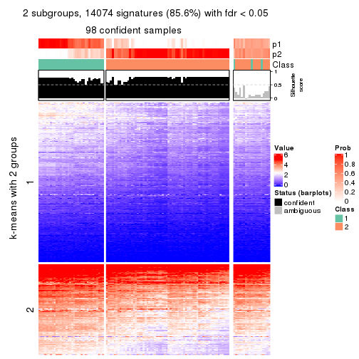
get_signatures(res, k = 3, scale_rows = FALSE)
get_signatures(res, k = 4, scale_rows = FALSE)
get_signatures(res, k = 5, scale_rows = FALSE)
get_signatures(res, k = 6, scale_rows = FALSE)
Compare the overlap of signatures from different k:
compare_signatures(res)
get_signature() returns a data frame invisibly. TO get the list of signatures, the function
call should be assigned to a variable explicitly. In following code, if plot argument is set
to FALSE, no heatmap is plotted while only the differential analysis is performed.
# code only for demonstration
tb = get_signature(res, k = ..., plot = FALSE)
An example of the output of tb is:
#> which_row fdr mean_1 mean_2 scaled_mean_1 scaled_mean_2 km
#> 1 38 0.042760348 8.373488 9.131774 -0.5533452 0.5164555 1
#> 2 40 0.018707592 7.106213 8.469186 -0.6173731 0.5762149 1
#> 3 55 0.019134737 10.221463 11.207825 -0.6159697 0.5749050 1
#> 4 59 0.006059896 5.921854 7.869574 -0.6899429 0.6439467 1
#> 5 60 0.018055526 8.928898 10.211722 -0.6204761 0.5791110 1
#> 6 98 0.009384629 15.714769 14.887706 0.6635654 -0.6193277 2
...
The columns in tb are:
which_row: row indices corresponding to the input matrix.fdr: FDR for the differential test. mean_x: The mean value in group x.scaled_mean_x: The mean value in group x after rows are scaled.km: Row groups if k-means clustering is applied to rows.UMAP plot which shows how samples are separated.
dimension_reduction(res, k = 2, method = "UMAP")
dimension_reduction(res, k = 3, method = "UMAP")
dimension_reduction(res, k = 4, method = "UMAP")
dimension_reduction(res, k = 5, method = "UMAP")
dimension_reduction(res, k = 6, method = "UMAP")
Following heatmap shows how subgroups are split when increasing k:
collect_classes(res)
If matrix rows can be associated to genes, consider to use functional_enrichment(res,
...) to perform function enrichment for the signature genes. See this vignette for more detailed explanations.
The object with results only for a single top-value method and a single partition method can be extracted as:
res = res_list["CV", "kmeans"]
# you can also extract it by
# res = res_list["CV:kmeans"]
A summary of res and all the functions that can be applied to it:
res
#> A 'ConsensusPartition' object with k = 2, 3, 4, 5, 6.
#> On a matrix with 16442 rows and 117 columns.
#> Top rows (1000, 2000, 3000, 4000, 5000) are extracted by 'CV' method.
#> Subgroups are detected by 'kmeans' method.
#> Performed in total 1250 partitions by row resampling.
#> Best k for subgroups seems to be 2.
#>
#> Following methods can be applied to this 'ConsensusPartition' object:
#> [1] "cola_report" "collect_classes" "collect_plots"
#> [4] "collect_stats" "colnames" "compare_signatures"
#> [7] "consensus_heatmap" "dimension_reduction" "functional_enrichment"
#> [10] "get_anno_col" "get_anno" "get_classes"
#> [13] "get_consensus" "get_matrix" "get_membership"
#> [16] "get_param" "get_signatures" "get_stats"
#> [19] "is_best_k" "is_stable_k" "membership_heatmap"
#> [22] "ncol" "nrow" "plot_ecdf"
#> [25] "rownames" "select_partition_number" "show"
#> [28] "suggest_best_k" "test_to_known_factors"
collect_plots() function collects all the plots made from res for all k (number of partitions)
into one single page to provide an easy and fast comparison between different k.
collect_plots(res)
The plots are:
k and the heatmap of
predicted classes for each k.k.k.k.All the plots in panels can be made by individual functions and they are plotted later in this section.
select_partition_number() produces several plots showing different
statistics for choosing “optimized” k. There are following statistics:
k;k, the area increased is defined as \(A_k - A_{k-1}\).The detailed explanations of these statistics can be found in the cola vignette.
Generally speaking, lower PAC score, higher mean silhouette score or higher
concordance corresponds to better partition. Rand index and Jaccard index
measure how similar the current partition is compared to partition with k-1.
If they are too similar, we won't accept k is better than k-1.
select_partition_number(res)
The numeric values for all these statistics can be obtained by get_stats().
get_stats(res)
#> k 1-PAC mean_silhouette concordance area_increased Rand Jaccard
#> 2 2 0.784 0.886 0.951 0.4497 0.536 0.536
#> 3 3 0.615 0.678 0.868 0.4471 0.704 0.493
#> 4 4 0.548 0.550 0.732 0.1314 0.825 0.539
#> 5 5 0.591 0.399 0.598 0.0673 0.900 0.639
#> 6 6 0.660 0.478 0.647 0.0447 0.819 0.359
suggest_best_k() suggests the best \(k\) based on these statistics. The rules are as follows:
suggest_best_k(res)
#> [1] 2
Following shows the table of the partitions (You need to click the show/hide
code output link to see it). The membership matrix (columns with name p*)
is inferred by
clue::cl_consensus()
function with the SE method. Basically the value in the membership matrix
represents the probability to belong to a certain group. The finall class
label for an item is determined with the group with highest probability it
belongs to.
In get_classes() function, the entropy is calculated from the membership
matrix and the silhouette score is calculated from the consensus matrix.
cbind(get_classes(res, k = 2), get_membership(res, k = 2))
#> class entropy silhouette p1 p2
#> SRR2443263 2 1.000 -0.1299 0.488 0.512
#> SRR2443262 2 0.000 0.9687 0.000 1.000
#> SRR2443261 2 0.000 0.9687 0.000 1.000
#> SRR2443260 2 0.000 0.9687 0.000 1.000
#> SRR2443259 2 0.529 0.8324 0.120 0.880
#> SRR2443258 2 0.993 0.0191 0.452 0.548
#> SRR2443257 2 0.000 0.9687 0.000 1.000
#> SRR2443256 1 0.722 0.7794 0.800 0.200
#> SRR2443255 2 0.416 0.8784 0.084 0.916
#> SRR2443254 2 0.000 0.9687 0.000 1.000
#> SRR2443253 2 0.000 0.9687 0.000 1.000
#> SRR2443251 2 0.000 0.9687 0.000 1.000
#> SRR2443250 2 0.000 0.9687 0.000 1.000
#> SRR2443249 2 0.000 0.9687 0.000 1.000
#> SRR2443252 2 0.000 0.9687 0.000 1.000
#> SRR2443247 1 0.402 0.8733 0.920 0.080
#> SRR2443246 1 0.714 0.7836 0.804 0.196
#> SRR2443248 2 0.000 0.9687 0.000 1.000
#> SRR2443244 2 0.000 0.9687 0.000 1.000
#> SRR2443245 1 0.000 0.9032 1.000 0.000
#> SRR2443243 1 0.000 0.9032 1.000 0.000
#> SRR2443242 2 0.000 0.9687 0.000 1.000
#> SRR2443241 1 0.973 0.4456 0.596 0.404
#> SRR2443240 2 0.000 0.9687 0.000 1.000
#> SRR2443239 2 0.000 0.9687 0.000 1.000
#> SRR2443238 1 0.000 0.9032 1.000 0.000
#> SRR2443237 2 0.000 0.9687 0.000 1.000
#> SRR2443236 1 0.000 0.9032 1.000 0.000
#> SRR2443235 1 0.000 0.9032 1.000 0.000
#> SRR2443233 1 0.000 0.9032 1.000 0.000
#> SRR2443234 1 0.000 0.9032 1.000 0.000
#> SRR2443232 1 0.000 0.9032 1.000 0.000
#> SRR2443231 1 0.000 0.9032 1.000 0.000
#> SRR2443230 1 0.000 0.9032 1.000 0.000
#> SRR2443229 1 0.900 0.6190 0.684 0.316
#> SRR2443228 2 0.000 0.9687 0.000 1.000
#> SRR2443227 1 0.000 0.9032 1.000 0.000
#> SRR2443226 1 0.000 0.9032 1.000 0.000
#> SRR2443225 2 0.000 0.9687 0.000 1.000
#> SRR2443223 2 0.000 0.9687 0.000 1.000
#> SRR2443224 2 0.000 0.9687 0.000 1.000
#> SRR2443222 2 0.000 0.9687 0.000 1.000
#> SRR2443221 2 0.000 0.9687 0.000 1.000
#> SRR2443219 2 0.000 0.9687 0.000 1.000
#> SRR2443220 2 0.000 0.9687 0.000 1.000
#> SRR2443218 2 0.000 0.9687 0.000 1.000
#> SRR2443217 2 0.000 0.9687 0.000 1.000
#> SRR2443216 2 0.000 0.9687 0.000 1.000
#> SRR2443215 2 0.000 0.9687 0.000 1.000
#> SRR2443214 1 0.000 0.9032 1.000 0.000
#> SRR2443213 1 0.000 0.9032 1.000 0.000
#> SRR2443212 2 0.000 0.9687 0.000 1.000
#> SRR2443211 2 0.000 0.9687 0.000 1.000
#> SRR2443210 2 0.000 0.9687 0.000 1.000
#> SRR2443209 1 0.969 0.4646 0.604 0.396
#> SRR2443208 2 0.000 0.9687 0.000 1.000
#> SRR2443207 2 0.000 0.9687 0.000 1.000
#> SRR2443206 2 0.000 0.9687 0.000 1.000
#> SRR2443205 2 0.000 0.9687 0.000 1.000
#> SRR2443204 1 0.000 0.9032 1.000 0.000
#> SRR2443203 2 0.000 0.9687 0.000 1.000
#> SRR2443202 2 0.000 0.9687 0.000 1.000
#> SRR2443201 2 0.000 0.9687 0.000 1.000
#> SRR2443200 2 0.000 0.9687 0.000 1.000
#> SRR2443199 2 0.000 0.9687 0.000 1.000
#> SRR2443197 2 0.000 0.9687 0.000 1.000
#> SRR2443196 2 0.000 0.9687 0.000 1.000
#> SRR2443198 2 0.000 0.9687 0.000 1.000
#> SRR2443195 1 0.000 0.9032 1.000 0.000
#> SRR2443194 2 0.000 0.9687 0.000 1.000
#> SRR2443193 1 0.000 0.9032 1.000 0.000
#> SRR2443191 1 0.978 0.4252 0.588 0.412
#> SRR2443192 2 0.000 0.9687 0.000 1.000
#> SRR2443190 1 0.000 0.9032 1.000 0.000
#> SRR2443189 1 0.000 0.9032 1.000 0.000
#> SRR2443188 1 0.000 0.9032 1.000 0.000
#> SRR2443186 2 0.000 0.9687 0.000 1.000
#> SRR2443187 2 0.000 0.9687 0.000 1.000
#> SRR2443185 2 0.000 0.9687 0.000 1.000
#> SRR2443184 2 0.000 0.9687 0.000 1.000
#> SRR2443183 1 0.000 0.9032 1.000 0.000
#> SRR2443182 1 0.456 0.8648 0.904 0.096
#> SRR2443181 2 0.000 0.9687 0.000 1.000
#> SRR2443180 2 0.000 0.9687 0.000 1.000
#> SRR2443179 2 0.000 0.9687 0.000 1.000
#> SRR2443178 2 0.722 0.7189 0.200 0.800
#> SRR2443177 1 0.000 0.9032 1.000 0.000
#> SRR2443176 1 0.242 0.8898 0.960 0.040
#> SRR2443175 1 0.595 0.8304 0.856 0.144
#> SRR2443174 1 0.000 0.9032 1.000 0.000
#> SRR2443173 2 0.000 0.9687 0.000 1.000
#> SRR2443172 2 0.000 0.9687 0.000 1.000
#> SRR2443171 1 0.402 0.8733 0.920 0.080
#> SRR2443170 1 0.722 0.7794 0.800 0.200
#> SRR2443169 1 0.000 0.9032 1.000 0.000
#> SRR2443168 2 0.000 0.9687 0.000 1.000
#> SRR2443167 2 0.000 0.9687 0.000 1.000
#> SRR2443166 1 0.482 0.8599 0.896 0.104
#> SRR2443165 2 0.000 0.9687 0.000 1.000
#> SRR2443164 2 0.000 0.9687 0.000 1.000
#> SRR2443163 2 0.000 0.9687 0.000 1.000
#> SRR2443162 1 0.961 0.4912 0.616 0.384
#> SRR2443161 2 0.000 0.9687 0.000 1.000
#> SRR2443160 2 0.000 0.9687 0.000 1.000
#> SRR2443159 2 0.000 0.9687 0.000 1.000
#> SRR2443158 2 0.969 0.2303 0.396 0.604
#> SRR2443157 1 0.469 0.8625 0.900 0.100
#> SRR2443156 2 0.730 0.7016 0.204 0.796
#> SRR2443155 1 0.689 0.7954 0.816 0.184
#> SRR2443154 1 0.973 0.4452 0.596 0.404
#> SRR2443153 1 0.000 0.9032 1.000 0.000
#> SRR2443152 2 0.000 0.9687 0.000 1.000
#> SRR2443151 2 0.000 0.9687 0.000 1.000
#> SRR2443150 2 0.000 0.9687 0.000 1.000
#> SRR2443148 2 0.000 0.9687 0.000 1.000
#> SRR2443147 2 0.000 0.9687 0.000 1.000
#> SRR2443149 2 0.358 0.8973 0.068 0.932
cbind(get_classes(res, k = 3), get_membership(res, k = 3))
#> class entropy silhouette p1 p2 p3
#> SRR2443263 3 0.0424 0.8001 0.000 0.008 0.992
#> SRR2443262 2 0.5905 0.4671 0.000 0.648 0.352
#> SRR2443261 3 0.6204 0.1099 0.000 0.424 0.576
#> SRR2443260 3 0.0424 0.8001 0.000 0.008 0.992
#> SRR2443259 3 0.0424 0.8001 0.000 0.008 0.992
#> SRR2443258 3 0.0424 0.8001 0.000 0.008 0.992
#> SRR2443257 2 0.5835 0.4886 0.000 0.660 0.340
#> SRR2443256 3 0.0424 0.7908 0.008 0.000 0.992
#> SRR2443255 3 0.0424 0.8001 0.000 0.008 0.992
#> SRR2443254 3 0.0424 0.8001 0.000 0.008 0.992
#> SRR2443253 2 0.5835 0.4886 0.000 0.660 0.340
#> SRR2443251 3 0.6168 0.1444 0.000 0.412 0.588
#> SRR2443250 2 0.5926 0.4588 0.000 0.644 0.356
#> SRR2443249 2 0.5882 0.4744 0.000 0.652 0.348
#> SRR2443252 3 0.0424 0.8001 0.000 0.008 0.992
#> SRR2443247 1 0.5591 0.5681 0.696 0.000 0.304
#> SRR2443246 3 0.6062 0.1445 0.384 0.000 0.616
#> SRR2443248 3 0.3340 0.7050 0.000 0.120 0.880
#> SRR2443244 2 0.2165 0.8234 0.000 0.936 0.064
#> SRR2443245 1 0.3500 0.8374 0.880 0.004 0.116
#> SRR2443243 1 0.0475 0.8691 0.992 0.004 0.004
#> SRR2443242 2 0.2066 0.8237 0.000 0.940 0.060
#> SRR2443241 3 0.2939 0.7396 0.072 0.012 0.916
#> SRR2443240 2 0.6302 0.0957 0.000 0.520 0.480
#> SRR2443239 2 0.0237 0.8388 0.000 0.996 0.004
#> SRR2443238 1 0.3573 0.8351 0.876 0.004 0.120
#> SRR2443237 2 0.2066 0.8237 0.000 0.940 0.060
#> SRR2443236 1 0.0475 0.8691 0.992 0.004 0.004
#> SRR2443235 1 0.0237 0.8718 0.996 0.000 0.004
#> SRR2443233 1 0.0237 0.8718 0.996 0.000 0.004
#> SRR2443234 1 0.0237 0.8718 0.996 0.000 0.004
#> SRR2443232 1 0.0237 0.8718 0.996 0.000 0.004
#> SRR2443231 1 0.0237 0.8718 0.996 0.000 0.004
#> SRR2443230 1 0.0237 0.8718 0.996 0.000 0.004
#> SRR2443229 3 0.5042 0.6831 0.060 0.104 0.836
#> SRR2443228 2 0.0237 0.8388 0.000 0.996 0.004
#> SRR2443227 1 0.0237 0.8718 0.996 0.000 0.004
#> SRR2443226 1 0.3918 0.8208 0.856 0.004 0.140
#> SRR2443225 3 0.0892 0.7965 0.000 0.020 0.980
#> SRR2443223 3 0.6286 -0.0300 0.000 0.464 0.536
#> SRR2443224 3 0.5431 0.4671 0.000 0.284 0.716
#> SRR2443222 2 0.0237 0.8388 0.000 0.996 0.004
#> SRR2443221 2 0.0237 0.8388 0.000 0.996 0.004
#> SRR2443219 2 0.0237 0.8388 0.000 0.996 0.004
#> SRR2443220 2 0.5621 0.5424 0.000 0.692 0.308
#> SRR2443218 2 0.0237 0.8388 0.000 0.996 0.004
#> SRR2443217 3 0.0424 0.8001 0.000 0.008 0.992
#> SRR2443216 3 0.0424 0.8001 0.000 0.008 0.992
#> SRR2443215 2 0.2066 0.8237 0.000 0.940 0.060
#> SRR2443214 1 0.3918 0.8208 0.856 0.004 0.140
#> SRR2443213 1 0.0237 0.8718 0.996 0.000 0.004
#> SRR2443212 2 0.2066 0.8237 0.000 0.940 0.060
#> SRR2443211 2 0.5291 0.5960 0.000 0.732 0.268
#> SRR2443210 2 0.0237 0.8388 0.000 0.996 0.004
#> SRR2443209 3 0.2280 0.7601 0.052 0.008 0.940
#> SRR2443208 2 0.6308 0.0433 0.000 0.508 0.492
#> SRR2443207 2 0.5810 0.4735 0.000 0.664 0.336
#> SRR2443206 2 0.0000 0.8368 0.000 1.000 0.000
#> SRR2443205 2 0.2066 0.8237 0.000 0.940 0.060
#> SRR2443204 1 0.3349 0.8410 0.888 0.004 0.108
#> SRR2443203 3 0.3116 0.7229 0.000 0.108 0.892
#> SRR2443202 2 0.2165 0.8234 0.000 0.936 0.064
#> SRR2443201 3 0.6225 0.0827 0.000 0.432 0.568
#> SRR2443200 2 0.0237 0.8388 0.000 0.996 0.004
#> SRR2443199 2 0.0000 0.8368 0.000 1.000 0.000
#> SRR2443197 2 0.6244 0.3062 0.000 0.560 0.440
#> SRR2443196 2 0.0000 0.8368 0.000 1.000 0.000
#> SRR2443198 3 0.6291 -0.0448 0.000 0.468 0.532
#> SRR2443195 1 0.3500 0.8374 0.880 0.004 0.116
#> SRR2443194 3 0.0747 0.7970 0.000 0.016 0.984
#> SRR2443193 1 0.1878 0.8625 0.952 0.004 0.044
#> SRR2443191 3 0.1170 0.7902 0.016 0.008 0.976
#> SRR2443192 2 0.2066 0.8237 0.000 0.940 0.060
#> SRR2443190 1 0.0000 0.8711 1.000 0.000 0.000
#> SRR2443189 1 0.3918 0.8208 0.856 0.004 0.140
#> SRR2443188 1 0.0237 0.8700 0.996 0.004 0.000
#> SRR2443186 2 0.1964 0.8267 0.000 0.944 0.056
#> SRR2443187 2 0.1860 0.8266 0.000 0.948 0.052
#> SRR2443185 3 0.6252 0.0428 0.000 0.444 0.556
#> SRR2443184 3 0.0424 0.8001 0.000 0.008 0.992
#> SRR2443183 1 0.0237 0.8718 0.996 0.000 0.004
#> SRR2443182 3 0.6062 0.1445 0.384 0.000 0.616
#> SRR2443181 2 0.2066 0.8237 0.000 0.940 0.060
#> SRR2443180 2 0.0237 0.8388 0.000 0.996 0.004
#> SRR2443179 2 0.0237 0.8388 0.000 0.996 0.004
#> SRR2443178 2 0.6585 0.6695 0.200 0.736 0.064
#> SRR2443177 1 0.3573 0.8351 0.876 0.004 0.120
#> SRR2443176 3 0.6045 0.1458 0.380 0.000 0.620
#> SRR2443175 1 0.6168 0.3798 0.588 0.000 0.412
#> SRR2443174 1 0.0237 0.8718 0.996 0.000 0.004
#> SRR2443173 2 0.0237 0.8388 0.000 0.996 0.004
#> SRR2443172 2 0.0237 0.8388 0.000 0.996 0.004
#> SRR2443171 1 0.6008 0.4487 0.628 0.000 0.372
#> SRR2443170 3 0.7207 0.0971 0.384 0.032 0.584
#> SRR2443169 1 0.4555 0.7006 0.800 0.000 0.200
#> SRR2443168 3 0.0424 0.8001 0.000 0.008 0.992
#> SRR2443167 2 0.5733 0.5145 0.000 0.676 0.324
#> SRR2443166 3 0.6026 0.1772 0.376 0.000 0.624
#> SRR2443165 3 0.0424 0.8001 0.000 0.008 0.992
#> SRR2443164 2 0.0237 0.8388 0.000 0.996 0.004
#> SRR2443163 3 0.6192 0.1209 0.000 0.420 0.580
#> SRR2443162 3 0.0237 0.7971 0.000 0.004 0.996
#> SRR2443161 3 0.0424 0.8001 0.000 0.008 0.992
#> SRR2443160 2 0.5882 0.4744 0.000 0.652 0.348
#> SRR2443159 2 0.5882 0.4744 0.000 0.652 0.348
#> SRR2443158 3 0.0424 0.8001 0.000 0.008 0.992
#> SRR2443157 1 0.6309 0.2101 0.504 0.000 0.496
#> SRR2443156 3 0.0424 0.8001 0.000 0.008 0.992
#> SRR2443155 1 0.6026 0.4405 0.624 0.000 0.376
#> SRR2443154 3 0.0424 0.8001 0.000 0.008 0.992
#> SRR2443153 1 0.0237 0.8718 0.996 0.000 0.004
#> SRR2443152 2 0.0237 0.8388 0.000 0.996 0.004
#> SRR2443151 2 0.0237 0.8388 0.000 0.996 0.004
#> SRR2443150 2 0.0237 0.8388 0.000 0.996 0.004
#> SRR2443148 2 0.0237 0.8388 0.000 0.996 0.004
#> SRR2443147 2 0.0237 0.8388 0.000 0.996 0.004
#> SRR2443149 3 0.0424 0.8001 0.000 0.008 0.992
cbind(get_classes(res, k = 4), get_membership(res, k = 4))
#> class entropy silhouette p1 p2 p3 p4
#> SRR2443263 3 0.4585 0.5947 0.000 0.000 0.668 0.332
#> SRR2443262 4 0.1722 0.6767 0.000 0.048 0.008 0.944
#> SRR2443261 4 0.2888 0.6101 0.000 0.004 0.124 0.872
#> SRR2443260 3 0.4855 0.5570 0.000 0.000 0.600 0.400
#> SRR2443259 3 0.4843 0.5608 0.000 0.000 0.604 0.396
#> SRR2443258 3 0.4830 0.5625 0.000 0.000 0.608 0.392
#> SRR2443257 4 0.1576 0.6753 0.000 0.048 0.004 0.948
#> SRR2443256 3 0.3610 0.6167 0.000 0.000 0.800 0.200
#> SRR2443255 3 0.4866 0.5524 0.000 0.000 0.596 0.404
#> SRR2443254 3 0.4877 0.5471 0.000 0.000 0.592 0.408
#> SRR2443253 4 0.1576 0.6753 0.000 0.048 0.004 0.948
#> SRR2443251 4 0.2944 0.6056 0.000 0.004 0.128 0.868
#> SRR2443250 4 0.1635 0.6780 0.000 0.044 0.008 0.948
#> SRR2443249 4 0.1576 0.6753 0.000 0.048 0.004 0.948
#> SRR2443252 3 0.5126 0.4857 0.000 0.004 0.552 0.444
#> SRR2443247 1 0.6054 0.4193 0.592 0.000 0.352 0.056
#> SRR2443246 3 0.5109 0.4452 0.196 0.000 0.744 0.060
#> SRR2443248 4 0.5728 -0.0818 0.000 0.036 0.364 0.600
#> SRR2443244 2 0.4914 0.7078 0.000 0.748 0.044 0.208
#> SRR2443245 1 0.5878 0.7624 0.720 0.092 0.176 0.012
#> SRR2443243 1 0.4489 0.7959 0.824 0.088 0.076 0.012
#> SRR2443242 2 0.5021 0.7103 0.000 0.756 0.064 0.180
#> SRR2443241 3 0.5325 0.4879 0.000 0.204 0.728 0.068
#> SRR2443240 2 0.5327 0.5909 0.000 0.720 0.220 0.060
#> SRR2443239 2 0.3450 0.7372 0.000 0.836 0.008 0.156
#> SRR2443238 1 0.6222 0.7426 0.688 0.100 0.200 0.012
#> SRR2443237 2 0.5062 0.7105 0.000 0.752 0.064 0.184
#> SRR2443236 1 0.2737 0.8113 0.888 0.008 0.104 0.000
#> SRR2443235 1 0.4072 0.7226 0.748 0.000 0.252 0.000
#> SRR2443233 1 0.0336 0.8173 0.992 0.000 0.008 0.000
#> SRR2443234 1 0.0336 0.8173 0.992 0.000 0.008 0.000
#> SRR2443232 1 0.2973 0.7629 0.856 0.000 0.144 0.000
#> SRR2443231 1 0.0707 0.8153 0.980 0.000 0.020 0.000
#> SRR2443230 1 0.3172 0.7519 0.840 0.000 0.160 0.000
#> SRR2443229 3 0.4991 0.4726 0.008 0.220 0.744 0.028
#> SRR2443228 2 0.4522 0.6514 0.000 0.680 0.000 0.320
#> SRR2443227 1 0.0188 0.8171 0.996 0.000 0.004 0.000
#> SRR2443226 1 0.6565 0.7200 0.656 0.100 0.228 0.016
#> SRR2443225 3 0.6176 0.3953 0.000 0.052 0.524 0.424
#> SRR2443223 4 0.3108 0.6196 0.000 0.016 0.112 0.872
#> SRR2443224 2 0.5924 0.2520 0.000 0.556 0.404 0.040
#> SRR2443222 2 0.4522 0.6514 0.000 0.680 0.000 0.320
#> SRR2443221 2 0.4356 0.6712 0.000 0.708 0.000 0.292
#> SRR2443219 4 0.4998 -0.4436 0.000 0.488 0.000 0.512
#> SRR2443220 4 0.1743 0.6669 0.000 0.056 0.004 0.940
#> SRR2443218 2 0.4907 0.5329 0.000 0.580 0.000 0.420
#> SRR2443217 3 0.5235 0.5974 0.000 0.048 0.716 0.236
#> SRR2443216 3 0.5161 0.4219 0.000 0.004 0.520 0.476
#> SRR2443215 2 0.4949 0.7122 0.000 0.760 0.060 0.180
#> SRR2443214 1 0.6565 0.7200 0.656 0.100 0.228 0.016
#> SRR2443213 1 0.0336 0.8173 0.992 0.000 0.008 0.000
#> SRR2443212 2 0.3958 0.7337 0.000 0.836 0.052 0.112
#> SRR2443211 2 0.5128 0.6721 0.000 0.760 0.148 0.092
#> SRR2443210 2 0.4522 0.6514 0.000 0.680 0.000 0.320
#> SRR2443209 3 0.5325 0.4988 0.000 0.204 0.728 0.068
#> SRR2443208 2 0.5354 0.5791 0.000 0.712 0.232 0.056
#> SRR2443207 2 0.5495 0.6308 0.000 0.728 0.176 0.096
#> SRR2443206 2 0.2737 0.7380 0.000 0.888 0.008 0.104
#> SRR2443205 2 0.4535 0.7255 0.000 0.804 0.084 0.112
#> SRR2443204 1 0.5735 0.7669 0.732 0.088 0.168 0.012
#> SRR2443203 4 0.6148 -0.3191 0.000 0.048 0.468 0.484
#> SRR2443202 4 0.5592 -0.2346 0.000 0.404 0.024 0.572
#> SRR2443201 4 0.3803 0.5742 0.000 0.032 0.132 0.836
#> SRR2443200 2 0.4522 0.6514 0.000 0.680 0.000 0.320
#> SRR2443199 2 0.5220 0.5256 0.000 0.568 0.008 0.424
#> SRR2443197 4 0.3219 0.6334 0.000 0.020 0.112 0.868
#> SRR2443196 4 0.5638 -0.2347 0.000 0.388 0.028 0.584
#> SRR2443198 4 0.3166 0.6213 0.000 0.016 0.116 0.868
#> SRR2443195 1 0.5896 0.7629 0.720 0.096 0.172 0.012
#> SRR2443194 3 0.5277 0.4390 0.000 0.008 0.532 0.460
#> SRR2443193 1 0.5054 0.7897 0.788 0.092 0.108 0.012
#> SRR2443191 3 0.5066 0.5489 0.000 0.148 0.764 0.088
#> SRR2443192 2 0.4849 0.7192 0.000 0.772 0.064 0.164
#> SRR2443190 1 0.0000 0.8169 1.000 0.000 0.000 0.000
#> SRR2443189 1 0.6212 0.7388 0.684 0.092 0.212 0.012
#> SRR2443188 1 0.0000 0.8169 1.000 0.000 0.000 0.000
#> SRR2443186 2 0.3581 0.7391 0.000 0.852 0.032 0.116
#> SRR2443187 2 0.3166 0.7396 0.000 0.868 0.016 0.116
#> SRR2443185 4 0.2773 0.6186 0.000 0.004 0.116 0.880
#> SRR2443184 4 0.5167 -0.3891 0.000 0.004 0.488 0.508
#> SRR2443183 1 0.0336 0.8173 0.992 0.000 0.008 0.000
#> SRR2443182 3 0.4874 0.4613 0.180 0.000 0.764 0.056
#> SRR2443181 2 0.4535 0.7255 0.000 0.804 0.084 0.112
#> SRR2443180 2 0.4907 0.5329 0.000 0.580 0.000 0.420
#> SRR2443179 4 0.5220 -0.2663 0.000 0.424 0.008 0.568
#> SRR2443178 2 0.8036 0.4706 0.168 0.592 0.096 0.144
#> SRR2443177 1 0.6034 0.7531 0.704 0.092 0.192 0.012
#> SRR2443176 3 0.4821 0.4271 0.160 0.008 0.784 0.048
#> SRR2443175 3 0.6257 -0.1850 0.436 0.000 0.508 0.056
#> SRR2443174 1 0.3024 0.7605 0.852 0.000 0.148 0.000
#> SRR2443173 2 0.4957 0.6681 0.000 0.684 0.016 0.300
#> SRR2443172 2 0.4980 0.6685 0.000 0.680 0.016 0.304
#> SRR2443171 1 0.6252 0.3004 0.512 0.000 0.432 0.056
#> SRR2443170 3 0.4477 0.4361 0.140 0.032 0.812 0.016
#> SRR2443169 1 0.5256 0.6013 0.700 0.000 0.260 0.040
#> SRR2443168 3 0.5339 0.5665 0.000 0.020 0.624 0.356
#> SRR2443167 4 0.1661 0.6719 0.000 0.052 0.004 0.944
#> SRR2443166 3 0.5397 0.4749 0.160 0.008 0.752 0.080
#> SRR2443165 4 0.5119 -0.2704 0.000 0.004 0.440 0.556
#> SRR2443164 2 0.4907 0.5329 0.000 0.580 0.000 0.420
#> SRR2443163 4 0.3161 0.6064 0.000 0.012 0.124 0.864
#> SRR2443162 3 0.4382 0.6054 0.000 0.000 0.704 0.296
#> SRR2443161 3 0.4866 0.5524 0.000 0.000 0.596 0.404
#> SRR2443160 4 0.1576 0.6753 0.000 0.048 0.004 0.948
#> SRR2443159 4 0.1576 0.6753 0.000 0.048 0.004 0.948
#> SRR2443158 3 0.4790 0.5720 0.000 0.000 0.620 0.380
#> SRR2443157 3 0.6007 0.1110 0.340 0.000 0.604 0.056
#> SRR2443156 3 0.4761 0.6040 0.000 0.044 0.764 0.192
#> SRR2443155 3 0.5859 -0.2858 0.472 0.000 0.496 0.032
#> SRR2443154 3 0.2401 0.6096 0.000 0.004 0.904 0.092
#> SRR2443153 1 0.0707 0.8153 0.980 0.000 0.020 0.000
#> SRR2443152 2 0.4072 0.7383 0.000 0.828 0.052 0.120
#> SRR2443151 2 0.4907 0.5329 0.000 0.580 0.000 0.420
#> SRR2443150 2 0.4072 0.7383 0.000 0.828 0.052 0.120
#> SRR2443148 2 0.5112 0.5066 0.000 0.560 0.004 0.436
#> SRR2443147 4 0.4608 0.1686 0.000 0.304 0.004 0.692
#> SRR2443149 3 0.5004 0.5630 0.000 0.004 0.604 0.392
cbind(get_classes(res, k = 5), get_membership(res, k = 5))
#> class entropy silhouette p1 p2 p3 p4 p5
#> SRR2443263 3 0.4456 0.5240 0.000 0.000 0.660 0.320 0.020
#> SRR2443262 4 0.2377 0.6809 0.000 0.128 0.000 0.872 0.000
#> SRR2443261 4 0.0912 0.6823 0.000 0.000 0.016 0.972 0.012
#> SRR2443260 3 0.4696 0.4009 0.000 0.000 0.556 0.428 0.016
#> SRR2443259 3 0.4658 0.4310 0.000 0.000 0.576 0.408 0.016
#> SRR2443258 3 0.4565 0.4313 0.000 0.000 0.580 0.408 0.012
#> SRR2443257 4 0.2471 0.6742 0.000 0.136 0.000 0.864 0.000
#> SRR2443256 3 0.3163 0.6034 0.000 0.000 0.824 0.164 0.012
#> SRR2443255 3 0.4666 0.4248 0.000 0.000 0.572 0.412 0.016
#> SRR2443254 3 0.4746 0.2886 0.000 0.000 0.504 0.480 0.016
#> SRR2443253 4 0.2516 0.6705 0.000 0.140 0.000 0.860 0.000
#> SRR2443251 4 0.0912 0.6823 0.000 0.000 0.016 0.972 0.012
#> SRR2443250 4 0.2179 0.6889 0.000 0.112 0.000 0.888 0.000
#> SRR2443249 4 0.2377 0.6809 0.000 0.128 0.000 0.872 0.000
#> SRR2443252 4 0.4696 -0.1101 0.000 0.000 0.428 0.556 0.016
#> SRR2443247 1 0.4887 0.2734 0.536 0.000 0.444 0.012 0.008
#> SRR2443246 3 0.3103 0.5637 0.072 0.000 0.872 0.012 0.044
#> SRR2443248 4 0.3783 0.4198 0.000 0.004 0.216 0.768 0.012
#> SRR2443244 2 0.5987 0.3920 0.000 0.544 0.000 0.132 0.324
#> SRR2443245 1 0.6480 0.1706 0.412 0.000 0.184 0.000 0.404
#> SRR2443243 1 0.5895 0.2890 0.500 0.000 0.104 0.000 0.396
#> SRR2443242 2 0.5800 0.3604 0.000 0.544 0.008 0.076 0.372
#> SRR2443241 3 0.5985 0.2902 0.000 0.084 0.536 0.012 0.368
#> SRR2443240 5 0.5917 -0.0643 0.000 0.416 0.064 0.016 0.504
#> SRR2443239 2 0.5359 0.4520 0.000 0.644 0.000 0.100 0.256
#> SRR2443238 5 0.6450 -0.2212 0.384 0.000 0.180 0.000 0.436
#> SRR2443237 2 0.5792 0.3641 0.000 0.536 0.004 0.084 0.376
#> SRR2443236 1 0.3916 0.6302 0.812 0.004 0.092 0.000 0.092
#> SRR2443235 1 0.4787 0.5562 0.640 0.000 0.324 0.000 0.036
#> SRR2443233 1 0.0000 0.7216 1.000 0.000 0.000 0.000 0.000
#> SRR2443234 1 0.0000 0.7216 1.000 0.000 0.000 0.000 0.000
#> SRR2443232 1 0.2806 0.6663 0.844 0.000 0.152 0.000 0.004
#> SRR2443231 1 0.0290 0.7211 0.992 0.000 0.008 0.000 0.000
#> SRR2443230 1 0.3487 0.6357 0.780 0.000 0.212 0.000 0.008
#> SRR2443229 3 0.5265 0.4616 0.000 0.064 0.668 0.012 0.256
#> SRR2443228 2 0.2074 0.5857 0.000 0.896 0.000 0.104 0.000
#> SRR2443227 1 0.0000 0.7216 1.000 0.000 0.000 0.000 0.000
#> SRR2443226 5 0.6447 -0.1594 0.336 0.000 0.192 0.000 0.472
#> SRR2443225 4 0.6489 -0.1753 0.000 0.016 0.408 0.456 0.120
#> SRR2443223 4 0.0290 0.6910 0.000 0.000 0.008 0.992 0.000
#> SRR2443224 5 0.6611 0.0324 0.000 0.320 0.168 0.012 0.500
#> SRR2443222 2 0.2020 0.5856 0.000 0.900 0.000 0.100 0.000
#> SRR2443221 2 0.1851 0.5833 0.000 0.912 0.000 0.088 0.000
#> SRR2443219 2 0.4900 0.2341 0.000 0.512 0.000 0.464 0.024
#> SRR2443220 4 0.2629 0.6720 0.000 0.136 0.000 0.860 0.004
#> SRR2443218 2 0.3210 0.5595 0.000 0.788 0.000 0.212 0.000
#> SRR2443217 3 0.6252 0.5535 0.000 0.016 0.600 0.188 0.196
#> SRR2443216 4 0.4666 -0.0476 0.000 0.000 0.412 0.572 0.016
#> SRR2443215 2 0.5858 0.3552 0.000 0.536 0.008 0.080 0.376
#> SRR2443214 5 0.6452 -0.1523 0.328 0.000 0.196 0.000 0.476
#> SRR2443213 1 0.0000 0.7216 1.000 0.000 0.000 0.000 0.000
#> SRR2443212 2 0.4928 0.2514 0.000 0.568 0.012 0.012 0.408
#> SRR2443211 5 0.5847 -0.0830 0.000 0.424 0.052 0.020 0.504
#> SRR2443210 2 0.2020 0.5856 0.000 0.900 0.000 0.100 0.000
#> SRR2443209 3 0.5840 0.3435 0.000 0.084 0.584 0.012 0.320
#> SRR2443208 5 0.5889 -0.1498 0.000 0.444 0.060 0.016 0.480
#> SRR2443207 2 0.5639 0.1059 0.000 0.492 0.032 0.024 0.452
#> SRR2443206 2 0.3766 0.4324 0.000 0.728 0.000 0.004 0.268
#> SRR2443205 5 0.5255 -0.1611 0.000 0.468 0.024 0.012 0.496
#> SRR2443204 1 0.6478 0.1813 0.420 0.000 0.184 0.000 0.396
#> SRR2443203 4 0.6249 0.0581 0.000 0.016 0.336 0.540 0.108
#> SRR2443202 4 0.5599 0.2043 0.000 0.260 0.000 0.620 0.120
#> SRR2443201 4 0.0854 0.6878 0.000 0.008 0.012 0.976 0.004
#> SRR2443200 2 0.2074 0.5857 0.000 0.896 0.000 0.104 0.000
#> SRR2443199 2 0.4400 0.5382 0.000 0.736 0.000 0.212 0.052
#> SRR2443197 4 0.1153 0.6906 0.000 0.004 0.008 0.964 0.024
#> SRR2443196 4 0.5813 -0.0260 0.000 0.404 0.008 0.516 0.072
#> SRR2443198 4 0.0693 0.6915 0.000 0.000 0.008 0.980 0.012
#> SRR2443195 1 0.6439 0.1686 0.416 0.000 0.176 0.000 0.408
#> SRR2443194 4 0.4885 -0.0210 0.000 0.000 0.400 0.572 0.028
#> SRR2443193 1 0.6373 0.1838 0.424 0.000 0.164 0.000 0.412
#> SRR2443191 3 0.4464 0.4966 0.000 0.012 0.692 0.012 0.284
#> SRR2443192 2 0.5596 0.3629 0.000 0.552 0.004 0.068 0.376
#> SRR2443190 1 0.0000 0.7216 1.000 0.000 0.000 0.000 0.000
#> SRR2443189 5 0.6564 -0.1852 0.344 0.000 0.212 0.000 0.444
#> SRR2443188 1 0.0000 0.7216 1.000 0.000 0.000 0.000 0.000
#> SRR2443186 2 0.4770 0.2877 0.000 0.596 0.008 0.012 0.384
#> SRR2443187 2 0.4567 0.3358 0.000 0.628 0.004 0.012 0.356
#> SRR2443185 4 0.0290 0.6910 0.000 0.000 0.008 0.992 0.000
#> SRR2443184 4 0.4348 0.2300 0.000 0.000 0.316 0.668 0.016
#> SRR2443183 1 0.0162 0.7216 0.996 0.000 0.004 0.000 0.000
#> SRR2443182 3 0.2151 0.5836 0.040 0.000 0.924 0.020 0.016
#> SRR2443181 5 0.5255 -0.1611 0.000 0.468 0.024 0.012 0.496
#> SRR2443180 2 0.3366 0.5588 0.000 0.784 0.000 0.212 0.004
#> SRR2443179 2 0.5193 0.2791 0.000 0.584 0.000 0.364 0.052
#> SRR2443178 5 0.7392 0.0514 0.104 0.240 0.024 0.076 0.556
#> SRR2443177 5 0.6519 -0.2491 0.400 0.000 0.192 0.000 0.408
#> SRR2443176 3 0.1830 0.5705 0.012 0.000 0.932 0.004 0.052
#> SRR2443175 3 0.4583 0.2480 0.272 0.000 0.696 0.012 0.020
#> SRR2443174 1 0.3123 0.6505 0.812 0.000 0.184 0.000 0.004
#> SRR2443173 2 0.4955 0.5298 0.000 0.720 0.008 0.084 0.188
#> SRR2443172 2 0.5205 0.5265 0.000 0.696 0.008 0.096 0.200
#> SRR2443171 3 0.5128 -0.1393 0.420 0.000 0.548 0.012 0.020
#> SRR2443170 3 0.4925 0.5177 0.036 0.024 0.708 0.000 0.232
#> SRR2443169 1 0.4003 0.5562 0.704 0.000 0.288 0.000 0.008
#> SRR2443168 3 0.6402 0.4679 0.000 0.004 0.508 0.320 0.168
#> SRR2443167 4 0.2516 0.6705 0.000 0.140 0.000 0.860 0.000
#> SRR2443166 3 0.2722 0.6042 0.020 0.000 0.896 0.056 0.028
#> SRR2443165 4 0.3430 0.4287 0.000 0.000 0.220 0.776 0.004
#> SRR2443164 2 0.3210 0.5595 0.000 0.788 0.000 0.212 0.000
#> SRR2443163 4 0.0290 0.6910 0.000 0.000 0.008 0.992 0.000
#> SRR2443162 3 0.4063 0.5533 0.000 0.000 0.708 0.280 0.012
#> SRR2443161 3 0.4708 0.3856 0.000 0.000 0.548 0.436 0.016
#> SRR2443160 4 0.2377 0.6809 0.000 0.128 0.000 0.872 0.000
#> SRR2443159 4 0.2424 0.6779 0.000 0.132 0.000 0.868 0.000
#> SRR2443158 3 0.4551 0.4808 0.000 0.000 0.616 0.368 0.016
#> SRR2443157 3 0.3307 0.5121 0.116 0.000 0.848 0.012 0.024
#> SRR2443156 3 0.5999 0.5617 0.000 0.004 0.584 0.140 0.272
#> SRR2443155 3 0.6347 -0.0419 0.356 0.004 0.492 0.000 0.148
#> SRR2443154 3 0.4052 0.5806 0.000 0.004 0.764 0.028 0.204
#> SRR2443153 1 0.0290 0.7211 0.992 0.000 0.008 0.000 0.000
#> SRR2443152 2 0.5104 0.2588 0.000 0.564 0.016 0.016 0.404
#> SRR2443151 2 0.3305 0.5519 0.000 0.776 0.000 0.224 0.000
#> SRR2443150 2 0.5104 0.2588 0.000 0.564 0.016 0.016 0.404
#> SRR2443148 2 0.4114 0.5136 0.000 0.732 0.000 0.244 0.024
#> SRR2443147 4 0.4658 0.0574 0.000 0.484 0.000 0.504 0.012
#> SRR2443149 3 0.4658 0.4335 0.000 0.000 0.576 0.408 0.016
cbind(get_classes(res, k = 6), get_membership(res, k = 6))
#> class entropy silhouette p1 p2 p3 p4 p5 p6
#> SRR2443263 3 0.2543 0.50641 0.004 0.000 0.868 0.004 0.116 0.008
#> SRR2443262 5 0.6034 0.23228 0.000 0.000 0.260 0.328 0.412 0.000
#> SRR2443261 3 0.5347 0.06935 0.000 0.000 0.480 0.108 0.412 0.000
#> SRR2443260 3 0.0000 0.58179 0.000 0.000 1.000 0.000 0.000 0.000
#> SRR2443259 3 0.0551 0.58007 0.004 0.000 0.984 0.000 0.004 0.008
#> SRR2443258 3 0.0520 0.57981 0.000 0.000 0.984 0.000 0.008 0.008
#> SRR2443257 5 0.6034 0.23228 0.000 0.000 0.260 0.328 0.412 0.000
#> SRR2443256 3 0.4173 0.32327 0.028 0.000 0.692 0.000 0.272 0.008
#> SRR2443255 3 0.0260 0.58127 0.000 0.000 0.992 0.000 0.000 0.008
#> SRR2443254 3 0.0547 0.57886 0.000 0.000 0.980 0.000 0.020 0.000
#> SRR2443253 5 0.6034 0.23228 0.000 0.000 0.260 0.328 0.412 0.000
#> SRR2443251 3 0.5347 0.06935 0.000 0.000 0.480 0.108 0.412 0.000
#> SRR2443250 5 0.6054 0.20465 0.000 0.000 0.284 0.304 0.412 0.000
#> SRR2443249 5 0.6034 0.23228 0.000 0.000 0.260 0.328 0.412 0.000
#> SRR2443252 3 0.1814 0.55244 0.000 0.000 0.900 0.000 0.100 0.000
#> SRR2443247 1 0.5676 0.34882 0.448 0.004 0.116 0.000 0.428 0.004
#> SRR2443246 5 0.6591 0.05777 0.084 0.004 0.308 0.000 0.496 0.108
#> SRR2443248 3 0.4209 0.24202 0.000 0.004 0.588 0.012 0.396 0.000
#> SRR2443244 2 0.5640 0.61039 0.000 0.588 0.000 0.256 0.136 0.020
#> SRR2443245 6 0.2669 0.88113 0.108 0.000 0.024 0.000 0.004 0.864
#> SRR2443243 6 0.2300 0.84496 0.144 0.000 0.000 0.000 0.000 0.856
#> SRR2443242 2 0.6008 0.65502 0.000 0.600 0.000 0.216 0.092 0.092
#> SRR2443241 5 0.8055 -0.05920 0.008 0.312 0.172 0.028 0.344 0.136
#> SRR2443240 2 0.2518 0.72646 0.000 0.892 0.016 0.004 0.068 0.020
#> SRR2443239 2 0.4635 0.66504 0.000 0.672 0.000 0.256 0.064 0.008
#> SRR2443238 6 0.2561 0.88125 0.092 0.004 0.016 0.000 0.008 0.880
#> SRR2443237 2 0.5985 0.63284 0.000 0.580 0.000 0.252 0.108 0.060
#> SRR2443236 1 0.6387 0.25847 0.496 0.040 0.000 0.000 0.184 0.280
#> SRR2443235 1 0.5581 0.36602 0.460 0.004 0.000 0.004 0.428 0.104
#> SRR2443233 1 0.1204 0.80514 0.944 0.000 0.000 0.000 0.000 0.056
#> SRR2443234 1 0.1204 0.80514 0.944 0.000 0.000 0.000 0.000 0.056
#> SRR2443232 1 0.1588 0.77678 0.924 0.000 0.000 0.000 0.072 0.004
#> SRR2443231 1 0.1152 0.80691 0.952 0.004 0.000 0.000 0.000 0.044
#> SRR2443230 1 0.2989 0.72920 0.824 0.008 0.004 0.004 0.160 0.000
#> SRR2443229 3 0.8587 -0.02092 0.000 0.180 0.280 0.076 0.240 0.224
#> SRR2443228 4 0.2996 0.69411 0.000 0.228 0.000 0.772 0.000 0.000
#> SRR2443227 1 0.1531 0.80148 0.928 0.004 0.000 0.000 0.000 0.068
#> SRR2443226 6 0.1844 0.86442 0.028 0.000 0.024 0.012 0.004 0.932
#> SRR2443225 3 0.6179 0.43352 0.000 0.016 0.620 0.084 0.184 0.096
#> SRR2443223 5 0.5714 -0.05825 0.000 0.004 0.428 0.140 0.428 0.000
#> SRR2443224 2 0.2425 0.71585 0.000 0.900 0.016 0.008 0.060 0.016
#> SRR2443222 4 0.2996 0.69411 0.000 0.228 0.000 0.772 0.000 0.000
#> SRR2443221 4 0.2941 0.69701 0.000 0.220 0.000 0.780 0.000 0.000
#> SRR2443219 4 0.5199 0.36105 0.000 0.064 0.008 0.588 0.332 0.008
#> SRR2443220 5 0.5962 0.22706 0.000 0.000 0.228 0.348 0.424 0.000
#> SRR2443218 4 0.2146 0.77340 0.000 0.116 0.000 0.880 0.004 0.000
#> SRR2443217 3 0.6167 0.39030 0.004 0.112 0.660 0.040 0.112 0.072
#> SRR2443216 3 0.2092 0.54012 0.000 0.000 0.876 0.000 0.124 0.000
#> SRR2443215 2 0.5896 0.66232 0.000 0.612 0.000 0.212 0.096 0.080
#> SRR2443214 6 0.1807 0.85975 0.024 0.004 0.024 0.008 0.004 0.936
#> SRR2443213 1 0.1411 0.80460 0.936 0.004 0.000 0.000 0.000 0.060
#> SRR2443212 2 0.4026 0.74818 0.000 0.780 0.000 0.144 0.040 0.036
#> SRR2443211 2 0.1799 0.74094 0.000 0.928 0.008 0.004 0.052 0.008
#> SRR2443210 4 0.2996 0.69411 0.000 0.228 0.000 0.772 0.000 0.000
#> SRR2443209 5 0.7540 -0.01911 0.012 0.332 0.192 0.004 0.364 0.096
#> SRR2443208 2 0.4429 0.73727 0.000 0.784 0.016 0.068 0.048 0.084
#> SRR2443207 2 0.3312 0.76057 0.000 0.856 0.016 0.064 0.040 0.024
#> SRR2443206 2 0.3081 0.68552 0.000 0.776 0.000 0.220 0.000 0.004
#> SRR2443205 2 0.1268 0.75093 0.000 0.952 0.000 0.008 0.036 0.004
#> SRR2443204 6 0.2573 0.87814 0.112 0.000 0.024 0.000 0.000 0.864
#> SRR2443203 3 0.6461 0.37796 0.000 0.012 0.564 0.092 0.240 0.092
#> SRR2443202 5 0.6716 -0.01465 0.000 0.096 0.068 0.384 0.436 0.016
#> SRR2443201 5 0.6006 -0.05443 0.000 0.008 0.408 0.152 0.428 0.004
#> SRR2443200 4 0.2941 0.69701 0.000 0.220 0.000 0.780 0.000 0.000
#> SRR2443199 4 0.1682 0.75570 0.000 0.052 0.000 0.928 0.000 0.020
#> SRR2443197 5 0.6092 0.01756 0.000 0.000 0.364 0.200 0.428 0.008
#> SRR2443196 4 0.5134 0.36902 0.000 0.020 0.000 0.616 0.296 0.068
#> SRR2443198 5 0.6138 -0.01984 0.000 0.008 0.376 0.180 0.432 0.004
#> SRR2443195 6 0.2527 0.88079 0.108 0.000 0.024 0.000 0.000 0.868
#> SRR2443194 3 0.4151 0.49347 0.000 0.000 0.748 0.084 0.164 0.004
#> SRR2443193 6 0.2689 0.87630 0.112 0.000 0.016 0.004 0.004 0.864
#> SRR2443191 5 0.7945 0.03998 0.024 0.220 0.236 0.008 0.392 0.120
#> SRR2443192 2 0.5877 0.66779 0.000 0.612 0.000 0.216 0.080 0.092
#> SRR2443190 1 0.1327 0.80202 0.936 0.000 0.000 0.000 0.000 0.064
#> SRR2443189 6 0.1743 0.86466 0.028 0.000 0.024 0.008 0.004 0.936
#> SRR2443188 1 0.1387 0.80139 0.932 0.000 0.000 0.000 0.000 0.068
#> SRR2443186 2 0.2389 0.74575 0.000 0.864 0.000 0.128 0.000 0.008
#> SRR2443187 2 0.2948 0.72129 0.000 0.804 0.000 0.188 0.000 0.008
#> SRR2443185 3 0.5712 0.00305 0.000 0.000 0.440 0.140 0.416 0.004
#> SRR2443184 3 0.3370 0.46053 0.000 0.000 0.772 0.012 0.212 0.004
#> SRR2443183 1 0.1075 0.80695 0.952 0.000 0.000 0.000 0.000 0.048
#> SRR2443182 5 0.6384 -0.01550 0.052 0.000 0.392 0.004 0.444 0.108
#> SRR2443181 2 0.1059 0.74898 0.000 0.964 0.000 0.016 0.016 0.004
#> SRR2443180 4 0.2288 0.77349 0.000 0.116 0.000 0.876 0.004 0.004
#> SRR2443179 4 0.1793 0.71051 0.000 0.012 0.000 0.928 0.048 0.012
#> SRR2443178 6 0.5694 0.05994 0.000 0.348 0.000 0.044 0.068 0.540
#> SRR2443177 6 0.2296 0.88178 0.068 0.000 0.024 0.004 0.004 0.900
#> SRR2443176 5 0.6737 -0.01193 0.040 0.000 0.372 0.008 0.404 0.176
#> SRR2443175 5 0.6913 0.05547 0.136 0.000 0.280 0.004 0.476 0.104
#> SRR2443174 1 0.2070 0.76403 0.892 0.008 0.000 0.000 0.100 0.000
#> SRR2443173 2 0.3930 0.14561 0.000 0.576 0.000 0.420 0.004 0.000
#> SRR2443172 2 0.3862 0.22490 0.000 0.608 0.000 0.388 0.004 0.000
#> SRR2443171 5 0.6438 -0.22957 0.320 0.000 0.156 0.000 0.476 0.048
#> SRR2443170 5 0.7764 0.09634 0.024 0.236 0.164 0.004 0.428 0.144
#> SRR2443169 1 0.3945 0.67437 0.748 0.008 0.028 0.000 0.212 0.004
#> SRR2443168 3 0.4235 0.45823 0.000 0.168 0.756 0.000 0.044 0.032
#> SRR2443167 5 0.6034 0.23228 0.000 0.000 0.260 0.328 0.412 0.000
#> SRR2443166 3 0.5587 0.12281 0.028 0.000 0.528 0.000 0.368 0.076
#> SRR2443165 3 0.4841 0.18469 0.000 0.000 0.536 0.048 0.412 0.004
#> SRR2443164 4 0.2191 0.77184 0.000 0.120 0.000 0.876 0.004 0.000
#> SRR2443163 3 0.5661 0.01304 0.000 0.004 0.444 0.132 0.420 0.000
#> SRR2443162 3 0.2883 0.47623 0.008 0.000 0.832 0.000 0.152 0.008
#> SRR2443161 3 0.0000 0.58179 0.000 0.000 1.000 0.000 0.000 0.000
#> SRR2443160 5 0.6034 0.23228 0.000 0.000 0.260 0.328 0.412 0.000
#> SRR2443159 5 0.6034 0.23228 0.000 0.000 0.260 0.328 0.412 0.000
#> SRR2443158 3 0.1643 0.54679 0.000 0.000 0.924 0.000 0.068 0.008
#> SRR2443157 5 0.6576 0.02374 0.080 0.000 0.352 0.004 0.464 0.100
#> SRR2443156 3 0.7354 0.02027 0.000 0.224 0.352 0.032 0.348 0.044
#> SRR2443155 5 0.7835 -0.11034 0.192 0.160 0.080 0.000 0.464 0.104
#> SRR2443154 5 0.6903 -0.03638 0.000 0.176 0.348 0.004 0.408 0.064
#> SRR2443153 1 0.1082 0.80669 0.956 0.004 0.000 0.000 0.000 0.040
#> SRR2443152 2 0.1707 0.74917 0.000 0.928 0.000 0.056 0.012 0.004
#> SRR2443151 4 0.2118 0.77081 0.000 0.104 0.000 0.888 0.008 0.000
#> SRR2443150 2 0.1707 0.74917 0.000 0.928 0.000 0.056 0.012 0.004
#> SRR2443148 4 0.1442 0.75257 0.000 0.040 0.000 0.944 0.012 0.004
#> SRR2443147 4 0.3795 0.54455 0.000 0.004 0.088 0.796 0.108 0.004
#> SRR2443149 3 0.0964 0.57504 0.004 0.000 0.968 0.000 0.016 0.012
Heatmaps for the consensus matrix. It visualizes the probability of two samples to be in a same group.
consensus_heatmap(res, k = 2)
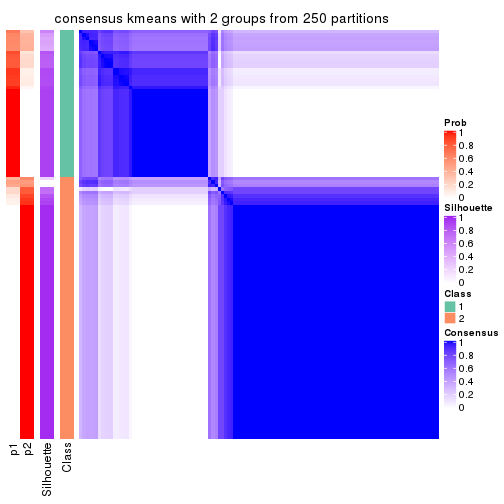
consensus_heatmap(res, k = 3)
consensus_heatmap(res, k = 4)
consensus_heatmap(res, k = 5)
consensus_heatmap(res, k = 6)
Heatmaps for the membership of samples in all partitions to see how consistent they are:
membership_heatmap(res, k = 2)

membership_heatmap(res, k = 3)
membership_heatmap(res, k = 4)
membership_heatmap(res, k = 5)
membership_heatmap(res, k = 6)
As soon as we have had the classes for columns, we can look for signatures which are significantly different between classes which can be candidate marks for certain classes. Following are the heatmaps for signatures.
Signature heatmaps where rows are scaled:
get_signatures(res, k = 2)
get_signatures(res, k = 3)
get_signatures(res, k = 4)
get_signatures(res, k = 5)
get_signatures(res, k = 6)
Signature heatmaps where rows are not scaled:
get_signatures(res, k = 2, scale_rows = FALSE)
get_signatures(res, k = 3, scale_rows = FALSE)
get_signatures(res, k = 4, scale_rows = FALSE)
get_signatures(res, k = 5, scale_rows = FALSE)
get_signatures(res, k = 6, scale_rows = FALSE)
Compare the overlap of signatures from different k:
compare_signatures(res)
get_signature() returns a data frame invisibly. TO get the list of signatures, the function
call should be assigned to a variable explicitly. In following code, if plot argument is set
to FALSE, no heatmap is plotted while only the differential analysis is performed.
# code only for demonstration
tb = get_signature(res, k = ..., plot = FALSE)
An example of the output of tb is:
#> which_row fdr mean_1 mean_2 scaled_mean_1 scaled_mean_2 km
#> 1 38 0.042760348 8.373488 9.131774 -0.5533452 0.5164555 1
#> 2 40 0.018707592 7.106213 8.469186 -0.6173731 0.5762149 1
#> 3 55 0.019134737 10.221463 11.207825 -0.6159697 0.5749050 1
#> 4 59 0.006059896 5.921854 7.869574 -0.6899429 0.6439467 1
#> 5 60 0.018055526 8.928898 10.211722 -0.6204761 0.5791110 1
#> 6 98 0.009384629 15.714769 14.887706 0.6635654 -0.6193277 2
...
The columns in tb are:
which_row: row indices corresponding to the input matrix.fdr: FDR for the differential test. mean_x: The mean value in group x.scaled_mean_x: The mean value in group x after rows are scaled.km: Row groups if k-means clustering is applied to rows.UMAP plot which shows how samples are separated.
dimension_reduction(res, k = 2, method = "UMAP")
dimension_reduction(res, k = 3, method = "UMAP")
dimension_reduction(res, k = 4, method = "UMAP")
dimension_reduction(res, k = 5, method = "UMAP")
dimension_reduction(res, k = 6, method = "UMAP")
Following heatmap shows how subgroups are split when increasing k:
collect_classes(res)
If matrix rows can be associated to genes, consider to use functional_enrichment(res,
...) to perform function enrichment for the signature genes. See this vignette for more detailed explanations.
The object with results only for a single top-value method and a single partition method can be extracted as:
res = res_list["CV", "skmeans"]
# you can also extract it by
# res = res_list["CV:skmeans"]
A summary of res and all the functions that can be applied to it:
res
#> A 'ConsensusPartition' object with k = 2, 3, 4, 5, 6.
#> On a matrix with 16442 rows and 117 columns.
#> Top rows (1000, 2000, 3000, 4000, 5000) are extracted by 'CV' method.
#> Subgroups are detected by 'skmeans' method.
#> Performed in total 1250 partitions by row resampling.
#> Best k for subgroups seems to be 2.
#>
#> Following methods can be applied to this 'ConsensusPartition' object:
#> [1] "cola_report" "collect_classes" "collect_plots"
#> [4] "collect_stats" "colnames" "compare_signatures"
#> [7] "consensus_heatmap" "dimension_reduction" "functional_enrichment"
#> [10] "get_anno_col" "get_anno" "get_classes"
#> [13] "get_consensus" "get_matrix" "get_membership"
#> [16] "get_param" "get_signatures" "get_stats"
#> [19] "is_best_k" "is_stable_k" "membership_heatmap"
#> [22] "ncol" "nrow" "plot_ecdf"
#> [25] "rownames" "select_partition_number" "show"
#> [28] "suggest_best_k" "test_to_known_factors"
collect_plots() function collects all the plots made from res for all k (number of partitions)
into one single page to provide an easy and fast comparison between different k.
collect_plots(res)
The plots are:
k and the heatmap of
predicted classes for each k.k.k.k.All the plots in panels can be made by individual functions and they are plotted later in this section.
select_partition_number() produces several plots showing different
statistics for choosing “optimized” k. There are following statistics:
k;k, the area increased is defined as \(A_k - A_{k-1}\).The detailed explanations of these statistics can be found in the cola vignette.
Generally speaking, lower PAC score, higher mean silhouette score or higher
concordance corresponds to better partition. Rand index and Jaccard index
measure how similar the current partition is compared to partition with k-1.
If they are too similar, we won't accept k is better than k-1.
select_partition_number(res)
The numeric values for all these statistics can be obtained by get_stats().
get_stats(res)
#> k 1-PAC mean_silhouette concordance area_increased Rand Jaccard
#> 2 2 0.896 0.946 0.976 0.4990 0.499 0.499
#> 3 3 0.791 0.911 0.946 0.3249 0.742 0.524
#> 4 4 0.811 0.771 0.890 0.1205 0.902 0.717
#> 5 5 0.722 0.701 0.800 0.0654 0.912 0.690
#> 6 6 0.746 0.711 0.822 0.0409 0.923 0.671
suggest_best_k() suggests the best \(k\) based on these statistics. The rules are as follows:
suggest_best_k(res)
#> [1] 2
Following shows the table of the partitions (You need to click the show/hide
code output link to see it). The membership matrix (columns with name p*)
is inferred by
clue::cl_consensus()
function with the SE method. Basically the value in the membership matrix
represents the probability to belong to a certain group. The finall class
label for an item is determined with the group with highest probability it
belongs to.
In get_classes() function, the entropy is calculated from the membership
matrix and the silhouette score is calculated from the consensus matrix.
cbind(get_classes(res, k = 2), get_membership(res, k = 2))
#> class entropy silhouette p1 p2
#> SRR2443263 1 0.141 0.947 0.980 0.020
#> SRR2443262 2 0.000 0.985 0.000 1.000
#> SRR2443261 2 0.000 0.985 0.000 1.000
#> SRR2443260 1 0.802 0.704 0.756 0.244
#> SRR2443259 1 0.000 0.962 1.000 0.000
#> SRR2443258 1 0.714 0.772 0.804 0.196
#> SRR2443257 2 0.000 0.985 0.000 1.000
#> SRR2443256 1 0.000 0.962 1.000 0.000
#> SRR2443255 1 0.443 0.887 0.908 0.092
#> SRR2443254 1 0.969 0.388 0.604 0.396
#> SRR2443253 2 0.000 0.985 0.000 1.000
#> SRR2443251 2 0.000 0.985 0.000 1.000
#> SRR2443250 2 0.000 0.985 0.000 1.000
#> SRR2443249 2 0.000 0.985 0.000 1.000
#> SRR2443252 2 0.000 0.985 0.000 1.000
#> SRR2443247 1 0.000 0.962 1.000 0.000
#> SRR2443246 1 0.000 0.962 1.000 0.000
#> SRR2443248 2 0.000 0.985 0.000 1.000
#> SRR2443244 2 0.000 0.985 0.000 1.000
#> SRR2443245 1 0.000 0.962 1.000 0.000
#> SRR2443243 1 0.000 0.962 1.000 0.000
#> SRR2443242 2 0.000 0.985 0.000 1.000
#> SRR2443241 1 0.000 0.962 1.000 0.000
#> SRR2443240 2 0.000 0.985 0.000 1.000
#> SRR2443239 2 0.000 0.985 0.000 1.000
#> SRR2443238 1 0.000 0.962 1.000 0.000
#> SRR2443237 2 0.000 0.985 0.000 1.000
#> SRR2443236 1 0.000 0.962 1.000 0.000
#> SRR2443235 1 0.000 0.962 1.000 0.000
#> SRR2443233 1 0.000 0.962 1.000 0.000
#> SRR2443234 1 0.000 0.962 1.000 0.000
#> SRR2443232 1 0.000 0.962 1.000 0.000
#> SRR2443231 1 0.000 0.962 1.000 0.000
#> SRR2443230 1 0.000 0.962 1.000 0.000
#> SRR2443229 1 0.000 0.962 1.000 0.000
#> SRR2443228 2 0.000 0.985 0.000 1.000
#> SRR2443227 1 0.000 0.962 1.000 0.000
#> SRR2443226 1 0.000 0.962 1.000 0.000
#> SRR2443225 1 0.775 0.709 0.772 0.228
#> SRR2443223 2 0.000 0.985 0.000 1.000
#> SRR2443224 2 0.000 0.985 0.000 1.000
#> SRR2443222 2 0.000 0.985 0.000 1.000
#> SRR2443221 2 0.000 0.985 0.000 1.000
#> SRR2443219 2 0.000 0.985 0.000 1.000
#> SRR2443220 2 0.000 0.985 0.000 1.000
#> SRR2443218 2 0.000 0.985 0.000 1.000
#> SRR2443217 1 0.000 0.962 1.000 0.000
#> SRR2443216 2 0.730 0.734 0.204 0.796
#> SRR2443215 2 0.000 0.985 0.000 1.000
#> SRR2443214 1 0.000 0.962 1.000 0.000
#> SRR2443213 1 0.000 0.962 1.000 0.000
#> SRR2443212 2 0.000 0.985 0.000 1.000
#> SRR2443211 2 0.000 0.985 0.000 1.000
#> SRR2443210 2 0.000 0.985 0.000 1.000
#> SRR2443209 1 0.000 0.962 1.000 0.000
#> SRR2443208 2 0.000 0.985 0.000 1.000
#> SRR2443207 2 0.000 0.985 0.000 1.000
#> SRR2443206 2 0.000 0.985 0.000 1.000
#> SRR2443205 2 0.000 0.985 0.000 1.000
#> SRR2443204 1 0.000 0.962 1.000 0.000
#> SRR2443203 2 0.118 0.969 0.016 0.984
#> SRR2443202 2 0.000 0.985 0.000 1.000
#> SRR2443201 2 0.000 0.985 0.000 1.000
#> SRR2443200 2 0.000 0.985 0.000 1.000
#> SRR2443199 2 0.000 0.985 0.000 1.000
#> SRR2443197 2 0.000 0.985 0.000 1.000
#> SRR2443196 2 0.000 0.985 0.000 1.000
#> SRR2443198 2 0.000 0.985 0.000 1.000
#> SRR2443195 1 0.000 0.962 1.000 0.000
#> SRR2443194 2 0.839 0.620 0.268 0.732
#> SRR2443193 1 0.000 0.962 1.000 0.000
#> SRR2443191 1 0.000 0.962 1.000 0.000
#> SRR2443192 2 0.000 0.985 0.000 1.000
#> SRR2443190 1 0.000 0.962 1.000 0.000
#> SRR2443189 1 0.000 0.962 1.000 0.000
#> SRR2443188 1 0.000 0.962 1.000 0.000
#> SRR2443186 2 0.000 0.985 0.000 1.000
#> SRR2443187 2 0.000 0.985 0.000 1.000
#> SRR2443185 2 0.000 0.985 0.000 1.000
#> SRR2443184 2 0.000 0.985 0.000 1.000
#> SRR2443183 1 0.000 0.962 1.000 0.000
#> SRR2443182 1 0.000 0.962 1.000 0.000
#> SRR2443181 2 0.000 0.985 0.000 1.000
#> SRR2443180 2 0.000 0.985 0.000 1.000
#> SRR2443179 2 0.000 0.985 0.000 1.000
#> SRR2443178 2 0.722 0.742 0.200 0.800
#> SRR2443177 1 0.000 0.962 1.000 0.000
#> SRR2443176 1 0.000 0.962 1.000 0.000
#> SRR2443175 1 0.000 0.962 1.000 0.000
#> SRR2443174 1 0.000 0.962 1.000 0.000
#> SRR2443173 2 0.000 0.985 0.000 1.000
#> SRR2443172 2 0.000 0.985 0.000 1.000
#> SRR2443171 1 0.000 0.962 1.000 0.000
#> SRR2443170 1 0.000 0.962 1.000 0.000
#> SRR2443169 1 0.000 0.962 1.000 0.000
#> SRR2443168 2 0.730 0.734 0.204 0.796
#> SRR2443167 2 0.000 0.985 0.000 1.000
#> SRR2443166 1 0.000 0.962 1.000 0.000
#> SRR2443165 2 0.000 0.985 0.000 1.000
#> SRR2443164 2 0.000 0.985 0.000 1.000
#> SRR2443163 2 0.000 0.985 0.000 1.000
#> SRR2443162 1 0.000 0.962 1.000 0.000
#> SRR2443161 1 0.833 0.671 0.736 0.264
#> SRR2443160 2 0.000 0.985 0.000 1.000
#> SRR2443159 2 0.000 0.985 0.000 1.000
#> SRR2443158 1 0.722 0.767 0.800 0.200
#> SRR2443157 1 0.000 0.962 1.000 0.000
#> SRR2443156 1 0.722 0.767 0.800 0.200
#> SRR2443155 1 0.000 0.962 1.000 0.000
#> SRR2443154 1 0.518 0.863 0.884 0.116
#> SRR2443153 1 0.000 0.962 1.000 0.000
#> SRR2443152 2 0.000 0.985 0.000 1.000
#> SRR2443151 2 0.000 0.985 0.000 1.000
#> SRR2443150 2 0.000 0.985 0.000 1.000
#> SRR2443148 2 0.000 0.985 0.000 1.000
#> SRR2443147 2 0.000 0.985 0.000 1.000
#> SRR2443149 1 0.000 0.962 1.000 0.000
cbind(get_classes(res, k = 3), get_membership(res, k = 3))
#> class entropy silhouette p1 p2 p3
#> SRR2443263 3 0.3879 0.729 0.152 0.000 0.848
#> SRR2443262 3 0.4750 0.830 0.000 0.216 0.784
#> SRR2443261 3 0.4291 0.840 0.000 0.180 0.820
#> SRR2443260 3 0.0000 0.851 0.000 0.000 1.000
#> SRR2443259 3 0.0000 0.851 0.000 0.000 1.000
#> SRR2443258 3 0.0424 0.849 0.008 0.000 0.992
#> SRR2443257 3 0.4750 0.830 0.000 0.216 0.784
#> SRR2443256 3 0.6204 0.127 0.424 0.000 0.576
#> SRR2443255 3 0.0000 0.851 0.000 0.000 1.000
#> SRR2443254 3 0.0000 0.851 0.000 0.000 1.000
#> SRR2443253 3 0.4750 0.830 0.000 0.216 0.784
#> SRR2443251 3 0.4235 0.841 0.000 0.176 0.824
#> SRR2443250 3 0.4702 0.831 0.000 0.212 0.788
#> SRR2443249 3 0.4750 0.830 0.000 0.216 0.784
#> SRR2443252 3 0.0000 0.851 0.000 0.000 1.000
#> SRR2443247 1 0.0000 0.972 1.000 0.000 0.000
#> SRR2443246 1 0.3412 0.849 0.876 0.000 0.124
#> SRR2443248 3 0.4291 0.840 0.000 0.180 0.820
#> SRR2443244 2 0.0000 0.988 0.000 1.000 0.000
#> SRR2443245 1 0.0000 0.972 1.000 0.000 0.000
#> SRR2443243 1 0.0000 0.972 1.000 0.000 0.000
#> SRR2443242 2 0.0000 0.988 0.000 1.000 0.000
#> SRR2443241 1 0.0000 0.972 1.000 0.000 0.000
#> SRR2443240 2 0.0000 0.988 0.000 1.000 0.000
#> SRR2443239 2 0.0000 0.988 0.000 1.000 0.000
#> SRR2443238 1 0.0000 0.972 1.000 0.000 0.000
#> SRR2443237 2 0.0000 0.988 0.000 1.000 0.000
#> SRR2443236 1 0.0000 0.972 1.000 0.000 0.000
#> SRR2443235 1 0.0000 0.972 1.000 0.000 0.000
#> SRR2443233 1 0.0000 0.972 1.000 0.000 0.000
#> SRR2443234 1 0.0000 0.972 1.000 0.000 0.000
#> SRR2443232 1 0.0000 0.972 1.000 0.000 0.000
#> SRR2443231 1 0.0000 0.972 1.000 0.000 0.000
#> SRR2443230 1 0.0000 0.972 1.000 0.000 0.000
#> SRR2443229 1 0.0000 0.972 1.000 0.000 0.000
#> SRR2443228 2 0.0000 0.988 0.000 1.000 0.000
#> SRR2443227 1 0.0000 0.972 1.000 0.000 0.000
#> SRR2443226 1 0.0000 0.972 1.000 0.000 0.000
#> SRR2443225 3 0.5480 0.576 0.264 0.004 0.732
#> SRR2443223 3 0.4750 0.830 0.000 0.216 0.784
#> SRR2443224 2 0.0000 0.988 0.000 1.000 0.000
#> SRR2443222 2 0.0000 0.988 0.000 1.000 0.000
#> SRR2443221 2 0.0000 0.988 0.000 1.000 0.000
#> SRR2443219 2 0.0000 0.988 0.000 1.000 0.000
#> SRR2443220 3 0.4842 0.821 0.000 0.224 0.776
#> SRR2443218 2 0.0000 0.988 0.000 1.000 0.000
#> SRR2443217 1 0.1529 0.941 0.960 0.000 0.040
#> SRR2443216 3 0.0000 0.851 0.000 0.000 1.000
#> SRR2443215 2 0.0000 0.988 0.000 1.000 0.000
#> SRR2443214 1 0.0000 0.972 1.000 0.000 0.000
#> SRR2443213 1 0.0000 0.972 1.000 0.000 0.000
#> SRR2443212 2 0.0000 0.988 0.000 1.000 0.000
#> SRR2443211 2 0.0000 0.988 0.000 1.000 0.000
#> SRR2443210 2 0.0000 0.988 0.000 1.000 0.000
#> SRR2443209 1 0.0000 0.972 1.000 0.000 0.000
#> SRR2443208 2 0.0000 0.988 0.000 1.000 0.000
#> SRR2443207 2 0.0000 0.988 0.000 1.000 0.000
#> SRR2443206 2 0.0000 0.988 0.000 1.000 0.000
#> SRR2443205 2 0.0000 0.988 0.000 1.000 0.000
#> SRR2443204 1 0.0000 0.972 1.000 0.000 0.000
#> SRR2443203 3 0.0424 0.852 0.000 0.008 0.992
#> SRR2443202 2 0.0000 0.988 0.000 1.000 0.000
#> SRR2443201 3 0.4750 0.830 0.000 0.216 0.784
#> SRR2443200 2 0.0000 0.988 0.000 1.000 0.000
#> SRR2443199 2 0.0000 0.988 0.000 1.000 0.000
#> SRR2443197 3 0.4750 0.830 0.000 0.216 0.784
#> SRR2443196 2 0.0000 0.988 0.000 1.000 0.000
#> SRR2443198 3 0.4750 0.830 0.000 0.216 0.784
#> SRR2443195 1 0.0000 0.972 1.000 0.000 0.000
#> SRR2443194 3 0.0424 0.851 0.000 0.008 0.992
#> SRR2443193 1 0.0000 0.972 1.000 0.000 0.000
#> SRR2443191 1 0.0000 0.972 1.000 0.000 0.000
#> SRR2443192 2 0.0000 0.988 0.000 1.000 0.000
#> SRR2443190 1 0.0000 0.972 1.000 0.000 0.000
#> SRR2443189 1 0.0000 0.972 1.000 0.000 0.000
#> SRR2443188 1 0.0000 0.972 1.000 0.000 0.000
#> SRR2443186 2 0.0000 0.988 0.000 1.000 0.000
#> SRR2443187 2 0.0000 0.988 0.000 1.000 0.000
#> SRR2443185 3 0.4750 0.830 0.000 0.216 0.784
#> SRR2443184 3 0.0000 0.851 0.000 0.000 1.000
#> SRR2443183 1 0.0000 0.972 1.000 0.000 0.000
#> SRR2443182 1 0.0000 0.972 1.000 0.000 0.000
#> SRR2443181 2 0.0000 0.988 0.000 1.000 0.000
#> SRR2443180 2 0.0000 0.988 0.000 1.000 0.000
#> SRR2443179 2 0.0000 0.988 0.000 1.000 0.000
#> SRR2443178 2 0.4555 0.732 0.200 0.800 0.000
#> SRR2443177 1 0.0000 0.972 1.000 0.000 0.000
#> SRR2443176 1 0.0000 0.972 1.000 0.000 0.000
#> SRR2443175 1 0.0000 0.972 1.000 0.000 0.000
#> SRR2443174 1 0.0000 0.972 1.000 0.000 0.000
#> SRR2443173 2 0.0000 0.988 0.000 1.000 0.000
#> SRR2443172 2 0.0000 0.988 0.000 1.000 0.000
#> SRR2443171 1 0.0000 0.972 1.000 0.000 0.000
#> SRR2443170 1 0.2066 0.918 0.940 0.060 0.000
#> SRR2443169 1 0.0000 0.972 1.000 0.000 0.000
#> SRR2443168 3 0.0747 0.847 0.016 0.000 0.984
#> SRR2443167 3 0.4750 0.830 0.000 0.216 0.784
#> SRR2443166 1 0.5926 0.517 0.644 0.000 0.356
#> SRR2443165 3 0.0424 0.852 0.000 0.008 0.992
#> SRR2443164 2 0.0000 0.988 0.000 1.000 0.000
#> SRR2443163 3 0.4702 0.831 0.000 0.212 0.788
#> SRR2443162 3 0.3340 0.766 0.120 0.000 0.880
#> SRR2443161 3 0.0000 0.851 0.000 0.000 1.000
#> SRR2443160 3 0.4750 0.830 0.000 0.216 0.784
#> SRR2443159 3 0.4750 0.830 0.000 0.216 0.784
#> SRR2443158 3 0.0892 0.845 0.020 0.000 0.980
#> SRR2443157 1 0.3192 0.863 0.888 0.000 0.112
#> SRR2443156 1 0.5974 0.757 0.784 0.068 0.148
#> SRR2443155 1 0.0000 0.972 1.000 0.000 0.000
#> SRR2443154 1 0.4733 0.745 0.800 0.004 0.196
#> SRR2443153 1 0.0000 0.972 1.000 0.000 0.000
#> SRR2443152 2 0.0000 0.988 0.000 1.000 0.000
#> SRR2443151 2 0.0000 0.988 0.000 1.000 0.000
#> SRR2443150 2 0.0000 0.988 0.000 1.000 0.000
#> SRR2443148 2 0.0000 0.988 0.000 1.000 0.000
#> SRR2443147 2 0.3941 0.770 0.000 0.844 0.156
#> SRR2443149 3 0.0424 0.849 0.008 0.000 0.992
cbind(get_classes(res, k = 4), get_membership(res, k = 4))
#> class entropy silhouette p1 p2 p3 p4
#> SRR2443263 3 0.1022 0.8569 0.000 0.000 0.968 0.032
#> SRR2443262 4 0.0188 0.9389 0.000 0.000 0.004 0.996
#> SRR2443261 4 0.0336 0.9363 0.000 0.000 0.008 0.992
#> SRR2443260 3 0.2149 0.8678 0.000 0.000 0.912 0.088
#> SRR2443259 3 0.2011 0.8685 0.000 0.000 0.920 0.080
#> SRR2443258 3 0.2149 0.8678 0.000 0.000 0.912 0.088
#> SRR2443257 4 0.0188 0.9389 0.000 0.000 0.004 0.996
#> SRR2443256 3 0.0000 0.8364 0.000 0.000 1.000 0.000
#> SRR2443255 3 0.2149 0.8678 0.000 0.000 0.912 0.088
#> SRR2443254 3 0.2216 0.8655 0.000 0.000 0.908 0.092
#> SRR2443253 4 0.0188 0.9389 0.000 0.000 0.004 0.996
#> SRR2443251 4 0.0336 0.9363 0.000 0.000 0.008 0.992
#> SRR2443250 4 0.0188 0.9389 0.000 0.000 0.004 0.996
#> SRR2443249 4 0.0188 0.9389 0.000 0.000 0.004 0.996
#> SRR2443252 3 0.3688 0.7516 0.000 0.000 0.792 0.208
#> SRR2443247 1 0.4866 0.5523 0.596 0.000 0.404 0.000
#> SRR2443246 1 0.4898 0.5326 0.584 0.000 0.416 0.000
#> SRR2443248 4 0.1867 0.8719 0.000 0.000 0.072 0.928
#> SRR2443244 2 0.4454 0.5996 0.000 0.692 0.000 0.308
#> SRR2443245 1 0.0000 0.8701 1.000 0.000 0.000 0.000
#> SRR2443243 1 0.0000 0.8701 1.000 0.000 0.000 0.000
#> SRR2443242 2 0.0336 0.8480 0.000 0.992 0.000 0.008
#> SRR2443241 1 0.0188 0.8695 0.996 0.000 0.004 0.000
#> SRR2443240 2 0.0000 0.8478 0.000 1.000 0.000 0.000
#> SRR2443239 2 0.0336 0.8480 0.000 0.992 0.000 0.008
#> SRR2443238 1 0.0000 0.8701 1.000 0.000 0.000 0.000
#> SRR2443237 2 0.4605 0.5603 0.000 0.664 0.000 0.336
#> SRR2443236 1 0.0000 0.8701 1.000 0.000 0.000 0.000
#> SRR2443235 1 0.0188 0.8695 0.996 0.000 0.004 0.000
#> SRR2443233 1 0.0000 0.8701 1.000 0.000 0.000 0.000
#> SRR2443234 1 0.0000 0.8701 1.000 0.000 0.000 0.000
#> SRR2443232 1 0.1637 0.8509 0.940 0.000 0.060 0.000
#> SRR2443231 1 0.0188 0.8695 0.996 0.000 0.004 0.000
#> SRR2443230 1 0.1940 0.8447 0.924 0.000 0.076 0.000
#> SRR2443229 1 0.0000 0.8701 1.000 0.000 0.000 0.000
#> SRR2443228 2 0.0336 0.8480 0.000 0.992 0.000 0.008
#> SRR2443227 1 0.0000 0.8701 1.000 0.000 0.000 0.000
#> SRR2443226 1 0.0000 0.8701 1.000 0.000 0.000 0.000
#> SRR2443225 4 0.4008 0.6563 0.244 0.000 0.000 0.756
#> SRR2443223 4 0.0188 0.9389 0.000 0.000 0.004 0.996
#> SRR2443224 2 0.0817 0.8295 0.000 0.976 0.024 0.000
#> SRR2443222 2 0.0336 0.8480 0.000 0.992 0.000 0.008
#> SRR2443221 2 0.0336 0.8480 0.000 0.992 0.000 0.008
#> SRR2443219 2 0.5000 0.2446 0.000 0.504 0.000 0.496
#> SRR2443220 4 0.0000 0.9367 0.000 0.000 0.000 1.000
#> SRR2443218 2 0.4877 0.4496 0.000 0.592 0.000 0.408
#> SRR2443217 3 0.5167 -0.2920 0.488 0.000 0.508 0.004
#> SRR2443216 3 0.4661 0.5246 0.000 0.000 0.652 0.348
#> SRR2443215 2 0.0469 0.8465 0.000 0.988 0.000 0.012
#> SRR2443214 1 0.0000 0.8701 1.000 0.000 0.000 0.000
#> SRR2443213 1 0.0000 0.8701 1.000 0.000 0.000 0.000
#> SRR2443212 2 0.0000 0.8478 0.000 1.000 0.000 0.000
#> SRR2443211 2 0.0000 0.8478 0.000 1.000 0.000 0.000
#> SRR2443210 2 0.0336 0.8480 0.000 0.992 0.000 0.008
#> SRR2443209 1 0.2011 0.8426 0.920 0.000 0.080 0.000
#> SRR2443208 2 0.0000 0.8478 0.000 1.000 0.000 0.000
#> SRR2443207 2 0.0000 0.8478 0.000 1.000 0.000 0.000
#> SRR2443206 2 0.0000 0.8478 0.000 1.000 0.000 0.000
#> SRR2443205 2 0.0000 0.8478 0.000 1.000 0.000 0.000
#> SRR2443204 1 0.0000 0.8701 1.000 0.000 0.000 0.000
#> SRR2443203 4 0.0707 0.9229 0.000 0.000 0.020 0.980
#> SRR2443202 4 0.2530 0.8181 0.000 0.112 0.000 0.888
#> SRR2443201 4 0.0000 0.9367 0.000 0.000 0.000 1.000
#> SRR2443200 2 0.0336 0.8480 0.000 0.992 0.000 0.008
#> SRR2443199 2 0.4855 0.4635 0.000 0.600 0.000 0.400
#> SRR2443197 4 0.0188 0.9389 0.000 0.000 0.004 0.996
#> SRR2443196 4 0.2647 0.8076 0.000 0.120 0.000 0.880
#> SRR2443198 4 0.0188 0.9389 0.000 0.000 0.004 0.996
#> SRR2443195 1 0.0000 0.8701 1.000 0.000 0.000 0.000
#> SRR2443194 4 0.4977 -0.0944 0.000 0.000 0.460 0.540
#> SRR2443193 1 0.0000 0.8701 1.000 0.000 0.000 0.000
#> SRR2443191 1 0.3610 0.7647 0.800 0.000 0.200 0.000
#> SRR2443192 2 0.0336 0.8480 0.000 0.992 0.000 0.008
#> SRR2443190 1 0.0000 0.8701 1.000 0.000 0.000 0.000
#> SRR2443189 1 0.0000 0.8701 1.000 0.000 0.000 0.000
#> SRR2443188 1 0.0000 0.8701 1.000 0.000 0.000 0.000
#> SRR2443186 2 0.0000 0.8478 0.000 1.000 0.000 0.000
#> SRR2443187 2 0.0188 0.8477 0.000 0.996 0.000 0.004
#> SRR2443185 4 0.0188 0.9389 0.000 0.000 0.004 0.996
#> SRR2443184 3 0.4985 0.2402 0.000 0.000 0.532 0.468
#> SRR2443183 1 0.0000 0.8701 1.000 0.000 0.000 0.000
#> SRR2443182 1 0.4697 0.6131 0.644 0.000 0.356 0.000
#> SRR2443181 2 0.0000 0.8478 0.000 1.000 0.000 0.000
#> SRR2443180 2 0.4898 0.4346 0.000 0.584 0.000 0.416
#> SRR2443179 4 0.2647 0.8076 0.000 0.120 0.000 0.880
#> SRR2443178 2 0.7870 0.1315 0.276 0.364 0.000 0.360
#> SRR2443177 1 0.0000 0.8701 1.000 0.000 0.000 0.000
#> SRR2443176 1 0.1022 0.8615 0.968 0.000 0.032 0.000
#> SRR2443175 1 0.4866 0.5523 0.596 0.000 0.404 0.000
#> SRR2443174 1 0.2216 0.8368 0.908 0.000 0.092 0.000
#> SRR2443173 2 0.0000 0.8478 0.000 1.000 0.000 0.000
#> SRR2443172 2 0.0000 0.8478 0.000 1.000 0.000 0.000
#> SRR2443171 1 0.4866 0.5523 0.596 0.000 0.404 0.000
#> SRR2443170 1 0.4764 0.7581 0.788 0.088 0.124 0.000
#> SRR2443169 1 0.4843 0.5638 0.604 0.000 0.396 0.000
#> SRR2443168 3 0.2949 0.8606 0.000 0.024 0.888 0.088
#> SRR2443167 4 0.0188 0.9389 0.000 0.000 0.004 0.996
#> SRR2443166 3 0.0188 0.8327 0.004 0.000 0.996 0.000
#> SRR2443165 4 0.0188 0.9389 0.000 0.000 0.004 0.996
#> SRR2443164 2 0.4925 0.4103 0.000 0.572 0.000 0.428
#> SRR2443163 4 0.0188 0.9389 0.000 0.000 0.004 0.996
#> SRR2443162 3 0.0000 0.8364 0.000 0.000 1.000 0.000
#> SRR2443161 3 0.2149 0.8678 0.000 0.000 0.912 0.088
#> SRR2443160 4 0.0188 0.9389 0.000 0.000 0.004 0.996
#> SRR2443159 4 0.0188 0.9389 0.000 0.000 0.004 0.996
#> SRR2443158 3 0.1867 0.8677 0.000 0.000 0.928 0.072
#> SRR2443157 1 0.4898 0.5328 0.584 0.000 0.416 0.000
#> SRR2443156 1 0.6698 0.4168 0.540 0.008 0.380 0.072
#> SRR2443155 1 0.4817 0.5744 0.612 0.000 0.388 0.000
#> SRR2443154 1 0.5112 0.4903 0.560 0.004 0.436 0.000
#> SRR2443153 1 0.0188 0.8695 0.996 0.000 0.004 0.000
#> SRR2443152 2 0.0000 0.8478 0.000 1.000 0.000 0.000
#> SRR2443151 2 0.5000 0.2452 0.000 0.504 0.000 0.496
#> SRR2443150 2 0.0000 0.8478 0.000 1.000 0.000 0.000
#> SRR2443148 2 0.5000 0.2454 0.000 0.504 0.000 0.496
#> SRR2443147 4 0.0336 0.9306 0.000 0.008 0.000 0.992
#> SRR2443149 3 0.0921 0.8551 0.000 0.000 0.972 0.028
cbind(get_classes(res, k = 5), get_membership(res, k = 5))
#> class entropy silhouette p1 p2 p3 p4 p5
#> SRR2443263 3 0.1741 0.86842 0.040 0.000 0.936 0.024 0.000
#> SRR2443262 4 0.0963 0.86984 0.000 0.000 0.036 0.964 0.000
#> SRR2443261 4 0.2020 0.81730 0.000 0.000 0.100 0.900 0.000
#> SRR2443260 3 0.1043 0.88932 0.000 0.000 0.960 0.040 0.000
#> SRR2443259 3 0.0880 0.88736 0.000 0.000 0.968 0.032 0.000
#> SRR2443258 3 0.1043 0.88932 0.000 0.000 0.960 0.040 0.000
#> SRR2443257 4 0.0880 0.87046 0.000 0.000 0.032 0.968 0.000
#> SRR2443256 3 0.1270 0.84873 0.052 0.000 0.948 0.000 0.000
#> SRR2443255 3 0.1043 0.88932 0.000 0.000 0.960 0.040 0.000
#> SRR2443254 3 0.1270 0.88533 0.000 0.000 0.948 0.052 0.000
#> SRR2443253 4 0.0963 0.86984 0.000 0.000 0.036 0.964 0.000
#> SRR2443251 4 0.1965 0.82122 0.000 0.000 0.096 0.904 0.000
#> SRR2443250 4 0.0963 0.86984 0.000 0.000 0.036 0.964 0.000
#> SRR2443249 4 0.0963 0.86984 0.000 0.000 0.036 0.964 0.000
#> SRR2443252 3 0.2648 0.81206 0.000 0.000 0.848 0.152 0.000
#> SRR2443247 1 0.2890 0.68891 0.836 0.000 0.160 0.000 0.004
#> SRR2443246 1 0.3804 0.67617 0.796 0.000 0.160 0.000 0.044
#> SRR2443248 4 0.2891 0.72850 0.000 0.000 0.176 0.824 0.000
#> SRR2443244 2 0.4232 0.49288 0.000 0.676 0.000 0.312 0.012
#> SRR2443245 5 0.4060 0.88164 0.360 0.000 0.000 0.000 0.640
#> SRR2443243 5 0.4060 0.88164 0.360 0.000 0.000 0.000 0.640
#> SRR2443242 2 0.1877 0.76643 0.000 0.924 0.000 0.064 0.012
#> SRR2443241 1 0.3039 0.66311 0.808 0.000 0.000 0.000 0.192
#> SRR2443240 2 0.4608 0.65336 0.000 0.640 0.024 0.000 0.336
#> SRR2443239 2 0.1357 0.77512 0.000 0.948 0.000 0.048 0.004
#> SRR2443238 5 0.4060 0.88164 0.360 0.000 0.000 0.000 0.640
#> SRR2443237 2 0.4090 0.55691 0.000 0.716 0.000 0.268 0.016
#> SRR2443236 1 0.3876 0.47088 0.684 0.000 0.000 0.000 0.316
#> SRR2443235 1 0.1792 0.65259 0.916 0.000 0.000 0.000 0.084
#> SRR2443233 1 0.3003 0.52335 0.812 0.000 0.000 0.000 0.188
#> SRR2443234 1 0.2966 0.53059 0.816 0.000 0.000 0.000 0.184
#> SRR2443232 1 0.1364 0.68555 0.952 0.000 0.012 0.000 0.036
#> SRR2443231 1 0.2074 0.63662 0.896 0.000 0.000 0.000 0.104
#> SRR2443230 1 0.0693 0.69387 0.980 0.000 0.012 0.000 0.008
#> SRR2443229 5 0.4291 0.66002 0.464 0.000 0.000 0.000 0.536
#> SRR2443228 2 0.1041 0.78209 0.000 0.964 0.004 0.032 0.000
#> SRR2443227 1 0.3707 0.28132 0.716 0.000 0.000 0.000 0.284
#> SRR2443226 5 0.4060 0.88164 0.360 0.000 0.000 0.000 0.640
#> SRR2443225 5 0.6113 0.55179 0.124 0.012 0.008 0.232 0.624
#> SRR2443223 4 0.0880 0.87046 0.000 0.000 0.032 0.968 0.000
#> SRR2443224 2 0.4843 0.64960 0.008 0.640 0.024 0.000 0.328
#> SRR2443222 2 0.0703 0.78288 0.000 0.976 0.000 0.024 0.000
#> SRR2443221 2 0.0510 0.78425 0.000 0.984 0.000 0.016 0.000
#> SRR2443219 2 0.4448 0.00798 0.000 0.516 0.000 0.480 0.004
#> SRR2443220 4 0.0510 0.86804 0.000 0.000 0.016 0.984 0.000
#> SRR2443218 2 0.4166 0.41352 0.000 0.648 0.000 0.348 0.004
#> SRR2443217 1 0.6376 0.33427 0.488 0.000 0.356 0.004 0.152
#> SRR2443216 3 0.2891 0.78737 0.000 0.000 0.824 0.176 0.000
#> SRR2443215 2 0.1942 0.76463 0.000 0.920 0.000 0.068 0.012
#> SRR2443214 5 0.4060 0.88164 0.360 0.000 0.000 0.000 0.640
#> SRR2443213 1 0.2732 0.56932 0.840 0.000 0.000 0.000 0.160
#> SRR2443212 2 0.0451 0.78639 0.000 0.988 0.004 0.000 0.008
#> SRR2443211 2 0.4503 0.66790 0.000 0.664 0.024 0.000 0.312
#> SRR2443210 2 0.0609 0.78382 0.000 0.980 0.000 0.020 0.000
#> SRR2443209 1 0.3878 0.65136 0.748 0.000 0.016 0.000 0.236
#> SRR2443208 2 0.1768 0.78522 0.000 0.924 0.004 0.000 0.072
#> SRR2443207 2 0.2818 0.77202 0.000 0.856 0.012 0.000 0.132
#> SRR2443206 2 0.1892 0.78404 0.000 0.916 0.004 0.000 0.080
#> SRR2443205 2 0.3970 0.73235 0.000 0.752 0.024 0.000 0.224
#> SRR2443204 5 0.4060 0.88164 0.360 0.000 0.000 0.000 0.640
#> SRR2443203 4 0.5044 0.52506 0.000 0.036 0.016 0.668 0.280
#> SRR2443202 4 0.3720 0.65509 0.000 0.228 0.000 0.760 0.012
#> SRR2443201 4 0.0510 0.86804 0.000 0.000 0.016 0.984 0.000
#> SRR2443200 2 0.1282 0.77568 0.000 0.952 0.000 0.044 0.004
#> SRR2443199 2 0.4387 0.41719 0.000 0.640 0.000 0.348 0.012
#> SRR2443197 4 0.0579 0.86227 0.000 0.000 0.008 0.984 0.008
#> SRR2443196 4 0.3807 0.63822 0.000 0.240 0.000 0.748 0.012
#> SRR2443198 4 0.0162 0.85985 0.000 0.000 0.000 0.996 0.004
#> SRR2443195 5 0.4060 0.88164 0.360 0.000 0.000 0.000 0.640
#> SRR2443194 3 0.4452 0.24727 0.000 0.000 0.500 0.496 0.004
#> SRR2443193 5 0.4060 0.88164 0.360 0.000 0.000 0.000 0.640
#> SRR2443191 1 0.4577 0.65547 0.748 0.000 0.108 0.000 0.144
#> SRR2443192 2 0.1670 0.77246 0.000 0.936 0.000 0.052 0.012
#> SRR2443190 1 0.3684 0.29462 0.720 0.000 0.000 0.000 0.280
#> SRR2443189 5 0.4060 0.88164 0.360 0.000 0.000 0.000 0.640
#> SRR2443188 1 0.3752 0.25281 0.708 0.000 0.000 0.000 0.292
#> SRR2443186 2 0.3141 0.76513 0.000 0.832 0.016 0.000 0.152
#> SRR2443187 2 0.1732 0.78477 0.000 0.920 0.000 0.000 0.080
#> SRR2443185 4 0.0703 0.86970 0.000 0.000 0.024 0.976 0.000
#> SRR2443184 3 0.3684 0.65994 0.000 0.000 0.720 0.280 0.000
#> SRR2443183 1 0.2377 0.61176 0.872 0.000 0.000 0.000 0.128
#> SRR2443182 1 0.2648 0.69096 0.848 0.000 0.152 0.000 0.000
#> SRR2443181 2 0.3909 0.73654 0.000 0.760 0.024 0.000 0.216
#> SRR2443180 2 0.4211 0.37965 0.000 0.636 0.000 0.360 0.004
#> SRR2443179 4 0.3807 0.63822 0.000 0.240 0.000 0.748 0.012
#> SRR2443178 5 0.7612 0.40175 0.124 0.256 0.000 0.132 0.488
#> SRR2443177 5 0.4060 0.88164 0.360 0.000 0.000 0.000 0.640
#> SRR2443176 1 0.1357 0.67629 0.948 0.000 0.004 0.000 0.048
#> SRR2443175 1 0.2890 0.68891 0.836 0.000 0.160 0.000 0.004
#> SRR2443174 1 0.0912 0.69386 0.972 0.000 0.016 0.000 0.012
#> SRR2443173 2 0.3812 0.74246 0.000 0.772 0.024 0.000 0.204
#> SRR2443172 2 0.3812 0.74246 0.000 0.772 0.024 0.000 0.204
#> SRR2443171 1 0.2890 0.68891 0.836 0.000 0.160 0.000 0.004
#> SRR2443170 1 0.4849 0.60926 0.712 0.032 0.024 0.000 0.232
#> SRR2443169 1 0.2890 0.68891 0.836 0.000 0.160 0.000 0.004
#> SRR2443168 3 0.5379 0.55761 0.008 0.056 0.612 0.000 0.324
#> SRR2443167 4 0.0880 0.87046 0.000 0.000 0.032 0.968 0.000
#> SRR2443166 3 0.1671 0.83104 0.076 0.000 0.924 0.000 0.000
#> SRR2443165 4 0.1043 0.86687 0.000 0.000 0.040 0.960 0.000
#> SRR2443164 2 0.4182 0.28107 0.000 0.600 0.000 0.400 0.000
#> SRR2443163 4 0.0963 0.86984 0.000 0.000 0.036 0.964 0.000
#> SRR2443162 3 0.1310 0.87261 0.024 0.000 0.956 0.020 0.000
#> SRR2443161 3 0.1121 0.88840 0.000 0.000 0.956 0.044 0.000
#> SRR2443160 4 0.0703 0.86970 0.000 0.000 0.024 0.976 0.000
#> SRR2443159 4 0.0880 0.87046 0.000 0.000 0.032 0.968 0.000
#> SRR2443158 3 0.1043 0.88932 0.000 0.000 0.960 0.040 0.000
#> SRR2443157 1 0.2890 0.68891 0.836 0.000 0.160 0.000 0.004
#> SRR2443156 1 0.5641 0.57775 0.652 0.008 0.044 0.028 0.268
#> SRR2443155 1 0.4612 0.62225 0.712 0.000 0.056 0.000 0.232
#> SRR2443154 1 0.4737 0.62149 0.712 0.004 0.056 0.000 0.228
#> SRR2443153 1 0.2127 0.63262 0.892 0.000 0.000 0.000 0.108
#> SRR2443152 2 0.3877 0.73852 0.000 0.764 0.024 0.000 0.212
#> SRR2443151 4 0.4307 0.02499 0.000 0.496 0.000 0.504 0.000
#> SRR2443150 2 0.3877 0.73852 0.000 0.764 0.024 0.000 0.212
#> SRR2443148 4 0.4641 0.10626 0.000 0.456 0.000 0.532 0.012
#> SRR2443147 4 0.1851 0.81331 0.000 0.088 0.000 0.912 0.000
#> SRR2443149 3 0.0898 0.88267 0.008 0.000 0.972 0.020 0.000
cbind(get_classes(res, k = 6), get_membership(res, k = 6))
#> class entropy silhouette p1 p2 p3 p4 p5 p6
#> SRR2443263 3 0.1666 0.9153 0.036 0.000 0.936 0.020 0.008 0.000
#> SRR2443262 4 0.0603 0.9204 0.000 0.004 0.016 0.980 0.000 0.000
#> SRR2443261 4 0.1349 0.8957 0.000 0.004 0.056 0.940 0.000 0.000
#> SRR2443260 3 0.0713 0.9289 0.000 0.000 0.972 0.028 0.000 0.000
#> SRR2443259 3 0.0622 0.9264 0.012 0.000 0.980 0.008 0.000 0.000
#> SRR2443258 3 0.0632 0.9294 0.000 0.000 0.976 0.024 0.000 0.000
#> SRR2443257 4 0.0603 0.9204 0.000 0.004 0.016 0.980 0.000 0.000
#> SRR2443256 3 0.1152 0.9084 0.044 0.000 0.952 0.000 0.004 0.000
#> SRR2443255 3 0.0713 0.9289 0.000 0.000 0.972 0.028 0.000 0.000
#> SRR2443254 3 0.0937 0.9228 0.000 0.000 0.960 0.040 0.000 0.000
#> SRR2443253 4 0.0603 0.9204 0.000 0.004 0.016 0.980 0.000 0.000
#> SRR2443251 4 0.1471 0.8897 0.000 0.004 0.064 0.932 0.000 0.000
#> SRR2443250 4 0.0603 0.9204 0.000 0.004 0.016 0.980 0.000 0.000
#> SRR2443249 4 0.0603 0.9204 0.000 0.004 0.016 0.980 0.000 0.000
#> SRR2443252 3 0.1610 0.8865 0.000 0.000 0.916 0.084 0.000 0.000
#> SRR2443247 1 0.1910 0.6887 0.892 0.000 0.108 0.000 0.000 0.000
#> SRR2443246 1 0.3690 0.6616 0.804 0.000 0.116 0.000 0.012 0.068
#> SRR2443248 4 0.2288 0.8381 0.004 0.004 0.116 0.876 0.000 0.000
#> SRR2443244 2 0.2070 0.7629 0.000 0.892 0.000 0.100 0.008 0.000
#> SRR2443245 6 0.2664 0.9169 0.184 0.000 0.000 0.000 0.000 0.816
#> SRR2443243 6 0.2664 0.9169 0.184 0.000 0.000 0.000 0.000 0.816
#> SRR2443242 2 0.1409 0.7404 0.000 0.948 0.008 0.000 0.012 0.032
#> SRR2443241 1 0.4638 0.6237 0.704 0.000 0.004 0.000 0.148 0.144
#> SRR2443240 5 0.1542 0.7812 0.008 0.052 0.000 0.000 0.936 0.004
#> SRR2443239 2 0.1769 0.7402 0.000 0.924 0.000 0.012 0.060 0.004
#> SRR2443238 6 0.2597 0.9173 0.176 0.000 0.000 0.000 0.000 0.824
#> SRR2443237 2 0.2510 0.7573 0.004 0.896 0.012 0.064 0.004 0.020
#> SRR2443236 1 0.5016 0.4589 0.532 0.000 0.000 0.000 0.076 0.392
#> SRR2443235 1 0.2562 0.6567 0.828 0.000 0.000 0.000 0.000 0.172
#> SRR2443233 1 0.3390 0.5348 0.704 0.000 0.000 0.000 0.000 0.296
#> SRR2443234 1 0.3390 0.5348 0.704 0.000 0.000 0.000 0.000 0.296
#> SRR2443232 1 0.2178 0.6738 0.868 0.000 0.000 0.000 0.000 0.132
#> SRR2443231 1 0.2793 0.6374 0.800 0.000 0.000 0.000 0.000 0.200
#> SRR2443230 1 0.1500 0.6980 0.936 0.000 0.012 0.000 0.000 0.052
#> SRR2443229 6 0.4010 0.6280 0.284 0.000 0.012 0.000 0.012 0.692
#> SRR2443228 2 0.1411 0.7390 0.000 0.936 0.000 0.004 0.060 0.000
#> SRR2443227 1 0.3765 0.3098 0.596 0.000 0.000 0.000 0.000 0.404
#> SRR2443226 6 0.2362 0.8914 0.136 0.000 0.004 0.000 0.000 0.860
#> SRR2443225 6 0.4350 0.6158 0.004 0.056 0.024 0.108 0.020 0.788
#> SRR2443223 4 0.0603 0.9204 0.000 0.004 0.016 0.980 0.000 0.000
#> SRR2443224 5 0.1204 0.7894 0.000 0.056 0.000 0.000 0.944 0.000
#> SRR2443222 2 0.1411 0.7390 0.000 0.936 0.000 0.004 0.060 0.000
#> SRR2443221 2 0.1555 0.7379 0.000 0.932 0.004 0.004 0.060 0.000
#> SRR2443219 2 0.2877 0.7375 0.000 0.820 0.000 0.168 0.012 0.000
#> SRR2443220 4 0.0458 0.9083 0.000 0.016 0.000 0.984 0.000 0.000
#> SRR2443218 2 0.2573 0.7605 0.000 0.864 0.000 0.112 0.024 0.000
#> SRR2443217 1 0.7223 0.2532 0.428 0.004 0.264 0.004 0.080 0.220
#> SRR2443216 3 0.1714 0.8790 0.000 0.000 0.908 0.092 0.000 0.000
#> SRR2443215 2 0.1892 0.7496 0.008 0.936 0.012 0.012 0.016 0.016
#> SRR2443214 6 0.2884 0.9100 0.164 0.008 0.000 0.000 0.004 0.824
#> SRR2443213 1 0.3390 0.5348 0.704 0.000 0.000 0.000 0.000 0.296
#> SRR2443212 2 0.2355 0.6989 0.000 0.876 0.008 0.000 0.112 0.004
#> SRR2443211 5 0.1644 0.7990 0.004 0.076 0.000 0.000 0.920 0.000
#> SRR2443210 2 0.1411 0.7390 0.000 0.936 0.000 0.004 0.060 0.000
#> SRR2443209 1 0.4892 0.5954 0.660 0.000 0.000 0.000 0.176 0.164
#> SRR2443208 2 0.4387 0.0459 0.000 0.584 0.008 0.000 0.392 0.016
#> SRR2443207 5 0.4098 0.4278 0.000 0.444 0.004 0.000 0.548 0.004
#> SRR2443206 2 0.4088 -0.1613 0.000 0.556 0.004 0.000 0.436 0.004
#> SRR2443205 5 0.2416 0.8248 0.000 0.156 0.000 0.000 0.844 0.000
#> SRR2443204 6 0.2664 0.9169 0.184 0.000 0.000 0.000 0.000 0.816
#> SRR2443203 4 0.5689 0.4709 0.000 0.072 0.032 0.576 0.008 0.312
#> SRR2443202 2 0.4602 0.2653 0.004 0.528 0.008 0.444 0.000 0.016
#> SRR2443201 4 0.0260 0.9131 0.000 0.008 0.000 0.992 0.000 0.000
#> SRR2443200 2 0.1429 0.7418 0.000 0.940 0.004 0.004 0.052 0.000
#> SRR2443199 2 0.2326 0.7611 0.000 0.888 0.008 0.092 0.000 0.012
#> SRR2443197 4 0.1173 0.9093 0.000 0.016 0.016 0.960 0.000 0.008
#> SRR2443196 2 0.4765 0.5277 0.000 0.624 0.016 0.320 0.000 0.040
#> SRR2443198 4 0.0665 0.9071 0.000 0.000 0.008 0.980 0.004 0.008
#> SRR2443195 6 0.2664 0.9169 0.184 0.000 0.000 0.000 0.000 0.816
#> SRR2443194 4 0.5178 0.0889 0.004 0.008 0.424 0.520 0.012 0.032
#> SRR2443193 6 0.2697 0.9133 0.188 0.000 0.000 0.000 0.000 0.812
#> SRR2443191 1 0.4425 0.6275 0.756 0.000 0.032 0.000 0.128 0.084
#> SRR2443192 2 0.1078 0.7447 0.000 0.964 0.008 0.000 0.012 0.016
#> SRR2443190 1 0.3695 0.3799 0.624 0.000 0.000 0.000 0.000 0.376
#> SRR2443189 6 0.2416 0.9116 0.156 0.000 0.000 0.000 0.000 0.844
#> SRR2443188 1 0.3810 0.2316 0.572 0.000 0.000 0.000 0.000 0.428
#> SRR2443186 5 0.4024 0.5511 0.000 0.400 0.004 0.000 0.592 0.004
#> SRR2443187 2 0.4041 -0.0507 0.000 0.584 0.004 0.000 0.408 0.004
#> SRR2443185 4 0.0291 0.9168 0.000 0.004 0.004 0.992 0.000 0.000
#> SRR2443184 3 0.4141 0.2139 0.000 0.000 0.556 0.432 0.000 0.012
#> SRR2443183 1 0.3198 0.5816 0.740 0.000 0.000 0.000 0.000 0.260
#> SRR2443182 1 0.1700 0.6951 0.916 0.000 0.080 0.000 0.000 0.004
#> SRR2443181 5 0.2700 0.8239 0.004 0.156 0.000 0.000 0.836 0.004
#> SRR2443180 2 0.2536 0.7580 0.000 0.864 0.000 0.116 0.020 0.000
#> SRR2443179 2 0.4179 0.5441 0.000 0.652 0.008 0.324 0.000 0.016
#> SRR2443178 2 0.5218 0.2023 0.016 0.528 0.000 0.028 0.016 0.412
#> SRR2443177 6 0.2454 0.9138 0.160 0.000 0.000 0.000 0.000 0.840
#> SRR2443176 1 0.2555 0.6895 0.876 0.000 0.008 0.000 0.020 0.096
#> SRR2443175 1 0.1910 0.6887 0.892 0.000 0.108 0.000 0.000 0.000
#> SRR2443174 1 0.1411 0.6963 0.936 0.000 0.004 0.000 0.000 0.060
#> SRR2443173 5 0.3126 0.7820 0.000 0.248 0.000 0.000 0.752 0.000
#> SRR2443172 5 0.3050 0.7937 0.000 0.236 0.000 0.000 0.764 0.000
#> SRR2443171 1 0.1765 0.6914 0.904 0.000 0.096 0.000 0.000 0.000
#> SRR2443170 1 0.4669 0.5780 0.648 0.000 0.004 0.000 0.284 0.064
#> SRR2443169 1 0.1714 0.6923 0.908 0.000 0.092 0.000 0.000 0.000
#> SRR2443168 5 0.5555 0.4168 0.036 0.000 0.248 0.016 0.636 0.064
#> SRR2443167 4 0.0603 0.9204 0.000 0.004 0.016 0.980 0.000 0.000
#> SRR2443166 3 0.1471 0.8901 0.064 0.000 0.932 0.000 0.004 0.000
#> SRR2443165 4 0.1690 0.9030 0.004 0.016 0.020 0.940 0.020 0.000
#> SRR2443164 2 0.3102 0.7439 0.000 0.816 0.000 0.156 0.028 0.000
#> SRR2443163 4 0.0692 0.9188 0.000 0.004 0.020 0.976 0.000 0.000
#> SRR2443162 3 0.1003 0.9190 0.028 0.000 0.964 0.004 0.004 0.000
#> SRR2443161 3 0.0858 0.9293 0.000 0.000 0.968 0.028 0.004 0.000
#> SRR2443160 4 0.0405 0.9183 0.000 0.004 0.008 0.988 0.000 0.000
#> SRR2443159 4 0.0603 0.9204 0.000 0.004 0.016 0.980 0.000 0.000
#> SRR2443158 3 0.0837 0.9289 0.004 0.000 0.972 0.020 0.004 0.000
#> SRR2443157 1 0.2389 0.6805 0.864 0.000 0.128 0.000 0.008 0.000
#> SRR2443156 1 0.5481 0.4448 0.544 0.004 0.000 0.012 0.356 0.084
#> SRR2443155 1 0.4325 0.5982 0.692 0.000 0.000 0.000 0.244 0.064
#> SRR2443154 1 0.4830 0.5750 0.648 0.000 0.012 0.000 0.276 0.064
#> SRR2443153 1 0.2730 0.6437 0.808 0.000 0.000 0.000 0.000 0.192
#> SRR2443152 5 0.2597 0.8240 0.000 0.176 0.000 0.000 0.824 0.000
#> SRR2443151 2 0.2980 0.7229 0.000 0.800 0.000 0.192 0.008 0.000
#> SRR2443150 5 0.2697 0.8203 0.000 0.188 0.000 0.000 0.812 0.000
#> SRR2443148 2 0.2810 0.7360 0.000 0.832 0.004 0.156 0.000 0.008
#> SRR2443147 4 0.3528 0.4737 0.000 0.296 0.004 0.700 0.000 0.000
#> SRR2443149 3 0.0603 0.9245 0.016 0.000 0.980 0.004 0.000 0.000
Heatmaps for the consensus matrix. It visualizes the probability of two samples to be in a same group.
consensus_heatmap(res, k = 2)
consensus_heatmap(res, k = 3)
consensus_heatmap(res, k = 4)
consensus_heatmap(res, k = 5)
consensus_heatmap(res, k = 6)
Heatmaps for the membership of samples in all partitions to see how consistent they are:
membership_heatmap(res, k = 2)

membership_heatmap(res, k = 3)
membership_heatmap(res, k = 4)
membership_heatmap(res, k = 5)
membership_heatmap(res, k = 6)
As soon as we have had the classes for columns, we can look for signatures which are significantly different between classes which can be candidate marks for certain classes. Following are the heatmaps for signatures.
Signature heatmaps where rows are scaled:
get_signatures(res, k = 2)
get_signatures(res, k = 3)
get_signatures(res, k = 4)
get_signatures(res, k = 5)
get_signatures(res, k = 6)
Signature heatmaps where rows are not scaled:
get_signatures(res, k = 2, scale_rows = FALSE)
get_signatures(res, k = 3, scale_rows = FALSE)
get_signatures(res, k = 4, scale_rows = FALSE)
get_signatures(res, k = 5, scale_rows = FALSE)
get_signatures(res, k = 6, scale_rows = FALSE)
Compare the overlap of signatures from different k:
compare_signatures(res)
get_signature() returns a data frame invisibly. TO get the list of signatures, the function
call should be assigned to a variable explicitly. In following code, if plot argument is set
to FALSE, no heatmap is plotted while only the differential analysis is performed.
# code only for demonstration
tb = get_signature(res, k = ..., plot = FALSE)
An example of the output of tb is:
#> which_row fdr mean_1 mean_2 scaled_mean_1 scaled_mean_2 km
#> 1 38 0.042760348 8.373488 9.131774 -0.5533452 0.5164555 1
#> 2 40 0.018707592 7.106213 8.469186 -0.6173731 0.5762149 1
#> 3 55 0.019134737 10.221463 11.207825 -0.6159697 0.5749050 1
#> 4 59 0.006059896 5.921854 7.869574 -0.6899429 0.6439467 1
#> 5 60 0.018055526 8.928898 10.211722 -0.6204761 0.5791110 1
#> 6 98 0.009384629 15.714769 14.887706 0.6635654 -0.6193277 2
...
The columns in tb are:
which_row: row indices corresponding to the input matrix.fdr: FDR for the differential test. mean_x: The mean value in group x.scaled_mean_x: The mean value in group x after rows are scaled.km: Row groups if k-means clustering is applied to rows.UMAP plot which shows how samples are separated.
dimension_reduction(res, k = 2, method = "UMAP")
dimension_reduction(res, k = 3, method = "UMAP")
dimension_reduction(res, k = 4, method = "UMAP")
dimension_reduction(res, k = 5, method = "UMAP")
dimension_reduction(res, k = 6, method = "UMAP")
Following heatmap shows how subgroups are split when increasing k:
collect_classes(res)
If matrix rows can be associated to genes, consider to use functional_enrichment(res,
...) to perform function enrichment for the signature genes. See this vignette for more detailed explanations.
The object with results only for a single top-value method and a single partition method can be extracted as:
res = res_list["CV", "pam"]
# you can also extract it by
# res = res_list["CV:pam"]
A summary of res and all the functions that can be applied to it:
res
#> A 'ConsensusPartition' object with k = 2, 3, 4, 5, 6.
#> On a matrix with 16442 rows and 117 columns.
#> Top rows (1000, 2000, 3000, 4000, 5000) are extracted by 'CV' method.
#> Subgroups are detected by 'pam' method.
#> Performed in total 1250 partitions by row resampling.
#> Best k for subgroups seems to be 2.
#>
#> Following methods can be applied to this 'ConsensusPartition' object:
#> [1] "cola_report" "collect_classes" "collect_plots"
#> [4] "collect_stats" "colnames" "compare_signatures"
#> [7] "consensus_heatmap" "dimension_reduction" "functional_enrichment"
#> [10] "get_anno_col" "get_anno" "get_classes"
#> [13] "get_consensus" "get_matrix" "get_membership"
#> [16] "get_param" "get_signatures" "get_stats"
#> [19] "is_best_k" "is_stable_k" "membership_heatmap"
#> [22] "ncol" "nrow" "plot_ecdf"
#> [25] "rownames" "select_partition_number" "show"
#> [28] "suggest_best_k" "test_to_known_factors"
collect_plots() function collects all the plots made from res for all k (number of partitions)
into one single page to provide an easy and fast comparison between different k.
collect_plots(res)
The plots are:
k and the heatmap of
predicted classes for each k.k.k.k.All the plots in panels can be made by individual functions and they are plotted later in this section.
select_partition_number() produces several plots showing different
statistics for choosing “optimized” k. There are following statistics:
k;k, the area increased is defined as \(A_k - A_{k-1}\).The detailed explanations of these statistics can be found in the cola vignette.
Generally speaking, lower PAC score, higher mean silhouette score or higher
concordance corresponds to better partition. Rand index and Jaccard index
measure how similar the current partition is compared to partition with k-1.
If they are too similar, we won't accept k is better than k-1.
select_partition_number(res)
The numeric values for all these statistics can be obtained by get_stats().
get_stats(res)
#> k 1-PAC mean_silhouette concordance area_increased Rand Jaccard
#> 2 2 0.913 0.929 0.968 0.3995 0.599 0.599
#> 3 3 0.512 0.656 0.746 0.5305 0.721 0.555
#> 4 4 0.672 0.665 0.843 0.2045 0.844 0.610
#> 5 5 0.682 0.650 0.810 0.0706 0.856 0.536
#> 6 6 0.732 0.685 0.827 0.0373 0.959 0.808
suggest_best_k() suggests the best \(k\) based on these statistics. The rules are as follows:
suggest_best_k(res)
#> [1] 2
Following shows the table of the partitions (You need to click the show/hide
code output link to see it). The membership matrix (columns with name p*)
is inferred by
clue::cl_consensus()
function with the SE method. Basically the value in the membership matrix
represents the probability to belong to a certain group. The finall class
label for an item is determined with the group with highest probability it
belongs to.
In get_classes() function, the entropy is calculated from the membership
matrix and the silhouette score is calculated from the consensus matrix.
cbind(get_classes(res, k = 2), get_membership(res, k = 2))
#> class entropy silhouette p1 p2
#> SRR2443263 2 0.3431 0.9221 0.064 0.936
#> SRR2443262 2 0.0000 0.9750 0.000 1.000
#> SRR2443261 2 0.0000 0.9750 0.000 1.000
#> SRR2443260 2 0.0000 0.9750 0.000 1.000
#> SRR2443259 2 0.0000 0.9750 0.000 1.000
#> SRR2443258 2 0.0672 0.9701 0.008 0.992
#> SRR2443257 2 0.0000 0.9750 0.000 1.000
#> SRR2443256 2 0.3431 0.9221 0.064 0.936
#> SRR2443255 2 0.0376 0.9730 0.004 0.996
#> SRR2443254 2 0.0000 0.9750 0.000 1.000
#> SRR2443253 2 0.0000 0.9750 0.000 1.000
#> SRR2443251 2 0.0000 0.9750 0.000 1.000
#> SRR2443250 2 0.0000 0.9750 0.000 1.000
#> SRR2443249 2 0.0000 0.9750 0.000 1.000
#> SRR2443252 2 0.0000 0.9750 0.000 1.000
#> SRR2443247 1 0.7219 0.7752 0.800 0.200
#> SRR2443246 1 0.9209 0.5505 0.664 0.336
#> SRR2443248 2 0.0000 0.9750 0.000 1.000
#> SRR2443244 2 0.0376 0.9743 0.004 0.996
#> SRR2443245 1 0.0000 0.9395 1.000 0.000
#> SRR2443243 1 0.0000 0.9395 1.000 0.000
#> SRR2443242 2 0.0376 0.9743 0.004 0.996
#> SRR2443241 2 0.3431 0.9221 0.064 0.936
#> SRR2443240 2 0.0376 0.9743 0.004 0.996
#> SRR2443239 2 0.0376 0.9743 0.004 0.996
#> SRR2443238 1 0.0000 0.9395 1.000 0.000
#> SRR2443237 2 0.0376 0.9743 0.004 0.996
#> SRR2443236 1 0.0000 0.9395 1.000 0.000
#> SRR2443235 1 0.0376 0.9385 0.996 0.004
#> SRR2443233 1 0.0376 0.9385 0.996 0.004
#> SRR2443234 1 0.0000 0.9395 1.000 0.000
#> SRR2443232 1 0.0376 0.9385 0.996 0.004
#> SRR2443231 1 0.0376 0.9385 0.996 0.004
#> SRR2443230 1 0.0376 0.9385 0.996 0.004
#> SRR2443229 2 0.3584 0.9214 0.068 0.932
#> SRR2443228 2 0.0376 0.9743 0.004 0.996
#> SRR2443227 1 0.0000 0.9395 1.000 0.000
#> SRR2443226 1 0.0000 0.9395 1.000 0.000
#> SRR2443225 2 0.0376 0.9743 0.004 0.996
#> SRR2443223 2 0.0000 0.9750 0.000 1.000
#> SRR2443224 2 0.0000 0.9750 0.000 1.000
#> SRR2443222 2 0.0376 0.9743 0.004 0.996
#> SRR2443221 2 0.0376 0.9743 0.004 0.996
#> SRR2443219 2 0.0376 0.9743 0.004 0.996
#> SRR2443220 2 0.0000 0.9750 0.000 1.000
#> SRR2443218 2 0.0376 0.9743 0.004 0.996
#> SRR2443217 2 0.0376 0.9730 0.004 0.996
#> SRR2443216 2 0.0000 0.9750 0.000 1.000
#> SRR2443215 2 0.0376 0.9743 0.004 0.996
#> SRR2443214 1 0.0000 0.9395 1.000 0.000
#> SRR2443213 1 0.0000 0.9395 1.000 0.000
#> SRR2443212 2 0.0376 0.9743 0.004 0.996
#> SRR2443211 2 0.0000 0.9750 0.000 1.000
#> SRR2443210 2 0.0376 0.9743 0.004 0.996
#> SRR2443209 2 0.3431 0.9221 0.064 0.936
#> SRR2443208 2 0.0376 0.9743 0.004 0.996
#> SRR2443207 2 0.0376 0.9743 0.004 0.996
#> SRR2443206 2 0.0376 0.9743 0.004 0.996
#> SRR2443205 2 0.0376 0.9743 0.004 0.996
#> SRR2443204 1 0.0000 0.9395 1.000 0.000
#> SRR2443203 2 0.0000 0.9750 0.000 1.000
#> SRR2443202 2 0.0000 0.9750 0.000 1.000
#> SRR2443201 2 0.0000 0.9750 0.000 1.000
#> SRR2443200 2 0.0376 0.9743 0.004 0.996
#> SRR2443199 2 0.0376 0.9743 0.004 0.996
#> SRR2443197 2 0.0000 0.9750 0.000 1.000
#> SRR2443196 2 0.0376 0.9743 0.004 0.996
#> SRR2443198 2 0.0000 0.9750 0.000 1.000
#> SRR2443195 1 0.0000 0.9395 1.000 0.000
#> SRR2443194 2 0.0000 0.9750 0.000 1.000
#> SRR2443193 1 0.0000 0.9395 1.000 0.000
#> SRR2443191 2 0.3431 0.9221 0.064 0.936
#> SRR2443192 2 0.0376 0.9743 0.004 0.996
#> SRR2443190 1 0.0000 0.9395 1.000 0.000
#> SRR2443189 1 0.0000 0.9395 1.000 0.000
#> SRR2443188 1 0.0000 0.9395 1.000 0.000
#> SRR2443186 2 0.0376 0.9743 0.004 0.996
#> SRR2443187 2 0.0376 0.9743 0.004 0.996
#> SRR2443185 2 0.0000 0.9750 0.000 1.000
#> SRR2443184 2 0.0000 0.9750 0.000 1.000
#> SRR2443183 1 0.0000 0.9395 1.000 0.000
#> SRR2443182 1 0.9358 0.5152 0.648 0.352
#> SRR2443181 2 0.0376 0.9743 0.004 0.996
#> SRR2443180 2 0.0376 0.9743 0.004 0.996
#> SRR2443179 2 0.0376 0.9743 0.004 0.996
#> SRR2443178 2 0.7219 0.7349 0.200 0.800
#> SRR2443177 1 0.0000 0.9395 1.000 0.000
#> SRR2443176 2 0.7299 0.7385 0.204 0.796
#> SRR2443175 1 0.7219 0.7752 0.800 0.200
#> SRR2443174 1 0.0376 0.9385 0.996 0.004
#> SRR2443173 2 0.0000 0.9750 0.000 1.000
#> SRR2443172 2 0.0000 0.9750 0.000 1.000
#> SRR2443171 1 0.8144 0.7033 0.748 0.252
#> SRR2443170 2 0.9129 0.4853 0.328 0.672
#> SRR2443169 1 0.0376 0.9385 0.996 0.004
#> SRR2443168 2 0.0000 0.9750 0.000 1.000
#> SRR2443167 2 0.0000 0.9750 0.000 1.000
#> SRR2443166 2 0.9998 -0.0612 0.492 0.508
#> SRR2443165 2 0.0000 0.9750 0.000 1.000
#> SRR2443164 2 0.0000 0.9750 0.000 1.000
#> SRR2443163 2 0.0000 0.9750 0.000 1.000
#> SRR2443162 2 0.3431 0.9221 0.064 0.936
#> SRR2443161 2 0.0000 0.9750 0.000 1.000
#> SRR2443160 2 0.0000 0.9750 0.000 1.000
#> SRR2443159 2 0.0000 0.9750 0.000 1.000
#> SRR2443158 2 0.3431 0.9221 0.064 0.936
#> SRR2443157 1 0.7453 0.7604 0.788 0.212
#> SRR2443156 2 0.0000 0.9750 0.000 1.000
#> SRR2443155 1 0.7299 0.7705 0.796 0.204
#> SRR2443154 2 0.3431 0.9221 0.064 0.936
#> SRR2443153 1 0.0376 0.9385 0.996 0.004
#> SRR2443152 2 0.0000 0.9750 0.000 1.000
#> SRR2443151 2 0.0000 0.9750 0.000 1.000
#> SRR2443150 2 0.0000 0.9750 0.000 1.000
#> SRR2443148 2 0.0376 0.9743 0.004 0.996
#> SRR2443147 2 0.0000 0.9750 0.000 1.000
#> SRR2443149 2 0.0000 0.9750 0.000 1.000
cbind(get_classes(res, k = 3), get_membership(res, k = 3))
#> class entropy silhouette p1 p2 p3
#> SRR2443263 3 0.5882 0.715 0.000 0.348 0.652
#> SRR2443262 2 0.4605 0.604 0.000 0.796 0.204
#> SRR2443261 2 0.6302 -0.347 0.000 0.520 0.480
#> SRR2443260 3 0.5882 0.715 0.000 0.348 0.652
#> SRR2443259 3 0.5882 0.715 0.000 0.348 0.652
#> SRR2443258 3 0.5882 0.715 0.000 0.348 0.652
#> SRR2443257 2 0.6126 0.587 0.000 0.600 0.400
#> SRR2443256 3 0.5882 0.715 0.000 0.348 0.652
#> SRR2443255 3 0.5882 0.715 0.000 0.348 0.652
#> SRR2443254 3 0.5882 0.715 0.000 0.348 0.652
#> SRR2443253 2 0.6154 0.580 0.000 0.592 0.408
#> SRR2443251 2 0.4702 0.594 0.000 0.788 0.212
#> SRR2443250 2 0.4654 0.599 0.000 0.792 0.208
#> SRR2443249 2 0.4605 0.604 0.000 0.796 0.204
#> SRR2443252 3 0.5882 0.715 0.000 0.348 0.652
#> SRR2443247 3 0.6225 0.256 0.432 0.000 0.568
#> SRR2443246 3 0.5882 0.435 0.348 0.000 0.652
#> SRR2443248 3 0.6267 0.532 0.000 0.452 0.548
#> SRR2443244 2 0.3619 0.655 0.000 0.864 0.136
#> SRR2443245 1 0.0000 0.994 1.000 0.000 0.000
#> SRR2443243 1 0.0000 0.994 1.000 0.000 0.000
#> SRR2443242 2 0.2165 0.681 0.000 0.936 0.064
#> SRR2443241 3 0.6244 0.619 0.000 0.440 0.560
#> SRR2443240 2 0.2356 0.652 0.000 0.928 0.072
#> SRR2443239 2 0.3267 0.665 0.000 0.884 0.116
#> SRR2443238 1 0.0000 0.994 1.000 0.000 0.000
#> SRR2443237 2 0.2261 0.681 0.000 0.932 0.068
#> SRR2443236 1 0.0000 0.994 1.000 0.000 0.000
#> SRR2443235 1 0.0000 0.994 1.000 0.000 0.000
#> SRR2443233 1 0.0000 0.994 1.000 0.000 0.000
#> SRR2443234 1 0.0000 0.994 1.000 0.000 0.000
#> SRR2443232 1 0.0000 0.994 1.000 0.000 0.000
#> SRR2443231 1 0.0000 0.994 1.000 0.000 0.000
#> SRR2443230 1 0.0000 0.994 1.000 0.000 0.000
#> SRR2443229 3 0.7013 0.622 0.020 0.432 0.548
#> SRR2443228 2 0.5882 0.528 0.000 0.652 0.348
#> SRR2443227 1 0.0000 0.994 1.000 0.000 0.000
#> SRR2443226 1 0.0000 0.994 1.000 0.000 0.000
#> SRR2443225 2 0.5591 0.380 0.000 0.696 0.304
#> SRR2443223 2 0.4555 0.609 0.000 0.800 0.200
#> SRR2443224 3 0.6045 0.693 0.000 0.380 0.620
#> SRR2443222 2 0.5882 0.528 0.000 0.652 0.348
#> SRR2443221 2 0.5882 0.528 0.000 0.652 0.348
#> SRR2443219 2 0.2796 0.675 0.000 0.908 0.092
#> SRR2443220 2 0.4235 0.631 0.000 0.824 0.176
#> SRR2443218 2 0.5882 0.528 0.000 0.652 0.348
#> SRR2443217 2 0.6286 -0.267 0.000 0.536 0.464
#> SRR2443216 3 0.5905 0.711 0.000 0.352 0.648
#> SRR2443215 2 0.1411 0.683 0.000 0.964 0.036
#> SRR2443214 1 0.0000 0.994 1.000 0.000 0.000
#> SRR2443213 1 0.0000 0.994 1.000 0.000 0.000
#> SRR2443212 2 0.0237 0.679 0.000 0.996 0.004
#> SRR2443211 2 0.2261 0.655 0.000 0.932 0.068
#> SRR2443210 2 0.5882 0.528 0.000 0.652 0.348
#> SRR2443209 3 0.6299 0.505 0.000 0.476 0.524
#> SRR2443208 2 0.0892 0.674 0.000 0.980 0.020
#> SRR2443207 2 0.0592 0.682 0.000 0.988 0.012
#> SRR2443206 2 0.3752 0.619 0.000 0.856 0.144
#> SRR2443205 2 0.0000 0.680 0.000 1.000 0.000
#> SRR2443204 1 0.0000 0.994 1.000 0.000 0.000
#> SRR2443203 2 0.4452 0.601 0.000 0.808 0.192
#> SRR2443202 2 0.3686 0.653 0.000 0.860 0.140
#> SRR2443201 2 0.4399 0.621 0.000 0.812 0.188
#> SRR2443200 2 0.5882 0.528 0.000 0.652 0.348
#> SRR2443199 2 0.5882 0.528 0.000 0.652 0.348
#> SRR2443197 2 0.4504 0.613 0.000 0.804 0.196
#> SRR2443196 2 0.6235 0.545 0.000 0.564 0.436
#> SRR2443198 2 0.4062 0.640 0.000 0.836 0.164
#> SRR2443195 1 0.0000 0.994 1.000 0.000 0.000
#> SRR2443194 2 0.5327 0.457 0.000 0.728 0.272
#> SRR2443193 1 0.0000 0.994 1.000 0.000 0.000
#> SRR2443191 3 0.6111 0.673 0.000 0.396 0.604
#> SRR2443192 2 0.0000 0.680 0.000 1.000 0.000
#> SRR2443190 1 0.0000 0.994 1.000 0.000 0.000
#> SRR2443189 1 0.0661 0.982 0.988 0.008 0.004
#> SRR2443188 1 0.0000 0.994 1.000 0.000 0.000
#> SRR2443186 2 0.0000 0.680 0.000 1.000 0.000
#> SRR2443187 2 0.0000 0.680 0.000 1.000 0.000
#> SRR2443185 2 0.4452 0.617 0.000 0.808 0.192
#> SRR2443184 2 0.5497 0.441 0.000 0.708 0.292
#> SRR2443183 1 0.0000 0.994 1.000 0.000 0.000
#> SRR2443182 3 0.5882 0.435 0.348 0.000 0.652
#> SRR2443181 2 0.1411 0.665 0.000 0.964 0.036
#> SRR2443180 2 0.5882 0.528 0.000 0.652 0.348
#> SRR2443179 2 0.6215 0.544 0.000 0.572 0.428
#> SRR2443178 2 0.3112 0.636 0.096 0.900 0.004
#> SRR2443177 1 0.0000 0.994 1.000 0.000 0.000
#> SRR2443176 3 0.8604 0.638 0.124 0.312 0.564
#> SRR2443175 3 0.6274 0.194 0.456 0.000 0.544
#> SRR2443174 1 0.0000 0.994 1.000 0.000 0.000
#> SRR2443173 2 0.4291 0.635 0.000 0.820 0.180
#> SRR2443172 2 0.4346 0.648 0.000 0.816 0.184
#> SRR2443171 3 0.5948 0.410 0.360 0.000 0.640
#> SRR2443170 3 0.8608 0.597 0.204 0.192 0.604
#> SRR2443169 1 0.3192 0.845 0.888 0.000 0.112
#> SRR2443168 3 0.5988 0.700 0.000 0.368 0.632
#> SRR2443167 2 0.6154 0.580 0.000 0.592 0.408
#> SRR2443166 3 0.6081 0.443 0.344 0.004 0.652
#> SRR2443165 2 0.5431 0.449 0.000 0.716 0.284
#> SRR2443164 2 0.6168 0.539 0.000 0.588 0.412
#> SRR2443163 2 0.4605 0.604 0.000 0.796 0.204
#> SRR2443162 3 0.5882 0.715 0.000 0.348 0.652
#> SRR2443161 3 0.5882 0.715 0.000 0.348 0.652
#> SRR2443160 2 0.6126 0.587 0.000 0.600 0.400
#> SRR2443159 2 0.6126 0.587 0.000 0.600 0.400
#> SRR2443158 3 0.5882 0.715 0.000 0.348 0.652
#> SRR2443157 3 0.5968 0.401 0.364 0.000 0.636
#> SRR2443156 3 0.6299 0.477 0.000 0.476 0.524
#> SRR2443155 3 0.6359 0.396 0.364 0.008 0.628
#> SRR2443154 3 0.5926 0.711 0.000 0.356 0.644
#> SRR2443153 1 0.0000 0.994 1.000 0.000 0.000
#> SRR2443152 2 0.3116 0.671 0.000 0.892 0.108
#> SRR2443151 2 0.6309 0.533 0.000 0.504 0.496
#> SRR2443150 2 0.0000 0.680 0.000 1.000 0.000
#> SRR2443148 2 0.6008 0.533 0.000 0.628 0.372
#> SRR2443147 3 0.6305 -0.545 0.000 0.484 0.516
#> SRR2443149 3 0.5882 0.715 0.000 0.348 0.652
cbind(get_classes(res, k = 4), get_membership(res, k = 4))
#> class entropy silhouette p1 p2 p3 p4
#> SRR2443263 3 0.2011 0.816 0.000 0.000 0.920 0.080
#> SRR2443262 4 0.3933 0.520 0.000 0.200 0.008 0.792
#> SRR2443261 3 0.4843 0.281 0.000 0.000 0.604 0.396
#> SRR2443260 3 0.0000 0.848 0.000 0.000 1.000 0.000
#> SRR2443259 3 0.0000 0.848 0.000 0.000 1.000 0.000
#> SRR2443258 3 0.0000 0.848 0.000 0.000 1.000 0.000
#> SRR2443257 4 0.4889 0.198 0.000 0.360 0.004 0.636
#> SRR2443256 3 0.0000 0.848 0.000 0.000 1.000 0.000
#> SRR2443255 3 0.0000 0.848 0.000 0.000 1.000 0.000
#> SRR2443254 3 0.0000 0.848 0.000 0.000 1.000 0.000
#> SRR2443253 4 0.4889 0.198 0.000 0.360 0.004 0.636
#> SRR2443251 4 0.4564 0.463 0.000 0.000 0.328 0.672
#> SRR2443250 4 0.5448 0.530 0.000 0.196 0.080 0.724
#> SRR2443249 4 0.3569 0.523 0.000 0.196 0.000 0.804
#> SRR2443252 3 0.0336 0.847 0.000 0.000 0.992 0.008
#> SRR2443247 3 0.4877 0.288 0.408 0.000 0.592 0.000
#> SRR2443246 3 0.0000 0.848 0.000 0.000 1.000 0.000
#> SRR2443248 3 0.4972 0.151 0.000 0.000 0.544 0.456
#> SRR2443244 4 0.0469 0.660 0.000 0.012 0.000 0.988
#> SRR2443245 1 0.0000 0.988 1.000 0.000 0.000 0.000
#> SRR2443243 1 0.0000 0.988 1.000 0.000 0.000 0.000
#> SRR2443242 4 0.2216 0.650 0.000 0.092 0.000 0.908
#> SRR2443241 4 0.5524 0.444 0.000 0.048 0.276 0.676
#> SRR2443240 4 0.3852 0.598 0.000 0.192 0.008 0.800
#> SRR2443239 4 0.0000 0.661 0.000 0.000 0.000 1.000
#> SRR2443238 1 0.0000 0.988 1.000 0.000 0.000 0.000
#> SRR2443237 4 0.1557 0.660 0.000 0.056 0.000 0.944
#> SRR2443236 1 0.0000 0.988 1.000 0.000 0.000 0.000
#> SRR2443235 1 0.0188 0.984 0.996 0.004 0.000 0.000
#> SRR2443233 1 0.0000 0.988 1.000 0.000 0.000 0.000
#> SRR2443234 1 0.0000 0.988 1.000 0.000 0.000 0.000
#> SRR2443232 1 0.0000 0.988 1.000 0.000 0.000 0.000
#> SRR2443231 1 0.0000 0.988 1.000 0.000 0.000 0.000
#> SRR2443230 1 0.0000 0.988 1.000 0.000 0.000 0.000
#> SRR2443229 3 0.5281 0.669 0.004 0.048 0.728 0.220
#> SRR2443228 2 0.0188 0.677 0.000 0.996 0.000 0.004
#> SRR2443227 1 0.0000 0.988 1.000 0.000 0.000 0.000
#> SRR2443226 1 0.0000 0.988 1.000 0.000 0.000 0.000
#> SRR2443225 4 0.2760 0.613 0.000 0.000 0.128 0.872
#> SRR2443223 4 0.0524 0.662 0.000 0.004 0.008 0.988
#> SRR2443224 3 0.1975 0.822 0.000 0.048 0.936 0.016
#> SRR2443222 2 0.0707 0.688 0.000 0.980 0.000 0.020
#> SRR2443221 2 0.0000 0.673 0.000 1.000 0.000 0.000
#> SRR2443219 4 0.0469 0.660 0.000 0.012 0.000 0.988
#> SRR2443220 4 0.1792 0.637 0.000 0.068 0.000 0.932
#> SRR2443218 2 0.4103 0.607 0.000 0.744 0.000 0.256
#> SRR2443217 3 0.3791 0.667 0.000 0.004 0.796 0.200
#> SRR2443216 3 0.0188 0.848 0.000 0.000 0.996 0.004
#> SRR2443215 4 0.2149 0.646 0.000 0.088 0.000 0.912
#> SRR2443214 1 0.0000 0.988 1.000 0.000 0.000 0.000
#> SRR2443213 1 0.0000 0.988 1.000 0.000 0.000 0.000
#> SRR2443212 4 0.4961 0.297 0.000 0.448 0.000 0.552
#> SRR2443211 4 0.3768 0.604 0.000 0.184 0.008 0.808
#> SRR2443210 2 0.1211 0.698 0.000 0.960 0.000 0.040
#> SRR2443209 3 0.5807 0.433 0.000 0.040 0.596 0.364
#> SRR2443208 4 0.4898 0.347 0.000 0.416 0.000 0.584
#> SRR2443207 4 0.3810 0.602 0.000 0.188 0.008 0.804
#> SRR2443206 2 0.4661 0.157 0.000 0.652 0.000 0.348
#> SRR2443205 4 0.3486 0.601 0.000 0.188 0.000 0.812
#> SRR2443204 1 0.0000 0.988 1.000 0.000 0.000 0.000
#> SRR2443203 4 0.2473 0.647 0.000 0.012 0.080 0.908
#> SRR2443202 4 0.0469 0.660 0.000 0.012 0.000 0.988
#> SRR2443201 4 0.0188 0.662 0.000 0.000 0.004 0.996
#> SRR2443200 2 0.1389 0.700 0.000 0.952 0.000 0.048
#> SRR2443199 2 0.1389 0.700 0.000 0.952 0.000 0.048
#> SRR2443197 4 0.3751 0.523 0.000 0.196 0.004 0.800
#> SRR2443196 2 0.4925 0.442 0.000 0.572 0.000 0.428
#> SRR2443198 4 0.0524 0.661 0.000 0.008 0.004 0.988
#> SRR2443195 1 0.0000 0.988 1.000 0.000 0.000 0.000
#> SRR2443194 4 0.3942 0.514 0.000 0.000 0.236 0.764
#> SRR2443193 1 0.0000 0.988 1.000 0.000 0.000 0.000
#> SRR2443191 4 0.6102 0.122 0.000 0.048 0.420 0.532
#> SRR2443192 4 0.4888 0.333 0.000 0.412 0.000 0.588
#> SRR2443190 1 0.0000 0.988 1.000 0.000 0.000 0.000
#> SRR2443189 1 0.2049 0.930 0.940 0.036 0.012 0.012
#> SRR2443188 1 0.0000 0.988 1.000 0.000 0.000 0.000
#> SRR2443186 4 0.4933 0.325 0.000 0.432 0.000 0.568
#> SRR2443187 4 0.4933 0.325 0.000 0.432 0.000 0.568
#> SRR2443185 4 0.4549 0.573 0.000 0.096 0.100 0.804
#> SRR2443184 3 0.4985 0.136 0.000 0.000 0.532 0.468
#> SRR2443183 1 0.0000 0.988 1.000 0.000 0.000 0.000
#> SRR2443182 3 0.2149 0.811 0.000 0.000 0.912 0.088
#> SRR2443181 4 0.4933 0.325 0.000 0.432 0.000 0.568
#> SRR2443180 2 0.1389 0.700 0.000 0.952 0.000 0.048
#> SRR2443179 2 0.4933 0.437 0.000 0.568 0.000 0.432
#> SRR2443178 4 0.6305 0.199 0.060 0.424 0.000 0.516
#> SRR2443177 1 0.0000 0.988 1.000 0.000 0.000 0.000
#> SRR2443176 3 0.3814 0.790 0.008 0.044 0.856 0.092
#> SRR2443175 3 0.4761 0.376 0.372 0.000 0.628 0.000
#> SRR2443174 1 0.0000 0.988 1.000 0.000 0.000 0.000
#> SRR2443173 2 0.4679 0.331 0.000 0.648 0.000 0.352
#> SRR2443172 4 0.5298 0.477 0.000 0.244 0.048 0.708
#> SRR2443171 3 0.0000 0.848 0.000 0.000 1.000 0.000
#> SRR2443170 3 0.3758 0.785 0.000 0.048 0.848 0.104
#> SRR2443169 1 0.3610 0.745 0.800 0.000 0.200 0.000
#> SRR2443168 3 0.5865 0.445 0.000 0.048 0.612 0.340
#> SRR2443167 4 0.5024 0.199 0.000 0.360 0.008 0.632
#> SRR2443166 3 0.0000 0.848 0.000 0.000 1.000 0.000
#> SRR2443165 4 0.3948 0.599 0.000 0.036 0.136 0.828
#> SRR2443164 2 0.4817 0.483 0.000 0.612 0.000 0.388
#> SRR2443163 4 0.4011 0.550 0.000 0.008 0.208 0.784
#> SRR2443162 3 0.0000 0.848 0.000 0.000 1.000 0.000
#> SRR2443161 3 0.0469 0.846 0.000 0.000 0.988 0.012
#> SRR2443160 4 0.4713 0.197 0.000 0.360 0.000 0.640
#> SRR2443159 4 0.4889 0.198 0.000 0.360 0.004 0.636
#> SRR2443158 3 0.0469 0.846 0.000 0.000 0.988 0.012
#> SRR2443157 3 0.0000 0.848 0.000 0.000 1.000 0.000
#> SRR2443156 3 0.3486 0.711 0.000 0.000 0.812 0.188
#> SRR2443155 3 0.0376 0.846 0.004 0.000 0.992 0.004
#> SRR2443154 3 0.2408 0.824 0.000 0.044 0.920 0.036
#> SRR2443153 1 0.0000 0.988 1.000 0.000 0.000 0.000
#> SRR2443152 4 0.1302 0.662 0.000 0.044 0.000 0.956
#> SRR2443151 2 0.4933 0.437 0.000 0.568 0.000 0.432
#> SRR2443150 4 0.3486 0.601 0.000 0.188 0.000 0.812
#> SRR2443148 2 0.2647 0.682 0.000 0.880 0.000 0.120
#> SRR2443147 2 0.4941 0.429 0.000 0.564 0.000 0.436
#> SRR2443149 3 0.0000 0.848 0.000 0.000 1.000 0.000
cbind(get_classes(res, k = 5), get_membership(res, k = 5))
#> class entropy silhouette p1 p2 p3 p4 p5
#> SRR2443263 3 0.2077 0.8012 0.000 0.000 0.908 0.084 0.008
#> SRR2443262 4 0.2464 0.6819 0.000 0.096 0.016 0.888 0.000
#> SRR2443261 4 0.4273 0.2364 0.000 0.000 0.448 0.552 0.000
#> SRR2443260 3 0.0000 0.8597 0.000 0.000 1.000 0.000 0.000
#> SRR2443259 3 0.0000 0.8597 0.000 0.000 1.000 0.000 0.000
#> SRR2443258 3 0.0000 0.8597 0.000 0.000 1.000 0.000 0.000
#> SRR2443257 2 0.4659 0.4322 0.000 0.496 0.012 0.492 0.000
#> SRR2443256 3 0.0290 0.8587 0.000 0.000 0.992 0.000 0.008
#> SRR2443255 3 0.0000 0.8597 0.000 0.000 1.000 0.000 0.000
#> SRR2443254 3 0.0404 0.8562 0.000 0.000 0.988 0.012 0.000
#> SRR2443253 2 0.4659 0.4322 0.000 0.496 0.012 0.492 0.000
#> SRR2443251 4 0.2377 0.7120 0.000 0.000 0.128 0.872 0.000
#> SRR2443250 4 0.2011 0.7329 0.000 0.004 0.088 0.908 0.000
#> SRR2443249 4 0.0671 0.7531 0.000 0.004 0.016 0.980 0.000
#> SRR2443252 3 0.0609 0.8520 0.000 0.000 0.980 0.020 0.000
#> SRR2443247 3 0.4866 0.3110 0.392 0.000 0.580 0.000 0.028
#> SRR2443246 3 0.0963 0.8515 0.000 0.000 0.964 0.000 0.036
#> SRR2443248 4 0.4297 0.1391 0.000 0.000 0.472 0.528 0.000
#> SRR2443244 4 0.0566 0.7525 0.000 0.004 0.000 0.984 0.012
#> SRR2443245 1 0.2624 0.8844 0.872 0.012 0.000 0.000 0.116
#> SRR2443243 1 0.1195 0.9095 0.960 0.012 0.000 0.000 0.028
#> SRR2443242 5 0.5077 0.2983 0.000 0.036 0.000 0.428 0.536
#> SRR2443241 4 0.6027 -0.0451 0.000 0.008 0.088 0.464 0.440
#> SRR2443240 5 0.3340 0.6254 0.000 0.032 0.004 0.124 0.840
#> SRR2443239 4 0.0290 0.7545 0.000 0.000 0.000 0.992 0.008
#> SRR2443238 1 0.2020 0.8925 0.900 0.000 0.000 0.000 0.100
#> SRR2443237 4 0.2554 0.7278 0.000 0.036 0.000 0.892 0.072
#> SRR2443236 1 0.3177 0.7459 0.792 0.000 0.000 0.000 0.208
#> SRR2443235 1 0.3274 0.7450 0.780 0.000 0.000 0.000 0.220
#> SRR2443233 1 0.0000 0.9135 1.000 0.000 0.000 0.000 0.000
#> SRR2443234 1 0.0000 0.9135 1.000 0.000 0.000 0.000 0.000
#> SRR2443232 1 0.0404 0.9115 0.988 0.000 0.000 0.000 0.012
#> SRR2443231 1 0.0000 0.9135 1.000 0.000 0.000 0.000 0.000
#> SRR2443230 1 0.0609 0.9091 0.980 0.000 0.000 0.000 0.020
#> SRR2443229 5 0.4089 0.6123 0.000 0.008 0.088 0.100 0.804
#> SRR2443228 2 0.0609 0.5922 0.000 0.980 0.000 0.000 0.020
#> SRR2443227 1 0.0693 0.9122 0.980 0.012 0.000 0.000 0.008
#> SRR2443226 1 0.2574 0.8857 0.876 0.012 0.000 0.000 0.112
#> SRR2443225 4 0.5423 0.4578 0.000 0.020 0.052 0.644 0.284
#> SRR2443223 4 0.0404 0.7533 0.000 0.000 0.012 0.988 0.000
#> SRR2443224 5 0.4713 0.2045 0.000 0.016 0.440 0.000 0.544
#> SRR2443222 2 0.0912 0.6120 0.000 0.972 0.000 0.016 0.012
#> SRR2443221 2 0.1117 0.6143 0.000 0.964 0.000 0.020 0.016
#> SRR2443219 4 0.0162 0.7539 0.000 0.004 0.000 0.996 0.000
#> SRR2443220 4 0.0000 0.7539 0.000 0.000 0.000 1.000 0.000
#> SRR2443218 2 0.4384 0.6660 0.000 0.728 0.000 0.228 0.044
#> SRR2443217 3 0.3391 0.6462 0.000 0.000 0.800 0.188 0.012
#> SRR2443216 3 0.0290 0.8590 0.000 0.000 0.992 0.008 0.000
#> SRR2443215 4 0.3019 0.7031 0.000 0.088 0.000 0.864 0.048
#> SRR2443214 1 0.5075 0.6155 0.604 0.020 0.016 0.000 0.360
#> SRR2443213 1 0.0000 0.9135 1.000 0.000 0.000 0.000 0.000
#> SRR2443212 5 0.5432 0.5589 0.000 0.392 0.000 0.064 0.544
#> SRR2443211 5 0.3238 0.6204 0.000 0.028 0.000 0.136 0.836
#> SRR2443210 2 0.1408 0.6238 0.000 0.948 0.000 0.044 0.008
#> SRR2443209 5 0.4793 0.5350 0.000 0.000 0.216 0.076 0.708
#> SRR2443208 5 0.5301 0.6122 0.000 0.272 0.004 0.076 0.648
#> SRR2443207 5 0.6422 0.4480 0.000 0.148 0.008 0.340 0.504
#> SRR2443206 5 0.4978 0.4711 0.000 0.476 0.000 0.028 0.496
#> SRR2443205 5 0.4812 0.3290 0.000 0.028 0.000 0.372 0.600
#> SRR2443204 1 0.2522 0.8867 0.880 0.012 0.000 0.000 0.108
#> SRR2443203 4 0.2726 0.7358 0.000 0.000 0.052 0.884 0.064
#> SRR2443202 4 0.1408 0.7386 0.000 0.008 0.000 0.948 0.044
#> SRR2443201 4 0.0000 0.7539 0.000 0.000 0.000 1.000 0.000
#> SRR2443200 2 0.0963 0.6281 0.000 0.964 0.000 0.036 0.000
#> SRR2443199 2 0.1018 0.6108 0.000 0.968 0.000 0.016 0.016
#> SRR2443197 4 0.0451 0.7521 0.000 0.008 0.004 0.988 0.000
#> SRR2443196 2 0.5168 0.5973 0.000 0.592 0.000 0.356 0.052
#> SRR2443198 4 0.0000 0.7539 0.000 0.000 0.000 1.000 0.000
#> SRR2443195 1 0.2522 0.8867 0.880 0.012 0.000 0.000 0.108
#> SRR2443194 4 0.2951 0.6939 0.000 0.000 0.112 0.860 0.028
#> SRR2443193 1 0.2777 0.8789 0.864 0.016 0.000 0.000 0.120
#> SRR2443191 5 0.4748 0.6126 0.000 0.000 0.100 0.172 0.728
#> SRR2443192 4 0.6517 -0.1721 0.000 0.392 0.000 0.416 0.192
#> SRR2443190 1 0.0000 0.9135 1.000 0.000 0.000 0.000 0.000
#> SRR2443189 5 0.4726 0.2600 0.280 0.020 0.016 0.000 0.684
#> SRR2443188 1 0.0000 0.9135 1.000 0.000 0.000 0.000 0.000
#> SRR2443186 5 0.5928 0.5482 0.000 0.392 0.000 0.108 0.500
#> SRR2443187 5 0.5928 0.5451 0.000 0.392 0.000 0.108 0.500
#> SRR2443185 4 0.0162 0.7528 0.000 0.004 0.000 0.996 0.000
#> SRR2443184 4 0.4305 0.0884 0.000 0.000 0.488 0.512 0.000
#> SRR2443183 1 0.0000 0.9135 1.000 0.000 0.000 0.000 0.000
#> SRR2443182 3 0.5167 0.5784 0.000 0.000 0.668 0.092 0.240
#> SRR2443181 5 0.5415 0.5647 0.000 0.384 0.000 0.064 0.552
#> SRR2443180 2 0.0963 0.6281 0.000 0.964 0.000 0.036 0.000
#> SRR2443179 2 0.5091 0.5938 0.000 0.584 0.000 0.372 0.044
#> SRR2443178 5 0.6640 0.1780 0.012 0.136 0.004 0.376 0.472
#> SRR2443177 1 0.3787 0.8395 0.800 0.020 0.012 0.000 0.168
#> SRR2443176 3 0.6215 0.3924 0.008 0.008 0.532 0.092 0.360
#> SRR2443175 3 0.4819 0.4120 0.352 0.000 0.620 0.004 0.024
#> SRR2443174 1 0.0162 0.9128 0.996 0.000 0.000 0.000 0.004
#> SRR2443173 4 0.5365 0.4908 0.000 0.228 0.000 0.656 0.116
#> SRR2443172 4 0.3561 0.7081 0.000 0.032 0.024 0.844 0.100
#> SRR2443171 3 0.0794 0.8544 0.000 0.000 0.972 0.000 0.028
#> SRR2443170 5 0.3866 0.5854 0.000 0.012 0.136 0.040 0.812
#> SRR2443169 1 0.3710 0.7087 0.784 0.000 0.192 0.000 0.024
#> SRR2443168 5 0.6247 0.3813 0.000 0.000 0.364 0.152 0.484
#> SRR2443167 4 0.4746 -0.1241 0.000 0.376 0.024 0.600 0.000
#> SRR2443166 3 0.0510 0.8571 0.000 0.000 0.984 0.000 0.016
#> SRR2443165 4 0.1267 0.7540 0.000 0.004 0.024 0.960 0.012
#> SRR2443164 2 0.5569 0.6072 0.000 0.588 0.000 0.320 0.092
#> SRR2443163 4 0.1121 0.7514 0.000 0.000 0.044 0.956 0.000
#> SRR2443162 3 0.0162 0.8595 0.000 0.000 0.996 0.000 0.004
#> SRR2443161 3 0.0609 0.8548 0.000 0.000 0.980 0.020 0.000
#> SRR2443160 4 0.4473 -0.2471 0.000 0.412 0.008 0.580 0.000
#> SRR2443159 2 0.4659 0.4322 0.000 0.496 0.012 0.492 0.000
#> SRR2443158 3 0.0404 0.8580 0.000 0.000 0.988 0.012 0.000
#> SRR2443157 3 0.0963 0.8525 0.000 0.000 0.964 0.000 0.036
#> SRR2443156 3 0.5470 0.5185 0.000 0.000 0.636 0.112 0.252
#> SRR2443155 3 0.4553 0.5587 0.000 0.016 0.652 0.004 0.328
#> SRR2443154 3 0.2562 0.8145 0.000 0.008 0.900 0.032 0.060
#> SRR2443153 1 0.0290 0.9126 0.992 0.000 0.000 0.000 0.008
#> SRR2443152 4 0.2625 0.7128 0.000 0.016 0.000 0.876 0.108
#> SRR2443151 2 0.4726 0.5827 0.000 0.580 0.000 0.400 0.020
#> SRR2443150 4 0.4502 0.5913 0.000 0.076 0.000 0.744 0.180
#> SRR2443148 2 0.3058 0.6439 0.000 0.860 0.000 0.096 0.044
#> SRR2443147 2 0.4235 0.5621 0.000 0.576 0.000 0.424 0.000
#> SRR2443149 3 0.0000 0.8597 0.000 0.000 1.000 0.000 0.000
cbind(get_classes(res, k = 6), get_membership(res, k = 6))
#> class entropy silhouette p1 p2 p3 p4 p5 p6
#> SRR2443263 3 0.2162 0.8165 0.000 0.000 0.896 0.088 0.012 0.004
#> SRR2443262 4 0.2988 0.6278 0.000 0.144 0.028 0.828 0.000 0.000
#> SRR2443261 4 0.3838 0.2526 0.000 0.000 0.448 0.552 0.000 0.000
#> SRR2443260 3 0.0000 0.8786 0.000 0.000 1.000 0.000 0.000 0.000
#> SRR2443259 3 0.0000 0.8786 0.000 0.000 1.000 0.000 0.000 0.000
#> SRR2443258 3 0.0000 0.8786 0.000 0.000 1.000 0.000 0.000 0.000
#> SRR2443257 2 0.4093 0.6007 0.000 0.584 0.012 0.404 0.000 0.000
#> SRR2443256 3 0.0363 0.8765 0.000 0.000 0.988 0.000 0.012 0.000
#> SRR2443255 3 0.0000 0.8786 0.000 0.000 1.000 0.000 0.000 0.000
#> SRR2443254 3 0.0000 0.8786 0.000 0.000 1.000 0.000 0.000 0.000
#> SRR2443253 2 0.4362 0.5924 0.000 0.584 0.028 0.388 0.000 0.000
#> SRR2443251 4 0.2178 0.7132 0.000 0.000 0.132 0.868 0.000 0.000
#> SRR2443250 4 0.1765 0.7292 0.000 0.000 0.096 0.904 0.000 0.000
#> SRR2443249 4 0.0790 0.7486 0.000 0.000 0.032 0.968 0.000 0.000
#> SRR2443252 3 0.0000 0.8786 0.000 0.000 1.000 0.000 0.000 0.000
#> SRR2443247 3 0.5391 0.2434 0.384 0.008 0.540 0.000 0.044 0.024
#> SRR2443246 3 0.1138 0.8699 0.000 0.004 0.960 0.000 0.024 0.012
#> SRR2443248 4 0.3862 0.1453 0.000 0.000 0.476 0.524 0.000 0.000
#> SRR2443244 4 0.0603 0.7479 0.000 0.004 0.000 0.980 0.016 0.000
#> SRR2443245 6 0.1663 0.8874 0.088 0.000 0.000 0.000 0.000 0.912
#> SRR2443243 1 0.3607 0.4516 0.652 0.000 0.000 0.000 0.000 0.348
#> SRR2443242 5 0.5070 0.5338 0.000 0.024 0.000 0.300 0.620 0.056
#> SRR2443241 4 0.5660 0.1816 0.000 0.004 0.036 0.508 0.396 0.056
#> SRR2443240 5 0.1371 0.6927 0.000 0.004 0.004 0.040 0.948 0.004
#> SRR2443239 4 0.0547 0.7489 0.000 0.000 0.000 0.980 0.020 0.000
#> SRR2443238 6 0.3151 0.7184 0.252 0.000 0.000 0.000 0.000 0.748
#> SRR2443237 4 0.2271 0.7347 0.000 0.032 0.000 0.908 0.036 0.024
#> SRR2443236 1 0.2520 0.7887 0.844 0.000 0.000 0.000 0.152 0.004
#> SRR2443235 1 0.4255 0.7154 0.732 0.008 0.000 0.000 0.196 0.064
#> SRR2443233 1 0.0000 0.9010 1.000 0.000 0.000 0.000 0.000 0.000
#> SRR2443234 1 0.0000 0.9010 1.000 0.000 0.000 0.000 0.000 0.000
#> SRR2443232 1 0.1409 0.8815 0.948 0.008 0.000 0.000 0.032 0.012
#> SRR2443231 1 0.0000 0.9010 1.000 0.000 0.000 0.000 0.000 0.000
#> SRR2443230 1 0.1692 0.8753 0.932 0.008 0.000 0.000 0.012 0.048
#> SRR2443229 5 0.4032 0.6809 0.000 0.000 0.072 0.088 0.796 0.044
#> SRR2443228 2 0.0692 0.6587 0.000 0.976 0.000 0.000 0.020 0.004
#> SRR2443227 1 0.2178 0.7968 0.868 0.000 0.000 0.000 0.000 0.132
#> SRR2443226 6 0.1610 0.8882 0.084 0.000 0.000 0.000 0.000 0.916
#> SRR2443225 6 0.3419 0.6808 0.000 0.000 0.012 0.180 0.016 0.792
#> SRR2443223 4 0.0632 0.7480 0.000 0.000 0.024 0.976 0.000 0.000
#> SRR2443224 5 0.3468 0.5635 0.000 0.008 0.264 0.000 0.728 0.000
#> SRR2443222 2 0.0748 0.6637 0.000 0.976 0.000 0.004 0.016 0.004
#> SRR2443221 2 0.0748 0.6622 0.000 0.976 0.000 0.004 0.016 0.004
#> SRR2443219 4 0.0405 0.7482 0.000 0.004 0.000 0.988 0.008 0.000
#> SRR2443220 4 0.0508 0.7499 0.000 0.000 0.012 0.984 0.004 0.000
#> SRR2443218 2 0.3661 0.7199 0.000 0.768 0.000 0.200 0.020 0.012
#> SRR2443217 3 0.3402 0.7005 0.000 0.004 0.800 0.172 0.012 0.012
#> SRR2443216 3 0.0260 0.8767 0.000 0.000 0.992 0.008 0.000 0.000
#> SRR2443215 4 0.2872 0.7069 0.000 0.080 0.000 0.868 0.024 0.028
#> SRR2443214 6 0.1010 0.8765 0.036 0.000 0.000 0.000 0.004 0.960
#> SRR2443213 1 0.0000 0.9010 1.000 0.000 0.000 0.000 0.000 0.000
#> SRR2443212 5 0.3967 0.6714 0.000 0.356 0.000 0.000 0.632 0.012
#> SRR2443211 5 0.1621 0.6863 0.000 0.008 0.004 0.048 0.936 0.004
#> SRR2443210 2 0.0964 0.6682 0.000 0.968 0.000 0.016 0.012 0.004
#> SRR2443209 5 0.4153 0.6666 0.000 0.004 0.128 0.076 0.776 0.016
#> SRR2443208 5 0.3809 0.7055 0.000 0.264 0.000 0.008 0.716 0.012
#> SRR2443207 5 0.5702 0.6279 0.000 0.156 0.008 0.208 0.612 0.016
#> SRR2443206 5 0.4264 0.6572 0.000 0.376 0.000 0.008 0.604 0.012
#> SRR2443205 5 0.4130 0.4174 0.000 0.016 0.000 0.312 0.664 0.008
#> SRR2443204 6 0.1663 0.8874 0.088 0.000 0.000 0.000 0.000 0.912
#> SRR2443203 4 0.2007 0.7473 0.000 0.000 0.032 0.920 0.036 0.012
#> SRR2443202 4 0.1251 0.7423 0.000 0.008 0.000 0.956 0.024 0.012
#> SRR2443201 4 0.0520 0.7501 0.000 0.000 0.008 0.984 0.008 0.000
#> SRR2443200 2 0.0748 0.6728 0.000 0.976 0.000 0.016 0.004 0.004
#> SRR2443199 2 0.1053 0.6723 0.000 0.964 0.000 0.012 0.004 0.020
#> SRR2443197 4 0.0790 0.7350 0.000 0.032 0.000 0.968 0.000 0.000
#> SRR2443196 2 0.4636 0.6535 0.000 0.620 0.000 0.336 0.020 0.024
#> SRR2443198 4 0.0146 0.7476 0.000 0.000 0.000 0.996 0.004 0.000
#> SRR2443195 6 0.1663 0.8874 0.088 0.000 0.000 0.000 0.000 0.912
#> SRR2443194 4 0.2703 0.6941 0.000 0.000 0.116 0.860 0.016 0.008
#> SRR2443193 6 0.1444 0.8879 0.072 0.000 0.000 0.000 0.000 0.928
#> SRR2443191 5 0.4165 0.6744 0.000 0.004 0.052 0.112 0.788 0.044
#> SRR2443192 4 0.6405 -0.1075 0.000 0.356 0.000 0.400 0.224 0.020
#> SRR2443190 1 0.0000 0.9010 1.000 0.000 0.000 0.000 0.000 0.000
#> SRR2443189 6 0.0870 0.8626 0.012 0.000 0.004 0.000 0.012 0.972
#> SRR2443188 1 0.0000 0.9010 1.000 0.000 0.000 0.000 0.000 0.000
#> SRR2443186 5 0.4266 0.6709 0.000 0.356 0.000 0.020 0.620 0.004
#> SRR2443187 5 0.4462 0.6696 0.000 0.356 0.000 0.020 0.612 0.012
#> SRR2443185 4 0.0291 0.7485 0.000 0.000 0.004 0.992 0.004 0.000
#> SRR2443184 4 0.3996 0.0913 0.000 0.000 0.484 0.512 0.004 0.000
#> SRR2443183 1 0.0000 0.9010 1.000 0.000 0.000 0.000 0.000 0.000
#> SRR2443182 3 0.5481 0.6210 0.000 0.008 0.668 0.096 0.184 0.044
#> SRR2443181 5 0.3668 0.6834 0.000 0.328 0.000 0.000 0.668 0.004
#> SRR2443180 2 0.0458 0.6758 0.000 0.984 0.000 0.016 0.000 0.000
#> SRR2443179 2 0.4411 0.6578 0.000 0.628 0.000 0.340 0.020 0.012
#> SRR2443178 4 0.6396 -0.0347 0.000 0.016 0.000 0.372 0.244 0.368
#> SRR2443177 6 0.1387 0.8876 0.068 0.000 0.000 0.000 0.000 0.932
#> SRR2443176 6 0.5921 0.4749 0.000 0.004 0.068 0.104 0.204 0.620
#> SRR2443175 3 0.5294 0.3548 0.344 0.008 0.580 0.000 0.044 0.024
#> SRR2443174 1 0.0405 0.8986 0.988 0.000 0.000 0.000 0.008 0.004
#> SRR2443173 4 0.4634 0.5953 0.000 0.116 0.000 0.700 0.180 0.004
#> SRR2443172 4 0.3442 0.6758 0.000 0.016 0.016 0.796 0.172 0.000
#> SRR2443171 3 0.1890 0.8549 0.000 0.008 0.924 0.000 0.044 0.024
#> SRR2443170 5 0.1930 0.6849 0.000 0.000 0.012 0.028 0.924 0.036
#> SRR2443169 1 0.4464 0.6751 0.740 0.008 0.184 0.000 0.044 0.024
#> SRR2443168 5 0.5120 0.5652 0.000 0.000 0.280 0.120 0.600 0.000
#> SRR2443167 4 0.4500 -0.1367 0.000 0.392 0.036 0.572 0.000 0.000
#> SRR2443166 3 0.1078 0.8700 0.000 0.008 0.964 0.000 0.016 0.012
#> SRR2443165 4 0.2351 0.7359 0.000 0.032 0.036 0.904 0.000 0.028
#> SRR2443164 2 0.5145 0.6635 0.000 0.628 0.000 0.264 0.096 0.012
#> SRR2443163 4 0.1141 0.7471 0.000 0.000 0.052 0.948 0.000 0.000
#> SRR2443162 3 0.0363 0.8765 0.000 0.000 0.988 0.000 0.012 0.000
#> SRR2443161 3 0.0632 0.8702 0.000 0.000 0.976 0.024 0.000 0.000
#> SRR2443160 4 0.3986 -0.3597 0.000 0.464 0.004 0.532 0.000 0.000
#> SRR2443159 2 0.4093 0.6007 0.000 0.584 0.012 0.404 0.000 0.000
#> SRR2443158 3 0.0363 0.8755 0.000 0.000 0.988 0.012 0.000 0.000
#> SRR2443157 3 0.2390 0.8439 0.000 0.008 0.896 0.000 0.044 0.052
#> SRR2443156 3 0.4853 0.6283 0.000 0.000 0.692 0.124 0.172 0.012
#> SRR2443155 3 0.4450 0.5633 0.000 0.012 0.616 0.000 0.352 0.020
#> SRR2443154 3 0.2333 0.8284 0.000 0.000 0.884 0.024 0.092 0.000
#> SRR2443153 1 0.0790 0.8908 0.968 0.000 0.000 0.000 0.000 0.032
#> SRR2443152 4 0.3197 0.6801 0.000 0.008 0.012 0.804 0.176 0.000
#> SRR2443151 2 0.4126 0.6514 0.000 0.624 0.000 0.360 0.008 0.008
#> SRR2443150 4 0.3886 0.5923 0.000 0.028 0.000 0.708 0.264 0.000
#> SRR2443148 2 0.2712 0.7033 0.000 0.864 0.000 0.108 0.016 0.012
#> SRR2443147 2 0.3706 0.6410 0.000 0.620 0.000 0.380 0.000 0.000
#> SRR2443149 3 0.0000 0.8786 0.000 0.000 1.000 0.000 0.000 0.000
Heatmaps for the consensus matrix. It visualizes the probability of two samples to be in a same group.
consensus_heatmap(res, k = 2)
consensus_heatmap(res, k = 3)
consensus_heatmap(res, k = 4)
consensus_heatmap(res, k = 5)
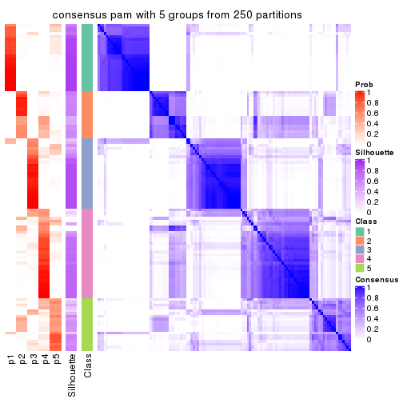
consensus_heatmap(res, k = 6)
Heatmaps for the membership of samples in all partitions to see how consistent they are:
membership_heatmap(res, k = 2)
membership_heatmap(res, k = 3)
membership_heatmap(res, k = 4)
membership_heatmap(res, k = 5)
membership_heatmap(res, k = 6)
As soon as we have had the classes for columns, we can look for signatures which are significantly different between classes which can be candidate marks for certain classes. Following are the heatmaps for signatures.
Signature heatmaps where rows are scaled:
get_signatures(res, k = 2)
get_signatures(res, k = 3)
get_signatures(res, k = 4)
get_signatures(res, k = 5)
get_signatures(res, k = 6)
Signature heatmaps where rows are not scaled:
get_signatures(res, k = 2, scale_rows = FALSE)
get_signatures(res, k = 3, scale_rows = FALSE)
get_signatures(res, k = 4, scale_rows = FALSE)
get_signatures(res, k = 5, scale_rows = FALSE)
get_signatures(res, k = 6, scale_rows = FALSE)
Compare the overlap of signatures from different k:
compare_signatures(res)
get_signature() returns a data frame invisibly. TO get the list of signatures, the function
call should be assigned to a variable explicitly. In following code, if plot argument is set
to FALSE, no heatmap is plotted while only the differential analysis is performed.
# code only for demonstration
tb = get_signature(res, k = ..., plot = FALSE)
An example of the output of tb is:
#> which_row fdr mean_1 mean_2 scaled_mean_1 scaled_mean_2 km
#> 1 38 0.042760348 8.373488 9.131774 -0.5533452 0.5164555 1
#> 2 40 0.018707592 7.106213 8.469186 -0.6173731 0.5762149 1
#> 3 55 0.019134737 10.221463 11.207825 -0.6159697 0.5749050 1
#> 4 59 0.006059896 5.921854 7.869574 -0.6899429 0.6439467 1
#> 5 60 0.018055526 8.928898 10.211722 -0.6204761 0.5791110 1
#> 6 98 0.009384629 15.714769 14.887706 0.6635654 -0.6193277 2
...
The columns in tb are:
which_row: row indices corresponding to the input matrix.fdr: FDR for the differential test. mean_x: The mean value in group x.scaled_mean_x: The mean value in group x after rows are scaled.km: Row groups if k-means clustering is applied to rows.UMAP plot which shows how samples are separated.
dimension_reduction(res, k = 2, method = "UMAP")
dimension_reduction(res, k = 3, method = "UMAP")
dimension_reduction(res, k = 4, method = "UMAP")
dimension_reduction(res, k = 5, method = "UMAP")
dimension_reduction(res, k = 6, method = "UMAP")

Following heatmap shows how subgroups are split when increasing k:
collect_classes(res)
If matrix rows can be associated to genes, consider to use functional_enrichment(res,
...) to perform function enrichment for the signature genes. See this vignette for more detailed explanations.
The object with results only for a single top-value method and a single partition method can be extracted as:
res = res_list["CV", "mclust"]
# you can also extract it by
# res = res_list["CV:mclust"]
A summary of res and all the functions that can be applied to it:
res
#> A 'ConsensusPartition' object with k = 2, 3, 4, 5, 6.
#> On a matrix with 16442 rows and 117 columns.
#> Top rows (1000, 2000, 3000, 4000, 5000) are extracted by 'CV' method.
#> Subgroups are detected by 'mclust' method.
#> Performed in total 1250 partitions by row resampling.
#> Best k for subgroups seems to be 2.
#>
#> Following methods can be applied to this 'ConsensusPartition' object:
#> [1] "cola_report" "collect_classes" "collect_plots"
#> [4] "collect_stats" "colnames" "compare_signatures"
#> [7] "consensus_heatmap" "dimension_reduction" "functional_enrichment"
#> [10] "get_anno_col" "get_anno" "get_classes"
#> [13] "get_consensus" "get_matrix" "get_membership"
#> [16] "get_param" "get_signatures" "get_stats"
#> [19] "is_best_k" "is_stable_k" "membership_heatmap"
#> [22] "ncol" "nrow" "plot_ecdf"
#> [25] "rownames" "select_partition_number" "show"
#> [28] "suggest_best_k" "test_to_known_factors"
collect_plots() function collects all the plots made from res for all k (number of partitions)
into one single page to provide an easy and fast comparison between different k.
collect_plots(res)
The plots are:
k and the heatmap of
predicted classes for each k.k.k.k.All the plots in panels can be made by individual functions and they are plotted later in this section.
select_partition_number() produces several plots showing different
statistics for choosing “optimized” k. There are following statistics:
k;k, the area increased is defined as \(A_k - A_{k-1}\).The detailed explanations of these statistics can be found in the cola vignette.
Generally speaking, lower PAC score, higher mean silhouette score or higher
concordance corresponds to better partition. Rand index and Jaccard index
measure how similar the current partition is compared to partition with k-1.
If they are too similar, we won't accept k is better than k-1.
select_partition_number(res)
The numeric values for all these statistics can be obtained by get_stats().
get_stats(res)
#> k 1-PAC mean_silhouette concordance area_increased Rand Jaccard
#> 2 2 1.000 0.972 0.989 0.4264 0.577 0.577
#> 3 3 0.693 0.882 0.928 0.4947 0.613 0.414
#> 4 4 0.650 0.709 0.788 0.1082 0.916 0.770
#> 5 5 0.612 0.716 0.795 0.0691 0.875 0.620
#> 6 6 0.818 0.835 0.888 0.0462 0.957 0.826
suggest_best_k() suggests the best \(k\) based on these statistics. The rules are as follows:
suggest_best_k(res)
#> [1] 2
Following shows the table of the partitions (You need to click the show/hide
code output link to see it). The membership matrix (columns with name p*)
is inferred by
clue::cl_consensus()
function with the SE method. Basically the value in the membership matrix
represents the probability to belong to a certain group. The finall class
label for an item is determined with the group with highest probability it
belongs to.
In get_classes() function, the entropy is calculated from the membership
matrix and the silhouette score is calculated from the consensus matrix.
cbind(get_classes(res, k = 2), get_membership(res, k = 2))
#> class entropy silhouette p1 p2
#> SRR2443263 2 0.000 0.987 0.000 1.000
#> SRR2443262 2 0.000 0.987 0.000 1.000
#> SRR2443261 2 0.000 0.987 0.000 1.000
#> SRR2443260 2 0.000 0.987 0.000 1.000
#> SRR2443259 2 0.000 0.987 0.000 1.000
#> SRR2443258 2 0.000 0.987 0.000 1.000
#> SRR2443257 2 0.000 0.987 0.000 1.000
#> SRR2443256 2 0.000 0.987 0.000 1.000
#> SRR2443255 2 0.000 0.987 0.000 1.000
#> SRR2443254 2 0.000 0.987 0.000 1.000
#> SRR2443253 2 0.000 0.987 0.000 1.000
#> SRR2443251 2 0.000 0.987 0.000 1.000
#> SRR2443250 2 0.000 0.987 0.000 1.000
#> SRR2443249 2 0.000 0.987 0.000 1.000
#> SRR2443252 2 0.000 0.987 0.000 1.000
#> SRR2443247 1 0.000 0.989 1.000 0.000
#> SRR2443246 1 0.000 0.989 1.000 0.000
#> SRR2443248 2 0.000 0.987 0.000 1.000
#> SRR2443244 1 0.000 0.989 1.000 0.000
#> SRR2443245 1 0.000 0.989 1.000 0.000
#> SRR2443243 1 0.000 0.989 1.000 0.000
#> SRR2443242 1 0.000 0.989 1.000 0.000
#> SRR2443241 1 0.000 0.989 1.000 0.000
#> SRR2443240 1 0.000 0.989 1.000 0.000
#> SRR2443239 1 0.000 0.989 1.000 0.000
#> SRR2443238 1 0.000 0.989 1.000 0.000
#> SRR2443237 1 0.000 0.989 1.000 0.000
#> SRR2443236 1 0.000 0.989 1.000 0.000
#> SRR2443235 1 0.000 0.989 1.000 0.000
#> SRR2443233 1 0.000 0.989 1.000 0.000
#> SRR2443234 1 0.000 0.989 1.000 0.000
#> SRR2443232 1 0.000 0.989 1.000 0.000
#> SRR2443231 1 0.000 0.989 1.000 0.000
#> SRR2443230 1 0.000 0.989 1.000 0.000
#> SRR2443229 1 0.000 0.989 1.000 0.000
#> SRR2443228 1 0.000 0.989 1.000 0.000
#> SRR2443227 1 0.000 0.989 1.000 0.000
#> SRR2443226 1 0.000 0.989 1.000 0.000
#> SRR2443225 1 0.000 0.989 1.000 0.000
#> SRR2443223 2 0.000 0.987 0.000 1.000
#> SRR2443224 1 0.000 0.989 1.000 0.000
#> SRR2443222 1 0.000 0.989 1.000 0.000
#> SRR2443221 1 0.000 0.989 1.000 0.000
#> SRR2443219 1 0.000 0.989 1.000 0.000
#> SRR2443220 2 0.644 0.807 0.164 0.836
#> SRR2443218 1 0.000 0.989 1.000 0.000
#> SRR2443217 1 0.000 0.989 1.000 0.000
#> SRR2443216 2 0.000 0.987 0.000 1.000
#> SRR2443215 1 0.000 0.989 1.000 0.000
#> SRR2443214 1 0.000 0.989 1.000 0.000
#> SRR2443213 1 0.000 0.989 1.000 0.000
#> SRR2443212 1 0.000 0.989 1.000 0.000
#> SRR2443211 1 0.000 0.989 1.000 0.000
#> SRR2443210 1 0.000 0.989 1.000 0.000
#> SRR2443209 1 0.000 0.989 1.000 0.000
#> SRR2443208 1 0.000 0.989 1.000 0.000
#> SRR2443207 1 0.000 0.989 1.000 0.000
#> SRR2443206 1 0.000 0.989 1.000 0.000
#> SRR2443205 1 0.000 0.989 1.000 0.000
#> SRR2443204 1 0.000 0.989 1.000 0.000
#> SRR2443203 1 0.000 0.989 1.000 0.000
#> SRR2443202 1 0.000 0.989 1.000 0.000
#> SRR2443201 2 0.343 0.927 0.064 0.936
#> SRR2443200 1 0.000 0.989 1.000 0.000
#> SRR2443199 1 0.000 0.989 1.000 0.000
#> SRR2443197 1 0.994 0.162 0.544 0.456
#> SRR2443196 1 0.000 0.989 1.000 0.000
#> SRR2443198 2 0.000 0.987 0.000 1.000
#> SRR2443195 1 0.000 0.989 1.000 0.000
#> SRR2443194 2 0.722 0.755 0.200 0.800
#> SRR2443193 1 0.000 0.989 1.000 0.000
#> SRR2443191 1 0.000 0.989 1.000 0.000
#> SRR2443192 1 0.000 0.989 1.000 0.000
#> SRR2443190 1 0.000 0.989 1.000 0.000
#> SRR2443189 1 0.000 0.989 1.000 0.000
#> SRR2443188 1 0.000 0.989 1.000 0.000
#> SRR2443186 1 0.000 0.989 1.000 0.000
#> SRR2443187 1 0.000 0.989 1.000 0.000
#> SRR2443185 2 0.000 0.987 0.000 1.000
#> SRR2443184 2 0.000 0.987 0.000 1.000
#> SRR2443183 1 0.000 0.989 1.000 0.000
#> SRR2443182 1 0.000 0.989 1.000 0.000
#> SRR2443181 1 0.000 0.989 1.000 0.000
#> SRR2443180 1 0.000 0.989 1.000 0.000
#> SRR2443179 1 0.000 0.989 1.000 0.000
#> SRR2443178 1 0.000 0.989 1.000 0.000
#> SRR2443177 1 0.000 0.989 1.000 0.000
#> SRR2443176 1 0.000 0.989 1.000 0.000
#> SRR2443175 1 0.000 0.989 1.000 0.000
#> SRR2443174 1 0.000 0.989 1.000 0.000
#> SRR2443173 1 0.000 0.989 1.000 0.000
#> SRR2443172 1 0.000 0.989 1.000 0.000
#> SRR2443171 1 0.000 0.989 1.000 0.000
#> SRR2443170 1 0.000 0.989 1.000 0.000
#> SRR2443169 1 0.000 0.989 1.000 0.000
#> SRR2443168 1 0.000 0.989 1.000 0.000
#> SRR2443167 2 0.000 0.987 0.000 1.000
#> SRR2443166 2 0.000 0.987 0.000 1.000
#> SRR2443165 2 0.000 0.987 0.000 1.000
#> SRR2443164 1 0.000 0.989 1.000 0.000
#> SRR2443163 2 0.000 0.987 0.000 1.000
#> SRR2443162 2 0.000 0.987 0.000 1.000
#> SRR2443161 2 0.000 0.987 0.000 1.000
#> SRR2443160 2 0.000 0.987 0.000 1.000
#> SRR2443159 2 0.000 0.987 0.000 1.000
#> SRR2443158 2 0.000 0.987 0.000 1.000
#> SRR2443157 2 0.000 0.987 0.000 1.000
#> SRR2443156 1 0.000 0.989 1.000 0.000
#> SRR2443155 1 0.000 0.989 1.000 0.000
#> SRR2443154 1 0.000 0.989 1.000 0.000
#> SRR2443153 1 0.000 0.989 1.000 0.000
#> SRR2443152 1 0.000 0.989 1.000 0.000
#> SRR2443151 1 0.000 0.989 1.000 0.000
#> SRR2443150 1 0.000 0.989 1.000 0.000
#> SRR2443148 1 0.000 0.989 1.000 0.000
#> SRR2443147 1 0.973 0.322 0.596 0.404
#> SRR2443149 2 0.000 0.987 0.000 1.000
cbind(get_classes(res, k = 3), get_membership(res, k = 3))
#> class entropy silhouette p1 p2 p3
#> SRR2443263 3 0.0237 0.914 0.004 0.000 0.996
#> SRR2443262 3 0.0000 0.914 0.000 0.000 1.000
#> SRR2443261 3 0.0000 0.914 0.000 0.000 1.000
#> SRR2443260 3 0.0237 0.914 0.004 0.000 0.996
#> SRR2443259 3 0.0424 0.913 0.008 0.000 0.992
#> SRR2443258 3 0.0237 0.914 0.004 0.000 0.996
#> SRR2443257 3 0.0000 0.914 0.000 0.000 1.000
#> SRR2443256 3 0.0747 0.910 0.016 0.000 0.984
#> SRR2443255 3 0.0237 0.914 0.004 0.000 0.996
#> SRR2443254 3 0.0237 0.914 0.004 0.000 0.996
#> SRR2443253 3 0.0000 0.914 0.000 0.000 1.000
#> SRR2443251 3 0.0000 0.914 0.000 0.000 1.000
#> SRR2443250 3 0.0000 0.914 0.000 0.000 1.000
#> SRR2443249 3 0.0000 0.914 0.000 0.000 1.000
#> SRR2443252 3 0.0000 0.914 0.000 0.000 1.000
#> SRR2443247 3 0.5677 0.791 0.048 0.160 0.792
#> SRR2443246 3 0.5677 0.791 0.048 0.160 0.792
#> SRR2443248 3 0.0000 0.914 0.000 0.000 1.000
#> SRR2443244 2 0.2383 0.911 0.016 0.940 0.044
#> SRR2443245 1 0.0424 0.904 0.992 0.008 0.000
#> SRR2443243 1 0.0424 0.904 0.992 0.008 0.000
#> SRR2443242 2 0.5897 0.787 0.132 0.792 0.076
#> SRR2443241 2 0.2313 0.919 0.032 0.944 0.024
#> SRR2443240 2 0.0000 0.945 0.000 1.000 0.000
#> SRR2443239 2 0.0592 0.943 0.012 0.988 0.000
#> SRR2443238 1 0.0424 0.904 0.992 0.008 0.000
#> SRR2443237 2 0.4953 0.790 0.176 0.808 0.016
#> SRR2443236 2 0.5497 0.564 0.292 0.708 0.000
#> SRR2443235 1 0.5008 0.856 0.804 0.180 0.016
#> SRR2443233 1 0.3619 0.906 0.864 0.136 0.000
#> SRR2443234 1 0.3619 0.906 0.864 0.136 0.000
#> SRR2443232 1 0.4531 0.876 0.824 0.168 0.008
#> SRR2443231 1 0.3619 0.906 0.864 0.136 0.000
#> SRR2443230 1 0.4802 0.878 0.824 0.156 0.020
#> SRR2443229 2 0.4056 0.850 0.032 0.876 0.092
#> SRR2443228 2 0.0000 0.945 0.000 1.000 0.000
#> SRR2443227 1 0.0424 0.904 0.992 0.008 0.000
#> SRR2443226 1 0.0424 0.904 0.992 0.008 0.000
#> SRR2443225 3 0.6405 0.776 0.172 0.072 0.756
#> SRR2443223 3 0.0000 0.914 0.000 0.000 1.000
#> SRR2443224 2 0.0424 0.944 0.008 0.992 0.000
#> SRR2443222 2 0.0000 0.945 0.000 1.000 0.000
#> SRR2443221 2 0.0000 0.945 0.000 1.000 0.000
#> SRR2443219 2 0.1774 0.929 0.024 0.960 0.016
#> SRR2443220 3 0.2152 0.897 0.016 0.036 0.948
#> SRR2443218 2 0.0237 0.945 0.004 0.996 0.000
#> SRR2443217 3 0.5689 0.774 0.036 0.184 0.780
#> SRR2443216 3 0.0000 0.914 0.000 0.000 1.000
#> SRR2443215 2 0.1491 0.933 0.016 0.968 0.016
#> SRR2443214 1 0.0424 0.904 0.992 0.008 0.000
#> SRR2443213 1 0.3619 0.906 0.864 0.136 0.000
#> SRR2443212 2 0.0000 0.945 0.000 1.000 0.000
#> SRR2443211 2 0.0000 0.945 0.000 1.000 0.000
#> SRR2443210 2 0.0000 0.945 0.000 1.000 0.000
#> SRR2443209 2 0.2031 0.924 0.032 0.952 0.016
#> SRR2443208 2 0.0592 0.942 0.012 0.988 0.000
#> SRR2443207 2 0.0237 0.945 0.004 0.996 0.000
#> SRR2443206 2 0.0000 0.945 0.000 1.000 0.000
#> SRR2443205 2 0.0000 0.945 0.000 1.000 0.000
#> SRR2443204 1 0.0424 0.904 0.992 0.008 0.000
#> SRR2443203 3 0.6181 0.790 0.156 0.072 0.772
#> SRR2443202 3 0.6482 0.635 0.024 0.296 0.680
#> SRR2443201 3 0.0983 0.908 0.004 0.016 0.980
#> SRR2443200 2 0.0000 0.945 0.000 1.000 0.000
#> SRR2443199 2 0.4802 0.806 0.156 0.824 0.020
#> SRR2443197 3 0.5507 0.817 0.136 0.056 0.808
#> SRR2443196 3 0.6644 0.770 0.160 0.092 0.748
#> SRR2443198 3 0.0000 0.914 0.000 0.000 1.000
#> SRR2443195 1 0.0424 0.904 0.992 0.008 0.000
#> SRR2443194 3 0.2269 0.894 0.016 0.040 0.944
#> SRR2443193 1 0.3412 0.908 0.876 0.124 0.000
#> SRR2443191 2 0.4865 0.795 0.032 0.832 0.136
#> SRR2443192 2 0.4539 0.816 0.148 0.836 0.016
#> SRR2443190 1 0.3619 0.906 0.864 0.136 0.000
#> SRR2443189 1 0.0892 0.901 0.980 0.020 0.000
#> SRR2443188 1 0.3619 0.906 0.864 0.136 0.000
#> SRR2443186 2 0.0000 0.945 0.000 1.000 0.000
#> SRR2443187 2 0.0000 0.945 0.000 1.000 0.000
#> SRR2443185 3 0.0000 0.914 0.000 0.000 1.000
#> SRR2443184 3 0.0000 0.914 0.000 0.000 1.000
#> SRR2443183 1 0.3619 0.906 0.864 0.136 0.000
#> SRR2443182 3 0.5454 0.802 0.044 0.152 0.804
#> SRR2443181 2 0.0000 0.945 0.000 1.000 0.000
#> SRR2443180 2 0.0983 0.939 0.016 0.980 0.004
#> SRR2443179 3 0.7617 0.702 0.152 0.160 0.688
#> SRR2443178 1 0.0424 0.904 0.992 0.008 0.000
#> SRR2443177 1 0.0424 0.904 0.992 0.008 0.000
#> SRR2443176 3 0.5835 0.782 0.052 0.164 0.784
#> SRR2443175 3 0.5677 0.791 0.048 0.160 0.792
#> SRR2443174 1 0.4782 0.873 0.820 0.164 0.016
#> SRR2443173 2 0.0000 0.945 0.000 1.000 0.000
#> SRR2443172 2 0.0000 0.945 0.000 1.000 0.000
#> SRR2443171 3 0.5677 0.791 0.048 0.160 0.792
#> SRR2443170 2 0.0747 0.940 0.016 0.984 0.000
#> SRR2443169 3 0.5677 0.791 0.048 0.160 0.792
#> SRR2443168 3 0.7187 0.126 0.024 0.480 0.496
#> SRR2443167 3 0.0000 0.914 0.000 0.000 1.000
#> SRR2443166 3 0.1170 0.909 0.016 0.008 0.976
#> SRR2443165 3 0.0000 0.914 0.000 0.000 1.000
#> SRR2443164 2 0.0000 0.945 0.000 1.000 0.000
#> SRR2443163 3 0.0000 0.914 0.000 0.000 1.000
#> SRR2443162 3 0.0237 0.914 0.004 0.000 0.996
#> SRR2443161 3 0.0237 0.914 0.004 0.000 0.996
#> SRR2443160 3 0.0000 0.914 0.000 0.000 1.000
#> SRR2443159 3 0.0000 0.914 0.000 0.000 1.000
#> SRR2443158 3 0.0237 0.914 0.004 0.000 0.996
#> SRR2443157 3 0.1905 0.901 0.016 0.028 0.956
#> SRR2443156 2 0.0592 0.943 0.012 0.988 0.000
#> SRR2443155 2 0.0747 0.940 0.016 0.984 0.000
#> SRR2443154 2 0.6062 0.555 0.016 0.708 0.276
#> SRR2443153 1 0.3619 0.906 0.864 0.136 0.000
#> SRR2443152 2 0.0000 0.945 0.000 1.000 0.000
#> SRR2443151 2 0.0424 0.944 0.008 0.992 0.000
#> SRR2443150 2 0.0000 0.945 0.000 1.000 0.000
#> SRR2443148 2 0.1636 0.933 0.020 0.964 0.016
#> SRR2443147 3 0.4033 0.831 0.008 0.136 0.856
#> SRR2443149 3 0.0661 0.912 0.008 0.004 0.988
cbind(get_classes(res, k = 4), get_membership(res, k = 4))
#> class entropy silhouette p1 p2 p3 p4
#> SRR2443263 3 0.0000 0.8688 0.000 0.000 1.000 0.000
#> SRR2443262 3 0.2921 0.8646 0.000 0.000 0.860 0.140
#> SRR2443261 3 0.2921 0.8646 0.000 0.000 0.860 0.140
#> SRR2443260 3 0.0000 0.8688 0.000 0.000 1.000 0.000
#> SRR2443259 3 0.0000 0.8688 0.000 0.000 1.000 0.000
#> SRR2443258 3 0.0000 0.8688 0.000 0.000 1.000 0.000
#> SRR2443257 3 0.2921 0.8646 0.000 0.000 0.860 0.140
#> SRR2443256 3 0.0000 0.8688 0.000 0.000 1.000 0.000
#> SRR2443255 3 0.0000 0.8688 0.000 0.000 1.000 0.000
#> SRR2443254 3 0.0000 0.8688 0.000 0.000 1.000 0.000
#> SRR2443253 3 0.2921 0.8646 0.000 0.000 0.860 0.140
#> SRR2443251 3 0.2921 0.8646 0.000 0.000 0.860 0.140
#> SRR2443250 3 0.2921 0.8646 0.000 0.000 0.860 0.140
#> SRR2443249 3 0.2921 0.8646 0.000 0.000 0.860 0.140
#> SRR2443252 3 0.0707 0.8698 0.000 0.000 0.980 0.020
#> SRR2443247 3 0.6347 0.7040 0.076 0.028 0.688 0.208
#> SRR2443246 3 0.6340 0.7006 0.060 0.040 0.692 0.208
#> SRR2443248 3 0.2363 0.8637 0.000 0.056 0.920 0.024
#> SRR2443244 4 0.6140 0.8275 0.028 0.424 0.012 0.536
#> SRR2443245 1 0.3486 0.8520 0.812 0.000 0.000 0.188
#> SRR2443243 1 0.3486 0.8520 0.812 0.000 0.000 0.188
#> SRR2443242 4 0.6640 0.8343 0.036 0.400 0.028 0.536
#> SRR2443241 2 0.5943 -0.2205 0.048 0.592 0.000 0.360
#> SRR2443240 2 0.0000 0.7338 0.000 1.000 0.000 0.000
#> SRR2443239 2 0.1867 0.6858 0.000 0.928 0.000 0.072
#> SRR2443238 1 0.3486 0.8520 0.812 0.000 0.000 0.188
#> SRR2443237 4 0.6474 0.8154 0.044 0.384 0.016 0.556
#> SRR2443236 1 0.7808 -0.1695 0.416 0.312 0.000 0.272
#> SRR2443235 1 0.4193 0.7149 0.796 0.016 0.004 0.184
#> SRR2443233 1 0.0592 0.8608 0.984 0.016 0.000 0.000
#> SRR2443234 1 0.0592 0.8608 0.984 0.016 0.000 0.000
#> SRR2443232 1 0.3969 0.7595 0.804 0.016 0.000 0.180
#> SRR2443231 1 0.0592 0.8608 0.984 0.016 0.000 0.000
#> SRR2443230 1 0.4644 0.7420 0.784 0.016 0.020 0.180
#> SRR2443229 4 0.6491 0.7314 0.076 0.396 0.000 0.528
#> SRR2443228 2 0.1059 0.7160 0.000 0.972 0.012 0.016
#> SRR2443227 1 0.2814 0.8584 0.868 0.000 0.000 0.132
#> SRR2443226 1 0.3486 0.8520 0.812 0.000 0.000 0.188
#> SRR2443225 3 0.5645 0.7588 0.044 0.108 0.768 0.080
#> SRR2443223 3 0.2921 0.8646 0.000 0.000 0.860 0.140
#> SRR2443224 2 0.0000 0.7338 0.000 1.000 0.000 0.000
#> SRR2443222 2 0.0592 0.7257 0.000 0.984 0.000 0.016
#> SRR2443221 2 0.0592 0.7257 0.000 0.984 0.000 0.016
#> SRR2443219 4 0.6365 0.8026 0.028 0.440 0.020 0.512
#> SRR2443220 3 0.4782 0.8179 0.000 0.068 0.780 0.152
#> SRR2443218 2 0.1975 0.6875 0.028 0.944 0.012 0.016
#> SRR2443217 3 0.5051 0.7813 0.028 0.092 0.800 0.080
#> SRR2443216 3 0.0188 0.8692 0.000 0.000 0.996 0.004
#> SRR2443215 4 0.6126 0.8337 0.028 0.416 0.012 0.544
#> SRR2443214 1 0.3486 0.8520 0.812 0.000 0.000 0.188
#> SRR2443213 1 0.0592 0.8608 0.984 0.016 0.000 0.000
#> SRR2443212 2 0.4891 0.0909 0.012 0.680 0.000 0.308
#> SRR2443211 2 0.0000 0.7338 0.000 1.000 0.000 0.000
#> SRR2443210 2 0.0592 0.7257 0.000 0.984 0.000 0.016
#> SRR2443209 2 0.7281 -0.1624 0.048 0.552 0.060 0.340
#> SRR2443208 2 0.5657 -0.5628 0.024 0.540 0.000 0.436
#> SRR2443207 2 0.4164 0.2672 0.000 0.736 0.000 0.264
#> SRR2443206 2 0.0000 0.7338 0.000 1.000 0.000 0.000
#> SRR2443205 2 0.0000 0.7338 0.000 1.000 0.000 0.000
#> SRR2443204 1 0.3486 0.8520 0.812 0.000 0.000 0.188
#> SRR2443203 3 0.6869 0.6820 0.088 0.144 0.688 0.080
#> SRR2443202 4 0.7906 0.5960 0.032 0.252 0.176 0.540
#> SRR2443201 3 0.3919 0.8555 0.000 0.056 0.840 0.104
#> SRR2443200 2 0.2587 0.6745 0.028 0.920 0.012 0.040
#> SRR2443199 4 0.6638 0.8366 0.040 0.404 0.024 0.532
#> SRR2443197 3 0.6062 0.7270 0.044 0.140 0.736 0.080
#> SRR2443196 3 0.8714 -0.1958 0.044 0.228 0.392 0.336
#> SRR2443198 3 0.3278 0.8654 0.000 0.020 0.864 0.116
#> SRR2443195 1 0.3486 0.8520 0.812 0.000 0.000 0.188
#> SRR2443194 3 0.4444 0.7921 0.000 0.120 0.808 0.072
#> SRR2443193 1 0.0336 0.8604 0.992 0.008 0.000 0.000
#> SRR2443191 2 0.7464 -0.2021 0.048 0.540 0.072 0.340
#> SRR2443192 4 0.6194 0.8268 0.044 0.416 0.004 0.536
#> SRR2443190 1 0.0592 0.8608 0.984 0.016 0.000 0.000
#> SRR2443189 1 0.3726 0.8439 0.788 0.000 0.000 0.212
#> SRR2443188 1 0.0592 0.8608 0.984 0.016 0.000 0.000
#> SRR2443186 2 0.0000 0.7338 0.000 1.000 0.000 0.000
#> SRR2443187 2 0.0921 0.7231 0.000 0.972 0.000 0.028
#> SRR2443185 3 0.2868 0.8652 0.000 0.000 0.864 0.136
#> SRR2443184 3 0.2466 0.8681 0.000 0.004 0.900 0.096
#> SRR2443183 1 0.0592 0.8608 0.984 0.016 0.000 0.000
#> SRR2443182 3 0.4492 0.8017 0.084 0.012 0.824 0.080
#> SRR2443181 2 0.0000 0.7338 0.000 1.000 0.000 0.000
#> SRR2443180 4 0.6179 0.7596 0.028 0.456 0.012 0.504
#> SRR2443179 4 0.8283 0.5618 0.044 0.252 0.196 0.508
#> SRR2443178 1 0.6267 0.6933 0.664 0.148 0.000 0.188
#> SRR2443177 1 0.3486 0.8520 0.812 0.000 0.000 0.188
#> SRR2443176 3 0.5145 0.7809 0.112 0.020 0.788 0.080
#> SRR2443175 3 0.6216 0.7079 0.068 0.028 0.696 0.208
#> SRR2443174 1 0.4151 0.7565 0.800 0.016 0.004 0.180
#> SRR2443173 2 0.0000 0.7338 0.000 1.000 0.000 0.000
#> SRR2443172 2 0.0000 0.7338 0.000 1.000 0.000 0.000
#> SRR2443171 3 0.6347 0.7040 0.076 0.028 0.688 0.208
#> SRR2443170 2 0.5022 0.4270 0.048 0.756 0.004 0.192
#> SRR2443169 3 0.6471 0.6996 0.084 0.028 0.680 0.208
#> SRR2443168 2 0.7304 -0.0891 0.000 0.448 0.400 0.152
#> SRR2443167 3 0.2921 0.8646 0.000 0.000 0.860 0.140
#> SRR2443166 3 0.3370 0.8309 0.048 0.000 0.872 0.080
#> SRR2443165 3 0.2882 0.8682 0.000 0.024 0.892 0.084
#> SRR2443164 2 0.1247 0.7140 0.004 0.968 0.012 0.016
#> SRR2443163 3 0.2921 0.8646 0.000 0.000 0.860 0.140
#> SRR2443162 3 0.0000 0.8688 0.000 0.000 1.000 0.000
#> SRR2443161 3 0.0000 0.8688 0.000 0.000 1.000 0.000
#> SRR2443160 3 0.2921 0.8646 0.000 0.000 0.860 0.140
#> SRR2443159 3 0.2921 0.8646 0.000 0.000 0.860 0.140
#> SRR2443158 3 0.0000 0.8688 0.000 0.000 1.000 0.000
#> SRR2443157 3 0.3439 0.8296 0.048 0.000 0.868 0.084
#> SRR2443156 2 0.4194 0.3743 0.000 0.764 0.008 0.228
#> SRR2443155 2 0.5638 0.4466 0.068 0.772 0.060 0.100
#> SRR2443154 2 0.9075 -0.1784 0.060 0.332 0.320 0.288
#> SRR2443153 1 0.0927 0.8587 0.976 0.016 0.000 0.008
#> SRR2443152 2 0.0000 0.7338 0.000 1.000 0.000 0.000
#> SRR2443151 2 0.3702 0.6030 0.028 0.860 0.012 0.100
#> SRR2443150 2 0.0000 0.7338 0.000 1.000 0.000 0.000
#> SRR2443148 4 0.6133 0.8310 0.028 0.420 0.012 0.540
#> SRR2443147 3 0.4889 0.7632 0.028 0.148 0.792 0.032
#> SRR2443149 3 0.1211 0.8597 0.000 0.000 0.960 0.040
cbind(get_classes(res, k = 5), get_membership(res, k = 5))
#> class entropy silhouette p1 p2 p3 p4 p5
#> SRR2443263 3 0.470 0.8320 0.060 0.000 0.768 0.032 0.140
#> SRR2443262 3 0.000 0.8463 0.000 0.000 1.000 0.000 0.000
#> SRR2443261 3 0.000 0.8463 0.000 0.000 1.000 0.000 0.000
#> SRR2443260 3 0.413 0.8384 0.028 0.000 0.800 0.032 0.140
#> SRR2443259 3 0.497 0.8273 0.056 0.000 0.752 0.048 0.144
#> SRR2443258 3 0.497 0.8273 0.056 0.000 0.752 0.048 0.144
#> SRR2443257 3 0.000 0.8463 0.000 0.000 1.000 0.000 0.000
#> SRR2443256 3 0.508 0.8222 0.124 0.000 0.752 0.056 0.068
#> SRR2443255 3 0.497 0.8273 0.056 0.000 0.752 0.048 0.144
#> SRR2443254 3 0.365 0.8401 0.008 0.000 0.820 0.032 0.140
#> SRR2443253 3 0.000 0.8463 0.000 0.000 1.000 0.000 0.000
#> SRR2443251 3 0.000 0.8463 0.000 0.000 1.000 0.000 0.000
#> SRR2443250 3 0.000 0.8463 0.000 0.000 1.000 0.000 0.000
#> SRR2443249 3 0.000 0.8463 0.000 0.000 1.000 0.000 0.000
#> SRR2443252 3 0.352 0.8403 0.004 0.000 0.824 0.032 0.140
#> SRR2443247 1 0.400 0.5936 0.804 0.004 0.040 0.008 0.144
#> SRR2443246 5 0.607 0.3960 0.332 0.020 0.064 0.008 0.576
#> SRR2443248 3 0.299 0.8126 0.004 0.080 0.872 0.000 0.044
#> SRR2443244 2 0.112 0.6942 0.000 0.956 0.000 0.000 0.044
#> SRR2443245 4 0.120 0.9769 0.048 0.000 0.000 0.952 0.000
#> SRR2443243 4 0.120 0.9769 0.048 0.000 0.000 0.952 0.000
#> SRR2443242 2 0.157 0.6961 0.000 0.948 0.008 0.012 0.032
#> SRR2443241 5 0.443 0.7122 0.008 0.320 0.000 0.008 0.664
#> SRR2443240 5 0.269 0.8113 0.000 0.156 0.000 0.000 0.844
#> SRR2443239 2 0.307 0.6149 0.000 0.804 0.000 0.000 0.196
#> SRR2443238 4 0.127 0.9734 0.052 0.000 0.000 0.948 0.000
#> SRR2443237 2 0.139 0.6935 0.000 0.952 0.000 0.016 0.032
#> SRR2443236 5 0.672 0.2001 0.204 0.024 0.000 0.228 0.544
#> SRR2443235 1 0.328 0.7205 0.836 0.032 0.000 0.132 0.000
#> SRR2443233 1 0.373 0.7182 0.712 0.000 0.000 0.288 0.000
#> SRR2443234 1 0.373 0.7182 0.712 0.000 0.000 0.288 0.000
#> SRR2443232 1 0.192 0.7086 0.924 0.004 0.000 0.064 0.008
#> SRR2443231 1 0.342 0.7288 0.760 0.000 0.000 0.240 0.000
#> SRR2443230 1 0.190 0.7088 0.928 0.004 0.000 0.056 0.012
#> SRR2443229 2 0.833 0.1304 0.220 0.412 0.228 0.008 0.132
#> SRR2443228 2 0.233 0.6687 0.000 0.876 0.000 0.000 0.124
#> SRR2443227 1 0.428 0.4424 0.548 0.000 0.000 0.452 0.000
#> SRR2443226 4 0.120 0.9769 0.048 0.000 0.000 0.952 0.000
#> SRR2443225 3 0.600 0.7003 0.084 0.172 0.688 0.020 0.036
#> SRR2443223 3 0.000 0.8463 0.000 0.000 1.000 0.000 0.000
#> SRR2443224 5 0.289 0.8080 0.000 0.148 0.000 0.008 0.844
#> SRR2443222 2 0.415 0.2949 0.000 0.612 0.000 0.000 0.388
#> SRR2443221 2 0.314 0.6175 0.000 0.796 0.000 0.000 0.204
#> SRR2443219 2 0.391 0.6745 0.000 0.800 0.132 0.000 0.068
#> SRR2443220 3 0.277 0.7743 0.000 0.164 0.836 0.000 0.000
#> SRR2443218 2 0.305 0.6828 0.000 0.852 0.028 0.000 0.120
#> SRR2443217 3 0.590 0.5946 0.048 0.276 0.632 0.008 0.036
#> SRR2443216 3 0.460 0.8344 0.056 0.000 0.776 0.032 0.136
#> SRR2443215 2 0.088 0.6941 0.000 0.968 0.000 0.000 0.032
#> SRR2443214 4 0.120 0.9769 0.048 0.000 0.000 0.952 0.000
#> SRR2443213 1 0.373 0.7182 0.712 0.000 0.000 0.288 0.000
#> SRR2443212 2 0.368 0.4438 0.000 0.720 0.000 0.000 0.280
#> SRR2443211 5 0.269 0.8113 0.000 0.156 0.000 0.000 0.844
#> SRR2443210 2 0.414 0.2566 0.000 0.616 0.000 0.000 0.384
#> SRR2443209 5 0.498 0.7210 0.052 0.256 0.000 0.008 0.684
#> SRR2443208 2 0.359 0.4235 0.000 0.736 0.000 0.000 0.264
#> SRR2443207 5 0.409 0.6370 0.000 0.368 0.000 0.000 0.632
#> SRR2443206 5 0.361 0.6840 0.000 0.268 0.000 0.000 0.732
#> SRR2443205 5 0.269 0.8113 0.000 0.156 0.000 0.000 0.844
#> SRR2443204 4 0.120 0.9769 0.048 0.000 0.000 0.952 0.000
#> SRR2443203 3 0.587 0.7038 0.072 0.176 0.696 0.020 0.036
#> SRR2443202 2 0.501 0.1437 0.000 0.540 0.428 0.000 0.032
#> SRR2443201 3 0.313 0.7907 0.000 0.120 0.848 0.000 0.032
#> SRR2443200 2 0.228 0.6712 0.000 0.880 0.000 0.000 0.120
#> SRR2443199 2 0.306 0.6655 0.000 0.844 0.136 0.020 0.000
#> SRR2443197 3 0.397 0.7758 0.064 0.144 0.792 0.000 0.000
#> SRR2443196 3 0.769 -0.0841 0.016 0.360 0.384 0.208 0.032
#> SRR2443198 3 0.029 0.8458 0.000 0.008 0.992 0.000 0.000
#> SRR2443195 4 0.120 0.9769 0.048 0.000 0.000 0.952 0.000
#> SRR2443194 3 0.416 0.7625 0.004 0.172 0.780 0.040 0.004
#> SRR2443193 1 0.431 0.3351 0.508 0.000 0.000 0.492 0.000
#> SRR2443191 5 0.463 0.7226 0.008 0.304 0.008 0.008 0.672
#> SRR2443192 2 0.128 0.6937 0.000 0.956 0.000 0.012 0.032
#> SRR2443190 1 0.373 0.7182 0.712 0.000 0.000 0.288 0.000
#> SRR2443189 4 0.154 0.9584 0.068 0.000 0.000 0.932 0.000
#> SRR2443188 1 0.375 0.7152 0.708 0.000 0.000 0.292 0.000
#> SRR2443186 5 0.269 0.8113 0.000 0.156 0.000 0.000 0.844
#> SRR2443187 5 0.418 0.3894 0.000 0.400 0.000 0.000 0.600
#> SRR2443185 3 0.000 0.8463 0.000 0.000 1.000 0.000 0.000
#> SRR2443184 3 0.117 0.8488 0.000 0.000 0.960 0.032 0.008
#> SRR2443183 1 0.373 0.7182 0.712 0.000 0.000 0.288 0.000
#> SRR2443182 3 0.469 0.7650 0.248 0.024 0.712 0.008 0.008
#> SRR2443181 5 0.269 0.8113 0.000 0.156 0.000 0.000 0.844
#> SRR2443180 2 0.273 0.6874 0.000 0.868 0.116 0.000 0.016
#> SRR2443179 2 0.506 0.2605 0.012 0.580 0.388 0.020 0.000
#> SRR2443178 4 0.291 0.8251 0.016 0.068 0.000 0.884 0.032
#> SRR2443177 4 0.120 0.9769 0.048 0.000 0.000 0.952 0.000
#> SRR2443176 3 0.459 0.7496 0.280 0.016 0.692 0.008 0.004
#> SRR2443175 1 0.436 0.5787 0.780 0.004 0.056 0.008 0.152
#> SRR2443174 1 0.190 0.7088 0.928 0.004 0.000 0.056 0.012
#> SRR2443173 5 0.269 0.8113 0.000 0.156 0.000 0.000 0.844
#> SRR2443172 5 0.269 0.8113 0.000 0.156 0.000 0.000 0.844
#> SRR2443171 1 0.421 0.5893 0.792 0.004 0.052 0.008 0.144
#> SRR2443170 5 0.427 0.7828 0.040 0.188 0.000 0.008 0.764
#> SRR2443169 1 0.376 0.5957 0.816 0.004 0.028 0.008 0.144
#> SRR2443168 5 0.546 0.6915 0.004 0.244 0.080 0.008 0.664
#> SRR2443167 3 0.000 0.8463 0.000 0.000 1.000 0.000 0.000
#> SRR2443166 3 0.422 0.7913 0.220 0.000 0.748 0.024 0.008
#> SRR2443165 3 0.208 0.8483 0.040 0.000 0.920 0.000 0.040
#> SRR2443164 2 0.455 0.6613 0.000 0.752 0.124 0.000 0.124
#> SRR2443163 3 0.000 0.8463 0.000 0.000 1.000 0.000 0.000
#> SRR2443162 3 0.497 0.8273 0.056 0.000 0.752 0.048 0.144
#> SRR2443161 3 0.429 0.8372 0.036 0.000 0.792 0.032 0.140
#> SRR2443160 3 0.000 0.8463 0.000 0.000 1.000 0.000 0.000
#> SRR2443159 3 0.000 0.8463 0.000 0.000 1.000 0.000 0.000
#> SRR2443158 3 0.457 0.8340 0.052 0.000 0.776 0.032 0.140
#> SRR2443157 3 0.439 0.7762 0.244 0.000 0.724 0.024 0.008
#> SRR2443156 5 0.406 0.7508 0.004 0.272 0.000 0.008 0.716
#> SRR2443155 5 0.363 0.6186 0.196 0.008 0.000 0.008 0.788
#> SRR2443154 5 0.541 0.7263 0.036 0.252 0.028 0.008 0.676
#> SRR2443153 1 0.355 0.7295 0.760 0.004 0.000 0.236 0.000
#> SRR2443152 5 0.269 0.8113 0.000 0.156 0.000 0.000 0.844
#> SRR2443151 2 0.445 0.6644 0.000 0.760 0.132 0.000 0.108
#> SRR2443150 5 0.269 0.8113 0.000 0.156 0.000 0.000 0.844
#> SRR2443148 2 0.254 0.6789 0.000 0.868 0.128 0.000 0.004
#> SRR2443147 3 0.423 0.2639 0.000 0.420 0.580 0.000 0.000
#> SRR2443149 3 0.450 0.8350 0.048 0.000 0.780 0.032 0.140
cbind(get_classes(res, k = 6), get_membership(res, k = 6))
#> class entropy silhouette p1 p2 p3 p4 p5 p6
#> SRR2443263 3 0.3123 0.8863 0.000 0.000 0.832 0.000 0.056 0.112
#> SRR2443262 3 0.0000 0.9075 0.000 0.000 1.000 0.000 0.000 0.000
#> SRR2443261 3 0.0000 0.9075 0.000 0.000 1.000 0.000 0.000 0.000
#> SRR2443260 3 0.2651 0.8928 0.000 0.000 0.860 0.000 0.028 0.112
#> SRR2443259 3 0.3240 0.8777 0.000 0.000 0.812 0.000 0.040 0.148
#> SRR2443258 3 0.3240 0.8777 0.000 0.000 0.812 0.000 0.040 0.148
#> SRR2443257 3 0.0000 0.9075 0.000 0.000 1.000 0.000 0.000 0.000
#> SRR2443256 3 0.3701 0.8604 0.000 0.000 0.788 0.000 0.100 0.112
#> SRR2443255 3 0.3240 0.8777 0.000 0.000 0.812 0.000 0.040 0.148
#> SRR2443254 3 0.2605 0.8940 0.000 0.000 0.864 0.000 0.028 0.108
#> SRR2443253 3 0.0000 0.9075 0.000 0.000 1.000 0.000 0.000 0.000
#> SRR2443251 3 0.0000 0.9075 0.000 0.000 1.000 0.000 0.000 0.000
#> SRR2443250 3 0.0000 0.9075 0.000 0.000 1.000 0.000 0.000 0.000
#> SRR2443249 3 0.0000 0.9075 0.000 0.000 1.000 0.000 0.000 0.000
#> SRR2443252 3 0.2145 0.9023 0.000 0.000 0.900 0.000 0.028 0.072
#> SRR2443247 5 0.1010 0.9347 0.036 0.000 0.004 0.000 0.960 0.000
#> SRR2443246 5 0.1124 0.9321 0.036 0.000 0.008 0.000 0.956 0.000
#> SRR2443248 3 0.1053 0.9085 0.004 0.020 0.964 0.000 0.000 0.012
#> SRR2443244 4 0.0713 0.8767 0.000 0.028 0.000 0.972 0.000 0.000
#> SRR2443245 6 0.2631 0.9243 0.180 0.000 0.000 0.000 0.000 0.820
#> SRR2443243 6 0.2631 0.9243 0.180 0.000 0.000 0.000 0.000 0.820
#> SRR2443242 4 0.1148 0.8754 0.000 0.020 0.000 0.960 0.004 0.016
#> SRR2443241 2 0.3635 0.8022 0.016 0.800 0.008 0.156 0.020 0.000
#> SRR2443240 2 0.0820 0.8803 0.000 0.972 0.000 0.012 0.000 0.016
#> SRR2443239 4 0.3221 0.6275 0.000 0.264 0.000 0.736 0.000 0.000
#> SRR2443238 6 0.2730 0.9145 0.192 0.000 0.000 0.000 0.000 0.808
#> SRR2443237 4 0.1148 0.8751 0.000 0.020 0.000 0.960 0.004 0.016
#> SRR2443236 1 0.3915 0.5267 0.704 0.272 0.000 0.004 0.000 0.020
#> SRR2443235 1 0.2266 0.8100 0.880 0.000 0.000 0.012 0.108 0.000
#> SRR2443233 1 0.0000 0.9144 1.000 0.000 0.000 0.000 0.000 0.000
#> SRR2443234 1 0.0000 0.9144 1.000 0.000 0.000 0.000 0.000 0.000
#> SRR2443232 1 0.3405 0.5598 0.724 0.000 0.000 0.000 0.272 0.004
#> SRR2443231 1 0.0363 0.9085 0.988 0.000 0.000 0.000 0.012 0.000
#> SRR2443230 5 0.3652 0.5542 0.324 0.000 0.000 0.000 0.672 0.004
#> SRR2443229 4 0.5757 0.0241 0.088 0.404 0.020 0.484 0.004 0.000
#> SRR2443228 4 0.1204 0.8698 0.000 0.056 0.000 0.944 0.000 0.000
#> SRR2443227 1 0.1204 0.8721 0.944 0.000 0.000 0.000 0.000 0.056
#> SRR2443226 6 0.2631 0.9243 0.180 0.000 0.000 0.000 0.000 0.820
#> SRR2443225 3 0.4500 0.8290 0.028 0.020 0.792 0.096 0.040 0.024
#> SRR2443223 3 0.0000 0.9075 0.000 0.000 1.000 0.000 0.000 0.000
#> SRR2443224 2 0.0508 0.8805 0.000 0.984 0.000 0.012 0.000 0.004
#> SRR2443222 4 0.1951 0.8556 0.000 0.076 0.000 0.908 0.000 0.016
#> SRR2443221 4 0.1779 0.8622 0.000 0.064 0.000 0.920 0.000 0.016
#> SRR2443219 4 0.0891 0.8778 0.000 0.024 0.008 0.968 0.000 0.000
#> SRR2443220 3 0.1204 0.8955 0.000 0.000 0.944 0.056 0.000 0.000
#> SRR2443218 4 0.1204 0.8698 0.000 0.056 0.000 0.944 0.000 0.000
#> SRR2443217 3 0.3946 0.8537 0.020 0.040 0.820 0.064 0.056 0.000
#> SRR2443216 3 0.2600 0.9013 0.000 0.004 0.876 0.000 0.036 0.084
#> SRR2443215 4 0.0951 0.8766 0.000 0.020 0.000 0.968 0.004 0.008
#> SRR2443214 6 0.2631 0.9243 0.180 0.000 0.000 0.000 0.000 0.820
#> SRR2443213 1 0.0000 0.9144 1.000 0.000 0.000 0.000 0.000 0.000
#> SRR2443212 4 0.1895 0.8731 0.000 0.072 0.000 0.912 0.000 0.016
#> SRR2443211 2 0.0820 0.8803 0.000 0.972 0.000 0.012 0.000 0.016
#> SRR2443210 4 0.3348 0.7120 0.000 0.216 0.000 0.768 0.000 0.016
#> SRR2443209 2 0.3059 0.8383 0.012 0.860 0.000 0.072 0.052 0.004
#> SRR2443208 4 0.2358 0.8252 0.000 0.108 0.000 0.876 0.000 0.016
#> SRR2443207 2 0.3938 0.5380 0.000 0.660 0.000 0.324 0.000 0.016
#> SRR2443206 2 0.4229 0.1065 0.000 0.548 0.000 0.436 0.000 0.016
#> SRR2443205 2 0.1245 0.8761 0.000 0.952 0.000 0.032 0.000 0.016
#> SRR2443204 6 0.2664 0.9203 0.184 0.000 0.000 0.000 0.000 0.816
#> SRR2443203 3 0.6613 0.4698 0.012 0.020 0.552 0.112 0.040 0.264
#> SRR2443202 4 0.0951 0.8771 0.000 0.020 0.004 0.968 0.000 0.008
#> SRR2443201 3 0.1334 0.8998 0.000 0.020 0.948 0.032 0.000 0.000
#> SRR2443200 4 0.1204 0.8698 0.000 0.056 0.000 0.944 0.000 0.000
#> SRR2443199 4 0.0951 0.8727 0.000 0.008 0.000 0.968 0.004 0.020
#> SRR2443197 3 0.3028 0.8737 0.000 0.012 0.864 0.076 0.040 0.008
#> SRR2443196 6 0.5463 0.1912 0.024 0.020 0.016 0.416 0.008 0.516
#> SRR2443198 3 0.0405 0.9070 0.000 0.008 0.988 0.004 0.000 0.000
#> SRR2443195 6 0.2631 0.9243 0.180 0.000 0.000 0.000 0.000 0.820
#> SRR2443194 3 0.2679 0.8715 0.000 0.012 0.872 0.100 0.008 0.008
#> SRR2443193 1 0.0260 0.9106 0.992 0.000 0.000 0.000 0.000 0.008
#> SRR2443191 2 0.4625 0.7689 0.016 0.776 0.080 0.076 0.048 0.004
#> SRR2443192 4 0.1148 0.8751 0.000 0.020 0.000 0.960 0.004 0.016
#> SRR2443190 1 0.0000 0.9144 1.000 0.000 0.000 0.000 0.000 0.000
#> SRR2443189 6 0.2631 0.9243 0.180 0.000 0.000 0.000 0.000 0.820
#> SRR2443188 1 0.0146 0.9129 0.996 0.000 0.000 0.000 0.000 0.004
#> SRR2443186 2 0.1003 0.8793 0.000 0.964 0.000 0.020 0.000 0.016
#> SRR2443187 4 0.4246 0.1898 0.000 0.452 0.000 0.532 0.000 0.016
#> SRR2443185 3 0.0146 0.9075 0.000 0.000 0.996 0.004 0.000 0.000
#> SRR2443184 3 0.0984 0.9096 0.000 0.008 0.968 0.000 0.012 0.012
#> SRR2443183 1 0.0000 0.9144 1.000 0.000 0.000 0.000 0.000 0.000
#> SRR2443182 3 0.3911 0.8027 0.044 0.000 0.772 0.008 0.172 0.004
#> SRR2443181 2 0.0820 0.8803 0.000 0.972 0.000 0.012 0.000 0.016
#> SRR2443180 4 0.0260 0.8762 0.000 0.008 0.000 0.992 0.000 0.000
#> SRR2443179 4 0.1406 0.8652 0.000 0.008 0.016 0.952 0.004 0.020
#> SRR2443178 6 0.3357 0.8756 0.144 0.020 0.000 0.020 0.000 0.816
#> SRR2443177 6 0.2631 0.9243 0.180 0.000 0.000 0.000 0.000 0.820
#> SRR2443176 3 0.3894 0.8173 0.088 0.000 0.784 0.008 0.120 0.000
#> SRR2443175 5 0.1413 0.9288 0.036 0.000 0.004 0.008 0.948 0.004
#> SRR2443174 5 0.1531 0.9095 0.068 0.000 0.000 0.000 0.928 0.004
#> SRR2443173 2 0.0458 0.8817 0.000 0.984 0.000 0.016 0.000 0.000
#> SRR2443172 2 0.0363 0.8811 0.000 0.988 0.000 0.012 0.000 0.000
#> SRR2443171 5 0.1010 0.9347 0.036 0.000 0.004 0.000 0.960 0.000
#> SRR2443170 2 0.1893 0.8657 0.024 0.928 0.000 0.036 0.008 0.004
#> SRR2443169 5 0.1010 0.9347 0.036 0.000 0.004 0.000 0.960 0.000
#> SRR2443168 2 0.3547 0.8115 0.012 0.832 0.076 0.072 0.004 0.004
#> SRR2443167 3 0.0000 0.9075 0.000 0.000 1.000 0.000 0.000 0.000
#> SRR2443166 3 0.3962 0.8463 0.020 0.000 0.788 0.000 0.120 0.072
#> SRR2443165 3 0.1173 0.9093 0.000 0.016 0.960 0.000 0.016 0.008
#> SRR2443164 4 0.1267 0.8690 0.000 0.060 0.000 0.940 0.000 0.000
#> SRR2443163 3 0.0000 0.9075 0.000 0.000 1.000 0.000 0.000 0.000
#> SRR2443162 3 0.3240 0.8777 0.000 0.000 0.812 0.000 0.040 0.148
#> SRR2443161 3 0.2651 0.8928 0.000 0.000 0.860 0.000 0.028 0.112
#> SRR2443160 3 0.0000 0.9075 0.000 0.000 1.000 0.000 0.000 0.000
#> SRR2443159 3 0.0000 0.9075 0.000 0.000 1.000 0.000 0.000 0.000
#> SRR2443158 3 0.2867 0.8899 0.000 0.000 0.848 0.000 0.040 0.112
#> SRR2443157 3 0.4842 0.6288 0.028 0.000 0.648 0.000 0.284 0.040
#> SRR2443156 2 0.2101 0.8608 0.008 0.908 0.000 0.072 0.008 0.004
#> SRR2443155 2 0.3114 0.7609 0.036 0.832 0.000 0.000 0.128 0.004
#> SRR2443154 2 0.2840 0.8522 0.016 0.880 0.004 0.064 0.032 0.004
#> SRR2443153 1 0.0858 0.8997 0.968 0.000 0.000 0.000 0.028 0.004
#> SRR2443152 2 0.0260 0.8795 0.000 0.992 0.000 0.008 0.000 0.000
#> SRR2443151 4 0.0790 0.8754 0.000 0.032 0.000 0.968 0.000 0.000
#> SRR2443150 2 0.0260 0.8795 0.000 0.992 0.000 0.008 0.000 0.000
#> SRR2443148 4 0.0000 0.8749 0.000 0.000 0.000 1.000 0.000 0.000
#> SRR2443147 4 0.3615 0.5064 0.000 0.008 0.292 0.700 0.000 0.000
#> SRR2443149 3 0.2733 0.8977 0.000 0.000 0.864 0.000 0.056 0.080
Heatmaps for the consensus matrix. It visualizes the probability of two samples to be in a same group.
consensus_heatmap(res, k = 2)
consensus_heatmap(res, k = 3)
consensus_heatmap(res, k = 4)
consensus_heatmap(res, k = 5)
consensus_heatmap(res, k = 6)

Heatmaps for the membership of samples in all partitions to see how consistent they are:
membership_heatmap(res, k = 2)
membership_heatmap(res, k = 3)
membership_heatmap(res, k = 4)
membership_heatmap(res, k = 5)
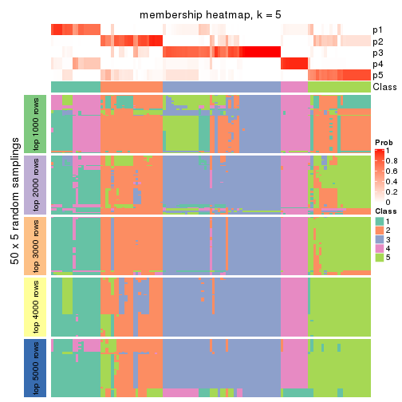
membership_heatmap(res, k = 6)
As soon as we have had the classes for columns, we can look for signatures which are significantly different between classes which can be candidate marks for certain classes. Following are the heatmaps for signatures.
Signature heatmaps where rows are scaled:
get_signatures(res, k = 2)
get_signatures(res, k = 3)
get_signatures(res, k = 4)
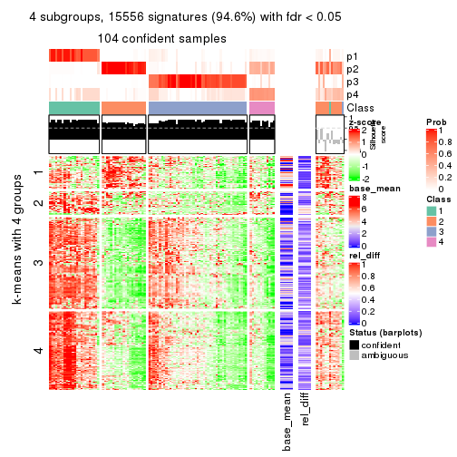
get_signatures(res, k = 5)
get_signatures(res, k = 6)
Signature heatmaps where rows are not scaled:
get_signatures(res, k = 2, scale_rows = FALSE)
get_signatures(res, k = 3, scale_rows = FALSE)

get_signatures(res, k = 4, scale_rows = FALSE)
get_signatures(res, k = 5, scale_rows = FALSE)
get_signatures(res, k = 6, scale_rows = FALSE)
Compare the overlap of signatures from different k:
compare_signatures(res)
get_signature() returns a data frame invisibly. TO get the list of signatures, the function
call should be assigned to a variable explicitly. In following code, if plot argument is set
to FALSE, no heatmap is plotted while only the differential analysis is performed.
# code only for demonstration
tb = get_signature(res, k = ..., plot = FALSE)
An example of the output of tb is:
#> which_row fdr mean_1 mean_2 scaled_mean_1 scaled_mean_2 km
#> 1 38 0.042760348 8.373488 9.131774 -0.5533452 0.5164555 1
#> 2 40 0.018707592 7.106213 8.469186 -0.6173731 0.5762149 1
#> 3 55 0.019134737 10.221463 11.207825 -0.6159697 0.5749050 1
#> 4 59 0.006059896 5.921854 7.869574 -0.6899429 0.6439467 1
#> 5 60 0.018055526 8.928898 10.211722 -0.6204761 0.5791110 1
#> 6 98 0.009384629 15.714769 14.887706 0.6635654 -0.6193277 2
...
The columns in tb are:
which_row: row indices corresponding to the input matrix.fdr: FDR for the differential test. mean_x: The mean value in group x.scaled_mean_x: The mean value in group x after rows are scaled.km: Row groups if k-means clustering is applied to rows.UMAP plot which shows how samples are separated.
dimension_reduction(res, k = 2, method = "UMAP")
dimension_reduction(res, k = 3, method = "UMAP")
dimension_reduction(res, k = 4, method = "UMAP")
dimension_reduction(res, k = 5, method = "UMAP")
dimension_reduction(res, k = 6, method = "UMAP")
Following heatmap shows how subgroups are split when increasing k:
collect_classes(res)
If matrix rows can be associated to genes, consider to use functional_enrichment(res,
...) to perform function enrichment for the signature genes. See this vignette for more detailed explanations.
The object with results only for a single top-value method and a single partition method can be extracted as:
res = res_list["CV", "NMF"]
# you can also extract it by
# res = res_list["CV:NMF"]
A summary of res and all the functions that can be applied to it:
res
#> A 'ConsensusPartition' object with k = 2, 3, 4, 5, 6.
#> On a matrix with 16442 rows and 117 columns.
#> Top rows (1000, 2000, 3000, 4000, 5000) are extracted by 'CV' method.
#> Subgroups are detected by 'NMF' method.
#> Performed in total 1250 partitions by row resampling.
#> Best k for subgroups seems to be 4.
#>
#> Following methods can be applied to this 'ConsensusPartition' object:
#> [1] "cola_report" "collect_classes" "collect_plots"
#> [4] "collect_stats" "colnames" "compare_signatures"
#> [7] "consensus_heatmap" "dimension_reduction" "functional_enrichment"
#> [10] "get_anno_col" "get_anno" "get_classes"
#> [13] "get_consensus" "get_matrix" "get_membership"
#> [16] "get_param" "get_signatures" "get_stats"
#> [19] "is_best_k" "is_stable_k" "membership_heatmap"
#> [22] "ncol" "nrow" "plot_ecdf"
#> [25] "rownames" "select_partition_number" "show"
#> [28] "suggest_best_k" "test_to_known_factors"
collect_plots() function collects all the plots made from res for all k (number of partitions)
into one single page to provide an easy and fast comparison between different k.
collect_plots(res)
The plots are:
k and the heatmap of
predicted classes for each k.k.k.k.All the plots in panels can be made by individual functions and they are plotted later in this section.
select_partition_number() produces several plots showing different
statistics for choosing “optimized” k. There are following statistics:
k;k, the area increased is defined as \(A_k - A_{k-1}\).The detailed explanations of these statistics can be found in the cola vignette.
Generally speaking, lower PAC score, higher mean silhouette score or higher
concordance corresponds to better partition. Rand index and Jaccard index
measure how similar the current partition is compared to partition with k-1.
If they are too similar, we won't accept k is better than k-1.
select_partition_number(res)

The numeric values for all these statistics can be obtained by get_stats().
get_stats(res)
#> k 1-PAC mean_silhouette concordance area_increased Rand Jaccard
#> 2 2 0.791 0.901 0.957 0.4451 0.564 0.564
#> 3 3 0.763 0.826 0.928 0.4885 0.728 0.535
#> 4 4 0.869 0.866 0.942 0.1248 0.829 0.551
#> 5 5 0.750 0.741 0.857 0.0545 0.944 0.790
#> 6 6 0.739 0.621 0.794 0.0430 0.904 0.612
suggest_best_k() suggests the best \(k\) based on these statistics. The rules are as follows:
suggest_best_k(res)
#> [1] 4
Following shows the table of the partitions (You need to click the show/hide
code output link to see it). The membership matrix (columns with name p*)
is inferred by
clue::cl_consensus()
function with the SE method. Basically the value in the membership matrix
represents the probability to belong to a certain group. The finall class
label for an item is determined with the group with highest probability it
belongs to.
In get_classes() function, the entropy is calculated from the membership
matrix and the silhouette score is calculated from the consensus matrix.
cbind(get_classes(res, k = 2), get_membership(res, k = 2))
#> class entropy silhouette p1 p2
#> SRR2443263 1 0.0000 0.9510 1.000 0.000
#> SRR2443262 1 0.0000 0.9510 1.000 0.000
#> SRR2443261 1 0.0000 0.9510 1.000 0.000
#> SRR2443260 1 0.0000 0.9510 1.000 0.000
#> SRR2443259 1 0.0000 0.9510 1.000 0.000
#> SRR2443258 1 0.0000 0.9510 1.000 0.000
#> SRR2443257 1 0.0000 0.9510 1.000 0.000
#> SRR2443256 1 0.0000 0.9510 1.000 0.000
#> SRR2443255 1 0.0000 0.9510 1.000 0.000
#> SRR2443254 1 0.0000 0.9510 1.000 0.000
#> SRR2443253 1 0.0000 0.9510 1.000 0.000
#> SRR2443251 1 0.0000 0.9510 1.000 0.000
#> SRR2443250 1 0.0000 0.9510 1.000 0.000
#> SRR2443249 1 0.0000 0.9510 1.000 0.000
#> SRR2443252 1 0.0000 0.9510 1.000 0.000
#> SRR2443247 1 0.0000 0.9510 1.000 0.000
#> SRR2443246 1 0.0000 0.9510 1.000 0.000
#> SRR2443248 1 0.0000 0.9510 1.000 0.000
#> SRR2443244 2 0.9998 -0.0735 0.492 0.508
#> SRR2443245 1 0.7219 0.7755 0.800 0.200
#> SRR2443243 1 0.7219 0.7755 0.800 0.200
#> SRR2443242 2 0.0000 0.9583 0.000 1.000
#> SRR2443241 1 0.3431 0.9076 0.936 0.064
#> SRR2443240 2 0.5059 0.8457 0.112 0.888
#> SRR2443239 2 0.0000 0.9583 0.000 1.000
#> SRR2443238 1 0.9988 0.1456 0.520 0.480
#> SRR2443237 2 0.0000 0.9583 0.000 1.000
#> SRR2443236 1 0.9358 0.5103 0.648 0.352
#> SRR2443235 1 0.0000 0.9510 1.000 0.000
#> SRR2443233 1 0.5629 0.8486 0.868 0.132
#> SRR2443234 1 0.0938 0.9441 0.988 0.012
#> SRR2443232 1 0.0000 0.9510 1.000 0.000
#> SRR2443231 1 0.0000 0.9510 1.000 0.000
#> SRR2443230 1 0.0000 0.9510 1.000 0.000
#> SRR2443229 1 0.6801 0.7984 0.820 0.180
#> SRR2443228 2 0.0000 0.9583 0.000 1.000
#> SRR2443227 1 0.0000 0.9510 1.000 0.000
#> SRR2443226 1 0.7219 0.7755 0.800 0.200
#> SRR2443225 1 0.0672 0.9465 0.992 0.008
#> SRR2443223 1 0.0000 0.9510 1.000 0.000
#> SRR2443224 1 0.0000 0.9510 1.000 0.000
#> SRR2443222 2 0.0000 0.9583 0.000 1.000
#> SRR2443221 2 0.0000 0.9583 0.000 1.000
#> SRR2443219 2 0.0000 0.9583 0.000 1.000
#> SRR2443220 1 0.0376 0.9485 0.996 0.004
#> SRR2443218 2 0.0000 0.9583 0.000 1.000
#> SRR2443217 1 0.0000 0.9510 1.000 0.000
#> SRR2443216 1 0.0000 0.9510 1.000 0.000
#> SRR2443215 2 0.1843 0.9357 0.028 0.972
#> SRR2443214 1 0.7219 0.7755 0.800 0.200
#> SRR2443213 1 0.5059 0.8671 0.888 0.112
#> SRR2443212 2 0.0000 0.9583 0.000 1.000
#> SRR2443211 2 0.0000 0.9583 0.000 1.000
#> SRR2443210 2 0.0000 0.9583 0.000 1.000
#> SRR2443209 1 0.0000 0.9510 1.000 0.000
#> SRR2443208 2 0.0672 0.9524 0.008 0.992
#> SRR2443207 2 0.0000 0.9583 0.000 1.000
#> SRR2443206 2 0.0000 0.9583 0.000 1.000
#> SRR2443205 2 0.0000 0.9583 0.000 1.000
#> SRR2443204 1 0.1184 0.9415 0.984 0.016
#> SRR2443203 1 0.3431 0.9077 0.936 0.064
#> SRR2443202 1 0.9933 0.2416 0.548 0.452
#> SRR2443201 1 0.0000 0.9510 1.000 0.000
#> SRR2443200 2 0.0000 0.9583 0.000 1.000
#> SRR2443199 2 0.0000 0.9583 0.000 1.000
#> SRR2443197 1 0.0000 0.9510 1.000 0.000
#> SRR2443196 2 0.0000 0.9583 0.000 1.000
#> SRR2443198 1 0.0000 0.9510 1.000 0.000
#> SRR2443195 1 0.7219 0.7755 0.800 0.200
#> SRR2443194 1 0.0000 0.9510 1.000 0.000
#> SRR2443193 1 0.7219 0.7755 0.800 0.200
#> SRR2443191 1 0.0000 0.9510 1.000 0.000
#> SRR2443192 2 0.0000 0.9583 0.000 1.000
#> SRR2443190 1 0.5629 0.8486 0.868 0.132
#> SRR2443189 1 0.0000 0.9510 1.000 0.000
#> SRR2443188 1 0.7219 0.7755 0.800 0.200
#> SRR2443186 2 0.0000 0.9583 0.000 1.000
#> SRR2443187 2 0.0000 0.9583 0.000 1.000
#> SRR2443185 1 0.0000 0.9510 1.000 0.000
#> SRR2443184 1 0.0000 0.9510 1.000 0.000
#> SRR2443183 1 0.2603 0.9222 0.956 0.044
#> SRR2443182 1 0.0000 0.9510 1.000 0.000
#> SRR2443181 2 0.0000 0.9583 0.000 1.000
#> SRR2443180 2 0.0000 0.9583 0.000 1.000
#> SRR2443179 2 0.0000 0.9583 0.000 1.000
#> SRR2443178 2 0.9522 0.3521 0.372 0.628
#> SRR2443177 1 0.7219 0.7755 0.800 0.200
#> SRR2443176 1 0.0000 0.9510 1.000 0.000
#> SRR2443175 1 0.0000 0.9510 1.000 0.000
#> SRR2443174 1 0.0000 0.9510 1.000 0.000
#> SRR2443173 2 0.0000 0.9583 0.000 1.000
#> SRR2443172 2 0.3879 0.8902 0.076 0.924
#> SRR2443171 1 0.0000 0.9510 1.000 0.000
#> SRR2443170 1 0.0672 0.9465 0.992 0.008
#> SRR2443169 1 0.0000 0.9510 1.000 0.000
#> SRR2443168 1 0.0000 0.9510 1.000 0.000
#> SRR2443167 2 0.8207 0.6590 0.256 0.744
#> SRR2443166 1 0.0000 0.9510 1.000 0.000
#> SRR2443165 1 0.0000 0.9510 1.000 0.000
#> SRR2443164 2 0.0000 0.9583 0.000 1.000
#> SRR2443163 1 0.0000 0.9510 1.000 0.000
#> SRR2443162 1 0.0000 0.9510 1.000 0.000
#> SRR2443161 1 0.0000 0.9510 1.000 0.000
#> SRR2443160 1 0.0000 0.9510 1.000 0.000
#> SRR2443159 1 0.0000 0.9510 1.000 0.000
#> SRR2443158 1 0.0000 0.9510 1.000 0.000
#> SRR2443157 1 0.0000 0.9510 1.000 0.000
#> SRR2443156 1 0.0000 0.9510 1.000 0.000
#> SRR2443155 1 0.0000 0.9510 1.000 0.000
#> SRR2443154 1 0.0000 0.9510 1.000 0.000
#> SRR2443153 1 0.0000 0.9510 1.000 0.000
#> SRR2443152 2 0.0000 0.9583 0.000 1.000
#> SRR2443151 2 0.0000 0.9583 0.000 1.000
#> SRR2443150 2 0.0000 0.9583 0.000 1.000
#> SRR2443148 2 0.0000 0.9583 0.000 1.000
#> SRR2443147 2 0.2043 0.9327 0.032 0.968
#> SRR2443149 1 0.0000 0.9510 1.000 0.000
cbind(get_classes(res, k = 3), get_membership(res, k = 3))
#> class entropy silhouette p1 p2 p3
#> SRR2443263 3 0.0000 0.9211 0.000 0.000 1.000
#> SRR2443262 3 0.0000 0.9211 0.000 0.000 1.000
#> SRR2443261 3 0.0000 0.9211 0.000 0.000 1.000
#> SRR2443260 3 0.0000 0.9211 0.000 0.000 1.000
#> SRR2443259 3 0.0000 0.9211 0.000 0.000 1.000
#> SRR2443258 3 0.0000 0.9211 0.000 0.000 1.000
#> SRR2443257 3 0.0000 0.9211 0.000 0.000 1.000
#> SRR2443256 3 0.0000 0.9211 0.000 0.000 1.000
#> SRR2443255 3 0.0000 0.9211 0.000 0.000 1.000
#> SRR2443254 3 0.0000 0.9211 0.000 0.000 1.000
#> SRR2443253 3 0.0000 0.9211 0.000 0.000 1.000
#> SRR2443251 3 0.0000 0.9211 0.000 0.000 1.000
#> SRR2443250 3 0.0000 0.9211 0.000 0.000 1.000
#> SRR2443249 3 0.0000 0.9211 0.000 0.000 1.000
#> SRR2443252 3 0.0000 0.9211 0.000 0.000 1.000
#> SRR2443247 3 0.1964 0.8801 0.056 0.000 0.944
#> SRR2443246 3 0.3038 0.8357 0.104 0.000 0.896
#> SRR2443248 3 0.0000 0.9211 0.000 0.000 1.000
#> SRR2443244 2 0.4654 0.7102 0.208 0.792 0.000
#> SRR2443245 1 0.0000 0.8899 1.000 0.000 0.000
#> SRR2443243 1 0.0000 0.8899 1.000 0.000 0.000
#> SRR2443242 2 0.5465 0.6254 0.288 0.712 0.000
#> SRR2443241 1 0.0000 0.8899 1.000 0.000 0.000
#> SRR2443240 2 0.6026 0.3703 0.376 0.624 0.000
#> SRR2443239 2 0.0000 0.9369 0.000 1.000 0.000
#> SRR2443238 1 0.0000 0.8899 1.000 0.000 0.000
#> SRR2443237 2 0.6244 0.2875 0.440 0.560 0.000
#> SRR2443236 1 0.0000 0.8899 1.000 0.000 0.000
#> SRR2443235 1 0.0237 0.8888 0.996 0.000 0.004
#> SRR2443233 1 0.0000 0.8899 1.000 0.000 0.000
#> SRR2443234 1 0.0000 0.8899 1.000 0.000 0.000
#> SRR2443232 1 0.4504 0.7173 0.804 0.000 0.196
#> SRR2443231 1 0.0237 0.8888 0.996 0.000 0.004
#> SRR2443230 1 0.5678 0.5331 0.684 0.000 0.316
#> SRR2443229 1 0.0424 0.8870 0.992 0.000 0.008
#> SRR2443228 2 0.0000 0.9369 0.000 1.000 0.000
#> SRR2443227 1 0.0000 0.8899 1.000 0.000 0.000
#> SRR2443226 1 0.0000 0.8899 1.000 0.000 0.000
#> SRR2443225 1 0.0000 0.8899 1.000 0.000 0.000
#> SRR2443223 3 0.0000 0.9211 0.000 0.000 1.000
#> SRR2443224 3 0.8378 0.4849 0.120 0.284 0.596
#> SRR2443222 2 0.0000 0.9369 0.000 1.000 0.000
#> SRR2443221 2 0.0000 0.9369 0.000 1.000 0.000
#> SRR2443219 2 0.0000 0.9369 0.000 1.000 0.000
#> SRR2443220 3 0.4346 0.7385 0.000 0.184 0.816
#> SRR2443218 2 0.0000 0.9369 0.000 1.000 0.000
#> SRR2443217 3 0.6168 0.2855 0.412 0.000 0.588
#> SRR2443216 3 0.0000 0.9211 0.000 0.000 1.000
#> SRR2443215 2 0.3192 0.8538 0.112 0.888 0.000
#> SRR2443214 1 0.0000 0.8899 1.000 0.000 0.000
#> SRR2443213 1 0.0000 0.8899 1.000 0.000 0.000
#> SRR2443212 2 0.2261 0.8968 0.068 0.932 0.000
#> SRR2443211 2 0.1411 0.9145 0.036 0.964 0.000
#> SRR2443210 2 0.0000 0.9369 0.000 1.000 0.000
#> SRR2443209 1 0.5988 0.4211 0.632 0.000 0.368
#> SRR2443208 2 0.1289 0.9210 0.032 0.968 0.000
#> SRR2443207 2 0.0000 0.9369 0.000 1.000 0.000
#> SRR2443206 2 0.0000 0.9369 0.000 1.000 0.000
#> SRR2443205 2 0.0000 0.9369 0.000 1.000 0.000
#> SRR2443204 1 0.0237 0.8886 0.996 0.000 0.004
#> SRR2443203 1 0.2066 0.8531 0.940 0.000 0.060
#> SRR2443202 1 0.3412 0.7831 0.876 0.124 0.000
#> SRR2443201 3 0.0237 0.9184 0.000 0.004 0.996
#> SRR2443200 2 0.0000 0.9369 0.000 1.000 0.000
#> SRR2443199 2 0.0592 0.9311 0.012 0.988 0.000
#> SRR2443197 3 0.6235 0.1760 0.436 0.000 0.564
#> SRR2443196 1 0.6286 -0.0193 0.536 0.464 0.000
#> SRR2443198 3 0.0000 0.9211 0.000 0.000 1.000
#> SRR2443195 1 0.0000 0.8899 1.000 0.000 0.000
#> SRR2443194 3 0.0000 0.9211 0.000 0.000 1.000
#> SRR2443193 1 0.0000 0.8899 1.000 0.000 0.000
#> SRR2443191 1 0.6235 0.2286 0.564 0.000 0.436
#> SRR2443192 1 0.4235 0.7026 0.824 0.176 0.000
#> SRR2443190 1 0.0000 0.8899 1.000 0.000 0.000
#> SRR2443189 1 0.2711 0.8314 0.912 0.000 0.088
#> SRR2443188 1 0.0000 0.8899 1.000 0.000 0.000
#> SRR2443186 2 0.0000 0.9369 0.000 1.000 0.000
#> SRR2443187 2 0.0000 0.9369 0.000 1.000 0.000
#> SRR2443185 3 0.0000 0.9211 0.000 0.000 1.000
#> SRR2443184 3 0.0000 0.9211 0.000 0.000 1.000
#> SRR2443183 1 0.0000 0.8899 1.000 0.000 0.000
#> SRR2443182 1 0.6095 0.3617 0.608 0.000 0.392
#> SRR2443181 2 0.1860 0.9036 0.052 0.948 0.000
#> SRR2443180 2 0.0000 0.9369 0.000 1.000 0.000
#> SRR2443179 2 0.5058 0.6918 0.244 0.756 0.000
#> SRR2443178 1 0.0000 0.8899 1.000 0.000 0.000
#> SRR2443177 1 0.0000 0.8899 1.000 0.000 0.000
#> SRR2443176 1 0.1031 0.8787 0.976 0.000 0.024
#> SRR2443175 3 0.5216 0.6298 0.260 0.000 0.740
#> SRR2443174 1 0.5835 0.4853 0.660 0.000 0.340
#> SRR2443173 2 0.0000 0.9369 0.000 1.000 0.000
#> SRR2443172 2 0.0000 0.9369 0.000 1.000 0.000
#> SRR2443171 3 0.1411 0.8963 0.036 0.000 0.964
#> SRR2443170 1 0.7259 0.5907 0.680 0.072 0.248
#> SRR2443169 3 0.4931 0.6753 0.232 0.000 0.768
#> SRR2443168 3 0.0000 0.9211 0.000 0.000 1.000
#> SRR2443167 3 0.3482 0.8076 0.000 0.128 0.872
#> SRR2443166 3 0.0000 0.9211 0.000 0.000 1.000
#> SRR2443165 3 0.0000 0.9211 0.000 0.000 1.000
#> SRR2443164 2 0.0000 0.9369 0.000 1.000 0.000
#> SRR2443163 3 0.0000 0.9211 0.000 0.000 1.000
#> SRR2443162 3 0.0000 0.9211 0.000 0.000 1.000
#> SRR2443161 3 0.0000 0.9211 0.000 0.000 1.000
#> SRR2443160 3 0.0000 0.9211 0.000 0.000 1.000
#> SRR2443159 3 0.0000 0.9211 0.000 0.000 1.000
#> SRR2443158 3 0.0000 0.9211 0.000 0.000 1.000
#> SRR2443157 3 0.0747 0.9109 0.016 0.000 0.984
#> SRR2443156 3 0.8020 0.4160 0.320 0.084 0.596
#> SRR2443155 3 0.6140 0.3121 0.404 0.000 0.596
#> SRR2443154 3 0.4346 0.7442 0.184 0.000 0.816
#> SRR2443153 1 0.0237 0.8888 0.996 0.000 0.004
#> SRR2443152 2 0.0424 0.9315 0.000 0.992 0.008
#> SRR2443151 2 0.0000 0.9369 0.000 1.000 0.000
#> SRR2443150 2 0.0000 0.9369 0.000 1.000 0.000
#> SRR2443148 2 0.0000 0.9369 0.000 1.000 0.000
#> SRR2443147 2 0.0000 0.9369 0.000 1.000 0.000
#> SRR2443149 3 0.0000 0.9211 0.000 0.000 1.000
cbind(get_classes(res, k = 4), get_membership(res, k = 4))
#> class entropy silhouette p1 p2 p3 p4
#> SRR2443263 3 0.0469 0.942 0.012 0.000 0.988 0.000
#> SRR2443262 3 0.0000 0.950 0.000 0.000 1.000 0.000
#> SRR2443261 3 0.0000 0.950 0.000 0.000 1.000 0.000
#> SRR2443260 3 0.0000 0.950 0.000 0.000 1.000 0.000
#> SRR2443259 3 0.0000 0.950 0.000 0.000 1.000 0.000
#> SRR2443258 3 0.0000 0.950 0.000 0.000 1.000 0.000
#> SRR2443257 3 0.0000 0.950 0.000 0.000 1.000 0.000
#> SRR2443256 3 0.0469 0.942 0.012 0.000 0.988 0.000
#> SRR2443255 3 0.0000 0.950 0.000 0.000 1.000 0.000
#> SRR2443254 3 0.0000 0.950 0.000 0.000 1.000 0.000
#> SRR2443253 3 0.0000 0.950 0.000 0.000 1.000 0.000
#> SRR2443251 3 0.0000 0.950 0.000 0.000 1.000 0.000
#> SRR2443250 3 0.0000 0.950 0.000 0.000 1.000 0.000
#> SRR2443249 3 0.0000 0.950 0.000 0.000 1.000 0.000
#> SRR2443252 3 0.0000 0.950 0.000 0.000 1.000 0.000
#> SRR2443247 1 0.0336 0.913 0.992 0.000 0.008 0.000
#> SRR2443246 1 0.1211 0.898 0.960 0.000 0.040 0.000
#> SRR2443248 3 0.0592 0.939 0.016 0.000 0.984 0.000
#> SRR2443244 2 0.3024 0.786 0.148 0.852 0.000 0.000
#> SRR2443245 4 0.0000 0.942 0.000 0.000 0.000 1.000
#> SRR2443243 4 0.0817 0.926 0.024 0.000 0.000 0.976
#> SRR2443242 4 0.0188 0.939 0.000 0.004 0.000 0.996
#> SRR2443241 1 0.0000 0.914 1.000 0.000 0.000 0.000
#> SRR2443240 2 0.3726 0.702 0.212 0.788 0.000 0.000
#> SRR2443239 2 0.0000 0.931 0.000 1.000 0.000 0.000
#> SRR2443238 4 0.0000 0.942 0.000 0.000 0.000 1.000
#> SRR2443237 4 0.0000 0.942 0.000 0.000 0.000 1.000
#> SRR2443236 1 0.3649 0.760 0.796 0.000 0.000 0.204
#> SRR2443235 1 0.0707 0.915 0.980 0.000 0.000 0.020
#> SRR2443233 1 0.1557 0.903 0.944 0.000 0.000 0.056
#> SRR2443234 1 0.1389 0.907 0.952 0.000 0.000 0.048
#> SRR2443232 1 0.0336 0.915 0.992 0.000 0.000 0.008
#> SRR2443231 1 0.0707 0.915 0.980 0.000 0.000 0.020
#> SRR2443230 1 0.0921 0.914 0.972 0.000 0.000 0.028
#> SRR2443229 1 0.3801 0.750 0.780 0.000 0.000 0.220
#> SRR2443228 2 0.0000 0.931 0.000 1.000 0.000 0.000
#> SRR2443227 1 0.1302 0.909 0.956 0.000 0.000 0.044
#> SRR2443226 4 0.0000 0.942 0.000 0.000 0.000 1.000
#> SRR2443225 4 0.2408 0.842 0.104 0.000 0.000 0.896
#> SRR2443223 3 0.0000 0.950 0.000 0.000 1.000 0.000
#> SRR2443224 1 0.4916 0.287 0.576 0.424 0.000 0.000
#> SRR2443222 2 0.0000 0.931 0.000 1.000 0.000 0.000
#> SRR2443221 2 0.0000 0.931 0.000 1.000 0.000 0.000
#> SRR2443219 2 0.0000 0.931 0.000 1.000 0.000 0.000
#> SRR2443220 3 0.0188 0.947 0.000 0.004 0.996 0.000
#> SRR2443218 2 0.0000 0.931 0.000 1.000 0.000 0.000
#> SRR2443217 1 0.2530 0.850 0.896 0.000 0.100 0.004
#> SRR2443216 3 0.0000 0.950 0.000 0.000 1.000 0.000
#> SRR2443215 2 0.5498 0.309 0.020 0.576 0.000 0.404
#> SRR2443214 4 0.0000 0.942 0.000 0.000 0.000 1.000
#> SRR2443213 1 0.0921 0.914 0.972 0.000 0.000 0.028
#> SRR2443212 2 0.2216 0.856 0.000 0.908 0.000 0.092
#> SRR2443211 2 0.0921 0.916 0.028 0.972 0.000 0.000
#> SRR2443210 2 0.0000 0.931 0.000 1.000 0.000 0.000
#> SRR2443209 1 0.0000 0.914 1.000 0.000 0.000 0.000
#> SRR2443208 2 0.4855 0.356 0.000 0.600 0.000 0.400
#> SRR2443207 2 0.0000 0.931 0.000 1.000 0.000 0.000
#> SRR2443206 2 0.0000 0.931 0.000 1.000 0.000 0.000
#> SRR2443205 2 0.0188 0.930 0.004 0.996 0.000 0.000
#> SRR2443204 4 0.0000 0.942 0.000 0.000 0.000 1.000
#> SRR2443203 4 0.0336 0.937 0.000 0.000 0.008 0.992
#> SRR2443202 4 0.0000 0.942 0.000 0.000 0.000 1.000
#> SRR2443201 3 0.0000 0.950 0.000 0.000 1.000 0.000
#> SRR2443200 2 0.0000 0.931 0.000 1.000 0.000 0.000
#> SRR2443199 4 0.4250 0.567 0.000 0.276 0.000 0.724
#> SRR2443197 3 0.4304 0.603 0.000 0.000 0.716 0.284
#> SRR2443196 4 0.0000 0.942 0.000 0.000 0.000 1.000
#> SRR2443198 3 0.0000 0.950 0.000 0.000 1.000 0.000
#> SRR2443195 4 0.0000 0.942 0.000 0.000 0.000 1.000
#> SRR2443194 3 0.4456 0.595 0.280 0.004 0.716 0.000
#> SRR2443193 4 0.5000 -0.115 0.496 0.000 0.000 0.504
#> SRR2443191 1 0.0000 0.914 1.000 0.000 0.000 0.000
#> SRR2443192 4 0.0000 0.942 0.000 0.000 0.000 1.000
#> SRR2443190 1 0.3024 0.836 0.852 0.000 0.000 0.148
#> SRR2443189 4 0.1302 0.906 0.000 0.000 0.044 0.956
#> SRR2443188 1 0.4406 0.629 0.700 0.000 0.000 0.300
#> SRR2443186 2 0.0000 0.931 0.000 1.000 0.000 0.000
#> SRR2443187 2 0.0000 0.931 0.000 1.000 0.000 0.000
#> SRR2443185 3 0.0000 0.950 0.000 0.000 1.000 0.000
#> SRR2443184 3 0.0000 0.950 0.000 0.000 1.000 0.000
#> SRR2443183 1 0.1211 0.910 0.960 0.000 0.000 0.040
#> SRR2443182 1 0.0469 0.915 0.988 0.000 0.000 0.012
#> SRR2443181 2 0.0707 0.921 0.020 0.980 0.000 0.000
#> SRR2443180 2 0.0336 0.927 0.000 0.992 0.000 0.008
#> SRR2443179 4 0.0817 0.921 0.000 0.024 0.000 0.976
#> SRR2443178 4 0.0000 0.942 0.000 0.000 0.000 1.000
#> SRR2443177 4 0.0336 0.937 0.008 0.000 0.000 0.992
#> SRR2443176 1 0.2647 0.861 0.880 0.000 0.000 0.120
#> SRR2443175 1 0.1716 0.881 0.936 0.000 0.064 0.000
#> SRR2443174 1 0.0000 0.914 1.000 0.000 0.000 0.000
#> SRR2443173 2 0.0000 0.931 0.000 1.000 0.000 0.000
#> SRR2443172 2 0.0000 0.931 0.000 1.000 0.000 0.000
#> SRR2443171 1 0.0336 0.913 0.992 0.000 0.008 0.000
#> SRR2443170 1 0.1302 0.897 0.956 0.044 0.000 0.000
#> SRR2443169 1 0.0000 0.914 1.000 0.000 0.000 0.000
#> SRR2443168 3 0.3486 0.751 0.188 0.000 0.812 0.000
#> SRR2443167 3 0.0000 0.950 0.000 0.000 1.000 0.000
#> SRR2443166 3 0.0000 0.950 0.000 0.000 1.000 0.000
#> SRR2443165 3 0.0000 0.950 0.000 0.000 1.000 0.000
#> SRR2443164 2 0.0000 0.931 0.000 1.000 0.000 0.000
#> SRR2443163 3 0.0000 0.950 0.000 0.000 1.000 0.000
#> SRR2443162 3 0.0000 0.950 0.000 0.000 1.000 0.000
#> SRR2443161 3 0.1118 0.922 0.036 0.000 0.964 0.000
#> SRR2443160 3 0.0000 0.950 0.000 0.000 1.000 0.000
#> SRR2443159 3 0.0000 0.950 0.000 0.000 1.000 0.000
#> SRR2443158 3 0.0000 0.950 0.000 0.000 1.000 0.000
#> SRR2443157 3 0.4961 0.150 0.448 0.000 0.552 0.000
#> SRR2443156 1 0.3610 0.757 0.800 0.200 0.000 0.000
#> SRR2443155 1 0.0000 0.914 1.000 0.000 0.000 0.000
#> SRR2443154 1 0.4238 0.757 0.796 0.028 0.176 0.000
#> SRR2443153 1 0.0921 0.914 0.972 0.000 0.000 0.028
#> SRR2443152 2 0.0921 0.916 0.028 0.972 0.000 0.000
#> SRR2443151 2 0.0000 0.931 0.000 1.000 0.000 0.000
#> SRR2443150 2 0.0336 0.928 0.008 0.992 0.000 0.000
#> SRR2443148 2 0.4585 0.509 0.000 0.668 0.000 0.332
#> SRR2443147 3 0.4925 0.249 0.000 0.428 0.572 0.000
#> SRR2443149 3 0.0000 0.950 0.000 0.000 1.000 0.000
cbind(get_classes(res, k = 5), get_membership(res, k = 5))
#> class entropy silhouette p1 p2 p3 p4 p5
#> SRR2443263 5 0.5674 0.508 0.100 0.000 0.324 0.000 0.576
#> SRR2443262 3 0.0000 0.897 0.000 0.000 1.000 0.000 0.000
#> SRR2443261 3 0.0000 0.897 0.000 0.000 1.000 0.000 0.000
#> SRR2443260 3 0.0693 0.892 0.012 0.000 0.980 0.000 0.008
#> SRR2443259 3 0.0000 0.897 0.000 0.000 1.000 0.000 0.000
#> SRR2443258 3 0.0000 0.897 0.000 0.000 1.000 0.000 0.000
#> SRR2443257 5 0.4211 0.469 0.000 0.000 0.360 0.004 0.636
#> SRR2443256 3 0.2920 0.788 0.132 0.000 0.852 0.000 0.016
#> SRR2443255 3 0.1195 0.882 0.028 0.000 0.960 0.000 0.012
#> SRR2443254 3 0.0162 0.897 0.004 0.000 0.996 0.000 0.000
#> SRR2443253 3 0.0000 0.897 0.000 0.000 1.000 0.000 0.000
#> SRR2443251 3 0.0000 0.897 0.000 0.000 1.000 0.000 0.000
#> SRR2443250 3 0.0324 0.896 0.004 0.000 0.992 0.000 0.004
#> SRR2443249 3 0.0324 0.896 0.004 0.000 0.992 0.000 0.004
#> SRR2443252 3 0.0000 0.897 0.000 0.000 1.000 0.000 0.000
#> SRR2443247 1 0.1205 0.784 0.956 0.000 0.004 0.000 0.040
#> SRR2443246 1 0.1544 0.782 0.932 0.000 0.000 0.000 0.068
#> SRR2443248 3 0.1907 0.855 0.044 0.000 0.928 0.000 0.028
#> SRR2443244 2 0.7142 0.286 0.292 0.496 0.000 0.048 0.164
#> SRR2443245 4 0.2362 0.794 0.024 0.000 0.000 0.900 0.076
#> SRR2443243 4 0.2592 0.791 0.052 0.000 0.000 0.892 0.056
#> SRR2443242 4 0.2122 0.807 0.032 0.008 0.000 0.924 0.036
#> SRR2443241 1 0.2624 0.780 0.872 0.000 0.000 0.012 0.116
#> SRR2443240 2 0.5599 0.483 0.260 0.620 0.000 0.000 0.120
#> SRR2443239 2 0.4321 0.756 0.040 0.784 0.000 0.024 0.152
#> SRR2443238 4 0.2270 0.810 0.020 0.000 0.000 0.904 0.076
#> SRR2443237 4 0.2806 0.772 0.000 0.004 0.000 0.844 0.152
#> SRR2443236 1 0.5462 0.623 0.652 0.000 0.000 0.136 0.212
#> SRR2443235 1 0.2172 0.789 0.908 0.000 0.000 0.016 0.076
#> SRR2443233 1 0.2729 0.780 0.884 0.000 0.000 0.060 0.056
#> SRR2443234 1 0.2054 0.788 0.920 0.000 0.000 0.052 0.028
#> SRR2443232 1 0.1195 0.790 0.960 0.000 0.000 0.028 0.012
#> SRR2443231 1 0.1892 0.781 0.916 0.000 0.000 0.004 0.080
#> SRR2443230 1 0.4294 0.230 0.532 0.000 0.000 0.000 0.468
#> SRR2443229 1 0.5698 0.555 0.640 0.000 0.004 0.208 0.148
#> SRR2443228 2 0.0162 0.919 0.000 0.996 0.000 0.000 0.004
#> SRR2443227 1 0.3366 0.735 0.828 0.000 0.000 0.140 0.032
#> SRR2443226 4 0.2054 0.803 0.028 0.000 0.000 0.920 0.052
#> SRR2443225 4 0.4335 0.656 0.220 0.000 0.004 0.740 0.036
#> SRR2443223 3 0.0798 0.889 0.008 0.000 0.976 0.000 0.016
#> SRR2443224 1 0.4583 0.486 0.672 0.296 0.000 0.000 0.032
#> SRR2443222 2 0.0404 0.917 0.000 0.988 0.000 0.000 0.012
#> SRR2443221 2 0.0162 0.919 0.000 0.996 0.000 0.000 0.004
#> SRR2443219 2 0.3474 0.802 0.000 0.832 0.028 0.008 0.132
#> SRR2443220 3 0.0451 0.895 0.004 0.000 0.988 0.000 0.008
#> SRR2443218 2 0.1740 0.889 0.000 0.932 0.000 0.012 0.056
#> SRR2443217 1 0.5522 0.598 0.704 0.000 0.152 0.032 0.112
#> SRR2443216 3 0.0609 0.891 0.000 0.000 0.980 0.000 0.020
#> SRR2443215 4 0.5067 0.728 0.052 0.048 0.000 0.740 0.160
#> SRR2443214 5 0.4029 0.328 0.004 0.000 0.000 0.316 0.680
#> SRR2443213 1 0.2104 0.790 0.916 0.000 0.000 0.024 0.060
#> SRR2443212 5 0.4610 0.488 0.008 0.296 0.000 0.020 0.676
#> SRR2443211 2 0.1485 0.902 0.032 0.948 0.000 0.000 0.020
#> SRR2443210 2 0.0162 0.919 0.000 0.996 0.000 0.000 0.004
#> SRR2443209 1 0.1822 0.785 0.936 0.004 0.000 0.024 0.036
#> SRR2443208 5 0.4252 0.590 0.008 0.144 0.000 0.064 0.784
#> SRR2443207 2 0.0000 0.918 0.000 1.000 0.000 0.000 0.000
#> SRR2443206 2 0.0162 0.919 0.000 0.996 0.000 0.000 0.004
#> SRR2443205 2 0.1444 0.898 0.040 0.948 0.000 0.000 0.012
#> SRR2443204 4 0.2806 0.746 0.004 0.000 0.000 0.844 0.152
#> SRR2443203 4 0.5140 0.720 0.028 0.000 0.100 0.736 0.136
#> SRR2443202 4 0.3925 0.756 0.032 0.000 0.004 0.784 0.180
#> SRR2443201 3 0.0162 0.897 0.004 0.000 0.996 0.000 0.000
#> SRR2443200 2 0.0703 0.912 0.000 0.976 0.000 0.000 0.024
#> SRR2443199 4 0.2450 0.769 0.000 0.076 0.000 0.896 0.028
#> SRR2443197 3 0.6337 0.111 0.004 0.000 0.524 0.164 0.308
#> SRR2443196 4 0.0794 0.797 0.000 0.000 0.000 0.972 0.028
#> SRR2443198 3 0.3267 0.775 0.044 0.000 0.844 0.000 0.112
#> SRR2443195 4 0.2179 0.777 0.000 0.000 0.000 0.888 0.112
#> SRR2443194 3 0.5920 0.443 0.208 0.004 0.628 0.004 0.156
#> SRR2443193 4 0.4404 0.532 0.292 0.000 0.000 0.684 0.024
#> SRR2443191 1 0.4294 0.213 0.532 0.000 0.000 0.000 0.468
#> SRR2443192 4 0.4791 0.447 0.012 0.008 0.000 0.588 0.392
#> SRR2443190 1 0.4072 0.747 0.792 0.000 0.000 0.100 0.108
#> SRR2443189 4 0.4686 0.664 0.008 0.000 0.112 0.756 0.124
#> SRR2443188 1 0.5423 0.354 0.548 0.000 0.000 0.388 0.064
#> SRR2443186 2 0.0000 0.918 0.000 1.000 0.000 0.000 0.000
#> SRR2443187 2 0.1582 0.895 0.000 0.944 0.000 0.028 0.028
#> SRR2443185 3 0.0609 0.891 0.000 0.000 0.980 0.000 0.020
#> SRR2443184 3 0.0162 0.897 0.004 0.000 0.996 0.000 0.000
#> SRR2443183 1 0.3238 0.773 0.836 0.000 0.000 0.028 0.136
#> SRR2443182 1 0.1357 0.784 0.948 0.000 0.000 0.004 0.048
#> SRR2443181 2 0.2124 0.846 0.096 0.900 0.000 0.004 0.000
#> SRR2443180 2 0.0162 0.919 0.000 0.996 0.000 0.000 0.004
#> SRR2443179 4 0.2763 0.774 0.000 0.004 0.000 0.848 0.148
#> SRR2443178 4 0.1410 0.794 0.000 0.000 0.000 0.940 0.060
#> SRR2443177 4 0.2504 0.802 0.040 0.000 0.000 0.896 0.064
#> SRR2443176 5 0.3803 0.610 0.140 0.000 0.000 0.056 0.804
#> SRR2443175 1 0.3838 0.718 0.820 0.000 0.108 0.008 0.064
#> SRR2443174 1 0.0290 0.792 0.992 0.000 0.000 0.008 0.000
#> SRR2443173 2 0.0162 0.918 0.004 0.996 0.000 0.000 0.000
#> SRR2443172 2 0.0162 0.918 0.004 0.996 0.000 0.000 0.000
#> SRR2443171 1 0.1043 0.783 0.960 0.000 0.000 0.000 0.040
#> SRR2443170 5 0.4577 0.569 0.176 0.084 0.000 0.000 0.740
#> SRR2443169 1 0.1043 0.783 0.960 0.000 0.000 0.000 0.040
#> SRR2443168 3 0.5989 0.305 0.312 0.056 0.592 0.000 0.040
#> SRR2443167 3 0.0000 0.897 0.000 0.000 1.000 0.000 0.000
#> SRR2443166 3 0.1281 0.880 0.032 0.000 0.956 0.000 0.012
#> SRR2443165 5 0.4143 0.647 0.016 0.000 0.160 0.036 0.788
#> SRR2443164 2 0.0162 0.919 0.000 0.996 0.000 0.000 0.004
#> SRR2443163 3 0.0000 0.897 0.000 0.000 1.000 0.000 0.000
#> SRR2443162 3 0.2504 0.836 0.064 0.000 0.896 0.000 0.040
#> SRR2443161 3 0.3847 0.705 0.180 0.000 0.784 0.000 0.036
#> SRR2443160 3 0.0000 0.897 0.000 0.000 1.000 0.000 0.000
#> SRR2443159 3 0.1792 0.838 0.000 0.000 0.916 0.000 0.084
#> SRR2443158 3 0.2139 0.844 0.052 0.000 0.916 0.000 0.032
#> SRR2443157 5 0.6439 0.265 0.356 0.000 0.184 0.000 0.460
#> SRR2443156 1 0.4974 0.667 0.696 0.092 0.000 0.000 0.212
#> SRR2443155 1 0.1197 0.783 0.952 0.000 0.000 0.000 0.048
#> SRR2443154 1 0.6483 0.256 0.508 0.192 0.004 0.000 0.296
#> SRR2443153 1 0.3916 0.612 0.732 0.000 0.000 0.012 0.256
#> SRR2443152 2 0.0609 0.912 0.020 0.980 0.000 0.000 0.000
#> SRR2443151 2 0.0162 0.919 0.000 0.996 0.000 0.000 0.004
#> SRR2443150 2 0.0162 0.918 0.004 0.996 0.000 0.000 0.000
#> SRR2443148 4 0.5989 0.390 0.000 0.336 0.000 0.536 0.128
#> SRR2443147 3 0.5174 0.128 0.000 0.444 0.520 0.004 0.032
#> SRR2443149 3 0.0000 0.897 0.000 0.000 1.000 0.000 0.000
cbind(get_classes(res, k = 6), get_membership(res, k = 6))
#> class entropy silhouette p1 p2 p3 p4 p5 p6
#> SRR2443263 5 0.4798 0.42611 0.080 0.000 0.300 0.000 0.620 0.000
#> SRR2443262 3 0.0436 0.87442 0.004 0.000 0.988 0.004 0.004 0.000
#> SRR2443261 3 0.0291 0.87382 0.000 0.000 0.992 0.004 0.004 0.000
#> SRR2443260 3 0.1663 0.84228 0.088 0.000 0.912 0.000 0.000 0.000
#> SRR2443259 3 0.0508 0.87529 0.012 0.000 0.984 0.000 0.004 0.000
#> SRR2443258 3 0.0000 0.87386 0.000 0.000 1.000 0.000 0.000 0.000
#> SRR2443257 5 0.1556 0.70225 0.000 0.000 0.080 0.000 0.920 0.000
#> SRR2443256 3 0.3955 0.37399 0.436 0.000 0.560 0.000 0.004 0.000
#> SRR2443255 3 0.3141 0.73924 0.200 0.000 0.788 0.012 0.000 0.000
#> SRR2443254 3 0.0748 0.87392 0.016 0.000 0.976 0.004 0.004 0.000
#> SRR2443253 3 0.0291 0.87382 0.000 0.000 0.992 0.004 0.004 0.000
#> SRR2443251 3 0.0146 0.87390 0.000 0.000 0.996 0.004 0.000 0.000
#> SRR2443250 3 0.0653 0.87456 0.012 0.000 0.980 0.004 0.004 0.000
#> SRR2443249 3 0.0692 0.87356 0.020 0.000 0.976 0.000 0.004 0.000
#> SRR2443252 3 0.0146 0.87390 0.000 0.000 0.996 0.004 0.000 0.000
#> SRR2443247 1 0.1719 0.67966 0.924 0.000 0.000 0.060 0.016 0.000
#> SRR2443246 1 0.4349 0.54976 0.684 0.004 0.000 0.264 0.048 0.000
#> SRR2443248 3 0.1649 0.84884 0.008 0.000 0.936 0.040 0.016 0.000
#> SRR2443244 4 0.1620 0.53596 0.024 0.024 0.000 0.940 0.000 0.012
#> SRR2443245 6 0.2877 0.67734 0.168 0.000 0.000 0.012 0.000 0.820
#> SRR2443243 6 0.3744 0.60332 0.256 0.000 0.000 0.016 0.004 0.724
#> SRR2443242 6 0.3152 0.59607 0.000 0.008 0.000 0.196 0.004 0.792
#> SRR2443241 1 0.4948 0.27560 0.476 0.000 0.000 0.460 0.064 0.000
#> SRR2443240 4 0.5008 0.29360 0.220 0.072 0.000 0.676 0.032 0.000
#> SRR2443239 4 0.2785 0.51734 0.008 0.128 0.008 0.852 0.004 0.000
#> SRR2443238 6 0.4052 0.25488 0.000 0.000 0.000 0.356 0.016 0.628
#> SRR2443237 4 0.4062 0.11348 0.000 0.000 0.000 0.552 0.008 0.440
#> SRR2443236 4 0.3794 0.33098 0.216 0.000 0.000 0.744 0.040 0.000
#> SRR2443235 1 0.4461 0.40205 0.564 0.000 0.000 0.404 0.032 0.000
#> SRR2443233 1 0.2593 0.63875 0.884 0.000 0.000 0.036 0.012 0.068
#> SRR2443234 1 0.3237 0.66311 0.828 0.000 0.000 0.132 0.020 0.020
#> SRR2443232 1 0.0547 0.66234 0.980 0.000 0.000 0.000 0.000 0.020
#> SRR2443231 1 0.3041 0.67168 0.856 0.000 0.000 0.088 0.036 0.020
#> SRR2443230 5 0.5982 0.00672 0.228 0.000 0.000 0.380 0.392 0.000
#> SRR2443229 4 0.4640 0.28934 0.296 0.000 0.004 0.648 0.004 0.048
#> SRR2443228 2 0.0632 0.91999 0.000 0.976 0.000 0.024 0.000 0.000
#> SRR2443227 1 0.4117 0.35847 0.672 0.000 0.000 0.032 0.000 0.296
#> SRR2443226 6 0.1387 0.70207 0.000 0.000 0.000 0.068 0.000 0.932
#> SRR2443225 6 0.3390 0.66578 0.196 0.000 0.004 0.012 0.004 0.784
#> SRR2443223 3 0.0603 0.87493 0.016 0.000 0.980 0.004 0.000 0.000
#> SRR2443224 2 0.3934 0.37751 0.376 0.616 0.000 0.008 0.000 0.000
#> SRR2443222 2 0.1663 0.89038 0.000 0.912 0.000 0.088 0.000 0.000
#> SRR2443221 2 0.1204 0.91027 0.000 0.944 0.000 0.056 0.000 0.000
#> SRR2443219 4 0.4712 0.44529 0.000 0.212 0.092 0.688 0.008 0.000
#> SRR2443220 3 0.0935 0.86988 0.032 0.000 0.964 0.004 0.000 0.000
#> SRR2443218 2 0.3134 0.76003 0.000 0.784 0.000 0.208 0.004 0.004
#> SRR2443217 4 0.6347 0.07928 0.300 0.000 0.264 0.424 0.008 0.004
#> SRR2443216 3 0.1610 0.83861 0.000 0.000 0.916 0.000 0.084 0.000
#> SRR2443215 4 0.4184 0.36242 0.000 0.028 0.000 0.672 0.004 0.296
#> SRR2443214 5 0.1511 0.72447 0.004 0.000 0.000 0.012 0.940 0.044
#> SRR2443213 1 0.4550 0.54290 0.668 0.000 0.000 0.276 0.044 0.012
#> SRR2443212 5 0.2740 0.69504 0.000 0.060 0.000 0.076 0.864 0.000
#> SRR2443211 2 0.3725 0.73369 0.140 0.792 0.000 0.060 0.008 0.000
#> SRR2443210 2 0.0713 0.92009 0.000 0.972 0.000 0.028 0.000 0.000
#> SRR2443209 1 0.1511 0.67504 0.940 0.000 0.000 0.044 0.004 0.012
#> SRR2443208 5 0.1518 0.72943 0.000 0.024 0.000 0.024 0.944 0.008
#> SRR2443207 2 0.0937 0.91802 0.000 0.960 0.000 0.040 0.000 0.000
#> SRR2443206 2 0.0146 0.91773 0.000 0.996 0.000 0.004 0.000 0.000
#> SRR2443205 2 0.1864 0.88067 0.040 0.924 0.000 0.032 0.004 0.000
#> SRR2443204 6 0.3352 0.66888 0.172 0.000 0.000 0.016 0.012 0.800
#> SRR2443203 4 0.5799 0.32353 0.000 0.000 0.236 0.528 0.004 0.232
#> SRR2443202 4 0.3543 0.52394 0.008 0.000 0.064 0.820 0.004 0.104
#> SRR2443201 3 0.1531 0.84233 0.004 0.000 0.928 0.068 0.000 0.000
#> SRR2443200 2 0.2482 0.83332 0.000 0.848 0.000 0.148 0.004 0.000
#> SRR2443199 6 0.1970 0.68885 0.000 0.028 0.000 0.060 0.000 0.912
#> SRR2443197 6 0.7162 0.10324 0.048 0.000 0.252 0.016 0.284 0.400
#> SRR2443196 6 0.0790 0.70699 0.000 0.000 0.000 0.032 0.000 0.968
#> SRR2443198 3 0.5268 0.37235 0.128 0.000 0.572 0.300 0.000 0.000
#> SRR2443195 6 0.0777 0.71551 0.000 0.000 0.000 0.004 0.024 0.972
#> SRR2443194 4 0.5841 0.23870 0.300 0.000 0.220 0.480 0.000 0.000
#> SRR2443193 6 0.3529 0.66754 0.152 0.000 0.000 0.040 0.008 0.800
#> SRR2443191 5 0.5822 0.19267 0.232 0.000 0.000 0.276 0.492 0.000
#> SRR2443192 4 0.5613 0.33424 0.000 0.016 0.000 0.584 0.140 0.260
#> SRR2443190 1 0.4968 0.42308 0.560 0.000 0.000 0.384 0.036 0.020
#> SRR2443189 6 0.2456 0.68915 0.000 0.000 0.076 0.008 0.028 0.888
#> SRR2443188 6 0.6250 0.08774 0.232 0.000 0.000 0.288 0.016 0.464
#> SRR2443186 2 0.0713 0.92016 0.000 0.972 0.000 0.028 0.000 0.000
#> SRR2443187 2 0.1007 0.91791 0.000 0.956 0.000 0.044 0.000 0.000
#> SRR2443185 3 0.2871 0.80042 0.024 0.000 0.852 0.008 0.116 0.000
#> SRR2443184 3 0.1049 0.86727 0.032 0.000 0.960 0.008 0.000 0.000
#> SRR2443183 1 0.4757 0.27554 0.484 0.000 0.000 0.468 0.048 0.000
#> SRR2443182 1 0.1075 0.66609 0.952 0.000 0.000 0.048 0.000 0.000
#> SRR2443181 2 0.1728 0.87617 0.064 0.924 0.000 0.008 0.000 0.004
#> SRR2443180 2 0.0777 0.92055 0.000 0.972 0.000 0.024 0.000 0.004
#> SRR2443179 6 0.4093 -0.02085 0.000 0.000 0.000 0.476 0.008 0.516
#> SRR2443178 6 0.0622 0.71292 0.000 0.000 0.000 0.012 0.008 0.980
#> SRR2443177 6 0.0767 0.71804 0.012 0.000 0.000 0.004 0.008 0.976
#> SRR2443176 5 0.0603 0.73363 0.016 0.000 0.000 0.000 0.980 0.004
#> SRR2443175 1 0.5355 0.22367 0.456 0.000 0.092 0.448 0.004 0.000
#> SRR2443174 1 0.2742 0.66548 0.852 0.000 0.000 0.128 0.012 0.008
#> SRR2443173 2 0.0260 0.91432 0.000 0.992 0.000 0.008 0.000 0.000
#> SRR2443172 2 0.0260 0.91432 0.000 0.992 0.000 0.008 0.000 0.000
#> SRR2443171 1 0.0622 0.65876 0.980 0.000 0.008 0.012 0.000 0.000
#> SRR2443170 5 0.3150 0.69815 0.036 0.068 0.000 0.040 0.856 0.000
#> SRR2443169 1 0.0935 0.67699 0.964 0.000 0.000 0.032 0.004 0.000
#> SRR2443168 3 0.6450 0.37522 0.048 0.224 0.568 0.140 0.020 0.000
#> SRR2443167 3 0.0000 0.87386 0.000 0.000 1.000 0.000 0.000 0.000
#> SRR2443166 3 0.3470 0.68853 0.248 0.000 0.740 0.012 0.000 0.000
#> SRR2443165 5 0.0972 0.72772 0.000 0.000 0.028 0.000 0.964 0.008
#> SRR2443164 2 0.0713 0.92063 0.000 0.972 0.000 0.028 0.000 0.000
#> SRR2443163 3 0.0146 0.87390 0.000 0.000 0.996 0.004 0.000 0.000
#> SRR2443162 3 0.4084 0.44458 0.400 0.000 0.588 0.012 0.000 0.000
#> SRR2443161 1 0.4185 -0.26338 0.496 0.000 0.492 0.012 0.000 0.000
#> SRR2443160 3 0.0146 0.87421 0.000 0.000 0.996 0.004 0.000 0.000
#> SRR2443159 3 0.2631 0.75150 0.000 0.000 0.820 0.000 0.180 0.000
#> SRR2443158 3 0.0725 0.87104 0.012 0.000 0.976 0.000 0.012 0.000
#> SRR2443157 1 0.5301 0.14597 0.548 0.000 0.088 0.008 0.356 0.000
#> SRR2443156 4 0.4361 0.11946 0.308 0.000 0.000 0.648 0.044 0.000
#> SRR2443155 1 0.2490 0.67323 0.896 0.032 0.000 0.044 0.028 0.000
#> SRR2443154 1 0.5604 0.29571 0.580 0.256 0.000 0.012 0.152 0.000
#> SRR2443153 1 0.3778 0.61549 0.784 0.000 0.000 0.028 0.164 0.024
#> SRR2443152 2 0.0717 0.90809 0.016 0.976 0.000 0.008 0.000 0.000
#> SRR2443151 2 0.0713 0.92063 0.000 0.972 0.000 0.028 0.000 0.000
#> SRR2443150 2 0.0260 0.91432 0.000 0.992 0.000 0.008 0.000 0.000
#> SRR2443148 4 0.5524 0.11069 0.000 0.104 0.000 0.492 0.008 0.396
#> SRR2443147 3 0.6005 0.21857 0.000 0.236 0.516 0.236 0.012 0.000
#> SRR2443149 3 0.0436 0.87376 0.000 0.000 0.988 0.004 0.004 0.004
Heatmaps for the consensus matrix. It visualizes the probability of two samples to be in a same group.
consensus_heatmap(res, k = 2)

consensus_heatmap(res, k = 3)
consensus_heatmap(res, k = 4)
consensus_heatmap(res, k = 5)
consensus_heatmap(res, k = 6)
Heatmaps for the membership of samples in all partitions to see how consistent they are:
membership_heatmap(res, k = 2)
membership_heatmap(res, k = 3)
membership_heatmap(res, k = 4)
membership_heatmap(res, k = 5)
membership_heatmap(res, k = 6)
As soon as we have had the classes for columns, we can look for signatures which are significantly different between classes which can be candidate marks for certain classes. Following are the heatmaps for signatures.
Signature heatmaps where rows are scaled:
get_signatures(res, k = 2)
get_signatures(res, k = 3)
get_signatures(res, k = 4)
get_signatures(res, k = 5)

get_signatures(res, k = 6)
Signature heatmaps where rows are not scaled:
get_signatures(res, k = 2, scale_rows = FALSE)
get_signatures(res, k = 3, scale_rows = FALSE)
get_signatures(res, k = 4, scale_rows = FALSE)
get_signatures(res, k = 5, scale_rows = FALSE)
get_signatures(res, k = 6, scale_rows = FALSE)
Compare the overlap of signatures from different k:
compare_signatures(res)
get_signature() returns a data frame invisibly. TO get the list of signatures, the function
call should be assigned to a variable explicitly. In following code, if plot argument is set
to FALSE, no heatmap is plotted while only the differential analysis is performed.
# code only for demonstration
tb = get_signature(res, k = ..., plot = FALSE)
An example of the output of tb is:
#> which_row fdr mean_1 mean_2 scaled_mean_1 scaled_mean_2 km
#> 1 38 0.042760348 8.373488 9.131774 -0.5533452 0.5164555 1
#> 2 40 0.018707592 7.106213 8.469186 -0.6173731 0.5762149 1
#> 3 55 0.019134737 10.221463 11.207825 -0.6159697 0.5749050 1
#> 4 59 0.006059896 5.921854 7.869574 -0.6899429 0.6439467 1
#> 5 60 0.018055526 8.928898 10.211722 -0.6204761 0.5791110 1
#> 6 98 0.009384629 15.714769 14.887706 0.6635654 -0.6193277 2
...
The columns in tb are:
which_row: row indices corresponding to the input matrix.fdr: FDR for the differential test. mean_x: The mean value in group x.scaled_mean_x: The mean value in group x after rows are scaled.km: Row groups if k-means clustering is applied to rows.UMAP plot which shows how samples are separated.
dimension_reduction(res, k = 2, method = "UMAP")
dimension_reduction(res, k = 3, method = "UMAP")
dimension_reduction(res, k = 4, method = "UMAP")
dimension_reduction(res, k = 5, method = "UMAP")
dimension_reduction(res, k = 6, method = "UMAP")
Following heatmap shows how subgroups are split when increasing k:
collect_classes(res)
If matrix rows can be associated to genes, consider to use functional_enrichment(res,
...) to perform function enrichment for the signature genes. See this vignette for more detailed explanations.
The object with results only for a single top-value method and a single partition method can be extracted as:
res = res_list["MAD", "hclust"]
# you can also extract it by
# res = res_list["MAD:hclust"]
A summary of res and all the functions that can be applied to it:
res
#> A 'ConsensusPartition' object with k = 2, 3, 4, 5, 6.
#> On a matrix with 16442 rows and 117 columns.
#> Top rows (1000, 2000, 3000, 4000, 5000) are extracted by 'MAD' method.
#> Subgroups are detected by 'hclust' method.
#> Performed in total 1250 partitions by row resampling.
#> Best k for subgroups seems to be 2.
#>
#> Following methods can be applied to this 'ConsensusPartition' object:
#> [1] "cola_report" "collect_classes" "collect_plots"
#> [4] "collect_stats" "colnames" "compare_signatures"
#> [7] "consensus_heatmap" "dimension_reduction" "functional_enrichment"
#> [10] "get_anno_col" "get_anno" "get_classes"
#> [13] "get_consensus" "get_matrix" "get_membership"
#> [16] "get_param" "get_signatures" "get_stats"
#> [19] "is_best_k" "is_stable_k" "membership_heatmap"
#> [22] "ncol" "nrow" "plot_ecdf"
#> [25] "rownames" "select_partition_number" "show"
#> [28] "suggest_best_k" "test_to_known_factors"
collect_plots() function collects all the plots made from res for all k (number of partitions)
into one single page to provide an easy and fast comparison between different k.
collect_plots(res)
The plots are:
k and the heatmap of
predicted classes for each k.k.k.k.All the plots in panels can be made by individual functions and they are plotted later in this section.
select_partition_number() produces several plots showing different
statistics for choosing “optimized” k. There are following statistics:
k;k, the area increased is defined as \(A_k - A_{k-1}\).The detailed explanations of these statistics can be found in the cola vignette.
Generally speaking, lower PAC score, higher mean silhouette score or higher
concordance corresponds to better partition. Rand index and Jaccard index
measure how similar the current partition is compared to partition with k-1.
If they are too similar, we won't accept k is better than k-1.
select_partition_number(res)
The numeric values for all these statistics can be obtained by get_stats().
get_stats(res)
#> k 1-PAC mean_silhouette concordance area_increased Rand Jaccard
#> 2 2 0.402 0.674 0.856 0.4715 0.497 0.497
#> 3 3 0.348 0.462 0.665 0.3308 0.723 0.497
#> 4 4 0.419 0.438 0.671 0.1161 0.775 0.442
#> 5 5 0.521 0.475 0.672 0.1013 0.813 0.421
#> 6 6 0.644 0.512 0.709 0.0617 0.840 0.406
suggest_best_k() suggests the best \(k\) based on these statistics. The rules are as follows:
suggest_best_k(res)
#> [1] 2
Following shows the table of the partitions (You need to click the show/hide
code output link to see it). The membership matrix (columns with name p*)
is inferred by
clue::cl_consensus()
function with the SE method. Basically the value in the membership matrix
represents the probability to belong to a certain group. The finall class
label for an item is determined with the group with highest probability it
belongs to.
In get_classes() function, the entropy is calculated from the membership
matrix and the silhouette score is calculated from the consensus matrix.
cbind(get_classes(res, k = 2), get_membership(res, k = 2))
#> class entropy silhouette p1 p2
#> SRR2443263 1 0.2423 0.7905 0.960 0.040
#> SRR2443262 2 0.0000 0.8373 0.000 1.000
#> SRR2443261 2 0.0000 0.8373 0.000 1.000
#> SRR2443260 2 0.9909 0.1983 0.444 0.556
#> SRR2443259 1 0.6048 0.7445 0.852 0.148
#> SRR2443258 1 0.6712 0.7259 0.824 0.176
#> SRR2443257 2 0.0000 0.8373 0.000 1.000
#> SRR2443256 1 0.9209 0.5390 0.664 0.336
#> SRR2443255 1 0.9170 0.5461 0.668 0.332
#> SRR2443254 1 0.9209 0.5390 0.664 0.336
#> SRR2443253 2 0.0000 0.8373 0.000 1.000
#> SRR2443251 2 0.8327 0.6235 0.264 0.736
#> SRR2443250 2 0.0000 0.8373 0.000 1.000
#> SRR2443249 2 0.0000 0.8373 0.000 1.000
#> SRR2443252 2 0.9909 0.1983 0.444 0.556
#> SRR2443247 1 0.0000 0.7989 1.000 0.000
#> SRR2443246 1 0.6148 0.7415 0.848 0.152
#> SRR2443248 2 0.9580 0.4142 0.380 0.620
#> SRR2443244 2 0.8386 0.6157 0.268 0.732
#> SRR2443245 1 0.0000 0.7989 1.000 0.000
#> SRR2443243 1 0.0000 0.7989 1.000 0.000
#> SRR2443242 2 0.9170 0.4951 0.332 0.668
#> SRR2443241 1 0.9983 0.2030 0.524 0.476
#> SRR2443240 1 0.9909 0.2981 0.556 0.444
#> SRR2443239 2 0.3584 0.8106 0.068 0.932
#> SRR2443238 1 0.0000 0.7989 1.000 0.000
#> SRR2443237 2 0.9358 0.4571 0.352 0.648
#> SRR2443236 1 0.9909 0.2981 0.556 0.444
#> SRR2443235 1 0.0000 0.7989 1.000 0.000
#> SRR2443233 1 0.0000 0.7989 1.000 0.000
#> SRR2443234 1 0.0000 0.7989 1.000 0.000
#> SRR2443232 1 0.0000 0.7989 1.000 0.000
#> SRR2443231 1 0.0000 0.7989 1.000 0.000
#> SRR2443230 1 0.0000 0.7989 1.000 0.000
#> SRR2443229 1 0.9686 0.4229 0.604 0.396
#> SRR2443228 2 0.0000 0.8373 0.000 1.000
#> SRR2443227 1 0.0000 0.7989 1.000 0.000
#> SRR2443226 1 0.0000 0.7989 1.000 0.000
#> SRR2443225 1 0.9998 0.0812 0.508 0.492
#> SRR2443223 2 0.9635 0.3991 0.388 0.612
#> SRR2443224 2 0.1843 0.8282 0.028 0.972
#> SRR2443222 2 0.0000 0.8373 0.000 1.000
#> SRR2443221 2 0.0000 0.8373 0.000 1.000
#> SRR2443219 2 0.0672 0.8355 0.008 0.992
#> SRR2443220 2 0.7219 0.6933 0.200 0.800
#> SRR2443218 2 0.0000 0.8373 0.000 1.000
#> SRR2443217 1 0.9686 0.4220 0.604 0.396
#> SRR2443216 1 0.4431 0.7744 0.908 0.092
#> SRR2443215 2 0.3584 0.8106 0.068 0.932
#> SRR2443214 1 0.0000 0.7989 1.000 0.000
#> SRR2443213 1 0.0000 0.7989 1.000 0.000
#> SRR2443212 2 0.9970 0.0144 0.468 0.532
#> SRR2443211 2 0.6247 0.7464 0.156 0.844
#> SRR2443210 2 0.0000 0.8373 0.000 1.000
#> SRR2443209 1 0.9983 0.2030 0.524 0.476
#> SRR2443208 1 0.9963 0.2460 0.536 0.464
#> SRR2443207 1 0.9963 0.2460 0.536 0.464
#> SRR2443206 2 0.0000 0.8373 0.000 1.000
#> SRR2443205 2 0.6247 0.7464 0.156 0.844
#> SRR2443204 1 0.0000 0.7989 1.000 0.000
#> SRR2443203 1 0.0000 0.7989 1.000 0.000
#> SRR2443202 2 0.8909 0.5499 0.308 0.692
#> SRR2443201 2 0.9323 0.4822 0.348 0.652
#> SRR2443200 2 0.0000 0.8373 0.000 1.000
#> SRR2443199 2 0.0000 0.8373 0.000 1.000
#> SRR2443197 2 0.3733 0.8114 0.072 0.928
#> SRR2443196 2 0.1843 0.8290 0.028 0.972
#> SRR2443198 2 0.7376 0.6957 0.208 0.792
#> SRR2443195 1 0.0000 0.7989 1.000 0.000
#> SRR2443194 1 1.0000 0.0634 0.504 0.496
#> SRR2443193 1 0.7602 0.6944 0.780 0.220
#> SRR2443191 1 0.9983 0.2030 0.524 0.476
#> SRR2443192 2 0.9358 0.4571 0.352 0.648
#> SRR2443190 1 0.0000 0.7989 1.000 0.000
#> SRR2443189 1 0.3114 0.7873 0.944 0.056
#> SRR2443188 1 0.0000 0.7989 1.000 0.000
#> SRR2443186 2 0.0000 0.8373 0.000 1.000
#> SRR2443187 2 0.0000 0.8373 0.000 1.000
#> SRR2443185 2 0.9170 0.5111 0.332 0.668
#> SRR2443184 1 0.4298 0.7764 0.912 0.088
#> SRR2443183 1 0.0000 0.7989 1.000 0.000
#> SRR2443182 1 0.0376 0.7986 0.996 0.004
#> SRR2443181 2 0.1843 0.8282 0.028 0.972
#> SRR2443180 2 0.0000 0.8373 0.000 1.000
#> SRR2443179 2 0.1414 0.8303 0.020 0.980
#> SRR2443178 2 0.8443 0.6217 0.272 0.728
#> SRR2443177 1 0.0938 0.7970 0.988 0.012
#> SRR2443176 1 0.1184 0.7971 0.984 0.016
#> SRR2443175 1 0.0000 0.7989 1.000 0.000
#> SRR2443174 1 0.0000 0.7989 1.000 0.000
#> SRR2443173 2 0.0000 0.8373 0.000 1.000
#> SRR2443172 2 0.0000 0.8373 0.000 1.000
#> SRR2443171 1 0.0376 0.7983 0.996 0.004
#> SRR2443170 1 0.8608 0.6093 0.716 0.284
#> SRR2443169 1 0.0000 0.7989 1.000 0.000
#> SRR2443168 1 0.8608 0.6092 0.716 0.284
#> SRR2443167 2 0.3274 0.8147 0.060 0.940
#> SRR2443166 1 0.4431 0.7744 0.908 0.092
#> SRR2443165 2 1.0000 -0.0722 0.496 0.504
#> SRR2443164 2 0.0000 0.8373 0.000 1.000
#> SRR2443163 2 0.9635 0.3991 0.388 0.612
#> SRR2443162 1 0.9129 0.5520 0.672 0.328
#> SRR2443161 1 0.9129 0.5520 0.672 0.328
#> SRR2443160 2 0.3274 0.8147 0.060 0.940
#> SRR2443159 2 0.0000 0.8373 0.000 1.000
#> SRR2443158 1 0.9129 0.5520 0.672 0.328
#> SRR2443157 1 0.1843 0.7945 0.972 0.028
#> SRR2443156 1 0.8608 0.6099 0.716 0.284
#> SRR2443155 1 0.8608 0.6093 0.716 0.284
#> SRR2443154 1 0.8608 0.6093 0.716 0.284
#> SRR2443153 1 0.0000 0.7989 1.000 0.000
#> SRR2443152 2 0.0000 0.8373 0.000 1.000
#> SRR2443151 2 0.0000 0.8373 0.000 1.000
#> SRR2443150 2 0.0000 0.8373 0.000 1.000
#> SRR2443148 2 0.0000 0.8373 0.000 1.000
#> SRR2443147 2 0.0000 0.8373 0.000 1.000
#> SRR2443149 1 0.8386 0.6411 0.732 0.268
cbind(get_classes(res, k = 3), get_membership(res, k = 3))
#> class entropy silhouette p1 p2 p3
#> SRR2443263 1 0.5810 0.6138 0.664 0.000 0.336
#> SRR2443262 2 0.6154 0.4979 0.000 0.592 0.408
#> SRR2443261 2 0.6154 0.4979 0.000 0.592 0.408
#> SRR2443260 3 0.9217 0.4167 0.208 0.260 0.532
#> SRR2443259 1 0.6398 0.4449 0.580 0.004 0.416
#> SRR2443258 1 0.6460 0.3896 0.556 0.004 0.440
#> SRR2443257 2 0.6225 0.4792 0.000 0.568 0.432
#> SRR2443256 3 0.7190 0.2011 0.356 0.036 0.608
#> SRR2443255 3 0.7209 0.1924 0.360 0.036 0.604
#> SRR2443254 3 0.7190 0.2011 0.356 0.036 0.608
#> SRR2443253 2 0.6140 0.4983 0.000 0.596 0.404
#> SRR2443251 3 0.7962 0.0989 0.072 0.352 0.576
#> SRR2443250 2 0.6154 0.4979 0.000 0.592 0.408
#> SRR2443249 2 0.6154 0.4979 0.000 0.592 0.408
#> SRR2443252 3 0.9217 0.4167 0.208 0.260 0.532
#> SRR2443247 1 0.0592 0.7122 0.988 0.000 0.012
#> SRR2443246 1 0.6917 0.4611 0.608 0.024 0.368
#> SRR2443248 3 0.9189 0.3131 0.164 0.336 0.500
#> SRR2443244 2 0.8157 0.0340 0.072 0.516 0.412
#> SRR2443245 1 0.5098 0.7050 0.752 0.000 0.248
#> SRR2443243 1 0.5098 0.7050 0.752 0.000 0.248
#> SRR2443242 3 0.8521 0.1600 0.092 0.440 0.468
#> SRR2443241 3 0.9433 0.3461 0.236 0.260 0.504
#> SRR2443240 3 0.9446 0.3083 0.272 0.228 0.500
#> SRR2443239 2 0.6096 0.5102 0.016 0.704 0.280
#> SRR2443238 1 0.5098 0.7050 0.752 0.000 0.248
#> SRR2443237 3 0.8793 0.1948 0.112 0.436 0.452
#> SRR2443236 3 0.9446 0.3083 0.272 0.228 0.500
#> SRR2443235 1 0.0000 0.7089 1.000 0.000 0.000
#> SRR2443233 1 0.0000 0.7089 1.000 0.000 0.000
#> SRR2443234 1 0.0000 0.7089 1.000 0.000 0.000
#> SRR2443232 1 0.0000 0.7089 1.000 0.000 0.000
#> SRR2443231 1 0.0000 0.7089 1.000 0.000 0.000
#> SRR2443230 1 0.0000 0.7089 1.000 0.000 0.000
#> SRR2443229 3 0.9425 0.2606 0.312 0.200 0.488
#> SRR2443228 2 0.0892 0.6399 0.000 0.980 0.020
#> SRR2443227 1 0.0000 0.7089 1.000 0.000 0.000
#> SRR2443226 1 0.5098 0.7050 0.752 0.000 0.248
#> SRR2443225 3 0.7664 0.4003 0.228 0.104 0.668
#> SRR2443223 3 0.8869 0.3531 0.160 0.280 0.560
#> SRR2443224 2 0.6287 0.5172 0.024 0.704 0.272
#> SRR2443222 2 0.0237 0.6374 0.000 0.996 0.004
#> SRR2443221 2 0.0237 0.6374 0.000 0.996 0.004
#> SRR2443219 2 0.4555 0.6145 0.000 0.800 0.200
#> SRR2443220 2 0.6941 0.1707 0.016 0.520 0.464
#> SRR2443218 2 0.1031 0.6402 0.000 0.976 0.024
#> SRR2443217 3 0.9561 0.2730 0.316 0.216 0.468
#> SRR2443216 1 0.5948 0.5726 0.640 0.000 0.360
#> SRR2443215 2 0.6096 0.5102 0.016 0.704 0.280
#> SRR2443214 1 0.5098 0.7050 0.752 0.000 0.248
#> SRR2443213 1 0.0000 0.7089 1.000 0.000 0.000
#> SRR2443212 3 0.9472 0.3730 0.204 0.316 0.480
#> SRR2443211 2 0.8054 0.3343 0.080 0.580 0.340
#> SRR2443210 2 0.0237 0.6374 0.000 0.996 0.004
#> SRR2443209 3 0.9433 0.3461 0.236 0.260 0.504
#> SRR2443208 3 0.9412 0.3305 0.244 0.248 0.508
#> SRR2443207 3 0.9412 0.3305 0.244 0.248 0.508
#> SRR2443206 2 0.5254 0.5356 0.000 0.736 0.264
#> SRR2443205 2 0.8054 0.3343 0.080 0.580 0.340
#> SRR2443204 1 0.5098 0.7050 0.752 0.000 0.248
#> SRR2443203 1 0.5098 0.7050 0.752 0.000 0.248
#> SRR2443202 3 0.7653 0.2397 0.080 0.276 0.644
#> SRR2443201 3 0.8378 0.3010 0.120 0.284 0.596
#> SRR2443200 2 0.0592 0.6392 0.000 0.988 0.012
#> SRR2443199 2 0.1031 0.6402 0.000 0.976 0.024
#> SRR2443197 2 0.7169 0.3904 0.024 0.520 0.456
#> SRR2443196 2 0.6745 0.4579 0.012 0.560 0.428
#> SRR2443198 3 0.7945 -0.0714 0.064 0.388 0.548
#> SRR2443195 1 0.5098 0.7050 0.752 0.000 0.248
#> SRR2443194 3 0.7664 0.4006 0.228 0.104 0.668
#> SRR2443193 1 0.9151 0.2083 0.528 0.180 0.292
#> SRR2443191 3 0.9433 0.3461 0.236 0.260 0.504
#> SRR2443192 3 0.8793 0.1948 0.112 0.436 0.452
#> SRR2443190 1 0.0000 0.7089 1.000 0.000 0.000
#> SRR2443189 1 0.5678 0.6388 0.684 0.000 0.316
#> SRR2443188 1 0.0000 0.7089 1.000 0.000 0.000
#> SRR2443186 2 0.5254 0.5356 0.000 0.736 0.264
#> SRR2443187 2 0.5254 0.5356 0.000 0.736 0.264
#> SRR2443185 3 0.8445 0.2572 0.116 0.304 0.580
#> SRR2443184 1 0.5926 0.5809 0.644 0.000 0.356
#> SRR2443183 1 0.0000 0.7089 1.000 0.000 0.000
#> SRR2443182 1 0.5431 0.6699 0.716 0.000 0.284
#> SRR2443181 2 0.6252 0.5167 0.024 0.708 0.268
#> SRR2443180 2 0.1163 0.6400 0.000 0.972 0.028
#> SRR2443179 2 0.6724 0.4677 0.012 0.568 0.420
#> SRR2443178 3 0.8503 0.0894 0.104 0.352 0.544
#> SRR2443177 1 0.5216 0.6985 0.740 0.000 0.260
#> SRR2443176 1 0.5529 0.6637 0.704 0.000 0.296
#> SRR2443175 1 0.2796 0.7186 0.908 0.000 0.092
#> SRR2443174 1 0.0000 0.7089 1.000 0.000 0.000
#> SRR2443173 2 0.5327 0.5424 0.000 0.728 0.272
#> SRR2443172 2 0.5327 0.5424 0.000 0.728 0.272
#> SRR2443171 1 0.3412 0.7172 0.876 0.000 0.124
#> SRR2443170 3 0.7138 -0.0234 0.436 0.024 0.540
#> SRR2443169 1 0.0592 0.7122 0.988 0.000 0.012
#> SRR2443168 3 0.7121 -0.0137 0.428 0.024 0.548
#> SRR2443167 2 0.7498 0.4190 0.040 0.548 0.412
#> SRR2443166 1 0.5905 0.5852 0.648 0.000 0.352
#> SRR2443165 3 0.8167 0.4318 0.188 0.168 0.644
#> SRR2443164 2 0.3551 0.6204 0.000 0.868 0.132
#> SRR2443163 3 0.8894 0.3506 0.160 0.284 0.556
#> SRR2443162 3 0.7013 0.1817 0.364 0.028 0.608
#> SRR2443161 3 0.7013 0.1817 0.364 0.028 0.608
#> SRR2443160 2 0.7498 0.4190 0.040 0.548 0.412
#> SRR2443159 2 0.6225 0.4792 0.000 0.568 0.432
#> SRR2443158 3 0.7013 0.1817 0.364 0.028 0.608
#> SRR2443157 1 0.5621 0.6531 0.692 0.000 0.308
#> SRR2443156 3 0.7248 -0.0243 0.436 0.028 0.536
#> SRR2443155 3 0.7138 -0.0234 0.436 0.024 0.540
#> SRR2443154 3 0.7138 -0.0234 0.436 0.024 0.540
#> SRR2443153 1 0.0592 0.7122 0.988 0.000 0.012
#> SRR2443152 2 0.5327 0.5424 0.000 0.728 0.272
#> SRR2443151 2 0.1643 0.6382 0.000 0.956 0.044
#> SRR2443150 2 0.5327 0.5424 0.000 0.728 0.272
#> SRR2443148 2 0.5291 0.5724 0.000 0.732 0.268
#> SRR2443147 2 0.5291 0.5724 0.000 0.732 0.268
#> SRR2443149 3 0.7152 -0.1029 0.444 0.024 0.532
cbind(get_classes(res, k = 4), get_membership(res, k = 4))
#> class entropy silhouette p1 p2 p3 p4
#> SRR2443263 1 0.5776 0.2366 0.504 0.000 0.468 0.028
#> SRR2443262 4 0.2589 0.5237 0.000 0.116 0.000 0.884
#> SRR2443261 4 0.2589 0.5237 0.000 0.116 0.000 0.884
#> SRR2443260 4 0.7242 0.2991 0.076 0.024 0.444 0.456
#> SRR2443259 3 0.6600 0.0364 0.396 0.000 0.520 0.084
#> SRR2443258 3 0.6840 0.0817 0.372 0.000 0.520 0.108
#> SRR2443257 4 0.0336 0.5820 0.000 0.008 0.000 0.992
#> SRR2443256 3 0.6934 0.2738 0.164 0.000 0.580 0.256
#> SRR2443255 3 0.6946 0.2802 0.168 0.000 0.580 0.252
#> SRR2443254 3 0.6934 0.2738 0.164 0.000 0.580 0.256
#> SRR2443253 4 0.3311 0.4692 0.000 0.172 0.000 0.828
#> SRR2443251 4 0.5252 0.5545 0.000 0.020 0.336 0.644
#> SRR2443250 4 0.2589 0.5237 0.000 0.116 0.000 0.884
#> SRR2443249 4 0.2589 0.5237 0.000 0.116 0.000 0.884
#> SRR2443252 4 0.7242 0.2991 0.076 0.024 0.444 0.456
#> SRR2443247 1 0.1637 0.6929 0.940 0.000 0.060 0.000
#> SRR2443246 3 0.5827 0.0633 0.436 0.032 0.532 0.000
#> SRR2443248 4 0.7293 0.3773 0.072 0.032 0.388 0.508
#> SRR2443244 3 0.8327 -0.1243 0.024 0.216 0.404 0.356
#> SRR2443245 1 0.4872 0.5119 0.640 0.000 0.356 0.004
#> SRR2443243 1 0.4855 0.5151 0.644 0.000 0.352 0.004
#> SRR2443242 3 0.7985 0.0475 0.024 0.176 0.492 0.308
#> SRR2443241 3 0.5678 0.4877 0.112 0.172 0.716 0.000
#> SRR2443240 3 0.5816 0.4997 0.148 0.144 0.708 0.000
#> SRR2443239 2 0.7225 0.5544 0.000 0.496 0.352 0.152
#> SRR2443238 1 0.4855 0.5151 0.644 0.000 0.352 0.004
#> SRR2443237 3 0.8117 0.0708 0.036 0.160 0.492 0.312
#> SRR2443236 3 0.5816 0.4997 0.148 0.144 0.708 0.000
#> SRR2443235 1 0.0000 0.6970 1.000 0.000 0.000 0.000
#> SRR2443233 1 0.0000 0.6970 1.000 0.000 0.000 0.000
#> SRR2443234 1 0.0000 0.6970 1.000 0.000 0.000 0.000
#> SRR2443232 1 0.0000 0.6970 1.000 0.000 0.000 0.000
#> SRR2443231 1 0.0000 0.6970 1.000 0.000 0.000 0.000
#> SRR2443230 1 0.0000 0.6970 1.000 0.000 0.000 0.000
#> SRR2443229 3 0.6407 0.4897 0.184 0.148 0.664 0.004
#> SRR2443228 2 0.3583 0.6161 0.000 0.816 0.004 0.180
#> SRR2443227 1 0.0000 0.6970 1.000 0.000 0.000 0.000
#> SRR2443226 1 0.4855 0.5151 0.644 0.000 0.352 0.004
#> SRR2443225 4 0.7569 0.1467 0.148 0.008 0.412 0.432
#> SRR2443223 4 0.7386 0.3634 0.060 0.044 0.420 0.476
#> SRR2443224 2 0.5256 0.5932 0.012 0.596 0.392 0.000
#> SRR2443222 2 0.4290 0.6353 0.000 0.800 0.036 0.164
#> SRR2443221 2 0.4290 0.6353 0.000 0.800 0.036 0.164
#> SRR2443219 2 0.7021 0.3414 0.000 0.480 0.120 0.400
#> SRR2443220 4 0.6987 0.4345 0.000 0.160 0.272 0.568
#> SRR2443218 2 0.3400 0.6145 0.000 0.820 0.000 0.180
#> SRR2443217 3 0.6768 0.4921 0.188 0.144 0.652 0.016
#> SRR2443216 3 0.5768 -0.1271 0.456 0.000 0.516 0.028
#> SRR2443215 2 0.7225 0.5544 0.000 0.496 0.352 0.152
#> SRR2443214 1 0.4889 0.5099 0.636 0.000 0.360 0.004
#> SRR2443213 1 0.0000 0.6970 1.000 0.000 0.000 0.000
#> SRR2443212 3 0.6491 0.4172 0.080 0.188 0.692 0.040
#> SRR2443211 3 0.5399 -0.3936 0.012 0.468 0.520 0.000
#> SRR2443210 2 0.4290 0.6353 0.000 0.800 0.036 0.164
#> SRR2443209 3 0.5678 0.4877 0.112 0.172 0.716 0.000
#> SRR2443208 3 0.5657 0.5016 0.120 0.160 0.720 0.000
#> SRR2443207 3 0.5657 0.5016 0.120 0.160 0.720 0.000
#> SRR2443206 2 0.4679 0.6382 0.000 0.648 0.352 0.000
#> SRR2443205 3 0.5399 -0.3936 0.012 0.468 0.520 0.000
#> SRR2443204 1 0.4872 0.5119 0.640 0.000 0.356 0.004
#> SRR2443203 1 0.4855 0.5151 0.644 0.000 0.352 0.004
#> SRR2443202 4 0.6347 0.4905 0.020 0.036 0.360 0.584
#> SRR2443201 4 0.7002 0.4348 0.044 0.040 0.388 0.528
#> SRR2443200 2 0.4238 0.6267 0.000 0.796 0.028 0.176
#> SRR2443199 2 0.3400 0.6145 0.000 0.820 0.000 0.180
#> SRR2443197 4 0.3216 0.6336 0.004 0.008 0.124 0.864
#> SRR2443196 4 0.2593 0.6171 0.000 0.016 0.080 0.904
#> SRR2443198 4 0.4978 0.5993 0.016 0.008 0.256 0.720
#> SRR2443195 1 0.4872 0.5136 0.640 0.000 0.356 0.004
#> SRR2443194 4 0.7446 0.1523 0.148 0.004 0.416 0.432
#> SRR2443193 3 0.6868 0.2306 0.372 0.096 0.528 0.004
#> SRR2443191 3 0.5678 0.4877 0.112 0.172 0.716 0.000
#> SRR2443192 3 0.8117 0.0708 0.036 0.160 0.492 0.312
#> SRR2443190 1 0.0000 0.6970 1.000 0.000 0.000 0.000
#> SRR2443189 3 0.5168 -0.2391 0.496 0.000 0.500 0.004
#> SRR2443188 1 0.0000 0.6970 1.000 0.000 0.000 0.000
#> SRR2443186 2 0.4679 0.6382 0.000 0.648 0.352 0.000
#> SRR2443187 2 0.4679 0.6382 0.000 0.648 0.352 0.000
#> SRR2443185 4 0.6313 0.4939 0.028 0.024 0.372 0.576
#> SRR2443184 3 0.5853 -0.1360 0.460 0.000 0.508 0.032
#> SRR2443183 1 0.0000 0.6970 1.000 0.000 0.000 0.000
#> SRR2443182 1 0.5203 0.3998 0.576 0.000 0.416 0.008
#> SRR2443181 2 0.5204 0.6072 0.012 0.612 0.376 0.000
#> SRR2443180 2 0.3444 0.6119 0.000 0.816 0.000 0.184
#> SRR2443179 4 0.2450 0.6123 0.000 0.016 0.072 0.912
#> SRR2443178 4 0.5597 0.5694 0.036 0.008 0.276 0.680
#> SRR2443177 1 0.4936 0.4946 0.624 0.000 0.372 0.004
#> SRR2443176 1 0.5220 0.3881 0.568 0.000 0.424 0.008
#> SRR2443175 1 0.3123 0.6576 0.844 0.000 0.156 0.000
#> SRR2443174 1 0.0000 0.6970 1.000 0.000 0.000 0.000
#> SRR2443173 2 0.4655 0.6523 0.000 0.684 0.312 0.004
#> SRR2443172 2 0.4655 0.6523 0.000 0.684 0.312 0.004
#> SRR2443171 1 0.3751 0.6280 0.800 0.004 0.196 0.000
#> SRR2443170 3 0.5972 0.3993 0.292 0.068 0.640 0.000
#> SRR2443169 1 0.1637 0.6929 0.940 0.000 0.060 0.000
#> SRR2443168 3 0.5966 0.4075 0.280 0.072 0.648 0.000
#> SRR2443167 4 0.3105 0.6289 0.000 0.004 0.140 0.856
#> SRR2443166 3 0.5774 -0.1519 0.464 0.000 0.508 0.028
#> SRR2443165 3 0.5220 -0.1621 0.008 0.000 0.568 0.424
#> SRR2443164 2 0.4941 0.2270 0.000 0.564 0.000 0.436
#> SRR2443163 4 0.7382 0.3690 0.060 0.044 0.416 0.480
#> SRR2443162 3 0.6957 0.2861 0.172 0.000 0.580 0.248
#> SRR2443161 3 0.6957 0.2861 0.172 0.000 0.580 0.248
#> SRR2443160 4 0.3105 0.6289 0.000 0.004 0.140 0.856
#> SRR2443159 4 0.0336 0.5820 0.000 0.008 0.000 0.992
#> SRR2443158 3 0.6957 0.2861 0.172 0.000 0.580 0.248
#> SRR2443157 1 0.5581 0.3194 0.532 0.000 0.448 0.020
#> SRR2443156 3 0.5949 0.4017 0.288 0.068 0.644 0.000
#> SRR2443155 3 0.5972 0.3993 0.292 0.068 0.640 0.000
#> SRR2443154 3 0.5972 0.3993 0.292 0.068 0.640 0.000
#> SRR2443153 1 0.1637 0.6929 0.940 0.000 0.060 0.000
#> SRR2443152 2 0.4655 0.6523 0.000 0.684 0.312 0.004
#> SRR2443151 2 0.3688 0.5932 0.000 0.792 0.000 0.208
#> SRR2443150 2 0.4655 0.6523 0.000 0.684 0.312 0.004
#> SRR2443148 4 0.4697 0.1762 0.000 0.356 0.000 0.644
#> SRR2443147 4 0.4697 0.1762 0.000 0.356 0.000 0.644
#> SRR2443149 3 0.6962 0.3552 0.284 0.056 0.612 0.048
cbind(get_classes(res, k = 5), get_membership(res, k = 5))
#> class entropy silhouette p1 p2 p3 p4 p5
#> SRR2443263 3 0.4125 0.6032 0.184 0.000 0.776 0.016 0.024
#> SRR2443262 4 0.2976 0.4714 0.004 0.132 0.000 0.852 0.012
#> SRR2443261 4 0.2976 0.4714 0.004 0.132 0.000 0.852 0.012
#> SRR2443260 4 0.8398 0.4497 0.292 0.020 0.192 0.396 0.100
#> SRR2443259 3 0.5357 0.5908 0.280 0.000 0.652 0.044 0.024
#> SRR2443258 3 0.5562 0.5755 0.276 0.000 0.640 0.064 0.020
#> SRR2443257 4 0.0854 0.5720 0.004 0.008 0.000 0.976 0.012
#> SRR2443256 3 0.6785 0.3385 0.268 0.000 0.516 0.196 0.020
#> SRR2443255 3 0.6776 0.3434 0.272 0.000 0.516 0.192 0.020
#> SRR2443254 3 0.6785 0.3385 0.268 0.000 0.516 0.196 0.020
#> SRR2443253 4 0.4588 0.1829 0.012 0.308 0.000 0.668 0.012
#> SRR2443251 4 0.7137 0.6080 0.232 0.028 0.120 0.576 0.044
#> SRR2443250 4 0.2976 0.4714 0.004 0.132 0.000 0.852 0.012
#> SRR2443249 4 0.2976 0.4714 0.004 0.132 0.000 0.852 0.012
#> SRR2443252 4 0.8398 0.4497 0.292 0.020 0.192 0.396 0.100
#> SRR2443247 1 0.4622 0.7698 0.548 0.000 0.440 0.000 0.012
#> SRR2443246 5 0.6732 0.1181 0.256 0.000 0.352 0.000 0.392
#> SRR2443248 4 0.8423 0.5410 0.192 0.028 0.148 0.464 0.168
#> SRR2443244 4 0.9068 0.1615 0.088 0.128 0.116 0.336 0.332
#> SRR2443245 3 0.0324 0.4833 0.004 0.000 0.992 0.000 0.004
#> SRR2443243 3 0.0451 0.4784 0.008 0.000 0.988 0.000 0.004
#> SRR2443242 5 0.8753 -0.0674 0.076 0.076 0.156 0.296 0.396
#> SRR2443241 5 0.3399 0.6087 0.004 0.012 0.172 0.000 0.812
#> SRR2443240 5 0.3596 0.6041 0.016 0.000 0.200 0.000 0.784
#> SRR2443239 5 0.6665 -0.0187 0.020 0.392 0.004 0.116 0.468
#> SRR2443238 3 0.0451 0.4784 0.008 0.000 0.988 0.000 0.004
#> SRR2443237 5 0.8318 -0.0258 0.068 0.048 0.152 0.300 0.432
#> SRR2443236 5 0.3596 0.6041 0.016 0.000 0.200 0.000 0.784
#> SRR2443235 1 0.4302 0.9498 0.520 0.000 0.480 0.000 0.000
#> SRR2443233 1 0.4302 0.9498 0.520 0.000 0.480 0.000 0.000
#> SRR2443234 1 0.4302 0.9498 0.520 0.000 0.480 0.000 0.000
#> SRR2443232 1 0.4302 0.9498 0.520 0.000 0.480 0.000 0.000
#> SRR2443231 1 0.4302 0.9498 0.520 0.000 0.480 0.000 0.000
#> SRR2443230 1 0.4302 0.9498 0.520 0.000 0.480 0.000 0.000
#> SRR2443229 5 0.4743 0.5744 0.064 0.004 0.212 0.000 0.720
#> SRR2443228 2 0.0613 0.7021 0.004 0.984 0.000 0.008 0.004
#> SRR2443227 1 0.4302 0.9498 0.520 0.000 0.480 0.000 0.000
#> SRR2443226 3 0.0451 0.4784 0.008 0.000 0.988 0.000 0.004
#> SRR2443225 3 0.7386 -0.1598 0.216 0.004 0.380 0.372 0.028
#> SRR2443223 4 0.8443 0.5135 0.220 0.020 0.164 0.440 0.156
#> SRR2443224 5 0.5069 0.0711 0.052 0.328 0.000 0.000 0.620
#> SRR2443222 2 0.1469 0.6924 0.016 0.948 0.000 0.000 0.036
#> SRR2443221 2 0.1469 0.6924 0.016 0.948 0.000 0.000 0.036
#> SRR2443219 2 0.6954 0.2912 0.024 0.460 0.000 0.340 0.176
#> SRR2443220 4 0.8205 0.5291 0.084 0.128 0.112 0.540 0.136
#> SRR2443218 2 0.0451 0.7022 0.004 0.988 0.000 0.008 0.000
#> SRR2443217 5 0.5492 0.5623 0.072 0.012 0.216 0.012 0.688
#> SRR2443216 3 0.4587 0.6240 0.276 0.000 0.692 0.008 0.024
#> SRR2443215 5 0.6660 -0.0103 0.020 0.388 0.004 0.116 0.472
#> SRR2443214 3 0.0162 0.4874 0.000 0.000 0.996 0.000 0.004
#> SRR2443213 1 0.4302 0.9498 0.520 0.000 0.480 0.000 0.000
#> SRR2443212 5 0.4205 0.5819 0.008 0.020 0.124 0.040 0.808
#> SRR2443211 5 0.4646 0.2828 0.044 0.212 0.012 0.000 0.732
#> SRR2443210 2 0.1469 0.6924 0.016 0.948 0.000 0.000 0.036
#> SRR2443209 5 0.3399 0.6087 0.004 0.012 0.172 0.000 0.812
#> SRR2443208 5 0.3402 0.6096 0.008 0.004 0.184 0.000 0.804
#> SRR2443207 5 0.3402 0.6096 0.008 0.004 0.184 0.000 0.804
#> SRR2443206 5 0.5302 -0.0962 0.052 0.412 0.000 0.000 0.536
#> SRR2443205 5 0.4646 0.2828 0.044 0.212 0.012 0.000 0.732
#> SRR2443204 3 0.0324 0.4833 0.004 0.000 0.992 0.000 0.004
#> SRR2443203 3 0.0451 0.4784 0.008 0.000 0.988 0.000 0.004
#> SRR2443202 4 0.7755 0.5688 0.216 0.020 0.152 0.524 0.088
#> SRR2443201 4 0.8132 0.5487 0.224 0.020 0.160 0.480 0.116
#> SRR2443200 2 0.0865 0.6979 0.000 0.972 0.000 0.004 0.024
#> SRR2443199 2 0.0451 0.7022 0.004 0.988 0.000 0.008 0.000
#> SRR2443197 4 0.3474 0.6624 0.132 0.000 0.028 0.832 0.008
#> SRR2443196 4 0.2574 0.6441 0.112 0.000 0.000 0.876 0.012
#> SRR2443198 4 0.5633 0.6205 0.200 0.004 0.120 0.668 0.008
#> SRR2443195 3 0.0324 0.4829 0.004 0.000 0.992 0.000 0.004
#> SRR2443194 3 0.7347 -0.1636 0.224 0.004 0.376 0.372 0.024
#> SRR2443193 5 0.6697 0.2429 0.220 0.004 0.320 0.000 0.456
#> SRR2443191 5 0.3399 0.6087 0.004 0.012 0.172 0.000 0.812
#> SRR2443192 5 0.8318 -0.0258 0.068 0.048 0.152 0.300 0.432
#> SRR2443190 1 0.4302 0.9498 0.520 0.000 0.480 0.000 0.000
#> SRR2443189 3 0.4269 0.6145 0.232 0.000 0.732 0.000 0.036
#> SRR2443188 1 0.4302 0.9498 0.520 0.000 0.480 0.000 0.000
#> SRR2443186 5 0.5302 -0.0962 0.052 0.412 0.000 0.000 0.536
#> SRR2443187 5 0.5302 -0.0962 0.052 0.412 0.000 0.000 0.536
#> SRR2443185 4 0.7610 0.5694 0.244 0.020 0.152 0.520 0.064
#> SRR2443184 3 0.4564 0.6261 0.272 0.000 0.696 0.008 0.024
#> SRR2443183 1 0.4302 0.9498 0.520 0.000 0.480 0.000 0.000
#> SRR2443182 3 0.3106 0.5638 0.132 0.000 0.844 0.000 0.024
#> SRR2443181 5 0.5128 0.0460 0.052 0.344 0.000 0.000 0.604
#> SRR2443180 2 0.0566 0.7015 0.004 0.984 0.000 0.012 0.000
#> SRR2443179 4 0.2338 0.6425 0.112 0.000 0.000 0.884 0.004
#> SRR2443178 4 0.6314 0.6034 0.200 0.004 0.152 0.620 0.024
#> SRR2443177 3 0.0566 0.5005 0.012 0.000 0.984 0.000 0.004
#> SRR2443176 3 0.1872 0.5411 0.052 0.000 0.928 0.000 0.020
#> SRR2443175 3 0.4989 -0.5581 0.416 0.000 0.552 0.000 0.032
#> SRR2443174 1 0.4302 0.9498 0.520 0.000 0.480 0.000 0.000
#> SRR2443173 2 0.5486 0.2297 0.052 0.500 0.000 0.004 0.444
#> SRR2443172 2 0.5486 0.2297 0.052 0.500 0.000 0.004 0.444
#> SRR2443171 3 0.5983 -0.4535 0.380 0.000 0.504 0.000 0.116
#> SRR2443170 5 0.5993 0.4530 0.172 0.000 0.248 0.000 0.580
#> SRR2443169 1 0.4622 0.7698 0.548 0.000 0.440 0.000 0.012
#> SRR2443168 5 0.5899 0.4572 0.160 0.000 0.248 0.000 0.592
#> SRR2443167 4 0.3333 0.6596 0.164 0.000 0.008 0.820 0.008
#> SRR2443166 3 0.4410 0.6241 0.276 0.000 0.700 0.008 0.016
#> SRR2443165 4 0.7240 0.1169 0.264 0.000 0.352 0.364 0.020
#> SRR2443164 2 0.4347 0.4954 0.024 0.716 0.000 0.256 0.004
#> SRR2443163 4 0.8417 0.5163 0.220 0.020 0.164 0.444 0.152
#> SRR2443162 3 0.6735 0.3566 0.268 0.000 0.524 0.188 0.020
#> SRR2443161 3 0.6735 0.3566 0.268 0.000 0.524 0.188 0.020
#> SRR2443160 4 0.3333 0.6596 0.164 0.000 0.008 0.820 0.008
#> SRR2443159 4 0.0854 0.5720 0.004 0.008 0.000 0.976 0.012
#> SRR2443158 3 0.6735 0.3566 0.268 0.000 0.524 0.188 0.020
#> SRR2443157 3 0.3728 0.5922 0.164 0.000 0.804 0.008 0.024
#> SRR2443156 5 0.5952 0.4546 0.164 0.000 0.252 0.000 0.584
#> SRR2443155 5 0.5993 0.4530 0.172 0.000 0.248 0.000 0.580
#> SRR2443154 5 0.5993 0.4530 0.172 0.000 0.248 0.000 0.580
#> SRR2443153 1 0.4622 0.7698 0.548 0.000 0.440 0.000 0.012
#> SRR2443152 2 0.5486 0.2297 0.052 0.500 0.000 0.004 0.444
#> SRR2443151 2 0.1469 0.6914 0.016 0.948 0.000 0.036 0.000
#> SRR2443150 2 0.5486 0.2297 0.052 0.500 0.000 0.004 0.444
#> SRR2443148 2 0.5392 0.2219 0.032 0.500 0.000 0.456 0.012
#> SRR2443147 2 0.5392 0.2219 0.032 0.500 0.000 0.456 0.012
#> SRR2443149 3 0.7736 0.1987 0.272 0.012 0.412 0.036 0.268
cbind(get_classes(res, k = 6), get_membership(res, k = 6))
#> class entropy silhouette p1 p2 p3 p4 p5 p6
#> SRR2443263 6 0.5358 0.586 0.152 0.000 0.220 0.004 0.004 0.620
#> SRR2443262 4 0.4563 0.409 0.048 0.000 0.348 0.604 0.000 0.000
#> SRR2443261 4 0.4563 0.409 0.048 0.000 0.348 0.604 0.000 0.000
#> SRR2443260 3 0.4435 0.573 0.064 0.012 0.788 0.004 0.052 0.080
#> SRR2443259 6 0.5348 0.524 0.192 0.000 0.216 0.000 0.000 0.592
#> SRR2443258 6 0.5383 0.494 0.156 0.000 0.244 0.004 0.000 0.596
#> SRR2443257 4 0.4948 0.171 0.064 0.000 0.460 0.476 0.000 0.000
#> SRR2443256 3 0.4582 0.176 0.024 0.000 0.552 0.008 0.000 0.416
#> SRR2443255 3 0.4650 0.170 0.028 0.000 0.548 0.008 0.000 0.416
#> SRR2443254 3 0.4582 0.176 0.024 0.000 0.552 0.008 0.000 0.416
#> SRR2443253 4 0.3456 0.475 0.040 0.000 0.172 0.788 0.000 0.000
#> SRR2443251 3 0.2949 0.530 0.028 0.004 0.880 0.056 0.016 0.016
#> SRR2443250 4 0.4563 0.409 0.048 0.000 0.348 0.604 0.000 0.000
#> SRR2443249 4 0.4563 0.409 0.048 0.000 0.348 0.604 0.000 0.000
#> SRR2443252 3 0.4435 0.573 0.064 0.012 0.788 0.004 0.052 0.080
#> SRR2443247 1 0.3899 0.617 0.628 0.000 0.000 0.000 0.008 0.364
#> SRR2443246 5 0.5733 0.505 0.328 0.000 0.000 0.000 0.488 0.184
#> SRR2443248 3 0.5917 0.490 0.152 0.016 0.672 0.032 0.100 0.028
#> SRR2443244 3 0.6493 0.340 0.004 0.200 0.540 0.016 0.216 0.024
#> SRR2443245 6 0.0508 0.668 0.012 0.000 0.004 0.000 0.000 0.984
#> SRR2443243 6 0.0260 0.667 0.008 0.000 0.000 0.000 0.000 0.992
#> SRR2443242 3 0.6753 0.258 0.008 0.136 0.488 0.016 0.316 0.036
#> SRR2443241 5 0.1976 0.754 0.008 0.032 0.032 0.000 0.924 0.004
#> SRR2443240 5 0.1353 0.771 0.012 0.012 0.000 0.000 0.952 0.024
#> SRR2443239 2 0.6457 0.392 0.004 0.512 0.156 0.048 0.280 0.000
#> SRR2443238 6 0.0260 0.667 0.008 0.000 0.000 0.000 0.000 0.992
#> SRR2443237 3 0.6408 0.226 0.004 0.112 0.488 0.012 0.352 0.032
#> SRR2443236 5 0.1353 0.771 0.012 0.012 0.000 0.000 0.952 0.024
#> SRR2443235 1 0.3797 0.863 0.580 0.000 0.000 0.000 0.000 0.420
#> SRR2443233 1 0.3797 0.863 0.580 0.000 0.000 0.000 0.000 0.420
#> SRR2443234 1 0.3797 0.863 0.580 0.000 0.000 0.000 0.000 0.420
#> SRR2443232 1 0.3797 0.863 0.580 0.000 0.000 0.000 0.000 0.420
#> SRR2443231 1 0.3797 0.863 0.580 0.000 0.000 0.000 0.000 0.420
#> SRR2443230 1 0.3797 0.863 0.580 0.000 0.000 0.000 0.000 0.420
#> SRR2443229 5 0.2978 0.775 0.068 0.020 0.012 0.000 0.872 0.028
#> SRR2443228 2 0.3868 0.257 0.000 0.504 0.000 0.496 0.000 0.000
#> SRR2443227 1 0.3797 0.863 0.580 0.000 0.000 0.000 0.000 0.420
#> SRR2443226 6 0.0260 0.667 0.008 0.000 0.000 0.000 0.000 0.992
#> SRR2443225 3 0.5044 0.460 0.020 0.000 0.640 0.056 0.004 0.280
#> SRR2443223 3 0.4832 0.554 0.096 0.020 0.752 0.000 0.092 0.040
#> SRR2443224 2 0.3284 0.595 0.020 0.784 0.000 0.000 0.196 0.000
#> SRR2443222 2 0.3823 0.318 0.000 0.564 0.000 0.436 0.000 0.000
#> SRR2443221 2 0.3823 0.318 0.000 0.564 0.000 0.436 0.000 0.000
#> SRR2443219 2 0.7141 0.035 0.016 0.384 0.192 0.352 0.056 0.000
#> SRR2443220 3 0.6522 0.330 0.032 0.128 0.624 0.144 0.060 0.012
#> SRR2443218 2 0.3869 0.255 0.000 0.500 0.000 0.500 0.000 0.000
#> SRR2443217 5 0.4038 0.753 0.072 0.016 0.056 0.000 0.812 0.044
#> SRR2443216 6 0.5069 0.610 0.264 0.000 0.108 0.000 0.004 0.624
#> SRR2443215 2 0.6470 0.386 0.004 0.508 0.156 0.048 0.284 0.000
#> SRR2443214 6 0.0405 0.674 0.008 0.000 0.004 0.000 0.000 0.988
#> SRR2443213 1 0.3797 0.863 0.580 0.000 0.000 0.000 0.000 0.420
#> SRR2443212 5 0.2575 0.711 0.004 0.044 0.072 0.000 0.880 0.000
#> SRR2443211 2 0.4064 0.382 0.016 0.624 0.000 0.000 0.360 0.000
#> SRR2443210 2 0.3823 0.318 0.000 0.564 0.000 0.436 0.000 0.000
#> SRR2443209 5 0.1863 0.754 0.004 0.032 0.032 0.000 0.928 0.004
#> SRR2443208 5 0.1053 0.768 0.000 0.020 0.004 0.000 0.964 0.012
#> SRR2443207 5 0.1053 0.768 0.000 0.020 0.004 0.000 0.964 0.012
#> SRR2443206 2 0.1958 0.624 0.004 0.896 0.000 0.000 0.100 0.000
#> SRR2443205 2 0.4064 0.382 0.016 0.624 0.000 0.000 0.360 0.000
#> SRR2443204 6 0.0508 0.668 0.012 0.000 0.004 0.000 0.000 0.984
#> SRR2443203 6 0.0260 0.667 0.008 0.000 0.000 0.000 0.000 0.992
#> SRR2443202 3 0.3782 0.569 0.012 0.008 0.836 0.052 0.052 0.040
#> SRR2443201 3 0.4550 0.571 0.048 0.016 0.796 0.032 0.068 0.040
#> SRR2443200 2 0.3857 0.283 0.000 0.532 0.000 0.468 0.000 0.000
#> SRR2443199 4 0.3869 -0.346 0.000 0.500 0.000 0.500 0.000 0.000
#> SRR2443197 3 0.4544 0.310 0.056 0.000 0.708 0.220 0.004 0.012
#> SRR2443196 3 0.4603 0.221 0.060 0.000 0.672 0.260 0.008 0.000
#> SRR2443198 3 0.3883 0.504 0.040 0.000 0.804 0.116 0.004 0.036
#> SRR2443195 6 0.0146 0.670 0.004 0.000 0.000 0.000 0.000 0.996
#> SRR2443194 3 0.4754 0.463 0.016 0.000 0.656 0.052 0.000 0.276
#> SRR2443193 5 0.5823 0.604 0.212 0.008 0.028 0.000 0.612 0.140
#> SRR2443191 5 0.1976 0.754 0.008 0.032 0.032 0.000 0.924 0.004
#> SRR2443192 3 0.6408 0.226 0.004 0.112 0.488 0.012 0.352 0.032
#> SRR2443190 1 0.3797 0.863 0.580 0.000 0.000 0.000 0.000 0.420
#> SRR2443189 6 0.4933 0.642 0.236 0.000 0.064 0.000 0.028 0.672
#> SRR2443188 1 0.3797 0.863 0.580 0.000 0.000 0.000 0.000 0.420
#> SRR2443186 2 0.1958 0.624 0.004 0.896 0.000 0.000 0.100 0.000
#> SRR2443187 2 0.1958 0.624 0.004 0.896 0.000 0.000 0.100 0.000
#> SRR2443185 3 0.2978 0.573 0.020 0.008 0.884 0.024 0.024 0.040
#> SRR2443184 6 0.5227 0.610 0.256 0.000 0.108 0.000 0.012 0.624
#> SRR2443183 1 0.3804 0.860 0.576 0.000 0.000 0.000 0.000 0.424
#> SRR2443182 6 0.4876 0.639 0.160 0.000 0.144 0.004 0.004 0.688
#> SRR2443181 2 0.2902 0.599 0.004 0.800 0.000 0.000 0.196 0.000
#> SRR2443180 4 0.3868 -0.340 0.000 0.496 0.000 0.504 0.000 0.000
#> SRR2443179 3 0.4684 0.198 0.060 0.000 0.656 0.276 0.008 0.000
#> SRR2443178 3 0.3950 0.532 0.012 0.000 0.800 0.108 0.012 0.068
#> SRR2443177 6 0.0909 0.678 0.020 0.000 0.012 0.000 0.000 0.968
#> SRR2443176 6 0.3129 0.621 0.024 0.000 0.152 0.004 0.000 0.820
#> SRR2443175 1 0.5108 0.443 0.484 0.000 0.000 0.000 0.080 0.436
#> SRR2443174 1 0.3797 0.863 0.580 0.000 0.000 0.000 0.000 0.420
#> SRR2443173 2 0.2068 0.613 0.048 0.916 0.000 0.020 0.016 0.000
#> SRR2443172 2 0.2068 0.613 0.048 0.916 0.000 0.020 0.016 0.000
#> SRR2443171 1 0.5753 0.378 0.460 0.000 0.000 0.000 0.176 0.364
#> SRR2443170 5 0.4014 0.741 0.240 0.000 0.000 0.000 0.716 0.044
#> SRR2443169 1 0.3899 0.617 0.628 0.000 0.000 0.000 0.008 0.364
#> SRR2443168 5 0.4039 0.743 0.232 0.000 0.004 0.000 0.724 0.040
#> SRR2443167 3 0.4062 0.301 0.060 0.000 0.744 0.192 0.004 0.000
#> SRR2443166 6 0.4989 0.618 0.264 0.000 0.100 0.000 0.004 0.632
#> SRR2443165 3 0.3941 0.482 0.024 0.000 0.724 0.008 0.000 0.244
#> SRR2443164 4 0.3682 0.150 0.032 0.200 0.004 0.764 0.000 0.000
#> SRR2443163 3 0.4785 0.555 0.096 0.020 0.756 0.000 0.088 0.040
#> SRR2443162 3 0.4594 0.154 0.024 0.000 0.544 0.008 0.000 0.424
#> SRR2443161 3 0.4594 0.154 0.024 0.000 0.544 0.008 0.000 0.424
#> SRR2443160 3 0.4062 0.301 0.060 0.000 0.744 0.192 0.004 0.000
#> SRR2443159 4 0.4948 0.171 0.064 0.000 0.460 0.476 0.000 0.000
#> SRR2443158 3 0.4594 0.154 0.024 0.000 0.544 0.008 0.000 0.424
#> SRR2443157 6 0.5182 0.624 0.152 0.000 0.192 0.004 0.004 0.648
#> SRR2443156 5 0.4431 0.725 0.228 0.000 0.000 0.000 0.692 0.080
#> SRR2443155 5 0.4014 0.741 0.240 0.000 0.000 0.000 0.716 0.044
#> SRR2443154 5 0.4014 0.741 0.240 0.000 0.000 0.000 0.716 0.044
#> SRR2443153 1 0.3899 0.617 0.628 0.000 0.000 0.000 0.008 0.364
#> SRR2443152 2 0.2068 0.613 0.048 0.916 0.000 0.020 0.016 0.000
#> SRR2443151 4 0.4439 -0.293 0.028 0.432 0.000 0.540 0.000 0.000
#> SRR2443150 2 0.2068 0.613 0.048 0.916 0.000 0.020 0.016 0.000
#> SRR2443148 4 0.0717 0.399 0.000 0.016 0.008 0.976 0.000 0.000
#> SRR2443147 4 0.0717 0.399 0.000 0.016 0.008 0.976 0.000 0.000
#> SRR2443149 5 0.7849 0.100 0.228 0.008 0.244 0.000 0.320 0.200
Heatmaps for the consensus matrix. It visualizes the probability of two samples to be in a same group.
consensus_heatmap(res, k = 2)
consensus_heatmap(res, k = 3)
consensus_heatmap(res, k = 4)
consensus_heatmap(res, k = 5)
consensus_heatmap(res, k = 6)
Heatmaps for the membership of samples in all partitions to see how consistent they are:
membership_heatmap(res, k = 2)
membership_heatmap(res, k = 3)
membership_heatmap(res, k = 4)
membership_heatmap(res, k = 5)
membership_heatmap(res, k = 6)
As soon as we have had the classes for columns, we can look for signatures which are significantly different between classes which can be candidate marks for certain classes. Following are the heatmaps for signatures.
Signature heatmaps where rows are scaled:
get_signatures(res, k = 2)
get_signatures(res, k = 3)
get_signatures(res, k = 4)
get_signatures(res, k = 5)
get_signatures(res, k = 6)
Signature heatmaps where rows are not scaled:
get_signatures(res, k = 2, scale_rows = FALSE)
get_signatures(res, k = 3, scale_rows = FALSE)
get_signatures(res, k = 4, scale_rows = FALSE)
get_signatures(res, k = 5, scale_rows = FALSE)
get_signatures(res, k = 6, scale_rows = FALSE)
Compare the overlap of signatures from different k:
compare_signatures(res)
get_signature() returns a data frame invisibly. TO get the list of signatures, the function
call should be assigned to a variable explicitly. In following code, if plot argument is set
to FALSE, no heatmap is plotted while only the differential analysis is performed.
# code only for demonstration
tb = get_signature(res, k = ..., plot = FALSE)
An example of the output of tb is:
#> which_row fdr mean_1 mean_2 scaled_mean_1 scaled_mean_2 km
#> 1 38 0.042760348 8.373488 9.131774 -0.5533452 0.5164555 1
#> 2 40 0.018707592 7.106213 8.469186 -0.6173731 0.5762149 1
#> 3 55 0.019134737 10.221463 11.207825 -0.6159697 0.5749050 1
#> 4 59 0.006059896 5.921854 7.869574 -0.6899429 0.6439467 1
#> 5 60 0.018055526 8.928898 10.211722 -0.6204761 0.5791110 1
#> 6 98 0.009384629 15.714769 14.887706 0.6635654 -0.6193277 2
...
The columns in tb are:
which_row: row indices corresponding to the input matrix.fdr: FDR for the differential test. mean_x: The mean value in group x.scaled_mean_x: The mean value in group x after rows are scaled.km: Row groups if k-means clustering is applied to rows.UMAP plot which shows how samples are separated.
dimension_reduction(res, k = 2, method = "UMAP")
dimension_reduction(res, k = 3, method = "UMAP")
dimension_reduction(res, k = 4, method = "UMAP")
dimension_reduction(res, k = 5, method = "UMAP")
dimension_reduction(res, k = 6, method = "UMAP")

Following heatmap shows how subgroups are split when increasing k:
collect_classes(res)
If matrix rows can be associated to genes, consider to use functional_enrichment(res,
...) to perform function enrichment for the signature genes. See this vignette for more detailed explanations.
The object with results only for a single top-value method and a single partition method can be extracted as:
res = res_list["MAD", "kmeans"]
# you can also extract it by
# res = res_list["MAD:kmeans"]
A summary of res and all the functions that can be applied to it:
res
#> A 'ConsensusPartition' object with k = 2, 3, 4, 5, 6.
#> On a matrix with 16442 rows and 117 columns.
#> Top rows (1000, 2000, 3000, 4000, 5000) are extracted by 'MAD' method.
#> Subgroups are detected by 'kmeans' method.
#> Performed in total 1250 partitions by row resampling.
#> Best k for subgroups seems to be 2.
#>
#> Following methods can be applied to this 'ConsensusPartition' object:
#> [1] "cola_report" "collect_classes" "collect_plots"
#> [4] "collect_stats" "colnames" "compare_signatures"
#> [7] "consensus_heatmap" "dimension_reduction" "functional_enrichment"
#> [10] "get_anno_col" "get_anno" "get_classes"
#> [13] "get_consensus" "get_matrix" "get_membership"
#> [16] "get_param" "get_signatures" "get_stats"
#> [19] "is_best_k" "is_stable_k" "membership_heatmap"
#> [22] "ncol" "nrow" "plot_ecdf"
#> [25] "rownames" "select_partition_number" "show"
#> [28] "suggest_best_k" "test_to_known_factors"
collect_plots() function collects all the plots made from res for all k (number of partitions)
into one single page to provide an easy and fast comparison between different k.
collect_plots(res)
The plots are:
k and the heatmap of
predicted classes for each k.k.k.k.All the plots in panels can be made by individual functions and they are plotted later in this section.
select_partition_number() produces several plots showing different
statistics for choosing “optimized” k. There are following statistics:
k;k, the area increased is defined as \(A_k - A_{k-1}\).The detailed explanations of these statistics can be found in the cola vignette.
Generally speaking, lower PAC score, higher mean silhouette score or higher
concordance corresponds to better partition. Rand index and Jaccard index
measure how similar the current partition is compared to partition with k-1.
If they are too similar, we won't accept k is better than k-1.
select_partition_number(res)
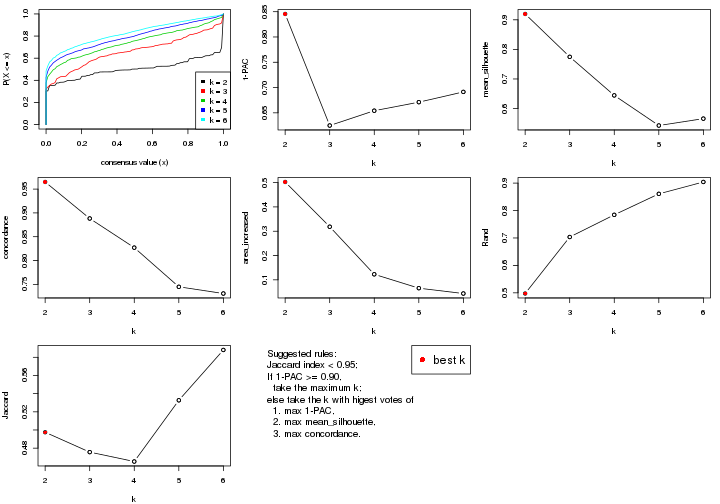
The numeric values for all these statistics can be obtained by get_stats().
get_stats(res)
#> k 1-PAC mean_silhouette concordance area_increased Rand Jaccard
#> 2 2 0.846 0.920 0.965 0.5027 0.497 0.497
#> 3 3 0.625 0.775 0.888 0.3186 0.704 0.476
#> 4 4 0.654 0.644 0.827 0.1228 0.784 0.465
#> 5 5 0.671 0.543 0.745 0.0657 0.861 0.533
#> 6 6 0.691 0.566 0.731 0.0437 0.904 0.588
suggest_best_k() suggests the best \(k\) based on these statistics. The rules are as follows:
suggest_best_k(res)
#> [1] 2
Following shows the table of the partitions (You need to click the show/hide
code output link to see it). The membership matrix (columns with name p*)
is inferred by
clue::cl_consensus()
function with the SE method. Basically the value in the membership matrix
represents the probability to belong to a certain group. The finall class
label for an item is determined with the group with highest probability it
belongs to.
In get_classes() function, the entropy is calculated from the membership
matrix and the silhouette score is calculated from the consensus matrix.
cbind(get_classes(res, k = 2), get_membership(res, k = 2))
#> class entropy silhouette p1 p2
#> SRR2443263 1 0.0000 0.9566 1.000 0.000
#> SRR2443262 2 0.0000 0.9690 0.000 1.000
#> SRR2443261 2 0.0000 0.9690 0.000 1.000
#> SRR2443260 1 0.8081 0.6908 0.752 0.248
#> SRR2443259 1 0.0000 0.9566 1.000 0.000
#> SRR2443258 1 0.0000 0.9566 1.000 0.000
#> SRR2443257 2 0.0000 0.9690 0.000 1.000
#> SRR2443256 1 0.0000 0.9566 1.000 0.000
#> SRR2443255 1 0.0000 0.9566 1.000 0.000
#> SRR2443254 1 0.9580 0.3945 0.620 0.380
#> SRR2443253 2 0.0000 0.9690 0.000 1.000
#> SRR2443251 2 0.1184 0.9587 0.016 0.984
#> SRR2443250 2 0.0000 0.9690 0.000 1.000
#> SRR2443249 2 0.0000 0.9690 0.000 1.000
#> SRR2443252 1 0.6531 0.8043 0.832 0.168
#> SRR2443247 1 0.0000 0.9566 1.000 0.000
#> SRR2443246 1 0.0000 0.9566 1.000 0.000
#> SRR2443248 2 0.0000 0.9690 0.000 1.000
#> SRR2443244 2 0.0000 0.9690 0.000 1.000
#> SRR2443245 1 0.0000 0.9566 1.000 0.000
#> SRR2443243 1 0.0000 0.9566 1.000 0.000
#> SRR2443242 2 0.0000 0.9690 0.000 1.000
#> SRR2443241 1 0.0000 0.9566 1.000 0.000
#> SRR2443240 1 0.0938 0.9478 0.988 0.012
#> SRR2443239 2 0.0000 0.9690 0.000 1.000
#> SRR2443238 1 0.0000 0.9566 1.000 0.000
#> SRR2443237 2 0.0000 0.9690 0.000 1.000
#> SRR2443236 1 0.0000 0.9566 1.000 0.000
#> SRR2443235 1 0.0000 0.9566 1.000 0.000
#> SRR2443233 1 0.0000 0.9566 1.000 0.000
#> SRR2443234 1 0.0000 0.9566 1.000 0.000
#> SRR2443232 1 0.0000 0.9566 1.000 0.000
#> SRR2443231 1 0.0000 0.9566 1.000 0.000
#> SRR2443230 1 0.0000 0.9566 1.000 0.000
#> SRR2443229 1 0.7139 0.7680 0.804 0.196
#> SRR2443228 2 0.0000 0.9690 0.000 1.000
#> SRR2443227 1 0.0000 0.9566 1.000 0.000
#> SRR2443226 1 0.0000 0.9566 1.000 0.000
#> SRR2443225 1 0.9635 0.3729 0.612 0.388
#> SRR2443223 2 0.0000 0.9690 0.000 1.000
#> SRR2443224 2 0.0000 0.9690 0.000 1.000
#> SRR2443222 2 0.0000 0.9690 0.000 1.000
#> SRR2443221 2 0.0000 0.9690 0.000 1.000
#> SRR2443219 2 0.0000 0.9690 0.000 1.000
#> SRR2443220 2 0.0000 0.9690 0.000 1.000
#> SRR2443218 2 0.0000 0.9690 0.000 1.000
#> SRR2443217 1 0.0000 0.9566 1.000 0.000
#> SRR2443216 1 0.0000 0.9566 1.000 0.000
#> SRR2443215 2 0.0000 0.9690 0.000 1.000
#> SRR2443214 1 0.0000 0.9566 1.000 0.000
#> SRR2443213 1 0.0000 0.9566 1.000 0.000
#> SRR2443212 2 0.0000 0.9690 0.000 1.000
#> SRR2443211 2 0.0000 0.9690 0.000 1.000
#> SRR2443210 2 0.0000 0.9690 0.000 1.000
#> SRR2443209 1 0.3114 0.9153 0.944 0.056
#> SRR2443208 1 0.7139 0.7680 0.804 0.196
#> SRR2443207 2 0.8327 0.6166 0.264 0.736
#> SRR2443206 2 0.0000 0.9690 0.000 1.000
#> SRR2443205 2 0.0000 0.9690 0.000 1.000
#> SRR2443204 1 0.0000 0.9566 1.000 0.000
#> SRR2443203 1 0.0000 0.9566 1.000 0.000
#> SRR2443202 2 0.1414 0.9561 0.020 0.980
#> SRR2443201 2 0.1414 0.9561 0.020 0.980
#> SRR2443200 2 0.0000 0.9690 0.000 1.000
#> SRR2443199 2 0.0000 0.9690 0.000 1.000
#> SRR2443197 2 0.7219 0.7488 0.200 0.800
#> SRR2443196 2 0.0000 0.9690 0.000 1.000
#> SRR2443198 2 0.5178 0.8581 0.116 0.884
#> SRR2443195 1 0.0000 0.9566 1.000 0.000
#> SRR2443194 1 0.7745 0.7089 0.772 0.228
#> SRR2443193 1 0.0000 0.9566 1.000 0.000
#> SRR2443191 1 0.8327 0.6749 0.736 0.264
#> SRR2443192 2 0.0000 0.9690 0.000 1.000
#> SRR2443190 1 0.0000 0.9566 1.000 0.000
#> SRR2443189 1 0.0000 0.9566 1.000 0.000
#> SRR2443188 1 0.0000 0.9566 1.000 0.000
#> SRR2443186 2 0.0000 0.9690 0.000 1.000
#> SRR2443187 2 0.0000 0.9690 0.000 1.000
#> SRR2443185 2 0.1414 0.9561 0.020 0.980
#> SRR2443184 1 0.0000 0.9566 1.000 0.000
#> SRR2443183 1 0.0000 0.9566 1.000 0.000
#> SRR2443182 1 0.0000 0.9566 1.000 0.000
#> SRR2443181 2 0.0000 0.9690 0.000 1.000
#> SRR2443180 2 0.0000 0.9690 0.000 1.000
#> SRR2443179 2 0.0000 0.9690 0.000 1.000
#> SRR2443178 2 0.8763 0.5860 0.296 0.704
#> SRR2443177 1 0.0000 0.9566 1.000 0.000
#> SRR2443176 1 0.0000 0.9566 1.000 0.000
#> SRR2443175 1 0.0000 0.9566 1.000 0.000
#> SRR2443174 1 0.0000 0.9566 1.000 0.000
#> SRR2443173 2 0.0000 0.9690 0.000 1.000
#> SRR2443172 2 0.0000 0.9690 0.000 1.000
#> SRR2443171 1 0.0000 0.9566 1.000 0.000
#> SRR2443170 1 0.0000 0.9566 1.000 0.000
#> SRR2443169 1 0.0000 0.9566 1.000 0.000
#> SRR2443168 1 0.7219 0.7627 0.800 0.200
#> SRR2443167 2 0.2948 0.9277 0.052 0.948
#> SRR2443166 1 0.0000 0.9566 1.000 0.000
#> SRR2443165 2 0.9988 0.0644 0.480 0.520
#> SRR2443164 2 0.0000 0.9690 0.000 1.000
#> SRR2443163 2 0.1414 0.9561 0.020 0.980
#> SRR2443162 1 0.0000 0.9566 1.000 0.000
#> SRR2443161 1 0.4939 0.8629 0.892 0.108
#> SRR2443160 2 0.2948 0.9277 0.052 0.948
#> SRR2443159 2 0.1414 0.9561 0.020 0.980
#> SRR2443158 1 0.0000 0.9566 1.000 0.000
#> SRR2443157 1 0.0000 0.9566 1.000 0.000
#> SRR2443156 1 0.0000 0.9566 1.000 0.000
#> SRR2443155 1 0.0000 0.9566 1.000 0.000
#> SRR2443154 1 0.0000 0.9566 1.000 0.000
#> SRR2443153 1 0.0000 0.9566 1.000 0.000
#> SRR2443152 2 0.0000 0.9690 0.000 1.000
#> SRR2443151 2 0.0000 0.9690 0.000 1.000
#> SRR2443150 2 0.0000 0.9690 0.000 1.000
#> SRR2443148 2 0.0000 0.9690 0.000 1.000
#> SRR2443147 2 0.0000 0.9690 0.000 1.000
#> SRR2443149 1 0.4022 0.8919 0.920 0.080
cbind(get_classes(res, k = 3), get_membership(res, k = 3))
#> class entropy silhouette p1 p2 p3
#> SRR2443263 1 0.5465 0.62850 0.712 0.000 0.288
#> SRR2443262 3 0.5397 0.65158 0.000 0.280 0.720
#> SRR2443261 3 0.5254 0.66923 0.000 0.264 0.736
#> SRR2443260 3 0.0237 0.83973 0.000 0.004 0.996
#> SRR2443259 3 0.3482 0.79275 0.128 0.000 0.872
#> SRR2443258 3 0.4555 0.71194 0.200 0.000 0.800
#> SRR2443257 3 0.5397 0.65158 0.000 0.280 0.720
#> SRR2443256 3 0.3267 0.80073 0.116 0.000 0.884
#> SRR2443255 3 0.1964 0.83017 0.056 0.000 0.944
#> SRR2443254 3 0.0000 0.84040 0.000 0.000 1.000
#> SRR2443253 3 0.5397 0.65158 0.000 0.280 0.720
#> SRR2443251 3 0.1860 0.83671 0.000 0.052 0.948
#> SRR2443250 3 0.5397 0.65158 0.000 0.280 0.720
#> SRR2443249 3 0.5397 0.65158 0.000 0.280 0.720
#> SRR2443252 3 0.0237 0.83973 0.000 0.004 0.996
#> SRR2443247 1 0.0000 0.89548 1.000 0.000 0.000
#> SRR2443246 1 0.1964 0.85936 0.944 0.000 0.056
#> SRR2443248 3 0.0237 0.83973 0.000 0.004 0.996
#> SRR2443244 3 0.6140 0.20273 0.000 0.404 0.596
#> SRR2443245 1 0.0000 0.89548 1.000 0.000 0.000
#> SRR2443243 1 0.0000 0.89548 1.000 0.000 0.000
#> SRR2443242 3 0.4974 0.59067 0.000 0.236 0.764
#> SRR2443241 1 0.6796 0.68189 0.708 0.056 0.236
#> SRR2443240 1 0.8494 0.56041 0.608 0.156 0.236
#> SRR2443239 2 0.1860 0.86858 0.000 0.948 0.052
#> SRR2443238 1 0.0000 0.89548 1.000 0.000 0.000
#> SRR2443237 3 0.5016 0.58372 0.000 0.240 0.760
#> SRR2443236 1 0.1643 0.86764 0.956 0.000 0.044
#> SRR2443235 1 0.0000 0.89548 1.000 0.000 0.000
#> SRR2443233 1 0.0000 0.89548 1.000 0.000 0.000
#> SRR2443234 1 0.0000 0.89548 1.000 0.000 0.000
#> SRR2443232 1 0.0000 0.89548 1.000 0.000 0.000
#> SRR2443231 1 0.0000 0.89548 1.000 0.000 0.000
#> SRR2443230 1 0.0000 0.89548 1.000 0.000 0.000
#> SRR2443229 1 0.9272 0.39100 0.528 0.240 0.232
#> SRR2443228 2 0.0237 0.86909 0.000 0.996 0.004
#> SRR2443227 1 0.0000 0.89548 1.000 0.000 0.000
#> SRR2443226 1 0.0000 0.89548 1.000 0.000 0.000
#> SRR2443225 3 0.0000 0.84040 0.000 0.000 1.000
#> SRR2443223 3 0.0237 0.83973 0.000 0.004 0.996
#> SRR2443224 2 0.3412 0.82196 0.000 0.876 0.124
#> SRR2443222 2 0.0000 0.87046 0.000 1.000 0.000
#> SRR2443221 2 0.0000 0.87046 0.000 1.000 0.000
#> SRR2443219 2 0.2165 0.84546 0.000 0.936 0.064
#> SRR2443220 3 0.5397 0.65158 0.000 0.280 0.720
#> SRR2443218 2 0.2165 0.84546 0.000 0.936 0.064
#> SRR2443217 1 0.6521 0.16828 0.504 0.004 0.492
#> SRR2443216 3 0.3686 0.78392 0.140 0.000 0.860
#> SRR2443215 2 0.3412 0.82196 0.000 0.876 0.124
#> SRR2443214 1 0.0000 0.89548 1.000 0.000 0.000
#> SRR2443213 1 0.0000 0.89548 1.000 0.000 0.000
#> SRR2443212 2 0.4702 0.71315 0.000 0.788 0.212
#> SRR2443211 2 0.3412 0.82196 0.000 0.876 0.124
#> SRR2443210 2 0.0000 0.87046 0.000 1.000 0.000
#> SRR2443209 1 0.9549 0.30873 0.484 0.276 0.240
#> SRR2443208 2 0.9792 0.00358 0.372 0.392 0.236
#> SRR2443207 2 0.6108 0.64744 0.028 0.732 0.240
#> SRR2443206 2 0.1860 0.86858 0.000 0.948 0.052
#> SRR2443205 2 0.2165 0.86346 0.000 0.936 0.064
#> SRR2443204 1 0.0000 0.89548 1.000 0.000 0.000
#> SRR2443203 1 0.4702 0.73365 0.788 0.000 0.212
#> SRR2443202 3 0.0000 0.84040 0.000 0.000 1.000
#> SRR2443201 3 0.0237 0.83973 0.000 0.004 0.996
#> SRR2443200 2 0.0237 0.86909 0.000 0.996 0.004
#> SRR2443199 2 0.2165 0.84546 0.000 0.936 0.064
#> SRR2443197 3 0.1860 0.83671 0.000 0.052 0.948
#> SRR2443196 3 0.2537 0.82552 0.000 0.080 0.920
#> SRR2443198 3 0.1753 0.83753 0.000 0.048 0.952
#> SRR2443195 1 0.0000 0.89548 1.000 0.000 0.000
#> SRR2443194 3 0.0000 0.84040 0.000 0.000 1.000
#> SRR2443193 1 0.0237 0.89330 0.996 0.000 0.004
#> SRR2443191 2 0.9641 0.23850 0.296 0.464 0.240
#> SRR2443192 3 0.5968 0.30222 0.000 0.364 0.636
#> SRR2443190 1 0.0000 0.89548 1.000 0.000 0.000
#> SRR2443189 1 0.0000 0.89548 1.000 0.000 0.000
#> SRR2443188 1 0.0000 0.89548 1.000 0.000 0.000
#> SRR2443186 2 0.1860 0.86858 0.000 0.948 0.052
#> SRR2443187 2 0.1860 0.86858 0.000 0.948 0.052
#> SRR2443185 3 0.0237 0.84060 0.000 0.004 0.996
#> SRR2443184 3 0.3816 0.77635 0.148 0.000 0.852
#> SRR2443183 1 0.0000 0.89548 1.000 0.000 0.000
#> SRR2443182 1 0.0892 0.88559 0.980 0.000 0.020
#> SRR2443181 2 0.1860 0.86858 0.000 0.948 0.052
#> SRR2443180 2 0.2165 0.84546 0.000 0.936 0.064
#> SRR2443179 3 0.5397 0.65158 0.000 0.280 0.720
#> SRR2443178 3 0.4280 0.77116 0.124 0.020 0.856
#> SRR2443177 1 0.0000 0.89548 1.000 0.000 0.000
#> SRR2443176 1 0.4605 0.73990 0.796 0.000 0.204
#> SRR2443175 1 0.0000 0.89548 1.000 0.000 0.000
#> SRR2443174 1 0.0000 0.89548 1.000 0.000 0.000
#> SRR2443173 2 0.0892 0.87370 0.000 0.980 0.020
#> SRR2443172 2 0.0424 0.87232 0.000 0.992 0.008
#> SRR2443171 1 0.0000 0.89548 1.000 0.000 0.000
#> SRR2443170 1 0.0000 0.89548 1.000 0.000 0.000
#> SRR2443169 1 0.0000 0.89548 1.000 0.000 0.000
#> SRR2443168 1 0.9588 0.32137 0.476 0.240 0.284
#> SRR2443167 3 0.1860 0.83671 0.000 0.052 0.948
#> SRR2443166 1 0.4555 0.70292 0.800 0.000 0.200
#> SRR2443165 3 0.1989 0.83746 0.004 0.048 0.948
#> SRR2443164 2 0.2165 0.84546 0.000 0.936 0.064
#> SRR2443163 3 0.0237 0.83973 0.000 0.004 0.996
#> SRR2443162 3 0.3267 0.80073 0.116 0.000 0.884
#> SRR2443161 3 0.0237 0.83973 0.000 0.004 0.996
#> SRR2443160 3 0.1860 0.83671 0.000 0.052 0.948
#> SRR2443159 3 0.2537 0.82552 0.000 0.080 0.920
#> SRR2443158 3 0.4931 0.66377 0.232 0.000 0.768
#> SRR2443157 1 0.0000 0.89548 1.000 0.000 0.000
#> SRR2443156 1 0.5785 0.64371 0.696 0.004 0.300
#> SRR2443155 1 0.4293 0.78813 0.832 0.004 0.164
#> SRR2443154 1 0.5158 0.72006 0.764 0.004 0.232
#> SRR2443153 1 0.0000 0.89548 1.000 0.000 0.000
#> SRR2443152 2 0.0892 0.87370 0.000 0.980 0.020
#> SRR2443151 2 0.0747 0.86691 0.000 0.984 0.016
#> SRR2443150 2 0.0892 0.87370 0.000 0.980 0.020
#> SRR2443148 2 0.3412 0.78503 0.000 0.876 0.124
#> SRR2443147 2 0.5905 0.33195 0.000 0.648 0.352
#> SRR2443149 3 0.3851 0.76024 0.136 0.004 0.860
cbind(get_classes(res, k = 4), get_membership(res, k = 4))
#> class entropy silhouette p1 p2 p3 p4
#> SRR2443263 3 0.4660 0.6437 0.192 0.016 0.776 0.016
#> SRR2443262 4 0.4277 0.5414 0.000 0.000 0.280 0.720
#> SRR2443261 4 0.4889 0.3701 0.000 0.004 0.360 0.636
#> SRR2443260 3 0.0707 0.8173 0.000 0.020 0.980 0.000
#> SRR2443259 3 0.0592 0.8168 0.000 0.016 0.984 0.000
#> SRR2443258 3 0.0592 0.8168 0.000 0.016 0.984 0.000
#> SRR2443257 4 0.4277 0.5414 0.000 0.000 0.280 0.720
#> SRR2443256 3 0.0592 0.8168 0.000 0.016 0.984 0.000
#> SRR2443255 3 0.0188 0.8182 0.000 0.000 0.996 0.004
#> SRR2443254 3 0.1398 0.8179 0.000 0.004 0.956 0.040
#> SRR2443253 4 0.4277 0.5414 0.000 0.000 0.280 0.720
#> SRR2443251 3 0.3908 0.7124 0.000 0.004 0.784 0.212
#> SRR2443250 4 0.4277 0.5414 0.000 0.000 0.280 0.720
#> SRR2443249 4 0.4277 0.5414 0.000 0.000 0.280 0.720
#> SRR2443252 3 0.0707 0.8173 0.000 0.020 0.980 0.000
#> SRR2443247 1 0.1576 0.8990 0.948 0.000 0.048 0.004
#> SRR2443246 1 0.7239 0.4116 0.564 0.244 0.188 0.004
#> SRR2443248 3 0.2654 0.8010 0.000 0.004 0.888 0.108
#> SRR2443244 2 0.6306 0.1948 0.000 0.544 0.392 0.064
#> SRR2443245 1 0.1677 0.9023 0.948 0.000 0.040 0.012
#> SRR2443243 1 0.0000 0.9222 1.000 0.000 0.000 0.000
#> SRR2443242 3 0.5608 0.5854 0.000 0.256 0.684 0.060
#> SRR2443241 2 0.5066 0.6009 0.112 0.768 0.120 0.000
#> SRR2443240 2 0.3601 0.6410 0.084 0.860 0.056 0.000
#> SRR2443239 2 0.3837 0.5366 0.000 0.776 0.000 0.224
#> SRR2443238 1 0.0188 0.9209 0.996 0.004 0.000 0.000
#> SRR2443237 3 0.5869 0.3819 0.000 0.360 0.596 0.044
#> SRR2443236 2 0.5165 -0.0436 0.484 0.512 0.004 0.000
#> SRR2443235 1 0.0000 0.9222 1.000 0.000 0.000 0.000
#> SRR2443233 1 0.0000 0.9222 1.000 0.000 0.000 0.000
#> SRR2443234 1 0.0000 0.9222 1.000 0.000 0.000 0.000
#> SRR2443232 1 0.0000 0.9222 1.000 0.000 0.000 0.000
#> SRR2443231 1 0.0000 0.9222 1.000 0.000 0.000 0.000
#> SRR2443230 1 0.0000 0.9222 1.000 0.000 0.000 0.000
#> SRR2443229 2 0.4850 0.6273 0.060 0.800 0.124 0.016
#> SRR2443228 4 0.4134 0.4784 0.000 0.260 0.000 0.740
#> SRR2443227 1 0.0000 0.9222 1.000 0.000 0.000 0.000
#> SRR2443226 1 0.0336 0.9200 0.992 0.000 0.000 0.008
#> SRR2443225 3 0.2542 0.8140 0.000 0.012 0.904 0.084
#> SRR2443223 3 0.2466 0.8053 0.000 0.004 0.900 0.096
#> SRR2443224 2 0.0817 0.6546 0.000 0.976 0.000 0.024
#> SRR2443222 4 0.4941 0.1653 0.000 0.436 0.000 0.564
#> SRR2443221 4 0.4941 0.1653 0.000 0.436 0.000 0.564
#> SRR2443219 4 0.2473 0.6215 0.000 0.080 0.012 0.908
#> SRR2443220 4 0.4800 0.4106 0.000 0.004 0.340 0.656
#> SRR2443218 4 0.3123 0.5884 0.000 0.156 0.000 0.844
#> SRR2443217 3 0.6937 0.1160 0.068 0.424 0.492 0.016
#> SRR2443216 3 0.0779 0.8165 0.000 0.016 0.980 0.004
#> SRR2443215 2 0.1209 0.6550 0.000 0.964 0.004 0.032
#> SRR2443214 1 0.1721 0.9063 0.952 0.008 0.028 0.012
#> SRR2443213 1 0.0000 0.9222 1.000 0.000 0.000 0.000
#> SRR2443212 2 0.1209 0.6550 0.000 0.964 0.004 0.032
#> SRR2443211 2 0.0817 0.6546 0.000 0.976 0.000 0.024
#> SRR2443210 4 0.4941 0.1653 0.000 0.436 0.000 0.564
#> SRR2443209 2 0.3581 0.6367 0.032 0.852 0.116 0.000
#> SRR2443208 2 0.3758 0.6467 0.028 0.860 0.096 0.016
#> SRR2443207 2 0.1706 0.6587 0.000 0.948 0.036 0.016
#> SRR2443206 2 0.3907 0.5271 0.000 0.768 0.000 0.232
#> SRR2443205 2 0.0817 0.6546 0.000 0.976 0.000 0.024
#> SRR2443204 1 0.1854 0.8981 0.940 0.000 0.048 0.012
#> SRR2443203 3 0.5320 0.2606 0.416 0.000 0.572 0.012
#> SRR2443202 3 0.2741 0.8105 0.000 0.012 0.892 0.096
#> SRR2443201 3 0.2266 0.8124 0.000 0.004 0.912 0.084
#> SRR2443200 4 0.4697 0.3312 0.000 0.356 0.000 0.644
#> SRR2443199 4 0.3123 0.5884 0.000 0.156 0.000 0.844
#> SRR2443197 3 0.3791 0.7359 0.000 0.004 0.796 0.200
#> SRR2443196 3 0.4957 0.5682 0.000 0.012 0.668 0.320
#> SRR2443198 3 0.3791 0.7372 0.000 0.004 0.796 0.200
#> SRR2443195 1 0.1151 0.9111 0.968 0.000 0.024 0.008
#> SRR2443194 3 0.1824 0.8179 0.000 0.004 0.936 0.060
#> SRR2443193 1 0.5276 0.6465 0.728 0.228 0.032 0.012
#> SRR2443191 2 0.2363 0.6562 0.024 0.920 0.056 0.000
#> SRR2443192 2 0.6434 0.0280 0.000 0.500 0.432 0.068
#> SRR2443190 1 0.0000 0.9222 1.000 0.000 0.000 0.000
#> SRR2443189 1 0.2271 0.8944 0.928 0.008 0.052 0.012
#> SRR2443188 1 0.0000 0.9222 1.000 0.000 0.000 0.000
#> SRR2443186 2 0.3726 0.5489 0.000 0.788 0.000 0.212
#> SRR2443187 2 0.3726 0.5489 0.000 0.788 0.000 0.212
#> SRR2443185 3 0.2334 0.8108 0.000 0.004 0.908 0.088
#> SRR2443184 3 0.1059 0.8148 0.000 0.016 0.972 0.012
#> SRR2443183 1 0.0000 0.9222 1.000 0.000 0.000 0.000
#> SRR2443182 1 0.3304 0.8242 0.864 0.008 0.120 0.008
#> SRR2443181 2 0.3688 0.5523 0.000 0.792 0.000 0.208
#> SRR2443180 4 0.3024 0.5930 0.000 0.148 0.000 0.852
#> SRR2443179 4 0.4422 0.5429 0.000 0.008 0.256 0.736
#> SRR2443178 3 0.4626 0.7858 0.008 0.064 0.808 0.120
#> SRR2443177 1 0.2353 0.8916 0.924 0.008 0.056 0.012
#> SRR2443176 3 0.5308 0.5648 0.256 0.024 0.708 0.012
#> SRR2443175 1 0.0188 0.9214 0.996 0.000 0.004 0.000
#> SRR2443174 1 0.0188 0.9211 0.996 0.000 0.000 0.004
#> SRR2443173 2 0.4992 0.0387 0.000 0.524 0.000 0.476
#> SRR2443172 2 0.4998 -0.0332 0.000 0.512 0.000 0.488
#> SRR2443171 1 0.2189 0.8884 0.932 0.020 0.044 0.004
#> SRR2443170 1 0.5658 0.1482 0.528 0.452 0.016 0.004
#> SRR2443169 1 0.0376 0.9200 0.992 0.000 0.004 0.004
#> SRR2443168 2 0.4704 0.5865 0.028 0.764 0.204 0.004
#> SRR2443167 3 0.3831 0.7197 0.000 0.004 0.792 0.204
#> SRR2443166 1 0.4936 0.5314 0.652 0.000 0.340 0.008
#> SRR2443165 3 0.2647 0.7991 0.000 0.000 0.880 0.120
#> SRR2443164 4 0.2149 0.6199 0.000 0.088 0.000 0.912
#> SRR2443163 3 0.2466 0.8053 0.000 0.004 0.900 0.096
#> SRR2443162 3 0.0592 0.8168 0.000 0.016 0.984 0.000
#> SRR2443161 3 0.0707 0.8173 0.000 0.020 0.980 0.000
#> SRR2443160 3 0.3831 0.7197 0.000 0.004 0.792 0.204
#> SRR2443159 3 0.4677 0.5545 0.000 0.004 0.680 0.316
#> SRR2443158 3 0.0779 0.8157 0.000 0.016 0.980 0.004
#> SRR2443157 1 0.3224 0.8451 0.864 0.000 0.120 0.016
#> SRR2443156 3 0.6171 0.0417 0.040 0.456 0.500 0.004
#> SRR2443155 2 0.7304 0.3192 0.312 0.528 0.156 0.004
#> SRR2443154 2 0.7373 0.3429 0.288 0.532 0.176 0.004
#> SRR2443153 1 0.0000 0.9222 1.000 0.000 0.000 0.000
#> SRR2443152 2 0.4977 0.0568 0.000 0.540 0.000 0.460
#> SRR2443151 4 0.2973 0.5950 0.000 0.144 0.000 0.856
#> SRR2443150 2 0.4972 0.0667 0.000 0.544 0.000 0.456
#> SRR2443148 4 0.1182 0.6326 0.000 0.016 0.016 0.968
#> SRR2443147 4 0.1584 0.6346 0.000 0.012 0.036 0.952
#> SRR2443149 3 0.2081 0.7783 0.000 0.084 0.916 0.000
cbind(get_classes(res, k = 5), get_membership(res, k = 5))
#> class entropy silhouette p1 p2 p3 p4 p5
#> SRR2443263 3 0.3530 0.56763 0.084 0.020 0.856 0.032 0.008
#> SRR2443262 4 0.4221 0.61870 0.000 0.112 0.108 0.780 0.000
#> SRR2443261 4 0.3309 0.59465 0.000 0.036 0.128 0.836 0.000
#> SRR2443260 3 0.1357 0.65595 0.000 0.000 0.948 0.048 0.004
#> SRR2443259 3 0.0162 0.65554 0.000 0.000 0.996 0.004 0.000
#> SRR2443258 3 0.0000 0.65485 0.000 0.000 1.000 0.000 0.000
#> SRR2443257 4 0.3800 0.61819 0.000 0.080 0.108 0.812 0.000
#> SRR2443256 3 0.0000 0.65485 0.000 0.000 1.000 0.000 0.000
#> SRR2443255 3 0.0703 0.65806 0.000 0.000 0.976 0.024 0.000
#> SRR2443254 3 0.3461 0.57073 0.000 0.000 0.772 0.224 0.004
#> SRR2443253 4 0.4269 0.61715 0.000 0.116 0.108 0.776 0.000
#> SRR2443251 4 0.4306 -0.20927 0.000 0.000 0.492 0.508 0.000
#> SRR2443250 4 0.4221 0.61870 0.000 0.112 0.108 0.780 0.000
#> SRR2443249 4 0.3912 0.61922 0.000 0.088 0.108 0.804 0.000
#> SRR2443252 3 0.1041 0.65839 0.000 0.000 0.964 0.032 0.004
#> SRR2443247 1 0.2673 0.83917 0.892 0.000 0.072 0.028 0.008
#> SRR2443246 5 0.7611 0.35237 0.156 0.008 0.336 0.060 0.440
#> SRR2443248 3 0.5071 0.26648 0.000 0.016 0.532 0.440 0.012
#> SRR2443244 5 0.7311 -0.00268 0.000 0.028 0.248 0.320 0.404
#> SRR2443245 1 0.4642 0.77553 0.748 0.032 0.196 0.020 0.004
#> SRR2443243 1 0.0693 0.88862 0.980 0.012 0.000 0.008 0.000
#> SRR2443242 4 0.7543 -0.14717 0.000 0.036 0.320 0.328 0.316
#> SRR2443241 5 0.1106 0.66333 0.024 0.000 0.000 0.012 0.964
#> SRR2443240 5 0.1686 0.66086 0.028 0.008 0.000 0.020 0.944
#> SRR2443239 2 0.4448 0.19828 0.000 0.516 0.000 0.004 0.480
#> SRR2443238 1 0.1195 0.88388 0.960 0.028 0.000 0.012 0.000
#> SRR2443237 5 0.7227 0.02105 0.000 0.028 0.312 0.228 0.432
#> SRR2443236 5 0.3203 0.61492 0.168 0.000 0.000 0.012 0.820
#> SRR2443235 1 0.0000 0.89141 1.000 0.000 0.000 0.000 0.000
#> SRR2443233 1 0.0000 0.89141 1.000 0.000 0.000 0.000 0.000
#> SRR2443234 1 0.0000 0.89141 1.000 0.000 0.000 0.000 0.000
#> SRR2443232 1 0.0000 0.89141 1.000 0.000 0.000 0.000 0.000
#> SRR2443231 1 0.0000 0.89141 1.000 0.000 0.000 0.000 0.000
#> SRR2443230 1 0.0000 0.89141 1.000 0.000 0.000 0.000 0.000
#> SRR2443229 5 0.2459 0.66068 0.000 0.040 0.052 0.004 0.904
#> SRR2443228 2 0.1281 0.68584 0.000 0.956 0.000 0.032 0.012
#> SRR2443227 1 0.0798 0.88801 0.976 0.016 0.000 0.008 0.000
#> SRR2443226 1 0.2082 0.87383 0.928 0.032 0.024 0.016 0.000
#> SRR2443225 3 0.4949 0.48233 0.000 0.004 0.600 0.368 0.028
#> SRR2443223 3 0.4505 0.40657 0.000 0.000 0.604 0.384 0.012
#> SRR2443224 5 0.3616 0.55199 0.000 0.164 0.000 0.032 0.804
#> SRR2443222 2 0.1671 0.70601 0.000 0.924 0.000 0.000 0.076
#> SRR2443221 2 0.1671 0.70601 0.000 0.924 0.000 0.000 0.076
#> SRR2443219 4 0.4452 -0.12872 0.000 0.496 0.000 0.500 0.004
#> SRR2443220 4 0.3075 0.60840 0.000 0.048 0.092 0.860 0.000
#> SRR2443218 2 0.3838 0.49089 0.000 0.716 0.000 0.280 0.004
#> SRR2443217 5 0.5382 0.49600 0.000 0.020 0.276 0.052 0.652
#> SRR2443216 3 0.0290 0.65589 0.000 0.000 0.992 0.008 0.000
#> SRR2443215 5 0.3769 0.54411 0.000 0.180 0.000 0.032 0.788
#> SRR2443214 1 0.5124 0.77706 0.744 0.032 0.168 0.040 0.016
#> SRR2443213 1 0.0000 0.89141 1.000 0.000 0.000 0.000 0.000
#> SRR2443212 5 0.2329 0.60557 0.000 0.124 0.000 0.000 0.876
#> SRR2443211 5 0.2824 0.60664 0.000 0.116 0.000 0.020 0.864
#> SRR2443210 2 0.1732 0.70514 0.000 0.920 0.000 0.000 0.080
#> SRR2443209 5 0.0609 0.65910 0.000 0.020 0.000 0.000 0.980
#> SRR2443208 5 0.1043 0.65478 0.000 0.040 0.000 0.000 0.960
#> SRR2443207 5 0.1121 0.65350 0.000 0.044 0.000 0.000 0.956
#> SRR2443206 2 0.4440 0.22488 0.000 0.528 0.000 0.004 0.468
#> SRR2443205 5 0.3333 0.50585 0.000 0.208 0.000 0.004 0.788
#> SRR2443204 1 0.4675 0.77274 0.744 0.032 0.200 0.020 0.004
#> SRR2443203 3 0.6024 0.31344 0.276 0.032 0.628 0.048 0.016
#> SRR2443202 3 0.4953 0.38307 0.000 0.000 0.532 0.440 0.028
#> SRR2443201 3 0.4949 0.43567 0.000 0.000 0.572 0.396 0.032
#> SRR2443200 2 0.1800 0.70465 0.000 0.932 0.000 0.020 0.048
#> SRR2443199 2 0.3838 0.49089 0.000 0.716 0.000 0.280 0.004
#> SRR2443197 4 0.4827 -0.30192 0.000 0.000 0.476 0.504 0.020
#> SRR2443196 4 0.4772 0.11887 0.000 0.004 0.320 0.648 0.028
#> SRR2443198 4 0.4826 -0.29823 0.000 0.000 0.472 0.508 0.020
#> SRR2443195 1 0.3900 0.81325 0.808 0.032 0.144 0.016 0.000
#> SRR2443194 3 0.4360 0.55896 0.000 0.000 0.692 0.284 0.024
#> SRR2443193 5 0.7878 0.14461 0.284 0.032 0.212 0.032 0.440
#> SRR2443191 5 0.0703 0.65770 0.000 0.024 0.000 0.000 0.976
#> SRR2443192 5 0.7022 0.13621 0.000 0.020 0.272 0.240 0.468
#> SRR2443190 1 0.0000 0.89141 1.000 0.000 0.000 0.000 0.000
#> SRR2443189 1 0.5460 0.74374 0.704 0.032 0.208 0.040 0.016
#> SRR2443188 1 0.0000 0.89141 1.000 0.000 0.000 0.000 0.000
#> SRR2443186 2 0.4450 0.17800 0.000 0.508 0.000 0.004 0.488
#> SRR2443187 2 0.4450 0.17800 0.000 0.508 0.000 0.004 0.488
#> SRR2443185 3 0.4848 0.40443 0.000 0.000 0.556 0.420 0.024
#> SRR2443184 3 0.1774 0.64015 0.000 0.000 0.932 0.052 0.016
#> SRR2443183 1 0.0000 0.89141 1.000 0.000 0.000 0.000 0.000
#> SRR2443182 1 0.4957 0.67351 0.660 0.032 0.296 0.012 0.000
#> SRR2443181 5 0.4437 -0.12958 0.000 0.464 0.000 0.004 0.532
#> SRR2443180 2 0.3969 0.46150 0.000 0.692 0.000 0.304 0.004
#> SRR2443179 4 0.3644 0.56844 0.000 0.048 0.084 0.844 0.024
#> SRR2443178 3 0.5688 0.34883 0.004 0.008 0.488 0.452 0.048
#> SRR2443177 1 0.5460 0.74374 0.704 0.032 0.208 0.040 0.016
#> SRR2443176 3 0.4163 0.56756 0.068 0.032 0.832 0.048 0.020
#> SRR2443175 1 0.1497 0.88506 0.956 0.012 0.012 0.012 0.008
#> SRR2443174 1 0.0162 0.89088 0.996 0.000 0.000 0.000 0.004
#> SRR2443173 2 0.2873 0.68992 0.000 0.856 0.000 0.016 0.128
#> SRR2443172 2 0.3432 0.68459 0.000 0.828 0.000 0.040 0.132
#> SRR2443171 1 0.4452 0.73134 0.796 0.000 0.048 0.052 0.104
#> SRR2443170 5 0.5067 0.56264 0.208 0.000 0.020 0.060 0.712
#> SRR2443169 1 0.1059 0.87940 0.968 0.000 0.004 0.020 0.008
#> SRR2443168 5 0.3504 0.64143 0.000 0.004 0.092 0.064 0.840
#> SRR2443167 3 0.4446 0.21955 0.000 0.000 0.520 0.476 0.004
#> SRR2443166 3 0.5390 0.13952 0.308 0.028 0.636 0.020 0.008
#> SRR2443165 3 0.4283 0.47541 0.000 0.000 0.644 0.348 0.008
#> SRR2443164 2 0.4150 0.33924 0.000 0.612 0.000 0.388 0.000
#> SRR2443163 3 0.4430 0.44166 0.000 0.000 0.628 0.360 0.012
#> SRR2443162 3 0.0000 0.65485 0.000 0.000 1.000 0.000 0.000
#> SRR2443161 3 0.2011 0.64373 0.000 0.000 0.908 0.088 0.004
#> SRR2443160 3 0.4451 0.17702 0.000 0.000 0.504 0.492 0.004
#> SRR2443159 4 0.3561 0.42211 0.000 0.000 0.260 0.740 0.000
#> SRR2443158 3 0.0992 0.64035 0.000 0.000 0.968 0.024 0.008
#> SRR2443157 1 0.5949 0.44043 0.504 0.032 0.428 0.028 0.008
#> SRR2443156 5 0.5462 0.51006 0.000 0.008 0.316 0.064 0.612
#> SRR2443155 5 0.5015 0.60964 0.108 0.000 0.072 0.060 0.760
#> SRR2443154 5 0.5802 0.58896 0.072 0.008 0.156 0.060 0.704
#> SRR2443153 1 0.0162 0.89088 0.996 0.000 0.000 0.000 0.004
#> SRR2443152 2 0.3521 0.67988 0.000 0.820 0.000 0.040 0.140
#> SRR2443151 2 0.3895 0.44987 0.000 0.680 0.000 0.320 0.000
#> SRR2443150 2 0.3452 0.67520 0.000 0.820 0.000 0.032 0.148
#> SRR2443148 4 0.4268 0.00677 0.000 0.444 0.000 0.556 0.000
#> SRR2443147 4 0.4446 0.12611 0.000 0.400 0.008 0.592 0.000
#> SRR2443149 3 0.2249 0.57970 0.000 0.000 0.896 0.008 0.096
cbind(get_classes(res, k = 6), get_membership(res, k = 6))
#> class entropy silhouette p1 p2 p3 p4 p5 p6
#> SRR2443263 3 0.3934 0.6516 0.020 0.000 0.728 0.000 0.012 0.240
#> SRR2443262 4 0.3410 0.6845 0.000 0.008 0.008 0.768 0.000 0.216
#> SRR2443261 4 0.3802 0.5439 0.000 0.000 0.012 0.676 0.000 0.312
#> SRR2443260 3 0.4828 0.4348 0.000 0.000 0.500 0.044 0.004 0.452
#> SRR2443259 3 0.4513 0.6699 0.000 0.000 0.640 0.044 0.004 0.312
#> SRR2443258 3 0.4330 0.6802 0.000 0.000 0.680 0.044 0.004 0.272
#> SRR2443257 4 0.3217 0.6784 0.000 0.000 0.008 0.768 0.000 0.224
#> SRR2443256 3 0.4528 0.6698 0.000 0.000 0.636 0.044 0.004 0.316
#> SRR2443255 3 0.4615 0.6438 0.000 0.000 0.612 0.044 0.004 0.340
#> SRR2443254 6 0.4900 -0.2457 0.000 0.000 0.416 0.052 0.004 0.528
#> SRR2443253 4 0.3323 0.6859 0.000 0.008 0.008 0.780 0.000 0.204
#> SRR2443251 6 0.4223 0.5989 0.000 0.000 0.060 0.236 0.000 0.704
#> SRR2443250 4 0.3410 0.6845 0.000 0.008 0.008 0.768 0.000 0.216
#> SRR2443249 4 0.3217 0.6784 0.000 0.000 0.008 0.768 0.000 0.224
#> SRR2443252 3 0.4825 0.4446 0.000 0.000 0.504 0.044 0.004 0.448
#> SRR2443247 1 0.2944 0.7251 0.832 0.000 0.148 0.012 0.008 0.000
#> SRR2443246 5 0.5907 0.4458 0.032 0.000 0.364 0.052 0.528 0.024
#> SRR2443248 6 0.4003 0.6226 0.000 0.000 0.048 0.208 0.004 0.740
#> SRR2443244 6 0.4127 0.4911 0.000 0.004 0.016 0.004 0.304 0.672
#> SRR2443245 1 0.5312 0.5522 0.556 0.004 0.348 0.088 0.000 0.004
#> SRR2443243 1 0.3703 0.7469 0.792 0.004 0.132 0.072 0.000 0.000
#> SRR2443242 6 0.4206 0.5761 0.000 0.008 0.040 0.004 0.220 0.728
#> SRR2443241 5 0.1819 0.7247 0.000 0.004 0.024 0.032 0.932 0.008
#> SRR2443240 5 0.2089 0.7226 0.008 0.008 0.032 0.032 0.920 0.000
#> SRR2443239 2 0.4237 0.3440 0.000 0.624 0.012 0.004 0.356 0.004
#> SRR2443238 1 0.4759 0.7127 0.712 0.004 0.180 0.088 0.016 0.000
#> SRR2443237 6 0.4511 0.5168 0.000 0.000 0.036 0.016 0.276 0.672
#> SRR2443236 5 0.2758 0.7136 0.056 0.000 0.032 0.032 0.880 0.000
#> SRR2443235 1 0.0458 0.8128 0.984 0.000 0.000 0.000 0.016 0.000
#> SRR2443233 1 0.0458 0.8128 0.984 0.000 0.000 0.000 0.016 0.000
#> SRR2443234 1 0.0458 0.8128 0.984 0.000 0.000 0.000 0.016 0.000
#> SRR2443232 1 0.0458 0.8128 0.984 0.000 0.000 0.000 0.016 0.000
#> SRR2443231 1 0.0363 0.8127 0.988 0.000 0.000 0.000 0.012 0.000
#> SRR2443230 1 0.0260 0.8130 0.992 0.000 0.008 0.000 0.000 0.000
#> SRR2443229 5 0.1882 0.7186 0.000 0.028 0.024 0.000 0.928 0.020
#> SRR2443228 2 0.2860 0.6220 0.000 0.852 0.048 0.100 0.000 0.000
#> SRR2443227 1 0.1151 0.8079 0.956 0.000 0.032 0.012 0.000 0.000
#> SRR2443226 1 0.4616 0.7004 0.704 0.004 0.200 0.088 0.004 0.000
#> SRR2443225 6 0.2019 0.6538 0.000 0.000 0.088 0.012 0.000 0.900
#> SRR2443223 6 0.2776 0.6796 0.000 0.000 0.052 0.088 0.000 0.860
#> SRR2443224 5 0.4595 0.4750 0.000 0.264 0.040 0.020 0.676 0.000
#> SRR2443222 2 0.2058 0.6543 0.000 0.908 0.036 0.056 0.000 0.000
#> SRR2443221 2 0.2058 0.6543 0.000 0.908 0.036 0.056 0.000 0.000
#> SRR2443219 4 0.4246 0.4778 0.000 0.252 0.016 0.704 0.000 0.028
#> SRR2443220 4 0.3851 0.2595 0.000 0.000 0.000 0.540 0.000 0.460
#> SRR2443218 2 0.4721 0.0973 0.000 0.532 0.048 0.420 0.000 0.000
#> SRR2443217 5 0.5177 0.4934 0.000 0.000 0.116 0.012 0.640 0.232
#> SRR2443216 3 0.4351 0.6801 0.000 0.000 0.676 0.044 0.004 0.276
#> SRR2443215 5 0.5376 0.2366 0.000 0.360 0.020 0.004 0.556 0.060
#> SRR2443214 1 0.6574 0.5000 0.496 0.004 0.332 0.088 0.008 0.072
#> SRR2443213 1 0.0458 0.8128 0.984 0.000 0.000 0.000 0.016 0.000
#> SRR2443212 5 0.3343 0.5965 0.000 0.176 0.024 0.004 0.796 0.000
#> SRR2443211 5 0.3986 0.5638 0.000 0.204 0.036 0.012 0.748 0.000
#> SRR2443210 2 0.1867 0.6603 0.000 0.924 0.036 0.036 0.004 0.000
#> SRR2443209 5 0.0692 0.7201 0.000 0.020 0.000 0.000 0.976 0.004
#> SRR2443208 5 0.1408 0.7179 0.000 0.036 0.020 0.000 0.944 0.000
#> SRR2443207 5 0.1552 0.7088 0.000 0.036 0.020 0.004 0.940 0.000
#> SRR2443206 2 0.4019 0.3864 0.000 0.652 0.012 0.004 0.332 0.000
#> SRR2443205 5 0.4588 0.1203 0.000 0.420 0.024 0.008 0.548 0.000
#> SRR2443204 1 0.5350 0.5309 0.540 0.004 0.364 0.088 0.000 0.004
#> SRR2443203 3 0.6650 0.2858 0.188 0.004 0.540 0.088 0.000 0.180
#> SRR2443202 6 0.0291 0.7085 0.000 0.000 0.004 0.004 0.000 0.992
#> SRR2443201 6 0.0865 0.6982 0.000 0.000 0.036 0.000 0.000 0.964
#> SRR2443200 2 0.2747 0.6242 0.000 0.860 0.044 0.096 0.000 0.000
#> SRR2443199 2 0.4715 0.0929 0.000 0.536 0.048 0.416 0.000 0.000
#> SRR2443197 6 0.2006 0.7077 0.000 0.000 0.016 0.080 0.000 0.904
#> SRR2443196 6 0.3043 0.6222 0.000 0.000 0.012 0.148 0.012 0.828
#> SRR2443198 6 0.1531 0.7095 0.000 0.000 0.004 0.068 0.000 0.928
#> SRR2443195 1 0.5081 0.5933 0.592 0.004 0.316 0.088 0.000 0.000
#> SRR2443194 6 0.2491 0.5341 0.000 0.000 0.164 0.000 0.000 0.836
#> SRR2443193 5 0.7545 0.3659 0.112 0.004 0.232 0.080 0.496 0.076
#> SRR2443191 5 0.0777 0.7190 0.000 0.024 0.000 0.000 0.972 0.004
#> SRR2443192 6 0.4360 0.4725 0.000 0.004 0.016 0.012 0.312 0.656
#> SRR2443190 1 0.0458 0.8128 0.984 0.000 0.000 0.000 0.016 0.000
#> SRR2443189 1 0.6344 0.4354 0.460 0.004 0.384 0.088 0.000 0.064
#> SRR2443188 1 0.0458 0.8128 0.984 0.000 0.000 0.000 0.016 0.000
#> SRR2443186 2 0.4102 0.3453 0.000 0.628 0.012 0.004 0.356 0.000
#> SRR2443187 2 0.4102 0.3453 0.000 0.628 0.012 0.004 0.356 0.000
#> SRR2443185 6 0.1074 0.7077 0.000 0.000 0.028 0.012 0.000 0.960
#> SRR2443184 3 0.3850 0.6526 0.000 0.000 0.652 0.004 0.004 0.340
#> SRR2443183 1 0.0405 0.8131 0.988 0.000 0.008 0.000 0.004 0.000
#> SRR2443182 3 0.5647 -0.2805 0.408 0.000 0.488 0.076 0.000 0.028
#> SRR2443181 2 0.4337 0.3120 0.000 0.604 0.016 0.008 0.372 0.000
#> SRR2443180 2 0.4748 0.0195 0.000 0.504 0.048 0.448 0.000 0.000
#> SRR2443179 4 0.4083 0.3986 0.000 0.000 0.008 0.532 0.000 0.460
#> SRR2443178 6 0.2271 0.6826 0.000 0.000 0.024 0.032 0.036 0.908
#> SRR2443177 1 0.6420 0.4377 0.460 0.004 0.376 0.088 0.000 0.072
#> SRR2443176 3 0.4797 0.5395 0.032 0.000 0.692 0.056 0.000 0.220
#> SRR2443175 1 0.2600 0.7834 0.860 0.000 0.124 0.008 0.008 0.000
#> SRR2443174 1 0.0260 0.8130 0.992 0.000 0.008 0.000 0.000 0.000
#> SRR2443173 2 0.1458 0.6661 0.000 0.948 0.016 0.020 0.016 0.000
#> SRR2443172 2 0.2713 0.6584 0.000 0.884 0.036 0.040 0.040 0.000
#> SRR2443171 1 0.6266 0.2106 0.532 0.000 0.144 0.052 0.272 0.000
#> SRR2443170 5 0.5007 0.6476 0.100 0.000 0.136 0.052 0.712 0.000
#> SRR2443169 1 0.1841 0.7848 0.920 0.000 0.064 0.008 0.008 0.000
#> SRR2443168 5 0.3718 0.6925 0.000 0.000 0.164 0.052 0.780 0.004
#> SRR2443167 6 0.3566 0.6686 0.000 0.000 0.056 0.156 0.000 0.788
#> SRR2443166 3 0.4644 0.5152 0.108 0.004 0.756 0.060 0.000 0.072
#> SRR2443165 6 0.3432 0.5853 0.000 0.000 0.148 0.052 0.000 0.800
#> SRR2443164 4 0.4900 0.0997 0.000 0.416 0.052 0.528 0.000 0.004
#> SRR2443163 6 0.3159 0.6533 0.000 0.000 0.084 0.072 0.004 0.840
#> SRR2443162 3 0.4528 0.6698 0.000 0.000 0.636 0.044 0.004 0.316
#> SRR2443161 3 0.4832 0.4163 0.000 0.000 0.492 0.044 0.004 0.460
#> SRR2443160 6 0.3776 0.6338 0.000 0.000 0.048 0.196 0.000 0.756
#> SRR2443159 6 0.4591 -0.0286 0.000 0.000 0.036 0.464 0.000 0.500
#> SRR2443158 3 0.3859 0.6697 0.000 0.000 0.692 0.008 0.008 0.292
#> SRR2443157 3 0.4683 0.3857 0.160 0.004 0.740 0.060 0.004 0.032
#> SRR2443156 5 0.5497 0.5586 0.000 0.000 0.284 0.056 0.604 0.056
#> SRR2443155 5 0.4764 0.6714 0.048 0.000 0.156 0.052 0.736 0.008
#> SRR2443154 5 0.5009 0.6450 0.032 0.000 0.224 0.052 0.684 0.008
#> SRR2443153 1 0.0260 0.8130 0.992 0.000 0.008 0.000 0.000 0.000
#> SRR2443152 2 0.2781 0.6585 0.000 0.880 0.036 0.040 0.044 0.000
#> SRR2443151 4 0.4806 -0.0318 0.000 0.460 0.052 0.488 0.000 0.000
#> SRR2443150 2 0.2563 0.6614 0.000 0.892 0.036 0.028 0.044 0.000
#> SRR2443148 4 0.3859 0.5609 0.000 0.176 0.016 0.772 0.000 0.036
#> SRR2443147 4 0.4007 0.5989 0.000 0.144 0.016 0.776 0.000 0.064
#> SRR2443149 3 0.5875 0.5821 0.000 0.000 0.588 0.044 0.124 0.244
Heatmaps for the consensus matrix. It visualizes the probability of two samples to be in a same group.
consensus_heatmap(res, k = 2)
consensus_heatmap(res, k = 3)
consensus_heatmap(res, k = 4)
consensus_heatmap(res, k = 5)

consensus_heatmap(res, k = 6)
Heatmaps for the membership of samples in all partitions to see how consistent they are:
membership_heatmap(res, k = 2)
membership_heatmap(res, k = 3)
membership_heatmap(res, k = 4)
membership_heatmap(res, k = 5)
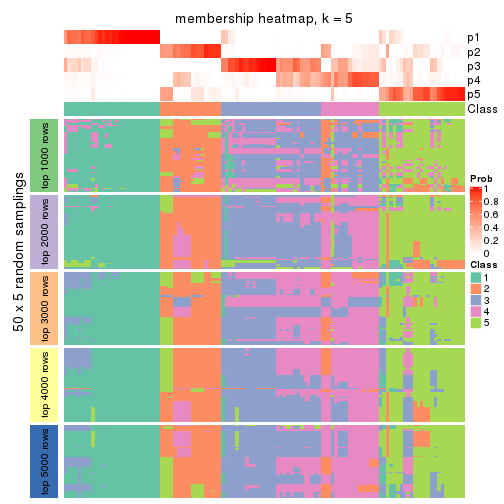
membership_heatmap(res, k = 6)
As soon as we have had the classes for columns, we can look for signatures which are significantly different between classes which can be candidate marks for certain classes. Following are the heatmaps for signatures.
Signature heatmaps where rows are scaled:
get_signatures(res, k = 2)
get_signatures(res, k = 3)

get_signatures(res, k = 4)
get_signatures(res, k = 5)
get_signatures(res, k = 6)
Signature heatmaps where rows are not scaled:
get_signatures(res, k = 2, scale_rows = FALSE)
get_signatures(res, k = 3, scale_rows = FALSE)
get_signatures(res, k = 4, scale_rows = FALSE)
get_signatures(res, k = 5, scale_rows = FALSE)
get_signatures(res, k = 6, scale_rows = FALSE)
Compare the overlap of signatures from different k:
compare_signatures(res)
get_signature() returns a data frame invisibly. TO get the list of signatures, the function
call should be assigned to a variable explicitly. In following code, if plot argument is set
to FALSE, no heatmap is plotted while only the differential analysis is performed.
# code only for demonstration
tb = get_signature(res, k = ..., plot = FALSE)
An example of the output of tb is:
#> which_row fdr mean_1 mean_2 scaled_mean_1 scaled_mean_2 km
#> 1 38 0.042760348 8.373488 9.131774 -0.5533452 0.5164555 1
#> 2 40 0.018707592 7.106213 8.469186 -0.6173731 0.5762149 1
#> 3 55 0.019134737 10.221463 11.207825 -0.6159697 0.5749050 1
#> 4 59 0.006059896 5.921854 7.869574 -0.6899429 0.6439467 1
#> 5 60 0.018055526 8.928898 10.211722 -0.6204761 0.5791110 1
#> 6 98 0.009384629 15.714769 14.887706 0.6635654 -0.6193277 2
...
The columns in tb are:
which_row: row indices corresponding to the input matrix.fdr: FDR for the differential test. mean_x: The mean value in group x.scaled_mean_x: The mean value in group x after rows are scaled.km: Row groups if k-means clustering is applied to rows.UMAP plot which shows how samples are separated.
dimension_reduction(res, k = 2, method = "UMAP")
dimension_reduction(res, k = 3, method = "UMAP")
dimension_reduction(res, k = 4, method = "UMAP")
dimension_reduction(res, k = 5, method = "UMAP")
dimension_reduction(res, k = 6, method = "UMAP")
Following heatmap shows how subgroups are split when increasing k:
collect_classes(res)
If matrix rows can be associated to genes, consider to use functional_enrichment(res,
...) to perform function enrichment for the signature genes. See this vignette for more detailed explanations.
The object with results only for a single top-value method and a single partition method can be extracted as:
res = res_list["MAD", "skmeans"]
# you can also extract it by
# res = res_list["MAD:skmeans"]
A summary of res and all the functions that can be applied to it:
res
#> A 'ConsensusPartition' object with k = 2, 3, 4, 5, 6.
#> On a matrix with 16442 rows and 117 columns.
#> Top rows (1000, 2000, 3000, 4000, 5000) are extracted by 'MAD' method.
#> Subgroups are detected by 'skmeans' method.
#> Performed in total 1250 partitions by row resampling.
#> Best k for subgroups seems to be 2.
#>
#> Following methods can be applied to this 'ConsensusPartition' object:
#> [1] "cola_report" "collect_classes" "collect_plots"
#> [4] "collect_stats" "colnames" "compare_signatures"
#> [7] "consensus_heatmap" "dimension_reduction" "functional_enrichment"
#> [10] "get_anno_col" "get_anno" "get_classes"
#> [13] "get_consensus" "get_matrix" "get_membership"
#> [16] "get_param" "get_signatures" "get_stats"
#> [19] "is_best_k" "is_stable_k" "membership_heatmap"
#> [22] "ncol" "nrow" "plot_ecdf"
#> [25] "rownames" "select_partition_number" "show"
#> [28] "suggest_best_k" "test_to_known_factors"
collect_plots() function collects all the plots made from res for all k (number of partitions)
into one single page to provide an easy and fast comparison between different k.
collect_plots(res)
The plots are:
k and the heatmap of
predicted classes for each k.k.k.k.All the plots in panels can be made by individual functions and they are plotted later in this section.
select_partition_number() produces several plots showing different
statistics for choosing “optimized” k. There are following statistics:
k;k, the area increased is defined as \(A_k - A_{k-1}\).The detailed explanations of these statistics can be found in the cola vignette.
Generally speaking, lower PAC score, higher mean silhouette score or higher
concordance corresponds to better partition. Rand index and Jaccard index
measure how similar the current partition is compared to partition with k-1.
If they are too similar, we won't accept k is better than k-1.
select_partition_number(res)
The numeric values for all these statistics can be obtained by get_stats().
get_stats(res)
#> k 1-PAC mean_silhouette concordance area_increased Rand Jaccard
#> 2 2 0.848 0.928 0.967 0.5044 0.496 0.496
#> 3 3 0.815 0.871 0.945 0.3176 0.748 0.535
#> 4 4 0.814 0.861 0.894 0.1138 0.819 0.535
#> 5 5 0.795 0.869 0.906 0.0638 0.860 0.543
#> 6 6 0.836 0.792 0.876 0.0442 0.907 0.613
suggest_best_k() suggests the best \(k\) based on these statistics. The rules are as follows:
suggest_best_k(res)
#> [1] 2
Following shows the table of the partitions (You need to click the show/hide
code output link to see it). The membership matrix (columns with name p*)
is inferred by
clue::cl_consensus()
function with the SE method. Basically the value in the membership matrix
represents the probability to belong to a certain group. The finall class
label for an item is determined with the group with highest probability it
belongs to.
In get_classes() function, the entropy is calculated from the membership
matrix and the silhouette score is calculated from the consensus matrix.
cbind(get_classes(res, k = 2), get_membership(res, k = 2))
#> class entropy silhouette p1 p2
#> SRR2443263 1 0.0000 0.970 1.000 0.000
#> SRR2443262 2 0.0000 0.959 0.000 1.000
#> SRR2443261 2 0.0000 0.959 0.000 1.000
#> SRR2443260 1 0.8081 0.661 0.752 0.248
#> SRR2443259 1 0.0000 0.970 1.000 0.000
#> SRR2443258 1 0.0000 0.970 1.000 0.000
#> SRR2443257 2 0.0000 0.959 0.000 1.000
#> SRR2443256 1 0.0000 0.970 1.000 0.000
#> SRR2443255 1 0.0000 0.970 1.000 0.000
#> SRR2443254 2 0.8267 0.681 0.260 0.740
#> SRR2443253 2 0.0000 0.959 0.000 1.000
#> SRR2443251 2 0.0000 0.959 0.000 1.000
#> SRR2443250 2 0.0000 0.959 0.000 1.000
#> SRR2443249 2 0.0000 0.959 0.000 1.000
#> SRR2443252 1 0.4022 0.902 0.920 0.080
#> SRR2443247 1 0.0000 0.970 1.000 0.000
#> SRR2443246 1 0.0000 0.970 1.000 0.000
#> SRR2443248 2 0.0000 0.959 0.000 1.000
#> SRR2443244 2 0.0000 0.959 0.000 1.000
#> SRR2443245 1 0.0000 0.970 1.000 0.000
#> SRR2443243 1 0.0000 0.970 1.000 0.000
#> SRR2443242 2 0.0000 0.959 0.000 1.000
#> SRR2443241 1 0.2778 0.932 0.952 0.048
#> SRR2443240 1 0.4161 0.900 0.916 0.084
#> SRR2443239 2 0.0000 0.959 0.000 1.000
#> SRR2443238 1 0.0000 0.970 1.000 0.000
#> SRR2443237 2 0.0000 0.959 0.000 1.000
#> SRR2443236 1 0.2236 0.942 0.964 0.036
#> SRR2443235 1 0.0000 0.970 1.000 0.000
#> SRR2443233 1 0.0000 0.970 1.000 0.000
#> SRR2443234 1 0.0000 0.970 1.000 0.000
#> SRR2443232 1 0.0000 0.970 1.000 0.000
#> SRR2443231 1 0.0000 0.970 1.000 0.000
#> SRR2443230 1 0.0000 0.970 1.000 0.000
#> SRR2443229 1 0.7219 0.767 0.800 0.200
#> SRR2443228 2 0.0000 0.959 0.000 1.000
#> SRR2443227 1 0.0000 0.970 1.000 0.000
#> SRR2443226 1 0.0000 0.970 1.000 0.000
#> SRR2443225 2 0.8207 0.687 0.256 0.744
#> SRR2443223 2 0.0000 0.959 0.000 1.000
#> SRR2443224 2 0.0000 0.959 0.000 1.000
#> SRR2443222 2 0.0000 0.959 0.000 1.000
#> SRR2443221 2 0.0000 0.959 0.000 1.000
#> SRR2443219 2 0.0000 0.959 0.000 1.000
#> SRR2443220 2 0.0000 0.959 0.000 1.000
#> SRR2443218 2 0.0000 0.959 0.000 1.000
#> SRR2443217 1 0.0000 0.970 1.000 0.000
#> SRR2443216 1 0.0000 0.970 1.000 0.000
#> SRR2443215 2 0.0000 0.959 0.000 1.000
#> SRR2443214 1 0.0000 0.970 1.000 0.000
#> SRR2443213 1 0.0000 0.970 1.000 0.000
#> SRR2443212 2 0.0000 0.959 0.000 1.000
#> SRR2443211 2 0.0000 0.959 0.000 1.000
#> SRR2443210 2 0.0000 0.959 0.000 1.000
#> SRR2443209 1 0.6712 0.798 0.824 0.176
#> SRR2443208 1 0.7299 0.762 0.796 0.204
#> SRR2443207 2 0.9129 0.487 0.328 0.672
#> SRR2443206 2 0.0000 0.959 0.000 1.000
#> SRR2443205 2 0.0000 0.959 0.000 1.000
#> SRR2443204 1 0.0000 0.970 1.000 0.000
#> SRR2443203 1 0.0000 0.970 1.000 0.000
#> SRR2443202 2 0.0000 0.959 0.000 1.000
#> SRR2443201 2 0.0000 0.959 0.000 1.000
#> SRR2443200 2 0.0000 0.959 0.000 1.000
#> SRR2443199 2 0.0000 0.959 0.000 1.000
#> SRR2443197 2 0.7219 0.765 0.200 0.800
#> SRR2443196 2 0.0000 0.959 0.000 1.000
#> SRR2443198 2 0.5178 0.860 0.116 0.884
#> SRR2443195 1 0.0000 0.970 1.000 0.000
#> SRR2443194 2 0.9909 0.266 0.444 0.556
#> SRR2443193 1 0.0000 0.970 1.000 0.000
#> SRR2443191 1 0.8661 0.626 0.712 0.288
#> SRR2443192 2 0.0000 0.959 0.000 1.000
#> SRR2443190 1 0.0000 0.970 1.000 0.000
#> SRR2443189 1 0.0000 0.970 1.000 0.000
#> SRR2443188 1 0.0000 0.970 1.000 0.000
#> SRR2443186 2 0.0000 0.959 0.000 1.000
#> SRR2443187 2 0.0000 0.959 0.000 1.000
#> SRR2443185 2 0.0000 0.959 0.000 1.000
#> SRR2443184 1 0.0000 0.970 1.000 0.000
#> SRR2443183 1 0.0000 0.970 1.000 0.000
#> SRR2443182 1 0.0000 0.970 1.000 0.000
#> SRR2443181 2 0.0000 0.959 0.000 1.000
#> SRR2443180 2 0.0000 0.959 0.000 1.000
#> SRR2443179 2 0.0000 0.959 0.000 1.000
#> SRR2443178 2 0.7219 0.765 0.200 0.800
#> SRR2443177 1 0.0000 0.970 1.000 0.000
#> SRR2443176 1 0.0000 0.970 1.000 0.000
#> SRR2443175 1 0.0000 0.970 1.000 0.000
#> SRR2443174 1 0.0000 0.970 1.000 0.000
#> SRR2443173 2 0.0000 0.959 0.000 1.000
#> SRR2443172 2 0.0000 0.959 0.000 1.000
#> SRR2443171 1 0.0000 0.970 1.000 0.000
#> SRR2443170 1 0.0000 0.970 1.000 0.000
#> SRR2443169 1 0.0000 0.970 1.000 0.000
#> SRR2443168 1 0.7219 0.767 0.800 0.200
#> SRR2443167 2 0.2948 0.919 0.052 0.948
#> SRR2443166 1 0.0000 0.970 1.000 0.000
#> SRR2443165 2 0.8267 0.681 0.260 0.740
#> SRR2443164 2 0.0000 0.959 0.000 1.000
#> SRR2443163 2 0.0000 0.959 0.000 1.000
#> SRR2443162 1 0.0000 0.970 1.000 0.000
#> SRR2443161 1 0.0376 0.967 0.996 0.004
#> SRR2443160 2 0.3584 0.906 0.068 0.932
#> SRR2443159 2 0.2236 0.932 0.036 0.964
#> SRR2443158 1 0.0000 0.970 1.000 0.000
#> SRR2443157 1 0.0000 0.970 1.000 0.000
#> SRR2443156 1 0.0000 0.970 1.000 0.000
#> SRR2443155 1 0.0000 0.970 1.000 0.000
#> SRR2443154 1 0.0000 0.970 1.000 0.000
#> SRR2443153 1 0.0000 0.970 1.000 0.000
#> SRR2443152 2 0.0000 0.959 0.000 1.000
#> SRR2443151 2 0.0000 0.959 0.000 1.000
#> SRR2443150 2 0.0000 0.959 0.000 1.000
#> SRR2443148 2 0.0000 0.959 0.000 1.000
#> SRR2443147 2 0.0000 0.959 0.000 1.000
#> SRR2443149 1 0.4690 0.883 0.900 0.100
cbind(get_classes(res, k = 3), get_membership(res, k = 3))
#> class entropy silhouette p1 p2 p3
#> SRR2443263 1 0.0000 0.924 1.000 0.000 0.000
#> SRR2443262 3 0.0000 0.951 0.000 0.000 1.000
#> SRR2443261 3 0.0000 0.951 0.000 0.000 1.000
#> SRR2443260 3 0.0000 0.951 0.000 0.000 1.000
#> SRR2443259 3 0.6126 0.275 0.400 0.000 0.600
#> SRR2443258 1 0.6126 0.362 0.600 0.000 0.400
#> SRR2443257 3 0.0000 0.951 0.000 0.000 1.000
#> SRR2443256 3 0.5650 0.504 0.312 0.000 0.688
#> SRR2443255 3 0.0000 0.951 0.000 0.000 1.000
#> SRR2443254 3 0.0000 0.951 0.000 0.000 1.000
#> SRR2443253 3 0.0000 0.951 0.000 0.000 1.000
#> SRR2443251 3 0.0000 0.951 0.000 0.000 1.000
#> SRR2443250 3 0.0000 0.951 0.000 0.000 1.000
#> SRR2443249 3 0.0000 0.951 0.000 0.000 1.000
#> SRR2443252 3 0.0000 0.951 0.000 0.000 1.000
#> SRR2443247 1 0.0000 0.924 1.000 0.000 0.000
#> SRR2443246 1 0.0000 0.924 1.000 0.000 0.000
#> SRR2443248 3 0.0000 0.951 0.000 0.000 1.000
#> SRR2443244 2 0.4346 0.825 0.000 0.816 0.184
#> SRR2443245 1 0.0000 0.924 1.000 0.000 0.000
#> SRR2443243 1 0.0000 0.924 1.000 0.000 0.000
#> SRR2443242 2 0.4504 0.814 0.000 0.804 0.196
#> SRR2443241 1 0.6295 0.111 0.528 0.472 0.000
#> SRR2443240 2 0.1411 0.915 0.036 0.964 0.000
#> SRR2443239 2 0.0000 0.945 0.000 1.000 0.000
#> SRR2443238 1 0.0000 0.924 1.000 0.000 0.000
#> SRR2443237 2 0.4002 0.845 0.000 0.840 0.160
#> SRR2443236 1 0.0000 0.924 1.000 0.000 0.000
#> SRR2443235 1 0.0000 0.924 1.000 0.000 0.000
#> SRR2443233 1 0.0000 0.924 1.000 0.000 0.000
#> SRR2443234 1 0.0000 0.924 1.000 0.000 0.000
#> SRR2443232 1 0.0000 0.924 1.000 0.000 0.000
#> SRR2443231 1 0.0000 0.924 1.000 0.000 0.000
#> SRR2443230 1 0.0000 0.924 1.000 0.000 0.000
#> SRR2443229 1 0.6126 0.351 0.600 0.400 0.000
#> SRR2443228 2 0.0000 0.945 0.000 1.000 0.000
#> SRR2443227 1 0.0000 0.924 1.000 0.000 0.000
#> SRR2443226 1 0.0000 0.924 1.000 0.000 0.000
#> SRR2443225 3 0.0000 0.951 0.000 0.000 1.000
#> SRR2443223 3 0.0000 0.951 0.000 0.000 1.000
#> SRR2443224 2 0.0000 0.945 0.000 1.000 0.000
#> SRR2443222 2 0.0000 0.945 0.000 1.000 0.000
#> SRR2443221 2 0.0000 0.945 0.000 1.000 0.000
#> SRR2443219 2 0.4504 0.814 0.000 0.804 0.196
#> SRR2443220 3 0.0000 0.951 0.000 0.000 1.000
#> SRR2443218 2 0.4504 0.814 0.000 0.804 0.196
#> SRR2443217 1 0.0000 0.924 1.000 0.000 0.000
#> SRR2443216 1 0.6299 0.133 0.524 0.000 0.476
#> SRR2443215 2 0.0000 0.945 0.000 1.000 0.000
#> SRR2443214 1 0.0000 0.924 1.000 0.000 0.000
#> SRR2443213 1 0.0000 0.924 1.000 0.000 0.000
#> SRR2443212 2 0.0000 0.945 0.000 1.000 0.000
#> SRR2443211 2 0.0000 0.945 0.000 1.000 0.000
#> SRR2443210 2 0.0000 0.945 0.000 1.000 0.000
#> SRR2443209 2 0.0000 0.945 0.000 1.000 0.000
#> SRR2443208 2 0.0000 0.945 0.000 1.000 0.000
#> SRR2443207 2 0.0000 0.945 0.000 1.000 0.000
#> SRR2443206 2 0.0000 0.945 0.000 1.000 0.000
#> SRR2443205 2 0.0000 0.945 0.000 1.000 0.000
#> SRR2443204 1 0.0000 0.924 1.000 0.000 0.000
#> SRR2443203 1 0.0000 0.924 1.000 0.000 0.000
#> SRR2443202 3 0.0000 0.951 0.000 0.000 1.000
#> SRR2443201 3 0.0000 0.951 0.000 0.000 1.000
#> SRR2443200 2 0.0000 0.945 0.000 1.000 0.000
#> SRR2443199 2 0.4504 0.814 0.000 0.804 0.196
#> SRR2443197 3 0.0000 0.951 0.000 0.000 1.000
#> SRR2443196 3 0.1643 0.911 0.000 0.044 0.956
#> SRR2443198 3 0.0000 0.951 0.000 0.000 1.000
#> SRR2443195 1 0.0000 0.924 1.000 0.000 0.000
#> SRR2443194 3 0.0000 0.951 0.000 0.000 1.000
#> SRR2443193 1 0.0000 0.924 1.000 0.000 0.000
#> SRR2443191 2 0.0000 0.945 0.000 1.000 0.000
#> SRR2443192 2 0.0000 0.945 0.000 1.000 0.000
#> SRR2443190 1 0.0000 0.924 1.000 0.000 0.000
#> SRR2443189 1 0.0000 0.924 1.000 0.000 0.000
#> SRR2443188 1 0.0000 0.924 1.000 0.000 0.000
#> SRR2443186 2 0.0000 0.945 0.000 1.000 0.000
#> SRR2443187 2 0.0000 0.945 0.000 1.000 0.000
#> SRR2443185 3 0.0000 0.951 0.000 0.000 1.000
#> SRR2443184 1 0.6111 0.372 0.604 0.000 0.396
#> SRR2443183 1 0.0000 0.924 1.000 0.000 0.000
#> SRR2443182 1 0.0000 0.924 1.000 0.000 0.000
#> SRR2443181 2 0.0000 0.945 0.000 1.000 0.000
#> SRR2443180 2 0.4504 0.814 0.000 0.804 0.196
#> SRR2443179 3 0.0237 0.948 0.000 0.004 0.996
#> SRR2443178 3 0.4555 0.729 0.200 0.000 0.800
#> SRR2443177 1 0.0000 0.924 1.000 0.000 0.000
#> SRR2443176 1 0.0000 0.924 1.000 0.000 0.000
#> SRR2443175 1 0.0000 0.924 1.000 0.000 0.000
#> SRR2443174 1 0.0000 0.924 1.000 0.000 0.000
#> SRR2443173 2 0.0000 0.945 0.000 1.000 0.000
#> SRR2443172 2 0.0000 0.945 0.000 1.000 0.000
#> SRR2443171 1 0.0000 0.924 1.000 0.000 0.000
#> SRR2443170 1 0.0000 0.924 1.000 0.000 0.000
#> SRR2443169 1 0.0000 0.924 1.000 0.000 0.000
#> SRR2443168 1 0.6168 0.321 0.588 0.412 0.000
#> SRR2443167 3 0.0000 0.951 0.000 0.000 1.000
#> SRR2443166 1 0.4452 0.733 0.808 0.000 0.192
#> SRR2443165 3 0.0000 0.951 0.000 0.000 1.000
#> SRR2443164 2 0.4504 0.814 0.000 0.804 0.196
#> SRR2443163 3 0.0000 0.951 0.000 0.000 1.000
#> SRR2443162 3 0.4504 0.715 0.196 0.000 0.804
#> SRR2443161 3 0.0000 0.951 0.000 0.000 1.000
#> SRR2443160 3 0.0000 0.951 0.000 0.000 1.000
#> SRR2443159 3 0.0000 0.951 0.000 0.000 1.000
#> SRR2443158 1 0.4452 0.733 0.808 0.000 0.192
#> SRR2443157 1 0.0000 0.924 1.000 0.000 0.000
#> SRR2443156 1 0.0000 0.924 1.000 0.000 0.000
#> SRR2443155 1 0.0000 0.924 1.000 0.000 0.000
#> SRR2443154 1 0.0000 0.924 1.000 0.000 0.000
#> SRR2443153 1 0.0000 0.924 1.000 0.000 0.000
#> SRR2443152 2 0.0000 0.945 0.000 1.000 0.000
#> SRR2443151 2 0.4178 0.835 0.000 0.828 0.172
#> SRR2443150 2 0.0000 0.945 0.000 1.000 0.000
#> SRR2443148 3 0.4555 0.695 0.000 0.200 0.800
#> SRR2443147 3 0.1289 0.923 0.000 0.032 0.968
#> SRR2443149 1 0.6126 0.362 0.600 0.000 0.400
cbind(get_classes(res, k = 4), get_membership(res, k = 4))
#> class entropy silhouette p1 p2 p3 p4
#> SRR2443263 3 0.3400 0.741 0.180 0.000 0.820 0.000
#> SRR2443262 4 0.2647 0.884 0.000 0.000 0.120 0.880
#> SRR2443261 4 0.2647 0.884 0.000 0.000 0.120 0.880
#> SRR2443260 3 0.0592 0.919 0.000 0.000 0.984 0.016
#> SRR2443259 3 0.0657 0.923 0.012 0.000 0.984 0.004
#> SRR2443258 3 0.0657 0.923 0.012 0.000 0.984 0.004
#> SRR2443257 4 0.2647 0.884 0.000 0.000 0.120 0.880
#> SRR2443256 3 0.0657 0.923 0.012 0.000 0.984 0.004
#> SRR2443255 3 0.0592 0.919 0.000 0.000 0.984 0.016
#> SRR2443254 3 0.1211 0.901 0.000 0.000 0.960 0.040
#> SRR2443253 4 0.2647 0.884 0.000 0.000 0.120 0.880
#> SRR2443251 4 0.2973 0.873 0.000 0.000 0.144 0.856
#> SRR2443250 4 0.2647 0.884 0.000 0.000 0.120 0.880
#> SRR2443249 4 0.2647 0.884 0.000 0.000 0.120 0.880
#> SRR2443252 3 0.0592 0.919 0.000 0.000 0.984 0.016
#> SRR2443247 1 0.1940 0.897 0.924 0.000 0.076 0.000
#> SRR2443246 1 0.4144 0.835 0.828 0.068 0.104 0.000
#> SRR2443248 4 0.2647 0.884 0.000 0.000 0.120 0.880
#> SRR2443244 4 0.4250 0.523 0.000 0.276 0.000 0.724
#> SRR2443245 1 0.0000 0.946 1.000 0.000 0.000 0.000
#> SRR2443243 1 0.0000 0.946 1.000 0.000 0.000 0.000
#> SRR2443242 4 0.2149 0.813 0.000 0.088 0.000 0.912
#> SRR2443241 2 0.2179 0.848 0.064 0.924 0.012 0.000
#> SRR2443240 2 0.0469 0.900 0.000 0.988 0.012 0.000
#> SRR2443239 2 0.2081 0.912 0.000 0.916 0.000 0.084
#> SRR2443238 1 0.0000 0.946 1.000 0.000 0.000 0.000
#> SRR2443237 4 0.4564 0.462 0.000 0.328 0.000 0.672
#> SRR2443236 1 0.3217 0.852 0.860 0.128 0.012 0.000
#> SRR2443235 1 0.0000 0.946 1.000 0.000 0.000 0.000
#> SRR2443233 1 0.0000 0.946 1.000 0.000 0.000 0.000
#> SRR2443234 1 0.0000 0.946 1.000 0.000 0.000 0.000
#> SRR2443232 1 0.0000 0.946 1.000 0.000 0.000 0.000
#> SRR2443231 1 0.0000 0.946 1.000 0.000 0.000 0.000
#> SRR2443230 1 0.0000 0.946 1.000 0.000 0.000 0.000
#> SRR2443229 1 0.6626 0.334 0.580 0.340 0.012 0.068
#> SRR2443228 2 0.2760 0.898 0.000 0.872 0.000 0.128
#> SRR2443227 1 0.0000 0.946 1.000 0.000 0.000 0.000
#> SRR2443226 1 0.0000 0.946 1.000 0.000 0.000 0.000
#> SRR2443225 4 0.3975 0.764 0.000 0.000 0.240 0.760
#> SRR2443223 4 0.2647 0.884 0.000 0.000 0.120 0.880
#> SRR2443224 2 0.0469 0.900 0.000 0.988 0.012 0.000
#> SRR2443222 2 0.2704 0.900 0.000 0.876 0.000 0.124
#> SRR2443221 2 0.2704 0.900 0.000 0.876 0.000 0.124
#> SRR2443219 4 0.2149 0.813 0.000 0.088 0.000 0.912
#> SRR2443220 4 0.1637 0.876 0.000 0.000 0.060 0.940
#> SRR2443218 4 0.2149 0.813 0.000 0.088 0.000 0.912
#> SRR2443217 1 0.1584 0.918 0.952 0.036 0.012 0.000
#> SRR2443216 3 0.0657 0.923 0.012 0.000 0.984 0.004
#> SRR2443215 2 0.2149 0.910 0.000 0.912 0.000 0.088
#> SRR2443214 1 0.0000 0.946 1.000 0.000 0.000 0.000
#> SRR2443213 1 0.0000 0.946 1.000 0.000 0.000 0.000
#> SRR2443212 2 0.1792 0.916 0.000 0.932 0.000 0.068
#> SRR2443211 2 0.0000 0.905 0.000 1.000 0.000 0.000
#> SRR2443210 2 0.2704 0.900 0.000 0.876 0.000 0.124
#> SRR2443209 2 0.0469 0.900 0.000 0.988 0.012 0.000
#> SRR2443208 2 0.2255 0.915 0.000 0.920 0.012 0.068
#> SRR2443207 2 0.2255 0.915 0.000 0.920 0.012 0.068
#> SRR2443206 2 0.1792 0.916 0.000 0.932 0.000 0.068
#> SRR2443205 2 0.0188 0.906 0.000 0.996 0.000 0.004
#> SRR2443204 1 0.0000 0.946 1.000 0.000 0.000 0.000
#> SRR2443203 1 0.0000 0.946 1.000 0.000 0.000 0.000
#> SRR2443202 4 0.2011 0.880 0.000 0.000 0.080 0.920
#> SRR2443201 4 0.2760 0.881 0.000 0.000 0.128 0.872
#> SRR2443200 2 0.2760 0.898 0.000 0.872 0.000 0.128
#> SRR2443199 4 0.2149 0.813 0.000 0.088 0.000 0.912
#> SRR2443197 4 0.3024 0.871 0.000 0.000 0.148 0.852
#> SRR2443196 4 0.0000 0.861 0.000 0.000 0.000 1.000
#> SRR2443198 4 0.2760 0.881 0.000 0.000 0.128 0.872
#> SRR2443195 1 0.0000 0.946 1.000 0.000 0.000 0.000
#> SRR2443194 3 0.2149 0.853 0.000 0.000 0.912 0.088
#> SRR2443193 1 0.1022 0.926 0.968 0.032 0.000 0.000
#> SRR2443191 2 0.0469 0.900 0.000 0.988 0.012 0.000
#> SRR2443192 2 0.4989 0.177 0.000 0.528 0.000 0.472
#> SRR2443190 1 0.0000 0.946 1.000 0.000 0.000 0.000
#> SRR2443189 1 0.0000 0.946 1.000 0.000 0.000 0.000
#> SRR2443188 1 0.0000 0.946 1.000 0.000 0.000 0.000
#> SRR2443186 2 0.1792 0.916 0.000 0.932 0.000 0.068
#> SRR2443187 2 0.1867 0.915 0.000 0.928 0.000 0.072
#> SRR2443185 4 0.2973 0.873 0.000 0.000 0.144 0.856
#> SRR2443184 3 0.0657 0.923 0.012 0.000 0.984 0.004
#> SRR2443183 1 0.0000 0.946 1.000 0.000 0.000 0.000
#> SRR2443182 1 0.0000 0.946 1.000 0.000 0.000 0.000
#> SRR2443181 2 0.1792 0.916 0.000 0.932 0.000 0.068
#> SRR2443180 4 0.2149 0.813 0.000 0.088 0.000 0.912
#> SRR2443179 4 0.0000 0.861 0.000 0.000 0.000 1.000
#> SRR2443178 4 0.3710 0.732 0.192 0.000 0.004 0.804
#> SRR2443177 1 0.0000 0.946 1.000 0.000 0.000 0.000
#> SRR2443176 1 0.4746 0.358 0.632 0.000 0.368 0.000
#> SRR2443175 1 0.0000 0.946 1.000 0.000 0.000 0.000
#> SRR2443174 1 0.0188 0.944 0.996 0.000 0.004 0.000
#> SRR2443173 2 0.1302 0.908 0.000 0.956 0.000 0.044
#> SRR2443172 2 0.1118 0.905 0.000 0.964 0.000 0.036
#> SRR2443171 1 0.1661 0.914 0.944 0.004 0.052 0.000
#> SRR2443170 1 0.2775 0.883 0.896 0.084 0.020 0.000
#> SRR2443169 1 0.1302 0.921 0.956 0.000 0.044 0.000
#> SRR2443168 2 0.6274 0.405 0.292 0.620 0.088 0.000
#> SRR2443167 4 0.2973 0.873 0.000 0.000 0.144 0.856
#> SRR2443166 3 0.0469 0.921 0.012 0.000 0.988 0.000
#> SRR2443165 3 0.4522 0.445 0.000 0.000 0.680 0.320
#> SRR2443164 4 0.0592 0.854 0.000 0.016 0.000 0.984
#> SRR2443163 4 0.2868 0.878 0.000 0.000 0.136 0.864
#> SRR2443162 3 0.0672 0.922 0.008 0.000 0.984 0.008
#> SRR2443161 3 0.0592 0.919 0.000 0.000 0.984 0.016
#> SRR2443160 4 0.2973 0.873 0.000 0.000 0.144 0.856
#> SRR2443159 4 0.2814 0.879 0.000 0.000 0.132 0.868
#> SRR2443158 3 0.0469 0.921 0.012 0.000 0.988 0.000
#> SRR2443157 3 0.4933 0.203 0.432 0.000 0.568 0.000
#> SRR2443156 1 0.4104 0.841 0.832 0.080 0.088 0.000
#> SRR2443155 1 0.4104 0.841 0.832 0.080 0.088 0.000
#> SRR2443154 1 0.4104 0.841 0.832 0.080 0.088 0.000
#> SRR2443153 1 0.0000 0.946 1.000 0.000 0.000 0.000
#> SRR2443152 2 0.1118 0.905 0.000 0.964 0.000 0.036
#> SRR2443151 4 0.1389 0.838 0.000 0.048 0.000 0.952
#> SRR2443150 2 0.1118 0.905 0.000 0.964 0.000 0.036
#> SRR2443148 4 0.0188 0.859 0.000 0.004 0.000 0.996
#> SRR2443147 4 0.0000 0.861 0.000 0.000 0.000 1.000
#> SRR2443149 3 0.0657 0.923 0.012 0.000 0.984 0.004
cbind(get_classes(res, k = 5), get_membership(res, k = 5))
#> class entropy silhouette p1 p2 p3 p4 p5
#> SRR2443263 3 0.4659 -0.0424 0.488 0.000 0.500 0.000 0.012
#> SRR2443262 4 0.3192 0.8917 0.000 0.112 0.040 0.848 0.000
#> SRR2443261 4 0.3267 0.8904 0.000 0.112 0.044 0.844 0.000
#> SRR2443260 3 0.1121 0.9391 0.000 0.000 0.956 0.044 0.000
#> SRR2443259 3 0.1121 0.9391 0.000 0.000 0.956 0.044 0.000
#> SRR2443258 3 0.1282 0.9385 0.000 0.000 0.952 0.044 0.004
#> SRR2443257 4 0.3192 0.8917 0.000 0.112 0.040 0.848 0.000
#> SRR2443256 3 0.1121 0.9391 0.000 0.000 0.956 0.044 0.000
#> SRR2443255 3 0.1121 0.9391 0.000 0.000 0.956 0.044 0.000
#> SRR2443254 3 0.2329 0.8515 0.000 0.000 0.876 0.124 0.000
#> SRR2443253 4 0.3192 0.8917 0.000 0.112 0.040 0.848 0.000
#> SRR2443251 4 0.2920 0.8625 0.000 0.016 0.132 0.852 0.000
#> SRR2443250 4 0.3192 0.8917 0.000 0.112 0.040 0.848 0.000
#> SRR2443249 4 0.3192 0.8917 0.000 0.112 0.040 0.848 0.000
#> SRR2443252 3 0.1121 0.9391 0.000 0.000 0.956 0.044 0.000
#> SRR2443247 1 0.2470 0.8775 0.884 0.000 0.104 0.000 0.012
#> SRR2443246 5 0.4624 0.7601 0.112 0.000 0.144 0.000 0.744
#> SRR2443248 4 0.3267 0.8904 0.000 0.112 0.044 0.844 0.000
#> SRR2443244 2 0.2172 0.8178 0.000 0.908 0.000 0.076 0.016
#> SRR2443245 1 0.0162 0.9765 0.996 0.000 0.000 0.000 0.004
#> SRR2443243 1 0.0000 0.9775 1.000 0.000 0.000 0.000 0.000
#> SRR2443242 2 0.2020 0.8009 0.000 0.900 0.000 0.100 0.000
#> SRR2443241 5 0.0566 0.8597 0.004 0.012 0.000 0.000 0.984
#> SRR2443240 5 0.0510 0.8584 0.000 0.016 0.000 0.000 0.984
#> SRR2443239 2 0.2648 0.8214 0.000 0.848 0.000 0.000 0.152
#> SRR2443238 1 0.0000 0.9775 1.000 0.000 0.000 0.000 0.000
#> SRR2443237 2 0.4725 0.7532 0.000 0.720 0.000 0.200 0.080
#> SRR2443236 5 0.1809 0.8604 0.060 0.012 0.000 0.000 0.928
#> SRR2443235 1 0.0000 0.9775 1.000 0.000 0.000 0.000 0.000
#> SRR2443233 1 0.0000 0.9775 1.000 0.000 0.000 0.000 0.000
#> SRR2443234 1 0.0000 0.9775 1.000 0.000 0.000 0.000 0.000
#> SRR2443232 1 0.0000 0.9775 1.000 0.000 0.000 0.000 0.000
#> SRR2443231 1 0.0000 0.9775 1.000 0.000 0.000 0.000 0.000
#> SRR2443230 1 0.0000 0.9775 1.000 0.000 0.000 0.000 0.000
#> SRR2443229 5 0.2771 0.8056 0.012 0.128 0.000 0.000 0.860
#> SRR2443228 2 0.0162 0.8328 0.000 0.996 0.000 0.004 0.000
#> SRR2443227 1 0.0000 0.9775 1.000 0.000 0.000 0.000 0.000
#> SRR2443226 1 0.0162 0.9765 0.996 0.000 0.000 0.000 0.004
#> SRR2443225 4 0.0671 0.8881 0.004 0.000 0.016 0.980 0.000
#> SRR2443223 4 0.3192 0.8917 0.000 0.112 0.040 0.848 0.000
#> SRR2443224 5 0.2773 0.7973 0.000 0.112 0.020 0.000 0.868
#> SRR2443222 2 0.1544 0.8421 0.000 0.932 0.000 0.000 0.068
#> SRR2443221 2 0.1544 0.8421 0.000 0.932 0.000 0.000 0.068
#> SRR2443219 2 0.2179 0.7929 0.000 0.888 0.000 0.112 0.000
#> SRR2443220 4 0.3488 0.8642 0.000 0.168 0.024 0.808 0.000
#> SRR2443218 2 0.2127 0.7961 0.000 0.892 0.000 0.108 0.000
#> SRR2443217 1 0.2377 0.8484 0.872 0.000 0.000 0.000 0.128
#> SRR2443216 3 0.1282 0.9385 0.000 0.000 0.952 0.044 0.004
#> SRR2443215 2 0.2732 0.8191 0.000 0.840 0.000 0.000 0.160
#> SRR2443214 1 0.0162 0.9765 0.996 0.000 0.000 0.000 0.004
#> SRR2443213 1 0.0000 0.9775 1.000 0.000 0.000 0.000 0.000
#> SRR2443212 2 0.3816 0.6709 0.000 0.696 0.000 0.000 0.304
#> SRR2443211 2 0.4726 0.5144 0.000 0.580 0.020 0.000 0.400
#> SRR2443210 2 0.1544 0.8421 0.000 0.932 0.000 0.000 0.068
#> SRR2443209 5 0.0703 0.8571 0.000 0.024 0.000 0.000 0.976
#> SRR2443208 5 0.2424 0.7978 0.000 0.132 0.000 0.000 0.868
#> SRR2443207 5 0.2516 0.7899 0.000 0.140 0.000 0.000 0.860
#> SRR2443206 2 0.2929 0.8063 0.000 0.820 0.000 0.000 0.180
#> SRR2443205 2 0.3480 0.7745 0.000 0.752 0.000 0.000 0.248
#> SRR2443204 1 0.0162 0.9765 0.996 0.000 0.000 0.000 0.004
#> SRR2443203 1 0.0162 0.9765 0.996 0.000 0.000 0.000 0.004
#> SRR2443202 4 0.1043 0.8814 0.000 0.040 0.000 0.960 0.000
#> SRR2443201 4 0.0703 0.8945 0.000 0.000 0.024 0.976 0.000
#> SRR2443200 2 0.1043 0.8419 0.000 0.960 0.000 0.000 0.040
#> SRR2443199 2 0.2127 0.7961 0.000 0.892 0.000 0.108 0.000
#> SRR2443197 4 0.0703 0.8865 0.000 0.000 0.024 0.976 0.000
#> SRR2443196 4 0.1197 0.8784 0.000 0.048 0.000 0.952 0.000
#> SRR2443198 4 0.0510 0.8886 0.000 0.000 0.016 0.984 0.000
#> SRR2443195 1 0.0162 0.9765 0.996 0.000 0.000 0.000 0.004
#> SRR2443194 4 0.3210 0.6754 0.000 0.000 0.212 0.788 0.000
#> SRR2443193 1 0.0880 0.9505 0.968 0.000 0.000 0.000 0.032
#> SRR2443191 5 0.1608 0.8412 0.000 0.072 0.000 0.000 0.928
#> SRR2443192 2 0.4364 0.8099 0.000 0.768 0.000 0.112 0.120
#> SRR2443190 1 0.0000 0.9775 1.000 0.000 0.000 0.000 0.000
#> SRR2443189 1 0.0162 0.9765 0.996 0.000 0.000 0.000 0.004
#> SRR2443188 1 0.0000 0.9775 1.000 0.000 0.000 0.000 0.000
#> SRR2443186 2 0.2929 0.8063 0.000 0.820 0.000 0.000 0.180
#> SRR2443187 2 0.2929 0.8063 0.000 0.820 0.000 0.000 0.180
#> SRR2443185 4 0.1121 0.8893 0.000 0.000 0.044 0.956 0.000
#> SRR2443184 3 0.1357 0.9361 0.000 0.000 0.948 0.048 0.004
#> SRR2443183 1 0.0000 0.9775 1.000 0.000 0.000 0.000 0.000
#> SRR2443182 1 0.0000 0.9775 1.000 0.000 0.000 0.000 0.000
#> SRR2443181 2 0.2891 0.8091 0.000 0.824 0.000 0.000 0.176
#> SRR2443180 2 0.2127 0.7961 0.000 0.892 0.000 0.108 0.000
#> SRR2443179 4 0.1121 0.8796 0.000 0.044 0.000 0.956 0.000
#> SRR2443178 4 0.2516 0.7747 0.140 0.000 0.000 0.860 0.000
#> SRR2443177 1 0.0162 0.9765 0.996 0.000 0.000 0.000 0.004
#> SRR2443176 1 0.0162 0.9765 0.996 0.000 0.000 0.000 0.004
#> SRR2443175 1 0.0000 0.9775 1.000 0.000 0.000 0.000 0.000
#> SRR2443174 1 0.0000 0.9775 1.000 0.000 0.000 0.000 0.000
#> SRR2443173 2 0.2824 0.8247 0.000 0.864 0.020 0.000 0.116
#> SRR2443172 2 0.3031 0.8045 0.000 0.856 0.020 0.004 0.120
#> SRR2443171 1 0.3366 0.8027 0.828 0.000 0.032 0.000 0.140
#> SRR2443170 5 0.3485 0.8166 0.124 0.000 0.048 0.000 0.828
#> SRR2443169 1 0.1281 0.9444 0.956 0.000 0.032 0.000 0.012
#> SRR2443168 5 0.2054 0.8491 0.004 0.008 0.072 0.000 0.916
#> SRR2443167 4 0.1544 0.8879 0.000 0.000 0.068 0.932 0.000
#> SRR2443166 3 0.1282 0.9385 0.000 0.000 0.952 0.044 0.004
#> SRR2443165 4 0.1732 0.8610 0.000 0.000 0.080 0.920 0.000
#> SRR2443164 2 0.3143 0.6975 0.000 0.796 0.000 0.204 0.000
#> SRR2443163 4 0.3201 0.8828 0.000 0.052 0.096 0.852 0.000
#> SRR2443162 3 0.1121 0.9391 0.000 0.000 0.956 0.044 0.000
#> SRR2443161 3 0.1121 0.9391 0.000 0.000 0.956 0.044 0.000
#> SRR2443160 4 0.1341 0.8912 0.000 0.000 0.056 0.944 0.000
#> SRR2443159 4 0.1341 0.8912 0.000 0.000 0.056 0.944 0.000
#> SRR2443158 3 0.1012 0.9035 0.000 0.000 0.968 0.020 0.012
#> SRR2443157 1 0.2920 0.8450 0.852 0.000 0.132 0.000 0.016
#> SRR2443156 5 0.3752 0.8076 0.124 0.000 0.064 0.000 0.812
#> SRR2443155 5 0.3477 0.8222 0.112 0.000 0.056 0.000 0.832
#> SRR2443154 5 0.3543 0.8201 0.112 0.000 0.060 0.000 0.828
#> SRR2443153 1 0.0000 0.9775 1.000 0.000 0.000 0.000 0.000
#> SRR2443152 2 0.3351 0.8056 0.000 0.828 0.020 0.004 0.148
#> SRR2443151 2 0.1908 0.8016 0.000 0.908 0.000 0.092 0.000
#> SRR2443150 2 0.3194 0.8055 0.000 0.832 0.020 0.000 0.148
#> SRR2443148 4 0.2891 0.8534 0.000 0.176 0.000 0.824 0.000
#> SRR2443147 4 0.2813 0.8593 0.000 0.168 0.000 0.832 0.000
#> SRR2443149 3 0.1282 0.9385 0.000 0.000 0.952 0.044 0.004
cbind(get_classes(res, k = 6), get_membership(res, k = 6))
#> class entropy silhouette p1 p2 p3 p4 p5 p6
#> SRR2443263 1 0.5582 0.0601 0.480 0.000 0.424 0.004 0.076 0.016
#> SRR2443262 4 0.3172 0.7980 0.000 0.000 0.048 0.824 0.000 0.128
#> SRR2443261 4 0.3254 0.7954 0.000 0.000 0.056 0.820 0.000 0.124
#> SRR2443260 3 0.0146 0.9815 0.000 0.000 0.996 0.000 0.000 0.004
#> SRR2443259 3 0.0000 0.9824 0.000 0.000 1.000 0.000 0.000 0.000
#> SRR2443258 3 0.0000 0.9824 0.000 0.000 1.000 0.000 0.000 0.000
#> SRR2443257 4 0.3172 0.7980 0.000 0.000 0.048 0.824 0.000 0.128
#> SRR2443256 3 0.0363 0.9818 0.000 0.000 0.988 0.000 0.000 0.012
#> SRR2443255 3 0.0363 0.9818 0.000 0.000 0.988 0.000 0.000 0.012
#> SRR2443254 3 0.0909 0.9700 0.000 0.000 0.968 0.012 0.000 0.020
#> SRR2443253 4 0.3172 0.7980 0.000 0.000 0.048 0.824 0.000 0.128
#> SRR2443251 4 0.4952 0.6158 0.000 0.000 0.168 0.652 0.000 0.180
#> SRR2443250 4 0.3172 0.7980 0.000 0.000 0.048 0.824 0.000 0.128
#> SRR2443249 4 0.3172 0.7980 0.000 0.000 0.048 0.824 0.000 0.128
#> SRR2443252 3 0.0146 0.9815 0.000 0.000 0.996 0.000 0.000 0.004
#> SRR2443247 1 0.3806 0.7725 0.776 0.000 0.088 0.000 0.136 0.000
#> SRR2443246 5 0.2747 0.7108 0.044 0.000 0.096 0.000 0.860 0.000
#> SRR2443248 4 0.3168 0.7985 0.000 0.000 0.056 0.828 0.000 0.116
#> SRR2443244 4 0.4084 0.1401 0.000 0.400 0.000 0.588 0.000 0.012
#> SRR2443245 1 0.0436 0.9354 0.988 0.000 0.000 0.004 0.004 0.004
#> SRR2443243 1 0.0291 0.9361 0.992 0.000 0.000 0.004 0.000 0.004
#> SRR2443242 4 0.3201 0.6270 0.000 0.208 0.000 0.780 0.000 0.012
#> SRR2443241 5 0.2872 0.7519 0.000 0.152 0.000 0.012 0.832 0.004
#> SRR2443240 5 0.2909 0.7494 0.000 0.156 0.000 0.012 0.828 0.004
#> SRR2443239 2 0.0937 0.7571 0.000 0.960 0.000 0.040 0.000 0.000
#> SRR2443238 1 0.0436 0.9354 0.988 0.000 0.000 0.004 0.004 0.004
#> SRR2443237 6 0.4537 0.5680 0.000 0.248 0.000 0.068 0.004 0.680
#> SRR2443236 5 0.2597 0.7649 0.004 0.112 0.000 0.012 0.868 0.004
#> SRR2443235 1 0.0790 0.9348 0.968 0.000 0.000 0.000 0.032 0.000
#> SRR2443233 1 0.0937 0.9326 0.960 0.000 0.000 0.000 0.040 0.000
#> SRR2443234 1 0.0790 0.9348 0.968 0.000 0.000 0.000 0.032 0.000
#> SRR2443232 1 0.0937 0.9326 0.960 0.000 0.000 0.000 0.040 0.000
#> SRR2443231 1 0.0937 0.9326 0.960 0.000 0.000 0.000 0.040 0.000
#> SRR2443230 1 0.0713 0.9355 0.972 0.000 0.000 0.000 0.028 0.000
#> SRR2443229 5 0.4141 0.5468 0.000 0.388 0.000 0.016 0.596 0.000
#> SRR2443228 2 0.3421 0.7070 0.000 0.736 0.000 0.256 0.000 0.008
#> SRR2443227 1 0.0291 0.9361 0.992 0.000 0.000 0.004 0.000 0.004
#> SRR2443226 1 0.0291 0.9360 0.992 0.000 0.000 0.004 0.004 0.000
#> SRR2443225 6 0.0665 0.9000 0.004 0.000 0.008 0.008 0.000 0.980
#> SRR2443223 4 0.3130 0.7994 0.000 0.000 0.048 0.828 0.000 0.124
#> SRR2443224 2 0.2994 0.5844 0.000 0.788 0.000 0.000 0.208 0.004
#> SRR2443222 2 0.3081 0.7426 0.000 0.776 0.000 0.220 0.000 0.004
#> SRR2443221 2 0.3081 0.7426 0.000 0.776 0.000 0.220 0.000 0.004
#> SRR2443219 4 0.2841 0.6699 0.000 0.164 0.000 0.824 0.000 0.012
#> SRR2443220 4 0.2092 0.7969 0.000 0.000 0.000 0.876 0.000 0.124
#> SRR2443218 4 0.3046 0.6427 0.000 0.188 0.000 0.800 0.000 0.012
#> SRR2443217 1 0.4539 0.6464 0.728 0.164 0.000 0.016 0.092 0.000
#> SRR2443216 3 0.0000 0.9824 0.000 0.000 1.000 0.000 0.000 0.000
#> SRR2443215 2 0.1152 0.7543 0.000 0.952 0.000 0.044 0.004 0.000
#> SRR2443214 1 0.0436 0.9354 0.988 0.000 0.000 0.004 0.004 0.004
#> SRR2443213 1 0.0937 0.9326 0.960 0.000 0.000 0.000 0.040 0.000
#> SRR2443212 2 0.1367 0.7102 0.000 0.944 0.000 0.012 0.044 0.000
#> SRR2443211 2 0.3121 0.6198 0.000 0.804 0.000 0.012 0.180 0.004
#> SRR2443210 2 0.3081 0.7426 0.000 0.776 0.000 0.220 0.000 0.004
#> SRR2443209 5 0.3867 0.6431 0.000 0.296 0.000 0.012 0.688 0.004
#> SRR2443208 5 0.4199 0.5066 0.000 0.416 0.000 0.016 0.568 0.000
#> SRR2443207 2 0.4238 -0.2820 0.000 0.540 0.000 0.016 0.444 0.000
#> SRR2443206 2 0.0260 0.7476 0.000 0.992 0.000 0.000 0.008 0.000
#> SRR2443205 2 0.2056 0.7198 0.000 0.904 0.000 0.012 0.080 0.004
#> SRR2443204 1 0.0436 0.9354 0.988 0.000 0.000 0.004 0.004 0.004
#> SRR2443203 1 0.0436 0.9354 0.988 0.000 0.000 0.004 0.004 0.004
#> SRR2443202 6 0.0632 0.9030 0.000 0.000 0.000 0.024 0.000 0.976
#> SRR2443201 6 0.2752 0.8572 0.000 0.000 0.036 0.108 0.000 0.856
#> SRR2443200 2 0.3298 0.7265 0.000 0.756 0.000 0.236 0.000 0.008
#> SRR2443199 4 0.2980 0.6528 0.000 0.180 0.000 0.808 0.000 0.012
#> SRR2443197 6 0.1092 0.9046 0.000 0.000 0.020 0.020 0.000 0.960
#> SRR2443196 6 0.0692 0.9023 0.000 0.004 0.000 0.020 0.000 0.976
#> SRR2443198 6 0.0891 0.9043 0.000 0.000 0.008 0.024 0.000 0.968
#> SRR2443195 1 0.0436 0.9354 0.988 0.000 0.000 0.004 0.004 0.004
#> SRR2443194 6 0.1219 0.8846 0.000 0.000 0.048 0.004 0.000 0.948
#> SRR2443193 1 0.1977 0.9104 0.920 0.032 0.000 0.008 0.040 0.000
#> SRR2443191 5 0.4181 0.5632 0.000 0.384 0.000 0.012 0.600 0.004
#> SRR2443192 2 0.5248 0.2205 0.000 0.512 0.000 0.100 0.000 0.388
#> SRR2443190 1 0.0713 0.9355 0.972 0.000 0.000 0.000 0.028 0.000
#> SRR2443189 1 0.0291 0.9361 0.992 0.000 0.000 0.004 0.004 0.000
#> SRR2443188 1 0.0937 0.9326 0.960 0.000 0.000 0.000 0.040 0.000
#> SRR2443186 2 0.0363 0.7454 0.000 0.988 0.000 0.000 0.012 0.000
#> SRR2443187 2 0.0260 0.7476 0.000 0.992 0.000 0.000 0.008 0.000
#> SRR2443185 6 0.2325 0.8835 0.000 0.000 0.048 0.060 0.000 0.892
#> SRR2443184 3 0.0603 0.9711 0.004 0.000 0.980 0.000 0.000 0.016
#> SRR2443183 1 0.0260 0.9368 0.992 0.000 0.000 0.000 0.008 0.000
#> SRR2443182 1 0.0291 0.9361 0.992 0.000 0.000 0.004 0.000 0.004
#> SRR2443181 2 0.0665 0.7506 0.000 0.980 0.000 0.008 0.008 0.004
#> SRR2443180 4 0.2841 0.6696 0.000 0.164 0.000 0.824 0.000 0.012
#> SRR2443179 6 0.0713 0.9027 0.000 0.000 0.000 0.028 0.000 0.972
#> SRR2443178 6 0.1088 0.8921 0.024 0.000 0.000 0.016 0.000 0.960
#> SRR2443177 1 0.0436 0.9354 0.988 0.000 0.000 0.004 0.004 0.004
#> SRR2443176 1 0.0551 0.9341 0.984 0.000 0.000 0.004 0.004 0.008
#> SRR2443175 1 0.0713 0.9355 0.972 0.000 0.000 0.000 0.028 0.000
#> SRR2443174 1 0.0865 0.9345 0.964 0.000 0.000 0.000 0.036 0.000
#> SRR2443173 2 0.4702 0.7198 0.000 0.680 0.000 0.220 0.096 0.004
#> SRR2443172 2 0.4886 0.6977 0.000 0.648 0.000 0.252 0.096 0.004
#> SRR2443171 5 0.3756 0.1905 0.400 0.000 0.000 0.000 0.600 0.000
#> SRR2443170 5 0.0458 0.7734 0.016 0.000 0.000 0.000 0.984 0.000
#> SRR2443169 1 0.2178 0.8635 0.868 0.000 0.000 0.000 0.132 0.000
#> SRR2443168 5 0.0458 0.7723 0.000 0.016 0.000 0.000 0.984 0.000
#> SRR2443167 6 0.3566 0.8298 0.000 0.000 0.104 0.096 0.000 0.800
#> SRR2443166 3 0.0458 0.9739 0.016 0.000 0.984 0.000 0.000 0.000
#> SRR2443165 6 0.1584 0.8896 0.000 0.000 0.064 0.008 0.000 0.928
#> SRR2443164 4 0.1007 0.7578 0.000 0.044 0.000 0.956 0.000 0.000
#> SRR2443163 4 0.4094 0.7243 0.000 0.000 0.088 0.744 0.000 0.168
#> SRR2443162 3 0.0363 0.9818 0.000 0.000 0.988 0.000 0.000 0.012
#> SRR2443161 3 0.0363 0.9818 0.000 0.000 0.988 0.000 0.000 0.012
#> SRR2443160 6 0.3225 0.8476 0.000 0.000 0.080 0.092 0.000 0.828
#> SRR2443159 6 0.3784 0.8002 0.000 0.000 0.080 0.144 0.000 0.776
#> SRR2443158 3 0.1757 0.9052 0.000 0.000 0.916 0.000 0.076 0.008
#> SRR2443157 1 0.3872 0.7636 0.792 0.000 0.124 0.004 0.072 0.008
#> SRR2443156 5 0.0632 0.7699 0.024 0.000 0.000 0.000 0.976 0.000
#> SRR2443155 5 0.0458 0.7734 0.016 0.000 0.000 0.000 0.984 0.000
#> SRR2443154 5 0.0458 0.7734 0.016 0.000 0.000 0.000 0.984 0.000
#> SRR2443153 1 0.0937 0.9326 0.960 0.000 0.000 0.000 0.040 0.000
#> SRR2443152 2 0.4798 0.7111 0.000 0.664 0.000 0.236 0.096 0.004
#> SRR2443151 4 0.1610 0.7323 0.000 0.084 0.000 0.916 0.000 0.000
#> SRR2443150 2 0.4775 0.7137 0.000 0.668 0.000 0.232 0.096 0.004
#> SRR2443148 4 0.2302 0.7917 0.000 0.008 0.000 0.872 0.000 0.120
#> SRR2443147 4 0.2219 0.7957 0.000 0.000 0.000 0.864 0.000 0.136
#> SRR2443149 3 0.0748 0.9723 0.000 0.000 0.976 0.004 0.016 0.004
Heatmaps for the consensus matrix. It visualizes the probability of two samples to be in a same group.
consensus_heatmap(res, k = 2)
consensus_heatmap(res, k = 3)
consensus_heatmap(res, k = 4)
consensus_heatmap(res, k = 5)
consensus_heatmap(res, k = 6)
Heatmaps for the membership of samples in all partitions to see how consistent they are:
membership_heatmap(res, k = 2)
membership_heatmap(res, k = 3)
membership_heatmap(res, k = 4)
membership_heatmap(res, k = 5)
membership_heatmap(res, k = 6)
As soon as we have had the classes for columns, we can look for signatures which are significantly different between classes which can be candidate marks for certain classes. Following are the heatmaps for signatures.
Signature heatmaps where rows are scaled:
get_signatures(res, k = 2)
get_signatures(res, k = 3)
get_signatures(res, k = 4)
get_signatures(res, k = 5)
get_signatures(res, k = 6)

Signature heatmaps where rows are not scaled:
get_signatures(res, k = 2, scale_rows = FALSE)
get_signatures(res, k = 3, scale_rows = FALSE)
get_signatures(res, k = 4, scale_rows = FALSE)
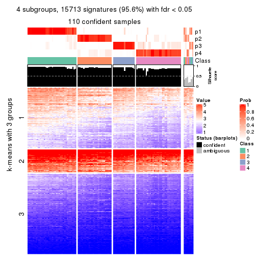
get_signatures(res, k = 5, scale_rows = FALSE)
get_signatures(res, k = 6, scale_rows = FALSE)
Compare the overlap of signatures from different k:
compare_signatures(res)
get_signature() returns a data frame invisibly. TO get the list of signatures, the function
call should be assigned to a variable explicitly. In following code, if plot argument is set
to FALSE, no heatmap is plotted while only the differential analysis is performed.
# code only for demonstration
tb = get_signature(res, k = ..., plot = FALSE)
An example of the output of tb is:
#> which_row fdr mean_1 mean_2 scaled_mean_1 scaled_mean_2 km
#> 1 38 0.042760348 8.373488 9.131774 -0.5533452 0.5164555 1
#> 2 40 0.018707592 7.106213 8.469186 -0.6173731 0.5762149 1
#> 3 55 0.019134737 10.221463 11.207825 -0.6159697 0.5749050 1
#> 4 59 0.006059896 5.921854 7.869574 -0.6899429 0.6439467 1
#> 5 60 0.018055526 8.928898 10.211722 -0.6204761 0.5791110 1
#> 6 98 0.009384629 15.714769 14.887706 0.6635654 -0.6193277 2
...
The columns in tb are:
which_row: row indices corresponding to the input matrix.fdr: FDR for the differential test. mean_x: The mean value in group x.scaled_mean_x: The mean value in group x after rows are scaled.km: Row groups if k-means clustering is applied to rows.UMAP plot which shows how samples are separated.
dimension_reduction(res, k = 2, method = "UMAP")
dimension_reduction(res, k = 3, method = "UMAP")
dimension_reduction(res, k = 4, method = "UMAP")
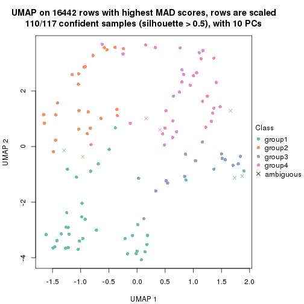
dimension_reduction(res, k = 5, method = "UMAP")
dimension_reduction(res, k = 6, method = "UMAP")
Following heatmap shows how subgroups are split when increasing k:
collect_classes(res)
If matrix rows can be associated to genes, consider to use functional_enrichment(res,
...) to perform function enrichment for the signature genes. See this vignette for more detailed explanations.
The object with results only for a single top-value method and a single partition method can be extracted as:
res = res_list["MAD", "pam"]
# you can also extract it by
# res = res_list["MAD:pam"]
A summary of res and all the functions that can be applied to it:
res
#> A 'ConsensusPartition' object with k = 2, 3, 4, 5, 6.
#> On a matrix with 16442 rows and 117 columns.
#> Top rows (1000, 2000, 3000, 4000, 5000) are extracted by 'MAD' method.
#> Subgroups are detected by 'pam' method.
#> Performed in total 1250 partitions by row resampling.
#> Best k for subgroups seems to be 2.
#>
#> Following methods can be applied to this 'ConsensusPartition' object:
#> [1] "cola_report" "collect_classes" "collect_plots"
#> [4] "collect_stats" "colnames" "compare_signatures"
#> [7] "consensus_heatmap" "dimension_reduction" "functional_enrichment"
#> [10] "get_anno_col" "get_anno" "get_classes"
#> [13] "get_consensus" "get_matrix" "get_membership"
#> [16] "get_param" "get_signatures" "get_stats"
#> [19] "is_best_k" "is_stable_k" "membership_heatmap"
#> [22] "ncol" "nrow" "plot_ecdf"
#> [25] "rownames" "select_partition_number" "show"
#> [28] "suggest_best_k" "test_to_known_factors"
collect_plots() function collects all the plots made from res for all k (number of partitions)
into one single page to provide an easy and fast comparison between different k.
collect_plots(res)
The plots are:
k and the heatmap of
predicted classes for each k.k.k.k.All the plots in panels can be made by individual functions and they are plotted later in this section.
select_partition_number() produces several plots showing different
statistics for choosing “optimized” k. There are following statistics:
k;k, the area increased is defined as \(A_k - A_{k-1}\).The detailed explanations of these statistics can be found in the cola vignette.
Generally speaking, lower PAC score, higher mean silhouette score or higher
concordance corresponds to better partition. Rand index and Jaccard index
measure how similar the current partition is compared to partition with k-1.
If they are too similar, we won't accept k is better than k-1.
select_partition_number(res)
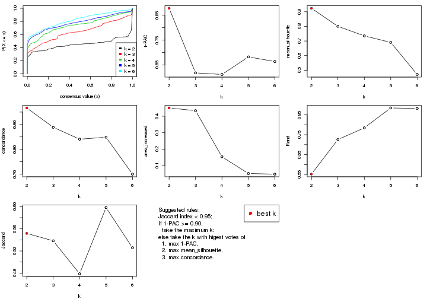
The numeric values for all these statistics can be obtained by get_stats().
get_stats(res)
#> k 1-PAC mean_silhouette concordance area_increased Rand Jaccard
#> 2 2 0.878 0.924 0.967 0.4502 0.552 0.552
#> 3 3 0.618 0.800 0.889 0.4337 0.726 0.538
#> 4 4 0.612 0.735 0.841 0.1539 0.785 0.479
#> 5 5 0.682 0.690 0.849 0.0525 0.885 0.598
#> 6 6 0.664 0.471 0.700 0.0488 0.882 0.526
suggest_best_k() suggests the best \(k\) based on these statistics. The rules are as follows:
suggest_best_k(res)
#> [1] 2
Following shows the table of the partitions (You need to click the show/hide
code output link to see it). The membership matrix (columns with name p*)
is inferred by
clue::cl_consensus()
function with the SE method. Basically the value in the membership matrix
represents the probability to belong to a certain group. The finall class
label for an item is determined with the group with highest probability it
belongs to.
In get_classes() function, the entropy is calculated from the membership
matrix and the silhouette score is calculated from the consensus matrix.
cbind(get_classes(res, k = 2), get_membership(res, k = 2))
#> class entropy silhouette p1 p2
#> SRR2443263 2 0.9983 0.102 0.476 0.524
#> SRR2443262 2 0.0000 0.970 0.000 1.000
#> SRR2443261 2 0.0000 0.970 0.000 1.000
#> SRR2443260 2 0.0000 0.970 0.000 1.000
#> SRR2443259 2 0.0000 0.970 0.000 1.000
#> SRR2443258 2 0.9170 0.473 0.332 0.668
#> SRR2443257 2 0.0000 0.970 0.000 1.000
#> SRR2443256 2 0.6973 0.777 0.188 0.812
#> SRR2443255 2 0.0000 0.970 0.000 1.000
#> SRR2443254 2 0.0000 0.970 0.000 1.000
#> SRR2443253 2 0.0000 0.970 0.000 1.000
#> SRR2443251 2 0.0000 0.970 0.000 1.000
#> SRR2443250 2 0.0000 0.970 0.000 1.000
#> SRR2443249 2 0.0000 0.970 0.000 1.000
#> SRR2443252 2 0.0000 0.970 0.000 1.000
#> SRR2443247 1 0.0000 0.953 1.000 0.000
#> SRR2443246 1 0.9427 0.472 0.640 0.360
#> SRR2443248 2 0.0000 0.970 0.000 1.000
#> SRR2443244 2 0.0000 0.970 0.000 1.000
#> SRR2443245 1 0.0000 0.953 1.000 0.000
#> SRR2443243 1 0.0000 0.953 1.000 0.000
#> SRR2443242 2 0.0000 0.970 0.000 1.000
#> SRR2443241 2 0.7056 0.771 0.192 0.808
#> SRR2443240 1 0.7674 0.704 0.776 0.224
#> SRR2443239 2 0.0000 0.970 0.000 1.000
#> SRR2443238 1 0.0000 0.953 1.000 0.000
#> SRR2443237 2 0.0000 0.970 0.000 1.000
#> SRR2443236 1 0.0000 0.953 1.000 0.000
#> SRR2443235 1 0.0000 0.953 1.000 0.000
#> SRR2443233 1 0.0000 0.953 1.000 0.000
#> SRR2443234 1 0.0000 0.953 1.000 0.000
#> SRR2443232 1 0.0000 0.953 1.000 0.000
#> SRR2443231 1 0.0000 0.953 1.000 0.000
#> SRR2443230 1 0.0000 0.953 1.000 0.000
#> SRR2443229 1 0.9710 0.384 0.600 0.400
#> SRR2443228 2 0.0000 0.970 0.000 1.000
#> SRR2443227 1 0.0000 0.953 1.000 0.000
#> SRR2443226 1 0.0000 0.953 1.000 0.000
#> SRR2443225 2 0.6531 0.801 0.168 0.832
#> SRR2443223 2 0.0000 0.970 0.000 1.000
#> SRR2443224 2 0.0000 0.970 0.000 1.000
#> SRR2443222 2 0.0000 0.970 0.000 1.000
#> SRR2443221 2 0.0000 0.970 0.000 1.000
#> SRR2443219 2 0.0000 0.970 0.000 1.000
#> SRR2443220 2 0.0000 0.970 0.000 1.000
#> SRR2443218 2 0.0000 0.970 0.000 1.000
#> SRR2443217 2 0.6973 0.777 0.188 0.812
#> SRR2443216 2 0.0000 0.970 0.000 1.000
#> SRR2443215 2 0.0000 0.970 0.000 1.000
#> SRR2443214 1 0.0000 0.953 1.000 0.000
#> SRR2443213 1 0.0000 0.953 1.000 0.000
#> SRR2443212 2 0.1414 0.956 0.020 0.980
#> SRR2443211 2 0.0000 0.970 0.000 1.000
#> SRR2443210 2 0.0000 0.970 0.000 1.000
#> SRR2443209 2 0.7056 0.771 0.192 0.808
#> SRR2443208 1 0.8327 0.667 0.736 0.264
#> SRR2443207 2 0.0000 0.970 0.000 1.000
#> SRR2443206 2 0.0000 0.970 0.000 1.000
#> SRR2443205 2 0.0000 0.970 0.000 1.000
#> SRR2443204 1 0.0000 0.953 1.000 0.000
#> SRR2443203 1 0.0000 0.953 1.000 0.000
#> SRR2443202 2 0.0000 0.970 0.000 1.000
#> SRR2443201 2 0.0000 0.970 0.000 1.000
#> SRR2443200 2 0.0000 0.970 0.000 1.000
#> SRR2443199 2 0.0000 0.970 0.000 1.000
#> SRR2443197 2 0.2948 0.930 0.052 0.948
#> SRR2443196 2 0.0000 0.970 0.000 1.000
#> SRR2443198 2 0.0376 0.967 0.004 0.996
#> SRR2443195 1 0.0000 0.953 1.000 0.000
#> SRR2443194 2 0.1414 0.956 0.020 0.980
#> SRR2443193 1 0.0376 0.951 0.996 0.004
#> SRR2443191 2 0.1843 0.951 0.028 0.972
#> SRR2443192 2 0.0000 0.970 0.000 1.000
#> SRR2443190 1 0.0000 0.953 1.000 0.000
#> SRR2443189 1 0.0000 0.953 1.000 0.000
#> SRR2443188 1 0.0000 0.953 1.000 0.000
#> SRR2443186 2 0.0000 0.970 0.000 1.000
#> SRR2443187 2 0.0000 0.970 0.000 1.000
#> SRR2443185 2 0.0000 0.970 0.000 1.000
#> SRR2443184 2 0.1414 0.956 0.020 0.980
#> SRR2443183 1 0.0000 0.953 1.000 0.000
#> SRR2443182 1 0.0000 0.953 1.000 0.000
#> SRR2443181 2 0.0000 0.970 0.000 1.000
#> SRR2443180 2 0.0000 0.970 0.000 1.000
#> SRR2443179 2 0.0000 0.970 0.000 1.000
#> SRR2443178 2 0.6531 0.801 0.168 0.832
#> SRR2443177 1 0.0000 0.953 1.000 0.000
#> SRR2443176 1 0.8207 0.659 0.744 0.256
#> SRR2443175 1 0.0000 0.953 1.000 0.000
#> SRR2443174 1 0.0000 0.953 1.000 0.000
#> SRR2443173 2 0.0000 0.970 0.000 1.000
#> SRR2443172 2 0.0000 0.970 0.000 1.000
#> SRR2443171 1 0.0000 0.953 1.000 0.000
#> SRR2443170 1 0.2423 0.924 0.960 0.040
#> SRR2443169 1 0.0000 0.953 1.000 0.000
#> SRR2443168 2 0.0000 0.970 0.000 1.000
#> SRR2443167 2 0.0000 0.970 0.000 1.000
#> SRR2443166 1 0.2043 0.931 0.968 0.032
#> SRR2443165 2 0.2423 0.941 0.040 0.960
#> SRR2443164 2 0.0000 0.970 0.000 1.000
#> SRR2443163 2 0.0000 0.970 0.000 1.000
#> SRR2443162 2 0.1414 0.956 0.020 0.980
#> SRR2443161 2 0.0000 0.970 0.000 1.000
#> SRR2443160 2 0.0000 0.970 0.000 1.000
#> SRR2443159 2 0.0000 0.970 0.000 1.000
#> SRR2443158 2 0.2423 0.941 0.040 0.960
#> SRR2443157 1 0.2043 0.931 0.968 0.032
#> SRR2443156 2 0.2423 0.941 0.040 0.960
#> SRR2443155 1 0.4431 0.874 0.908 0.092
#> SRR2443154 2 0.1414 0.956 0.020 0.980
#> SRR2443153 1 0.0000 0.953 1.000 0.000
#> SRR2443152 2 0.0000 0.970 0.000 1.000
#> SRR2443151 2 0.0000 0.970 0.000 1.000
#> SRR2443150 2 0.0000 0.970 0.000 1.000
#> SRR2443148 2 0.0000 0.970 0.000 1.000
#> SRR2443147 2 0.0000 0.970 0.000 1.000
#> SRR2443149 2 0.0000 0.970 0.000 1.000
cbind(get_classes(res, k = 3), get_membership(res, k = 3))
#> class entropy silhouette p1 p2 p3
#> SRR2443263 3 0.4887 0.660 0.228 0.000 0.772
#> SRR2443262 3 0.5431 0.674 0.000 0.284 0.716
#> SRR2443261 3 0.5431 0.674 0.000 0.284 0.716
#> SRR2443260 3 0.0000 0.790 0.000 0.000 1.000
#> SRR2443259 3 0.0000 0.790 0.000 0.000 1.000
#> SRR2443258 3 0.0747 0.787 0.016 0.000 0.984
#> SRR2443257 3 0.5431 0.674 0.000 0.284 0.716
#> SRR2443256 3 0.2165 0.769 0.064 0.000 0.936
#> SRR2443255 3 0.0000 0.790 0.000 0.000 1.000
#> SRR2443254 3 0.0000 0.790 0.000 0.000 1.000
#> SRR2443253 3 0.5431 0.674 0.000 0.284 0.716
#> SRR2443251 3 0.5431 0.674 0.000 0.284 0.716
#> SRR2443250 3 0.5431 0.674 0.000 0.284 0.716
#> SRR2443249 3 0.5431 0.674 0.000 0.284 0.716
#> SRR2443252 3 0.0000 0.790 0.000 0.000 1.000
#> SRR2443247 1 0.3619 0.815 0.864 0.000 0.136
#> SRR2443246 3 0.0747 0.787 0.016 0.000 0.984
#> SRR2443248 3 0.0000 0.790 0.000 0.000 1.000
#> SRR2443244 3 0.7876 0.630 0.080 0.308 0.612
#> SRR2443245 1 0.0000 0.950 1.000 0.000 0.000
#> SRR2443243 1 0.0000 0.950 1.000 0.000 0.000
#> SRR2443242 3 0.2959 0.774 0.000 0.100 0.900
#> SRR2443241 1 0.6244 0.229 0.560 0.000 0.440
#> SRR2443240 1 0.0424 0.944 0.992 0.008 0.000
#> SRR2443239 2 0.0000 0.928 0.000 1.000 0.000
#> SRR2443238 1 0.0000 0.950 1.000 0.000 0.000
#> SRR2443237 3 0.3896 0.748 0.128 0.008 0.864
#> SRR2443236 1 0.0000 0.950 1.000 0.000 0.000
#> SRR2443235 1 0.0000 0.950 1.000 0.000 0.000
#> SRR2443233 1 0.0000 0.950 1.000 0.000 0.000
#> SRR2443234 1 0.0000 0.950 1.000 0.000 0.000
#> SRR2443232 1 0.0000 0.950 1.000 0.000 0.000
#> SRR2443231 1 0.0000 0.950 1.000 0.000 0.000
#> SRR2443230 1 0.0000 0.950 1.000 0.000 0.000
#> SRR2443229 3 0.2879 0.779 0.052 0.024 0.924
#> SRR2443228 2 0.0000 0.928 0.000 1.000 0.000
#> SRR2443227 1 0.0000 0.950 1.000 0.000 0.000
#> SRR2443226 1 0.0000 0.950 1.000 0.000 0.000
#> SRR2443225 3 0.4346 0.712 0.184 0.000 0.816
#> SRR2443223 3 0.5431 0.674 0.000 0.284 0.716
#> SRR2443224 3 0.2796 0.755 0.000 0.092 0.908
#> SRR2443222 2 0.0000 0.928 0.000 1.000 0.000
#> SRR2443221 2 0.0000 0.928 0.000 1.000 0.000
#> SRR2443219 2 0.2711 0.873 0.000 0.912 0.088
#> SRR2443220 3 0.5431 0.674 0.000 0.284 0.716
#> SRR2443218 2 0.0000 0.928 0.000 1.000 0.000
#> SRR2443217 3 0.4555 0.695 0.200 0.000 0.800
#> SRR2443216 3 0.0000 0.790 0.000 0.000 1.000
#> SRR2443215 2 0.4702 0.667 0.000 0.788 0.212
#> SRR2443214 1 0.0000 0.950 1.000 0.000 0.000
#> SRR2443213 1 0.0000 0.950 1.000 0.000 0.000
#> SRR2443212 2 0.6235 0.327 0.000 0.564 0.436
#> SRR2443211 2 0.5706 0.563 0.000 0.680 0.320
#> SRR2443210 2 0.0000 0.928 0.000 1.000 0.000
#> SRR2443209 3 0.6773 0.436 0.340 0.024 0.636
#> SRR2443208 3 0.6098 0.661 0.056 0.176 0.768
#> SRR2443207 3 0.5706 0.481 0.000 0.320 0.680
#> SRR2443206 2 0.0000 0.928 0.000 1.000 0.000
#> SRR2443205 2 0.0000 0.928 0.000 1.000 0.000
#> SRR2443204 1 0.0000 0.950 1.000 0.000 0.000
#> SRR2443203 1 0.0000 0.950 1.000 0.000 0.000
#> SRR2443202 3 0.7308 0.661 0.060 0.284 0.656
#> SRR2443201 3 0.0000 0.790 0.000 0.000 1.000
#> SRR2443200 2 0.0000 0.928 0.000 1.000 0.000
#> SRR2443199 2 0.0000 0.928 0.000 1.000 0.000
#> SRR2443197 3 0.7860 0.646 0.088 0.284 0.628
#> SRR2443196 3 0.7872 0.640 0.084 0.296 0.620
#> SRR2443198 3 0.8600 0.614 0.136 0.284 0.580
#> SRR2443195 1 0.0000 0.950 1.000 0.000 0.000
#> SRR2443194 3 0.3619 0.745 0.136 0.000 0.864
#> SRR2443193 1 0.5016 0.651 0.760 0.000 0.240
#> SRR2443191 3 0.4196 0.751 0.112 0.024 0.864
#> SRR2443192 3 0.8311 0.628 0.112 0.292 0.596
#> SRR2443190 1 0.0000 0.950 1.000 0.000 0.000
#> SRR2443189 1 0.1643 0.917 0.956 0.000 0.044
#> SRR2443188 1 0.0000 0.950 1.000 0.000 0.000
#> SRR2443186 2 0.0000 0.928 0.000 1.000 0.000
#> SRR2443187 2 0.0000 0.928 0.000 1.000 0.000
#> SRR2443185 3 0.4750 0.720 0.000 0.216 0.784
#> SRR2443184 3 0.0000 0.790 0.000 0.000 1.000
#> SRR2443183 1 0.0000 0.950 1.000 0.000 0.000
#> SRR2443182 1 0.1643 0.917 0.956 0.000 0.044
#> SRR2443181 2 0.0000 0.928 0.000 1.000 0.000
#> SRR2443180 2 0.0000 0.928 0.000 1.000 0.000
#> SRR2443179 3 0.8645 0.597 0.132 0.300 0.568
#> SRR2443178 3 0.9145 0.576 0.184 0.284 0.532
#> SRR2443177 1 0.0237 0.948 0.996 0.000 0.004
#> SRR2443176 3 0.4555 0.695 0.200 0.000 0.800
#> SRR2443175 1 0.0000 0.950 1.000 0.000 0.000
#> SRR2443174 1 0.0000 0.950 1.000 0.000 0.000
#> SRR2443173 2 0.0000 0.928 0.000 1.000 0.000
#> SRR2443172 2 0.2165 0.890 0.000 0.936 0.064
#> SRR2443171 1 0.0000 0.950 1.000 0.000 0.000
#> SRR2443170 1 0.1643 0.915 0.956 0.000 0.044
#> SRR2443169 1 0.0000 0.950 1.000 0.000 0.000
#> SRR2443168 3 0.0000 0.790 0.000 0.000 1.000
#> SRR2443167 3 0.5431 0.674 0.000 0.284 0.716
#> SRR2443166 3 0.5397 0.604 0.280 0.000 0.720
#> SRR2443165 3 0.7824 0.692 0.124 0.212 0.664
#> SRR2443164 2 0.0000 0.928 0.000 1.000 0.000
#> SRR2443163 3 0.0000 0.790 0.000 0.000 1.000
#> SRR2443162 3 0.0000 0.790 0.000 0.000 1.000
#> SRR2443161 3 0.0000 0.790 0.000 0.000 1.000
#> SRR2443160 3 0.5431 0.674 0.000 0.284 0.716
#> SRR2443159 3 0.5431 0.674 0.000 0.284 0.716
#> SRR2443158 3 0.0747 0.787 0.016 0.000 0.984
#> SRR2443157 1 0.4931 0.640 0.768 0.000 0.232
#> SRR2443156 3 0.1964 0.781 0.056 0.000 0.944
#> SRR2443155 1 0.5363 0.620 0.724 0.000 0.276
#> SRR2443154 3 0.0424 0.790 0.008 0.000 0.992
#> SRR2443153 1 0.0000 0.950 1.000 0.000 0.000
#> SRR2443152 2 0.2796 0.869 0.000 0.908 0.092
#> SRR2443151 2 0.0000 0.928 0.000 1.000 0.000
#> SRR2443150 2 0.3340 0.844 0.000 0.880 0.120
#> SRR2443148 2 0.2711 0.873 0.000 0.912 0.088
#> SRR2443147 2 0.2796 0.869 0.000 0.908 0.092
#> SRR2443149 3 0.0000 0.790 0.000 0.000 1.000
cbind(get_classes(res, k = 4), get_membership(res, k = 4))
#> class entropy silhouette p1 p2 p3 p4
#> SRR2443263 3 0.3172 0.7062 0.160 0.000 0.840 0.000
#> SRR2443262 4 0.3801 0.7524 0.000 0.000 0.220 0.780
#> SRR2443261 4 0.3801 0.7524 0.000 0.000 0.220 0.780
#> SRR2443260 3 0.2868 0.7344 0.000 0.000 0.864 0.136
#> SRR2443259 3 0.0000 0.7854 0.000 0.000 1.000 0.000
#> SRR2443258 3 0.0000 0.7854 0.000 0.000 1.000 0.000
#> SRR2443257 4 0.3801 0.7524 0.000 0.000 0.220 0.780
#> SRR2443256 3 0.0000 0.7854 0.000 0.000 1.000 0.000
#> SRR2443255 3 0.0000 0.7854 0.000 0.000 1.000 0.000
#> SRR2443254 3 0.2149 0.7633 0.000 0.000 0.912 0.088
#> SRR2443253 4 0.3801 0.7524 0.000 0.000 0.220 0.780
#> SRR2443251 4 0.4040 0.7277 0.000 0.000 0.248 0.752
#> SRR2443250 4 0.3801 0.7524 0.000 0.000 0.220 0.780
#> SRR2443249 4 0.3801 0.7524 0.000 0.000 0.220 0.780
#> SRR2443252 3 0.1716 0.7732 0.000 0.000 0.936 0.064
#> SRR2443247 1 0.4624 0.5507 0.660 0.000 0.340 0.000
#> SRR2443246 3 0.0469 0.7838 0.012 0.000 0.988 0.000
#> SRR2443248 3 0.4222 0.5476 0.000 0.000 0.728 0.272
#> SRR2443244 4 0.2921 0.6780 0.000 0.140 0.000 0.860
#> SRR2443245 1 0.0000 0.9230 1.000 0.000 0.000 0.000
#> SRR2443243 1 0.0000 0.9230 1.000 0.000 0.000 0.000
#> SRR2443242 4 0.4331 0.4707 0.000 0.000 0.288 0.712
#> SRR2443241 2 0.4808 0.7319 0.028 0.736 0.000 0.236
#> SRR2443240 2 0.4808 0.6243 0.236 0.736 0.000 0.028
#> SRR2443239 2 0.2868 0.7758 0.000 0.864 0.000 0.136
#> SRR2443238 1 0.0000 0.9230 1.000 0.000 0.000 0.000
#> SRR2443237 3 0.7052 0.3978 0.000 0.128 0.500 0.372
#> SRR2443236 1 0.3047 0.8178 0.872 0.116 0.000 0.012
#> SRR2443235 1 0.0000 0.9230 1.000 0.000 0.000 0.000
#> SRR2443233 1 0.0000 0.9230 1.000 0.000 0.000 0.000
#> SRR2443234 1 0.0000 0.9230 1.000 0.000 0.000 0.000
#> SRR2443232 1 0.0000 0.9230 1.000 0.000 0.000 0.000
#> SRR2443231 1 0.0000 0.9230 1.000 0.000 0.000 0.000
#> SRR2443230 1 0.0000 0.9230 1.000 0.000 0.000 0.000
#> SRR2443229 3 0.8988 0.4688 0.128 0.156 0.480 0.236
#> SRR2443228 4 0.4008 0.5936 0.000 0.244 0.000 0.756
#> SRR2443227 1 0.0000 0.9230 1.000 0.000 0.000 0.000
#> SRR2443226 1 0.0000 0.9230 1.000 0.000 0.000 0.000
#> SRR2443225 3 0.6134 0.6508 0.104 0.000 0.660 0.236
#> SRR2443223 4 0.4605 0.5947 0.000 0.000 0.336 0.664
#> SRR2443224 2 0.3942 0.7479 0.000 0.764 0.000 0.236
#> SRR2443222 2 0.2760 0.7737 0.000 0.872 0.000 0.128
#> SRR2443221 2 0.2760 0.7737 0.000 0.872 0.000 0.128
#> SRR2443219 4 0.0000 0.7257 0.000 0.000 0.000 1.000
#> SRR2443220 4 0.3688 0.7551 0.000 0.000 0.208 0.792
#> SRR2443218 4 0.3942 0.6009 0.000 0.236 0.000 0.764
#> SRR2443217 3 0.6893 0.6445 0.120 0.020 0.636 0.224
#> SRR2443216 3 0.0000 0.7854 0.000 0.000 1.000 0.000
#> SRR2443215 2 0.3942 0.7479 0.000 0.764 0.000 0.236
#> SRR2443214 1 0.0188 0.9209 0.996 0.000 0.000 0.004
#> SRR2443213 1 0.2408 0.8386 0.896 0.104 0.000 0.000
#> SRR2443212 2 0.3942 0.7479 0.000 0.764 0.000 0.236
#> SRR2443211 2 0.3942 0.7479 0.000 0.764 0.000 0.236
#> SRR2443210 2 0.2760 0.7737 0.000 0.872 0.000 0.128
#> SRR2443209 2 0.3942 0.7479 0.000 0.764 0.000 0.236
#> SRR2443208 3 0.8747 0.3215 0.116 0.292 0.476 0.116
#> SRR2443207 2 0.1474 0.7886 0.000 0.948 0.000 0.052
#> SRR2443206 2 0.2760 0.7737 0.000 0.872 0.000 0.128
#> SRR2443205 2 0.2216 0.7854 0.000 0.908 0.000 0.092
#> SRR2443204 1 0.0000 0.9230 1.000 0.000 0.000 0.000
#> SRR2443203 1 0.4222 0.6523 0.728 0.000 0.272 0.000
#> SRR2443202 4 0.3435 0.7090 0.000 0.100 0.036 0.864
#> SRR2443201 3 0.3801 0.6967 0.000 0.000 0.780 0.220
#> SRR2443200 4 0.4164 0.5728 0.000 0.264 0.000 0.736
#> SRR2443199 4 0.3942 0.6009 0.000 0.236 0.000 0.764
#> SRR2443197 4 0.4804 0.7451 0.072 0.000 0.148 0.780
#> SRR2443196 4 0.3354 0.7370 0.084 0.000 0.044 0.872
#> SRR2443198 4 0.3266 0.7247 0.108 0.000 0.024 0.868
#> SRR2443195 1 0.0000 0.9230 1.000 0.000 0.000 0.000
#> SRR2443194 3 0.6134 0.6508 0.104 0.000 0.660 0.236
#> SRR2443193 1 0.6620 0.6661 0.708 0.124 0.072 0.096
#> SRR2443191 2 0.3942 0.7479 0.000 0.764 0.000 0.236
#> SRR2443192 4 0.4919 0.6378 0.000 0.152 0.076 0.772
#> SRR2443190 1 0.0000 0.9230 1.000 0.000 0.000 0.000
#> SRR2443189 1 0.1302 0.8991 0.956 0.000 0.044 0.000
#> SRR2443188 1 0.0000 0.9230 1.000 0.000 0.000 0.000
#> SRR2443186 2 0.2760 0.7737 0.000 0.872 0.000 0.128
#> SRR2443187 2 0.2760 0.7737 0.000 0.872 0.000 0.128
#> SRR2443185 3 0.4948 0.0719 0.000 0.000 0.560 0.440
#> SRR2443184 3 0.0657 0.7854 0.012 0.000 0.984 0.004
#> SRR2443183 1 0.0000 0.9230 1.000 0.000 0.000 0.000
#> SRR2443182 1 0.4356 0.6191 0.708 0.000 0.292 0.000
#> SRR2443181 2 0.2921 0.7927 0.000 0.860 0.000 0.140
#> SRR2443180 4 0.3942 0.6009 0.000 0.236 0.000 0.764
#> SRR2443179 4 0.3205 0.7256 0.104 0.000 0.024 0.872
#> SRR2443178 4 0.6365 0.4985 0.108 0.012 0.204 0.676
#> SRR2443177 1 0.3444 0.7728 0.816 0.000 0.184 0.000
#> SRR2443176 3 0.2760 0.7282 0.128 0.000 0.872 0.000
#> SRR2443175 1 0.0592 0.9158 0.984 0.000 0.016 0.000
#> SRR2443174 1 0.0000 0.9230 1.000 0.000 0.000 0.000
#> SRR2443173 2 0.2760 0.7737 0.000 0.872 0.000 0.128
#> SRR2443172 2 0.3311 0.7813 0.000 0.828 0.000 0.172
#> SRR2443171 1 0.0817 0.9118 0.976 0.000 0.024 0.000
#> SRR2443170 1 0.3108 0.8299 0.872 0.112 0.016 0.000
#> SRR2443169 1 0.0188 0.9215 0.996 0.000 0.004 0.000
#> SRR2443168 3 0.3428 0.7309 0.000 0.012 0.844 0.144
#> SRR2443167 4 0.4454 0.6790 0.000 0.000 0.308 0.692
#> SRR2443166 3 0.2647 0.7187 0.120 0.000 0.880 0.000
#> SRR2443165 3 0.5066 0.6578 0.112 0.000 0.768 0.120
#> SRR2443164 4 0.3942 0.6009 0.000 0.236 0.000 0.764
#> SRR2443163 3 0.2973 0.7280 0.000 0.000 0.856 0.144
#> SRR2443162 3 0.0000 0.7854 0.000 0.000 1.000 0.000
#> SRR2443161 3 0.0000 0.7854 0.000 0.000 1.000 0.000
#> SRR2443160 4 0.3837 0.7507 0.000 0.000 0.224 0.776
#> SRR2443159 4 0.3801 0.7524 0.000 0.000 0.220 0.780
#> SRR2443158 3 0.0469 0.7838 0.012 0.000 0.988 0.000
#> SRR2443157 1 0.4941 0.3016 0.564 0.000 0.436 0.000
#> SRR2443156 3 0.4668 0.7011 0.008 0.108 0.808 0.076
#> SRR2443155 3 0.7098 -0.0145 0.400 0.128 0.472 0.000
#> SRR2443154 3 0.0657 0.7844 0.012 0.004 0.984 0.000
#> SRR2443153 1 0.0000 0.9230 1.000 0.000 0.000 0.000
#> SRR2443152 2 0.4134 0.7510 0.000 0.740 0.000 0.260
#> SRR2443151 4 0.3942 0.6009 0.000 0.236 0.000 0.764
#> SRR2443150 2 0.4679 0.7269 0.000 0.648 0.000 0.352
#> SRR2443148 4 0.0000 0.7257 0.000 0.000 0.000 1.000
#> SRR2443147 4 0.0469 0.7321 0.000 0.000 0.012 0.988
#> SRR2443149 3 0.2973 0.7280 0.000 0.000 0.856 0.144
cbind(get_classes(res, k = 5), get_membership(res, k = 5))
#> class entropy silhouette p1 p2 p3 p4 p5
#> SRR2443263 3 0.2953 0.7167 0.144 0.000 0.844 0.012 0.000
#> SRR2443262 4 0.0880 0.7515 0.000 0.000 0.032 0.968 0.000
#> SRR2443261 4 0.3003 0.6866 0.000 0.000 0.188 0.812 0.000
#> SRR2443260 3 0.0290 0.7974 0.000 0.000 0.992 0.008 0.000
#> SRR2443259 3 0.0162 0.7977 0.000 0.000 0.996 0.004 0.000
#> SRR2443258 3 0.0162 0.7977 0.000 0.000 0.996 0.004 0.000
#> SRR2443257 4 0.1341 0.7540 0.000 0.000 0.056 0.944 0.000
#> SRR2443256 3 0.0000 0.7974 0.000 0.000 1.000 0.000 0.000
#> SRR2443255 3 0.0162 0.7977 0.000 0.000 0.996 0.004 0.000
#> SRR2443254 3 0.0162 0.7977 0.000 0.000 0.996 0.004 0.000
#> SRR2443253 4 0.3176 0.7206 0.000 0.080 0.064 0.856 0.000
#> SRR2443251 3 0.4182 0.1858 0.000 0.000 0.600 0.400 0.000
#> SRR2443250 4 0.2605 0.7104 0.000 0.000 0.148 0.852 0.000
#> SRR2443249 4 0.2605 0.7104 0.000 0.000 0.148 0.852 0.000
#> SRR2443252 3 0.0290 0.7974 0.000 0.000 0.992 0.008 0.000
#> SRR2443247 1 0.4151 0.6068 0.652 0.000 0.344 0.004 0.000
#> SRR2443246 3 0.0162 0.7965 0.000 0.000 0.996 0.004 0.000
#> SRR2443248 3 0.3966 0.4351 0.000 0.000 0.664 0.336 0.000
#> SRR2443244 4 0.4235 0.3078 0.000 0.000 0.000 0.576 0.424
#> SRR2443245 1 0.0290 0.8907 0.992 0.000 0.000 0.008 0.000
#> SRR2443243 1 0.0162 0.8911 0.996 0.000 0.000 0.004 0.000
#> SRR2443242 4 0.4949 0.0479 0.000 0.004 0.444 0.532 0.020
#> SRR2443241 5 0.0162 0.8200 0.000 0.000 0.000 0.004 0.996
#> SRR2443240 5 0.0404 0.8158 0.012 0.000 0.000 0.000 0.988
#> SRR2443239 2 0.3707 0.6934 0.000 0.716 0.000 0.000 0.284
#> SRR2443238 1 0.0000 0.8914 1.000 0.000 0.000 0.000 0.000
#> SRR2443237 3 0.6433 0.2440 0.000 0.000 0.472 0.188 0.340
#> SRR2443236 1 0.4150 0.3844 0.612 0.000 0.000 0.000 0.388
#> SRR2443235 1 0.0000 0.8914 1.000 0.000 0.000 0.000 0.000
#> SRR2443233 1 0.0000 0.8914 1.000 0.000 0.000 0.000 0.000
#> SRR2443234 1 0.0000 0.8914 1.000 0.000 0.000 0.000 0.000
#> SRR2443232 1 0.0000 0.8914 1.000 0.000 0.000 0.000 0.000
#> SRR2443231 1 0.0000 0.8914 1.000 0.000 0.000 0.000 0.000
#> SRR2443230 1 0.0000 0.8914 1.000 0.000 0.000 0.000 0.000
#> SRR2443229 5 0.5163 0.6162 0.068 0.004 0.224 0.008 0.696
#> SRR2443228 2 0.0000 0.8022 0.000 1.000 0.000 0.000 0.000
#> SRR2443227 1 0.0290 0.8907 0.992 0.000 0.000 0.008 0.000
#> SRR2443226 1 0.0000 0.8914 1.000 0.000 0.000 0.000 0.000
#> SRR2443225 3 0.5336 0.6620 0.136 0.000 0.712 0.132 0.020
#> SRR2443223 3 0.4297 0.1435 0.000 0.000 0.528 0.472 0.000
#> SRR2443224 5 0.0290 0.8169 0.000 0.000 0.000 0.008 0.992
#> SRR2443222 2 0.0000 0.8022 0.000 1.000 0.000 0.000 0.000
#> SRR2443221 2 0.0000 0.8022 0.000 1.000 0.000 0.000 0.000
#> SRR2443219 4 0.1251 0.7348 0.000 0.036 0.000 0.956 0.008
#> SRR2443220 4 0.0880 0.7515 0.000 0.000 0.032 0.968 0.000
#> SRR2443218 2 0.0162 0.8018 0.000 0.996 0.000 0.004 0.000
#> SRR2443217 5 0.5355 0.4763 0.044 0.000 0.316 0.016 0.624
#> SRR2443216 3 0.0162 0.7977 0.000 0.000 0.996 0.004 0.000
#> SRR2443215 5 0.1892 0.7669 0.000 0.004 0.000 0.080 0.916
#> SRR2443214 1 0.0912 0.8814 0.972 0.000 0.000 0.016 0.012
#> SRR2443213 1 0.1043 0.8632 0.960 0.000 0.000 0.000 0.040
#> SRR2443212 5 0.0162 0.8200 0.000 0.000 0.000 0.004 0.996
#> SRR2443211 5 0.0451 0.8145 0.000 0.004 0.000 0.008 0.988
#> SRR2443210 2 0.1732 0.7882 0.000 0.920 0.000 0.000 0.080
#> SRR2443209 5 0.0290 0.8196 0.000 0.000 0.000 0.008 0.992
#> SRR2443208 5 0.3675 0.6614 0.000 0.004 0.216 0.008 0.772
#> SRR2443207 5 0.0579 0.8177 0.000 0.008 0.000 0.008 0.984
#> SRR2443206 2 0.3707 0.6934 0.000 0.716 0.000 0.000 0.284
#> SRR2443205 5 0.0451 0.8145 0.000 0.004 0.000 0.008 0.988
#> SRR2443204 1 0.0404 0.8902 0.988 0.000 0.000 0.012 0.000
#> SRR2443203 1 0.3988 0.7002 0.732 0.000 0.252 0.016 0.000
#> SRR2443202 4 0.4696 0.2796 0.000 0.000 0.360 0.616 0.024
#> SRR2443201 3 0.3236 0.7426 0.000 0.000 0.828 0.152 0.020
#> SRR2443200 2 0.0000 0.8022 0.000 1.000 0.000 0.000 0.000
#> SRR2443199 2 0.0162 0.8018 0.000 0.996 0.000 0.004 0.000
#> SRR2443197 4 0.5137 0.1281 0.040 0.000 0.424 0.536 0.000
#> SRR2443196 4 0.1216 0.7457 0.000 0.000 0.020 0.960 0.020
#> SRR2443198 4 0.3944 0.5624 0.004 0.000 0.224 0.756 0.016
#> SRR2443195 1 0.0290 0.8907 0.992 0.000 0.000 0.008 0.000
#> SRR2443194 3 0.3674 0.7423 0.024 0.000 0.816 0.148 0.012
#> SRR2443193 5 0.4283 0.3886 0.348 0.000 0.000 0.008 0.644
#> SRR2443191 5 0.0290 0.8196 0.000 0.000 0.000 0.008 0.992
#> SRR2443192 4 0.5996 0.2149 0.000 0.000 0.352 0.524 0.124
#> SRR2443190 1 0.0000 0.8914 1.000 0.000 0.000 0.000 0.000
#> SRR2443189 1 0.3937 0.7706 0.784 0.000 0.184 0.020 0.012
#> SRR2443188 1 0.0000 0.8914 1.000 0.000 0.000 0.000 0.000
#> SRR2443186 2 0.3707 0.6934 0.000 0.716 0.000 0.000 0.284
#> SRR2443187 2 0.3707 0.6934 0.000 0.716 0.000 0.000 0.284
#> SRR2443185 3 0.4305 0.1133 0.000 0.000 0.512 0.488 0.000
#> SRR2443184 3 0.2286 0.7660 0.000 0.000 0.888 0.108 0.004
#> SRR2443183 1 0.0000 0.8914 1.000 0.000 0.000 0.000 0.000
#> SRR2443182 1 0.5184 0.6187 0.660 0.000 0.280 0.016 0.044
#> SRR2443181 5 0.1608 0.7585 0.000 0.072 0.000 0.000 0.928
#> SRR2443180 2 0.4060 0.2939 0.000 0.640 0.000 0.360 0.000
#> SRR2443179 4 0.2331 0.7130 0.000 0.080 0.000 0.900 0.020
#> SRR2443178 3 0.6300 0.5620 0.136 0.000 0.620 0.208 0.036
#> SRR2443177 1 0.4096 0.7593 0.772 0.000 0.192 0.024 0.012
#> SRR2443176 3 0.3357 0.7166 0.136 0.000 0.836 0.016 0.012
#> SRR2443175 1 0.3106 0.8199 0.856 0.000 0.116 0.020 0.008
#> SRR2443174 1 0.0290 0.8910 0.992 0.000 0.000 0.008 0.000
#> SRR2443173 2 0.2077 0.7864 0.000 0.908 0.000 0.008 0.084
#> SRR2443172 2 0.5901 0.5737 0.000 0.568 0.000 0.132 0.300
#> SRR2443171 1 0.3798 0.7850 0.804 0.000 0.160 0.012 0.024
#> SRR2443170 1 0.5623 0.6219 0.652 0.000 0.156 0.004 0.188
#> SRR2443169 1 0.0693 0.8882 0.980 0.000 0.008 0.012 0.000
#> SRR2443168 3 0.4503 0.6882 0.000 0.000 0.756 0.120 0.124
#> SRR2443167 3 0.4150 0.2481 0.000 0.000 0.612 0.388 0.000
#> SRR2443166 3 0.2629 0.6817 0.136 0.000 0.860 0.004 0.000
#> SRR2443165 3 0.3921 0.7263 0.044 0.000 0.784 0.172 0.000
#> SRR2443164 2 0.4074 0.3697 0.000 0.636 0.000 0.364 0.000
#> SRR2443163 3 0.2280 0.7592 0.000 0.000 0.880 0.120 0.000
#> SRR2443162 3 0.0000 0.7974 0.000 0.000 1.000 0.000 0.000
#> SRR2443161 3 0.0000 0.7974 0.000 0.000 1.000 0.000 0.000
#> SRR2443160 4 0.2020 0.7449 0.000 0.000 0.100 0.900 0.000
#> SRR2443159 4 0.1671 0.7515 0.000 0.000 0.076 0.924 0.000
#> SRR2443158 3 0.0162 0.7965 0.000 0.000 0.996 0.004 0.000
#> SRR2443157 1 0.4590 0.3787 0.568 0.000 0.420 0.012 0.000
#> SRR2443156 3 0.4509 0.7175 0.012 0.000 0.776 0.108 0.104
#> SRR2443155 5 0.5717 0.4060 0.060 0.000 0.348 0.016 0.576
#> SRR2443154 3 0.4503 0.6933 0.000 0.000 0.756 0.120 0.124
#> SRR2443153 1 0.0404 0.8902 0.988 0.000 0.000 0.012 0.000
#> SRR2443152 2 0.6031 0.5011 0.000 0.520 0.000 0.128 0.352
#> SRR2443151 2 0.0162 0.8018 0.000 0.996 0.000 0.004 0.000
#> SRR2443150 4 0.6721 -0.1116 0.000 0.276 0.000 0.420 0.304
#> SRR2443148 4 0.2411 0.7010 0.000 0.108 0.000 0.884 0.008
#> SRR2443147 4 0.2304 0.7071 0.000 0.100 0.000 0.892 0.008
#> SRR2443149 3 0.0290 0.7974 0.000 0.000 0.992 0.008 0.000
cbind(get_classes(res, k = 6), get_membership(res, k = 6))
#> class entropy silhouette p1 p2 p3 p4 p5 p6
#> SRR2443263 3 0.2562 0.637541 0.000 0.000 0.828 0.000 0.000 0.172
#> SRR2443262 4 0.3930 0.487974 0.000 0.420 0.004 0.576 0.000 0.000
#> SRR2443261 2 0.5784 -0.480112 0.000 0.420 0.176 0.404 0.000 0.000
#> SRR2443260 3 0.2740 0.679804 0.000 0.120 0.852 0.028 0.000 0.000
#> SRR2443259 3 0.0547 0.743859 0.000 0.000 0.980 0.020 0.000 0.000
#> SRR2443258 3 0.0547 0.743859 0.000 0.000 0.980 0.020 0.000 0.000
#> SRR2443257 4 0.4423 0.493652 0.000 0.420 0.028 0.552 0.000 0.000
#> SRR2443256 3 0.0000 0.742119 0.000 0.000 1.000 0.000 0.000 0.000
#> SRR2443255 3 0.0547 0.743859 0.000 0.000 0.980 0.020 0.000 0.000
#> SRR2443254 3 0.2361 0.704687 0.000 0.088 0.884 0.028 0.000 0.000
#> SRR2443253 2 0.4578 -0.451122 0.000 0.520 0.036 0.444 0.000 0.000
#> SRR2443251 3 0.5206 0.251977 0.000 0.128 0.588 0.284 0.000 0.000
#> SRR2443250 4 0.5533 0.433661 0.000 0.420 0.132 0.448 0.000 0.000
#> SRR2443249 4 0.5560 0.433254 0.000 0.420 0.136 0.444 0.000 0.000
#> SRR2443252 3 0.0713 0.743572 0.000 0.000 0.972 0.028 0.000 0.000
#> SRR2443247 1 0.3795 0.268332 0.632 0.000 0.364 0.000 0.000 0.004
#> SRR2443246 3 0.0146 0.741087 0.000 0.000 0.996 0.000 0.000 0.004
#> SRR2443248 3 0.3962 0.648116 0.000 0.120 0.764 0.116 0.000 0.000
#> SRR2443244 4 0.3078 0.529293 0.000 0.000 0.000 0.796 0.192 0.012
#> SRR2443245 6 0.3854 0.365471 0.464 0.000 0.000 0.000 0.000 0.536
#> SRR2443243 1 0.2135 0.712071 0.872 0.000 0.000 0.000 0.000 0.128
#> SRR2443242 3 0.4536 0.254133 0.000 0.004 0.512 0.464 0.008 0.012
#> SRR2443241 5 0.0260 0.714261 0.000 0.000 0.008 0.000 0.992 0.000
#> SRR2443240 5 0.0000 0.714316 0.000 0.000 0.000 0.000 1.000 0.000
#> SRR2443239 2 0.6090 0.522693 0.000 0.448 0.000 0.004 0.276 0.272
#> SRR2443238 1 0.0260 0.805609 0.992 0.000 0.000 0.000 0.000 0.008
#> SRR2443237 3 0.5495 0.498627 0.000 0.000 0.604 0.228 0.156 0.012
#> SRR2443236 5 0.3797 0.135977 0.420 0.000 0.000 0.000 0.580 0.000
#> SRR2443235 1 0.0000 0.809495 1.000 0.000 0.000 0.000 0.000 0.000
#> SRR2443233 1 0.0000 0.809495 1.000 0.000 0.000 0.000 0.000 0.000
#> SRR2443234 1 0.0000 0.809495 1.000 0.000 0.000 0.000 0.000 0.000
#> SRR2443232 1 0.0000 0.809495 1.000 0.000 0.000 0.000 0.000 0.000
#> SRR2443231 1 0.0000 0.809495 1.000 0.000 0.000 0.000 0.000 0.000
#> SRR2443230 1 0.0000 0.809495 1.000 0.000 0.000 0.000 0.000 0.000
#> SRR2443229 5 0.3921 0.370059 0.000 0.004 0.308 0.000 0.676 0.012
#> SRR2443228 2 0.3817 0.663494 0.000 0.568 0.000 0.000 0.000 0.432
#> SRR2443227 1 0.3789 -0.043836 0.584 0.000 0.000 0.000 0.000 0.416
#> SRR2443226 1 0.3371 0.292890 0.708 0.000 0.000 0.000 0.000 0.292
#> SRR2443225 6 0.6079 0.001149 0.000 0.000 0.196 0.368 0.008 0.428
#> SRR2443223 3 0.5146 0.241583 0.000 0.088 0.516 0.396 0.000 0.000
#> SRR2443224 5 0.0458 0.711017 0.000 0.000 0.000 0.000 0.984 0.016
#> SRR2443222 2 0.3817 0.663494 0.000 0.568 0.000 0.000 0.000 0.432
#> SRR2443221 2 0.3817 0.663494 0.000 0.568 0.000 0.000 0.000 0.432
#> SRR2443219 4 0.4728 0.451103 0.000 0.392 0.000 0.556 0.000 0.052
#> SRR2443220 4 0.3915 0.492671 0.000 0.412 0.004 0.584 0.000 0.000
#> SRR2443218 2 0.3930 0.661067 0.000 0.576 0.000 0.004 0.000 0.420
#> SRR2443217 3 0.5064 0.130214 0.000 0.000 0.492 0.000 0.432 0.076
#> SRR2443216 3 0.0547 0.743859 0.000 0.000 0.980 0.020 0.000 0.000
#> SRR2443215 5 0.3481 0.461641 0.000 0.004 0.000 0.228 0.756 0.012
#> SRR2443214 6 0.4067 0.394354 0.444 0.000 0.000 0.000 0.008 0.548
#> SRR2443213 1 0.0000 0.809495 1.000 0.000 0.000 0.000 0.000 0.000
#> SRR2443212 5 0.0000 0.714316 0.000 0.000 0.000 0.000 1.000 0.000
#> SRR2443211 5 0.0458 0.711017 0.000 0.000 0.000 0.000 0.984 0.016
#> SRR2443210 2 0.5110 0.637003 0.000 0.480 0.000 0.000 0.080 0.440
#> SRR2443209 5 0.0363 0.713732 0.000 0.000 0.000 0.000 0.988 0.012
#> SRR2443208 5 0.3746 0.431139 0.000 0.004 0.272 0.000 0.712 0.012
#> SRR2443207 5 0.0508 0.712789 0.000 0.004 0.000 0.000 0.984 0.012
#> SRR2443206 2 0.5973 0.521565 0.000 0.448 0.000 0.000 0.280 0.272
#> SRR2443205 5 0.0260 0.711893 0.000 0.000 0.000 0.000 0.992 0.008
#> SRR2443204 6 0.3851 0.370405 0.460 0.000 0.000 0.000 0.000 0.540
#> SRR2443203 6 0.6031 0.552920 0.280 0.000 0.156 0.028 0.000 0.536
#> SRR2443202 4 0.2865 0.532236 0.000 0.000 0.140 0.840 0.008 0.012
#> SRR2443201 3 0.4027 0.550332 0.000 0.000 0.672 0.308 0.008 0.012
#> SRR2443200 2 0.3817 0.663494 0.000 0.568 0.000 0.000 0.000 0.432
#> SRR2443199 2 0.3930 0.661067 0.000 0.576 0.000 0.004 0.000 0.420
#> SRR2443197 4 0.2999 0.560031 0.000 0.000 0.112 0.840 0.000 0.048
#> SRR2443196 4 0.0622 0.592426 0.000 0.000 0.000 0.980 0.008 0.012
#> SRR2443198 4 0.1976 0.589870 0.000 0.000 0.060 0.916 0.008 0.016
#> SRR2443195 6 0.3862 0.340546 0.476 0.000 0.000 0.000 0.000 0.524
#> SRR2443194 4 0.4863 -0.144614 0.000 0.000 0.440 0.512 0.008 0.040
#> SRR2443193 5 0.5848 -0.108002 0.192 0.000 0.000 0.000 0.428 0.380
#> SRR2443191 5 0.0363 0.713732 0.000 0.000 0.000 0.000 0.988 0.012
#> SRR2443192 4 0.6116 0.179067 0.000 0.000 0.224 0.484 0.280 0.012
#> SRR2443190 1 0.0000 0.809495 1.000 0.000 0.000 0.000 0.000 0.000
#> SRR2443189 6 0.5599 0.546816 0.320 0.000 0.132 0.000 0.008 0.540
#> SRR2443188 1 0.0000 0.809495 1.000 0.000 0.000 0.000 0.000 0.000
#> SRR2443186 2 0.5973 0.521565 0.000 0.448 0.000 0.000 0.280 0.272
#> SRR2443187 2 0.5973 0.521565 0.000 0.448 0.000 0.000 0.280 0.272
#> SRR2443185 3 0.3838 0.359357 0.000 0.000 0.552 0.448 0.000 0.000
#> SRR2443184 3 0.2340 0.689784 0.000 0.000 0.852 0.148 0.000 0.000
#> SRR2443183 1 0.0000 0.809495 1.000 0.000 0.000 0.000 0.000 0.000
#> SRR2443182 6 0.5835 0.555645 0.288 0.000 0.144 0.000 0.020 0.548
#> SRR2443181 5 0.3514 0.442217 0.000 0.228 0.000 0.000 0.752 0.020
#> SRR2443180 6 0.5922 -0.604717 0.000 0.368 0.000 0.212 0.000 0.420
#> SRR2443179 4 0.2425 0.551033 0.000 0.100 0.000 0.880 0.008 0.012
#> SRR2443178 4 0.5481 0.379636 0.000 0.000 0.088 0.632 0.044 0.236
#> SRR2443177 6 0.5675 0.551789 0.312 0.000 0.128 0.004 0.008 0.548
#> SRR2443176 6 0.4067 0.086498 0.000 0.000 0.444 0.000 0.008 0.548
#> SRR2443175 6 0.5665 0.416326 0.408 0.000 0.120 0.000 0.008 0.464
#> SRR2443174 1 0.2219 0.705951 0.864 0.000 0.000 0.000 0.000 0.136
#> SRR2443173 2 0.5113 0.635464 0.000 0.472 0.000 0.000 0.080 0.448
#> SRR2443172 2 0.7499 0.399236 0.000 0.296 0.000 0.132 0.284 0.288
#> SRR2443171 1 0.7172 -0.034960 0.440 0.000 0.140 0.000 0.248 0.172
#> SRR2443170 5 0.5688 -0.093791 0.428 0.000 0.136 0.000 0.432 0.004
#> SRR2443169 1 0.3088 0.640423 0.808 0.000 0.020 0.000 0.000 0.172
#> SRR2443168 3 0.3782 0.671704 0.000 0.000 0.788 0.140 0.064 0.008
#> SRR2443167 4 0.3578 0.323397 0.000 0.000 0.340 0.660 0.000 0.000
#> SRR2443166 3 0.5015 0.000158 0.084 0.000 0.564 0.000 0.000 0.352
#> SRR2443165 4 0.4853 -0.025780 0.000 0.000 0.456 0.488 0.000 0.056
#> SRR2443164 2 0.5478 0.576599 0.000 0.452 0.000 0.124 0.000 0.424
#> SRR2443163 3 0.3175 0.611241 0.000 0.000 0.744 0.256 0.000 0.000
#> SRR2443162 3 0.0000 0.742119 0.000 0.000 1.000 0.000 0.000 0.000
#> SRR2443161 3 0.0000 0.742119 0.000 0.000 1.000 0.000 0.000 0.000
#> SRR2443160 4 0.1349 0.605089 0.000 0.004 0.056 0.940 0.000 0.000
#> SRR2443159 4 0.4110 0.563269 0.000 0.236 0.052 0.712 0.000 0.000
#> SRR2443158 3 0.0146 0.741087 0.000 0.000 0.996 0.000 0.000 0.004
#> SRR2443157 6 0.5602 0.536980 0.264 0.000 0.196 0.000 0.000 0.540
#> SRR2443156 3 0.5172 0.457521 0.000 0.000 0.600 0.132 0.268 0.000
#> SRR2443155 5 0.5345 0.294512 0.064 0.000 0.352 0.000 0.560 0.024
#> SRR2443154 3 0.5254 0.462825 0.000 0.000 0.604 0.128 0.264 0.004
#> SRR2443153 1 0.2454 0.675908 0.840 0.000 0.000 0.000 0.000 0.160
#> SRR2443152 5 0.7479 -0.380121 0.000 0.248 0.000 0.136 0.336 0.280
#> SRR2443151 2 0.3950 0.663325 0.000 0.564 0.000 0.004 0.000 0.432
#> SRR2443150 4 0.7496 -0.286345 0.000 0.132 0.000 0.304 0.288 0.276
#> SRR2443148 2 0.3847 -0.442708 0.000 0.544 0.000 0.456 0.000 0.000
#> SRR2443147 2 0.3864 -0.461249 0.000 0.520 0.000 0.480 0.000 0.000
#> SRR2443149 3 0.1267 0.736665 0.000 0.000 0.940 0.060 0.000 0.000
Heatmaps for the consensus matrix. It visualizes the probability of two samples to be in a same group.
consensus_heatmap(res, k = 2)
consensus_heatmap(res, k = 3)
consensus_heatmap(res, k = 4)
consensus_heatmap(res, k = 5)
consensus_heatmap(res, k = 6)
Heatmaps for the membership of samples in all partitions to see how consistent they are:
membership_heatmap(res, k = 2)
membership_heatmap(res, k = 3)
membership_heatmap(res, k = 4)
membership_heatmap(res, k = 5)
membership_heatmap(res, k = 6)

As soon as we have had the classes for columns, we can look for signatures which are significantly different between classes which can be candidate marks for certain classes. Following are the heatmaps for signatures.
Signature heatmaps where rows are scaled:
get_signatures(res, k = 2)
get_signatures(res, k = 3)
get_signatures(res, k = 4)
get_signatures(res, k = 5)
get_signatures(res, k = 6)
Signature heatmaps where rows are not scaled:
get_signatures(res, k = 2, scale_rows = FALSE)
get_signatures(res, k = 3, scale_rows = FALSE)
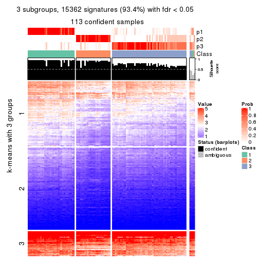
get_signatures(res, k = 4, scale_rows = FALSE)
get_signatures(res, k = 5, scale_rows = FALSE)
get_signatures(res, k = 6, scale_rows = FALSE)
Compare the overlap of signatures from different k:
compare_signatures(res)
get_signature() returns a data frame invisibly. TO get the list of signatures, the function
call should be assigned to a variable explicitly. In following code, if plot argument is set
to FALSE, no heatmap is plotted while only the differential analysis is performed.
# code only for demonstration
tb = get_signature(res, k = ..., plot = FALSE)
An example of the output of tb is:
#> which_row fdr mean_1 mean_2 scaled_mean_1 scaled_mean_2 km
#> 1 38 0.042760348 8.373488 9.131774 -0.5533452 0.5164555 1
#> 2 40 0.018707592 7.106213 8.469186 -0.6173731 0.5762149 1
#> 3 55 0.019134737 10.221463 11.207825 -0.6159697 0.5749050 1
#> 4 59 0.006059896 5.921854 7.869574 -0.6899429 0.6439467 1
#> 5 60 0.018055526 8.928898 10.211722 -0.6204761 0.5791110 1
#> 6 98 0.009384629 15.714769 14.887706 0.6635654 -0.6193277 2
...
The columns in tb are:
which_row: row indices corresponding to the input matrix.fdr: FDR for the differential test. mean_x: The mean value in group x.scaled_mean_x: The mean value in group x after rows are scaled.km: Row groups if k-means clustering is applied to rows.UMAP plot which shows how samples are separated.
dimension_reduction(res, k = 2, method = "UMAP")
dimension_reduction(res, k = 3, method = "UMAP")
dimension_reduction(res, k = 4, method = "UMAP")
dimension_reduction(res, k = 5, method = "UMAP")
dimension_reduction(res, k = 6, method = "UMAP")
Following heatmap shows how subgroups are split when increasing k:
collect_classes(res)
If matrix rows can be associated to genes, consider to use functional_enrichment(res,
...) to perform function enrichment for the signature genes. See this vignette for more detailed explanations.
The object with results only for a single top-value method and a single partition method can be extracted as:
res = res_list["MAD", "mclust"]
# you can also extract it by
# res = res_list["MAD:mclust"]
A summary of res and all the functions that can be applied to it:
res
#> A 'ConsensusPartition' object with k = 2, 3, 4, 5, 6.
#> On a matrix with 16442 rows and 117 columns.
#> Top rows (1000, 2000, 3000, 4000, 5000) are extracted by 'MAD' method.
#> Subgroups are detected by 'mclust' method.
#> Performed in total 1250 partitions by row resampling.
#> Best k for subgroups seems to be 5.
#>
#> Following methods can be applied to this 'ConsensusPartition' object:
#> [1] "cola_report" "collect_classes" "collect_plots"
#> [4] "collect_stats" "colnames" "compare_signatures"
#> [7] "consensus_heatmap" "dimension_reduction" "functional_enrichment"
#> [10] "get_anno_col" "get_anno" "get_classes"
#> [13] "get_consensus" "get_matrix" "get_membership"
#> [16] "get_param" "get_signatures" "get_stats"
#> [19] "is_best_k" "is_stable_k" "membership_heatmap"
#> [22] "ncol" "nrow" "plot_ecdf"
#> [25] "rownames" "select_partition_number" "show"
#> [28] "suggest_best_k" "test_to_known_factors"
collect_plots() function collects all the plots made from res for all k (number of partitions)
into one single page to provide an easy and fast comparison between different k.
collect_plots(res)
The plots are:
k and the heatmap of
predicted classes for each k.k.k.k.All the plots in panels can be made by individual functions and they are plotted later in this section.
select_partition_number() produces several plots showing different
statistics for choosing “optimized” k. There are following statistics:
k;k, the area increased is defined as \(A_k - A_{k-1}\).The detailed explanations of these statistics can be found in the cola vignette.
Generally speaking, lower PAC score, higher mean silhouette score or higher
concordance corresponds to better partition. Rand index and Jaccard index
measure how similar the current partition is compared to partition with k-1.
If they are too similar, we won't accept k is better than k-1.
select_partition_number(res)
The numeric values for all these statistics can be obtained by get_stats().
get_stats(res)
#> k 1-PAC mean_silhouette concordance area_increased Rand Jaccard
#> 2 2 0.235 0.767 0.751 0.3398 0.512 0.512
#> 3 3 0.431 0.495 0.773 0.9063 0.671 0.439
#> 4 4 0.545 0.619 0.793 0.1153 0.826 0.548
#> 5 5 0.737 0.624 0.798 0.0782 0.817 0.452
#> 6 6 0.675 0.443 0.702 0.0407 0.892 0.572
suggest_best_k() suggests the best \(k\) based on these statistics. The rules are as follows:
suggest_best_k(res)
#> [1] 5
Following shows the table of the partitions (You need to click the show/hide
code output link to see it). The membership matrix (columns with name p*)
is inferred by
clue::cl_consensus()
function with the SE method. Basically the value in the membership matrix
represents the probability to belong to a certain group. The finall class
label for an item is determined with the group with highest probability it
belongs to.
In get_classes() function, the entropy is calculated from the membership
matrix and the silhouette score is calculated from the consensus matrix.
cbind(get_classes(res, k = 2), get_membership(res, k = 2))
#> class entropy silhouette p1 p2
#> SRR2443263 1 0.8499 0.771 0.724 0.276
#> SRR2443262 1 0.8267 0.782 0.740 0.260
#> SRR2443261 1 0.6048 0.759 0.852 0.148
#> SRR2443260 1 0.6048 0.759 0.852 0.148
#> SRR2443259 1 0.0000 0.647 1.000 0.000
#> SRR2443258 1 0.0000 0.647 1.000 0.000
#> SRR2443257 1 0.8386 0.778 0.732 0.268
#> SRR2443256 1 0.0000 0.647 1.000 0.000
#> SRR2443255 1 0.1184 0.663 0.984 0.016
#> SRR2443254 1 0.1184 0.663 0.984 0.016
#> SRR2443253 1 0.8386 0.778 0.732 0.268
#> SRR2443251 1 0.6048 0.759 0.852 0.148
#> SRR2443250 1 0.7376 0.782 0.792 0.208
#> SRR2443249 1 0.6343 0.765 0.840 0.160
#> SRR2443252 1 0.2948 0.691 0.948 0.052
#> SRR2443247 1 0.8327 0.781 0.736 0.264
#> SRR2443246 1 0.9427 0.731 0.640 0.360
#> SRR2443248 1 0.6887 0.775 0.816 0.184
#> SRR2443244 2 0.8763 0.837 0.296 0.704
#> SRR2443245 2 0.8861 0.834 0.304 0.696
#> SRR2443243 2 0.8861 0.834 0.304 0.696
#> SRR2443242 2 0.8861 0.834 0.304 0.696
#> SRR2443241 2 0.7299 0.830 0.204 0.796
#> SRR2443240 2 0.7299 0.830 0.204 0.796
#> SRR2443239 2 0.7299 0.830 0.204 0.796
#> SRR2443238 2 0.7815 0.835 0.232 0.768
#> SRR2443237 2 0.8763 0.837 0.296 0.704
#> SRR2443236 2 0.7299 0.830 0.204 0.796
#> SRR2443235 2 0.0376 0.598 0.004 0.996
#> SRR2443233 2 0.0376 0.598 0.004 0.996
#> SRR2443234 2 0.0376 0.598 0.004 0.996
#> SRR2443232 2 0.0376 0.598 0.004 0.996
#> SRR2443231 2 0.5842 0.466 0.140 0.860
#> SRR2443230 2 0.3114 0.613 0.056 0.944
#> SRR2443229 2 0.7376 0.828 0.208 0.792
#> SRR2443228 2 0.7376 0.828 0.208 0.792
#> SRR2443227 2 0.8861 0.834 0.304 0.696
#> SRR2443226 2 0.8813 0.836 0.300 0.700
#> SRR2443225 2 0.8861 0.834 0.304 0.696
#> SRR2443223 1 0.8443 0.774 0.728 0.272
#> SRR2443224 1 0.9460 0.729 0.636 0.364
#> SRR2443222 2 0.7299 0.830 0.204 0.796
#> SRR2443221 2 0.7299 0.830 0.204 0.796
#> SRR2443219 2 0.8813 0.835 0.300 0.700
#> SRR2443220 1 0.8555 0.764 0.720 0.280
#> SRR2443218 2 0.8713 0.838 0.292 0.708
#> SRR2443217 2 0.8661 0.838 0.288 0.712
#> SRR2443216 1 0.2603 0.682 0.956 0.044
#> SRR2443215 2 0.7299 0.830 0.204 0.796
#> SRR2443214 2 0.8861 0.834 0.304 0.696
#> SRR2443213 2 0.0376 0.598 0.004 0.996
#> SRR2443212 2 0.7299 0.830 0.204 0.796
#> SRR2443211 2 0.7299 0.830 0.204 0.796
#> SRR2443210 2 0.7299 0.830 0.204 0.796
#> SRR2443209 2 0.7299 0.830 0.204 0.796
#> SRR2443208 2 0.7376 0.828 0.208 0.792
#> SRR2443207 2 0.7376 0.828 0.208 0.792
#> SRR2443206 2 0.7299 0.830 0.204 0.796
#> SRR2443205 2 0.7299 0.830 0.204 0.796
#> SRR2443204 2 0.8861 0.834 0.304 0.696
#> SRR2443203 2 0.8861 0.834 0.304 0.696
#> SRR2443202 2 0.8861 0.834 0.304 0.696
#> SRR2443201 2 0.9522 0.704 0.372 0.628
#> SRR2443200 2 0.7299 0.830 0.204 0.796
#> SRR2443199 2 0.8763 0.837 0.296 0.704
#> SRR2443197 2 0.8861 0.834 0.304 0.696
#> SRR2443196 2 0.8861 0.834 0.304 0.696
#> SRR2443198 2 0.8861 0.834 0.304 0.696
#> SRR2443195 2 0.8861 0.834 0.304 0.696
#> SRR2443194 2 0.8861 0.834 0.304 0.696
#> SRR2443193 2 0.7453 0.828 0.212 0.788
#> SRR2443191 2 0.7299 0.830 0.204 0.796
#> SRR2443192 2 0.8763 0.837 0.296 0.704
#> SRR2443190 2 0.0672 0.600 0.008 0.992
#> SRR2443189 2 0.8909 0.830 0.308 0.692
#> SRR2443188 2 0.0376 0.598 0.004 0.996
#> SRR2443186 2 0.7376 0.828 0.208 0.792
#> SRR2443187 2 0.7376 0.828 0.208 0.792
#> SRR2443185 2 0.9661 0.649 0.392 0.608
#> SRR2443184 2 0.9248 0.778 0.340 0.660
#> SRR2443183 2 0.4431 0.612 0.092 0.908
#> SRR2443182 2 0.8861 0.834 0.304 0.696
#> SRR2443181 2 0.7299 0.830 0.204 0.796
#> SRR2443180 2 0.8813 0.835 0.300 0.700
#> SRR2443179 2 0.8861 0.834 0.304 0.696
#> SRR2443178 2 0.8861 0.834 0.304 0.696
#> SRR2443177 2 0.8861 0.834 0.304 0.696
#> SRR2443176 2 0.8861 0.834 0.304 0.696
#> SRR2443175 1 0.9209 0.643 0.664 0.336
#> SRR2443174 1 0.8499 0.777 0.724 0.276
#> SRR2443173 1 0.9460 0.729 0.636 0.364
#> SRR2443172 1 0.9460 0.729 0.636 0.364
#> SRR2443171 1 0.9427 0.731 0.640 0.360
#> SRR2443170 1 0.9491 0.724 0.632 0.368
#> SRR2443169 1 0.8555 0.779 0.720 0.280
#> SRR2443168 1 0.9460 0.729 0.636 0.364
#> SRR2443167 1 0.8386 0.778 0.732 0.268
#> SRR2443166 1 0.7056 0.778 0.808 0.192
#> SRR2443165 1 0.9129 0.664 0.672 0.328
#> SRR2443164 1 0.8499 0.775 0.724 0.276
#> SRR2443163 1 0.8207 0.783 0.744 0.256
#> SRR2443162 1 0.0000 0.647 1.000 0.000
#> SRR2443161 1 0.1184 0.663 0.984 0.016
#> SRR2443160 1 0.8443 0.775 0.728 0.272
#> SRR2443159 1 0.8443 0.775 0.728 0.272
#> SRR2443158 1 0.2236 0.678 0.964 0.036
#> SRR2443157 1 0.8386 0.778 0.732 0.268
#> SRR2443156 1 0.9491 0.722 0.632 0.368
#> SRR2443155 1 0.9427 0.731 0.640 0.360
#> SRR2443154 1 0.9427 0.731 0.640 0.360
#> SRR2443153 2 0.8813 0.674 0.300 0.700
#> SRR2443152 1 0.9460 0.729 0.636 0.364
#> SRR2443151 1 0.9427 0.733 0.640 0.360
#> SRR2443150 1 0.9460 0.729 0.636 0.364
#> SRR2443148 2 0.8813 0.835 0.300 0.700
#> SRR2443147 2 0.8861 0.834 0.304 0.696
#> SRR2443149 1 0.8327 0.781 0.736 0.264
cbind(get_classes(res, k = 3), get_membership(res, k = 3))
#> class entropy silhouette p1 p2 p3
#> SRR2443263 3 0.7175 0.1203 0.376 0.032 0.592
#> SRR2443262 3 0.1643 0.6953 0.000 0.044 0.956
#> SRR2443261 3 0.1643 0.6953 0.000 0.044 0.956
#> SRR2443260 3 0.0592 0.6955 0.000 0.012 0.988
#> SRR2443259 3 0.0000 0.6947 0.000 0.000 1.000
#> SRR2443258 3 0.0000 0.6947 0.000 0.000 1.000
#> SRR2443257 3 0.3234 0.6775 0.020 0.072 0.908
#> SRR2443256 3 0.0000 0.6947 0.000 0.000 1.000
#> SRR2443255 3 0.0000 0.6947 0.000 0.000 1.000
#> SRR2443254 3 0.0000 0.6947 0.000 0.000 1.000
#> SRR2443253 3 0.2383 0.6907 0.016 0.044 0.940
#> SRR2443251 3 0.1643 0.6953 0.000 0.044 0.956
#> SRR2443250 3 0.1643 0.6953 0.000 0.044 0.956
#> SRR2443249 3 0.1643 0.6953 0.000 0.044 0.956
#> SRR2443252 3 0.0000 0.6947 0.000 0.000 1.000
#> SRR2443247 3 0.8117 0.2596 0.372 0.076 0.552
#> SRR2443246 3 0.8295 0.2649 0.364 0.088 0.548
#> SRR2443248 3 0.1643 0.6953 0.000 0.044 0.956
#> SRR2443244 2 0.9256 0.1598 0.168 0.488 0.344
#> SRR2443245 1 0.5905 0.3960 0.648 0.000 0.352
#> SRR2443243 1 0.2165 0.6736 0.936 0.064 0.000
#> SRR2443242 3 0.9804 0.0647 0.248 0.336 0.416
#> SRR2443241 2 0.2959 0.6942 0.100 0.900 0.000
#> SRR2443240 2 0.2959 0.6942 0.100 0.900 0.000
#> SRR2443239 2 0.1315 0.7288 0.020 0.972 0.008
#> SRR2443238 1 0.4121 0.6332 0.832 0.168 0.000
#> SRR2443237 1 0.9113 0.3315 0.528 0.172 0.300
#> SRR2443236 2 0.1860 0.7124 0.052 0.948 0.000
#> SRR2443235 1 0.3941 0.6586 0.844 0.156 0.000
#> SRR2443233 1 0.3941 0.6586 0.844 0.156 0.000
#> SRR2443234 1 0.3941 0.6586 0.844 0.156 0.000
#> SRR2443232 1 0.3941 0.6586 0.844 0.156 0.000
#> SRR2443231 1 0.6004 0.6274 0.780 0.156 0.064
#> SRR2443230 1 0.3941 0.6586 0.844 0.156 0.000
#> SRR2443229 2 0.3148 0.7099 0.048 0.916 0.036
#> SRR2443228 2 0.1315 0.7288 0.020 0.972 0.008
#> SRR2443227 1 0.1163 0.6678 0.972 0.028 0.000
#> SRR2443226 1 0.0237 0.6629 0.996 0.004 0.000
#> SRR2443225 1 0.8158 0.3300 0.556 0.080 0.364
#> SRR2443223 3 0.2878 0.6709 0.000 0.096 0.904
#> SRR2443224 2 0.6180 0.2955 0.000 0.584 0.416
#> SRR2443222 2 0.1753 0.7178 0.048 0.952 0.000
#> SRR2443221 2 0.1753 0.7178 0.048 0.952 0.000
#> SRR2443219 2 0.9086 0.1282 0.148 0.496 0.356
#> SRR2443220 3 0.7014 0.4711 0.208 0.080 0.712
#> SRR2443218 2 0.8543 0.3453 0.140 0.592 0.268
#> SRR2443217 1 0.5202 0.5731 0.772 0.220 0.008
#> SRR2443216 3 0.5618 0.3875 0.260 0.008 0.732
#> SRR2443215 2 0.0892 0.7266 0.020 0.980 0.000
#> SRR2443214 1 0.2165 0.6484 0.936 0.064 0.000
#> SRR2443213 1 0.3941 0.6586 0.844 0.156 0.000
#> SRR2443212 2 0.1753 0.7178 0.048 0.952 0.000
#> SRR2443211 2 0.2625 0.7020 0.084 0.916 0.000
#> SRR2443210 2 0.1129 0.7280 0.020 0.976 0.004
#> SRR2443209 2 0.3213 0.6979 0.092 0.900 0.008
#> SRR2443208 2 0.1315 0.7288 0.020 0.972 0.008
#> SRR2443207 2 0.1585 0.7274 0.028 0.964 0.008
#> SRR2443206 2 0.0892 0.7266 0.020 0.980 0.000
#> SRR2443205 2 0.3043 0.7025 0.084 0.908 0.008
#> SRR2443204 1 0.6975 0.3939 0.616 0.028 0.356
#> SRR2443203 1 0.6318 0.3841 0.636 0.008 0.356
#> SRR2443202 1 0.7937 0.3308 0.568 0.068 0.364
#> SRR2443201 3 0.8209 -0.1041 0.456 0.072 0.472
#> SRR2443200 2 0.1753 0.7178 0.048 0.952 0.000
#> SRR2443199 2 0.9239 0.1896 0.172 0.500 0.328
#> SRR2443197 1 0.7607 0.3291 0.584 0.052 0.364
#> SRR2443196 1 0.8718 0.2876 0.520 0.116 0.364
#> SRR2443198 1 0.7607 0.3291 0.584 0.052 0.364
#> SRR2443195 1 0.3644 0.6079 0.872 0.004 0.124
#> SRR2443194 3 0.8210 -0.1187 0.460 0.072 0.468
#> SRR2443193 1 0.5524 0.6450 0.796 0.164 0.040
#> SRR2443191 2 0.3043 0.7025 0.084 0.908 0.008
#> SRR2443192 2 0.9823 -0.0442 0.364 0.392 0.244
#> SRR2443190 1 0.3941 0.6586 0.844 0.156 0.000
#> SRR2443189 1 0.2443 0.6643 0.940 0.028 0.032
#> SRR2443188 1 0.3941 0.6586 0.844 0.156 0.000
#> SRR2443186 2 0.1315 0.7288 0.020 0.972 0.008
#> SRR2443187 2 0.1315 0.7288 0.020 0.972 0.008
#> SRR2443185 3 0.8208 -0.0957 0.452 0.072 0.476
#> SRR2443184 3 0.7575 -0.1042 0.456 0.040 0.504
#> SRR2443183 1 0.3482 0.6696 0.872 0.128 0.000
#> SRR2443182 1 0.1399 0.6677 0.968 0.028 0.004
#> SRR2443181 2 0.0892 0.7266 0.020 0.980 0.000
#> SRR2443180 2 0.9328 0.1233 0.172 0.472 0.356
#> SRR2443179 1 0.8718 0.2876 0.520 0.116 0.364
#> SRR2443178 1 0.8606 0.2940 0.528 0.108 0.364
#> SRR2443177 1 0.6867 0.4197 0.636 0.028 0.336
#> SRR2443176 1 0.7353 0.2630 0.532 0.032 0.436
#> SRR2443175 1 0.6151 0.5667 0.772 0.068 0.160
#> SRR2443174 1 0.6372 0.5127 0.756 0.068 0.176
#> SRR2443173 2 0.6180 0.2955 0.000 0.584 0.416
#> SRR2443172 2 0.6180 0.2955 0.000 0.584 0.416
#> SRR2443171 3 0.8188 0.2554 0.372 0.080 0.548
#> SRR2443170 2 0.7471 0.2150 0.036 0.516 0.448
#> SRR2443169 3 0.8131 0.2544 0.376 0.076 0.548
#> SRR2443168 3 0.6308 -0.1489 0.000 0.492 0.508
#> SRR2443167 3 0.6758 0.4731 0.200 0.072 0.728
#> SRR2443166 3 0.0661 0.6944 0.008 0.004 0.988
#> SRR2443165 3 0.8261 0.0425 0.396 0.080 0.524
#> SRR2443164 3 0.4605 0.5501 0.000 0.204 0.796
#> SRR2443163 3 0.1643 0.6953 0.000 0.044 0.956
#> SRR2443162 3 0.0000 0.6947 0.000 0.000 1.000
#> SRR2443161 3 0.0000 0.6947 0.000 0.000 1.000
#> SRR2443160 3 0.5165 0.6189 0.096 0.072 0.832
#> SRR2443159 3 0.3742 0.6696 0.036 0.072 0.892
#> SRR2443158 3 0.0000 0.6947 0.000 0.000 1.000
#> SRR2443157 3 0.1765 0.6842 0.040 0.004 0.956
#> SRR2443156 3 0.8264 0.2749 0.356 0.088 0.556
#> SRR2443155 3 0.7487 -0.1186 0.036 0.464 0.500
#> SRR2443154 3 0.8295 0.2649 0.364 0.088 0.548
#> SRR2443153 1 0.5667 0.6387 0.800 0.140 0.060
#> SRR2443152 2 0.6180 0.2955 0.000 0.584 0.416
#> SRR2443151 2 0.6235 0.2785 0.000 0.564 0.436
#> SRR2443150 2 0.6180 0.2955 0.000 0.584 0.416
#> SRR2443148 2 0.9364 0.1221 0.176 0.468 0.356
#> SRR2443147 3 0.9669 0.0193 0.212 0.380 0.408
#> SRR2443149 3 0.6811 0.4677 0.220 0.064 0.716
cbind(get_classes(res, k = 4), get_membership(res, k = 4))
#> class entropy silhouette p1 p2 p3 p4
#> SRR2443263 3 0.2999 0.7296 0.004 0.000 0.864 0.132
#> SRR2443262 3 0.1109 0.7955 0.000 0.004 0.968 0.028
#> SRR2443261 3 0.1004 0.7979 0.000 0.004 0.972 0.024
#> SRR2443260 3 0.0000 0.8104 0.000 0.000 1.000 0.000
#> SRR2443259 3 0.0000 0.8104 0.000 0.000 1.000 0.000
#> SRR2443258 3 0.0000 0.8104 0.000 0.000 1.000 0.000
#> SRR2443257 3 0.3072 0.7614 0.004 0.004 0.868 0.124
#> SRR2443256 3 0.0000 0.8104 0.000 0.000 1.000 0.000
#> SRR2443255 3 0.0000 0.8104 0.000 0.000 1.000 0.000
#> SRR2443254 3 0.0000 0.8104 0.000 0.000 1.000 0.000
#> SRR2443253 3 0.3626 0.6560 0.000 0.004 0.812 0.184
#> SRR2443251 3 0.0000 0.8104 0.000 0.000 1.000 0.000
#> SRR2443250 3 0.1109 0.7955 0.000 0.004 0.968 0.028
#> SRR2443249 3 0.1109 0.7955 0.000 0.004 0.968 0.028
#> SRR2443252 3 0.0000 0.8104 0.000 0.000 1.000 0.000
#> SRR2443247 1 0.5206 0.5059 0.668 0.000 0.308 0.024
#> SRR2443246 1 0.5409 0.4785 0.644 0.004 0.332 0.020
#> SRR2443248 3 0.0188 0.8087 0.000 0.004 0.996 0.000
#> SRR2443244 4 0.6201 0.6120 0.036 0.180 0.072 0.712
#> SRR2443245 1 0.7740 -0.0237 0.432 0.000 0.320 0.248
#> SRR2443243 1 0.3591 0.6701 0.824 0.008 0.000 0.168
#> SRR2443242 3 0.8197 0.0531 0.080 0.116 0.540 0.264
#> SRR2443241 2 0.1209 0.8065 0.032 0.964 0.004 0.000
#> SRR2443240 2 0.1004 0.8089 0.024 0.972 0.004 0.000
#> SRR2443239 2 0.0336 0.8086 0.008 0.992 0.000 0.000
#> SRR2443238 1 0.4332 0.6679 0.800 0.040 0.000 0.160
#> SRR2443237 1 0.6853 0.5420 0.656 0.096 0.036 0.212
#> SRR2443236 2 0.4153 0.7232 0.084 0.836 0.004 0.076
#> SRR2443235 1 0.2281 0.6950 0.904 0.096 0.000 0.000
#> SRR2443233 1 0.2281 0.6950 0.904 0.096 0.000 0.000
#> SRR2443234 1 0.2281 0.6950 0.904 0.096 0.000 0.000
#> SRR2443232 1 0.2466 0.6951 0.900 0.096 0.000 0.004
#> SRR2443231 1 0.3036 0.6848 0.892 0.020 0.008 0.080
#> SRR2443230 1 0.2882 0.6989 0.892 0.024 0.000 0.084
#> SRR2443229 2 0.1004 0.8097 0.024 0.972 0.004 0.000
#> SRR2443228 2 0.2741 0.7629 0.012 0.892 0.000 0.096
#> SRR2443227 1 0.4053 0.6610 0.768 0.000 0.004 0.228
#> SRR2443226 1 0.3725 0.6631 0.812 0.008 0.000 0.180
#> SRR2443225 3 0.6755 -0.1550 0.092 0.000 0.456 0.452
#> SRR2443223 3 0.1637 0.7872 0.000 0.000 0.940 0.060
#> SRR2443224 2 0.7647 0.6222 0.096 0.612 0.208 0.084
#> SRR2443222 2 0.2125 0.7723 0.004 0.920 0.000 0.076
#> SRR2443221 2 0.2125 0.7723 0.004 0.920 0.000 0.076
#> SRR2443219 4 0.4318 0.5839 0.012 0.208 0.004 0.776
#> SRR2443220 3 0.3684 0.7394 0.020 0.004 0.844 0.132
#> SRR2443218 4 0.4049 0.5800 0.008 0.212 0.000 0.780
#> SRR2443217 1 0.6435 0.5942 0.672 0.064 0.032 0.232
#> SRR2443216 3 0.2266 0.7712 0.004 0.000 0.912 0.084
#> SRR2443215 2 0.3441 0.6889 0.004 0.840 0.004 0.152
#> SRR2443214 1 0.4986 0.6131 0.724 0.024 0.004 0.248
#> SRR2443213 1 0.2281 0.6950 0.904 0.096 0.000 0.000
#> SRR2443212 2 0.2311 0.7715 0.004 0.916 0.004 0.076
#> SRR2443211 2 0.1114 0.8085 0.016 0.972 0.004 0.008
#> SRR2443210 2 0.1174 0.8042 0.012 0.968 0.000 0.020
#> SRR2443209 2 0.1004 0.8089 0.024 0.972 0.004 0.000
#> SRR2443208 2 0.0188 0.8077 0.000 0.996 0.004 0.000
#> SRR2443207 2 0.1004 0.8089 0.024 0.972 0.004 0.000
#> SRR2443206 2 0.0188 0.8082 0.004 0.996 0.000 0.000
#> SRR2443205 2 0.0817 0.8083 0.024 0.976 0.000 0.000
#> SRR2443204 1 0.7812 -0.0352 0.408 0.000 0.328 0.264
#> SRR2443203 1 0.7822 -0.1441 0.380 0.000 0.364 0.256
#> SRR2443202 4 0.6709 0.2512 0.092 0.000 0.400 0.508
#> SRR2443201 3 0.5308 0.4811 0.036 0.000 0.684 0.280
#> SRR2443200 2 0.3052 0.7140 0.004 0.860 0.000 0.136
#> SRR2443199 4 0.3945 0.5788 0.004 0.216 0.000 0.780
#> SRR2443197 4 0.6727 0.2195 0.092 0.000 0.412 0.496
#> SRR2443196 4 0.7365 0.4842 0.120 0.024 0.284 0.572
#> SRR2443198 4 0.6709 0.2512 0.092 0.000 0.400 0.508
#> SRR2443195 1 0.4395 0.6456 0.776 0.016 0.004 0.204
#> SRR2443194 3 0.6280 0.3186 0.084 0.000 0.612 0.304
#> SRR2443193 1 0.4912 0.6604 0.776 0.160 0.004 0.060
#> SRR2443191 2 0.1004 0.8089 0.024 0.972 0.004 0.000
#> SRR2443192 4 0.7351 0.3371 0.288 0.096 0.036 0.580
#> SRR2443190 1 0.2281 0.6950 0.904 0.096 0.000 0.000
#> SRR2443189 1 0.3486 0.6728 0.812 0.000 0.000 0.188
#> SRR2443188 1 0.2408 0.6936 0.896 0.104 0.000 0.000
#> SRR2443186 2 0.0188 0.8082 0.004 0.996 0.000 0.000
#> SRR2443187 2 0.0000 0.8072 0.000 1.000 0.000 0.000
#> SRR2443185 3 0.5535 0.4192 0.040 0.000 0.656 0.304
#> SRR2443184 3 0.6141 0.3487 0.076 0.000 0.624 0.300
#> SRR2443183 1 0.2670 0.6978 0.904 0.024 0.000 0.072
#> SRR2443182 1 0.4188 0.6520 0.752 0.000 0.004 0.244
#> SRR2443181 2 0.0336 0.8086 0.008 0.992 0.000 0.000
#> SRR2443180 4 0.4137 0.5805 0.012 0.208 0.000 0.780
#> SRR2443179 4 0.6897 0.5460 0.120 0.024 0.212 0.644
#> SRR2443178 4 0.7590 0.4008 0.120 0.024 0.340 0.516
#> SRR2443177 1 0.7105 0.3215 0.560 0.000 0.184 0.256
#> SRR2443176 3 0.6404 0.3101 0.096 0.000 0.608 0.296
#> SRR2443175 1 0.5994 0.6365 0.712 0.012 0.176 0.100
#> SRR2443174 1 0.5007 0.6149 0.760 0.000 0.172 0.068
#> SRR2443173 2 0.7647 0.6222 0.096 0.612 0.208 0.084
#> SRR2443172 2 0.7647 0.6222 0.096 0.612 0.208 0.084
#> SRR2443171 1 0.4910 0.5380 0.704 0.000 0.276 0.020
#> SRR2443170 2 0.8019 0.5994 0.124 0.580 0.212 0.084
#> SRR2443169 1 0.4983 0.5388 0.704 0.000 0.272 0.024
#> SRR2443168 2 0.7678 0.6206 0.096 0.608 0.212 0.084
#> SRR2443167 3 0.2266 0.7534 0.004 0.000 0.912 0.084
#> SRR2443166 3 0.0188 0.8091 0.000 0.000 0.996 0.004
#> SRR2443165 3 0.5024 0.3974 0.008 0.000 0.632 0.360
#> SRR2443164 4 0.5334 -0.0426 0.004 0.004 0.484 0.508
#> SRR2443163 3 0.0000 0.8104 0.000 0.000 1.000 0.000
#> SRR2443162 3 0.0000 0.8104 0.000 0.000 1.000 0.000
#> SRR2443161 3 0.0000 0.8104 0.000 0.000 1.000 0.000
#> SRR2443160 3 0.3626 0.6620 0.004 0.000 0.812 0.184
#> SRR2443159 3 0.4053 0.5976 0.004 0.000 0.768 0.228
#> SRR2443158 3 0.0000 0.8104 0.000 0.000 1.000 0.000
#> SRR2443157 3 0.1388 0.7943 0.028 0.000 0.960 0.012
#> SRR2443156 1 0.5085 0.5177 0.676 0.000 0.304 0.020
#> SRR2443155 2 0.8573 0.5345 0.184 0.520 0.212 0.084
#> SRR2443154 1 0.8026 0.2994 0.512 0.192 0.268 0.028
#> SRR2443153 1 0.4282 0.6876 0.844 0.040 0.036 0.080
#> SRR2443152 2 0.7647 0.6222 0.096 0.612 0.208 0.084
#> SRR2443151 2 0.8072 0.2238 0.004 0.356 0.320 0.320
#> SRR2443150 2 0.7647 0.6222 0.096 0.612 0.208 0.084
#> SRR2443148 4 0.3662 0.6095 0.012 0.148 0.004 0.836
#> SRR2443147 4 0.4250 0.6036 0.036 0.064 0.052 0.848
#> SRR2443149 3 0.3972 0.5403 0.204 0.000 0.788 0.008
cbind(get_classes(res, k = 5), get_membership(res, k = 5))
#> class entropy silhouette p1 p2 p3 p4 p5
#> SRR2443263 3 0.4161 0.682 0.000 0.000 0.608 0.392 0.000
#> SRR2443262 4 0.0162 0.615 0.000 0.000 0.004 0.996 0.000
#> SRR2443261 4 0.2732 0.391 0.000 0.000 0.160 0.840 0.000
#> SRR2443260 3 0.4171 0.681 0.000 0.000 0.604 0.396 0.000
#> SRR2443259 3 0.4161 0.682 0.000 0.000 0.608 0.392 0.000
#> SRR2443258 3 0.4161 0.682 0.000 0.000 0.608 0.392 0.000
#> SRR2443257 4 0.0162 0.615 0.000 0.000 0.004 0.996 0.000
#> SRR2443256 3 0.4161 0.682 0.000 0.000 0.608 0.392 0.000
#> SRR2443255 3 0.4161 0.682 0.000 0.000 0.608 0.392 0.000
#> SRR2443254 3 0.4171 0.681 0.000 0.000 0.604 0.396 0.000
#> SRR2443253 4 0.0290 0.616 0.000 0.000 0.008 0.992 0.000
#> SRR2443251 3 0.4161 0.682 0.000 0.000 0.608 0.392 0.000
#> SRR2443250 4 0.0162 0.615 0.000 0.000 0.004 0.996 0.000
#> SRR2443249 4 0.0162 0.615 0.000 0.000 0.004 0.996 0.000
#> SRR2443252 3 0.4171 0.681 0.000 0.000 0.604 0.396 0.000
#> SRR2443247 1 0.4425 0.536 0.600 0.392 0.008 0.000 0.000
#> SRR2443246 5 0.4321 0.642 0.000 0.396 0.000 0.004 0.600
#> SRR2443248 3 0.4171 0.681 0.000 0.000 0.604 0.396 0.000
#> SRR2443244 3 0.0162 0.564 0.000 0.000 0.996 0.000 0.004
#> SRR2443245 1 0.4161 0.619 0.608 0.000 0.392 0.000 0.000
#> SRR2443243 1 0.2127 0.755 0.892 0.000 0.108 0.000 0.000
#> SRR2443242 3 0.0324 0.566 0.000 0.000 0.992 0.004 0.004
#> SRR2443241 5 0.1965 0.636 0.096 0.000 0.000 0.000 0.904
#> SRR2443240 5 0.0000 0.668 0.000 0.000 0.000 0.000 1.000
#> SRR2443239 2 0.4182 0.805 0.000 0.600 0.000 0.000 0.400
#> SRR2443238 1 0.4150 0.622 0.612 0.000 0.388 0.000 0.000
#> SRR2443237 3 0.0162 0.565 0.004 0.000 0.996 0.000 0.000
#> SRR2443236 5 0.0000 0.668 0.000 0.000 0.000 0.000 1.000
#> SRR2443235 1 0.0000 0.778 1.000 0.000 0.000 0.000 0.000
#> SRR2443233 1 0.0000 0.778 1.000 0.000 0.000 0.000 0.000
#> SRR2443234 1 0.0000 0.778 1.000 0.000 0.000 0.000 0.000
#> SRR2443232 1 0.0000 0.778 1.000 0.000 0.000 0.000 0.000
#> SRR2443231 1 0.0000 0.778 1.000 0.000 0.000 0.000 0.000
#> SRR2443230 1 0.0000 0.778 1.000 0.000 0.000 0.000 0.000
#> SRR2443229 5 0.0162 0.669 0.000 0.004 0.000 0.000 0.996
#> SRR2443228 2 0.4182 0.805 0.000 0.600 0.000 0.000 0.400
#> SRR2443227 1 0.3143 0.721 0.796 0.000 0.204 0.000 0.000
#> SRR2443226 1 0.4150 0.622 0.612 0.000 0.388 0.000 0.000
#> SRR2443225 3 0.0162 0.565 0.004 0.000 0.996 0.000 0.000
#> SRR2443223 3 0.4171 0.681 0.000 0.000 0.604 0.396 0.000
#> SRR2443224 5 0.4161 0.640 0.000 0.392 0.000 0.000 0.608
#> SRR2443222 2 0.4182 0.805 0.000 0.600 0.000 0.000 0.400
#> SRR2443221 2 0.4182 0.805 0.000 0.600 0.000 0.000 0.400
#> SRR2443219 4 0.4321 0.572 0.000 0.000 0.396 0.600 0.004
#> SRR2443220 4 0.4074 -0.214 0.000 0.000 0.364 0.636 0.000
#> SRR2443218 4 0.4460 0.569 0.000 0.004 0.392 0.600 0.004
#> SRR2443217 3 0.3456 0.496 0.184 0.000 0.800 0.000 0.016
#> SRR2443216 3 0.4161 0.682 0.000 0.000 0.608 0.392 0.000
#> SRR2443215 2 0.6267 0.495 0.000 0.540 0.224 0.000 0.236
#> SRR2443214 1 0.4161 0.619 0.608 0.000 0.392 0.000 0.000
#> SRR2443213 1 0.0000 0.778 1.000 0.000 0.000 0.000 0.000
#> SRR2443212 5 0.1544 0.573 0.000 0.068 0.000 0.000 0.932
#> SRR2443211 5 0.3210 0.281 0.000 0.212 0.000 0.000 0.788
#> SRR2443210 2 0.4182 0.805 0.000 0.600 0.000 0.000 0.400
#> SRR2443209 5 0.0000 0.668 0.000 0.000 0.000 0.000 1.000
#> SRR2443208 5 0.0000 0.668 0.000 0.000 0.000 0.000 1.000
#> SRR2443207 5 0.0000 0.668 0.000 0.000 0.000 0.000 1.000
#> SRR2443206 2 0.4182 0.805 0.000 0.600 0.000 0.000 0.400
#> SRR2443205 2 0.4182 0.805 0.000 0.600 0.000 0.000 0.400
#> SRR2443204 1 0.4161 0.619 0.608 0.000 0.392 0.000 0.000
#> SRR2443203 3 0.4088 -0.214 0.368 0.000 0.632 0.000 0.000
#> SRR2443202 3 0.0162 0.565 0.004 0.000 0.996 0.000 0.000
#> SRR2443201 3 0.3816 0.666 0.000 0.000 0.696 0.304 0.000
#> SRR2443200 2 0.4182 0.805 0.000 0.600 0.000 0.000 0.400
#> SRR2443199 4 0.4310 0.570 0.000 0.000 0.392 0.604 0.004
#> SRR2443197 3 0.0162 0.565 0.004 0.000 0.996 0.000 0.000
#> SRR2443196 3 0.0162 0.565 0.004 0.000 0.996 0.000 0.000
#> SRR2443198 3 0.0162 0.565 0.004 0.000 0.996 0.000 0.000
#> SRR2443195 1 0.4161 0.619 0.608 0.000 0.392 0.000 0.000
#> SRR2443194 3 0.0162 0.568 0.000 0.000 0.996 0.004 0.000
#> SRR2443193 1 0.1282 0.747 0.952 0.004 0.000 0.000 0.044
#> SRR2443191 5 0.0000 0.668 0.000 0.000 0.000 0.000 1.000
#> SRR2443192 3 0.0451 0.558 0.004 0.000 0.988 0.000 0.008
#> SRR2443190 1 0.0000 0.778 1.000 0.000 0.000 0.000 0.000
#> SRR2443189 1 0.4074 0.638 0.636 0.000 0.364 0.000 0.000
#> SRR2443188 1 0.0000 0.778 1.000 0.000 0.000 0.000 0.000
#> SRR2443186 2 0.4182 0.805 0.000 0.600 0.000 0.000 0.400
#> SRR2443187 2 0.4182 0.805 0.000 0.600 0.000 0.000 0.400
#> SRR2443185 3 0.2230 0.607 0.000 0.000 0.884 0.116 0.000
#> SRR2443184 3 0.3074 0.633 0.000 0.000 0.804 0.196 0.000
#> SRR2443183 1 0.0000 0.778 1.000 0.000 0.000 0.000 0.000
#> SRR2443182 1 0.3210 0.717 0.788 0.000 0.212 0.000 0.000
#> SRR2443181 2 0.4182 0.805 0.000 0.600 0.000 0.000 0.400
#> SRR2443180 4 0.4310 0.570 0.000 0.000 0.392 0.604 0.004
#> SRR2443179 4 0.4321 0.569 0.004 0.000 0.396 0.600 0.000
#> SRR2443178 3 0.0162 0.565 0.004 0.000 0.996 0.000 0.000
#> SRR2443177 1 0.4161 0.619 0.608 0.000 0.392 0.000 0.000
#> SRR2443176 3 0.0324 0.567 0.004 0.000 0.992 0.004 0.000
#> SRR2443175 1 0.0162 0.776 0.996 0.000 0.004 0.000 0.000
#> SRR2443174 1 0.2032 0.753 0.924 0.020 0.004 0.052 0.000
#> SRR2443173 2 0.0290 0.482 0.000 0.992 0.000 0.000 0.008
#> SRR2443172 2 0.0290 0.482 0.000 0.992 0.000 0.000 0.008
#> SRR2443171 1 0.4321 0.532 0.600 0.396 0.000 0.004 0.000
#> SRR2443170 5 0.4310 0.642 0.000 0.392 0.000 0.004 0.604
#> SRR2443169 1 0.4310 0.537 0.604 0.392 0.004 0.000 0.000
#> SRR2443168 5 0.4321 0.642 0.000 0.396 0.000 0.004 0.600
#> SRR2443167 3 0.4161 0.682 0.000 0.000 0.608 0.392 0.000
#> SRR2443166 1 0.4620 0.356 0.592 0.000 0.016 0.392 0.000
#> SRR2443165 3 0.3480 0.646 0.000 0.000 0.752 0.248 0.000
#> SRR2443164 4 0.0324 0.615 0.000 0.004 0.004 0.992 0.000
#> SRR2443163 3 0.4171 0.681 0.000 0.000 0.604 0.396 0.000
#> SRR2443162 3 0.4161 0.682 0.000 0.000 0.608 0.392 0.000
#> SRR2443161 3 0.4171 0.681 0.000 0.000 0.604 0.396 0.000
#> SRR2443160 3 0.4161 0.682 0.000 0.000 0.608 0.392 0.000
#> SRR2443159 4 0.4088 -0.220 0.000 0.000 0.368 0.632 0.000
#> SRR2443158 3 0.4161 0.682 0.000 0.000 0.608 0.392 0.000
#> SRR2443157 1 0.4425 0.369 0.600 0.000 0.008 0.392 0.000
#> SRR2443156 5 0.4460 0.640 0.000 0.392 0.004 0.004 0.600
#> SRR2443155 5 0.4321 0.642 0.000 0.396 0.000 0.004 0.600
#> SRR2443154 5 0.4321 0.642 0.000 0.396 0.000 0.004 0.600
#> SRR2443153 1 0.0000 0.778 1.000 0.000 0.000 0.000 0.000
#> SRR2443152 2 0.0290 0.482 0.000 0.992 0.000 0.000 0.008
#> SRR2443151 4 0.0486 0.615 0.000 0.004 0.004 0.988 0.004
#> SRR2443150 2 0.0290 0.482 0.000 0.992 0.000 0.000 0.008
#> SRR2443148 4 0.4321 0.572 0.000 0.000 0.396 0.600 0.004
#> SRR2443147 4 0.4321 0.572 0.000 0.000 0.396 0.600 0.004
#> SRR2443149 3 0.5912 0.569 0.000 0.004 0.512 0.392 0.092
cbind(get_classes(res, k = 6), get_membership(res, k = 6))
#> class entropy silhouette p1 p2 p3 p4 p5 p6
#> SRR2443263 3 0.3915 0.42110 0.000 0.004 0.584 0.412 0.000 0.000
#> SRR2443262 4 0.3330 0.27366 0.000 0.000 0.000 0.716 0.000 0.284
#> SRR2443261 4 0.0937 0.44046 0.000 0.000 0.000 0.960 0.000 0.040
#> SRR2443260 3 0.3838 0.42998 0.000 0.000 0.552 0.448 0.000 0.000
#> SRR2443259 3 0.3833 0.43107 0.000 0.000 0.556 0.444 0.000 0.000
#> SRR2443258 3 0.3915 0.42750 0.000 0.000 0.584 0.412 0.000 0.004
#> SRR2443257 4 0.2622 0.43777 0.000 0.004 0.024 0.868 0.000 0.104
#> SRR2443256 3 0.3923 0.42889 0.000 0.000 0.580 0.416 0.000 0.004
#> SRR2443255 3 0.3838 0.42998 0.000 0.000 0.552 0.448 0.000 0.000
#> SRR2443254 3 0.3847 0.42339 0.000 0.000 0.544 0.456 0.000 0.000
#> SRR2443253 4 0.3578 0.17578 0.000 0.000 0.000 0.660 0.000 0.340
#> SRR2443251 4 0.0458 0.42611 0.000 0.000 0.016 0.984 0.000 0.000
#> SRR2443250 4 0.3330 0.27366 0.000 0.000 0.000 0.716 0.000 0.284
#> SRR2443249 4 0.2854 0.37507 0.000 0.000 0.000 0.792 0.000 0.208
#> SRR2443252 3 0.3838 0.42998 0.000 0.000 0.552 0.448 0.000 0.000
#> SRR2443247 1 0.4993 0.54395 0.580 0.000 0.072 0.004 0.344 0.000
#> SRR2443246 5 0.1531 0.61295 0.000 0.000 0.068 0.004 0.928 0.000
#> SRR2443248 4 0.3487 0.16288 0.000 0.000 0.224 0.756 0.000 0.020
#> SRR2443244 4 0.6702 0.00307 0.000 0.004 0.304 0.376 0.024 0.292
#> SRR2443245 1 0.5488 0.58945 0.568 0.000 0.216 0.000 0.000 0.216
#> SRR2443243 1 0.3493 0.70022 0.800 0.000 0.064 0.000 0.000 0.136
#> SRR2443242 3 0.6571 -0.01332 0.000 0.004 0.364 0.344 0.016 0.272
#> SRR2443241 5 0.4368 0.63626 0.016 0.384 0.008 0.000 0.592 0.000
#> SRR2443240 5 0.3993 0.63783 0.000 0.400 0.008 0.000 0.592 0.000
#> SRR2443239 2 0.0000 0.66904 0.000 1.000 0.000 0.000 0.000 0.000
#> SRR2443238 1 0.5327 0.61159 0.596 0.000 0.208 0.000 0.000 0.196
#> SRR2443237 3 0.6310 0.07430 0.004 0.000 0.452 0.312 0.012 0.220
#> SRR2443236 5 0.4550 0.62458 0.008 0.372 0.004 0.000 0.596 0.020
#> SRR2443235 1 0.0000 0.74679 1.000 0.000 0.000 0.000 0.000 0.000
#> SRR2443233 1 0.0000 0.74679 1.000 0.000 0.000 0.000 0.000 0.000
#> SRR2443234 1 0.0000 0.74679 1.000 0.000 0.000 0.000 0.000 0.000
#> SRR2443232 1 0.0000 0.74679 1.000 0.000 0.000 0.000 0.000 0.000
#> SRR2443231 1 0.0363 0.74493 0.988 0.000 0.012 0.000 0.000 0.000
#> SRR2443230 1 0.0000 0.74679 1.000 0.000 0.000 0.000 0.000 0.000
#> SRR2443229 5 0.3756 0.63815 0.000 0.400 0.000 0.000 0.600 0.000
#> SRR2443228 2 0.3838 0.26094 0.000 0.552 0.000 0.000 0.000 0.448
#> SRR2443227 1 0.5010 0.62841 0.644 0.000 0.184 0.000 0.000 0.172
#> SRR2443226 1 0.5488 0.59007 0.568 0.000 0.212 0.000 0.000 0.220
#> SRR2443225 3 0.5755 0.10053 0.000 0.000 0.500 0.296 0.000 0.204
#> SRR2443223 4 0.3320 0.17480 0.000 0.000 0.212 0.772 0.016 0.000
#> SRR2443224 5 0.4663 0.31338 0.000 0.192 0.124 0.000 0.684 0.000
#> SRR2443222 2 0.2730 0.58594 0.000 0.808 0.000 0.000 0.000 0.192
#> SRR2443221 2 0.3101 0.56313 0.000 0.756 0.000 0.000 0.000 0.244
#> SRR2443219 6 0.2881 0.66950 0.000 0.012 0.040 0.084 0.000 0.864
#> SRR2443220 4 0.1232 0.44261 0.000 0.004 0.024 0.956 0.000 0.016
#> SRR2443218 6 0.0632 0.73860 0.000 0.024 0.000 0.000 0.000 0.976
#> SRR2443217 3 0.7034 0.07916 0.044 0.004 0.416 0.012 0.332 0.192
#> SRR2443216 3 0.3828 0.43148 0.000 0.000 0.560 0.440 0.000 0.000
#> SRR2443215 2 0.5012 0.29306 0.000 0.580 0.012 0.000 0.056 0.352
#> SRR2443214 1 0.5488 0.59007 0.568 0.000 0.212 0.000 0.000 0.220
#> SRR2443213 1 0.0000 0.74679 1.000 0.000 0.000 0.000 0.000 0.000
#> SRR2443212 2 0.4765 -0.38365 0.000 0.524 0.012 0.000 0.436 0.028
#> SRR2443211 2 0.3595 0.10335 0.000 0.704 0.008 0.000 0.288 0.000
#> SRR2443210 2 0.0000 0.66904 0.000 1.000 0.000 0.000 0.000 0.000
#> SRR2443209 5 0.3993 0.63783 0.000 0.400 0.008 0.000 0.592 0.000
#> SRR2443208 5 0.3993 0.63783 0.000 0.400 0.008 0.000 0.592 0.000
#> SRR2443207 5 0.3993 0.63783 0.000 0.400 0.008 0.000 0.592 0.000
#> SRR2443206 2 0.0000 0.66904 0.000 1.000 0.000 0.000 0.000 0.000
#> SRR2443205 2 0.0520 0.65786 0.000 0.984 0.008 0.000 0.008 0.000
#> SRR2443204 1 0.5478 0.58964 0.568 0.000 0.236 0.000 0.000 0.196
#> SRR2443203 3 0.3755 0.27567 0.036 0.000 0.744 0.000 0.000 0.220
#> SRR2443202 3 0.5958 -0.02665 0.000 0.000 0.396 0.384 0.000 0.220
#> SRR2443201 4 0.5764 -0.04972 0.000 0.004 0.336 0.496 0.000 0.164
#> SRR2443200 6 0.3515 0.28297 0.000 0.324 0.000 0.000 0.000 0.676
#> SRR2443199 6 0.0632 0.73860 0.000 0.024 0.000 0.000 0.000 0.976
#> SRR2443197 4 0.5715 0.15029 0.000 0.000 0.256 0.520 0.000 0.224
#> SRR2443196 4 0.5437 0.20905 0.004 0.000 0.172 0.592 0.000 0.232
#> SRR2443198 4 0.5858 0.09755 0.000 0.000 0.300 0.476 0.000 0.224
#> SRR2443195 1 0.5488 0.59007 0.568 0.000 0.212 0.000 0.000 0.220
#> SRR2443194 3 0.5067 0.24799 0.000 0.004 0.648 0.148 0.000 0.200
#> SRR2443193 1 0.3376 0.57216 0.792 0.004 0.024 0.000 0.180 0.000
#> SRR2443191 5 0.3993 0.63783 0.000 0.400 0.008 0.000 0.592 0.000
#> SRR2443192 3 0.6669 -0.01424 0.004 0.000 0.376 0.364 0.028 0.228
#> SRR2443190 1 0.0000 0.74679 1.000 0.000 0.000 0.000 0.000 0.000
#> SRR2443189 1 0.5300 0.61267 0.600 0.000 0.212 0.000 0.000 0.188
#> SRR2443188 1 0.0000 0.74679 1.000 0.000 0.000 0.000 0.000 0.000
#> SRR2443186 2 0.0000 0.66904 0.000 1.000 0.000 0.000 0.000 0.000
#> SRR2443187 2 0.0146 0.66707 0.000 0.996 0.004 0.000 0.000 0.000
#> SRR2443185 3 0.6011 -0.01796 0.000 0.004 0.408 0.388 0.000 0.200
#> SRR2443184 3 0.4957 0.33697 0.000 0.004 0.664 0.184 0.000 0.148
#> SRR2443183 1 0.0146 0.74677 0.996 0.000 0.000 0.000 0.000 0.004
#> SRR2443182 3 0.5586 -0.07183 0.292 0.000 0.532 0.000 0.000 0.176
#> SRR2443181 2 0.0000 0.66904 0.000 1.000 0.000 0.000 0.000 0.000
#> SRR2443180 6 0.0777 0.73883 0.000 0.024 0.004 0.000 0.000 0.972
#> SRR2443179 4 0.5814 0.02404 0.004 0.000 0.164 0.468 0.000 0.364
#> SRR2443178 4 0.6105 -0.03243 0.004 0.000 0.372 0.396 0.000 0.228
#> SRR2443177 1 0.5478 0.58964 0.568 0.000 0.236 0.000 0.000 0.196
#> SRR2443176 3 0.3152 0.29255 0.000 0.004 0.792 0.008 0.000 0.196
#> SRR2443175 1 0.2979 0.68343 0.840 0.000 0.044 0.116 0.000 0.000
#> SRR2443174 1 0.3801 0.64872 0.784 0.000 0.060 0.148 0.008 0.000
#> SRR2443173 2 0.5100 0.48343 0.000 0.600 0.116 0.000 0.284 0.000
#> SRR2443172 2 0.5100 0.48343 0.000 0.600 0.116 0.000 0.284 0.000
#> SRR2443171 1 0.5015 0.53374 0.572 0.000 0.072 0.004 0.352 0.000
#> SRR2443170 5 0.0405 0.62156 0.000 0.000 0.008 0.004 0.988 0.000
#> SRR2443169 1 0.4794 0.55646 0.596 0.000 0.056 0.004 0.344 0.000
#> SRR2443168 5 0.0405 0.62156 0.000 0.000 0.008 0.004 0.988 0.000
#> SRR2443167 4 0.1552 0.44127 0.000 0.004 0.036 0.940 0.000 0.020
#> SRR2443166 4 0.5969 -0.00891 0.376 0.000 0.224 0.400 0.000 0.000
#> SRR2443165 4 0.5391 0.06253 0.000 0.000 0.308 0.552 0.000 0.140
#> SRR2443164 6 0.4353 0.22084 0.000 0.020 0.000 0.388 0.004 0.588
#> SRR2443163 4 0.3582 0.09350 0.000 0.000 0.252 0.732 0.016 0.000
#> SRR2443162 3 0.3923 0.42889 0.000 0.000 0.580 0.416 0.000 0.004
#> SRR2443161 3 0.3838 0.42998 0.000 0.000 0.552 0.448 0.000 0.000
#> SRR2443160 4 0.1232 0.44564 0.000 0.004 0.024 0.956 0.000 0.016
#> SRR2443159 4 0.1485 0.44656 0.000 0.004 0.024 0.944 0.000 0.028
#> SRR2443158 3 0.3833 0.43085 0.000 0.000 0.556 0.444 0.000 0.000
#> SRR2443157 4 0.6019 -0.02180 0.356 0.000 0.244 0.400 0.000 0.000
#> SRR2443156 5 0.2511 0.60465 0.000 0.000 0.056 0.064 0.880 0.000
#> SRR2443155 5 0.0291 0.62204 0.000 0.000 0.004 0.004 0.992 0.000
#> SRR2443154 5 0.1010 0.62162 0.000 0.000 0.036 0.004 0.960 0.000
#> SRR2443153 1 0.0458 0.74546 0.984 0.000 0.016 0.000 0.000 0.000
#> SRR2443152 2 0.5100 0.48343 0.000 0.600 0.116 0.000 0.284 0.000
#> SRR2443151 6 0.4362 0.21414 0.000 0.020 0.000 0.392 0.004 0.584
#> SRR2443150 2 0.5100 0.48343 0.000 0.600 0.116 0.000 0.284 0.000
#> SRR2443148 6 0.1493 0.71372 0.000 0.004 0.056 0.004 0.000 0.936
#> SRR2443147 6 0.1956 0.70680 0.000 0.004 0.080 0.008 0.000 0.908
#> SRR2443149 3 0.3961 0.42950 0.000 0.000 0.556 0.440 0.004 0.000
Heatmaps for the consensus matrix. It visualizes the probability of two samples to be in a same group.
consensus_heatmap(res, k = 2)
consensus_heatmap(res, k = 3)
consensus_heatmap(res, k = 4)
consensus_heatmap(res, k = 5)
consensus_heatmap(res, k = 6)
Heatmaps for the membership of samples in all partitions to see how consistent they are:
membership_heatmap(res, k = 2)
membership_heatmap(res, k = 3)
membership_heatmap(res, k = 4)
membership_heatmap(res, k = 5)
membership_heatmap(res, k = 6)
As soon as we have had the classes for columns, we can look for signatures which are significantly different between classes which can be candidate marks for certain classes. Following are the heatmaps for signatures.
Signature heatmaps where rows are scaled:
get_signatures(res, k = 2)
get_signatures(res, k = 3)
get_signatures(res, k = 4)
get_signatures(res, k = 5)
get_signatures(res, k = 6)
Signature heatmaps where rows are not scaled:
get_signatures(res, k = 2, scale_rows = FALSE)
get_signatures(res, k = 3, scale_rows = FALSE)
get_signatures(res, k = 4, scale_rows = FALSE)
get_signatures(res, k = 5, scale_rows = FALSE)
get_signatures(res, k = 6, scale_rows = FALSE)
Compare the overlap of signatures from different k:
compare_signatures(res)
get_signature() returns a data frame invisibly. TO get the list of signatures, the function
call should be assigned to a variable explicitly. In following code, if plot argument is set
to FALSE, no heatmap is plotted while only the differential analysis is performed.
# code only for demonstration
tb = get_signature(res, k = ..., plot = FALSE)
An example of the output of tb is:
#> which_row fdr mean_1 mean_2 scaled_mean_1 scaled_mean_2 km
#> 1 38 0.042760348 8.373488 9.131774 -0.5533452 0.5164555 1
#> 2 40 0.018707592 7.106213 8.469186 -0.6173731 0.5762149 1
#> 3 55 0.019134737 10.221463 11.207825 -0.6159697 0.5749050 1
#> 4 59 0.006059896 5.921854 7.869574 -0.6899429 0.6439467 1
#> 5 60 0.018055526 8.928898 10.211722 -0.6204761 0.5791110 1
#> 6 98 0.009384629 15.714769 14.887706 0.6635654 -0.6193277 2
...
The columns in tb are:
which_row: row indices corresponding to the input matrix.fdr: FDR for the differential test. mean_x: The mean value in group x.scaled_mean_x: The mean value in group x after rows are scaled.km: Row groups if k-means clustering is applied to rows.UMAP plot which shows how samples are separated.
dimension_reduction(res, k = 2, method = "UMAP")

dimension_reduction(res, k = 3, method = "UMAP")
dimension_reduction(res, k = 4, method = "UMAP")
dimension_reduction(res, k = 5, method = "UMAP")
dimension_reduction(res, k = 6, method = "UMAP")
Following heatmap shows how subgroups are split when increasing k:
collect_classes(res)
If matrix rows can be associated to genes, consider to use functional_enrichment(res,
...) to perform function enrichment for the signature genes. See this vignette for more detailed explanations.
The object with results only for a single top-value method and a single partition method can be extracted as:
res = res_list["MAD", "NMF"]
# you can also extract it by
# res = res_list["MAD:NMF"]
A summary of res and all the functions that can be applied to it:
res
#> A 'ConsensusPartition' object with k = 2, 3, 4, 5, 6.
#> On a matrix with 16442 rows and 117 columns.
#> Top rows (1000, 2000, 3000, 4000, 5000) are extracted by 'MAD' method.
#> Subgroups are detected by 'NMF' method.
#> Performed in total 1250 partitions by row resampling.
#> Best k for subgroups seems to be 4.
#>
#> Following methods can be applied to this 'ConsensusPartition' object:
#> [1] "cola_report" "collect_classes" "collect_plots"
#> [4] "collect_stats" "colnames" "compare_signatures"
#> [7] "consensus_heatmap" "dimension_reduction" "functional_enrichment"
#> [10] "get_anno_col" "get_anno" "get_classes"
#> [13] "get_consensus" "get_matrix" "get_membership"
#> [16] "get_param" "get_signatures" "get_stats"
#> [19] "is_best_k" "is_stable_k" "membership_heatmap"
#> [22] "ncol" "nrow" "plot_ecdf"
#> [25] "rownames" "select_partition_number" "show"
#> [28] "suggest_best_k" "test_to_known_factors"
collect_plots() function collects all the plots made from res for all k (number of partitions)
into one single page to provide an easy and fast comparison between different k.
collect_plots(res)
The plots are:
k and the heatmap of
predicted classes for each k.k.k.k.All the plots in panels can be made by individual functions and they are plotted later in this section.
select_partition_number() produces several plots showing different
statistics for choosing “optimized” k. There are following statistics:
k;k, the area increased is defined as \(A_k - A_{k-1}\).The detailed explanations of these statistics can be found in the cola vignette.
Generally speaking, lower PAC score, higher mean silhouette score or higher
concordance corresponds to better partition. Rand index and Jaccard index
measure how similar the current partition is compared to partition with k-1.
If they are too similar, we won't accept k is better than k-1.
select_partition_number(res)
The numeric values for all these statistics can be obtained by get_stats().
get_stats(res)
#> k 1-PAC mean_silhouette concordance area_increased Rand Jaccard
#> 2 2 0.895 0.925 0.968 0.4206 0.599 0.599
#> 3 3 0.620 0.762 0.868 0.5483 0.702 0.518
#> 4 4 0.769 0.720 0.881 0.1106 0.903 0.729
#> 5 5 0.612 0.555 0.742 0.0580 0.916 0.730
#> 6 6 0.549 0.429 0.662 0.0525 0.806 0.397
suggest_best_k() suggests the best \(k\) based on these statistics. The rules are as follows:
suggest_best_k(res)
#> [1] 4
Following shows the table of the partitions (You need to click the show/hide
code output link to see it). The membership matrix (columns with name p*)
is inferred by
clue::cl_consensus()
function with the SE method. Basically the value in the membership matrix
represents the probability to belong to a certain group. The finall class
label for an item is determined with the group with highest probability it
belongs to.
In get_classes() function, the entropy is calculated from the membership
matrix and the silhouette score is calculated from the consensus matrix.
cbind(get_classes(res, k = 2), get_membership(res, k = 2))
#> class entropy silhouette p1 p2
#> SRR2443263 1 0.0000 0.959 1.000 0.000
#> SRR2443262 1 0.8327 0.647 0.736 0.264
#> SRR2443261 1 0.0000 0.959 1.000 0.000
#> SRR2443260 1 0.0000 0.959 1.000 0.000
#> SRR2443259 1 0.0000 0.959 1.000 0.000
#> SRR2443258 1 0.0000 0.959 1.000 0.000
#> SRR2443257 1 0.0000 0.959 1.000 0.000
#> SRR2443256 1 0.0000 0.959 1.000 0.000
#> SRR2443255 1 0.0000 0.959 1.000 0.000
#> SRR2443254 1 0.0000 0.959 1.000 0.000
#> SRR2443253 1 0.0000 0.959 1.000 0.000
#> SRR2443251 1 0.0000 0.959 1.000 0.000
#> SRR2443250 1 0.0000 0.959 1.000 0.000
#> SRR2443249 1 0.0000 0.959 1.000 0.000
#> SRR2443252 1 0.0000 0.959 1.000 0.000
#> SRR2443247 1 0.0000 0.959 1.000 0.000
#> SRR2443246 1 0.0000 0.959 1.000 0.000
#> SRR2443248 1 0.0000 0.959 1.000 0.000
#> SRR2443244 1 0.9552 0.447 0.624 0.376
#> SRR2443245 1 0.0000 0.959 1.000 0.000
#> SRR2443243 1 0.0000 0.959 1.000 0.000
#> SRR2443242 1 0.9661 0.408 0.608 0.392
#> SRR2443241 1 0.8081 0.686 0.752 0.248
#> SRR2443240 2 0.0000 0.987 0.000 1.000
#> SRR2443239 2 0.0000 0.987 0.000 1.000
#> SRR2443238 1 0.0672 0.953 0.992 0.008
#> SRR2443237 1 0.7602 0.726 0.780 0.220
#> SRR2443236 1 0.9850 0.313 0.572 0.428
#> SRR2443235 1 0.0000 0.959 1.000 0.000
#> SRR2443233 1 0.0000 0.959 1.000 0.000
#> SRR2443234 1 0.0000 0.959 1.000 0.000
#> SRR2443232 1 0.0000 0.959 1.000 0.000
#> SRR2443231 1 0.0000 0.959 1.000 0.000
#> SRR2443230 1 0.0000 0.959 1.000 0.000
#> SRR2443229 1 0.9710 0.388 0.600 0.400
#> SRR2443228 2 0.0000 0.987 0.000 1.000
#> SRR2443227 1 0.0000 0.959 1.000 0.000
#> SRR2443226 1 0.0000 0.959 1.000 0.000
#> SRR2443225 1 0.0000 0.959 1.000 0.000
#> SRR2443223 1 0.0000 0.959 1.000 0.000
#> SRR2443224 2 0.0000 0.987 0.000 1.000
#> SRR2443222 2 0.0000 0.987 0.000 1.000
#> SRR2443221 2 0.0000 0.987 0.000 1.000
#> SRR2443219 2 0.0000 0.987 0.000 1.000
#> SRR2443220 1 0.7883 0.704 0.764 0.236
#> SRR2443218 2 0.0000 0.987 0.000 1.000
#> SRR2443217 1 0.0000 0.959 1.000 0.000
#> SRR2443216 1 0.0000 0.959 1.000 0.000
#> SRR2443215 2 0.0000 0.987 0.000 1.000
#> SRR2443214 1 0.0000 0.959 1.000 0.000
#> SRR2443213 1 0.0000 0.959 1.000 0.000
#> SRR2443212 2 0.0000 0.987 0.000 1.000
#> SRR2443211 2 0.0000 0.987 0.000 1.000
#> SRR2443210 2 0.0000 0.987 0.000 1.000
#> SRR2443209 2 0.9427 0.375 0.360 0.640
#> SRR2443208 2 0.0376 0.983 0.004 0.996
#> SRR2443207 2 0.0000 0.987 0.000 1.000
#> SRR2443206 2 0.0000 0.987 0.000 1.000
#> SRR2443205 2 0.0000 0.987 0.000 1.000
#> SRR2443204 1 0.0000 0.959 1.000 0.000
#> SRR2443203 1 0.0000 0.959 1.000 0.000
#> SRR2443202 1 0.0000 0.959 1.000 0.000
#> SRR2443201 1 0.0000 0.959 1.000 0.000
#> SRR2443200 2 0.0000 0.987 0.000 1.000
#> SRR2443199 2 0.0000 0.987 0.000 1.000
#> SRR2443197 1 0.0000 0.959 1.000 0.000
#> SRR2443196 1 0.6887 0.773 0.816 0.184
#> SRR2443198 1 0.0000 0.959 1.000 0.000
#> SRR2443195 1 0.0000 0.959 1.000 0.000
#> SRR2443194 1 0.0000 0.959 1.000 0.000
#> SRR2443193 1 0.0376 0.956 0.996 0.004
#> SRR2443191 2 0.0376 0.983 0.004 0.996
#> SRR2443192 1 0.9460 0.473 0.636 0.364
#> SRR2443190 1 0.0000 0.959 1.000 0.000
#> SRR2443189 1 0.0000 0.959 1.000 0.000
#> SRR2443188 1 0.0000 0.959 1.000 0.000
#> SRR2443186 2 0.0000 0.987 0.000 1.000
#> SRR2443187 2 0.0000 0.987 0.000 1.000
#> SRR2443185 1 0.0000 0.959 1.000 0.000
#> SRR2443184 1 0.0000 0.959 1.000 0.000
#> SRR2443183 1 0.0000 0.959 1.000 0.000
#> SRR2443182 1 0.0000 0.959 1.000 0.000
#> SRR2443181 2 0.0000 0.987 0.000 1.000
#> SRR2443180 2 0.0000 0.987 0.000 1.000
#> SRR2443179 1 0.0938 0.950 0.988 0.012
#> SRR2443178 1 0.0000 0.959 1.000 0.000
#> SRR2443177 1 0.0000 0.959 1.000 0.000
#> SRR2443176 1 0.0000 0.959 1.000 0.000
#> SRR2443175 1 0.0000 0.959 1.000 0.000
#> SRR2443174 1 0.0000 0.959 1.000 0.000
#> SRR2443173 2 0.0000 0.987 0.000 1.000
#> SRR2443172 2 0.0000 0.987 0.000 1.000
#> SRR2443171 1 0.0000 0.959 1.000 0.000
#> SRR2443170 1 0.0376 0.956 0.996 0.004
#> SRR2443169 1 0.0000 0.959 1.000 0.000
#> SRR2443168 1 0.6801 0.781 0.820 0.180
#> SRR2443167 1 0.0000 0.959 1.000 0.000
#> SRR2443166 1 0.0000 0.959 1.000 0.000
#> SRR2443165 1 0.0000 0.959 1.000 0.000
#> SRR2443164 2 0.0000 0.987 0.000 1.000
#> SRR2443163 1 0.0000 0.959 1.000 0.000
#> SRR2443162 1 0.0000 0.959 1.000 0.000
#> SRR2443161 1 0.0000 0.959 1.000 0.000
#> SRR2443160 1 0.0000 0.959 1.000 0.000
#> SRR2443159 1 0.0000 0.959 1.000 0.000
#> SRR2443158 1 0.0000 0.959 1.000 0.000
#> SRR2443157 1 0.0000 0.959 1.000 0.000
#> SRR2443156 1 0.0000 0.959 1.000 0.000
#> SRR2443155 1 0.0000 0.959 1.000 0.000
#> SRR2443154 1 0.0000 0.959 1.000 0.000
#> SRR2443153 1 0.0000 0.959 1.000 0.000
#> SRR2443152 2 0.0000 0.987 0.000 1.000
#> SRR2443151 2 0.0000 0.987 0.000 1.000
#> SRR2443150 2 0.0000 0.987 0.000 1.000
#> SRR2443148 2 0.0000 0.987 0.000 1.000
#> SRR2443147 2 0.0000 0.987 0.000 1.000
#> SRR2443149 1 0.0000 0.959 1.000 0.000
cbind(get_classes(res, k = 3), get_membership(res, k = 3))
#> class entropy silhouette p1 p2 p3
#> SRR2443263 1 0.6008 0.4376 0.628 0.000 0.372
#> SRR2443262 3 0.5988 0.3764 0.000 0.368 0.632
#> SRR2443261 3 0.1585 0.8068 0.008 0.028 0.964
#> SRR2443260 3 0.1031 0.8208 0.024 0.000 0.976
#> SRR2443259 3 0.0747 0.8218 0.016 0.000 0.984
#> SRR2443258 3 0.0892 0.8215 0.020 0.000 0.980
#> SRR2443257 3 0.0829 0.8196 0.012 0.004 0.984
#> SRR2443256 3 0.6309 -0.1420 0.496 0.000 0.504
#> SRR2443255 3 0.1163 0.8197 0.028 0.000 0.972
#> SRR2443254 3 0.6126 0.2472 0.400 0.000 0.600
#> SRR2443253 3 0.0592 0.8208 0.012 0.000 0.988
#> SRR2443251 3 0.0747 0.8218 0.016 0.000 0.984
#> SRR2443250 3 0.2301 0.7872 0.004 0.060 0.936
#> SRR2443249 3 0.2200 0.7905 0.004 0.056 0.940
#> SRR2443252 3 0.1529 0.8156 0.040 0.000 0.960
#> SRR2443247 1 0.3686 0.8261 0.860 0.000 0.140
#> SRR2443246 1 0.4750 0.7365 0.784 0.000 0.216
#> SRR2443248 3 0.8211 -0.0128 0.464 0.072 0.464
#> SRR2443244 1 0.4452 0.6531 0.808 0.192 0.000
#> SRR2443245 1 0.6215 0.2710 0.572 0.000 0.428
#> SRR2443243 1 0.2537 0.8577 0.920 0.000 0.080
#> SRR2443242 3 0.7332 0.4692 0.064 0.276 0.660
#> SRR2443241 1 0.1453 0.8364 0.968 0.008 0.024
#> SRR2443240 1 0.4452 0.6703 0.808 0.192 0.000
#> SRR2443239 2 0.1031 0.9452 0.024 0.976 0.000
#> SRR2443238 1 0.2860 0.8064 0.912 0.004 0.084
#> SRR2443237 3 0.7741 0.3755 0.068 0.324 0.608
#> SRR2443236 1 0.0592 0.8158 0.988 0.012 0.000
#> SRR2443235 1 0.2448 0.8586 0.924 0.000 0.076
#> SRR2443233 1 0.2356 0.8592 0.928 0.000 0.072
#> SRR2443234 1 0.2261 0.8589 0.932 0.000 0.068
#> SRR2443232 1 0.2261 0.8589 0.932 0.000 0.068
#> SRR2443231 1 0.2261 0.8589 0.932 0.000 0.068
#> SRR2443230 1 0.2356 0.8592 0.928 0.000 0.072
#> SRR2443229 1 0.6180 0.3987 0.660 0.332 0.008
#> SRR2443228 2 0.0424 0.9395 0.000 0.992 0.008
#> SRR2443227 1 0.2625 0.8558 0.916 0.000 0.084
#> SRR2443226 1 0.5706 0.5530 0.680 0.000 0.320
#> SRR2443225 1 0.3412 0.8319 0.876 0.000 0.124
#> SRR2443223 3 0.6081 0.3997 0.344 0.004 0.652
#> SRR2443224 2 0.4531 0.7894 0.168 0.824 0.008
#> SRR2443222 2 0.2165 0.9415 0.064 0.936 0.000
#> SRR2443221 2 0.2584 0.9396 0.064 0.928 0.008
#> SRR2443219 2 0.2400 0.9406 0.064 0.932 0.004
#> SRR2443220 3 0.2680 0.7845 0.008 0.068 0.924
#> SRR2443218 2 0.2651 0.9415 0.060 0.928 0.012
#> SRR2443217 1 0.2066 0.8548 0.940 0.000 0.060
#> SRR2443216 3 0.0747 0.8218 0.016 0.000 0.984
#> SRR2443215 2 0.2584 0.9396 0.064 0.928 0.008
#> SRR2443214 1 0.4346 0.7466 0.816 0.000 0.184
#> SRR2443213 1 0.2165 0.8581 0.936 0.000 0.064
#> SRR2443212 2 0.6451 0.3538 0.436 0.560 0.004
#> SRR2443211 2 0.3193 0.8746 0.100 0.896 0.004
#> SRR2443210 2 0.0424 0.9395 0.000 0.992 0.008
#> SRR2443209 1 0.4409 0.6950 0.824 0.172 0.004
#> SRR2443208 2 0.2261 0.9414 0.068 0.932 0.000
#> SRR2443207 2 0.1411 0.9454 0.036 0.964 0.000
#> SRR2443206 2 0.1267 0.9448 0.024 0.972 0.004
#> SRR2443205 2 0.1647 0.9278 0.036 0.960 0.004
#> SRR2443204 3 0.5650 0.5462 0.312 0.000 0.688
#> SRR2443203 3 0.5733 0.5168 0.324 0.000 0.676
#> SRR2443202 3 0.5859 0.4810 0.344 0.000 0.656
#> SRR2443201 3 0.0747 0.8218 0.016 0.000 0.984
#> SRR2443200 2 0.2584 0.9396 0.064 0.928 0.008
#> SRR2443199 2 0.2651 0.9410 0.060 0.928 0.012
#> SRR2443197 3 0.3340 0.7712 0.120 0.000 0.880
#> SRR2443196 3 0.6063 0.7194 0.132 0.084 0.784
#> SRR2443198 3 0.4062 0.7371 0.164 0.000 0.836
#> SRR2443195 1 0.4291 0.7791 0.820 0.000 0.180
#> SRR2443194 3 0.5968 0.4443 0.364 0.000 0.636
#> SRR2443193 1 0.2772 0.8581 0.916 0.004 0.080
#> SRR2443191 1 0.4702 0.6344 0.788 0.212 0.000
#> SRR2443192 1 0.8544 0.4810 0.600 0.248 0.152
#> SRR2443190 1 0.2261 0.8589 0.932 0.000 0.068
#> SRR2443189 3 0.4235 0.7306 0.176 0.000 0.824
#> SRR2443188 1 0.1289 0.8449 0.968 0.000 0.032
#> SRR2443186 2 0.1267 0.9448 0.024 0.972 0.004
#> SRR2443187 2 0.2066 0.9426 0.060 0.940 0.000
#> SRR2443185 3 0.0747 0.8218 0.016 0.000 0.984
#> SRR2443184 3 0.0747 0.8218 0.016 0.000 0.984
#> SRR2443183 1 0.2261 0.8589 0.932 0.000 0.068
#> SRR2443182 1 0.2261 0.8589 0.932 0.000 0.068
#> SRR2443181 2 0.2356 0.9395 0.072 0.928 0.000
#> SRR2443180 2 0.1620 0.9438 0.024 0.964 0.012
#> SRR2443179 3 0.5156 0.7238 0.216 0.008 0.776
#> SRR2443178 1 0.5982 0.4241 0.668 0.004 0.328
#> SRR2443177 1 0.4452 0.7664 0.808 0.000 0.192
#> SRR2443176 1 0.3752 0.8161 0.856 0.000 0.144
#> SRR2443175 1 0.2537 0.8573 0.920 0.000 0.080
#> SRR2443174 1 0.2356 0.8590 0.928 0.000 0.072
#> SRR2443173 2 0.0661 0.9394 0.004 0.988 0.008
#> SRR2443172 2 0.0661 0.9394 0.004 0.988 0.008
#> SRR2443171 1 0.2448 0.8583 0.924 0.000 0.076
#> SRR2443170 1 0.2846 0.8262 0.924 0.056 0.020
#> SRR2443169 1 0.2448 0.8583 0.924 0.000 0.076
#> SRR2443168 1 0.8790 0.3333 0.532 0.340 0.128
#> SRR2443167 3 0.0592 0.8208 0.012 0.000 0.988
#> SRR2443166 3 0.1643 0.8142 0.044 0.000 0.956
#> SRR2443165 3 0.4291 0.7266 0.180 0.000 0.820
#> SRR2443164 2 0.0892 0.9353 0.000 0.980 0.020
#> SRR2443163 3 0.0829 0.8199 0.012 0.004 0.984
#> SRR2443162 3 0.1753 0.8125 0.048 0.000 0.952
#> SRR2443161 3 0.5291 0.5649 0.268 0.000 0.732
#> SRR2443160 3 0.0747 0.8218 0.016 0.000 0.984
#> SRR2443159 3 0.0747 0.8218 0.016 0.000 0.984
#> SRR2443158 3 0.5650 0.4761 0.312 0.000 0.688
#> SRR2443157 1 0.5016 0.7035 0.760 0.000 0.240
#> SRR2443156 1 0.2400 0.8584 0.932 0.004 0.064
#> SRR2443155 1 0.2793 0.8374 0.928 0.044 0.028
#> SRR2443154 1 0.3112 0.8499 0.900 0.004 0.096
#> SRR2443153 1 0.2356 0.8590 0.928 0.000 0.072
#> SRR2443152 2 0.0661 0.9394 0.004 0.988 0.008
#> SRR2443151 2 0.0424 0.9395 0.000 0.992 0.008
#> SRR2443150 2 0.0661 0.9394 0.004 0.988 0.008
#> SRR2443148 2 0.2584 0.9396 0.064 0.928 0.008
#> SRR2443147 2 0.3481 0.9267 0.052 0.904 0.044
#> SRR2443149 3 0.0892 0.8215 0.020 0.000 0.980
cbind(get_classes(res, k = 4), get_membership(res, k = 4))
#> class entropy silhouette p1 p2 p3 p4
#> SRR2443263 1 0.4093 0.77811 0.832 0.000 0.072 0.096
#> SRR2443262 3 0.1211 0.88723 0.000 0.040 0.960 0.000
#> SRR2443261 3 0.0000 0.91607 0.000 0.000 1.000 0.000
#> SRR2443260 3 0.0000 0.91607 0.000 0.000 1.000 0.000
#> SRR2443259 3 0.0000 0.91607 0.000 0.000 1.000 0.000
#> SRR2443258 3 0.0000 0.91607 0.000 0.000 1.000 0.000
#> SRR2443257 3 0.0000 0.91607 0.000 0.000 1.000 0.000
#> SRR2443256 3 0.4977 0.09023 0.460 0.000 0.540 0.000
#> SRR2443255 3 0.0000 0.91607 0.000 0.000 1.000 0.000
#> SRR2443254 3 0.0817 0.90155 0.024 0.000 0.976 0.000
#> SRR2443253 3 0.0000 0.91607 0.000 0.000 1.000 0.000
#> SRR2443251 3 0.0000 0.91607 0.000 0.000 1.000 0.000
#> SRR2443250 3 0.0000 0.91607 0.000 0.000 1.000 0.000
#> SRR2443249 3 0.0000 0.91607 0.000 0.000 1.000 0.000
#> SRR2443252 3 0.0000 0.91607 0.000 0.000 1.000 0.000
#> SRR2443247 1 0.1356 0.86723 0.960 0.000 0.032 0.008
#> SRR2443246 1 0.1640 0.86524 0.956 0.020 0.012 0.012
#> SRR2443248 3 0.2334 0.83770 0.000 0.088 0.908 0.004
#> SRR2443244 1 0.4307 0.66192 0.784 0.024 0.000 0.192
#> SRR2443245 1 0.5592 0.38155 0.572 0.000 0.024 0.404
#> SRR2443243 1 0.3356 0.76105 0.824 0.000 0.000 0.176
#> SRR2443242 3 0.1610 0.88442 0.000 0.032 0.952 0.016
#> SRR2443241 1 0.0336 0.87602 0.992 0.000 0.000 0.008
#> SRR2443240 1 0.3933 0.66774 0.792 0.200 0.000 0.008
#> SRR2443239 2 0.0188 0.86372 0.000 0.996 0.000 0.004
#> SRR2443238 1 0.4948 0.34100 0.560 0.000 0.000 0.440
#> SRR2443237 4 0.0712 0.53280 0.004 0.008 0.004 0.984
#> SRR2443236 1 0.0336 0.87602 0.992 0.000 0.000 0.008
#> SRR2443235 1 0.1022 0.87347 0.968 0.000 0.000 0.032
#> SRR2443233 1 0.1389 0.86746 0.952 0.000 0.000 0.048
#> SRR2443234 1 0.1211 0.87082 0.960 0.000 0.000 0.040
#> SRR2443232 1 0.0188 0.87774 0.996 0.000 0.000 0.004
#> SRR2443231 1 0.0000 0.87741 1.000 0.000 0.000 0.000
#> SRR2443230 1 0.0469 0.87732 0.988 0.000 0.000 0.012
#> SRR2443229 1 0.6893 0.38328 0.624 0.176 0.008 0.192
#> SRR2443228 2 0.0921 0.85573 0.000 0.972 0.000 0.028
#> SRR2443227 1 0.1022 0.87347 0.968 0.000 0.000 0.032
#> SRR2443226 1 0.5472 0.31745 0.544 0.000 0.016 0.440
#> SRR2443225 1 0.2867 0.82525 0.884 0.000 0.012 0.104
#> SRR2443223 3 0.1888 0.87669 0.044 0.016 0.940 0.000
#> SRR2443224 2 0.1938 0.81026 0.052 0.936 0.000 0.012
#> SRR2443222 2 0.0921 0.85573 0.000 0.972 0.000 0.028
#> SRR2443221 2 0.3764 0.65463 0.000 0.784 0.000 0.216
#> SRR2443219 2 0.4072 0.58845 0.000 0.748 0.000 0.252
#> SRR2443220 3 0.0000 0.91607 0.000 0.000 1.000 0.000
#> SRR2443218 4 0.4994 -0.00204 0.000 0.480 0.000 0.520
#> SRR2443217 1 0.3157 0.75707 0.852 0.000 0.004 0.144
#> SRR2443216 3 0.0000 0.91607 0.000 0.000 1.000 0.000
#> SRR2443215 4 0.5143 0.06126 0.004 0.456 0.000 0.540
#> SRR2443214 4 0.5497 -0.16875 0.460 0.000 0.016 0.524
#> SRR2443213 1 0.0188 0.87681 0.996 0.000 0.000 0.004
#> SRR2443212 2 0.7754 -0.08986 0.336 0.420 0.000 0.244
#> SRR2443211 2 0.1978 0.79515 0.068 0.928 0.000 0.004
#> SRR2443210 2 0.0707 0.85933 0.000 0.980 0.000 0.020
#> SRR2443209 1 0.0804 0.87333 0.980 0.008 0.000 0.012
#> SRR2443208 2 0.3831 0.65041 0.004 0.792 0.000 0.204
#> SRR2443207 2 0.0000 0.86395 0.000 1.000 0.000 0.000
#> SRR2443206 2 0.0000 0.86395 0.000 1.000 0.000 0.000
#> SRR2443205 2 0.0524 0.86120 0.008 0.988 0.000 0.004
#> SRR2443204 3 0.5740 0.59872 0.092 0.000 0.700 0.208
#> SRR2443203 4 0.7732 0.20718 0.268 0.000 0.288 0.444
#> SRR2443202 4 0.6605 0.33982 0.248 0.000 0.136 0.616
#> SRR2443201 3 0.0592 0.90939 0.000 0.000 0.984 0.016
#> SRR2443200 4 0.4981 0.04311 0.000 0.464 0.000 0.536
#> SRR2443199 4 0.4994 -0.00149 0.000 0.480 0.000 0.520
#> SRR2443197 3 0.5193 0.38143 0.008 0.000 0.580 0.412
#> SRR2443196 4 0.4328 0.38725 0.008 0.000 0.244 0.748
#> SRR2443198 3 0.5842 0.25420 0.032 0.000 0.520 0.448
#> SRR2443195 1 0.5236 0.34696 0.560 0.000 0.008 0.432
#> SRR2443194 1 0.7693 0.06112 0.432 0.000 0.340 0.228
#> SRR2443193 1 0.0336 0.87752 0.992 0.000 0.008 0.000
#> SRR2443191 1 0.1174 0.86897 0.968 0.020 0.000 0.012
#> SRR2443192 4 0.1151 0.53596 0.024 0.008 0.000 0.968
#> SRR2443190 1 0.1302 0.86916 0.956 0.000 0.000 0.044
#> SRR2443189 3 0.1624 0.88718 0.020 0.000 0.952 0.028
#> SRR2443188 1 0.0336 0.87763 0.992 0.000 0.000 0.008
#> SRR2443186 2 0.0000 0.86395 0.000 1.000 0.000 0.000
#> SRR2443187 2 0.0188 0.86372 0.000 0.996 0.000 0.004
#> SRR2443185 3 0.0188 0.91476 0.000 0.000 0.996 0.004
#> SRR2443184 3 0.0188 0.91476 0.000 0.000 0.996 0.004
#> SRR2443183 1 0.1118 0.87223 0.964 0.000 0.000 0.036
#> SRR2443182 1 0.0707 0.87612 0.980 0.000 0.000 0.020
#> SRR2443181 2 0.0376 0.86292 0.004 0.992 0.000 0.004
#> SRR2443180 2 0.4992 0.04160 0.000 0.524 0.000 0.476
#> SRR2443179 4 0.0524 0.53364 0.008 0.000 0.004 0.988
#> SRR2443178 4 0.4103 0.37025 0.256 0.000 0.000 0.744
#> SRR2443177 1 0.2635 0.84153 0.904 0.000 0.020 0.076
#> SRR2443176 1 0.1510 0.87012 0.956 0.000 0.016 0.028
#> SRR2443175 1 0.0000 0.87741 1.000 0.000 0.000 0.000
#> SRR2443174 1 0.0000 0.87741 1.000 0.000 0.000 0.000
#> SRR2443173 2 0.0188 0.86308 0.000 0.996 0.000 0.004
#> SRR2443172 2 0.0336 0.86183 0.000 0.992 0.000 0.008
#> SRR2443171 1 0.0804 0.87264 0.980 0.008 0.000 0.012
#> SRR2443170 1 0.0927 0.87100 0.976 0.016 0.000 0.008
#> SRR2443169 1 0.0376 0.87747 0.992 0.000 0.004 0.004
#> SRR2443168 2 0.5694 0.50016 0.176 0.728 0.088 0.008
#> SRR2443167 3 0.1389 0.89006 0.000 0.000 0.952 0.048
#> SRR2443166 3 0.0000 0.91607 0.000 0.000 1.000 0.000
#> SRR2443165 3 0.5374 0.60708 0.052 0.000 0.704 0.244
#> SRR2443164 2 0.0707 0.85968 0.000 0.980 0.000 0.020
#> SRR2443163 3 0.0000 0.91607 0.000 0.000 1.000 0.000
#> SRR2443162 3 0.0000 0.91607 0.000 0.000 1.000 0.000
#> SRR2443161 3 0.0000 0.91607 0.000 0.000 1.000 0.000
#> SRR2443160 3 0.0921 0.90323 0.000 0.000 0.972 0.028
#> SRR2443159 3 0.0336 0.91315 0.000 0.000 0.992 0.008
#> SRR2443158 3 0.2973 0.76138 0.144 0.000 0.856 0.000
#> SRR2443157 1 0.1975 0.85488 0.936 0.000 0.048 0.016
#> SRR2443156 1 0.0657 0.87397 0.984 0.004 0.000 0.012
#> SRR2443155 1 0.1174 0.86664 0.968 0.020 0.000 0.012
#> SRR2443154 1 0.1174 0.86664 0.968 0.020 0.000 0.012
#> SRR2443153 1 0.0000 0.87741 1.000 0.000 0.000 0.000
#> SRR2443152 2 0.0657 0.85745 0.004 0.984 0.000 0.012
#> SRR2443151 2 0.0592 0.86075 0.000 0.984 0.000 0.016
#> SRR2443150 2 0.0336 0.86183 0.000 0.992 0.000 0.008
#> SRR2443148 4 0.4454 0.31598 0.000 0.308 0.000 0.692
#> SRR2443147 4 0.5339 0.20594 0.000 0.384 0.016 0.600
#> SRR2443149 3 0.0000 0.91607 0.000 0.000 1.000 0.000
cbind(get_classes(res, k = 5), get_membership(res, k = 5))
#> class entropy silhouette p1 p2 p3 p4 p5
#> SRR2443263 1 0.5227 0.22003 0.508 0.000 0.044 0.448 0.000
#> SRR2443262 3 0.1179 0.87265 0.000 0.016 0.964 0.004 0.016
#> SRR2443261 3 0.0693 0.87665 0.000 0.012 0.980 0.000 0.008
#> SRR2443260 3 0.0324 0.87948 0.004 0.000 0.992 0.004 0.000
#> SRR2443259 3 0.0324 0.87948 0.004 0.000 0.992 0.004 0.000
#> SRR2443258 3 0.1012 0.87741 0.020 0.000 0.968 0.012 0.000
#> SRR2443257 3 0.0162 0.87883 0.000 0.000 0.996 0.004 0.000
#> SRR2443256 1 0.4452 -0.00852 0.500 0.000 0.496 0.004 0.000
#> SRR2443255 3 0.0771 0.87769 0.020 0.000 0.976 0.004 0.000
#> SRR2443254 3 0.1808 0.86060 0.040 0.000 0.936 0.004 0.020
#> SRR2443253 3 0.0162 0.87923 0.000 0.000 0.996 0.004 0.000
#> SRR2443251 3 0.0000 0.87898 0.000 0.000 1.000 0.000 0.000
#> SRR2443250 3 0.0727 0.87638 0.000 0.012 0.980 0.004 0.004
#> SRR2443249 3 0.0404 0.87710 0.000 0.012 0.988 0.000 0.000
#> SRR2443252 3 0.0324 0.87948 0.004 0.000 0.992 0.004 0.000
#> SRR2443247 1 0.2045 0.69399 0.932 0.004 0.032 0.012 0.020
#> SRR2443246 1 0.5140 0.60608 0.760 0.060 0.056 0.008 0.116
#> SRR2443248 3 0.1990 0.85550 0.004 0.028 0.928 0.000 0.040
#> SRR2443244 1 0.5304 0.49027 0.664 0.008 0.000 0.076 0.252
#> SRR2443245 1 0.5253 0.38535 0.572 0.000 0.036 0.384 0.008
#> SRR2443243 1 0.4138 0.43064 0.616 0.000 0.000 0.384 0.000
#> SRR2443242 3 0.5107 0.59334 0.048 0.008 0.692 0.008 0.244
#> SRR2443241 1 0.3395 0.65275 0.844 0.104 0.000 0.004 0.048
#> SRR2443240 2 0.5345 -0.19222 0.480 0.480 0.000 0.024 0.016
#> SRR2443239 5 0.5697 -0.26241 0.068 0.448 0.004 0.000 0.480
#> SRR2443238 1 0.4867 0.33019 0.544 0.000 0.000 0.432 0.024
#> SRR2443237 5 0.5257 0.13971 0.024 0.000 0.012 0.476 0.488
#> SRR2443236 1 0.3812 0.65134 0.824 0.076 0.000 0.008 0.092
#> SRR2443235 1 0.2813 0.65630 0.832 0.000 0.000 0.168 0.000
#> SRR2443233 1 0.3741 0.57500 0.732 0.000 0.000 0.264 0.004
#> SRR2443234 1 0.3274 0.61373 0.780 0.000 0.000 0.220 0.000
#> SRR2443232 1 0.1928 0.69504 0.920 0.004 0.000 0.072 0.004
#> SRR2443231 1 0.1498 0.69607 0.952 0.008 0.000 0.024 0.016
#> SRR2443230 1 0.2026 0.69566 0.928 0.000 0.012 0.044 0.016
#> SRR2443229 5 0.7202 0.01463 0.408 0.048 0.112 0.008 0.424
#> SRR2443228 2 0.4031 0.62386 0.000 0.772 0.000 0.044 0.184
#> SRR2443227 1 0.2699 0.68611 0.880 0.000 0.012 0.100 0.008
#> SRR2443226 1 0.5447 0.35410 0.552 0.000 0.012 0.396 0.040
#> SRR2443225 1 0.3331 0.67130 0.864 0.000 0.032 0.032 0.072
#> SRR2443223 3 0.2077 0.83532 0.008 0.084 0.908 0.000 0.000
#> SRR2443224 2 0.1661 0.65733 0.024 0.940 0.000 0.000 0.036
#> SRR2443222 2 0.3812 0.62744 0.000 0.772 0.000 0.024 0.204
#> SRR2443221 2 0.4744 0.55182 0.000 0.692 0.000 0.056 0.252
#> SRR2443219 5 0.5452 0.43737 0.000 0.108 0.128 0.044 0.720
#> SRR2443220 3 0.0000 0.87898 0.000 0.000 1.000 0.000 0.000
#> SRR2443218 2 0.6742 -0.02188 0.000 0.412 0.000 0.296 0.292
#> SRR2443217 1 0.5604 0.24081 0.532 0.000 0.056 0.008 0.404
#> SRR2443216 3 0.1310 0.87395 0.024 0.000 0.956 0.020 0.000
#> SRR2443215 5 0.1533 0.49422 0.004 0.024 0.004 0.016 0.952
#> SRR2443214 1 0.6222 0.47222 0.592 0.000 0.016 0.248 0.144
#> SRR2443213 1 0.1682 0.69071 0.940 0.012 0.000 0.004 0.044
#> SRR2443212 5 0.8104 0.17252 0.284 0.256 0.000 0.100 0.360
#> SRR2443211 2 0.2393 0.61835 0.080 0.900 0.000 0.004 0.016
#> SRR2443210 2 0.2930 0.65232 0.000 0.832 0.000 0.004 0.164
#> SRR2443209 1 0.4822 0.53690 0.704 0.076 0.000 0.000 0.220
#> SRR2443208 5 0.5507 -0.10617 0.048 0.396 0.004 0.004 0.548
#> SRR2443207 2 0.3857 0.58249 0.000 0.688 0.000 0.000 0.312
#> SRR2443206 2 0.3966 0.55730 0.000 0.664 0.000 0.000 0.336
#> SRR2443205 2 0.4049 0.55738 0.124 0.792 0.000 0.000 0.084
#> SRR2443204 3 0.6621 0.20891 0.224 0.000 0.552 0.204 0.020
#> SRR2443203 4 0.4295 0.50492 0.216 0.000 0.044 0.740 0.000
#> SRR2443202 4 0.2673 0.51422 0.072 0.000 0.028 0.892 0.008
#> SRR2443201 3 0.2136 0.84386 0.000 0.000 0.904 0.088 0.008
#> SRR2443200 5 0.6047 0.23741 0.000 0.332 0.000 0.136 0.532
#> SRR2443199 5 0.5274 0.44266 0.000 0.192 0.000 0.132 0.676
#> SRR2443197 3 0.4582 0.27355 0.012 0.000 0.572 0.416 0.000
#> SRR2443196 4 0.6051 -0.05858 0.000 0.000 0.120 0.476 0.404
#> SRR2443198 4 0.5542 -0.01162 0.048 0.000 0.448 0.496 0.008
#> SRR2443195 1 0.4528 0.33730 0.548 0.000 0.000 0.444 0.008
#> SRR2443194 1 0.5736 0.07992 0.468 0.000 0.084 0.448 0.000
#> SRR2443193 1 0.5723 0.40468 0.612 0.000 0.084 0.012 0.292
#> SRR2443191 1 0.4818 0.52601 0.708 0.080 0.000 0.000 0.212
#> SRR2443192 5 0.4477 0.40248 0.040 0.000 0.000 0.252 0.708
#> SRR2443190 1 0.2612 0.67621 0.868 0.000 0.000 0.124 0.008
#> SRR2443189 3 0.4462 0.71424 0.124 0.000 0.788 0.032 0.056
#> SRR2443188 1 0.1626 0.69598 0.940 0.000 0.000 0.016 0.044
#> SRR2443186 2 0.3983 0.55164 0.000 0.660 0.000 0.000 0.340
#> SRR2443187 2 0.4150 0.49124 0.000 0.612 0.000 0.000 0.388
#> SRR2443185 3 0.1012 0.87681 0.012 0.000 0.968 0.020 0.000
#> SRR2443184 3 0.2236 0.84632 0.024 0.000 0.908 0.068 0.000
#> SRR2443183 1 0.2193 0.69038 0.900 0.000 0.000 0.092 0.008
#> SRR2443182 1 0.1282 0.69661 0.952 0.000 0.000 0.044 0.004
#> SRR2443181 2 0.4266 0.56202 0.104 0.776 0.000 0.000 0.120
#> SRR2443180 2 0.6152 0.24782 0.000 0.524 0.000 0.152 0.324
#> SRR2443179 4 0.2966 0.30618 0.000 0.000 0.016 0.848 0.136
#> SRR2443178 4 0.3602 0.53201 0.180 0.000 0.000 0.796 0.024
#> SRR2443177 1 0.6346 0.37475 0.596 0.000 0.228 0.024 0.152
#> SRR2443176 1 0.4722 0.58024 0.760 0.000 0.156 0.028 0.056
#> SRR2443175 1 0.2017 0.68581 0.924 0.004 0.008 0.004 0.060
#> SRR2443174 1 0.0290 0.69511 0.992 0.000 0.000 0.000 0.008
#> SRR2443173 2 0.0404 0.67503 0.000 0.988 0.000 0.000 0.012
#> SRR2443172 2 0.0162 0.67293 0.000 0.996 0.004 0.000 0.000
#> SRR2443171 1 0.3163 0.65278 0.848 0.128 0.000 0.012 0.012
#> SRR2443170 1 0.4775 0.58104 0.720 0.220 0.000 0.048 0.012
#> SRR2443169 1 0.0968 0.69415 0.972 0.012 0.000 0.004 0.012
#> SRR2443168 2 0.2418 0.64668 0.020 0.912 0.024 0.000 0.044
#> SRR2443167 3 0.3928 0.57964 0.000 0.000 0.700 0.296 0.004
#> SRR2443166 3 0.2236 0.84010 0.068 0.000 0.908 0.024 0.000
#> SRR2443165 4 0.5435 0.18513 0.352 0.000 0.072 0.576 0.000
#> SRR2443164 2 0.4911 0.56832 0.000 0.728 0.004 0.148 0.120
#> SRR2443163 3 0.0898 0.87638 0.000 0.020 0.972 0.008 0.000
#> SRR2443162 3 0.4361 0.65750 0.124 0.000 0.768 0.108 0.000
#> SRR2443161 3 0.2843 0.74364 0.144 0.000 0.848 0.008 0.000
#> SRR2443160 3 0.3906 0.59403 0.000 0.000 0.704 0.292 0.004
#> SRR2443159 3 0.1121 0.87000 0.000 0.000 0.956 0.044 0.000
#> SRR2443158 1 0.6585 0.02666 0.428 0.000 0.360 0.212 0.000
#> SRR2443157 1 0.4928 0.51143 0.660 0.000 0.056 0.284 0.000
#> SRR2443156 1 0.5102 0.59438 0.732 0.144 0.000 0.104 0.020
#> SRR2443155 1 0.4137 0.61920 0.780 0.176 0.000 0.028 0.016
#> SRR2443154 1 0.6124 0.50180 0.608 0.176 0.000 0.204 0.012
#> SRR2443153 1 0.0880 0.69708 0.968 0.000 0.000 0.032 0.000
#> SRR2443152 2 0.0798 0.66367 0.008 0.976 0.000 0.000 0.016
#> SRR2443151 2 0.2929 0.65974 0.000 0.856 0.004 0.012 0.128
#> SRR2443150 2 0.0000 0.67269 0.000 1.000 0.000 0.000 0.000
#> SRR2443148 5 0.4974 0.33736 0.000 0.028 0.000 0.464 0.508
#> SRR2443147 5 0.6173 0.39408 0.000 0.060 0.036 0.376 0.528
#> SRR2443149 3 0.1278 0.87510 0.020 0.000 0.960 0.004 0.016
cbind(get_classes(res, k = 6), get_membership(res, k = 6))
#> class entropy silhouette p1 p2 p3 p4 p5 p6
#> SRR2443263 6 0.5031 0.31934 0.332 0.000 0.012 0.052 0.004 0.600
#> SRR2443262 3 0.1578 0.76680 0.000 0.012 0.944 0.012 0.028 0.004
#> SRR2443261 3 0.1410 0.77511 0.000 0.000 0.944 0.004 0.044 0.008
#> SRR2443260 3 0.2688 0.76181 0.000 0.000 0.868 0.000 0.064 0.068
#> SRR2443259 3 0.3278 0.74493 0.000 0.000 0.824 0.000 0.088 0.088
#> SRR2443258 3 0.4067 0.69176 0.000 0.000 0.752 0.000 0.104 0.144
#> SRR2443257 3 0.0984 0.77646 0.000 0.000 0.968 0.012 0.008 0.012
#> SRR2443256 3 0.6719 0.16137 0.216 0.000 0.500 0.000 0.080 0.204
#> SRR2443255 3 0.3277 0.74967 0.000 0.000 0.824 0.000 0.084 0.092
#> SRR2443254 3 0.2144 0.77092 0.008 0.000 0.908 0.004 0.068 0.012
#> SRR2443253 3 0.1875 0.75621 0.000 0.000 0.928 0.032 0.020 0.020
#> SRR2443251 3 0.1320 0.77933 0.000 0.000 0.948 0.000 0.036 0.016
#> SRR2443250 3 0.0922 0.77117 0.000 0.000 0.968 0.004 0.024 0.004
#> SRR2443249 3 0.0951 0.77120 0.000 0.000 0.968 0.008 0.020 0.004
#> SRR2443252 3 0.3563 0.72367 0.000 0.000 0.800 0.000 0.108 0.092
#> SRR2443247 1 0.5755 0.35823 0.604 0.000 0.056 0.000 0.092 0.248
#> SRR2443246 1 0.6247 0.19635 0.576 0.016 0.164 0.000 0.212 0.032
#> SRR2443248 3 0.3044 0.73426 0.000 0.048 0.836 0.000 0.116 0.000
#> SRR2443244 1 0.5694 0.26240 0.548 0.000 0.000 0.204 0.244 0.004
#> SRR2443245 6 0.4330 0.49738 0.168 0.000 0.020 0.004 0.056 0.752
#> SRR2443243 6 0.4353 0.26937 0.360 0.000 0.000 0.024 0.004 0.612
#> SRR2443242 5 0.5625 0.25886 0.000 0.020 0.364 0.012 0.540 0.064
#> SRR2443241 1 0.1625 0.57507 0.928 0.012 0.000 0.000 0.060 0.000
#> SRR2443240 1 0.5394 0.44371 0.704 0.152 0.000 0.056 0.056 0.032
#> SRR2443239 5 0.5477 0.43809 0.136 0.144 0.028 0.016 0.676 0.000
#> SRR2443238 6 0.4952 0.47487 0.168 0.000 0.000 0.072 0.052 0.708
#> SRR2443237 6 0.6339 -0.25104 0.000 0.020 0.000 0.256 0.264 0.460
#> SRR2443236 1 0.2810 0.54624 0.832 0.008 0.000 0.000 0.156 0.004
#> SRR2443235 1 0.4279 0.19480 0.548 0.000 0.000 0.004 0.012 0.436
#> SRR2443233 6 0.4206 0.29062 0.356 0.000 0.000 0.000 0.024 0.620
#> SRR2443234 1 0.4098 0.18155 0.548 0.000 0.000 0.004 0.004 0.444
#> SRR2443232 1 0.4893 0.35525 0.584 0.000 0.000 0.000 0.076 0.340
#> SRR2443231 1 0.2669 0.56973 0.836 0.000 0.000 0.000 0.008 0.156
#> SRR2443230 6 0.5213 0.22623 0.352 0.000 0.000 0.000 0.104 0.544
#> SRR2443229 5 0.5555 0.57561 0.128 0.012 0.128 0.000 0.680 0.052
#> SRR2443228 2 0.2697 0.65463 0.000 0.864 0.000 0.092 0.044 0.000
#> SRR2443227 1 0.4715 0.16804 0.536 0.000 0.000 0.000 0.048 0.416
#> SRR2443226 6 0.4723 0.48377 0.156 0.000 0.000 0.012 0.124 0.708
#> SRR2443225 1 0.7098 0.17420 0.388 0.000 0.044 0.016 0.328 0.224
#> SRR2443223 3 0.3061 0.74072 0.040 0.024 0.880 0.008 0.024 0.024
#> SRR2443224 2 0.2669 0.66697 0.156 0.836 0.000 0.000 0.008 0.000
#> SRR2443222 2 0.3118 0.64880 0.000 0.836 0.000 0.092 0.072 0.000
#> SRR2443221 2 0.5242 0.12840 0.000 0.516 0.000 0.384 0.100 0.000
#> SRR2443219 5 0.6657 0.26694 0.000 0.084 0.192 0.184 0.536 0.004
#> SRR2443220 3 0.1225 0.77920 0.000 0.000 0.952 0.000 0.036 0.012
#> SRR2443218 4 0.4738 0.39710 0.000 0.268 0.000 0.660 0.060 0.012
#> SRR2443217 5 0.5132 0.55737 0.188 0.000 0.132 0.000 0.664 0.016
#> SRR2443216 3 0.4838 0.38888 0.000 0.000 0.564 0.000 0.064 0.372
#> SRR2443215 5 0.3652 0.40706 0.028 0.024 0.020 0.100 0.828 0.000
#> SRR2443214 6 0.6087 0.37710 0.132 0.000 0.012 0.032 0.244 0.580
#> SRR2443213 1 0.3453 0.58920 0.804 0.000 0.000 0.000 0.132 0.064
#> SRR2443212 1 0.7624 -0.20631 0.356 0.196 0.000 0.308 0.128 0.012
#> SRR2443211 1 0.4069 0.17864 0.612 0.376 0.000 0.008 0.004 0.000
#> SRR2443210 2 0.1644 0.69233 0.000 0.932 0.000 0.028 0.040 0.000
#> SRR2443209 1 0.3221 0.49267 0.792 0.020 0.000 0.000 0.188 0.000
#> SRR2443208 5 0.6153 0.04696 0.016 0.392 0.004 0.028 0.484 0.076
#> SRR2443207 2 0.4223 0.49461 0.004 0.664 0.008 0.004 0.312 0.008
#> SRR2443206 2 0.4976 0.45981 0.076 0.596 0.000 0.004 0.324 0.000
#> SRR2443205 1 0.5481 -0.09477 0.488 0.420 0.000 0.020 0.072 0.000
#> SRR2443204 6 0.4844 0.50986 0.056 0.000 0.132 0.000 0.084 0.728
#> SRR2443203 6 0.4426 0.24696 0.040 0.000 0.000 0.248 0.016 0.696
#> SRR2443202 4 0.4964 0.36870 0.020 0.000 0.028 0.568 0.004 0.380
#> SRR2443201 3 0.6133 0.31907 0.000 0.004 0.524 0.120 0.036 0.316
#> SRR2443200 2 0.5956 0.00906 0.000 0.476 0.000 0.336 0.180 0.008
#> SRR2443199 4 0.6113 0.35855 0.000 0.224 0.000 0.456 0.312 0.008
#> SRR2443197 6 0.5001 0.37189 0.004 0.000 0.248 0.096 0.004 0.648
#> SRR2443196 4 0.6481 0.43933 0.000 0.000 0.040 0.484 0.216 0.260
#> SRR2443198 6 0.7213 -0.04258 0.020 0.000 0.256 0.296 0.044 0.384
#> SRR2443195 6 0.4429 0.43317 0.244 0.000 0.000 0.032 0.024 0.700
#> SRR2443194 6 0.5228 0.51078 0.152 0.000 0.068 0.076 0.004 0.700
#> SRR2443193 5 0.6317 0.48923 0.192 0.004 0.108 0.000 0.588 0.108
#> SRR2443191 1 0.4060 0.46974 0.752 0.048 0.000 0.012 0.188 0.000
#> SRR2443192 5 0.5291 -0.07522 0.012 0.016 0.000 0.344 0.580 0.048
#> SRR2443190 1 0.4135 0.44120 0.668 0.000 0.000 0.000 0.032 0.300
#> SRR2443189 6 0.6030 0.18678 0.004 0.000 0.272 0.000 0.256 0.468
#> SRR2443188 1 0.5304 0.47177 0.580 0.000 0.000 0.000 0.276 0.144
#> SRR2443186 2 0.4715 0.45573 0.052 0.608 0.000 0.004 0.336 0.000
#> SRR2443187 2 0.4751 0.37001 0.036 0.556 0.000 0.008 0.400 0.000
#> SRR2443185 3 0.4619 0.28319 0.000 0.004 0.548 0.004 0.024 0.420
#> SRR2443184 6 0.4960 0.23752 0.000 0.004 0.320 0.016 0.044 0.616
#> SRR2443183 1 0.4020 0.54196 0.744 0.000 0.000 0.008 0.044 0.204
#> SRR2443182 1 0.3110 0.55261 0.792 0.000 0.000 0.000 0.012 0.196
#> SRR2443181 1 0.5949 0.12197 0.552 0.280 0.000 0.032 0.136 0.000
#> SRR2443180 4 0.5382 0.07431 0.000 0.400 0.000 0.504 0.088 0.008
#> SRR2443179 4 0.3571 0.51207 0.000 0.000 0.008 0.744 0.008 0.240
#> SRR2443178 4 0.5466 0.19855 0.136 0.000 0.000 0.560 0.004 0.300
#> SRR2443177 5 0.7085 0.25641 0.140 0.000 0.172 0.000 0.464 0.224
#> SRR2443176 6 0.6798 0.33100 0.200 0.000 0.092 0.000 0.212 0.496
#> SRR2443175 1 0.4800 0.47033 0.640 0.000 0.004 0.000 0.280 0.076
#> SRR2443174 1 0.3088 0.58004 0.832 0.000 0.000 0.000 0.048 0.120
#> SRR2443173 2 0.1644 0.69947 0.076 0.920 0.000 0.000 0.004 0.000
#> SRR2443172 2 0.1753 0.69897 0.084 0.912 0.000 0.000 0.004 0.000
#> SRR2443171 1 0.2819 0.58127 0.864 0.016 0.008 0.000 0.008 0.104
#> SRR2443170 1 0.4447 0.53225 0.704 0.196 0.000 0.000 0.000 0.100
#> SRR2443169 1 0.2871 0.55062 0.804 0.000 0.000 0.000 0.004 0.192
#> SRR2443168 2 0.2896 0.69422 0.080 0.864 0.012 0.000 0.044 0.000
#> SRR2443167 6 0.6382 -0.01023 0.000 0.004 0.352 0.224 0.012 0.408
#> SRR2443166 6 0.5359 -0.09597 0.000 0.000 0.432 0.000 0.108 0.460
#> SRR2443165 6 0.4341 0.51832 0.144 0.000 0.056 0.040 0.000 0.760
#> SRR2443164 2 0.4963 0.48595 0.004 0.728 0.036 0.164 0.016 0.052
#> SRR2443163 3 0.2838 0.73888 0.000 0.016 0.880 0.044 0.008 0.052
#> SRR2443162 6 0.5270 0.12281 0.052 0.000 0.452 0.000 0.020 0.476
#> SRR2443161 3 0.5132 0.51101 0.136 0.000 0.672 0.000 0.020 0.172
#> SRR2443160 6 0.5973 -0.04694 0.000 0.000 0.360 0.228 0.000 0.412
#> SRR2443159 3 0.3925 0.58223 0.000 0.000 0.724 0.040 0.000 0.236
#> SRR2443158 6 0.6320 0.24471 0.364 0.000 0.228 0.008 0.004 0.396
#> SRR2443157 6 0.3984 0.32900 0.336 0.000 0.016 0.000 0.000 0.648
#> SRR2443156 1 0.4586 0.52436 0.764 0.016 0.000 0.100 0.028 0.092
#> SRR2443155 1 0.2872 0.58273 0.864 0.076 0.000 0.000 0.008 0.052
#> SRR2443154 1 0.4509 0.51610 0.712 0.104 0.000 0.000 0.004 0.180
#> SRR2443153 1 0.4629 0.13259 0.524 0.000 0.000 0.000 0.040 0.436
#> SRR2443152 2 0.2320 0.68153 0.132 0.864 0.000 0.000 0.004 0.000
#> SRR2443151 2 0.1261 0.69018 0.000 0.952 0.000 0.024 0.024 0.000
#> SRR2443150 2 0.1949 0.69621 0.088 0.904 0.000 0.004 0.004 0.000
#> SRR2443148 4 0.3268 0.52614 0.000 0.008 0.000 0.808 0.164 0.020
#> SRR2443147 4 0.5045 0.50190 0.000 0.048 0.092 0.728 0.120 0.012
#> SRR2443149 3 0.4401 0.67529 0.000 0.008 0.736 0.000 0.144 0.112
Heatmaps for the consensus matrix. It visualizes the probability of two samples to be in a same group.
consensus_heatmap(res, k = 2)
consensus_heatmap(res, k = 3)
consensus_heatmap(res, k = 4)
consensus_heatmap(res, k = 5)
consensus_heatmap(res, k = 6)
Heatmaps for the membership of samples in all partitions to see how consistent they are:
membership_heatmap(res, k = 2)
membership_heatmap(res, k = 3)
membership_heatmap(res, k = 4)
membership_heatmap(res, k = 5)
membership_heatmap(res, k = 6)
As soon as we have had the classes for columns, we can look for signatures which are significantly different between classes which can be candidate marks for certain classes. Following are the heatmaps for signatures.
Signature heatmaps where rows are scaled:
get_signatures(res, k = 2)
get_signatures(res, k = 3)
get_signatures(res, k = 4)
get_signatures(res, k = 5)
get_signatures(res, k = 6)
Signature heatmaps where rows are not scaled:
get_signatures(res, k = 2, scale_rows = FALSE)
get_signatures(res, k = 3, scale_rows = FALSE)
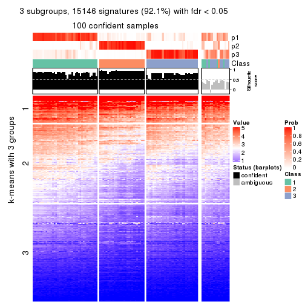
get_signatures(res, k = 4, scale_rows = FALSE)
get_signatures(res, k = 5, scale_rows = FALSE)
get_signatures(res, k = 6, scale_rows = FALSE)
Compare the overlap of signatures from different k:
compare_signatures(res)
get_signature() returns a data frame invisibly. TO get the list of signatures, the function
call should be assigned to a variable explicitly. In following code, if plot argument is set
to FALSE, no heatmap is plotted while only the differential analysis is performed.
# code only for demonstration
tb = get_signature(res, k = ..., plot = FALSE)
An example of the output of tb is:
#> which_row fdr mean_1 mean_2 scaled_mean_1 scaled_mean_2 km
#> 1 38 0.042760348 8.373488 9.131774 -0.5533452 0.5164555 1
#> 2 40 0.018707592 7.106213 8.469186 -0.6173731 0.5762149 1
#> 3 55 0.019134737 10.221463 11.207825 -0.6159697 0.5749050 1
#> 4 59 0.006059896 5.921854 7.869574 -0.6899429 0.6439467 1
#> 5 60 0.018055526 8.928898 10.211722 -0.6204761 0.5791110 1
#> 6 98 0.009384629 15.714769 14.887706 0.6635654 -0.6193277 2
...
The columns in tb are:
which_row: row indices corresponding to the input matrix.fdr: FDR for the differential test. mean_x: The mean value in group x.scaled_mean_x: The mean value in group x after rows are scaled.km: Row groups if k-means clustering is applied to rows.UMAP plot which shows how samples are separated.
dimension_reduction(res, k = 2, method = "UMAP")
dimension_reduction(res, k = 3, method = "UMAP")
dimension_reduction(res, k = 4, method = "UMAP")
dimension_reduction(res, k = 5, method = "UMAP")
dimension_reduction(res, k = 6, method = "UMAP")
Following heatmap shows how subgroups are split when increasing k:
collect_classes(res)
If matrix rows can be associated to genes, consider to use functional_enrichment(res,
...) to perform function enrichment for the signature genes. See this vignette for more detailed explanations.
The object with results only for a single top-value method and a single partition method can be extracted as:
res = res_list["ATC", "hclust"]
# you can also extract it by
# res = res_list["ATC:hclust"]
A summary of res and all the functions that can be applied to it:
res
#> A 'ConsensusPartition' object with k = 2, 3, 4, 5, 6.
#> On a matrix with 16442 rows and 117 columns.
#> Top rows (1000, 2000, 3000, 4000, 5000) are extracted by 'ATC' method.
#> Subgroups are detected by 'hclust' method.
#> Performed in total 1250 partitions by row resampling.
#> Best k for subgroups seems to be 2.
#>
#> Following methods can be applied to this 'ConsensusPartition' object:
#> [1] "cola_report" "collect_classes" "collect_plots"
#> [4] "collect_stats" "colnames" "compare_signatures"
#> [7] "consensus_heatmap" "dimension_reduction" "functional_enrichment"
#> [10] "get_anno_col" "get_anno" "get_classes"
#> [13] "get_consensus" "get_matrix" "get_membership"
#> [16] "get_param" "get_signatures" "get_stats"
#> [19] "is_best_k" "is_stable_k" "membership_heatmap"
#> [22] "ncol" "nrow" "plot_ecdf"
#> [25] "rownames" "select_partition_number" "show"
#> [28] "suggest_best_k" "test_to_known_factors"
collect_plots() function collects all the plots made from res for all k (number of partitions)
into one single page to provide an easy and fast comparison between different k.
collect_plots(res)
The plots are:
k and the heatmap of
predicted classes for each k.k.k.k.All the plots in panels can be made by individual functions and they are plotted later in this section.
select_partition_number() produces several plots showing different
statistics for choosing “optimized” k. There are following statistics:
k;k, the area increased is defined as \(A_k - A_{k-1}\).The detailed explanations of these statistics can be found in the cola vignette.
Generally speaking, lower PAC score, higher mean silhouette score or higher
concordance corresponds to better partition. Rand index and Jaccard index
measure how similar the current partition is compared to partition with k-1.
If they are too similar, we won't accept k is better than k-1.
select_partition_number(res)
The numeric values for all these statistics can be obtained by get_stats().
get_stats(res)
#> k 1-PAC mean_silhouette concordance area_increased Rand Jaccard
#> 2 2 0.891 0.951 0.966 0.4913 0.500 0.500
#> 3 3 0.744 0.854 0.916 0.3031 0.849 0.699
#> 4 4 0.710 0.786 0.894 0.1425 0.907 0.734
#> 5 5 0.732 0.718 0.807 0.0682 0.944 0.789
#> 6 6 0.720 0.599 0.786 0.0502 0.929 0.692
suggest_best_k() suggests the best \(k\) based on these statistics. The rules are as follows:
suggest_best_k(res)
#> [1] 2
Following shows the table of the partitions (You need to click the show/hide
code output link to see it). The membership matrix (columns with name p*)
is inferred by
clue::cl_consensus()
function with the SE method. Basically the value in the membership matrix
represents the probability to belong to a certain group. The finall class
label for an item is determined with the group with highest probability it
belongs to.
In get_classes() function, the entropy is calculated from the membership
matrix and the silhouette score is calculated from the consensus matrix.
cbind(get_classes(res, k = 2), get_membership(res, k = 2))
#> class entropy silhouette p1 p2
#> SRR2443263 1 0.4562 0.932 0.904 0.096
#> SRR2443262 2 0.0000 0.982 0.000 1.000
#> SRR2443261 2 0.0000 0.982 0.000 1.000
#> SRR2443260 1 0.4562 0.932 0.904 0.096
#> SRR2443259 1 0.4298 0.937 0.912 0.088
#> SRR2443258 1 0.3584 0.944 0.932 0.068
#> SRR2443257 2 0.0000 0.982 0.000 1.000
#> SRR2443256 1 0.3274 0.946 0.940 0.060
#> SRR2443255 1 0.4431 0.935 0.908 0.092
#> SRR2443254 1 0.4562 0.932 0.904 0.096
#> SRR2443253 2 0.0000 0.982 0.000 1.000
#> SRR2443251 2 0.0376 0.981 0.004 0.996
#> SRR2443250 2 0.0000 0.982 0.000 1.000
#> SRR2443249 2 0.0000 0.982 0.000 1.000
#> SRR2443252 1 0.4562 0.932 0.904 0.096
#> SRR2443247 1 0.0000 0.950 1.000 0.000
#> SRR2443246 1 0.0000 0.950 1.000 0.000
#> SRR2443248 2 0.1184 0.975 0.016 0.984
#> SRR2443244 2 0.1184 0.975 0.016 0.984
#> SRR2443245 1 0.0000 0.950 1.000 0.000
#> SRR2443243 1 0.0000 0.950 1.000 0.000
#> SRR2443242 2 0.4939 0.888 0.108 0.892
#> SRR2443241 1 0.4298 0.937 0.912 0.088
#> SRR2443240 1 0.6148 0.879 0.848 0.152
#> SRR2443239 2 0.1184 0.975 0.016 0.984
#> SRR2443238 1 0.0000 0.950 1.000 0.000
#> SRR2443237 2 0.4939 0.888 0.108 0.892
#> SRR2443236 1 0.0672 0.951 0.992 0.008
#> SRR2443235 1 0.0000 0.950 1.000 0.000
#> SRR2443233 1 0.0000 0.950 1.000 0.000
#> SRR2443234 1 0.0000 0.950 1.000 0.000
#> SRR2443232 1 0.0000 0.950 1.000 0.000
#> SRR2443231 1 0.0000 0.950 1.000 0.000
#> SRR2443230 1 0.0000 0.950 1.000 0.000
#> SRR2443229 1 0.3114 0.947 0.944 0.056
#> SRR2443228 2 0.0000 0.982 0.000 1.000
#> SRR2443227 1 0.0000 0.950 1.000 0.000
#> SRR2443226 1 0.0000 0.950 1.000 0.000
#> SRR2443225 1 0.6148 0.879 0.848 0.152
#> SRR2443223 2 0.1184 0.975 0.016 0.984
#> SRR2443224 1 0.8813 0.647 0.700 0.300
#> SRR2443222 2 0.0000 0.982 0.000 1.000
#> SRR2443221 2 0.0000 0.982 0.000 1.000
#> SRR2443219 2 0.0000 0.982 0.000 1.000
#> SRR2443220 2 0.0000 0.982 0.000 1.000
#> SRR2443218 2 0.0000 0.982 0.000 1.000
#> SRR2443217 1 0.4562 0.932 0.904 0.096
#> SRR2443216 1 0.4022 0.940 0.920 0.080
#> SRR2443215 2 0.1184 0.975 0.016 0.984
#> SRR2443214 1 0.0000 0.950 1.000 0.000
#> SRR2443213 1 0.0000 0.950 1.000 0.000
#> SRR2443212 2 0.5059 0.883 0.112 0.888
#> SRR2443211 2 0.5059 0.883 0.112 0.888
#> SRR2443210 2 0.0000 0.982 0.000 1.000
#> SRR2443209 1 0.4298 0.937 0.912 0.088
#> SRR2443208 1 0.4562 0.932 0.904 0.096
#> SRR2443207 1 0.4562 0.932 0.904 0.096
#> SRR2443206 2 0.0376 0.981 0.004 0.996
#> SRR2443205 2 0.3584 0.929 0.068 0.932
#> SRR2443204 1 0.0000 0.950 1.000 0.000
#> SRR2443203 1 0.4022 0.940 0.920 0.080
#> SRR2443202 2 0.1184 0.975 0.016 0.984
#> SRR2443201 2 0.4939 0.888 0.108 0.892
#> SRR2443200 2 0.0000 0.982 0.000 1.000
#> SRR2443199 2 0.0000 0.982 0.000 1.000
#> SRR2443197 2 0.0000 0.982 0.000 1.000
#> SRR2443196 2 0.0000 0.982 0.000 1.000
#> SRR2443198 2 0.0376 0.981 0.004 0.996
#> SRR2443195 1 0.0000 0.950 1.000 0.000
#> SRR2443194 1 0.6148 0.879 0.848 0.152
#> SRR2443193 1 0.0376 0.951 0.996 0.004
#> SRR2443191 1 0.4431 0.935 0.908 0.092
#> SRR2443192 2 0.1184 0.975 0.016 0.984
#> SRR2443190 1 0.0000 0.950 1.000 0.000
#> SRR2443189 1 0.0000 0.950 1.000 0.000
#> SRR2443188 1 0.0000 0.950 1.000 0.000
#> SRR2443186 2 0.0376 0.981 0.004 0.996
#> SRR2443187 2 0.0376 0.981 0.004 0.996
#> SRR2443185 2 0.0376 0.981 0.004 0.996
#> SRR2443184 1 0.4022 0.940 0.920 0.080
#> SRR2443183 1 0.0000 0.950 1.000 0.000
#> SRR2443182 1 0.2948 0.947 0.948 0.052
#> SRR2443181 2 0.0376 0.981 0.004 0.996
#> SRR2443180 2 0.0000 0.982 0.000 1.000
#> SRR2443179 2 0.0000 0.982 0.000 1.000
#> SRR2443178 2 0.0376 0.981 0.004 0.996
#> SRR2443177 1 0.0000 0.950 1.000 0.000
#> SRR2443176 1 0.2948 0.947 0.948 0.052
#> SRR2443175 1 0.0000 0.950 1.000 0.000
#> SRR2443174 1 0.0000 0.950 1.000 0.000
#> SRR2443173 2 0.0000 0.982 0.000 1.000
#> SRR2443172 2 0.0000 0.982 0.000 1.000
#> SRR2443171 1 0.0000 0.950 1.000 0.000
#> SRR2443170 1 0.0938 0.951 0.988 0.012
#> SRR2443169 1 0.0000 0.950 1.000 0.000
#> SRR2443168 1 0.3733 0.943 0.928 0.072
#> SRR2443167 2 0.0000 0.982 0.000 1.000
#> SRR2443166 1 0.0000 0.950 1.000 0.000
#> SRR2443165 2 0.0000 0.982 0.000 1.000
#> SRR2443164 2 0.0000 0.982 0.000 1.000
#> SRR2443163 2 0.4939 0.888 0.108 0.892
#> SRR2443162 1 0.4431 0.935 0.908 0.092
#> SRR2443161 1 0.6048 0.883 0.852 0.148
#> SRR2443160 2 0.0000 0.982 0.000 1.000
#> SRR2443159 2 0.0000 0.982 0.000 1.000
#> SRR2443158 1 0.4431 0.935 0.908 0.092
#> SRR2443157 1 0.0000 0.950 1.000 0.000
#> SRR2443156 1 0.4298 0.937 0.912 0.088
#> SRR2443155 1 0.2043 0.949 0.968 0.032
#> SRR2443154 1 0.2948 0.947 0.948 0.052
#> SRR2443153 1 0.0000 0.950 1.000 0.000
#> SRR2443152 2 0.0000 0.982 0.000 1.000
#> SRR2443151 2 0.0000 0.982 0.000 1.000
#> SRR2443150 2 0.0000 0.982 0.000 1.000
#> SRR2443148 2 0.0000 0.982 0.000 1.000
#> SRR2443147 2 0.0000 0.982 0.000 1.000
#> SRR2443149 1 0.4022 0.940 0.920 0.080
cbind(get_classes(res, k = 3), get_membership(res, k = 3))
#> class entropy silhouette p1 p2 p3
#> SRR2443263 3 0.0000 0.889 0.000 0.000 1.000
#> SRR2443262 2 0.0892 0.943 0.000 0.980 0.020
#> SRR2443261 2 0.2448 0.942 0.000 0.924 0.076
#> SRR2443260 3 0.0000 0.889 0.000 0.000 1.000
#> SRR2443259 3 0.0424 0.889 0.008 0.000 0.992
#> SRR2443258 3 0.1163 0.882 0.028 0.000 0.972
#> SRR2443257 2 0.0892 0.943 0.000 0.980 0.020
#> SRR2443256 3 0.4504 0.711 0.196 0.000 0.804
#> SRR2443255 3 0.0237 0.890 0.004 0.000 0.996
#> SRR2443254 3 0.0000 0.889 0.000 0.000 1.000
#> SRR2443253 2 0.0000 0.935 0.000 1.000 0.000
#> SRR2443251 2 0.2625 0.940 0.000 0.916 0.084
#> SRR2443250 2 0.0892 0.943 0.000 0.980 0.020
#> SRR2443249 2 0.0892 0.943 0.000 0.980 0.020
#> SRR2443252 3 0.0000 0.889 0.000 0.000 1.000
#> SRR2443247 1 0.1163 0.866 0.972 0.000 0.028
#> SRR2443246 1 0.5988 0.529 0.632 0.000 0.368
#> SRR2443248 2 0.3116 0.930 0.000 0.892 0.108
#> SRR2443244 2 0.3038 0.932 0.000 0.896 0.104
#> SRR2443245 1 0.3879 0.842 0.848 0.000 0.152
#> SRR2443243 1 0.4654 0.797 0.792 0.000 0.208
#> SRR2443242 2 0.4605 0.844 0.000 0.796 0.204
#> SRR2443241 3 0.0892 0.887 0.020 0.000 0.980
#> SRR2443240 3 0.1964 0.845 0.000 0.056 0.944
#> SRR2443239 2 0.3116 0.930 0.000 0.892 0.108
#> SRR2443238 1 0.4842 0.781 0.776 0.000 0.224
#> SRR2443237 2 0.4605 0.844 0.000 0.796 0.204
#> SRR2443236 1 0.6291 0.238 0.532 0.000 0.468
#> SRR2443235 1 0.2625 0.865 0.916 0.000 0.084
#> SRR2443233 1 0.0000 0.865 1.000 0.000 0.000
#> SRR2443234 1 0.0000 0.865 1.000 0.000 0.000
#> SRR2443232 1 0.0000 0.865 1.000 0.000 0.000
#> SRR2443231 1 0.0000 0.865 1.000 0.000 0.000
#> SRR2443230 1 0.0000 0.865 1.000 0.000 0.000
#> SRR2443229 3 0.3752 0.780 0.144 0.000 0.856
#> SRR2443228 2 0.0000 0.935 0.000 1.000 0.000
#> SRR2443227 1 0.0000 0.865 1.000 0.000 0.000
#> SRR2443226 1 0.4750 0.789 0.784 0.000 0.216
#> SRR2443225 3 0.1964 0.851 0.000 0.056 0.944
#> SRR2443223 2 0.3038 0.932 0.000 0.896 0.104
#> SRR2443224 3 0.4605 0.657 0.000 0.204 0.796
#> SRR2443222 2 0.0000 0.935 0.000 1.000 0.000
#> SRR2443221 2 0.0000 0.935 0.000 1.000 0.000
#> SRR2443219 2 0.0892 0.943 0.000 0.980 0.020
#> SRR2443220 2 0.2448 0.942 0.000 0.924 0.076
#> SRR2443218 2 0.0000 0.935 0.000 1.000 0.000
#> SRR2443217 3 0.0000 0.889 0.000 0.000 1.000
#> SRR2443216 3 0.0747 0.888 0.016 0.000 0.984
#> SRR2443215 2 0.3116 0.930 0.000 0.892 0.108
#> SRR2443214 1 0.3879 0.842 0.848 0.000 0.152
#> SRR2443213 1 0.0000 0.865 1.000 0.000 0.000
#> SRR2443212 2 0.4654 0.839 0.000 0.792 0.208
#> SRR2443211 2 0.4654 0.839 0.000 0.792 0.208
#> SRR2443210 2 0.1031 0.943 0.000 0.976 0.024
#> SRR2443209 3 0.0892 0.887 0.020 0.000 0.980
#> SRR2443208 3 0.0000 0.889 0.000 0.000 1.000
#> SRR2443207 3 0.0000 0.889 0.000 0.000 1.000
#> SRR2443206 2 0.2711 0.939 0.000 0.912 0.088
#> SRR2443205 2 0.4062 0.885 0.000 0.836 0.164
#> SRR2443204 1 0.3686 0.850 0.860 0.000 0.140
#> SRR2443203 3 0.0747 0.888 0.016 0.000 0.984
#> SRR2443202 2 0.3038 0.932 0.000 0.896 0.104
#> SRR2443201 2 0.4605 0.844 0.000 0.796 0.204
#> SRR2443200 2 0.0000 0.935 0.000 1.000 0.000
#> SRR2443199 2 0.0000 0.935 0.000 1.000 0.000
#> SRR2443197 2 0.0892 0.943 0.000 0.980 0.020
#> SRR2443196 2 0.0892 0.943 0.000 0.980 0.020
#> SRR2443198 2 0.2711 0.939 0.000 0.912 0.088
#> SRR2443195 1 0.4842 0.781 0.776 0.000 0.224
#> SRR2443194 3 0.1964 0.851 0.000 0.056 0.944
#> SRR2443193 1 0.5948 0.549 0.640 0.000 0.360
#> SRR2443191 3 0.0237 0.890 0.004 0.000 0.996
#> SRR2443192 2 0.3038 0.932 0.000 0.896 0.104
#> SRR2443190 1 0.0000 0.865 1.000 0.000 0.000
#> SRR2443189 1 0.3686 0.850 0.860 0.000 0.140
#> SRR2443188 1 0.0000 0.865 1.000 0.000 0.000
#> SRR2443186 2 0.2796 0.938 0.000 0.908 0.092
#> SRR2443187 2 0.2796 0.938 0.000 0.908 0.092
#> SRR2443185 2 0.2711 0.939 0.000 0.912 0.088
#> SRR2443184 3 0.0747 0.888 0.016 0.000 0.984
#> SRR2443183 1 0.0000 0.865 1.000 0.000 0.000
#> SRR2443182 3 0.5650 0.508 0.312 0.000 0.688
#> SRR2443181 2 0.2625 0.940 0.000 0.916 0.084
#> SRR2443180 2 0.0000 0.935 0.000 1.000 0.000
#> SRR2443179 2 0.0000 0.935 0.000 1.000 0.000
#> SRR2443178 2 0.2796 0.938 0.000 0.908 0.092
#> SRR2443177 1 0.5497 0.676 0.708 0.000 0.292
#> SRR2443176 3 0.5431 0.567 0.284 0.000 0.716
#> SRR2443175 1 0.2625 0.865 0.916 0.000 0.084
#> SRR2443174 1 0.0000 0.865 1.000 0.000 0.000
#> SRR2443173 2 0.1031 0.943 0.000 0.976 0.024
#> SRR2443172 2 0.1031 0.943 0.000 0.976 0.024
#> SRR2443171 1 0.3267 0.859 0.884 0.000 0.116
#> SRR2443170 3 0.6309 -0.165 0.500 0.000 0.500
#> SRR2443169 1 0.0000 0.865 1.000 0.000 0.000
#> SRR2443168 3 0.2356 0.852 0.072 0.000 0.928
#> SRR2443167 2 0.0892 0.943 0.000 0.980 0.020
#> SRR2443166 1 0.3686 0.850 0.860 0.000 0.140
#> SRR2443165 2 0.2711 0.939 0.000 0.912 0.088
#> SRR2443164 2 0.0000 0.935 0.000 1.000 0.000
#> SRR2443163 2 0.4605 0.844 0.000 0.796 0.204
#> SRR2443162 3 0.0237 0.890 0.004 0.000 0.996
#> SRR2443161 3 0.1860 0.854 0.000 0.052 0.948
#> SRR2443160 2 0.0892 0.943 0.000 0.980 0.020
#> SRR2443159 2 0.0892 0.943 0.000 0.980 0.020
#> SRR2443158 3 0.0237 0.890 0.004 0.000 0.996
#> SRR2443157 1 0.3267 0.859 0.884 0.000 0.116
#> SRR2443156 3 0.0892 0.887 0.020 0.000 0.980
#> SRR2443155 3 0.5988 0.356 0.368 0.000 0.632
#> SRR2443154 3 0.5760 0.471 0.328 0.000 0.672
#> SRR2443153 1 0.0237 0.865 0.996 0.000 0.004
#> SRR2443152 2 0.2448 0.941 0.000 0.924 0.076
#> SRR2443151 2 0.0000 0.935 0.000 1.000 0.000
#> SRR2443150 2 0.2448 0.941 0.000 0.924 0.076
#> SRR2443148 2 0.0000 0.935 0.000 1.000 0.000
#> SRR2443147 2 0.0000 0.935 0.000 1.000 0.000
#> SRR2443149 3 0.0747 0.888 0.016 0.000 0.984
cbind(get_classes(res, k = 4), get_membership(res, k = 4))
#> class entropy silhouette p1 p2 p3 p4
#> SRR2443263 3 0.0817 0.889 0.000 0.024 0.976 0.000
#> SRR2443262 4 0.4790 0.461 0.000 0.380 0.000 0.620
#> SRR2443261 2 0.0592 0.875 0.000 0.984 0.000 0.016
#> SRR2443260 3 0.0817 0.889 0.000 0.024 0.976 0.000
#> SRR2443259 3 0.0336 0.888 0.000 0.008 0.992 0.000
#> SRR2443258 3 0.0524 0.883 0.008 0.000 0.988 0.004
#> SRR2443257 4 0.4790 0.461 0.000 0.380 0.000 0.620
#> SRR2443256 3 0.3950 0.720 0.184 0.008 0.804 0.004
#> SRR2443255 3 0.0592 0.889 0.000 0.016 0.984 0.000
#> SRR2443254 3 0.0817 0.889 0.000 0.024 0.976 0.000
#> SRR2443253 4 0.0592 0.869 0.000 0.016 0.000 0.984
#> SRR2443251 2 0.0336 0.878 0.000 0.992 0.000 0.008
#> SRR2443250 4 0.4790 0.461 0.000 0.380 0.000 0.620
#> SRR2443249 4 0.4790 0.461 0.000 0.380 0.000 0.620
#> SRR2443252 3 0.0817 0.889 0.000 0.024 0.976 0.000
#> SRR2443247 1 0.1388 0.858 0.960 0.000 0.028 0.012
#> SRR2443246 1 0.4950 0.509 0.620 0.000 0.376 0.004
#> SRR2443248 2 0.0592 0.877 0.000 0.984 0.016 0.000
#> SRR2443244 2 0.0469 0.878 0.000 0.988 0.012 0.000
#> SRR2443245 1 0.3172 0.831 0.840 0.000 0.160 0.000
#> SRR2443243 1 0.3945 0.783 0.780 0.000 0.216 0.004
#> SRR2443242 2 0.2589 0.818 0.000 0.884 0.116 0.000
#> SRR2443241 3 0.0804 0.887 0.012 0.008 0.980 0.000
#> SRR2443240 3 0.2469 0.823 0.000 0.108 0.892 0.000
#> SRR2443239 2 0.0592 0.877 0.000 0.984 0.016 0.000
#> SRR2443238 1 0.4088 0.767 0.764 0.000 0.232 0.004
#> SRR2443237 2 0.2589 0.818 0.000 0.884 0.116 0.000
#> SRR2443236 1 0.5163 0.204 0.516 0.000 0.480 0.004
#> SRR2443235 1 0.2081 0.855 0.916 0.000 0.084 0.000
#> SRR2443233 1 0.0469 0.856 0.988 0.000 0.000 0.012
#> SRR2443234 1 0.0469 0.856 0.988 0.000 0.000 0.012
#> SRR2443232 1 0.0469 0.856 0.988 0.000 0.000 0.012
#> SRR2443231 1 0.0469 0.856 0.988 0.000 0.000 0.012
#> SRR2443230 1 0.0469 0.856 0.988 0.000 0.000 0.012
#> SRR2443229 3 0.2888 0.788 0.124 0.000 0.872 0.004
#> SRR2443228 4 0.0592 0.869 0.000 0.016 0.000 0.984
#> SRR2443227 1 0.0469 0.856 0.988 0.000 0.000 0.012
#> SRR2443226 1 0.4018 0.775 0.772 0.000 0.224 0.004
#> SRR2443225 3 0.2081 0.853 0.000 0.084 0.916 0.000
#> SRR2443223 2 0.0469 0.878 0.000 0.988 0.012 0.000
#> SRR2443224 3 0.4164 0.607 0.000 0.264 0.736 0.000
#> SRR2443222 4 0.0592 0.869 0.000 0.016 0.000 0.984
#> SRR2443221 4 0.0592 0.869 0.000 0.016 0.000 0.984
#> SRR2443219 4 0.4790 0.461 0.000 0.380 0.000 0.620
#> SRR2443220 2 0.0592 0.875 0.000 0.984 0.000 0.016
#> SRR2443218 4 0.0592 0.869 0.000 0.016 0.000 0.984
#> SRR2443217 3 0.0817 0.889 0.000 0.024 0.976 0.000
#> SRR2443216 3 0.0000 0.887 0.000 0.000 1.000 0.000
#> SRR2443215 2 0.0592 0.877 0.000 0.984 0.016 0.000
#> SRR2443214 1 0.3172 0.831 0.840 0.000 0.160 0.000
#> SRR2443213 1 0.0469 0.856 0.988 0.000 0.000 0.012
#> SRR2443212 2 0.2760 0.808 0.000 0.872 0.128 0.000
#> SRR2443211 2 0.2760 0.808 0.000 0.872 0.128 0.000
#> SRR2443210 2 0.3610 0.727 0.000 0.800 0.000 0.200
#> SRR2443209 3 0.0804 0.887 0.012 0.008 0.980 0.000
#> SRR2443208 3 0.0817 0.889 0.000 0.024 0.976 0.000
#> SRR2443207 3 0.0817 0.889 0.000 0.024 0.976 0.000
#> SRR2443206 2 0.0524 0.879 0.000 0.988 0.004 0.008
#> SRR2443205 2 0.2011 0.846 0.000 0.920 0.080 0.000
#> SRR2443204 1 0.3024 0.838 0.852 0.000 0.148 0.000
#> SRR2443203 3 0.0000 0.887 0.000 0.000 1.000 0.000
#> SRR2443202 2 0.0469 0.878 0.000 0.988 0.012 0.000
#> SRR2443201 2 0.2589 0.818 0.000 0.884 0.116 0.000
#> SRR2443200 4 0.0592 0.869 0.000 0.016 0.000 0.984
#> SRR2443199 4 0.0592 0.869 0.000 0.016 0.000 0.984
#> SRR2443197 2 0.4643 0.467 0.000 0.656 0.000 0.344
#> SRR2443196 2 0.4643 0.467 0.000 0.656 0.000 0.344
#> SRR2443198 2 0.0188 0.879 0.000 0.996 0.000 0.004
#> SRR2443195 1 0.4088 0.767 0.764 0.000 0.232 0.004
#> SRR2443194 3 0.2081 0.853 0.000 0.084 0.916 0.000
#> SRR2443193 1 0.4936 0.526 0.624 0.000 0.372 0.004
#> SRR2443191 3 0.0707 0.889 0.000 0.020 0.980 0.000
#> SRR2443192 2 0.0469 0.878 0.000 0.988 0.012 0.000
#> SRR2443190 1 0.0469 0.856 0.988 0.000 0.000 0.012
#> SRR2443189 1 0.3024 0.838 0.852 0.000 0.148 0.000
#> SRR2443188 1 0.0469 0.856 0.988 0.000 0.000 0.012
#> SRR2443186 2 0.0672 0.879 0.000 0.984 0.008 0.008
#> SRR2443187 2 0.0672 0.879 0.000 0.984 0.008 0.008
#> SRR2443185 2 0.0188 0.879 0.000 0.996 0.000 0.004
#> SRR2443184 3 0.0000 0.887 0.000 0.000 1.000 0.000
#> SRR2443183 1 0.0469 0.856 0.988 0.000 0.000 0.012
#> SRR2443182 3 0.4535 0.526 0.292 0.000 0.704 0.004
#> SRR2443181 2 0.0336 0.878 0.000 0.992 0.000 0.008
#> SRR2443180 4 0.0592 0.869 0.000 0.016 0.000 0.984
#> SRR2443179 4 0.0592 0.869 0.000 0.016 0.000 0.984
#> SRR2443178 2 0.0000 0.879 0.000 1.000 0.000 0.000
#> SRR2443177 1 0.4406 0.663 0.700 0.000 0.300 0.000
#> SRR2443176 3 0.4343 0.583 0.264 0.000 0.732 0.004
#> SRR2443175 1 0.2081 0.855 0.916 0.000 0.084 0.000
#> SRR2443174 1 0.0469 0.856 0.988 0.000 0.000 0.012
#> SRR2443173 2 0.3610 0.727 0.000 0.800 0.000 0.200
#> SRR2443172 2 0.3610 0.727 0.000 0.800 0.000 0.200
#> SRR2443171 1 0.2647 0.849 0.880 0.000 0.120 0.000
#> SRR2443170 3 0.5165 -0.135 0.484 0.000 0.512 0.004
#> SRR2443169 1 0.0469 0.856 0.988 0.000 0.000 0.012
#> SRR2443168 3 0.1661 0.854 0.052 0.000 0.944 0.004
#> SRR2443167 2 0.4643 0.467 0.000 0.656 0.000 0.344
#> SRR2443166 1 0.3024 0.838 0.852 0.000 0.148 0.000
#> SRR2443165 2 0.0188 0.879 0.000 0.996 0.000 0.004
#> SRR2443164 4 0.0592 0.869 0.000 0.016 0.000 0.984
#> SRR2443163 2 0.2589 0.818 0.000 0.884 0.116 0.000
#> SRR2443162 3 0.0592 0.889 0.000 0.016 0.984 0.000
#> SRR2443161 3 0.2011 0.856 0.000 0.080 0.920 0.000
#> SRR2443160 2 0.4643 0.467 0.000 0.656 0.000 0.344
#> SRR2443159 2 0.4643 0.467 0.000 0.656 0.000 0.344
#> SRR2443158 3 0.0592 0.889 0.000 0.016 0.984 0.000
#> SRR2443157 1 0.2647 0.849 0.880 0.000 0.120 0.000
#> SRR2443156 3 0.0804 0.887 0.012 0.008 0.980 0.000
#> SRR2443155 3 0.4837 0.384 0.348 0.000 0.648 0.004
#> SRR2443154 3 0.4632 0.489 0.308 0.000 0.688 0.004
#> SRR2443153 1 0.0657 0.857 0.984 0.000 0.004 0.012
#> SRR2443152 2 0.0707 0.874 0.000 0.980 0.000 0.020
#> SRR2443151 4 0.0592 0.869 0.000 0.016 0.000 0.984
#> SRR2443150 2 0.0707 0.874 0.000 0.980 0.000 0.020
#> SRR2443148 4 0.0592 0.869 0.000 0.016 0.000 0.984
#> SRR2443147 4 0.0592 0.869 0.000 0.016 0.000 0.984
#> SRR2443149 3 0.0000 0.887 0.000 0.000 1.000 0.000
cbind(get_classes(res, k = 5), get_membership(res, k = 5))
#> class entropy silhouette p1 p2 p3 p4 p5
#> SRR2443263 3 0.0290 0.8899 0.000 0.000 0.992 0.008 0.000
#> SRR2443262 2 0.5452 0.4933 0.000 0.616 0.000 0.292 0.092
#> SRR2443261 4 0.1502 0.7997 0.000 0.004 0.000 0.940 0.056
#> SRR2443260 3 0.0290 0.8899 0.000 0.000 0.992 0.008 0.000
#> SRR2443259 3 0.0794 0.8866 0.000 0.000 0.972 0.000 0.028
#> SRR2443258 3 0.1851 0.8654 0.000 0.000 0.912 0.000 0.088
#> SRR2443257 2 0.5452 0.4933 0.000 0.616 0.000 0.292 0.092
#> SRR2443256 3 0.4045 0.4480 0.000 0.000 0.644 0.000 0.356
#> SRR2443255 3 0.0000 0.8899 0.000 0.000 1.000 0.000 0.000
#> SRR2443254 3 0.0290 0.8899 0.000 0.000 0.992 0.008 0.000
#> SRR2443253 2 0.0000 0.8690 0.000 1.000 0.000 0.000 0.000
#> SRR2443251 4 0.1197 0.8026 0.000 0.000 0.000 0.952 0.048
#> SRR2443250 2 0.5452 0.4933 0.000 0.616 0.000 0.292 0.092
#> SRR2443249 2 0.5452 0.4933 0.000 0.616 0.000 0.292 0.092
#> SRR2443252 3 0.0290 0.8899 0.000 0.000 0.992 0.008 0.000
#> SRR2443247 1 0.4101 0.1977 0.628 0.000 0.000 0.000 0.372
#> SRR2443246 5 0.5396 0.6216 0.124 0.000 0.220 0.000 0.656
#> SRR2443248 4 0.2761 0.8035 0.000 0.000 0.024 0.872 0.104
#> SRR2443244 4 0.1568 0.8103 0.000 0.000 0.020 0.944 0.036
#> SRR2443245 5 0.4066 0.6553 0.324 0.000 0.004 0.000 0.672
#> SRR2443243 5 0.4597 0.6865 0.260 0.000 0.044 0.000 0.696
#> SRR2443242 4 0.3012 0.7661 0.000 0.000 0.124 0.852 0.024
#> SRR2443241 3 0.1270 0.8817 0.000 0.000 0.948 0.000 0.052
#> SRR2443240 3 0.2172 0.8324 0.000 0.000 0.908 0.076 0.016
#> SRR2443239 4 0.2761 0.8035 0.000 0.000 0.024 0.872 0.104
#> SRR2443238 5 0.4693 0.6882 0.244 0.000 0.056 0.000 0.700
#> SRR2443237 4 0.2921 0.7651 0.000 0.000 0.124 0.856 0.020
#> SRR2443236 5 0.4275 0.5327 0.020 0.000 0.284 0.000 0.696
#> SRR2443235 5 0.4262 0.4725 0.440 0.000 0.000 0.000 0.560
#> SRR2443233 1 0.3480 0.5886 0.752 0.000 0.000 0.000 0.248
#> SRR2443234 1 0.0609 0.8588 0.980 0.000 0.000 0.000 0.020
#> SRR2443232 1 0.3480 0.5886 0.752 0.000 0.000 0.000 0.248
#> SRR2443231 1 0.0000 0.8670 1.000 0.000 0.000 0.000 0.000
#> SRR2443230 1 0.0000 0.8670 1.000 0.000 0.000 0.000 0.000
#> SRR2443229 3 0.3662 0.6662 0.004 0.000 0.744 0.000 0.252
#> SRR2443228 2 0.0000 0.8690 0.000 1.000 0.000 0.000 0.000
#> SRR2443227 1 0.0000 0.8670 1.000 0.000 0.000 0.000 0.000
#> SRR2443226 5 0.4615 0.6876 0.252 0.000 0.048 0.000 0.700
#> SRR2443225 3 0.1544 0.8542 0.000 0.000 0.932 0.068 0.000
#> SRR2443223 4 0.1568 0.8103 0.000 0.000 0.020 0.944 0.036
#> SRR2443224 3 0.3607 0.6201 0.000 0.000 0.752 0.244 0.004
#> SRR2443222 2 0.0000 0.8690 0.000 1.000 0.000 0.000 0.000
#> SRR2443221 2 0.0000 0.8690 0.000 1.000 0.000 0.000 0.000
#> SRR2443219 2 0.5452 0.4933 0.000 0.616 0.000 0.292 0.092
#> SRR2443220 4 0.1502 0.7997 0.000 0.004 0.000 0.940 0.056
#> SRR2443218 2 0.0000 0.8690 0.000 1.000 0.000 0.000 0.000
#> SRR2443217 3 0.0290 0.8899 0.000 0.000 0.992 0.008 0.000
#> SRR2443216 3 0.1410 0.8804 0.000 0.000 0.940 0.000 0.060
#> SRR2443215 4 0.2761 0.8035 0.000 0.000 0.024 0.872 0.104
#> SRR2443214 5 0.4066 0.6553 0.324 0.000 0.004 0.000 0.672
#> SRR2443213 1 0.0000 0.8670 1.000 0.000 0.000 0.000 0.000
#> SRR2443212 4 0.4528 0.7533 0.000 0.000 0.144 0.752 0.104
#> SRR2443211 4 0.4528 0.7533 0.000 0.000 0.144 0.752 0.104
#> SRR2443210 4 0.5998 0.6010 0.000 0.188 0.000 0.584 0.228
#> SRR2443209 3 0.1270 0.8817 0.000 0.000 0.948 0.000 0.052
#> SRR2443208 3 0.0290 0.8899 0.000 0.000 0.992 0.008 0.000
#> SRR2443207 3 0.0290 0.8899 0.000 0.000 0.992 0.008 0.000
#> SRR2443206 4 0.2930 0.7872 0.000 0.000 0.004 0.832 0.164
#> SRR2443205 4 0.3916 0.7851 0.000 0.000 0.092 0.804 0.104
#> SRR2443204 5 0.3966 0.6452 0.336 0.000 0.000 0.000 0.664
#> SRR2443203 3 0.1410 0.8804 0.000 0.000 0.940 0.000 0.060
#> SRR2443202 4 0.1012 0.8061 0.000 0.000 0.020 0.968 0.012
#> SRR2443201 4 0.2921 0.7651 0.000 0.000 0.124 0.856 0.020
#> SRR2443200 2 0.0000 0.8690 0.000 1.000 0.000 0.000 0.000
#> SRR2443199 2 0.0000 0.8690 0.000 1.000 0.000 0.000 0.000
#> SRR2443197 4 0.5658 0.3372 0.000 0.332 0.000 0.572 0.096
#> SRR2443196 4 0.5658 0.3372 0.000 0.332 0.000 0.572 0.096
#> SRR2443198 4 0.1282 0.8038 0.000 0.000 0.004 0.952 0.044
#> SRR2443195 5 0.4693 0.6882 0.244 0.000 0.056 0.000 0.700
#> SRR2443194 3 0.1544 0.8542 0.000 0.000 0.932 0.068 0.000
#> SRR2443193 5 0.5045 0.6294 0.108 0.000 0.196 0.000 0.696
#> SRR2443191 3 0.0162 0.8900 0.000 0.000 0.996 0.004 0.000
#> SRR2443192 4 0.1117 0.8069 0.000 0.000 0.020 0.964 0.016
#> SRR2443190 1 0.0609 0.8588 0.980 0.000 0.000 0.000 0.020
#> SRR2443189 5 0.3966 0.6452 0.336 0.000 0.000 0.000 0.664
#> SRR2443188 1 0.0000 0.8670 1.000 0.000 0.000 0.000 0.000
#> SRR2443186 4 0.3053 0.7873 0.000 0.000 0.008 0.828 0.164
#> SRR2443187 4 0.3053 0.7873 0.000 0.000 0.008 0.828 0.164
#> SRR2443185 4 0.1282 0.8043 0.000 0.000 0.004 0.952 0.044
#> SRR2443184 3 0.1410 0.8804 0.000 0.000 0.940 0.000 0.060
#> SRR2443183 1 0.0000 0.8670 1.000 0.000 0.000 0.000 0.000
#> SRR2443182 3 0.4304 0.0695 0.000 0.000 0.516 0.000 0.484
#> SRR2443181 4 0.3274 0.7745 0.000 0.000 0.000 0.780 0.220
#> SRR2443180 2 0.0000 0.8690 0.000 1.000 0.000 0.000 0.000
#> SRR2443179 2 0.0000 0.8690 0.000 1.000 0.000 0.000 0.000
#> SRR2443178 4 0.2358 0.8105 0.000 0.000 0.008 0.888 0.104
#> SRR2443177 5 0.5283 0.6586 0.188 0.000 0.136 0.000 0.676
#> SRR2443176 3 0.4283 0.1817 0.000 0.000 0.544 0.000 0.456
#> SRR2443175 5 0.4262 0.4725 0.440 0.000 0.000 0.000 0.560
#> SRR2443174 1 0.0000 0.8670 1.000 0.000 0.000 0.000 0.000
#> SRR2443173 4 0.5998 0.6010 0.000 0.188 0.000 0.584 0.228
#> SRR2443172 4 0.5998 0.6010 0.000 0.188 0.000 0.584 0.228
#> SRR2443171 5 0.4310 0.5740 0.392 0.000 0.004 0.000 0.604
#> SRR2443170 5 0.4348 0.4774 0.016 0.000 0.316 0.000 0.668
#> SRR2443169 1 0.0000 0.8670 1.000 0.000 0.000 0.000 0.000
#> SRR2443168 3 0.2690 0.7932 0.000 0.000 0.844 0.000 0.156
#> SRR2443167 4 0.5658 0.3372 0.000 0.332 0.000 0.572 0.096
#> SRR2443166 5 0.3966 0.6452 0.336 0.000 0.000 0.000 0.664
#> SRR2443165 4 0.1628 0.8025 0.000 0.000 0.008 0.936 0.056
#> SRR2443164 2 0.0000 0.8690 0.000 1.000 0.000 0.000 0.000
#> SRR2443163 4 0.2921 0.7651 0.000 0.000 0.124 0.856 0.020
#> SRR2443162 3 0.0000 0.8899 0.000 0.000 1.000 0.000 0.000
#> SRR2443161 3 0.1478 0.8575 0.000 0.000 0.936 0.064 0.000
#> SRR2443160 4 0.5658 0.3372 0.000 0.332 0.000 0.572 0.096
#> SRR2443159 4 0.5658 0.3372 0.000 0.332 0.000 0.572 0.096
#> SRR2443158 3 0.0000 0.8899 0.000 0.000 1.000 0.000 0.000
#> SRR2443157 5 0.4310 0.5740 0.392 0.000 0.004 0.000 0.604
#> SRR2443156 3 0.1270 0.8817 0.000 0.000 0.948 0.000 0.052
#> SRR2443155 5 0.4278 0.1049 0.000 0.000 0.452 0.000 0.548
#> SRR2443154 5 0.4307 -0.0839 0.000 0.000 0.500 0.000 0.500
#> SRR2443153 1 0.3636 0.5340 0.728 0.000 0.000 0.000 0.272
#> SRR2443152 4 0.3582 0.7700 0.000 0.008 0.000 0.768 0.224
#> SRR2443151 2 0.0000 0.8690 0.000 1.000 0.000 0.000 0.000
#> SRR2443150 4 0.3582 0.7700 0.000 0.008 0.000 0.768 0.224
#> SRR2443148 2 0.0000 0.8690 0.000 1.000 0.000 0.000 0.000
#> SRR2443147 2 0.0000 0.8690 0.000 1.000 0.000 0.000 0.000
#> SRR2443149 3 0.1410 0.8804 0.000 0.000 0.940 0.000 0.060
cbind(get_classes(res, k = 6), get_membership(res, k = 6))
#> class entropy silhouette p1 p2 p3 p4 p5 p6
#> SRR2443263 3 0.1010 0.8596 0.000 0.004 0.960 0.036 0.000 0.000
#> SRR2443262 4 0.5139 0.2177 0.000 0.084 0.000 0.492 0.424 0.000
#> SRR2443261 4 0.3828 -0.2227 0.000 0.440 0.000 0.560 0.000 0.000
#> SRR2443260 3 0.1152 0.8577 0.000 0.004 0.952 0.044 0.000 0.000
#> SRR2443259 3 0.1461 0.8520 0.000 0.000 0.940 0.044 0.000 0.016
#> SRR2443258 3 0.2962 0.8115 0.000 0.000 0.848 0.068 0.000 0.084
#> SRR2443257 4 0.5139 0.2177 0.000 0.084 0.000 0.492 0.424 0.000
#> SRR2443256 3 0.4932 0.2090 0.000 0.000 0.556 0.072 0.000 0.372
#> SRR2443255 3 0.0000 0.8622 0.000 0.000 1.000 0.000 0.000 0.000
#> SRR2443254 3 0.1933 0.8589 0.000 0.004 0.920 0.044 0.000 0.032
#> SRR2443253 5 0.0000 1.0000 0.000 0.000 0.000 0.000 1.000 0.000
#> SRR2443251 4 0.3847 -0.2482 0.000 0.456 0.000 0.544 0.000 0.000
#> SRR2443250 4 0.5139 0.2177 0.000 0.084 0.000 0.492 0.424 0.000
#> SRR2443249 4 0.5139 0.2177 0.000 0.084 0.000 0.492 0.424 0.000
#> SRR2443252 3 0.1152 0.8577 0.000 0.004 0.952 0.044 0.000 0.000
#> SRR2443247 1 0.4096 0.0216 0.508 0.000 0.000 0.008 0.000 0.484
#> SRR2443246 6 0.2604 0.6610 0.036 0.000 0.076 0.008 0.000 0.880
#> SRR2443248 2 0.3103 0.5774 0.000 0.784 0.008 0.208 0.000 0.000
#> SRR2443244 2 0.3911 0.4834 0.000 0.624 0.008 0.368 0.000 0.000
#> SRR2443245 6 0.2948 0.6873 0.188 0.000 0.000 0.008 0.000 0.804
#> SRR2443243 6 0.2178 0.7056 0.132 0.000 0.000 0.000 0.000 0.868
#> SRR2443242 2 0.4885 0.4993 0.000 0.560 0.068 0.372 0.000 0.000
#> SRR2443241 3 0.3083 0.8264 0.000 0.000 0.828 0.040 0.000 0.132
#> SRR2443240 3 0.4650 0.7725 0.000 0.108 0.744 0.044 0.000 0.104
#> SRR2443239 2 0.3103 0.5774 0.000 0.784 0.008 0.208 0.000 0.000
#> SRR2443238 6 0.2377 0.7069 0.124 0.000 0.004 0.004 0.000 0.868
#> SRR2443237 2 0.4946 0.4755 0.000 0.528 0.068 0.404 0.000 0.000
#> SRR2443236 6 0.2999 0.6178 0.000 0.000 0.112 0.048 0.000 0.840
#> SRR2443235 6 0.3672 0.5436 0.304 0.000 0.000 0.008 0.000 0.688
#> SRR2443233 1 0.3887 0.4367 0.632 0.000 0.000 0.008 0.000 0.360
#> SRR2443234 1 0.1267 0.8055 0.940 0.000 0.000 0.000 0.000 0.060
#> SRR2443232 1 0.3887 0.4367 0.632 0.000 0.000 0.008 0.000 0.360
#> SRR2443231 1 0.0000 0.8297 1.000 0.000 0.000 0.000 0.000 0.000
#> SRR2443230 1 0.0000 0.8297 1.000 0.000 0.000 0.000 0.000 0.000
#> SRR2443229 3 0.4607 0.5474 0.000 0.000 0.616 0.056 0.000 0.328
#> SRR2443228 5 0.0000 1.0000 0.000 0.000 0.000 0.000 1.000 0.000
#> SRR2443227 1 0.0000 0.8297 1.000 0.000 0.000 0.000 0.000 0.000
#> SRR2443226 6 0.2462 0.7070 0.132 0.000 0.004 0.004 0.000 0.860
#> SRR2443225 3 0.2839 0.8364 0.000 0.008 0.860 0.100 0.000 0.032
#> SRR2443223 2 0.3911 0.4834 0.000 0.624 0.008 0.368 0.000 0.000
#> SRR2443224 3 0.5837 0.5363 0.000 0.248 0.596 0.056 0.000 0.100
#> SRR2443222 5 0.0000 1.0000 0.000 0.000 0.000 0.000 1.000 0.000
#> SRR2443221 5 0.0000 1.0000 0.000 0.000 0.000 0.000 1.000 0.000
#> SRR2443219 4 0.5139 0.2177 0.000 0.084 0.000 0.492 0.424 0.000
#> SRR2443220 4 0.3828 -0.2227 0.000 0.440 0.000 0.560 0.000 0.000
#> SRR2443218 5 0.0000 1.0000 0.000 0.000 0.000 0.000 1.000 0.000
#> SRR2443217 3 0.1933 0.8589 0.000 0.004 0.920 0.044 0.000 0.032
#> SRR2443216 3 0.2250 0.8379 0.000 0.000 0.896 0.064 0.000 0.040
#> SRR2443215 2 0.3103 0.5774 0.000 0.784 0.008 0.208 0.000 0.000
#> SRR2443214 6 0.2948 0.6873 0.188 0.000 0.000 0.008 0.000 0.804
#> SRR2443213 1 0.0000 0.8297 1.000 0.000 0.000 0.000 0.000 0.000
#> SRR2443212 2 0.4810 0.5406 0.000 0.624 0.084 0.292 0.000 0.000
#> SRR2443211 2 0.4810 0.5406 0.000 0.624 0.084 0.292 0.000 0.000
#> SRR2443210 2 0.5380 0.1012 0.000 0.592 0.000 0.256 0.148 0.004
#> SRR2443209 3 0.3083 0.8264 0.000 0.000 0.828 0.040 0.000 0.132
#> SRR2443208 3 0.3065 0.8429 0.000 0.004 0.844 0.052 0.000 0.100
#> SRR2443207 3 0.3065 0.8429 0.000 0.004 0.844 0.052 0.000 0.100
#> SRR2443206 2 0.1219 0.5060 0.000 0.948 0.000 0.048 0.000 0.004
#> SRR2443205 2 0.3925 0.5737 0.000 0.724 0.040 0.236 0.000 0.000
#> SRR2443204 6 0.3043 0.6802 0.200 0.000 0.000 0.008 0.000 0.792
#> SRR2443203 3 0.2250 0.8379 0.000 0.000 0.896 0.064 0.000 0.040
#> SRR2443202 2 0.4002 0.4412 0.000 0.588 0.008 0.404 0.000 0.000
#> SRR2443201 2 0.4946 0.4755 0.000 0.528 0.068 0.404 0.000 0.000
#> SRR2443200 5 0.0000 1.0000 0.000 0.000 0.000 0.000 1.000 0.000
#> SRR2443199 5 0.0000 1.0000 0.000 0.000 0.000 0.000 1.000 0.000
#> SRR2443197 4 0.2983 0.4564 0.000 0.032 0.000 0.832 0.136 0.000
#> SRR2443196 4 0.2983 0.4564 0.000 0.032 0.000 0.832 0.136 0.000
#> SRR2443198 4 0.3996 -0.3090 0.000 0.484 0.004 0.512 0.000 0.000
#> SRR2443195 6 0.2377 0.7069 0.124 0.000 0.004 0.004 0.000 0.868
#> SRR2443194 3 0.2070 0.8345 0.000 0.008 0.892 0.100 0.000 0.000
#> SRR2443193 6 0.3016 0.6619 0.016 0.000 0.136 0.012 0.000 0.836
#> SRR2443191 3 0.2984 0.8397 0.000 0.004 0.848 0.044 0.000 0.104
#> SRR2443192 2 0.3923 0.4739 0.000 0.620 0.008 0.372 0.000 0.000
#> SRR2443190 1 0.1267 0.8055 0.940 0.000 0.000 0.000 0.000 0.060
#> SRR2443189 6 0.3043 0.6802 0.200 0.000 0.000 0.008 0.000 0.792
#> SRR2443188 1 0.0000 0.8297 1.000 0.000 0.000 0.000 0.000 0.000
#> SRR2443186 2 0.0777 0.5172 0.000 0.972 0.000 0.024 0.000 0.004
#> SRR2443187 2 0.0777 0.5172 0.000 0.972 0.000 0.024 0.000 0.004
#> SRR2443185 4 0.3996 -0.3187 0.000 0.484 0.004 0.512 0.000 0.000
#> SRR2443184 3 0.2250 0.8379 0.000 0.000 0.896 0.064 0.000 0.040
#> SRR2443183 1 0.0000 0.8297 1.000 0.000 0.000 0.000 0.000 0.000
#> SRR2443182 6 0.4747 0.2727 0.000 0.000 0.324 0.068 0.000 0.608
#> SRR2443181 2 0.2902 0.3955 0.000 0.800 0.000 0.196 0.000 0.004
#> SRR2443180 5 0.0000 1.0000 0.000 0.000 0.000 0.000 1.000 0.000
#> SRR2443179 5 0.0000 1.0000 0.000 0.000 0.000 0.000 1.000 0.000
#> SRR2443178 2 0.3965 0.4505 0.000 0.604 0.008 0.388 0.000 0.000
#> SRR2443177 6 0.3196 0.6760 0.064 0.000 0.108 0.000 0.000 0.828
#> SRR2443176 6 0.5025 0.1130 0.000 0.000 0.436 0.072 0.000 0.492
#> SRR2443175 6 0.3672 0.5436 0.304 0.000 0.000 0.008 0.000 0.688
#> SRR2443174 1 0.0000 0.8297 1.000 0.000 0.000 0.000 0.000 0.000
#> SRR2443173 2 0.5380 0.1012 0.000 0.592 0.000 0.256 0.148 0.004
#> SRR2443172 2 0.5380 0.1012 0.000 0.592 0.000 0.256 0.148 0.004
#> SRR2443171 6 0.3421 0.6213 0.256 0.000 0.000 0.008 0.000 0.736
#> SRR2443170 6 0.3377 0.6001 0.000 0.000 0.136 0.056 0.000 0.808
#> SRR2443169 1 0.0000 0.8297 1.000 0.000 0.000 0.000 0.000 0.000
#> SRR2443168 3 0.4122 0.7173 0.000 0.000 0.724 0.064 0.000 0.212
#> SRR2443167 4 0.2983 0.4564 0.000 0.032 0.000 0.832 0.136 0.000
#> SRR2443166 6 0.3043 0.6802 0.200 0.000 0.000 0.008 0.000 0.792
#> SRR2443165 4 0.4089 -0.2959 0.000 0.468 0.008 0.524 0.000 0.000
#> SRR2443164 5 0.0000 1.0000 0.000 0.000 0.000 0.000 1.000 0.000
#> SRR2443163 2 0.4946 0.4755 0.000 0.528 0.068 0.404 0.000 0.000
#> SRR2443162 3 0.0000 0.8622 0.000 0.000 1.000 0.000 0.000 0.000
#> SRR2443161 3 0.2020 0.8370 0.000 0.008 0.896 0.096 0.000 0.000
#> SRR2443160 4 0.2983 0.4564 0.000 0.032 0.000 0.832 0.136 0.000
#> SRR2443159 4 0.2983 0.4564 0.000 0.032 0.000 0.832 0.136 0.000
#> SRR2443158 3 0.0000 0.8622 0.000 0.000 1.000 0.000 0.000 0.000
#> SRR2443157 6 0.3421 0.6213 0.256 0.000 0.000 0.008 0.000 0.736
#> SRR2443156 3 0.3083 0.8264 0.000 0.000 0.828 0.040 0.000 0.132
#> SRR2443155 6 0.4466 0.4264 0.000 0.000 0.260 0.068 0.000 0.672
#> SRR2443154 6 0.4687 0.3164 0.000 0.000 0.308 0.068 0.000 0.624
#> SRR2443153 1 0.3955 0.3776 0.608 0.000 0.000 0.008 0.000 0.384
#> SRR2443152 2 0.3104 0.3832 0.000 0.788 0.000 0.204 0.004 0.004
#> SRR2443151 5 0.0000 1.0000 0.000 0.000 0.000 0.000 1.000 0.000
#> SRR2443150 2 0.3104 0.3832 0.000 0.788 0.000 0.204 0.004 0.004
#> SRR2443148 5 0.0000 1.0000 0.000 0.000 0.000 0.000 1.000 0.000
#> SRR2443147 5 0.0000 1.0000 0.000 0.000 0.000 0.000 1.000 0.000
#> SRR2443149 3 0.2250 0.8379 0.000 0.000 0.896 0.064 0.000 0.040
Heatmaps for the consensus matrix. It visualizes the probability of two samples to be in a same group.
consensus_heatmap(res, k = 2)
consensus_heatmap(res, k = 3)
consensus_heatmap(res, k = 4)
consensus_heatmap(res, k = 5)
consensus_heatmap(res, k = 6)
Heatmaps for the membership of samples in all partitions to see how consistent they are:
membership_heatmap(res, k = 2)
membership_heatmap(res, k = 3)
membership_heatmap(res, k = 4)
membership_heatmap(res, k = 5)
membership_heatmap(res, k = 6)
As soon as we have had the classes for columns, we can look for signatures which are significantly different between classes which can be candidate marks for certain classes. Following are the heatmaps for signatures.
Signature heatmaps where rows are scaled:
get_signatures(res, k = 2)
get_signatures(res, k = 3)
get_signatures(res, k = 4)
get_signatures(res, k = 5)
get_signatures(res, k = 6)
Signature heatmaps where rows are not scaled:
get_signatures(res, k = 2, scale_rows = FALSE)
get_signatures(res, k = 3, scale_rows = FALSE)
get_signatures(res, k = 4, scale_rows = FALSE)
get_signatures(res, k = 5, scale_rows = FALSE)
get_signatures(res, k = 6, scale_rows = FALSE)
Compare the overlap of signatures from different k:
compare_signatures(res)
get_signature() returns a data frame invisibly. TO get the list of signatures, the function
call should be assigned to a variable explicitly. In following code, if plot argument is set
to FALSE, no heatmap is plotted while only the differential analysis is performed.
# code only for demonstration
tb = get_signature(res, k = ..., plot = FALSE)
An example of the output of tb is:
#> which_row fdr mean_1 mean_2 scaled_mean_1 scaled_mean_2 km
#> 1 38 0.042760348 8.373488 9.131774 -0.5533452 0.5164555 1
#> 2 40 0.018707592 7.106213 8.469186 -0.6173731 0.5762149 1
#> 3 55 0.019134737 10.221463 11.207825 -0.6159697 0.5749050 1
#> 4 59 0.006059896 5.921854 7.869574 -0.6899429 0.6439467 1
#> 5 60 0.018055526 8.928898 10.211722 -0.6204761 0.5791110 1
#> 6 98 0.009384629 15.714769 14.887706 0.6635654 -0.6193277 2
...
The columns in tb are:
which_row: row indices corresponding to the input matrix.fdr: FDR for the differential test. mean_x: The mean value in group x.scaled_mean_x: The mean value in group x after rows are scaled.km: Row groups if k-means clustering is applied to rows.UMAP plot which shows how samples are separated.
dimension_reduction(res, k = 2, method = "UMAP")
dimension_reduction(res, k = 3, method = "UMAP")
dimension_reduction(res, k = 4, method = "UMAP")

dimension_reduction(res, k = 5, method = "UMAP")
dimension_reduction(res, k = 6, method = "UMAP")
Following heatmap shows how subgroups are split when increasing k:
collect_classes(res)
If matrix rows can be associated to genes, consider to use functional_enrichment(res,
...) to perform function enrichment for the signature genes. See this vignette for more detailed explanations.
The object with results only for a single top-value method and a single partition method can be extracted as:
res = res_list["ATC", "kmeans"]
# you can also extract it by
# res = res_list["ATC:kmeans"]
A summary of res and all the functions that can be applied to it:
res
#> A 'ConsensusPartition' object with k = 2, 3, 4, 5, 6.
#> On a matrix with 16442 rows and 117 columns.
#> Top rows (1000, 2000, 3000, 4000, 5000) are extracted by 'ATC' method.
#> Subgroups are detected by 'kmeans' method.
#> Performed in total 1250 partitions by row resampling.
#> Best k for subgroups seems to be 3.
#>
#> Following methods can be applied to this 'ConsensusPartition' object:
#> [1] "cola_report" "collect_classes" "collect_plots"
#> [4] "collect_stats" "colnames" "compare_signatures"
#> [7] "consensus_heatmap" "dimension_reduction" "functional_enrichment"
#> [10] "get_anno_col" "get_anno" "get_classes"
#> [13] "get_consensus" "get_matrix" "get_membership"
#> [16] "get_param" "get_signatures" "get_stats"
#> [19] "is_best_k" "is_stable_k" "membership_heatmap"
#> [22] "ncol" "nrow" "plot_ecdf"
#> [25] "rownames" "select_partition_number" "show"
#> [28] "suggest_best_k" "test_to_known_factors"
collect_plots() function collects all the plots made from res for all k (number of partitions)
into one single page to provide an easy and fast comparison between different k.
collect_plots(res)
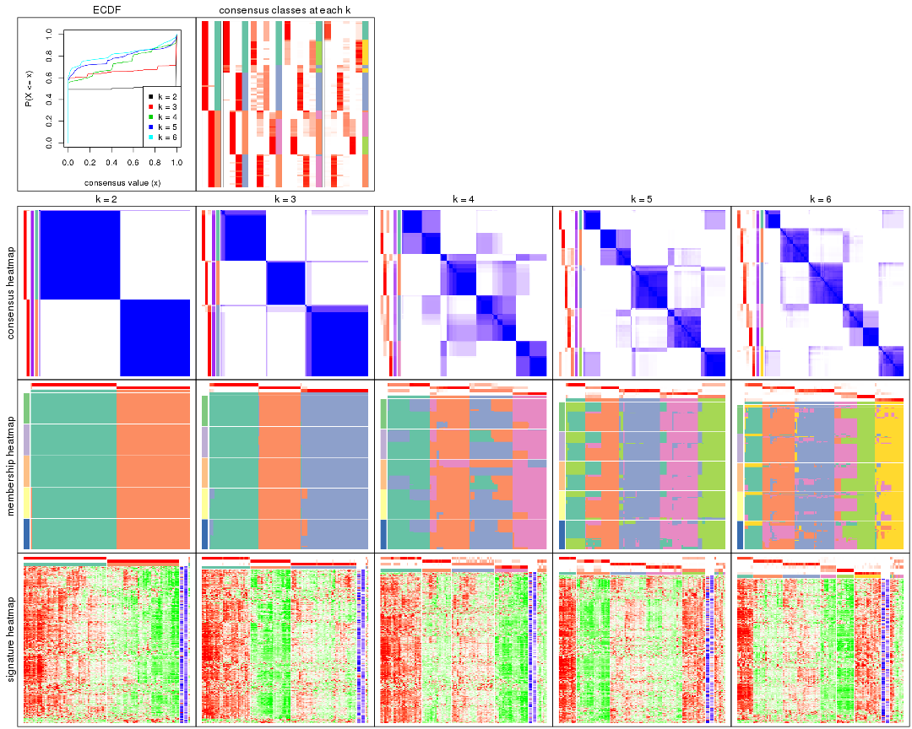
The plots are:
k and the heatmap of
predicted classes for each k.k.k.k.All the plots in panels can be made by individual functions and they are plotted later in this section.
select_partition_number() produces several plots showing different
statistics for choosing “optimized” k. There are following statistics:
k;k, the area increased is defined as \(A_k - A_{k-1}\).The detailed explanations of these statistics can be found in the cola vignette.
Generally speaking, lower PAC score, higher mean silhouette score or higher
concordance corresponds to better partition. Rand index and Jaccard index
measure how similar the current partition is compared to partition with k-1.
If they are too similar, we won't accept k is better than k-1.
select_partition_number(res)
The numeric values for all these statistics can be obtained by get_stats().
get_stats(res)
#> k 1-PAC mean_silhouette concordance area_increased Rand Jaccard
#> 2 2 1.000 0.991 0.997 0.5023 0.499 0.499
#> 3 3 0.929 0.954 0.981 0.3106 0.660 0.424
#> 4 4 0.698 0.733 0.789 0.1254 0.823 0.538
#> 5 5 0.829 0.794 0.843 0.0667 0.936 0.752
#> 6 6 0.794 0.817 0.833 0.0396 0.939 0.722
suggest_best_k() suggests the best \(k\) based on these statistics. The rules are as follows:
suggest_best_k(res)
#> [1] 3
#> attr(,"optional")
#> [1] 2
There is also optional best \(k\) = 2 that is worth to check.
Following shows the table of the partitions (You need to click the show/hide
code output link to see it). The membership matrix (columns with name p*)
is inferred by
clue::cl_consensus()
function with the SE method. Basically the value in the membership matrix
represents the probability to belong to a certain group. The finall class
label for an item is determined with the group with highest probability it
belongs to.
In get_classes() function, the entropy is calculated from the membership
matrix and the silhouette score is calculated from the consensus matrix.
cbind(get_classes(res, k = 2), get_membership(res, k = 2))
#> class entropy silhouette p1 p2
#> SRR2443263 1 0.000 0.994 1.0 0.0
#> SRR2443262 2 0.000 1.000 0.0 1.0
#> SRR2443261 2 0.000 1.000 0.0 1.0
#> SRR2443260 1 0.000 0.994 1.0 0.0
#> SRR2443259 1 0.000 0.994 1.0 0.0
#> SRR2443258 1 0.000 0.994 1.0 0.0
#> SRR2443257 2 0.000 1.000 0.0 1.0
#> SRR2443256 1 0.000 0.994 1.0 0.0
#> SRR2443255 1 0.000 0.994 1.0 0.0
#> SRR2443254 1 0.000 0.994 1.0 0.0
#> SRR2443253 2 0.000 1.000 0.0 1.0
#> SRR2443251 2 0.000 1.000 0.0 1.0
#> SRR2443250 2 0.000 1.000 0.0 1.0
#> SRR2443249 2 0.000 1.000 0.0 1.0
#> SRR2443252 1 0.000 0.994 1.0 0.0
#> SRR2443247 1 0.000 0.994 1.0 0.0
#> SRR2443246 1 0.000 0.994 1.0 0.0
#> SRR2443248 2 0.000 1.000 0.0 1.0
#> SRR2443244 2 0.000 1.000 0.0 1.0
#> SRR2443245 1 0.000 0.994 1.0 0.0
#> SRR2443243 1 0.000 0.994 1.0 0.0
#> SRR2443242 2 0.000 1.000 0.0 1.0
#> SRR2443241 1 0.000 0.994 1.0 0.0
#> SRR2443240 1 0.000 0.994 1.0 0.0
#> SRR2443239 2 0.000 1.000 0.0 1.0
#> SRR2443238 1 0.000 0.994 1.0 0.0
#> SRR2443237 2 0.000 1.000 0.0 1.0
#> SRR2443236 1 0.000 0.994 1.0 0.0
#> SRR2443235 1 0.000 0.994 1.0 0.0
#> SRR2443233 1 0.000 0.994 1.0 0.0
#> SRR2443234 1 0.000 0.994 1.0 0.0
#> SRR2443232 1 0.000 0.994 1.0 0.0
#> SRR2443231 1 0.000 0.994 1.0 0.0
#> SRR2443230 1 0.000 0.994 1.0 0.0
#> SRR2443229 1 0.000 0.994 1.0 0.0
#> SRR2443228 2 0.000 1.000 0.0 1.0
#> SRR2443227 1 0.000 0.994 1.0 0.0
#> SRR2443226 1 0.000 0.994 1.0 0.0
#> SRR2443225 1 0.971 0.333 0.6 0.4
#> SRR2443223 2 0.000 1.000 0.0 1.0
#> SRR2443224 2 0.000 1.000 0.0 1.0
#> SRR2443222 2 0.000 1.000 0.0 1.0
#> SRR2443221 2 0.000 1.000 0.0 1.0
#> SRR2443219 2 0.000 1.000 0.0 1.0
#> SRR2443220 2 0.000 1.000 0.0 1.0
#> SRR2443218 2 0.000 1.000 0.0 1.0
#> SRR2443217 1 0.000 0.994 1.0 0.0
#> SRR2443216 1 0.000 0.994 1.0 0.0
#> SRR2443215 2 0.000 1.000 0.0 1.0
#> SRR2443214 1 0.000 0.994 1.0 0.0
#> SRR2443213 1 0.000 0.994 1.0 0.0
#> SRR2443212 2 0.000 1.000 0.0 1.0
#> SRR2443211 2 0.000 1.000 0.0 1.0
#> SRR2443210 2 0.000 1.000 0.0 1.0
#> SRR2443209 1 0.000 0.994 1.0 0.0
#> SRR2443208 1 0.000 0.994 1.0 0.0
#> SRR2443207 1 0.000 0.994 1.0 0.0
#> SRR2443206 2 0.000 1.000 0.0 1.0
#> SRR2443205 2 0.000 1.000 0.0 1.0
#> SRR2443204 1 0.000 0.994 1.0 0.0
#> SRR2443203 1 0.000 0.994 1.0 0.0
#> SRR2443202 2 0.000 1.000 0.0 1.0
#> SRR2443201 2 0.000 1.000 0.0 1.0
#> SRR2443200 2 0.000 1.000 0.0 1.0
#> SRR2443199 2 0.000 1.000 0.0 1.0
#> SRR2443197 2 0.000 1.000 0.0 1.0
#> SRR2443196 2 0.000 1.000 0.0 1.0
#> SRR2443198 2 0.000 1.000 0.0 1.0
#> SRR2443195 1 0.000 0.994 1.0 0.0
#> SRR2443194 1 0.000 0.994 1.0 0.0
#> SRR2443193 1 0.000 0.994 1.0 0.0
#> SRR2443191 1 0.000 0.994 1.0 0.0
#> SRR2443192 2 0.000 1.000 0.0 1.0
#> SRR2443190 1 0.000 0.994 1.0 0.0
#> SRR2443189 1 0.000 0.994 1.0 0.0
#> SRR2443188 1 0.000 0.994 1.0 0.0
#> SRR2443186 2 0.000 1.000 0.0 1.0
#> SRR2443187 2 0.000 1.000 0.0 1.0
#> SRR2443185 2 0.000 1.000 0.0 1.0
#> SRR2443184 1 0.000 0.994 1.0 0.0
#> SRR2443183 1 0.000 0.994 1.0 0.0
#> SRR2443182 1 0.000 0.994 1.0 0.0
#> SRR2443181 2 0.000 1.000 0.0 1.0
#> SRR2443180 2 0.000 1.000 0.0 1.0
#> SRR2443179 2 0.000 1.000 0.0 1.0
#> SRR2443178 2 0.000 1.000 0.0 1.0
#> SRR2443177 1 0.000 0.994 1.0 0.0
#> SRR2443176 1 0.000 0.994 1.0 0.0
#> SRR2443175 1 0.000 0.994 1.0 0.0
#> SRR2443174 1 0.000 0.994 1.0 0.0
#> SRR2443173 2 0.000 1.000 0.0 1.0
#> SRR2443172 2 0.000 1.000 0.0 1.0
#> SRR2443171 1 0.000 0.994 1.0 0.0
#> SRR2443170 1 0.000 0.994 1.0 0.0
#> SRR2443169 1 0.000 0.994 1.0 0.0
#> SRR2443168 1 0.000 0.994 1.0 0.0
#> SRR2443167 2 0.000 1.000 0.0 1.0
#> SRR2443166 1 0.000 0.994 1.0 0.0
#> SRR2443165 2 0.000 1.000 0.0 1.0
#> SRR2443164 2 0.000 1.000 0.0 1.0
#> SRR2443163 2 0.000 1.000 0.0 1.0
#> SRR2443162 1 0.000 0.994 1.0 0.0
#> SRR2443161 1 0.000 0.994 1.0 0.0
#> SRR2443160 2 0.000 1.000 0.0 1.0
#> SRR2443159 2 0.000 1.000 0.0 1.0
#> SRR2443158 1 0.000 0.994 1.0 0.0
#> SRR2443157 1 0.000 0.994 1.0 0.0
#> SRR2443156 1 0.000 0.994 1.0 0.0
#> SRR2443155 1 0.000 0.994 1.0 0.0
#> SRR2443154 1 0.000 0.994 1.0 0.0
#> SRR2443153 1 0.000 0.994 1.0 0.0
#> SRR2443152 2 0.000 1.000 0.0 1.0
#> SRR2443151 2 0.000 1.000 0.0 1.0
#> SRR2443150 2 0.000 1.000 0.0 1.0
#> SRR2443148 2 0.000 1.000 0.0 1.0
#> SRR2443147 2 0.000 1.000 0.0 1.0
#> SRR2443149 1 0.000 0.994 1.0 0.0
cbind(get_classes(res, k = 3), get_membership(res, k = 3))
#> class entropy silhouette p1 p2 p3
#> SRR2443263 3 0.000 0.976 0.000 0.00 1.000
#> SRR2443262 2 0.000 0.987 0.000 1.00 0.000
#> SRR2443261 2 0.000 0.987 0.000 1.00 0.000
#> SRR2443260 3 0.000 0.976 0.000 0.00 1.000
#> SRR2443259 3 0.000 0.976 0.000 0.00 1.000
#> SRR2443258 1 0.226 0.913 0.932 0.00 0.068
#> SRR2443257 2 0.000 0.987 0.000 1.00 0.000
#> SRR2443256 3 0.000 0.976 0.000 0.00 1.000
#> SRR2443255 3 0.000 0.976 0.000 0.00 1.000
#> SRR2443254 3 0.000 0.976 0.000 0.00 1.000
#> SRR2443253 2 0.000 0.987 0.000 1.00 0.000
#> SRR2443251 3 0.000 0.976 0.000 0.00 1.000
#> SRR2443250 2 0.000 0.987 0.000 1.00 0.000
#> SRR2443249 2 0.000 0.987 0.000 1.00 0.000
#> SRR2443252 3 0.000 0.976 0.000 0.00 1.000
#> SRR2443247 1 0.000 0.977 1.000 0.00 0.000
#> SRR2443246 1 0.000 0.977 1.000 0.00 0.000
#> SRR2443248 3 0.000 0.976 0.000 0.00 1.000
#> SRR2443244 3 0.000 0.976 0.000 0.00 1.000
#> SRR2443245 1 0.000 0.977 1.000 0.00 0.000
#> SRR2443243 1 0.000 0.977 1.000 0.00 0.000
#> SRR2443242 3 0.000 0.976 0.000 0.00 1.000
#> SRR2443241 3 0.000 0.976 0.000 0.00 1.000
#> SRR2443240 3 0.000 0.976 0.000 0.00 1.000
#> SRR2443239 3 0.429 0.780 0.000 0.18 0.820
#> SRR2443238 1 0.000 0.977 1.000 0.00 0.000
#> SRR2443237 3 0.000 0.976 0.000 0.00 1.000
#> SRR2443236 1 0.000 0.977 1.000 0.00 0.000
#> SRR2443235 1 0.000 0.977 1.000 0.00 0.000
#> SRR2443233 1 0.000 0.977 1.000 0.00 0.000
#> SRR2443234 1 0.000 0.977 1.000 0.00 0.000
#> SRR2443232 1 0.000 0.977 1.000 0.00 0.000
#> SRR2443231 1 0.000 0.977 1.000 0.00 0.000
#> SRR2443230 1 0.000 0.977 1.000 0.00 0.000
#> SRR2443229 1 0.424 0.797 0.824 0.00 0.176
#> SRR2443228 2 0.000 0.987 0.000 1.00 0.000
#> SRR2443227 1 0.000 0.977 1.000 0.00 0.000
#> SRR2443226 1 0.000 0.977 1.000 0.00 0.000
#> SRR2443225 3 0.000 0.976 0.000 0.00 1.000
#> SRR2443223 3 0.000 0.976 0.000 0.00 1.000
#> SRR2443224 3 0.000 0.976 0.000 0.00 1.000
#> SRR2443222 2 0.000 0.987 0.000 1.00 0.000
#> SRR2443221 2 0.000 0.987 0.000 1.00 0.000
#> SRR2443219 2 0.000 0.987 0.000 1.00 0.000
#> SRR2443220 2 0.000 0.987 0.000 1.00 0.000
#> SRR2443218 2 0.000 0.987 0.000 1.00 0.000
#> SRR2443217 3 0.000 0.976 0.000 0.00 1.000
#> SRR2443216 3 0.000 0.976 0.000 0.00 1.000
#> SRR2443215 3 0.000 0.976 0.000 0.00 1.000
#> SRR2443214 1 0.000 0.977 1.000 0.00 0.000
#> SRR2443213 1 0.000 0.977 1.000 0.00 0.000
#> SRR2443212 3 0.000 0.976 0.000 0.00 1.000
#> SRR2443211 3 0.000 0.976 0.000 0.00 1.000
#> SRR2443210 2 0.000 0.987 0.000 1.00 0.000
#> SRR2443209 3 0.000 0.976 0.000 0.00 1.000
#> SRR2443208 3 0.000 0.976 0.000 0.00 1.000
#> SRR2443207 3 0.000 0.976 0.000 0.00 1.000
#> SRR2443206 3 0.429 0.780 0.000 0.18 0.820
#> SRR2443205 3 0.000 0.976 0.000 0.00 1.000
#> SRR2443204 1 0.000 0.977 1.000 0.00 0.000
#> SRR2443203 3 0.000 0.976 0.000 0.00 1.000
#> SRR2443202 3 0.000 0.976 0.000 0.00 1.000
#> SRR2443201 3 0.000 0.976 0.000 0.00 1.000
#> SRR2443200 2 0.000 0.987 0.000 1.00 0.000
#> SRR2443199 2 0.000 0.987 0.000 1.00 0.000
#> SRR2443197 2 0.000 0.987 0.000 1.00 0.000
#> SRR2443196 2 0.000 0.987 0.000 1.00 0.000
#> SRR2443198 3 0.429 0.780 0.000 0.18 0.820
#> SRR2443195 1 0.000 0.977 1.000 0.00 0.000
#> SRR2443194 3 0.000 0.976 0.000 0.00 1.000
#> SRR2443193 1 0.000 0.977 1.000 0.00 0.000
#> SRR2443191 3 0.000 0.976 0.000 0.00 1.000
#> SRR2443192 3 0.000 0.976 0.000 0.00 1.000
#> SRR2443190 1 0.000 0.977 1.000 0.00 0.000
#> SRR2443189 1 0.000 0.977 1.000 0.00 0.000
#> SRR2443188 1 0.000 0.977 1.000 0.00 0.000
#> SRR2443186 3 0.000 0.976 0.000 0.00 1.000
#> SRR2443187 3 0.000 0.976 0.000 0.00 1.000
#> SRR2443185 3 0.000 0.976 0.000 0.00 1.000
#> SRR2443184 3 0.000 0.976 0.000 0.00 1.000
#> SRR2443183 1 0.000 0.977 1.000 0.00 0.000
#> SRR2443182 1 0.562 0.577 0.692 0.00 0.308
#> SRR2443181 2 0.595 0.412 0.000 0.64 0.360
#> SRR2443180 2 0.000 0.987 0.000 1.00 0.000
#> SRR2443179 2 0.000 0.987 0.000 1.00 0.000
#> SRR2443178 3 0.429 0.780 0.000 0.18 0.820
#> SRR2443177 1 0.000 0.977 1.000 0.00 0.000
#> SRR2443176 3 0.614 0.284 0.404 0.00 0.596
#> SRR2443175 1 0.000 0.977 1.000 0.00 0.000
#> SRR2443174 1 0.000 0.977 1.000 0.00 0.000
#> SRR2443173 2 0.000 0.987 0.000 1.00 0.000
#> SRR2443172 2 0.000 0.987 0.000 1.00 0.000
#> SRR2443171 1 0.000 0.977 1.000 0.00 0.000
#> SRR2443170 1 0.000 0.977 1.000 0.00 0.000
#> SRR2443169 1 0.000 0.977 1.000 0.00 0.000
#> SRR2443168 3 0.000 0.976 0.000 0.00 1.000
#> SRR2443167 2 0.000 0.987 0.000 1.00 0.000
#> SRR2443166 1 0.000 0.977 1.000 0.00 0.000
#> SRR2443165 3 0.000 0.976 0.000 0.00 1.000
#> SRR2443164 2 0.000 0.987 0.000 1.00 0.000
#> SRR2443163 3 0.000 0.976 0.000 0.00 1.000
#> SRR2443162 3 0.000 0.976 0.000 0.00 1.000
#> SRR2443161 3 0.000 0.976 0.000 0.00 1.000
#> SRR2443160 2 0.000 0.987 0.000 1.00 0.000
#> SRR2443159 2 0.000 0.987 0.000 1.00 0.000
#> SRR2443158 3 0.000 0.976 0.000 0.00 1.000
#> SRR2443157 1 0.000 0.977 1.000 0.00 0.000
#> SRR2443156 3 0.000 0.976 0.000 0.00 1.000
#> SRR2443155 1 0.418 0.803 0.828 0.00 0.172
#> SRR2443154 3 0.000 0.976 0.000 0.00 1.000
#> SRR2443153 1 0.000 0.977 1.000 0.00 0.000
#> SRR2443152 2 0.000 0.987 0.000 1.00 0.000
#> SRR2443151 2 0.000 0.987 0.000 1.00 0.000
#> SRR2443150 2 0.000 0.987 0.000 1.00 0.000
#> SRR2443148 2 0.000 0.987 0.000 1.00 0.000
#> SRR2443147 2 0.000 0.987 0.000 1.00 0.000
#> SRR2443149 3 0.000 0.976 0.000 0.00 1.000
cbind(get_classes(res, k = 4), get_membership(res, k = 4))
#> class entropy silhouette p1 p2 p3 p4
#> SRR2443263 3 0.4866 0.6153 0.000 0.404 0.596 0.000
#> SRR2443262 4 0.3873 0.8151 0.000 0.228 0.000 0.772
#> SRR2443261 2 0.4679 0.2566 0.000 0.648 0.000 0.352
#> SRR2443260 3 0.4888 0.6080 0.000 0.412 0.588 0.000
#> SRR2443259 3 0.6808 0.7365 0.236 0.164 0.600 0.000
#> SRR2443258 3 0.4855 0.6915 0.400 0.000 0.600 0.000
#> SRR2443257 4 0.3873 0.8151 0.000 0.228 0.000 0.772
#> SRR2443256 3 0.4855 0.6915 0.400 0.000 0.600 0.000
#> SRR2443255 3 0.6592 0.7040 0.116 0.284 0.600 0.000
#> SRR2443254 3 0.4888 0.6080 0.000 0.412 0.588 0.000
#> SRR2443253 4 0.0000 0.8739 0.000 0.000 0.000 1.000
#> SRR2443251 2 0.0000 0.8485 0.000 1.000 0.000 0.000
#> SRR2443250 4 0.3873 0.8151 0.000 0.228 0.000 0.772
#> SRR2443249 4 0.3873 0.8151 0.000 0.228 0.000 0.772
#> SRR2443252 3 0.4888 0.6080 0.000 0.412 0.588 0.000
#> SRR2443247 1 0.4855 0.7833 0.600 0.000 0.400 0.000
#> SRR2443246 1 0.0469 0.7336 0.988 0.000 0.012 0.000
#> SRR2443248 2 0.0000 0.8485 0.000 1.000 0.000 0.000
#> SRR2443244 2 0.0000 0.8485 0.000 1.000 0.000 0.000
#> SRR2443245 1 0.0469 0.7336 0.988 0.000 0.012 0.000
#> SRR2443243 1 0.0469 0.7336 0.988 0.000 0.012 0.000
#> SRR2443242 2 0.2149 0.7607 0.000 0.912 0.088 0.000
#> SRR2443241 3 0.6852 0.7343 0.208 0.192 0.600 0.000
#> SRR2443240 3 0.4888 0.6080 0.000 0.412 0.588 0.000
#> SRR2443239 2 0.0000 0.8485 0.000 1.000 0.000 0.000
#> SRR2443238 1 0.0469 0.7336 0.988 0.000 0.012 0.000
#> SRR2443237 2 0.2149 0.7607 0.000 0.912 0.088 0.000
#> SRR2443236 1 0.0469 0.7336 0.988 0.000 0.012 0.000
#> SRR2443235 1 0.4250 0.7722 0.724 0.000 0.276 0.000
#> SRR2443233 1 0.4855 0.7833 0.600 0.000 0.400 0.000
#> SRR2443234 1 0.4855 0.7833 0.600 0.000 0.400 0.000
#> SRR2443232 1 0.4855 0.7833 0.600 0.000 0.400 0.000
#> SRR2443231 1 0.4855 0.7833 0.600 0.000 0.400 0.000
#> SRR2443230 1 0.4855 0.7833 0.600 0.000 0.400 0.000
#> SRR2443229 3 0.4855 0.6915 0.400 0.000 0.600 0.000
#> SRR2443228 4 0.0000 0.8739 0.000 0.000 0.000 1.000
#> SRR2443227 1 0.4855 0.7833 0.600 0.000 0.400 0.000
#> SRR2443226 1 0.0469 0.7336 0.988 0.000 0.012 0.000
#> SRR2443225 3 0.4888 0.6080 0.000 0.412 0.588 0.000
#> SRR2443223 2 0.0000 0.8485 0.000 1.000 0.000 0.000
#> SRR2443224 2 0.3873 0.4730 0.000 0.772 0.228 0.000
#> SRR2443222 4 0.0000 0.8739 0.000 0.000 0.000 1.000
#> SRR2443221 4 0.0000 0.8739 0.000 0.000 0.000 1.000
#> SRR2443219 4 0.3873 0.8151 0.000 0.228 0.000 0.772
#> SRR2443220 2 0.4888 0.0667 0.000 0.588 0.000 0.412
#> SRR2443218 4 0.0000 0.8739 0.000 0.000 0.000 1.000
#> SRR2443217 3 0.4888 0.6080 0.000 0.412 0.588 0.000
#> SRR2443216 3 0.5244 0.6994 0.388 0.012 0.600 0.000
#> SRR2443215 2 0.0000 0.8485 0.000 1.000 0.000 0.000
#> SRR2443214 1 0.0469 0.7336 0.988 0.000 0.012 0.000
#> SRR2443213 1 0.4855 0.7833 0.600 0.000 0.400 0.000
#> SRR2443212 2 0.1211 0.8173 0.000 0.960 0.040 0.000
#> SRR2443211 2 0.1211 0.8173 0.000 0.960 0.040 0.000
#> SRR2443210 4 0.1022 0.8686 0.000 0.032 0.000 0.968
#> SRR2443209 3 0.6852 0.7343 0.208 0.192 0.600 0.000
#> SRR2443208 3 0.6592 0.7040 0.116 0.284 0.600 0.000
#> SRR2443207 3 0.4888 0.6080 0.000 0.412 0.588 0.000
#> SRR2443206 2 0.0000 0.8485 0.000 1.000 0.000 0.000
#> SRR2443205 2 0.1022 0.8243 0.000 0.968 0.032 0.000
#> SRR2443204 1 0.0188 0.7384 0.996 0.000 0.004 0.000
#> SRR2443203 3 0.4855 0.6915 0.400 0.000 0.600 0.000
#> SRR2443202 2 0.0000 0.8485 0.000 1.000 0.000 0.000
#> SRR2443201 2 0.3873 0.4730 0.000 0.772 0.228 0.000
#> SRR2443200 4 0.0000 0.8739 0.000 0.000 0.000 1.000
#> SRR2443199 4 0.0000 0.8739 0.000 0.000 0.000 1.000
#> SRR2443197 2 0.4888 0.0667 0.000 0.588 0.000 0.412
#> SRR2443196 4 0.3873 0.8151 0.000 0.228 0.000 0.772
#> SRR2443198 2 0.0000 0.8485 0.000 1.000 0.000 0.000
#> SRR2443195 3 0.4996 0.5593 0.484 0.000 0.516 0.000
#> SRR2443194 3 0.4888 0.6080 0.000 0.412 0.588 0.000
#> SRR2443193 1 0.0469 0.7336 0.988 0.000 0.012 0.000
#> SRR2443191 3 0.4888 0.6080 0.000 0.412 0.588 0.000
#> SRR2443192 2 0.0000 0.8485 0.000 1.000 0.000 0.000
#> SRR2443190 1 0.4855 0.7833 0.600 0.000 0.400 0.000
#> SRR2443189 1 0.0469 0.7336 0.988 0.000 0.012 0.000
#> SRR2443188 1 0.4855 0.7833 0.600 0.000 0.400 0.000
#> SRR2443186 2 0.0000 0.8485 0.000 1.000 0.000 0.000
#> SRR2443187 2 0.0000 0.8485 0.000 1.000 0.000 0.000
#> SRR2443185 2 0.0000 0.8485 0.000 1.000 0.000 0.000
#> SRR2443184 3 0.6641 0.7076 0.124 0.276 0.600 0.000
#> SRR2443183 1 0.4855 0.7833 0.600 0.000 0.400 0.000
#> SRR2443182 3 0.4855 0.6915 0.400 0.000 0.600 0.000
#> SRR2443181 2 0.0000 0.8485 0.000 1.000 0.000 0.000
#> SRR2443180 4 0.0000 0.8739 0.000 0.000 0.000 1.000
#> SRR2443179 4 0.0000 0.8739 0.000 0.000 0.000 1.000
#> SRR2443178 2 0.0000 0.8485 0.000 1.000 0.000 0.000
#> SRR2443177 1 0.0469 0.7336 0.988 0.000 0.012 0.000
#> SRR2443176 3 0.4855 0.6915 0.400 0.000 0.600 0.000
#> SRR2443175 1 0.4855 0.7833 0.600 0.000 0.400 0.000
#> SRR2443174 1 0.4855 0.7833 0.600 0.000 0.400 0.000
#> SRR2443173 4 0.3873 0.8151 0.000 0.228 0.000 0.772
#> SRR2443172 4 0.3873 0.8151 0.000 0.228 0.000 0.772
#> SRR2443171 1 0.0000 0.7376 1.000 0.000 0.000 0.000
#> SRR2443170 1 0.0469 0.7336 0.988 0.000 0.012 0.000
#> SRR2443169 1 0.4855 0.7833 0.600 0.000 0.400 0.000
#> SRR2443168 3 0.4855 0.6915 0.400 0.000 0.600 0.000
#> SRR2443167 4 0.4564 0.6604 0.000 0.328 0.000 0.672
#> SRR2443166 1 0.0000 0.7376 1.000 0.000 0.000 0.000
#> SRR2443165 2 0.0000 0.8485 0.000 1.000 0.000 0.000
#> SRR2443164 4 0.0000 0.8739 0.000 0.000 0.000 1.000
#> SRR2443163 2 0.2216 0.7548 0.000 0.908 0.092 0.000
#> SRR2443162 3 0.6797 0.7229 0.160 0.240 0.600 0.000
#> SRR2443161 3 0.4888 0.6080 0.000 0.412 0.588 0.000
#> SRR2443160 4 0.3873 0.8151 0.000 0.228 0.000 0.772
#> SRR2443159 4 0.3873 0.8151 0.000 0.228 0.000 0.772
#> SRR2443158 3 0.5244 0.6994 0.388 0.012 0.600 0.000
#> SRR2443157 1 0.0469 0.7336 0.988 0.000 0.012 0.000
#> SRR2443156 3 0.6840 0.7370 0.220 0.180 0.600 0.000
#> SRR2443155 3 0.4855 0.6915 0.400 0.000 0.600 0.000
#> SRR2443154 3 0.4855 0.6915 0.400 0.000 0.600 0.000
#> SRR2443153 1 0.4855 0.7833 0.600 0.000 0.400 0.000
#> SRR2443152 2 0.4888 0.0667 0.000 0.588 0.000 0.412
#> SRR2443151 4 0.0000 0.8739 0.000 0.000 0.000 1.000
#> SRR2443150 2 0.4888 0.0667 0.000 0.588 0.000 0.412
#> SRR2443148 4 0.0000 0.8739 0.000 0.000 0.000 1.000
#> SRR2443147 4 0.0000 0.8739 0.000 0.000 0.000 1.000
#> SRR2443149 3 0.5244 0.6994 0.388 0.012 0.600 0.000
cbind(get_classes(res, k = 5), get_membership(res, k = 5))
#> class entropy silhouette p1 p2 p3 p4 p5
#> SRR2443263 3 0.0609 0.9130 0.000 0.000 0.980 0.020 0.000
#> SRR2443262 2 0.5912 0.7139 0.000 0.536 0.000 0.116 0.348
#> SRR2443261 4 0.4101 0.5462 0.000 0.000 0.000 0.628 0.372
#> SRR2443260 3 0.0609 0.9130 0.000 0.000 0.980 0.020 0.000
#> SRR2443259 3 0.0703 0.9090 0.000 0.000 0.976 0.000 0.024
#> SRR2443258 5 0.4114 0.3640 0.000 0.000 0.376 0.000 0.624
#> SRR2443257 2 0.5912 0.7139 0.000 0.536 0.000 0.116 0.348
#> SRR2443256 3 0.1043 0.9020 0.000 0.000 0.960 0.000 0.040
#> SRR2443255 3 0.0000 0.9160 0.000 0.000 1.000 0.000 0.000
#> SRR2443254 3 0.0609 0.9130 0.000 0.000 0.980 0.020 0.000
#> SRR2443253 2 0.0000 0.7720 0.000 1.000 0.000 0.000 0.000
#> SRR2443251 4 0.1851 0.8249 0.000 0.000 0.000 0.912 0.088
#> SRR2443250 2 0.5912 0.7139 0.000 0.536 0.000 0.116 0.348
#> SRR2443249 2 0.5912 0.7139 0.000 0.536 0.000 0.116 0.348
#> SRR2443252 3 0.0609 0.9130 0.000 0.000 0.980 0.020 0.000
#> SRR2443247 1 0.0000 0.9497 1.000 0.000 0.000 0.000 0.000
#> SRR2443246 5 0.4511 0.8627 0.356 0.000 0.016 0.000 0.628
#> SRR2443248 4 0.1121 0.8599 0.000 0.000 0.044 0.956 0.000
#> SRR2443244 4 0.0290 0.8575 0.000 0.000 0.008 0.992 0.000
#> SRR2443245 5 0.4599 0.8609 0.356 0.000 0.020 0.000 0.624
#> SRR2443243 5 0.4511 0.8627 0.356 0.000 0.016 0.000 0.628
#> SRR2443242 4 0.2824 0.8185 0.000 0.000 0.116 0.864 0.020
#> SRR2443241 3 0.0290 0.9156 0.000 0.000 0.992 0.000 0.008
#> SRR2443240 3 0.1544 0.8802 0.000 0.000 0.932 0.068 0.000
#> SRR2443239 4 0.0000 0.8551 0.000 0.000 0.000 1.000 0.000
#> SRR2443238 5 0.4511 0.8627 0.356 0.000 0.016 0.000 0.628
#> SRR2443237 4 0.2824 0.8185 0.000 0.000 0.116 0.864 0.020
#> SRR2443236 5 0.4511 0.8627 0.356 0.000 0.016 0.000 0.628
#> SRR2443235 5 0.4182 0.7891 0.400 0.000 0.000 0.000 0.600
#> SRR2443233 1 0.1671 0.8409 0.924 0.000 0.000 0.000 0.076
#> SRR2443234 1 0.0000 0.9497 1.000 0.000 0.000 0.000 0.000
#> SRR2443232 1 0.4015 -0.0307 0.652 0.000 0.000 0.000 0.348
#> SRR2443231 1 0.0000 0.9497 1.000 0.000 0.000 0.000 0.000
#> SRR2443230 1 0.0000 0.9497 1.000 0.000 0.000 0.000 0.000
#> SRR2443229 5 0.4101 0.3660 0.000 0.000 0.372 0.000 0.628
#> SRR2443228 2 0.0000 0.7720 0.000 1.000 0.000 0.000 0.000
#> SRR2443227 1 0.0000 0.9497 1.000 0.000 0.000 0.000 0.000
#> SRR2443226 5 0.4599 0.8609 0.356 0.000 0.020 0.000 0.624
#> SRR2443225 3 0.2230 0.8293 0.000 0.000 0.884 0.116 0.000
#> SRR2443223 4 0.0963 0.8611 0.000 0.000 0.036 0.964 0.000
#> SRR2443224 3 0.4249 0.1930 0.000 0.000 0.568 0.432 0.000
#> SRR2443222 2 0.0000 0.7720 0.000 1.000 0.000 0.000 0.000
#> SRR2443221 2 0.0000 0.7720 0.000 1.000 0.000 0.000 0.000
#> SRR2443219 2 0.5912 0.7139 0.000 0.536 0.000 0.116 0.348
#> SRR2443220 4 0.4367 0.5330 0.000 0.008 0.000 0.620 0.372
#> SRR2443218 2 0.0000 0.7720 0.000 1.000 0.000 0.000 0.000
#> SRR2443217 3 0.0609 0.9130 0.000 0.000 0.980 0.020 0.000
#> SRR2443216 3 0.0880 0.9054 0.000 0.000 0.968 0.000 0.032
#> SRR2443215 4 0.0963 0.8611 0.000 0.000 0.036 0.964 0.000
#> SRR2443214 5 0.4511 0.8627 0.356 0.000 0.016 0.000 0.628
#> SRR2443213 1 0.0000 0.9497 1.000 0.000 0.000 0.000 0.000
#> SRR2443212 4 0.1792 0.8425 0.000 0.000 0.084 0.916 0.000
#> SRR2443211 4 0.1792 0.8425 0.000 0.000 0.084 0.916 0.000
#> SRR2443210 2 0.5129 0.7330 0.000 0.616 0.000 0.056 0.328
#> SRR2443209 3 0.0290 0.9156 0.000 0.000 0.992 0.000 0.008
#> SRR2443208 3 0.0000 0.9160 0.000 0.000 1.000 0.000 0.000
#> SRR2443207 3 0.1197 0.8960 0.000 0.000 0.952 0.048 0.000
#> SRR2443206 4 0.0000 0.8551 0.000 0.000 0.000 1.000 0.000
#> SRR2443205 4 0.1792 0.8425 0.000 0.000 0.084 0.916 0.000
#> SRR2443204 5 0.4599 0.8609 0.356 0.000 0.020 0.000 0.624
#> SRR2443203 3 0.0963 0.9026 0.000 0.000 0.964 0.000 0.036
#> SRR2443202 4 0.1725 0.8602 0.000 0.000 0.044 0.936 0.020
#> SRR2443201 4 0.4686 0.3839 0.000 0.000 0.384 0.596 0.020
#> SRR2443200 2 0.0000 0.7720 0.000 1.000 0.000 0.000 0.000
#> SRR2443199 2 0.0000 0.7720 0.000 1.000 0.000 0.000 0.000
#> SRR2443197 4 0.4367 0.5330 0.000 0.008 0.000 0.620 0.372
#> SRR2443196 2 0.5968 0.6988 0.000 0.512 0.000 0.116 0.372
#> SRR2443198 4 0.1851 0.8249 0.000 0.000 0.000 0.912 0.088
#> SRR2443195 5 0.4101 0.3660 0.000 0.000 0.372 0.000 0.628
#> SRR2443194 3 0.0609 0.9130 0.000 0.000 0.980 0.020 0.000
#> SRR2443193 5 0.4511 0.8627 0.356 0.000 0.016 0.000 0.628
#> SRR2443191 3 0.0609 0.9130 0.000 0.000 0.980 0.020 0.000
#> SRR2443192 4 0.1568 0.8610 0.000 0.000 0.036 0.944 0.020
#> SRR2443190 1 0.0000 0.9497 1.000 0.000 0.000 0.000 0.000
#> SRR2443189 5 0.4599 0.8609 0.356 0.000 0.020 0.000 0.624
#> SRR2443188 1 0.0000 0.9497 1.000 0.000 0.000 0.000 0.000
#> SRR2443186 4 0.1270 0.8576 0.000 0.000 0.052 0.948 0.000
#> SRR2443187 4 0.0963 0.8611 0.000 0.000 0.036 0.964 0.000
#> SRR2443185 4 0.1661 0.8609 0.000 0.000 0.036 0.940 0.024
#> SRR2443184 3 0.0000 0.9160 0.000 0.000 1.000 0.000 0.000
#> SRR2443183 1 0.0000 0.9497 1.000 0.000 0.000 0.000 0.000
#> SRR2443182 3 0.4138 0.3601 0.000 0.000 0.616 0.000 0.384
#> SRR2443181 4 0.0794 0.8453 0.000 0.000 0.000 0.972 0.028
#> SRR2443180 2 0.0000 0.7720 0.000 1.000 0.000 0.000 0.000
#> SRR2443179 2 0.0000 0.7720 0.000 1.000 0.000 0.000 0.000
#> SRR2443178 4 0.1270 0.8447 0.000 0.000 0.000 0.948 0.052
#> SRR2443177 5 0.4511 0.8627 0.356 0.000 0.016 0.000 0.628
#> SRR2443176 3 0.3534 0.6326 0.000 0.000 0.744 0.000 0.256
#> SRR2443175 5 0.4210 0.7653 0.412 0.000 0.000 0.000 0.588
#> SRR2443174 1 0.0000 0.9497 1.000 0.000 0.000 0.000 0.000
#> SRR2443173 2 0.6047 0.7087 0.000 0.532 0.000 0.136 0.332
#> SRR2443172 2 0.6090 0.7006 0.000 0.516 0.000 0.136 0.348
#> SRR2443171 5 0.4511 0.8627 0.356 0.000 0.016 0.000 0.628
#> SRR2443170 5 0.4511 0.8627 0.356 0.000 0.016 0.000 0.628
#> SRR2443169 1 0.0000 0.9497 1.000 0.000 0.000 0.000 0.000
#> SRR2443168 3 0.0963 0.9026 0.000 0.000 0.964 0.000 0.036
#> SRR2443167 2 0.6628 0.5428 0.000 0.408 0.000 0.220 0.372
#> SRR2443166 5 0.4599 0.8609 0.356 0.000 0.020 0.000 0.624
#> SRR2443165 4 0.1894 0.8401 0.000 0.000 0.008 0.920 0.072
#> SRR2443164 2 0.0000 0.7720 0.000 1.000 0.000 0.000 0.000
#> SRR2443163 4 0.2824 0.8185 0.000 0.000 0.116 0.864 0.020
#> SRR2443162 3 0.0000 0.9160 0.000 0.000 1.000 0.000 0.000
#> SRR2443161 3 0.0609 0.9130 0.000 0.000 0.980 0.020 0.000
#> SRR2443160 2 0.5968 0.6988 0.000 0.512 0.000 0.116 0.372
#> SRR2443159 2 0.5968 0.6988 0.000 0.512 0.000 0.116 0.372
#> SRR2443158 3 0.0880 0.9054 0.000 0.000 0.968 0.000 0.032
#> SRR2443157 5 0.4511 0.8627 0.356 0.000 0.016 0.000 0.628
#> SRR2443156 3 0.0290 0.9156 0.000 0.000 0.992 0.000 0.008
#> SRR2443155 3 0.4161 0.3388 0.000 0.000 0.608 0.000 0.392
#> SRR2443154 3 0.1043 0.9020 0.000 0.000 0.960 0.000 0.040
#> SRR2443153 1 0.0000 0.9497 1.000 0.000 0.000 0.000 0.000
#> SRR2443152 4 0.4283 0.5393 0.000 0.008 0.000 0.644 0.348
#> SRR2443151 2 0.0000 0.7720 0.000 1.000 0.000 0.000 0.000
#> SRR2443150 4 0.4283 0.5393 0.000 0.008 0.000 0.644 0.348
#> SRR2443148 2 0.0000 0.7720 0.000 1.000 0.000 0.000 0.000
#> SRR2443147 2 0.0000 0.7720 0.000 1.000 0.000 0.000 0.000
#> SRR2443149 3 0.0880 0.9054 0.000 0.000 0.968 0.000 0.032
cbind(get_classes(res, k = 6), get_membership(res, k = 6))
#> class entropy silhouette p1 p2 p3 p4 p5 p6
#> SRR2443263 3 0.0000 0.894 0.000 0.000 1.000 0.000 0.000 0.000
#> SRR2443262 4 0.4389 0.696 0.000 0.032 0.000 0.596 0.372 0.000
#> SRR2443261 4 0.3747 0.425 0.000 0.396 0.000 0.604 0.000 0.000
#> SRR2443260 3 0.0458 0.893 0.000 0.000 0.984 0.016 0.000 0.000
#> SRR2443259 3 0.1219 0.892 0.000 0.000 0.948 0.048 0.000 0.004
#> SRR2443258 6 0.3834 0.683 0.000 0.000 0.116 0.108 0.000 0.776
#> SRR2443257 4 0.4209 0.689 0.000 0.020 0.000 0.596 0.384 0.000
#> SRR2443256 3 0.2946 0.853 0.000 0.000 0.812 0.176 0.000 0.012
#> SRR2443255 3 0.0865 0.893 0.000 0.000 0.964 0.036 0.000 0.000
#> SRR2443254 3 0.0000 0.894 0.000 0.000 1.000 0.000 0.000 0.000
#> SRR2443253 5 0.0000 0.998 0.000 0.000 0.000 0.000 1.000 0.000
#> SRR2443251 2 0.2488 0.829 0.044 0.880 0.000 0.076 0.000 0.000
#> SRR2443250 4 0.4209 0.689 0.000 0.020 0.000 0.596 0.384 0.000
#> SRR2443249 4 0.4209 0.689 0.000 0.020 0.000 0.596 0.384 0.000
#> SRR2443252 3 0.0458 0.893 0.000 0.000 0.984 0.016 0.000 0.000
#> SRR2443247 1 0.4533 0.801 0.704 0.000 0.000 0.156 0.000 0.140
#> SRR2443246 6 0.2597 0.828 0.000 0.000 0.000 0.176 0.000 0.824
#> SRR2443248 2 0.0622 0.897 0.008 0.980 0.012 0.000 0.000 0.000
#> SRR2443244 2 0.0405 0.897 0.000 0.988 0.008 0.004 0.000 0.000
#> SRR2443245 6 0.0000 0.859 0.000 0.000 0.000 0.000 0.000 1.000
#> SRR2443243 6 0.2135 0.840 0.000 0.000 0.000 0.128 0.000 0.872
#> SRR2443242 2 0.2174 0.857 0.008 0.896 0.088 0.008 0.000 0.000
#> SRR2443241 3 0.2595 0.859 0.000 0.000 0.836 0.160 0.000 0.004
#> SRR2443240 3 0.2568 0.864 0.000 0.056 0.876 0.068 0.000 0.000
#> SRR2443239 2 0.0993 0.890 0.024 0.964 0.000 0.012 0.000 0.000
#> SRR2443238 6 0.0260 0.858 0.000 0.000 0.000 0.008 0.000 0.992
#> SRR2443237 2 0.3065 0.778 0.008 0.812 0.172 0.008 0.000 0.000
#> SRR2443236 6 0.3151 0.781 0.000 0.000 0.000 0.252 0.000 0.748
#> SRR2443235 6 0.2743 0.823 0.008 0.000 0.000 0.164 0.000 0.828
#> SRR2443233 1 0.5634 0.377 0.492 0.000 0.000 0.160 0.000 0.348
#> SRR2443234 1 0.2003 0.936 0.884 0.000 0.000 0.000 0.000 0.116
#> SRR2443232 6 0.5354 0.401 0.260 0.000 0.000 0.160 0.000 0.580
#> SRR2443231 1 0.2003 0.936 0.884 0.000 0.000 0.000 0.000 0.116
#> SRR2443230 1 0.2003 0.936 0.884 0.000 0.000 0.000 0.000 0.116
#> SRR2443229 6 0.4641 0.622 0.000 0.000 0.116 0.200 0.000 0.684
#> SRR2443228 5 0.0146 0.997 0.004 0.000 0.000 0.000 0.996 0.000
#> SRR2443227 1 0.2003 0.936 0.884 0.000 0.000 0.000 0.000 0.116
#> SRR2443226 6 0.0146 0.859 0.000 0.000 0.000 0.004 0.000 0.996
#> SRR2443225 3 0.2146 0.805 0.004 0.116 0.880 0.000 0.000 0.000
#> SRR2443223 2 0.0508 0.897 0.004 0.984 0.012 0.000 0.000 0.000
#> SRR2443224 2 0.4064 0.491 0.016 0.624 0.360 0.000 0.000 0.000
#> SRR2443222 5 0.0146 0.997 0.004 0.000 0.000 0.000 0.996 0.000
#> SRR2443221 5 0.0146 0.997 0.004 0.000 0.000 0.000 0.996 0.000
#> SRR2443219 4 0.4209 0.689 0.000 0.020 0.000 0.596 0.384 0.000
#> SRR2443220 4 0.4159 0.417 0.016 0.396 0.000 0.588 0.000 0.000
#> SRR2443218 5 0.0000 0.998 0.000 0.000 0.000 0.000 1.000 0.000
#> SRR2443217 3 0.0000 0.894 0.000 0.000 1.000 0.000 0.000 0.000
#> SRR2443216 3 0.2250 0.881 0.000 0.000 0.896 0.064 0.000 0.040
#> SRR2443215 2 0.0820 0.897 0.016 0.972 0.012 0.000 0.000 0.000
#> SRR2443214 6 0.0000 0.859 0.000 0.000 0.000 0.000 0.000 1.000
#> SRR2443213 1 0.2003 0.936 0.884 0.000 0.000 0.000 0.000 0.116
#> SRR2443212 2 0.0972 0.895 0.008 0.964 0.028 0.000 0.000 0.000
#> SRR2443211 2 0.1116 0.895 0.008 0.960 0.028 0.004 0.000 0.000
#> SRR2443210 4 0.4715 0.625 0.032 0.008 0.000 0.544 0.416 0.000
#> SRR2443209 3 0.2558 0.860 0.000 0.000 0.840 0.156 0.000 0.004
#> SRR2443208 3 0.0632 0.894 0.000 0.000 0.976 0.024 0.000 0.000
#> SRR2443207 3 0.1528 0.868 0.000 0.048 0.936 0.016 0.000 0.000
#> SRR2443206 2 0.1225 0.885 0.036 0.952 0.000 0.012 0.000 0.000
#> SRR2443205 2 0.1232 0.895 0.016 0.956 0.024 0.004 0.000 0.000
#> SRR2443204 6 0.0790 0.853 0.000 0.000 0.000 0.032 0.000 0.968
#> SRR2443203 3 0.2420 0.879 0.000 0.000 0.884 0.076 0.000 0.040
#> SRR2443202 2 0.0881 0.895 0.008 0.972 0.012 0.008 0.000 0.000
#> SRR2443201 2 0.4046 0.483 0.008 0.620 0.368 0.004 0.000 0.000
#> SRR2443200 5 0.0146 0.997 0.004 0.000 0.000 0.000 0.996 0.000
#> SRR2443199 5 0.0000 0.998 0.000 0.000 0.000 0.000 1.000 0.000
#> SRR2443197 4 0.4851 0.387 0.060 0.404 0.000 0.536 0.000 0.000
#> SRR2443196 4 0.5475 0.673 0.060 0.032 0.000 0.536 0.372 0.000
#> SRR2443198 2 0.2488 0.829 0.044 0.880 0.000 0.076 0.000 0.000
#> SRR2443195 6 0.2357 0.759 0.000 0.000 0.116 0.012 0.000 0.872
#> SRR2443194 3 0.0291 0.892 0.004 0.004 0.992 0.000 0.000 0.000
#> SRR2443193 6 0.0260 0.859 0.000 0.000 0.000 0.008 0.000 0.992
#> SRR2443191 3 0.2135 0.869 0.000 0.000 0.872 0.128 0.000 0.000
#> SRR2443192 2 0.0881 0.895 0.008 0.972 0.012 0.008 0.000 0.000
#> SRR2443190 1 0.2003 0.936 0.884 0.000 0.000 0.000 0.000 0.116
#> SRR2443189 6 0.0000 0.859 0.000 0.000 0.000 0.000 0.000 1.000
#> SRR2443188 1 0.2003 0.936 0.884 0.000 0.000 0.000 0.000 0.116
#> SRR2443186 2 0.1232 0.895 0.024 0.956 0.016 0.004 0.000 0.000
#> SRR2443187 2 0.1138 0.895 0.024 0.960 0.012 0.004 0.000 0.000
#> SRR2443185 2 0.1605 0.876 0.044 0.936 0.004 0.016 0.000 0.000
#> SRR2443184 3 0.1075 0.892 0.000 0.000 0.952 0.048 0.000 0.000
#> SRR2443183 1 0.2003 0.936 0.884 0.000 0.000 0.000 0.000 0.116
#> SRR2443182 3 0.5444 0.563 0.000 0.000 0.576 0.212 0.000 0.212
#> SRR2443181 2 0.2554 0.828 0.048 0.876 0.000 0.076 0.000 0.000
#> SRR2443180 5 0.0000 0.998 0.000 0.000 0.000 0.000 1.000 0.000
#> SRR2443179 5 0.0000 0.998 0.000 0.000 0.000 0.000 1.000 0.000
#> SRR2443178 2 0.1713 0.869 0.044 0.928 0.000 0.028 0.000 0.000
#> SRR2443177 6 0.0000 0.859 0.000 0.000 0.000 0.000 0.000 1.000
#> SRR2443176 3 0.4573 0.749 0.000 0.000 0.688 0.208 0.000 0.104
#> SRR2443175 6 0.2841 0.820 0.012 0.000 0.000 0.164 0.000 0.824
#> SRR2443174 1 0.2003 0.936 0.884 0.000 0.000 0.000 0.000 0.116
#> SRR2443173 4 0.5219 0.674 0.036 0.036 0.000 0.552 0.376 0.000
#> SRR2443172 4 0.5143 0.682 0.028 0.040 0.000 0.560 0.372 0.000
#> SRR2443171 6 0.2631 0.825 0.000 0.000 0.000 0.180 0.000 0.820
#> SRR2443170 6 0.3126 0.783 0.000 0.000 0.000 0.248 0.000 0.752
#> SRR2443169 1 0.2003 0.936 0.884 0.000 0.000 0.000 0.000 0.116
#> SRR2443168 3 0.3141 0.852 0.000 0.000 0.788 0.200 0.000 0.012
#> SRR2443167 4 0.6242 0.663 0.060 0.124 0.000 0.536 0.280 0.000
#> SRR2443166 6 0.0790 0.853 0.000 0.000 0.000 0.032 0.000 0.968
#> SRR2443165 2 0.2318 0.840 0.044 0.892 0.000 0.064 0.000 0.000
#> SRR2443164 5 0.0000 0.998 0.000 0.000 0.000 0.000 1.000 0.000
#> SRR2443163 2 0.2643 0.823 0.008 0.856 0.128 0.008 0.000 0.000
#> SRR2443162 3 0.0458 0.895 0.000 0.000 0.984 0.016 0.000 0.000
#> SRR2443161 3 0.0000 0.894 0.000 0.000 1.000 0.000 0.000 0.000
#> SRR2443160 4 0.5475 0.673 0.060 0.032 0.000 0.536 0.372 0.000
#> SRR2443159 4 0.5369 0.672 0.056 0.028 0.000 0.540 0.376 0.000
#> SRR2443158 3 0.1967 0.887 0.000 0.000 0.904 0.084 0.000 0.012
#> SRR2443157 6 0.2135 0.840 0.000 0.000 0.000 0.128 0.000 0.872
#> SRR2443156 3 0.2558 0.860 0.000 0.000 0.840 0.156 0.000 0.004
#> SRR2443155 3 0.6086 0.109 0.000 0.000 0.388 0.328 0.000 0.284
#> SRR2443154 3 0.3231 0.837 0.000 0.000 0.784 0.200 0.000 0.016
#> SRR2443153 1 0.4348 0.822 0.724 0.000 0.000 0.152 0.000 0.124
#> SRR2443152 4 0.4475 0.398 0.032 0.412 0.000 0.556 0.000 0.000
#> SRR2443151 5 0.0146 0.997 0.004 0.000 0.000 0.000 0.996 0.000
#> SRR2443150 4 0.4475 0.398 0.032 0.412 0.000 0.556 0.000 0.000
#> SRR2443148 5 0.0000 0.998 0.000 0.000 0.000 0.000 1.000 0.000
#> SRR2443147 5 0.0000 0.998 0.000 0.000 0.000 0.000 1.000 0.000
#> SRR2443149 3 0.1686 0.890 0.000 0.000 0.924 0.064 0.000 0.012
Heatmaps for the consensus matrix. It visualizes the probability of two samples to be in a same group.
consensus_heatmap(res, k = 2)
consensus_heatmap(res, k = 3)
consensus_heatmap(res, k = 4)
consensus_heatmap(res, k = 5)
consensus_heatmap(res, k = 6)
Heatmaps for the membership of samples in all partitions to see how consistent they are:
membership_heatmap(res, k = 2)
membership_heatmap(res, k = 3)
membership_heatmap(res, k = 4)
membership_heatmap(res, k = 5)
membership_heatmap(res, k = 6)
As soon as we have had the classes for columns, we can look for signatures which are significantly different between classes which can be candidate marks for certain classes. Following are the heatmaps for signatures.
Signature heatmaps where rows are scaled:
get_signatures(res, k = 2)
get_signatures(res, k = 3)
get_signatures(res, k = 4)
get_signatures(res, k = 5)
get_signatures(res, k = 6)
Signature heatmaps where rows are not scaled:
get_signatures(res, k = 2, scale_rows = FALSE)
get_signatures(res, k = 3, scale_rows = FALSE)
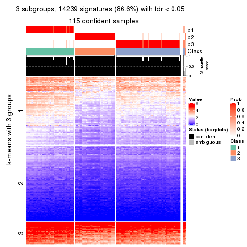
get_signatures(res, k = 4, scale_rows = FALSE)
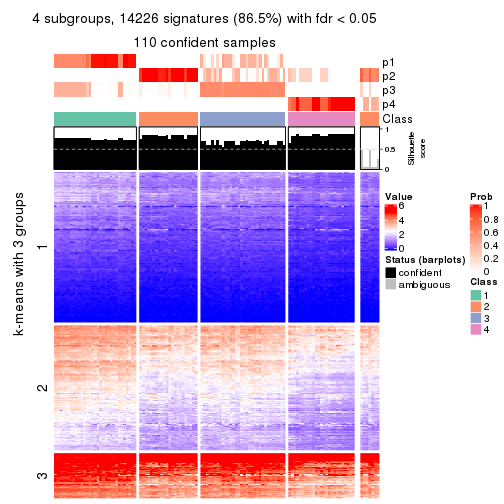
get_signatures(res, k = 5, scale_rows = FALSE)
get_signatures(res, k = 6, scale_rows = FALSE)
Compare the overlap of signatures from different k:
compare_signatures(res)
get_signature() returns a data frame invisibly. TO get the list of signatures, the function
call should be assigned to a variable explicitly. In following code, if plot argument is set
to FALSE, no heatmap is plotted while only the differential analysis is performed.
# code only for demonstration
tb = get_signature(res, k = ..., plot = FALSE)
An example of the output of tb is:
#> which_row fdr mean_1 mean_2 scaled_mean_1 scaled_mean_2 km
#> 1 38 0.042760348 8.373488 9.131774 -0.5533452 0.5164555 1
#> 2 40 0.018707592 7.106213 8.469186 -0.6173731 0.5762149 1
#> 3 55 0.019134737 10.221463 11.207825 -0.6159697 0.5749050 1
#> 4 59 0.006059896 5.921854 7.869574 -0.6899429 0.6439467 1
#> 5 60 0.018055526 8.928898 10.211722 -0.6204761 0.5791110 1
#> 6 98 0.009384629 15.714769 14.887706 0.6635654 -0.6193277 2
...
The columns in tb are:
which_row: row indices corresponding to the input matrix.fdr: FDR for the differential test. mean_x: The mean value in group x.scaled_mean_x: The mean value in group x after rows are scaled.km: Row groups if k-means clustering is applied to rows.UMAP plot which shows how samples are separated.
dimension_reduction(res, k = 2, method = "UMAP")
dimension_reduction(res, k = 3, method = "UMAP")
dimension_reduction(res, k = 4, method = "UMAP")
dimension_reduction(res, k = 5, method = "UMAP")
dimension_reduction(res, k = 6, method = "UMAP")
Following heatmap shows how subgroups are split when increasing k:
collect_classes(res)
If matrix rows can be associated to genes, consider to use functional_enrichment(res,
...) to perform function enrichment for the signature genes. See this vignette for more detailed explanations.
The object with results only for a single top-value method and a single partition method can be extracted as:
res = res_list["ATC", "skmeans"]
# you can also extract it by
# res = res_list["ATC:skmeans"]
A summary of res and all the functions that can be applied to it:
res
#> A 'ConsensusPartition' object with k = 2, 3, 4, 5, 6.
#> On a matrix with 16442 rows and 117 columns.
#> Top rows (1000, 2000, 3000, 4000, 5000) are extracted by 'ATC' method.
#> Subgroups are detected by 'skmeans' method.
#> Performed in total 1250 partitions by row resampling.
#> Best k for subgroups seems to be 4.
#>
#> Following methods can be applied to this 'ConsensusPartition' object:
#> [1] "cola_report" "collect_classes" "collect_plots"
#> [4] "collect_stats" "colnames" "compare_signatures"
#> [7] "consensus_heatmap" "dimension_reduction" "functional_enrichment"
#> [10] "get_anno_col" "get_anno" "get_classes"
#> [13] "get_consensus" "get_matrix" "get_membership"
#> [16] "get_param" "get_signatures" "get_stats"
#> [19] "is_best_k" "is_stable_k" "membership_heatmap"
#> [22] "ncol" "nrow" "plot_ecdf"
#> [25] "rownames" "select_partition_number" "show"
#> [28] "suggest_best_k" "test_to_known_factors"
collect_plots() function collects all the plots made from res for all k (number of partitions)
into one single page to provide an easy and fast comparison between different k.
collect_plots(res)
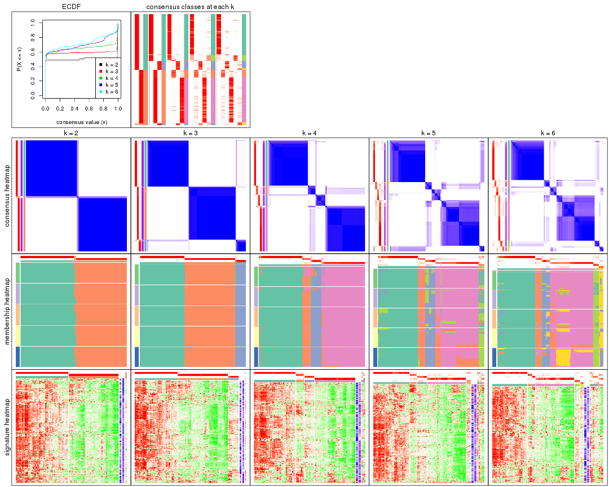
The plots are:
k and the heatmap of
predicted classes for each k.k.k.k.All the plots in panels can be made by individual functions and they are plotted later in this section.
select_partition_number() produces several plots showing different
statistics for choosing “optimized” k. There are following statistics:
k;k, the area increased is defined as \(A_k - A_{k-1}\).The detailed explanations of these statistics can be found in the cola vignette.
Generally speaking, lower PAC score, higher mean silhouette score or higher
concordance corresponds to better partition. Rand index and Jaccard index
measure how similar the current partition is compared to partition with k-1.
If they are too similar, we won't accept k is better than k-1.
select_partition_number(res)
The numeric values for all these statistics can be obtained by get_stats().
get_stats(res)
#> k 1-PAC mean_silhouette concordance area_increased Rand Jaccard
#> 2 2 1.000 0.977 0.992 0.5044 0.496 0.496
#> 3 3 1.000 0.977 0.989 0.1708 0.908 0.816
#> 4 4 0.919 0.920 0.958 0.1063 0.935 0.842
#> 5 5 0.781 0.782 0.866 0.0659 0.958 0.883
#> 6 6 0.786 0.746 0.861 0.0405 0.966 0.897
suggest_best_k() suggests the best \(k\) based on these statistics. The rules are as follows:
suggest_best_k(res)
#> [1] 4
#> attr(,"optional")
#> [1] 2 3
There is also optional best \(k\) = 2 3 that is worth to check.
Following shows the table of the partitions (You need to click the show/hide
code output link to see it). The membership matrix (columns with name p*)
is inferred by
clue::cl_consensus()
function with the SE method. Basically the value in the membership matrix
represents the probability to belong to a certain group. The finall class
label for an item is determined with the group with highest probability it
belongs to.
In get_classes() function, the entropy is calculated from the membership
matrix and the silhouette score is calculated from the consensus matrix.
cbind(get_classes(res, k = 2), get_membership(res, k = 2))
#> class entropy silhouette p1 p2
#> SRR2443263 1 0.0000 1.000 1.000 0.000
#> SRR2443262 2 0.0000 0.983 0.000 1.000
#> SRR2443261 2 0.0000 0.983 0.000 1.000
#> SRR2443260 1 0.0000 1.000 1.000 0.000
#> SRR2443259 1 0.0000 1.000 1.000 0.000
#> SRR2443258 1 0.0000 1.000 1.000 0.000
#> SRR2443257 2 0.0000 0.983 0.000 1.000
#> SRR2443256 1 0.0000 1.000 1.000 0.000
#> SRR2443255 1 0.0000 1.000 1.000 0.000
#> SRR2443254 1 0.0000 1.000 1.000 0.000
#> SRR2443253 2 0.0000 0.983 0.000 1.000
#> SRR2443251 2 0.0000 0.983 0.000 1.000
#> SRR2443250 2 0.0000 0.983 0.000 1.000
#> SRR2443249 2 0.0000 0.983 0.000 1.000
#> SRR2443252 1 0.0000 1.000 1.000 0.000
#> SRR2443247 1 0.0000 1.000 1.000 0.000
#> SRR2443246 1 0.0000 1.000 1.000 0.000
#> SRR2443248 2 0.0000 0.983 0.000 1.000
#> SRR2443244 2 0.0000 0.983 0.000 1.000
#> SRR2443245 1 0.0000 1.000 1.000 0.000
#> SRR2443243 1 0.0000 1.000 1.000 0.000
#> SRR2443242 2 0.0000 0.983 0.000 1.000
#> SRR2443241 1 0.0000 1.000 1.000 0.000
#> SRR2443240 1 0.0376 0.996 0.996 0.004
#> SRR2443239 2 0.0000 0.983 0.000 1.000
#> SRR2443238 1 0.0000 1.000 1.000 0.000
#> SRR2443237 2 0.0000 0.983 0.000 1.000
#> SRR2443236 1 0.0000 1.000 1.000 0.000
#> SRR2443235 1 0.0000 1.000 1.000 0.000
#> SRR2443233 1 0.0000 1.000 1.000 0.000
#> SRR2443234 1 0.0000 1.000 1.000 0.000
#> SRR2443232 1 0.0000 1.000 1.000 0.000
#> SRR2443231 1 0.0000 1.000 1.000 0.000
#> SRR2443230 1 0.0000 1.000 1.000 0.000
#> SRR2443229 1 0.0000 1.000 1.000 0.000
#> SRR2443228 2 0.0000 0.983 0.000 1.000
#> SRR2443227 1 0.0000 1.000 1.000 0.000
#> SRR2443226 1 0.0000 1.000 1.000 0.000
#> SRR2443225 2 0.0000 0.983 0.000 1.000
#> SRR2443223 2 0.0000 0.983 0.000 1.000
#> SRR2443224 2 0.0000 0.983 0.000 1.000
#> SRR2443222 2 0.0000 0.983 0.000 1.000
#> SRR2443221 2 0.0000 0.983 0.000 1.000
#> SRR2443219 2 0.0000 0.983 0.000 1.000
#> SRR2443220 2 0.0000 0.983 0.000 1.000
#> SRR2443218 2 0.0000 0.983 0.000 1.000
#> SRR2443217 1 0.0000 1.000 1.000 0.000
#> SRR2443216 1 0.0000 1.000 1.000 0.000
#> SRR2443215 2 0.0000 0.983 0.000 1.000
#> SRR2443214 1 0.0000 1.000 1.000 0.000
#> SRR2443213 1 0.0000 1.000 1.000 0.000
#> SRR2443212 2 0.0000 0.983 0.000 1.000
#> SRR2443211 2 0.0000 0.983 0.000 1.000
#> SRR2443210 2 0.0000 0.983 0.000 1.000
#> SRR2443209 1 0.0000 1.000 1.000 0.000
#> SRR2443208 1 0.0000 1.000 1.000 0.000
#> SRR2443207 2 0.1184 0.968 0.016 0.984
#> SRR2443206 2 0.0000 0.983 0.000 1.000
#> SRR2443205 2 0.0000 0.983 0.000 1.000
#> SRR2443204 1 0.0000 1.000 1.000 0.000
#> SRR2443203 1 0.0000 1.000 1.000 0.000
#> SRR2443202 2 0.0000 0.983 0.000 1.000
#> SRR2443201 2 0.0000 0.983 0.000 1.000
#> SRR2443200 2 0.0000 0.983 0.000 1.000
#> SRR2443199 2 0.0000 0.983 0.000 1.000
#> SRR2443197 2 0.0000 0.983 0.000 1.000
#> SRR2443196 2 0.0000 0.983 0.000 1.000
#> SRR2443198 2 0.0000 0.983 0.000 1.000
#> SRR2443195 1 0.0000 1.000 1.000 0.000
#> SRR2443194 2 0.9970 0.135 0.468 0.532
#> SRR2443193 1 0.0000 1.000 1.000 0.000
#> SRR2443191 1 0.0000 1.000 1.000 0.000
#> SRR2443192 2 0.0000 0.983 0.000 1.000
#> SRR2443190 1 0.0000 1.000 1.000 0.000
#> SRR2443189 1 0.0000 1.000 1.000 0.000
#> SRR2443188 1 0.0000 1.000 1.000 0.000
#> SRR2443186 2 0.0000 0.983 0.000 1.000
#> SRR2443187 2 0.0000 0.983 0.000 1.000
#> SRR2443185 2 0.0000 0.983 0.000 1.000
#> SRR2443184 1 0.0000 1.000 1.000 0.000
#> SRR2443183 1 0.0000 1.000 1.000 0.000
#> SRR2443182 1 0.0000 1.000 1.000 0.000
#> SRR2443181 2 0.0000 0.983 0.000 1.000
#> SRR2443180 2 0.0000 0.983 0.000 1.000
#> SRR2443179 2 0.0000 0.983 0.000 1.000
#> SRR2443178 2 0.0000 0.983 0.000 1.000
#> SRR2443177 1 0.0000 1.000 1.000 0.000
#> SRR2443176 1 0.0000 1.000 1.000 0.000
#> SRR2443175 1 0.0000 1.000 1.000 0.000
#> SRR2443174 1 0.0000 1.000 1.000 0.000
#> SRR2443173 2 0.0000 0.983 0.000 1.000
#> SRR2443172 2 0.0000 0.983 0.000 1.000
#> SRR2443171 1 0.0000 1.000 1.000 0.000
#> SRR2443170 1 0.0000 1.000 1.000 0.000
#> SRR2443169 1 0.0000 1.000 1.000 0.000
#> SRR2443168 1 0.0000 1.000 1.000 0.000
#> SRR2443167 2 0.0000 0.983 0.000 1.000
#> SRR2443166 1 0.0000 1.000 1.000 0.000
#> SRR2443165 2 0.0000 0.983 0.000 1.000
#> SRR2443164 2 0.0000 0.983 0.000 1.000
#> SRR2443163 2 0.0000 0.983 0.000 1.000
#> SRR2443162 1 0.0000 1.000 1.000 0.000
#> SRR2443161 2 0.9963 0.148 0.464 0.536
#> SRR2443160 2 0.0000 0.983 0.000 1.000
#> SRR2443159 2 0.0000 0.983 0.000 1.000
#> SRR2443158 1 0.0000 1.000 1.000 0.000
#> SRR2443157 1 0.0000 1.000 1.000 0.000
#> SRR2443156 1 0.0000 1.000 1.000 0.000
#> SRR2443155 1 0.0000 1.000 1.000 0.000
#> SRR2443154 1 0.0000 1.000 1.000 0.000
#> SRR2443153 1 0.0000 1.000 1.000 0.000
#> SRR2443152 2 0.0000 0.983 0.000 1.000
#> SRR2443151 2 0.0000 0.983 0.000 1.000
#> SRR2443150 2 0.0000 0.983 0.000 1.000
#> SRR2443148 2 0.0000 0.983 0.000 1.000
#> SRR2443147 2 0.0000 0.983 0.000 1.000
#> SRR2443149 1 0.0000 1.000 1.000 0.000
cbind(get_classes(res, k = 3), get_membership(res, k = 3))
#> class entropy silhouette p1 p2 p3
#> SRR2443263 3 0.0747 0.953 0.016 0.000 0.984
#> SRR2443262 2 0.0000 0.995 0.000 1.000 0.000
#> SRR2443261 2 0.0000 0.995 0.000 1.000 0.000
#> SRR2443260 3 0.0747 0.953 0.016 0.000 0.984
#> SRR2443259 3 0.0747 0.953 0.016 0.000 0.984
#> SRR2443258 1 0.5760 0.465 0.672 0.000 0.328
#> SRR2443257 2 0.0000 0.995 0.000 1.000 0.000
#> SRR2443256 1 0.0000 0.992 1.000 0.000 0.000
#> SRR2443255 3 0.0747 0.953 0.016 0.000 0.984
#> SRR2443254 3 0.0747 0.953 0.016 0.000 0.984
#> SRR2443253 2 0.0000 0.995 0.000 1.000 0.000
#> SRR2443251 2 0.0000 0.995 0.000 1.000 0.000
#> SRR2443250 2 0.0000 0.995 0.000 1.000 0.000
#> SRR2443249 2 0.0000 0.995 0.000 1.000 0.000
#> SRR2443252 3 0.0747 0.953 0.016 0.000 0.984
#> SRR2443247 1 0.0000 0.992 1.000 0.000 0.000
#> SRR2443246 1 0.0000 0.992 1.000 0.000 0.000
#> SRR2443248 2 0.0000 0.995 0.000 1.000 0.000
#> SRR2443244 2 0.0000 0.995 0.000 1.000 0.000
#> SRR2443245 1 0.0000 0.992 1.000 0.000 0.000
#> SRR2443243 1 0.0000 0.992 1.000 0.000 0.000
#> SRR2443242 2 0.0000 0.995 0.000 1.000 0.000
#> SRR2443241 1 0.0237 0.988 0.996 0.000 0.004
#> SRR2443240 1 0.0747 0.976 0.984 0.000 0.016
#> SRR2443239 2 0.0000 0.995 0.000 1.000 0.000
#> SRR2443238 1 0.0000 0.992 1.000 0.000 0.000
#> SRR2443237 2 0.0000 0.995 0.000 1.000 0.000
#> SRR2443236 1 0.0000 0.992 1.000 0.000 0.000
#> SRR2443235 1 0.0000 0.992 1.000 0.000 0.000
#> SRR2443233 1 0.0000 0.992 1.000 0.000 0.000
#> SRR2443234 1 0.0000 0.992 1.000 0.000 0.000
#> SRR2443232 1 0.0000 0.992 1.000 0.000 0.000
#> SRR2443231 1 0.0000 0.992 1.000 0.000 0.000
#> SRR2443230 1 0.0000 0.992 1.000 0.000 0.000
#> SRR2443229 1 0.0000 0.992 1.000 0.000 0.000
#> SRR2443228 2 0.0000 0.995 0.000 1.000 0.000
#> SRR2443227 1 0.0000 0.992 1.000 0.000 0.000
#> SRR2443226 1 0.0000 0.992 1.000 0.000 0.000
#> SRR2443225 2 0.4062 0.807 0.000 0.836 0.164
#> SRR2443223 2 0.0000 0.995 0.000 1.000 0.000
#> SRR2443224 2 0.0747 0.984 0.000 0.984 0.016
#> SRR2443222 2 0.0000 0.995 0.000 1.000 0.000
#> SRR2443221 2 0.0000 0.995 0.000 1.000 0.000
#> SRR2443219 2 0.0000 0.995 0.000 1.000 0.000
#> SRR2443220 2 0.0000 0.995 0.000 1.000 0.000
#> SRR2443218 2 0.0000 0.995 0.000 1.000 0.000
#> SRR2443217 1 0.0237 0.988 0.996 0.000 0.004
#> SRR2443216 3 0.3879 0.827 0.152 0.000 0.848
#> SRR2443215 2 0.0000 0.995 0.000 1.000 0.000
#> SRR2443214 1 0.0000 0.992 1.000 0.000 0.000
#> SRR2443213 1 0.0000 0.992 1.000 0.000 0.000
#> SRR2443212 2 0.0592 0.987 0.000 0.988 0.012
#> SRR2443211 2 0.0747 0.984 0.000 0.984 0.016
#> SRR2443210 2 0.0000 0.995 0.000 1.000 0.000
#> SRR2443209 1 0.0237 0.988 0.996 0.000 0.004
#> SRR2443208 1 0.0000 0.992 1.000 0.000 0.000
#> SRR2443207 2 0.0747 0.984 0.000 0.984 0.016
#> SRR2443206 2 0.0747 0.984 0.000 0.984 0.016
#> SRR2443205 2 0.0747 0.984 0.000 0.984 0.016
#> SRR2443204 1 0.0000 0.992 1.000 0.000 0.000
#> SRR2443203 1 0.0000 0.992 1.000 0.000 0.000
#> SRR2443202 2 0.0000 0.995 0.000 1.000 0.000
#> SRR2443201 2 0.0000 0.995 0.000 1.000 0.000
#> SRR2443200 2 0.0000 0.995 0.000 1.000 0.000
#> SRR2443199 2 0.0000 0.995 0.000 1.000 0.000
#> SRR2443197 2 0.0000 0.995 0.000 1.000 0.000
#> SRR2443196 2 0.0000 0.995 0.000 1.000 0.000
#> SRR2443198 2 0.0000 0.995 0.000 1.000 0.000
#> SRR2443195 1 0.0000 0.992 1.000 0.000 0.000
#> SRR2443194 3 0.0747 0.940 0.000 0.016 0.984
#> SRR2443193 1 0.0000 0.992 1.000 0.000 0.000
#> SRR2443191 1 0.0747 0.976 0.984 0.000 0.016
#> SRR2443192 2 0.0000 0.995 0.000 1.000 0.000
#> SRR2443190 1 0.0000 0.992 1.000 0.000 0.000
#> SRR2443189 1 0.0000 0.992 1.000 0.000 0.000
#> SRR2443188 1 0.0000 0.992 1.000 0.000 0.000
#> SRR2443186 2 0.0747 0.984 0.000 0.984 0.016
#> SRR2443187 2 0.0747 0.984 0.000 0.984 0.016
#> SRR2443185 2 0.0000 0.995 0.000 1.000 0.000
#> SRR2443184 3 0.0747 0.953 0.016 0.000 0.984
#> SRR2443183 1 0.0000 0.992 1.000 0.000 0.000
#> SRR2443182 1 0.0000 0.992 1.000 0.000 0.000
#> SRR2443181 2 0.0424 0.990 0.000 0.992 0.008
#> SRR2443180 2 0.0000 0.995 0.000 1.000 0.000
#> SRR2443179 2 0.0000 0.995 0.000 1.000 0.000
#> SRR2443178 2 0.0000 0.995 0.000 1.000 0.000
#> SRR2443177 1 0.0000 0.992 1.000 0.000 0.000
#> SRR2443176 1 0.0000 0.992 1.000 0.000 0.000
#> SRR2443175 1 0.0000 0.992 1.000 0.000 0.000
#> SRR2443174 1 0.0000 0.992 1.000 0.000 0.000
#> SRR2443173 2 0.0000 0.995 0.000 1.000 0.000
#> SRR2443172 2 0.0000 0.995 0.000 1.000 0.000
#> SRR2443171 1 0.0000 0.992 1.000 0.000 0.000
#> SRR2443170 1 0.0000 0.992 1.000 0.000 0.000
#> SRR2443169 1 0.0000 0.992 1.000 0.000 0.000
#> SRR2443168 1 0.0000 0.992 1.000 0.000 0.000
#> SRR2443167 2 0.0000 0.995 0.000 1.000 0.000
#> SRR2443166 1 0.0000 0.992 1.000 0.000 0.000
#> SRR2443165 2 0.0000 0.995 0.000 1.000 0.000
#> SRR2443164 2 0.0000 0.995 0.000 1.000 0.000
#> SRR2443163 2 0.0000 0.995 0.000 1.000 0.000
#> SRR2443162 3 0.0747 0.953 0.016 0.000 0.984
#> SRR2443161 3 0.0747 0.940 0.000 0.016 0.984
#> SRR2443160 2 0.0000 0.995 0.000 1.000 0.000
#> SRR2443159 2 0.0000 0.995 0.000 1.000 0.000
#> SRR2443158 1 0.0000 0.992 1.000 0.000 0.000
#> SRR2443157 1 0.0000 0.992 1.000 0.000 0.000
#> SRR2443156 1 0.0000 0.992 1.000 0.000 0.000
#> SRR2443155 1 0.0000 0.992 1.000 0.000 0.000
#> SRR2443154 1 0.0000 0.992 1.000 0.000 0.000
#> SRR2443153 1 0.0000 0.992 1.000 0.000 0.000
#> SRR2443152 2 0.0000 0.995 0.000 1.000 0.000
#> SRR2443151 2 0.0000 0.995 0.000 1.000 0.000
#> SRR2443150 2 0.0000 0.995 0.000 1.000 0.000
#> SRR2443148 2 0.0000 0.995 0.000 1.000 0.000
#> SRR2443147 2 0.0000 0.995 0.000 1.000 0.000
#> SRR2443149 3 0.5785 0.536 0.332 0.000 0.668
cbind(get_classes(res, k = 4), get_membership(res, k = 4))
#> class entropy silhouette p1 p2 p3 p4
#> SRR2443263 3 0.1389 0.886 0.000 0.048 0.952 0.000
#> SRR2443262 4 0.0000 0.965 0.000 0.000 0.000 1.000
#> SRR2443261 4 0.0000 0.965 0.000 0.000 0.000 1.000
#> SRR2443260 3 0.1118 0.885 0.000 0.036 0.964 0.000
#> SRR2443259 3 0.2081 0.868 0.000 0.084 0.916 0.000
#> SRR2443258 1 0.3893 0.738 0.796 0.008 0.196 0.000
#> SRR2443257 4 0.0000 0.965 0.000 0.000 0.000 1.000
#> SRR2443256 1 0.0000 0.981 1.000 0.000 0.000 0.000
#> SRR2443255 3 0.0000 0.889 0.000 0.000 1.000 0.000
#> SRR2443254 3 0.1118 0.888 0.000 0.036 0.964 0.000
#> SRR2443253 4 0.0000 0.965 0.000 0.000 0.000 1.000
#> SRR2443251 4 0.0817 0.958 0.000 0.024 0.000 0.976
#> SRR2443250 4 0.0000 0.965 0.000 0.000 0.000 1.000
#> SRR2443249 4 0.0000 0.965 0.000 0.000 0.000 1.000
#> SRR2443252 3 0.1118 0.885 0.000 0.036 0.964 0.000
#> SRR2443247 1 0.0000 0.981 1.000 0.000 0.000 0.000
#> SRR2443246 1 0.0000 0.981 1.000 0.000 0.000 0.000
#> SRR2443248 4 0.0000 0.965 0.000 0.000 0.000 1.000
#> SRR2443244 4 0.0000 0.965 0.000 0.000 0.000 1.000
#> SRR2443245 1 0.0188 0.979 0.996 0.004 0.000 0.000
#> SRR2443243 1 0.0000 0.981 1.000 0.000 0.000 0.000
#> SRR2443242 4 0.0707 0.959 0.000 0.020 0.000 0.980
#> SRR2443241 1 0.0592 0.969 0.984 0.016 0.000 0.000
#> SRR2443240 2 0.3311 0.589 0.172 0.828 0.000 0.000
#> SRR2443239 4 0.0000 0.965 0.000 0.000 0.000 1.000
#> SRR2443238 1 0.0188 0.979 0.996 0.004 0.000 0.000
#> SRR2443237 4 0.0817 0.958 0.000 0.024 0.000 0.976
#> SRR2443236 1 0.0000 0.981 1.000 0.000 0.000 0.000
#> SRR2443235 1 0.0000 0.981 1.000 0.000 0.000 0.000
#> SRR2443233 1 0.0000 0.981 1.000 0.000 0.000 0.000
#> SRR2443234 1 0.0000 0.981 1.000 0.000 0.000 0.000
#> SRR2443232 1 0.0000 0.981 1.000 0.000 0.000 0.000
#> SRR2443231 1 0.0000 0.981 1.000 0.000 0.000 0.000
#> SRR2443230 1 0.0000 0.981 1.000 0.000 0.000 0.000
#> SRR2443229 1 0.0188 0.979 0.996 0.004 0.000 0.000
#> SRR2443228 4 0.0000 0.965 0.000 0.000 0.000 1.000
#> SRR2443227 1 0.0000 0.981 1.000 0.000 0.000 0.000
#> SRR2443226 1 0.0188 0.979 0.996 0.004 0.000 0.000
#> SRR2443225 4 0.4552 0.734 0.000 0.072 0.128 0.800
#> SRR2443223 4 0.0000 0.965 0.000 0.000 0.000 1.000
#> SRR2443224 2 0.3172 0.885 0.000 0.840 0.000 0.160
#> SRR2443222 4 0.0000 0.965 0.000 0.000 0.000 1.000
#> SRR2443221 4 0.0000 0.965 0.000 0.000 0.000 1.000
#> SRR2443219 4 0.0000 0.965 0.000 0.000 0.000 1.000
#> SRR2443220 4 0.0000 0.965 0.000 0.000 0.000 1.000
#> SRR2443218 4 0.0000 0.965 0.000 0.000 0.000 1.000
#> SRR2443217 1 0.1637 0.928 0.940 0.060 0.000 0.000
#> SRR2443216 3 0.3900 0.799 0.072 0.084 0.844 0.000
#> SRR2443215 4 0.0000 0.965 0.000 0.000 0.000 1.000
#> SRR2443214 1 0.0188 0.979 0.996 0.004 0.000 0.000
#> SRR2443213 1 0.0000 0.981 1.000 0.000 0.000 0.000
#> SRR2443212 2 0.4304 0.752 0.000 0.716 0.000 0.284
#> SRR2443211 2 0.3528 0.872 0.000 0.808 0.000 0.192
#> SRR2443210 4 0.0000 0.965 0.000 0.000 0.000 1.000
#> SRR2443209 1 0.0592 0.969 0.984 0.016 0.000 0.000
#> SRR2443208 1 0.3266 0.857 0.876 0.084 0.040 0.000
#> SRR2443207 2 0.2313 0.703 0.000 0.924 0.044 0.032
#> SRR2443206 2 0.3311 0.889 0.000 0.828 0.000 0.172
#> SRR2443205 2 0.3266 0.891 0.000 0.832 0.000 0.168
#> SRR2443204 1 0.0188 0.979 0.996 0.004 0.000 0.000
#> SRR2443203 1 0.0188 0.979 0.996 0.004 0.000 0.000
#> SRR2443202 4 0.0817 0.958 0.000 0.024 0.000 0.976
#> SRR2443201 4 0.0817 0.958 0.000 0.024 0.000 0.976
#> SRR2443200 4 0.0000 0.965 0.000 0.000 0.000 1.000
#> SRR2443199 4 0.0000 0.965 0.000 0.000 0.000 1.000
#> SRR2443197 4 0.0817 0.958 0.000 0.024 0.000 0.976
#> SRR2443196 4 0.0817 0.958 0.000 0.024 0.000 0.976
#> SRR2443198 4 0.0817 0.958 0.000 0.024 0.000 0.976
#> SRR2443195 1 0.0000 0.981 1.000 0.000 0.000 0.000
#> SRR2443194 3 0.1474 0.884 0.000 0.052 0.948 0.000
#> SRR2443193 1 0.0000 0.981 1.000 0.000 0.000 0.000
#> SRR2443191 1 0.4866 0.331 0.596 0.404 0.000 0.000
#> SRR2443192 4 0.0592 0.961 0.000 0.016 0.000 0.984
#> SRR2443190 1 0.0000 0.981 1.000 0.000 0.000 0.000
#> SRR2443189 1 0.0188 0.979 0.996 0.004 0.000 0.000
#> SRR2443188 1 0.0000 0.981 1.000 0.000 0.000 0.000
#> SRR2443186 2 0.3266 0.891 0.000 0.832 0.000 0.168
#> SRR2443187 2 0.3266 0.891 0.000 0.832 0.000 0.168
#> SRR2443185 4 0.0817 0.958 0.000 0.024 0.000 0.976
#> SRR2443184 3 0.2081 0.868 0.000 0.084 0.916 0.000
#> SRR2443183 1 0.0000 0.981 1.000 0.000 0.000 0.000
#> SRR2443182 1 0.0000 0.981 1.000 0.000 0.000 0.000
#> SRR2443181 4 0.4972 -0.132 0.000 0.456 0.000 0.544
#> SRR2443180 4 0.0000 0.965 0.000 0.000 0.000 1.000
#> SRR2443179 4 0.0817 0.958 0.000 0.024 0.000 0.976
#> SRR2443178 4 0.0817 0.958 0.000 0.024 0.000 0.976
#> SRR2443177 1 0.0188 0.979 0.996 0.004 0.000 0.000
#> SRR2443176 1 0.0000 0.981 1.000 0.000 0.000 0.000
#> SRR2443175 1 0.0000 0.981 1.000 0.000 0.000 0.000
#> SRR2443174 1 0.0000 0.981 1.000 0.000 0.000 0.000
#> SRR2443173 4 0.4522 0.392 0.000 0.320 0.000 0.680
#> SRR2443172 4 0.0000 0.965 0.000 0.000 0.000 1.000
#> SRR2443171 1 0.0000 0.981 1.000 0.000 0.000 0.000
#> SRR2443170 1 0.0000 0.981 1.000 0.000 0.000 0.000
#> SRR2443169 1 0.0000 0.981 1.000 0.000 0.000 0.000
#> SRR2443168 1 0.0336 0.977 0.992 0.008 0.000 0.000
#> SRR2443167 4 0.0817 0.958 0.000 0.024 0.000 0.976
#> SRR2443166 1 0.0188 0.979 0.996 0.004 0.000 0.000
#> SRR2443165 4 0.0817 0.958 0.000 0.024 0.000 0.976
#> SRR2443164 4 0.0000 0.965 0.000 0.000 0.000 1.000
#> SRR2443163 4 0.0817 0.958 0.000 0.024 0.000 0.976
#> SRR2443162 3 0.1389 0.886 0.000 0.048 0.952 0.000
#> SRR2443161 3 0.1389 0.886 0.000 0.048 0.952 0.000
#> SRR2443160 4 0.0817 0.958 0.000 0.024 0.000 0.976
#> SRR2443159 4 0.0817 0.958 0.000 0.024 0.000 0.976
#> SRR2443158 1 0.0000 0.981 1.000 0.000 0.000 0.000
#> SRR2443157 1 0.0000 0.981 1.000 0.000 0.000 0.000
#> SRR2443156 1 0.0469 0.973 0.988 0.012 0.000 0.000
#> SRR2443155 1 0.0000 0.981 1.000 0.000 0.000 0.000
#> SRR2443154 1 0.0000 0.981 1.000 0.000 0.000 0.000
#> SRR2443153 1 0.0000 0.981 1.000 0.000 0.000 0.000
#> SRR2443152 4 0.0469 0.956 0.000 0.012 0.000 0.988
#> SRR2443151 4 0.0000 0.965 0.000 0.000 0.000 1.000
#> SRR2443150 4 0.0000 0.965 0.000 0.000 0.000 1.000
#> SRR2443148 4 0.0000 0.965 0.000 0.000 0.000 1.000
#> SRR2443147 4 0.0000 0.965 0.000 0.000 0.000 1.000
#> SRR2443149 3 0.6543 0.354 0.372 0.084 0.544 0.000
cbind(get_classes(res, k = 5), get_membership(res, k = 5))
#> class entropy silhouette p1 p2 p3 p4 p5
#> SRR2443263 3 0.4352 0.79588 0.020 0.012 0.732 0.000 0.236
#> SRR2443262 4 0.0000 0.84953 0.000 0.000 0.000 1.000 0.000
#> SRR2443261 4 0.0000 0.84953 0.000 0.000 0.000 1.000 0.000
#> SRR2443260 3 0.0404 0.84742 0.000 0.012 0.988 0.000 0.000
#> SRR2443259 3 0.3321 0.79167 0.000 0.032 0.832 0.000 0.136
#> SRR2443258 1 0.5588 0.40282 0.680 0.016 0.168 0.000 0.136
#> SRR2443257 4 0.0000 0.84953 0.000 0.000 0.000 1.000 0.000
#> SRR2443256 1 0.0000 0.91400 1.000 0.000 0.000 0.000 0.000
#> SRR2443255 3 0.0000 0.84816 0.000 0.000 1.000 0.000 0.000
#> SRR2443254 3 0.1341 0.84321 0.000 0.000 0.944 0.000 0.056
#> SRR2443253 4 0.0000 0.84953 0.000 0.000 0.000 1.000 0.000
#> SRR2443251 4 0.2813 0.79739 0.000 0.168 0.000 0.832 0.000
#> SRR2443250 4 0.0000 0.84953 0.000 0.000 0.000 1.000 0.000
#> SRR2443249 4 0.0000 0.84953 0.000 0.000 0.000 1.000 0.000
#> SRR2443252 3 0.0404 0.84742 0.000 0.012 0.988 0.000 0.000
#> SRR2443247 1 0.0000 0.91400 1.000 0.000 0.000 0.000 0.000
#> SRR2443246 1 0.0000 0.91400 1.000 0.000 0.000 0.000 0.000
#> SRR2443248 4 0.3274 0.56828 0.000 0.220 0.000 0.780 0.000
#> SRR2443244 4 0.0000 0.84953 0.000 0.000 0.000 1.000 0.000
#> SRR2443245 1 0.1792 0.83157 0.916 0.000 0.000 0.000 0.084
#> SRR2443243 1 0.0000 0.91400 1.000 0.000 0.000 0.000 0.000
#> SRR2443242 4 0.2516 0.81006 0.000 0.140 0.000 0.860 0.000
#> SRR2443241 5 0.4294 0.78791 0.468 0.000 0.000 0.000 0.532
#> SRR2443240 5 0.5584 0.00216 0.076 0.392 0.000 0.000 0.532
#> SRR2443239 4 0.3424 0.52928 0.000 0.240 0.000 0.760 0.000
#> SRR2443238 1 0.0404 0.90550 0.988 0.000 0.000 0.000 0.012
#> SRR2443237 4 0.3304 0.79125 0.000 0.168 0.000 0.816 0.016
#> SRR2443236 1 0.3796 0.03490 0.700 0.000 0.000 0.000 0.300
#> SRR2443235 1 0.0000 0.91400 1.000 0.000 0.000 0.000 0.000
#> SRR2443233 1 0.0000 0.91400 1.000 0.000 0.000 0.000 0.000
#> SRR2443234 1 0.0000 0.91400 1.000 0.000 0.000 0.000 0.000
#> SRR2443232 1 0.0000 0.91400 1.000 0.000 0.000 0.000 0.000
#> SRR2443231 1 0.0000 0.91400 1.000 0.000 0.000 0.000 0.000
#> SRR2443230 1 0.0000 0.91400 1.000 0.000 0.000 0.000 0.000
#> SRR2443229 1 0.0000 0.91400 1.000 0.000 0.000 0.000 0.000
#> SRR2443228 4 0.0000 0.84953 0.000 0.000 0.000 1.000 0.000
#> SRR2443227 1 0.0000 0.91400 1.000 0.000 0.000 0.000 0.000
#> SRR2443226 1 0.1478 0.85382 0.936 0.000 0.000 0.000 0.064
#> SRR2443225 4 0.8186 0.03030 0.000 0.180 0.144 0.372 0.304
#> SRR2443223 4 0.0000 0.84953 0.000 0.000 0.000 1.000 0.000
#> SRR2443224 2 0.4111 0.72807 0.000 0.788 0.000 0.092 0.120
#> SRR2443222 4 0.0794 0.83152 0.000 0.028 0.000 0.972 0.000
#> SRR2443221 4 0.0000 0.84953 0.000 0.000 0.000 1.000 0.000
#> SRR2443219 4 0.0000 0.84953 0.000 0.000 0.000 1.000 0.000
#> SRR2443220 4 0.0290 0.84855 0.000 0.008 0.000 0.992 0.000
#> SRR2443218 4 0.0000 0.84953 0.000 0.000 0.000 1.000 0.000
#> SRR2443217 5 0.4582 0.80540 0.416 0.012 0.000 0.000 0.572
#> SRR2443216 3 0.4082 0.76837 0.028 0.032 0.804 0.000 0.136
#> SRR2443215 4 0.3424 0.52928 0.000 0.240 0.000 0.760 0.000
#> SRR2443214 1 0.0404 0.90550 0.988 0.000 0.000 0.000 0.012
#> SRR2443213 1 0.0000 0.91400 1.000 0.000 0.000 0.000 0.000
#> SRR2443212 2 0.4150 0.64907 0.000 0.612 0.000 0.388 0.000
#> SRR2443211 2 0.3913 0.76536 0.000 0.676 0.000 0.324 0.000
#> SRR2443210 4 0.0794 0.83152 0.000 0.028 0.000 0.972 0.000
#> SRR2443209 5 0.4287 0.79585 0.460 0.000 0.000 0.000 0.540
#> SRR2443208 1 0.4863 0.54492 0.740 0.036 0.040 0.000 0.184
#> SRR2443207 2 0.4218 0.57192 0.000 0.776 0.032 0.016 0.176
#> SRR2443206 2 0.3242 0.85286 0.000 0.784 0.000 0.216 0.000
#> SRR2443205 2 0.3242 0.85286 0.000 0.784 0.000 0.216 0.000
#> SRR2443204 1 0.2329 0.78270 0.876 0.000 0.000 0.000 0.124
#> SRR2443203 1 0.2583 0.76650 0.864 0.000 0.004 0.000 0.132
#> SRR2443202 4 0.3304 0.79125 0.000 0.168 0.000 0.816 0.016
#> SRR2443201 4 0.3304 0.79125 0.000 0.168 0.000 0.816 0.016
#> SRR2443200 4 0.0000 0.84953 0.000 0.000 0.000 1.000 0.000
#> SRR2443199 4 0.0000 0.84953 0.000 0.000 0.000 1.000 0.000
#> SRR2443197 4 0.3304 0.79125 0.000 0.168 0.000 0.816 0.016
#> SRR2443196 4 0.3304 0.79125 0.000 0.168 0.000 0.816 0.016
#> SRR2443198 4 0.3304 0.79125 0.000 0.168 0.000 0.816 0.016
#> SRR2443195 1 0.0000 0.91400 1.000 0.000 0.000 0.000 0.000
#> SRR2443194 3 0.4420 0.77421 0.000 0.028 0.692 0.000 0.280
#> SRR2443193 1 0.0000 0.91400 1.000 0.000 0.000 0.000 0.000
#> SRR2443191 5 0.5010 0.79614 0.392 0.036 0.000 0.000 0.572
#> SRR2443192 4 0.0290 0.84854 0.000 0.008 0.000 0.992 0.000
#> SRR2443190 1 0.0000 0.91400 1.000 0.000 0.000 0.000 0.000
#> SRR2443189 1 0.2424 0.77178 0.868 0.000 0.000 0.000 0.132
#> SRR2443188 1 0.0000 0.91400 1.000 0.000 0.000 0.000 0.000
#> SRR2443186 2 0.3242 0.85286 0.000 0.784 0.000 0.216 0.000
#> SRR2443187 2 0.3242 0.85286 0.000 0.784 0.000 0.216 0.000
#> SRR2443185 4 0.3304 0.79125 0.000 0.168 0.000 0.816 0.016
#> SRR2443184 3 0.3478 0.78976 0.004 0.032 0.828 0.000 0.136
#> SRR2443183 1 0.0000 0.91400 1.000 0.000 0.000 0.000 0.000
#> SRR2443182 1 0.0000 0.91400 1.000 0.000 0.000 0.000 0.000
#> SRR2443181 4 0.4235 -0.11047 0.000 0.424 0.000 0.576 0.000
#> SRR2443180 4 0.0000 0.84953 0.000 0.000 0.000 1.000 0.000
#> SRR2443179 4 0.2424 0.81214 0.000 0.132 0.000 0.868 0.000
#> SRR2443178 4 0.3304 0.79125 0.000 0.168 0.000 0.816 0.016
#> SRR2443177 1 0.0404 0.90550 0.988 0.000 0.000 0.000 0.012
#> SRR2443176 1 0.0000 0.91400 1.000 0.000 0.000 0.000 0.000
#> SRR2443175 1 0.0000 0.91400 1.000 0.000 0.000 0.000 0.000
#> SRR2443174 1 0.0000 0.91400 1.000 0.000 0.000 0.000 0.000
#> SRR2443173 4 0.4088 0.14211 0.000 0.368 0.000 0.632 0.000
#> SRR2443172 4 0.0794 0.83152 0.000 0.028 0.000 0.972 0.000
#> SRR2443171 1 0.0000 0.91400 1.000 0.000 0.000 0.000 0.000
#> SRR2443170 1 0.0000 0.91400 1.000 0.000 0.000 0.000 0.000
#> SRR2443169 1 0.0000 0.91400 1.000 0.000 0.000 0.000 0.000
#> SRR2443168 1 0.2865 0.75537 0.856 0.008 0.004 0.000 0.132
#> SRR2443167 4 0.3304 0.79125 0.000 0.168 0.000 0.816 0.016
#> SRR2443166 1 0.2329 0.78270 0.876 0.000 0.000 0.000 0.124
#> SRR2443165 4 0.3304 0.79125 0.000 0.168 0.000 0.816 0.016
#> SRR2443164 4 0.0000 0.84953 0.000 0.000 0.000 1.000 0.000
#> SRR2443163 4 0.3304 0.79125 0.000 0.168 0.000 0.816 0.016
#> SRR2443162 3 0.4095 0.80267 0.016 0.008 0.748 0.000 0.228
#> SRR2443161 3 0.4138 0.78436 0.000 0.016 0.708 0.000 0.276
#> SRR2443160 4 0.3304 0.79125 0.000 0.168 0.000 0.816 0.016
#> SRR2443159 4 0.3304 0.79125 0.000 0.168 0.000 0.816 0.016
#> SRR2443158 1 0.0404 0.90550 0.988 0.000 0.000 0.000 0.012
#> SRR2443157 1 0.0000 0.91400 1.000 0.000 0.000 0.000 0.000
#> SRR2443156 5 0.4300 0.77336 0.476 0.000 0.000 0.000 0.524
#> SRR2443155 1 0.0000 0.91400 1.000 0.000 0.000 0.000 0.000
#> SRR2443154 1 0.0000 0.91400 1.000 0.000 0.000 0.000 0.000
#> SRR2443153 1 0.0000 0.91400 1.000 0.000 0.000 0.000 0.000
#> SRR2443152 4 0.3636 0.45364 0.000 0.272 0.000 0.728 0.000
#> SRR2443151 4 0.0000 0.84953 0.000 0.000 0.000 1.000 0.000
#> SRR2443150 4 0.0880 0.82839 0.000 0.032 0.000 0.968 0.000
#> SRR2443148 4 0.0000 0.84953 0.000 0.000 0.000 1.000 0.000
#> SRR2443147 4 0.0000 0.84953 0.000 0.000 0.000 1.000 0.000
#> SRR2443149 1 0.6893 -0.12644 0.444 0.032 0.388 0.000 0.136
cbind(get_classes(res, k = 6), get_membership(res, k = 6))
#> class entropy silhouette p1 p2 p3 p4 p5 p6
#> SRR2443263 6 0.4117 0.6619 0.004 0.004 0.256 0.000 0.028 0.708
#> SRR2443262 4 0.0000 0.8036 0.000 0.000 0.000 1.000 0.000 0.000
#> SRR2443261 4 0.0000 0.8036 0.000 0.000 0.000 1.000 0.000 0.000
#> SRR2443260 3 0.3960 0.4712 0.000 0.004 0.736 0.000 0.040 0.220
#> SRR2443259 3 0.0260 0.5818 0.000 0.000 0.992 0.000 0.000 0.008
#> SRR2443258 3 0.3899 0.1505 0.404 0.000 0.592 0.000 0.004 0.000
#> SRR2443257 4 0.0000 0.8036 0.000 0.000 0.000 1.000 0.000 0.000
#> SRR2443256 1 0.0000 0.9489 1.000 0.000 0.000 0.000 0.000 0.000
#> SRR2443255 3 0.4039 0.4547 0.000 0.004 0.724 0.000 0.040 0.232
#> SRR2443254 3 0.5094 0.2363 0.000 0.004 0.596 0.000 0.092 0.308
#> SRR2443253 4 0.0000 0.8036 0.000 0.000 0.000 1.000 0.000 0.000
#> SRR2443251 4 0.4618 0.6923 0.000 0.124 0.000 0.720 0.012 0.144
#> SRR2443250 4 0.0000 0.8036 0.000 0.000 0.000 1.000 0.000 0.000
#> SRR2443249 4 0.0000 0.8036 0.000 0.000 0.000 1.000 0.000 0.000
#> SRR2443252 3 0.3877 0.4818 0.000 0.004 0.748 0.000 0.040 0.208
#> SRR2443247 1 0.0000 0.9489 1.000 0.000 0.000 0.000 0.000 0.000
#> SRR2443246 1 0.0000 0.9489 1.000 0.000 0.000 0.000 0.000 0.000
#> SRR2443248 4 0.2730 0.6054 0.000 0.192 0.000 0.808 0.000 0.000
#> SRR2443244 4 0.0260 0.7997 0.000 0.008 0.000 0.992 0.000 0.000
#> SRR2443245 1 0.1285 0.9092 0.944 0.000 0.052 0.000 0.004 0.000
#> SRR2443243 1 0.0000 0.9489 1.000 0.000 0.000 0.000 0.000 0.000
#> SRR2443242 4 0.5013 0.6776 0.000 0.148 0.000 0.696 0.028 0.128
#> SRR2443241 5 0.2854 0.8317 0.208 0.000 0.000 0.000 0.792 0.000
#> SRR2443240 5 0.3353 0.6731 0.032 0.160 0.000 0.000 0.804 0.004
#> SRR2443239 4 0.3101 0.5240 0.000 0.244 0.000 0.756 0.000 0.000
#> SRR2443238 1 0.0405 0.9426 0.988 0.000 0.008 0.000 0.004 0.000
#> SRR2443237 4 0.5593 0.6389 0.000 0.132 0.000 0.644 0.048 0.176
#> SRR2443236 1 0.3737 0.1644 0.608 0.000 0.000 0.000 0.392 0.000
#> SRR2443235 1 0.0000 0.9489 1.000 0.000 0.000 0.000 0.000 0.000
#> SRR2443233 1 0.0000 0.9489 1.000 0.000 0.000 0.000 0.000 0.000
#> SRR2443234 1 0.0000 0.9489 1.000 0.000 0.000 0.000 0.000 0.000
#> SRR2443232 1 0.0000 0.9489 1.000 0.000 0.000 0.000 0.000 0.000
#> SRR2443231 1 0.0000 0.9489 1.000 0.000 0.000 0.000 0.000 0.000
#> SRR2443230 1 0.0000 0.9489 1.000 0.000 0.000 0.000 0.000 0.000
#> SRR2443229 1 0.0146 0.9470 0.996 0.000 0.000 0.000 0.004 0.000
#> SRR2443228 4 0.0000 0.8036 0.000 0.000 0.000 1.000 0.000 0.000
#> SRR2443227 1 0.0000 0.9489 1.000 0.000 0.000 0.000 0.000 0.000
#> SRR2443226 1 0.1152 0.9159 0.952 0.000 0.044 0.000 0.004 0.000
#> SRR2443225 6 0.3779 0.3836 0.000 0.056 0.000 0.124 0.020 0.800
#> SRR2443223 4 0.0000 0.8036 0.000 0.000 0.000 1.000 0.000 0.000
#> SRR2443224 2 0.2697 0.7753 0.000 0.864 0.000 0.092 0.044 0.000
#> SRR2443222 4 0.0790 0.7851 0.000 0.032 0.000 0.968 0.000 0.000
#> SRR2443221 4 0.0363 0.7976 0.000 0.012 0.000 0.988 0.000 0.000
#> SRR2443219 4 0.0000 0.8036 0.000 0.000 0.000 1.000 0.000 0.000
#> SRR2443220 4 0.0458 0.8005 0.000 0.016 0.000 0.984 0.000 0.000
#> SRR2443218 4 0.0000 0.8036 0.000 0.000 0.000 1.000 0.000 0.000
#> SRR2443217 5 0.1753 0.7936 0.084 0.004 0.000 0.000 0.912 0.000
#> SRR2443216 3 0.0146 0.5786 0.000 0.000 0.996 0.000 0.004 0.000
#> SRR2443215 4 0.3023 0.5467 0.000 0.232 0.000 0.768 0.000 0.000
#> SRR2443214 1 0.0405 0.9426 0.988 0.000 0.008 0.000 0.004 0.000
#> SRR2443213 1 0.0000 0.9489 1.000 0.000 0.000 0.000 0.000 0.000
#> SRR2443212 4 0.4086 -0.1957 0.000 0.464 0.000 0.528 0.008 0.000
#> SRR2443211 2 0.4083 0.3095 0.000 0.532 0.000 0.460 0.008 0.000
#> SRR2443210 4 0.0865 0.7824 0.000 0.036 0.000 0.964 0.000 0.000
#> SRR2443209 5 0.2823 0.8342 0.204 0.000 0.000 0.000 0.796 0.000
#> SRR2443208 1 0.5372 0.2460 0.540 0.004 0.348 0.000 0.108 0.000
#> SRR2443207 2 0.4525 0.4902 0.000 0.716 0.152 0.004 0.128 0.000
#> SRR2443206 2 0.2260 0.8179 0.000 0.860 0.000 0.140 0.000 0.000
#> SRR2443205 2 0.2260 0.8179 0.000 0.860 0.000 0.140 0.000 0.000
#> SRR2443204 1 0.1908 0.8689 0.900 0.000 0.096 0.000 0.004 0.000
#> SRR2443203 1 0.2743 0.7911 0.828 0.000 0.164 0.000 0.008 0.000
#> SRR2443202 4 0.5558 0.6427 0.000 0.128 0.000 0.648 0.048 0.176
#> SRR2443201 4 0.5593 0.6389 0.000 0.132 0.000 0.644 0.048 0.176
#> SRR2443200 4 0.0000 0.8036 0.000 0.000 0.000 1.000 0.000 0.000
#> SRR2443199 4 0.0000 0.8036 0.000 0.000 0.000 1.000 0.000 0.000
#> SRR2443197 4 0.4940 0.6739 0.000 0.124 0.000 0.688 0.016 0.172
#> SRR2443196 4 0.5128 0.6660 0.000 0.124 0.000 0.676 0.024 0.176
#> SRR2443198 4 0.4844 0.6814 0.000 0.124 0.000 0.700 0.016 0.160
#> SRR2443195 1 0.0000 0.9489 1.000 0.000 0.000 0.000 0.000 0.000
#> SRR2443194 6 0.2527 0.7178 0.000 0.000 0.168 0.000 0.000 0.832
#> SRR2443193 1 0.0146 0.9470 0.996 0.000 0.000 0.000 0.004 0.000
#> SRR2443191 5 0.2070 0.8122 0.100 0.008 0.000 0.000 0.892 0.000
#> SRR2443192 4 0.0260 0.8024 0.000 0.008 0.000 0.992 0.000 0.000
#> SRR2443190 1 0.0000 0.9489 1.000 0.000 0.000 0.000 0.000 0.000
#> SRR2443189 1 0.2595 0.7998 0.836 0.000 0.160 0.000 0.004 0.000
#> SRR2443188 1 0.0000 0.9489 1.000 0.000 0.000 0.000 0.000 0.000
#> SRR2443186 2 0.2389 0.8131 0.000 0.864 0.000 0.128 0.008 0.000
#> SRR2443187 2 0.2340 0.8125 0.000 0.852 0.000 0.148 0.000 0.000
#> SRR2443185 4 0.5270 0.6599 0.000 0.124 0.000 0.668 0.032 0.176
#> SRR2443184 3 0.0520 0.5804 0.000 0.000 0.984 0.000 0.008 0.008
#> SRR2443183 1 0.0000 0.9489 1.000 0.000 0.000 0.000 0.000 0.000
#> SRR2443182 1 0.0000 0.9489 1.000 0.000 0.000 0.000 0.000 0.000
#> SRR2443181 4 0.3747 0.0847 0.000 0.396 0.000 0.604 0.000 0.000
#> SRR2443180 4 0.0000 0.8036 0.000 0.000 0.000 1.000 0.000 0.000
#> SRR2443179 4 0.2457 0.7645 0.000 0.084 0.000 0.880 0.000 0.036
#> SRR2443178 4 0.4342 0.7090 0.000 0.100 0.000 0.752 0.016 0.132
#> SRR2443177 1 0.0291 0.9449 0.992 0.000 0.004 0.000 0.004 0.000
#> SRR2443176 1 0.0000 0.9489 1.000 0.000 0.000 0.000 0.000 0.000
#> SRR2443175 1 0.0000 0.9489 1.000 0.000 0.000 0.000 0.000 0.000
#> SRR2443174 1 0.0000 0.9489 1.000 0.000 0.000 0.000 0.000 0.000
#> SRR2443173 4 0.3531 0.3146 0.000 0.328 0.000 0.672 0.000 0.000
#> SRR2443172 4 0.0865 0.7824 0.000 0.036 0.000 0.964 0.000 0.000
#> SRR2443171 1 0.0000 0.9489 1.000 0.000 0.000 0.000 0.000 0.000
#> SRR2443170 1 0.0000 0.9489 1.000 0.000 0.000 0.000 0.000 0.000
#> SRR2443169 1 0.0000 0.9489 1.000 0.000 0.000 0.000 0.000 0.000
#> SRR2443168 1 0.3323 0.6841 0.752 0.000 0.240 0.000 0.008 0.000
#> SRR2443167 4 0.5400 0.6533 0.000 0.124 0.000 0.660 0.040 0.176
#> SRR2443166 1 0.2278 0.8361 0.868 0.000 0.128 0.000 0.004 0.000
#> SRR2443165 4 0.4940 0.6739 0.000 0.124 0.000 0.688 0.016 0.172
#> SRR2443164 4 0.0000 0.8036 0.000 0.000 0.000 1.000 0.000 0.000
#> SRR2443163 4 0.5593 0.6389 0.000 0.132 0.000 0.644 0.048 0.176
#> SRR2443162 6 0.4751 0.6237 0.044 0.004 0.256 0.000 0.020 0.676
#> SRR2443161 6 0.2597 0.7173 0.000 0.000 0.176 0.000 0.000 0.824
#> SRR2443160 4 0.5201 0.6630 0.000 0.124 0.000 0.672 0.028 0.176
#> SRR2443159 4 0.4940 0.6739 0.000 0.124 0.000 0.688 0.016 0.172
#> SRR2443158 1 0.0547 0.9368 0.980 0.000 0.020 0.000 0.000 0.000
#> SRR2443157 1 0.0000 0.9489 1.000 0.000 0.000 0.000 0.000 0.000
#> SRR2443156 5 0.2941 0.8167 0.220 0.000 0.000 0.000 0.780 0.000
#> SRR2443155 1 0.0146 0.9463 0.996 0.000 0.000 0.000 0.004 0.000
#> SRR2443154 1 0.0000 0.9489 1.000 0.000 0.000 0.000 0.000 0.000
#> SRR2443153 1 0.0000 0.9489 1.000 0.000 0.000 0.000 0.000 0.000
#> SRR2443152 4 0.3221 0.4720 0.000 0.264 0.000 0.736 0.000 0.000
#> SRR2443151 4 0.0000 0.8036 0.000 0.000 0.000 1.000 0.000 0.000
#> SRR2443150 4 0.1075 0.7731 0.000 0.048 0.000 0.952 0.000 0.000
#> SRR2443148 4 0.0000 0.8036 0.000 0.000 0.000 1.000 0.000 0.000
#> SRR2443147 4 0.0000 0.8036 0.000 0.000 0.000 1.000 0.000 0.000
#> SRR2443149 3 0.2778 0.4302 0.168 0.000 0.824 0.000 0.008 0.000
Heatmaps for the consensus matrix. It visualizes the probability of two samples to be in a same group.
consensus_heatmap(res, k = 2)
consensus_heatmap(res, k = 3)
consensus_heatmap(res, k = 4)
consensus_heatmap(res, k = 5)
consensus_heatmap(res, k = 6)
Heatmaps for the membership of samples in all partitions to see how consistent they are:
membership_heatmap(res, k = 2)
membership_heatmap(res, k = 3)
membership_heatmap(res, k = 4)
membership_heatmap(res, k = 5)
membership_heatmap(res, k = 6)
As soon as we have had the classes for columns, we can look for signatures which are significantly different between classes which can be candidate marks for certain classes. Following are the heatmaps for signatures.
Signature heatmaps where rows are scaled:
get_signatures(res, k = 2)
get_signatures(res, k = 3)
get_signatures(res, k = 4)
get_signatures(res, k = 5)
get_signatures(res, k = 6)
Signature heatmaps where rows are not scaled:
get_signatures(res, k = 2, scale_rows = FALSE)
get_signatures(res, k = 3, scale_rows = FALSE)
get_signatures(res, k = 4, scale_rows = FALSE)
get_signatures(res, k = 5, scale_rows = FALSE)
get_signatures(res, k = 6, scale_rows = FALSE)
Compare the overlap of signatures from different k:
compare_signatures(res)
get_signature() returns a data frame invisibly. TO get the list of signatures, the function
call should be assigned to a variable explicitly. In following code, if plot argument is set
to FALSE, no heatmap is plotted while only the differential analysis is performed.
# code only for demonstration
tb = get_signature(res, k = ..., plot = FALSE)
An example of the output of tb is:
#> which_row fdr mean_1 mean_2 scaled_mean_1 scaled_mean_2 km
#> 1 38 0.042760348 8.373488 9.131774 -0.5533452 0.5164555 1
#> 2 40 0.018707592 7.106213 8.469186 -0.6173731 0.5762149 1
#> 3 55 0.019134737 10.221463 11.207825 -0.6159697 0.5749050 1
#> 4 59 0.006059896 5.921854 7.869574 -0.6899429 0.6439467 1
#> 5 60 0.018055526 8.928898 10.211722 -0.6204761 0.5791110 1
#> 6 98 0.009384629 15.714769 14.887706 0.6635654 -0.6193277 2
...
The columns in tb are:
which_row: row indices corresponding to the input matrix.fdr: FDR for the differential test. mean_x: The mean value in group x.scaled_mean_x: The mean value in group x after rows are scaled.km: Row groups if k-means clustering is applied to rows.UMAP plot which shows how samples are separated.
dimension_reduction(res, k = 2, method = "UMAP")
dimension_reduction(res, k = 3, method = "UMAP")
dimension_reduction(res, k = 4, method = "UMAP")
dimension_reduction(res, k = 5, method = "UMAP")
dimension_reduction(res, k = 6, method = "UMAP")
Following heatmap shows how subgroups are split when increasing k:
collect_classes(res)
If matrix rows can be associated to genes, consider to use functional_enrichment(res,
...) to perform function enrichment for the signature genes. See this vignette for more detailed explanations.
The object with results only for a single top-value method and a single partition method can be extracted as:
res = res_list["ATC", "pam"]
# you can also extract it by
# res = res_list["ATC:pam"]
A summary of res and all the functions that can be applied to it:
res
#> A 'ConsensusPartition' object with k = 2, 3, 4, 5, 6.
#> On a matrix with 16442 rows and 117 columns.
#> Top rows (1000, 2000, 3000, 4000, 5000) are extracted by 'ATC' method.
#> Subgroups are detected by 'pam' method.
#> Performed in total 1250 partitions by row resampling.
#> Best k for subgroups seems to be 6.
#>
#> Following methods can be applied to this 'ConsensusPartition' object:
#> [1] "cola_report" "collect_classes" "collect_plots"
#> [4] "collect_stats" "colnames" "compare_signatures"
#> [7] "consensus_heatmap" "dimension_reduction" "functional_enrichment"
#> [10] "get_anno_col" "get_anno" "get_classes"
#> [13] "get_consensus" "get_matrix" "get_membership"
#> [16] "get_param" "get_signatures" "get_stats"
#> [19] "is_best_k" "is_stable_k" "membership_heatmap"
#> [22] "ncol" "nrow" "plot_ecdf"
#> [25] "rownames" "select_partition_number" "show"
#> [28] "suggest_best_k" "test_to_known_factors"
collect_plots() function collects all the plots made from res for all k (number of partitions)
into one single page to provide an easy and fast comparison between different k.
collect_plots(res)
The plots are:
k and the heatmap of
predicted classes for each k.k.k.k.All the plots in panels can be made by individual functions and they are plotted later in this section.
select_partition_number() produces several plots showing different
statistics for choosing “optimized” k. There are following statistics:
k;k, the area increased is defined as \(A_k - A_{k-1}\).The detailed explanations of these statistics can be found in the cola vignette.
Generally speaking, lower PAC score, higher mean silhouette score or higher
concordance corresponds to better partition. Rand index and Jaccard index
measure how similar the current partition is compared to partition with k-1.
If they are too similar, we won't accept k is better than k-1.
select_partition_number(res)
The numeric values for all these statistics can be obtained by get_stats().
get_stats(res)
#> k 1-PAC mean_silhouette concordance area_increased Rand Jaccard
#> 2 2 0.671 0.875 0.937 0.4753 0.541 0.541
#> 3 3 1.000 0.981 0.993 0.3992 0.711 0.504
#> 4 4 1.000 0.975 0.991 0.0917 0.891 0.696
#> 5 5 0.843 0.900 0.939 0.0559 0.955 0.840
#> 6 6 1.000 0.988 0.994 0.0687 0.874 0.541
suggest_best_k() suggests the best \(k\) based on these statistics. The rules are as follows:
suggest_best_k(res)
#> [1] 6
#> attr(,"optional")
#> [1] 3 4
There is also optional best \(k\) = 3 4 that is worth to check.
Following shows the table of the partitions (You need to click the show/hide
code output link to see it). The membership matrix (columns with name p*)
is inferred by
clue::cl_consensus()
function with the SE method. Basically the value in the membership matrix
represents the probability to belong to a certain group. The finall class
label for an item is determined with the group with highest probability it
belongs to.
In get_classes() function, the entropy is calculated from the membership
matrix and the silhouette score is calculated from the consensus matrix.
cbind(get_classes(res, k = 2), get_membership(res, k = 2))
#> class entropy silhouette p1 p2
#> SRR2443263 2 0.9580 0.539 0.380 0.620
#> SRR2443262 2 0.0000 0.897 0.000 1.000
#> SRR2443261 2 0.0000 0.897 0.000 1.000
#> SRR2443260 2 0.7883 0.731 0.236 0.764
#> SRR2443259 2 0.9608 0.533 0.384 0.616
#> SRR2443258 1 0.0000 0.995 1.000 0.000
#> SRR2443257 2 0.0000 0.897 0.000 1.000
#> SRR2443256 1 0.2778 0.939 0.952 0.048
#> SRR2443255 2 0.9608 0.533 0.384 0.616
#> SRR2443254 2 0.8144 0.714 0.252 0.748
#> SRR2443253 2 0.0000 0.897 0.000 1.000
#> SRR2443251 2 0.0000 0.897 0.000 1.000
#> SRR2443250 2 0.0000 0.897 0.000 1.000
#> SRR2443249 2 0.0000 0.897 0.000 1.000
#> SRR2443252 2 0.7883 0.731 0.236 0.764
#> SRR2443247 1 0.0000 0.995 1.000 0.000
#> SRR2443246 1 0.0000 0.995 1.000 0.000
#> SRR2443248 2 0.0000 0.897 0.000 1.000
#> SRR2443244 2 0.0000 0.897 0.000 1.000
#> SRR2443245 1 0.0000 0.995 1.000 0.000
#> SRR2443243 1 0.0000 0.995 1.000 0.000
#> SRR2443242 2 0.0000 0.897 0.000 1.000
#> SRR2443241 2 0.9608 0.533 0.384 0.616
#> SRR2443240 2 0.7883 0.731 0.236 0.764
#> SRR2443239 2 0.0000 0.897 0.000 1.000
#> SRR2443238 1 0.0000 0.995 1.000 0.000
#> SRR2443237 2 0.0000 0.897 0.000 1.000
#> SRR2443236 1 0.0000 0.995 1.000 0.000
#> SRR2443235 1 0.0000 0.995 1.000 0.000
#> SRR2443233 1 0.0000 0.995 1.000 0.000
#> SRR2443234 1 0.0000 0.995 1.000 0.000
#> SRR2443232 1 0.0000 0.995 1.000 0.000
#> SRR2443231 1 0.0000 0.995 1.000 0.000
#> SRR2443230 1 0.0000 0.995 1.000 0.000
#> SRR2443229 1 0.0000 0.995 1.000 0.000
#> SRR2443228 2 0.0000 0.897 0.000 1.000
#> SRR2443227 1 0.0000 0.995 1.000 0.000
#> SRR2443226 1 0.0000 0.995 1.000 0.000
#> SRR2443225 2 0.7883 0.731 0.236 0.764
#> SRR2443223 2 0.0000 0.897 0.000 1.000
#> SRR2443224 2 0.0376 0.895 0.004 0.996
#> SRR2443222 2 0.0000 0.897 0.000 1.000
#> SRR2443221 2 0.0000 0.897 0.000 1.000
#> SRR2443219 2 0.0000 0.897 0.000 1.000
#> SRR2443220 2 0.0000 0.897 0.000 1.000
#> SRR2443218 2 0.0000 0.897 0.000 1.000
#> SRR2443217 2 0.7883 0.731 0.236 0.764
#> SRR2443216 2 0.9922 0.386 0.448 0.552
#> SRR2443215 2 0.0000 0.897 0.000 1.000
#> SRR2443214 1 0.0000 0.995 1.000 0.000
#> SRR2443213 1 0.0000 0.995 1.000 0.000
#> SRR2443212 2 0.0000 0.897 0.000 1.000
#> SRR2443211 2 0.0000 0.897 0.000 1.000
#> SRR2443210 2 0.0000 0.897 0.000 1.000
#> SRR2443209 2 0.9608 0.533 0.384 0.616
#> SRR2443208 2 0.9608 0.533 0.384 0.616
#> SRR2443207 2 0.7883 0.731 0.236 0.764
#> SRR2443206 2 0.0000 0.897 0.000 1.000
#> SRR2443205 2 0.0000 0.897 0.000 1.000
#> SRR2443204 1 0.0000 0.995 1.000 0.000
#> SRR2443203 1 0.4939 0.855 0.892 0.108
#> SRR2443202 2 0.0000 0.897 0.000 1.000
#> SRR2443201 2 0.0376 0.895 0.004 0.996
#> SRR2443200 2 0.0000 0.897 0.000 1.000
#> SRR2443199 2 0.0000 0.897 0.000 1.000
#> SRR2443197 2 0.0000 0.897 0.000 1.000
#> SRR2443196 2 0.0000 0.897 0.000 1.000
#> SRR2443198 2 0.0000 0.897 0.000 1.000
#> SRR2443195 1 0.0000 0.995 1.000 0.000
#> SRR2443194 2 0.7883 0.731 0.236 0.764
#> SRR2443193 1 0.0000 0.995 1.000 0.000
#> SRR2443191 2 0.9608 0.533 0.384 0.616
#> SRR2443192 2 0.0000 0.897 0.000 1.000
#> SRR2443190 1 0.0000 0.995 1.000 0.000
#> SRR2443189 1 0.0000 0.995 1.000 0.000
#> SRR2443188 1 0.0000 0.995 1.000 0.000
#> SRR2443186 2 0.0000 0.897 0.000 1.000
#> SRR2443187 2 0.0000 0.897 0.000 1.000
#> SRR2443185 2 0.0000 0.897 0.000 1.000
#> SRR2443184 2 0.9608 0.533 0.384 0.616
#> SRR2443183 1 0.0000 0.995 1.000 0.000
#> SRR2443182 1 0.0000 0.995 1.000 0.000
#> SRR2443181 2 0.0000 0.897 0.000 1.000
#> SRR2443180 2 0.0000 0.897 0.000 1.000
#> SRR2443179 2 0.0000 0.897 0.000 1.000
#> SRR2443178 2 0.0000 0.897 0.000 1.000
#> SRR2443177 1 0.0000 0.995 1.000 0.000
#> SRR2443176 1 0.0000 0.995 1.000 0.000
#> SRR2443175 1 0.0000 0.995 1.000 0.000
#> SRR2443174 1 0.0000 0.995 1.000 0.000
#> SRR2443173 2 0.0000 0.897 0.000 1.000
#> SRR2443172 2 0.0000 0.897 0.000 1.000
#> SRR2443171 1 0.0000 0.995 1.000 0.000
#> SRR2443170 1 0.0000 0.995 1.000 0.000
#> SRR2443169 1 0.0000 0.995 1.000 0.000
#> SRR2443168 1 0.0376 0.991 0.996 0.004
#> SRR2443167 2 0.0000 0.897 0.000 1.000
#> SRR2443166 1 0.0000 0.995 1.000 0.000
#> SRR2443165 2 0.0000 0.897 0.000 1.000
#> SRR2443164 2 0.0000 0.897 0.000 1.000
#> SRR2443163 2 0.0000 0.897 0.000 1.000
#> SRR2443162 2 0.9608 0.533 0.384 0.616
#> SRR2443161 2 0.7883 0.731 0.236 0.764
#> SRR2443160 2 0.0000 0.897 0.000 1.000
#> SRR2443159 2 0.0000 0.897 0.000 1.000
#> SRR2443158 2 0.9608 0.533 0.384 0.616
#> SRR2443157 1 0.0000 0.995 1.000 0.000
#> SRR2443156 2 0.9608 0.533 0.384 0.616
#> SRR2443155 1 0.0000 0.995 1.000 0.000
#> SRR2443154 1 0.0000 0.995 1.000 0.000
#> SRR2443153 1 0.0000 0.995 1.000 0.000
#> SRR2443152 2 0.0000 0.897 0.000 1.000
#> SRR2443151 2 0.0000 0.897 0.000 1.000
#> SRR2443150 2 0.0000 0.897 0.000 1.000
#> SRR2443148 2 0.0000 0.897 0.000 1.000
#> SRR2443147 2 0.0000 0.897 0.000 1.000
#> SRR2443149 2 0.9608 0.533 0.384 0.616
cbind(get_classes(res, k = 3), get_membership(res, k = 3))
#> class entropy silhouette p1 p2 p3
#> SRR2443263 3 0.0000 0.992 0.000 0.000 1.000
#> SRR2443262 2 0.0000 0.999 0.000 1.000 0.000
#> SRR2443261 2 0.0000 0.999 0.000 1.000 0.000
#> SRR2443260 3 0.0000 0.992 0.000 0.000 1.000
#> SRR2443259 3 0.0000 0.992 0.000 0.000 1.000
#> SRR2443258 3 0.0237 0.988 0.004 0.000 0.996
#> SRR2443257 2 0.0000 0.999 0.000 1.000 0.000
#> SRR2443256 3 0.0000 0.992 0.000 0.000 1.000
#> SRR2443255 3 0.0000 0.992 0.000 0.000 1.000
#> SRR2443254 3 0.0000 0.992 0.000 0.000 1.000
#> SRR2443253 2 0.0000 0.999 0.000 1.000 0.000
#> SRR2443251 2 0.0000 0.999 0.000 1.000 0.000
#> SRR2443250 2 0.0000 0.999 0.000 1.000 0.000
#> SRR2443249 2 0.0000 0.999 0.000 1.000 0.000
#> SRR2443252 3 0.0000 0.992 0.000 0.000 1.000
#> SRR2443247 1 0.0000 0.985 1.000 0.000 0.000
#> SRR2443246 1 0.0000 0.985 1.000 0.000 0.000
#> SRR2443248 3 0.0000 0.992 0.000 0.000 1.000
#> SRR2443244 3 0.4555 0.749 0.000 0.200 0.800
#> SRR2443245 1 0.0000 0.985 1.000 0.000 0.000
#> SRR2443243 1 0.0000 0.985 1.000 0.000 0.000
#> SRR2443242 3 0.0000 0.992 0.000 0.000 1.000
#> SRR2443241 3 0.0000 0.992 0.000 0.000 1.000
#> SRR2443240 3 0.0000 0.992 0.000 0.000 1.000
#> SRR2443239 2 0.0000 0.999 0.000 1.000 0.000
#> SRR2443238 1 0.0000 0.985 1.000 0.000 0.000
#> SRR2443237 3 0.0000 0.992 0.000 0.000 1.000
#> SRR2443236 1 0.0000 0.985 1.000 0.000 0.000
#> SRR2443235 1 0.0000 0.985 1.000 0.000 0.000
#> SRR2443233 1 0.0000 0.985 1.000 0.000 0.000
#> SRR2443234 1 0.0000 0.985 1.000 0.000 0.000
#> SRR2443232 1 0.0000 0.985 1.000 0.000 0.000
#> SRR2443231 1 0.0000 0.985 1.000 0.000 0.000
#> SRR2443230 1 0.0000 0.985 1.000 0.000 0.000
#> SRR2443229 1 0.6286 0.126 0.536 0.000 0.464
#> SRR2443228 2 0.0000 0.999 0.000 1.000 0.000
#> SRR2443227 1 0.0000 0.985 1.000 0.000 0.000
#> SRR2443226 1 0.0000 0.985 1.000 0.000 0.000
#> SRR2443225 3 0.0000 0.992 0.000 0.000 1.000
#> SRR2443223 3 0.0000 0.992 0.000 0.000 1.000
#> SRR2443224 3 0.0000 0.992 0.000 0.000 1.000
#> SRR2443222 2 0.0000 0.999 0.000 1.000 0.000
#> SRR2443221 2 0.0000 0.999 0.000 1.000 0.000
#> SRR2443219 2 0.0000 0.999 0.000 1.000 0.000
#> SRR2443220 2 0.0000 0.999 0.000 1.000 0.000
#> SRR2443218 2 0.0000 0.999 0.000 1.000 0.000
#> SRR2443217 3 0.0000 0.992 0.000 0.000 1.000
#> SRR2443216 3 0.0000 0.992 0.000 0.000 1.000
#> SRR2443215 3 0.0592 0.981 0.000 0.012 0.988
#> SRR2443214 1 0.0000 0.985 1.000 0.000 0.000
#> SRR2443213 1 0.0000 0.985 1.000 0.000 0.000
#> SRR2443212 3 0.0000 0.992 0.000 0.000 1.000
#> SRR2443211 3 0.0000 0.992 0.000 0.000 1.000
#> SRR2443210 2 0.0000 0.999 0.000 1.000 0.000
#> SRR2443209 3 0.0000 0.992 0.000 0.000 1.000
#> SRR2443208 3 0.0000 0.992 0.000 0.000 1.000
#> SRR2443207 3 0.0000 0.992 0.000 0.000 1.000
#> SRR2443206 2 0.1529 0.955 0.000 0.960 0.040
#> SRR2443205 3 0.0000 0.992 0.000 0.000 1.000
#> SRR2443204 1 0.0000 0.985 1.000 0.000 0.000
#> SRR2443203 3 0.0000 0.992 0.000 0.000 1.000
#> SRR2443202 3 0.0000 0.992 0.000 0.000 1.000
#> SRR2443201 3 0.0000 0.992 0.000 0.000 1.000
#> SRR2443200 2 0.0000 0.999 0.000 1.000 0.000
#> SRR2443199 2 0.0000 0.999 0.000 1.000 0.000
#> SRR2443197 2 0.0000 0.999 0.000 1.000 0.000
#> SRR2443196 2 0.0000 0.999 0.000 1.000 0.000
#> SRR2443198 2 0.0000 0.999 0.000 1.000 0.000
#> SRR2443195 1 0.0000 0.985 1.000 0.000 0.000
#> SRR2443194 3 0.0000 0.992 0.000 0.000 1.000
#> SRR2443193 1 0.0000 0.985 1.000 0.000 0.000
#> SRR2443191 3 0.0000 0.992 0.000 0.000 1.000
#> SRR2443192 3 0.0000 0.992 0.000 0.000 1.000
#> SRR2443190 1 0.0000 0.985 1.000 0.000 0.000
#> SRR2443189 1 0.0000 0.985 1.000 0.000 0.000
#> SRR2443188 1 0.0000 0.985 1.000 0.000 0.000
#> SRR2443186 3 0.0000 0.992 0.000 0.000 1.000
#> SRR2443187 3 0.0000 0.992 0.000 0.000 1.000
#> SRR2443185 3 0.0000 0.992 0.000 0.000 1.000
#> SRR2443184 3 0.0000 0.992 0.000 0.000 1.000
#> SRR2443183 1 0.0000 0.985 1.000 0.000 0.000
#> SRR2443182 3 0.3686 0.832 0.140 0.000 0.860
#> SRR2443181 2 0.0000 0.999 0.000 1.000 0.000
#> SRR2443180 2 0.0000 0.999 0.000 1.000 0.000
#> SRR2443179 2 0.0000 0.999 0.000 1.000 0.000
#> SRR2443178 2 0.0237 0.995 0.000 0.996 0.004
#> SRR2443177 1 0.0000 0.985 1.000 0.000 0.000
#> SRR2443176 3 0.0000 0.992 0.000 0.000 1.000
#> SRR2443175 1 0.0000 0.985 1.000 0.000 0.000
#> SRR2443174 1 0.0000 0.985 1.000 0.000 0.000
#> SRR2443173 2 0.0000 0.999 0.000 1.000 0.000
#> SRR2443172 2 0.0000 0.999 0.000 1.000 0.000
#> SRR2443171 1 0.0000 0.985 1.000 0.000 0.000
#> SRR2443170 1 0.0000 0.985 1.000 0.000 0.000
#> SRR2443169 1 0.0000 0.985 1.000 0.000 0.000
#> SRR2443168 3 0.0000 0.992 0.000 0.000 1.000
#> SRR2443167 2 0.0000 0.999 0.000 1.000 0.000
#> SRR2443166 1 0.0000 0.985 1.000 0.000 0.000
#> SRR2443165 3 0.0000 0.992 0.000 0.000 1.000
#> SRR2443164 2 0.0000 0.999 0.000 1.000 0.000
#> SRR2443163 3 0.0000 0.992 0.000 0.000 1.000
#> SRR2443162 3 0.0000 0.992 0.000 0.000 1.000
#> SRR2443161 3 0.0000 0.992 0.000 0.000 1.000
#> SRR2443160 2 0.0000 0.999 0.000 1.000 0.000
#> SRR2443159 2 0.0000 0.999 0.000 1.000 0.000
#> SRR2443158 3 0.0000 0.992 0.000 0.000 1.000
#> SRR2443157 1 0.0000 0.985 1.000 0.000 0.000
#> SRR2443156 3 0.0000 0.992 0.000 0.000 1.000
#> SRR2443155 1 0.0237 0.981 0.996 0.000 0.004
#> SRR2443154 3 0.0000 0.992 0.000 0.000 1.000
#> SRR2443153 1 0.0000 0.985 1.000 0.000 0.000
#> SRR2443152 2 0.0000 0.999 0.000 1.000 0.000
#> SRR2443151 2 0.0000 0.999 0.000 1.000 0.000
#> SRR2443150 2 0.0000 0.999 0.000 1.000 0.000
#> SRR2443148 2 0.0000 0.999 0.000 1.000 0.000
#> SRR2443147 2 0.0000 0.999 0.000 1.000 0.000
#> SRR2443149 3 0.0000 0.992 0.000 0.000 1.000
cbind(get_classes(res, k = 4), get_membership(res, k = 4))
#> class entropy silhouette p1 p2 p3 p4
#> SRR2443263 3 0.0000 0.995 0.000 0 1.000 0.000
#> SRR2443262 4 0.0000 0.983 0.000 0 0.000 1.000
#> SRR2443261 4 0.0000 0.983 0.000 0 0.000 1.000
#> SRR2443260 3 0.0000 0.995 0.000 0 1.000 0.000
#> SRR2443259 3 0.0000 0.995 0.000 0 1.000 0.000
#> SRR2443258 3 0.0000 0.995 0.000 0 1.000 0.000
#> SRR2443257 4 0.0000 0.983 0.000 0 0.000 1.000
#> SRR2443256 3 0.0000 0.995 0.000 0 1.000 0.000
#> SRR2443255 3 0.0000 0.995 0.000 0 1.000 0.000
#> SRR2443254 3 0.0000 0.995 0.000 0 1.000 0.000
#> SRR2443253 2 0.0000 1.000 0.000 1 0.000 0.000
#> SRR2443251 4 0.0000 0.983 0.000 0 0.000 1.000
#> SRR2443250 4 0.0000 0.983 0.000 0 0.000 1.000
#> SRR2443249 4 0.0000 0.983 0.000 0 0.000 1.000
#> SRR2443252 3 0.0000 0.995 0.000 0 1.000 0.000
#> SRR2443247 1 0.0000 0.982 1.000 0 0.000 0.000
#> SRR2443246 1 0.0000 0.982 1.000 0 0.000 0.000
#> SRR2443248 3 0.0469 0.983 0.000 0 0.988 0.012
#> SRR2443244 4 0.0000 0.983 0.000 0 0.000 1.000
#> SRR2443245 1 0.0000 0.982 1.000 0 0.000 0.000
#> SRR2443243 1 0.0000 0.982 1.000 0 0.000 0.000
#> SRR2443242 3 0.0000 0.995 0.000 0 1.000 0.000
#> SRR2443241 3 0.0000 0.995 0.000 0 1.000 0.000
#> SRR2443240 3 0.0000 0.995 0.000 0 1.000 0.000
#> SRR2443239 4 0.0000 0.983 0.000 0 0.000 1.000
#> SRR2443238 1 0.0000 0.982 1.000 0 0.000 0.000
#> SRR2443237 3 0.0000 0.995 0.000 0 1.000 0.000
#> SRR2443236 1 0.0000 0.982 1.000 0 0.000 0.000
#> SRR2443235 1 0.0000 0.982 1.000 0 0.000 0.000
#> SRR2443233 1 0.0000 0.982 1.000 0 0.000 0.000
#> SRR2443234 1 0.0000 0.982 1.000 0 0.000 0.000
#> SRR2443232 1 0.0000 0.982 1.000 0 0.000 0.000
#> SRR2443231 1 0.0000 0.982 1.000 0 0.000 0.000
#> SRR2443230 1 0.0000 0.982 1.000 0 0.000 0.000
#> SRR2443229 1 0.4985 0.111 0.532 0 0.468 0.000
#> SRR2443228 2 0.0000 1.000 0.000 1 0.000 0.000
#> SRR2443227 1 0.0000 0.982 1.000 0 0.000 0.000
#> SRR2443226 1 0.0000 0.982 1.000 0 0.000 0.000
#> SRR2443225 3 0.0000 0.995 0.000 0 1.000 0.000
#> SRR2443223 4 0.4522 0.531 0.000 0 0.320 0.680
#> SRR2443224 3 0.0000 0.995 0.000 0 1.000 0.000
#> SRR2443222 2 0.0000 1.000 0.000 1 0.000 0.000
#> SRR2443221 2 0.0000 1.000 0.000 1 0.000 0.000
#> SRR2443219 4 0.0000 0.983 0.000 0 0.000 1.000
#> SRR2443220 4 0.0000 0.983 0.000 0 0.000 1.000
#> SRR2443218 2 0.0000 1.000 0.000 1 0.000 0.000
#> SRR2443217 3 0.0000 0.995 0.000 0 1.000 0.000
#> SRR2443216 3 0.0000 0.995 0.000 0 1.000 0.000
#> SRR2443215 4 0.0000 0.983 0.000 0 0.000 1.000
#> SRR2443214 1 0.0000 0.982 1.000 0 0.000 0.000
#> SRR2443213 1 0.0000 0.982 1.000 0 0.000 0.000
#> SRR2443212 3 0.0000 0.995 0.000 0 1.000 0.000
#> SRR2443211 3 0.0000 0.995 0.000 0 1.000 0.000
#> SRR2443210 4 0.0000 0.983 0.000 0 0.000 1.000
#> SRR2443209 3 0.0000 0.995 0.000 0 1.000 0.000
#> SRR2443208 3 0.0000 0.995 0.000 0 1.000 0.000
#> SRR2443207 3 0.0000 0.995 0.000 0 1.000 0.000
#> SRR2443206 4 0.0000 0.983 0.000 0 0.000 1.000
#> SRR2443205 3 0.0000 0.995 0.000 0 1.000 0.000
#> SRR2443204 1 0.0000 0.982 1.000 0 0.000 0.000
#> SRR2443203 3 0.0000 0.995 0.000 0 1.000 0.000
#> SRR2443202 3 0.0000 0.995 0.000 0 1.000 0.000
#> SRR2443201 3 0.0000 0.995 0.000 0 1.000 0.000
#> SRR2443200 2 0.0000 1.000 0.000 1 0.000 0.000
#> SRR2443199 2 0.0000 1.000 0.000 1 0.000 0.000
#> SRR2443197 4 0.0000 0.983 0.000 0 0.000 1.000
#> SRR2443196 4 0.0000 0.983 0.000 0 0.000 1.000
#> SRR2443198 4 0.0000 0.983 0.000 0 0.000 1.000
#> SRR2443195 1 0.0000 0.982 1.000 0 0.000 0.000
#> SRR2443194 3 0.0000 0.995 0.000 0 1.000 0.000
#> SRR2443193 1 0.0000 0.982 1.000 0 0.000 0.000
#> SRR2443191 3 0.0000 0.995 0.000 0 1.000 0.000
#> SRR2443192 4 0.0000 0.983 0.000 0 0.000 1.000
#> SRR2443190 1 0.0000 0.982 1.000 0 0.000 0.000
#> SRR2443189 1 0.0000 0.982 1.000 0 0.000 0.000
#> SRR2443188 1 0.0000 0.982 1.000 0 0.000 0.000
#> SRR2443186 3 0.0188 0.991 0.000 0 0.996 0.004
#> SRR2443187 4 0.1792 0.901 0.000 0 0.068 0.932
#> SRR2443185 4 0.0000 0.983 0.000 0 0.000 1.000
#> SRR2443184 3 0.0000 0.995 0.000 0 1.000 0.000
#> SRR2443183 1 0.0000 0.982 1.000 0 0.000 0.000
#> SRR2443182 3 0.2921 0.818 0.140 0 0.860 0.000
#> SRR2443181 4 0.0000 0.983 0.000 0 0.000 1.000
#> SRR2443180 2 0.0000 1.000 0.000 1 0.000 0.000
#> SRR2443179 2 0.0000 1.000 0.000 1 0.000 0.000
#> SRR2443178 4 0.0000 0.983 0.000 0 0.000 1.000
#> SRR2443177 1 0.0000 0.982 1.000 0 0.000 0.000
#> SRR2443176 3 0.0000 0.995 0.000 0 1.000 0.000
#> SRR2443175 1 0.0000 0.982 1.000 0 0.000 0.000
#> SRR2443174 1 0.0000 0.982 1.000 0 0.000 0.000
#> SRR2443173 4 0.0000 0.983 0.000 0 0.000 1.000
#> SRR2443172 4 0.0000 0.983 0.000 0 0.000 1.000
#> SRR2443171 1 0.0000 0.982 1.000 0 0.000 0.000
#> SRR2443170 1 0.0000 0.982 1.000 0 0.000 0.000
#> SRR2443169 1 0.0000 0.982 1.000 0 0.000 0.000
#> SRR2443168 3 0.0000 0.995 0.000 0 1.000 0.000
#> SRR2443167 4 0.0000 0.983 0.000 0 0.000 1.000
#> SRR2443166 1 0.0000 0.982 1.000 0 0.000 0.000
#> SRR2443165 4 0.0000 0.983 0.000 0 0.000 1.000
#> SRR2443164 2 0.0000 1.000 0.000 1 0.000 0.000
#> SRR2443163 3 0.0000 0.995 0.000 0 1.000 0.000
#> SRR2443162 3 0.0000 0.995 0.000 0 1.000 0.000
#> SRR2443161 3 0.0000 0.995 0.000 0 1.000 0.000
#> SRR2443160 4 0.0000 0.983 0.000 0 0.000 1.000
#> SRR2443159 4 0.0000 0.983 0.000 0 0.000 1.000
#> SRR2443158 3 0.0000 0.995 0.000 0 1.000 0.000
#> SRR2443157 1 0.0000 0.982 1.000 0 0.000 0.000
#> SRR2443156 3 0.0000 0.995 0.000 0 1.000 0.000
#> SRR2443155 1 0.0000 0.982 1.000 0 0.000 0.000
#> SRR2443154 3 0.0000 0.995 0.000 0 1.000 0.000
#> SRR2443153 1 0.0000 0.982 1.000 0 0.000 0.000
#> SRR2443152 4 0.0000 0.983 0.000 0 0.000 1.000
#> SRR2443151 2 0.0000 1.000 0.000 1 0.000 0.000
#> SRR2443150 4 0.0000 0.983 0.000 0 0.000 1.000
#> SRR2443148 2 0.0000 1.000 0.000 1 0.000 0.000
#> SRR2443147 2 0.0000 1.000 0.000 1 0.000 0.000
#> SRR2443149 3 0.0000 0.995 0.000 0 1.000 0.000
cbind(get_classes(res, k = 5), get_membership(res, k = 5))
#> class entropy silhouette p1 p2 p3 p4 p5
#> SRR2443263 3 0.000 0.9019 0.000 0.000 1.000 0.000 0.000
#> SRR2443262 4 0.000 0.9282 0.000 0.000 0.000 1.000 0.000
#> SRR2443261 4 0.000 0.9282 0.000 0.000 0.000 1.000 0.000
#> SRR2443260 3 0.000 0.9019 0.000 0.000 1.000 0.000 0.000
#> SRR2443259 3 0.000 0.9019 0.000 0.000 1.000 0.000 0.000
#> SRR2443258 3 0.388 0.5254 0.316 0.000 0.684 0.000 0.000
#> SRR2443257 4 0.112 0.8944 0.000 0.044 0.000 0.956 0.000
#> SRR2443256 3 0.000 0.9019 0.000 0.000 1.000 0.000 0.000
#> SRR2443255 3 0.000 0.9019 0.000 0.000 1.000 0.000 0.000
#> SRR2443254 3 0.000 0.9019 0.000 0.000 1.000 0.000 0.000
#> SRR2443253 2 0.000 1.0000 0.000 1.000 0.000 0.000 0.000
#> SRR2443251 4 0.213 0.9110 0.000 0.000 0.000 0.892 0.108
#> SRR2443250 4 0.112 0.8944 0.000 0.044 0.000 0.956 0.000
#> SRR2443249 4 0.000 0.9282 0.000 0.000 0.000 1.000 0.000
#> SRR2443252 3 0.000 0.9019 0.000 0.000 1.000 0.000 0.000
#> SRR2443247 1 0.167 0.8769 0.924 0.000 0.000 0.000 0.076
#> SRR2443246 1 0.000 0.9586 1.000 0.000 0.000 0.000 0.000
#> SRR2443248 3 0.336 0.8411 0.000 0.000 0.840 0.052 0.108
#> SRR2443244 4 0.213 0.9110 0.000 0.000 0.000 0.892 0.108
#> SRR2443245 1 0.000 0.9586 1.000 0.000 0.000 0.000 0.000
#> SRR2443243 1 0.000 0.9586 1.000 0.000 0.000 0.000 0.000
#> SRR2443242 3 0.322 0.8475 0.000 0.000 0.848 0.044 0.108
#> SRR2443241 3 0.000 0.9019 0.000 0.000 1.000 0.000 0.000
#> SRR2443240 3 0.000 0.9019 0.000 0.000 1.000 0.000 0.000
#> SRR2443239 4 0.213 0.9110 0.000 0.000 0.000 0.892 0.108
#> SRR2443238 1 0.000 0.9586 1.000 0.000 0.000 0.000 0.000
#> SRR2443237 3 0.322 0.8475 0.000 0.000 0.848 0.044 0.108
#> SRR2443236 1 0.000 0.9586 1.000 0.000 0.000 0.000 0.000
#> SRR2443235 1 0.000 0.9586 1.000 0.000 0.000 0.000 0.000
#> SRR2443233 1 0.000 0.9586 1.000 0.000 0.000 0.000 0.000
#> SRR2443234 5 0.213 1.0000 0.108 0.000 0.000 0.000 0.892
#> SRR2443232 1 0.000 0.9586 1.000 0.000 0.000 0.000 0.000
#> SRR2443231 5 0.213 1.0000 0.108 0.000 0.000 0.000 0.892
#> SRR2443230 5 0.213 1.0000 0.108 0.000 0.000 0.000 0.892
#> SRR2443229 3 0.431 0.0171 0.492 0.000 0.508 0.000 0.000
#> SRR2443228 2 0.000 1.0000 0.000 1.000 0.000 0.000 0.000
#> SRR2443227 5 0.213 1.0000 0.108 0.000 0.000 0.000 0.892
#> SRR2443226 1 0.000 0.9586 1.000 0.000 0.000 0.000 0.000
#> SRR2443225 3 0.322 0.8475 0.000 0.000 0.848 0.044 0.108
#> SRR2443223 4 0.570 0.4464 0.000 0.000 0.308 0.584 0.108
#> SRR2443224 3 0.322 0.8475 0.000 0.000 0.848 0.044 0.108
#> SRR2443222 2 0.000 1.0000 0.000 1.000 0.000 0.000 0.000
#> SRR2443221 2 0.000 1.0000 0.000 1.000 0.000 0.000 0.000
#> SRR2443219 4 0.000 0.9282 0.000 0.000 0.000 1.000 0.000
#> SRR2443220 4 0.000 0.9282 0.000 0.000 0.000 1.000 0.000
#> SRR2443218 2 0.000 1.0000 0.000 1.000 0.000 0.000 0.000
#> SRR2443217 3 0.000 0.9019 0.000 0.000 1.000 0.000 0.000
#> SRR2443216 3 0.000 0.9019 0.000 0.000 1.000 0.000 0.000
#> SRR2443215 4 0.213 0.9110 0.000 0.000 0.000 0.892 0.108
#> SRR2443214 1 0.000 0.9586 1.000 0.000 0.000 0.000 0.000
#> SRR2443213 5 0.213 1.0000 0.108 0.000 0.000 0.000 0.892
#> SRR2443212 3 0.322 0.8475 0.000 0.000 0.848 0.044 0.108
#> SRR2443211 3 0.322 0.8475 0.000 0.000 0.848 0.044 0.108
#> SRR2443210 4 0.112 0.8944 0.000 0.044 0.000 0.956 0.000
#> SRR2443209 3 0.000 0.9019 0.000 0.000 1.000 0.000 0.000
#> SRR2443208 3 0.000 0.9019 0.000 0.000 1.000 0.000 0.000
#> SRR2443207 3 0.322 0.8475 0.000 0.000 0.848 0.044 0.108
#> SRR2443206 4 0.213 0.9110 0.000 0.000 0.000 0.892 0.108
#> SRR2443205 3 0.322 0.8475 0.000 0.000 0.848 0.044 0.108
#> SRR2443204 1 0.000 0.9586 1.000 0.000 0.000 0.000 0.000
#> SRR2443203 3 0.000 0.9019 0.000 0.000 1.000 0.000 0.000
#> SRR2443202 3 0.322 0.8475 0.000 0.000 0.848 0.044 0.108
#> SRR2443201 3 0.322 0.8475 0.000 0.000 0.848 0.044 0.108
#> SRR2443200 2 0.000 1.0000 0.000 1.000 0.000 0.000 0.000
#> SRR2443199 2 0.000 1.0000 0.000 1.000 0.000 0.000 0.000
#> SRR2443197 4 0.000 0.9282 0.000 0.000 0.000 1.000 0.000
#> SRR2443196 4 0.000 0.9282 0.000 0.000 0.000 1.000 0.000
#> SRR2443198 4 0.213 0.9110 0.000 0.000 0.000 0.892 0.108
#> SRR2443195 1 0.265 0.7710 0.848 0.000 0.152 0.000 0.000
#> SRR2443194 3 0.000 0.9019 0.000 0.000 1.000 0.000 0.000
#> SRR2443193 1 0.000 0.9586 1.000 0.000 0.000 0.000 0.000
#> SRR2443191 3 0.000 0.9019 0.000 0.000 1.000 0.000 0.000
#> SRR2443192 4 0.213 0.9110 0.000 0.000 0.000 0.892 0.108
#> SRR2443190 5 0.213 1.0000 0.108 0.000 0.000 0.000 0.892
#> SRR2443189 1 0.000 0.9586 1.000 0.000 0.000 0.000 0.000
#> SRR2443188 5 0.213 1.0000 0.108 0.000 0.000 0.000 0.892
#> SRR2443186 3 0.329 0.8442 0.000 0.000 0.844 0.048 0.108
#> SRR2443187 4 0.356 0.8481 0.000 0.000 0.064 0.828 0.108
#> SRR2443185 4 0.213 0.9110 0.000 0.000 0.000 0.892 0.108
#> SRR2443184 3 0.000 0.9019 0.000 0.000 1.000 0.000 0.000
#> SRR2443183 5 0.213 1.0000 0.108 0.000 0.000 0.000 0.892
#> SRR2443182 3 0.389 0.5173 0.320 0.000 0.680 0.000 0.000
#> SRR2443181 4 0.213 0.9110 0.000 0.000 0.000 0.892 0.108
#> SRR2443180 2 0.000 1.0000 0.000 1.000 0.000 0.000 0.000
#> SRR2443179 2 0.000 1.0000 0.000 1.000 0.000 0.000 0.000
#> SRR2443178 4 0.213 0.9110 0.000 0.000 0.000 0.892 0.108
#> SRR2443177 1 0.000 0.9586 1.000 0.000 0.000 0.000 0.000
#> SRR2443176 3 0.388 0.5254 0.316 0.000 0.684 0.000 0.000
#> SRR2443175 1 0.000 0.9586 1.000 0.000 0.000 0.000 0.000
#> SRR2443174 5 0.213 1.0000 0.108 0.000 0.000 0.000 0.892
#> SRR2443173 4 0.000 0.9282 0.000 0.000 0.000 1.000 0.000
#> SRR2443172 4 0.000 0.9282 0.000 0.000 0.000 1.000 0.000
#> SRR2443171 1 0.000 0.9586 1.000 0.000 0.000 0.000 0.000
#> SRR2443170 1 0.000 0.9586 1.000 0.000 0.000 0.000 0.000
#> SRR2443169 5 0.213 1.0000 0.108 0.000 0.000 0.000 0.892
#> SRR2443168 3 0.000 0.9019 0.000 0.000 1.000 0.000 0.000
#> SRR2443167 4 0.000 0.9282 0.000 0.000 0.000 1.000 0.000
#> SRR2443166 1 0.000 0.9586 1.000 0.000 0.000 0.000 0.000
#> SRR2443165 4 0.213 0.9110 0.000 0.000 0.000 0.892 0.108
#> SRR2443164 2 0.000 1.0000 0.000 1.000 0.000 0.000 0.000
#> SRR2443163 3 0.322 0.8475 0.000 0.000 0.848 0.044 0.108
#> SRR2443162 3 0.000 0.9019 0.000 0.000 1.000 0.000 0.000
#> SRR2443161 3 0.000 0.9019 0.000 0.000 1.000 0.000 0.000
#> SRR2443160 4 0.000 0.9282 0.000 0.000 0.000 1.000 0.000
#> SRR2443159 4 0.000 0.9282 0.000 0.000 0.000 1.000 0.000
#> SRR2443158 3 0.000 0.9019 0.000 0.000 1.000 0.000 0.000
#> SRR2443157 1 0.000 0.9586 1.000 0.000 0.000 0.000 0.000
#> SRR2443156 3 0.000 0.9019 0.000 0.000 1.000 0.000 0.000
#> SRR2443155 1 0.265 0.7710 0.848 0.000 0.152 0.000 0.000
#> SRR2443154 3 0.051 0.8921 0.016 0.000 0.984 0.000 0.000
#> SRR2443153 1 0.386 0.4350 0.688 0.000 0.000 0.000 0.312
#> SRR2443152 4 0.000 0.9282 0.000 0.000 0.000 1.000 0.000
#> SRR2443151 2 0.000 1.0000 0.000 1.000 0.000 0.000 0.000
#> SRR2443150 4 0.000 0.9282 0.000 0.000 0.000 1.000 0.000
#> SRR2443148 2 0.000 1.0000 0.000 1.000 0.000 0.000 0.000
#> SRR2443147 2 0.000 1.0000 0.000 1.000 0.000 0.000 0.000
#> SRR2443149 3 0.000 0.9019 0.000 0.000 1.000 0.000 0.000
cbind(get_classes(res, k = 6), get_membership(res, k = 6))
#> class entropy silhouette p1 p2 p3 p4 p5 p6
#> SRR2443263 3 0.000 0.984 0.000 0.000 1.000 0 0 0.000
#> SRR2443262 4 0.000 1.000 0.000 0.000 0.000 1 0 0.000
#> SRR2443261 4 0.000 1.000 0.000 0.000 0.000 1 0 0.000
#> SRR2443260 3 0.000 0.984 0.000 0.000 1.000 0 0 0.000
#> SRR2443259 3 0.000 0.984 0.000 0.000 1.000 0 0 0.000
#> SRR2443258 3 0.127 0.939 0.000 0.000 0.940 0 0 0.060
#> SRR2443257 4 0.000 1.000 0.000 0.000 0.000 1 0 0.000
#> SRR2443256 3 0.000 0.984 0.000 0.000 1.000 0 0 0.000
#> SRR2443255 3 0.000 0.984 0.000 0.000 1.000 0 0 0.000
#> SRR2443254 3 0.000 0.984 0.000 0.000 1.000 0 0 0.000
#> SRR2443253 5 0.000 1.000 0.000 0.000 0.000 0 1 0.000
#> SRR2443251 2 0.000 0.988 0.000 1.000 0.000 0 0 0.000
#> SRR2443250 4 0.000 1.000 0.000 0.000 0.000 1 0 0.000
#> SRR2443249 4 0.000 1.000 0.000 0.000 0.000 1 0 0.000
#> SRR2443252 3 0.000 0.984 0.000 0.000 1.000 0 0 0.000
#> SRR2443247 6 0.000 0.996 0.000 0.000 0.000 0 0 1.000
#> SRR2443246 6 0.000 0.996 0.000 0.000 0.000 0 0 1.000
#> SRR2443248 2 0.000 0.988 0.000 1.000 0.000 0 0 0.000
#> SRR2443244 2 0.000 0.988 0.000 1.000 0.000 0 0 0.000
#> SRR2443245 6 0.000 0.996 0.000 0.000 0.000 0 0 1.000
#> SRR2443243 6 0.000 0.996 0.000 0.000 0.000 0 0 1.000
#> SRR2443242 2 0.000 0.988 0.000 1.000 0.000 0 0 0.000
#> SRR2443241 3 0.000 0.984 0.000 0.000 1.000 0 0 0.000
#> SRR2443240 3 0.000 0.984 0.000 0.000 1.000 0 0 0.000
#> SRR2443239 2 0.000 0.988 0.000 1.000 0.000 0 0 0.000
#> SRR2443238 6 0.000 0.996 0.000 0.000 0.000 0 0 1.000
#> SRR2443237 2 0.000 0.988 0.000 1.000 0.000 0 0 0.000
#> SRR2443236 6 0.000 0.996 0.000 0.000 0.000 0 0 1.000
#> SRR2443235 6 0.000 0.996 0.000 0.000 0.000 0 0 1.000
#> SRR2443233 6 0.000 0.996 0.000 0.000 0.000 0 0 1.000
#> SRR2443234 1 0.000 1.000 1.000 0.000 0.000 0 0 0.000
#> SRR2443232 6 0.000 0.996 0.000 0.000 0.000 0 0 1.000
#> SRR2443231 1 0.000 1.000 1.000 0.000 0.000 0 0 0.000
#> SRR2443230 1 0.000 1.000 1.000 0.000 0.000 0 0 0.000
#> SRR2443229 3 0.139 0.932 0.000 0.000 0.932 0 0 0.068
#> SRR2443228 5 0.000 1.000 0.000 0.000 0.000 0 1 0.000
#> SRR2443227 1 0.000 1.000 1.000 0.000 0.000 0 0 0.000
#> SRR2443226 6 0.000 0.996 0.000 0.000 0.000 0 0 1.000
#> SRR2443225 2 0.133 0.931 0.000 0.936 0.064 0 0 0.000
#> SRR2443223 2 0.000 0.988 0.000 1.000 0.000 0 0 0.000
#> SRR2443224 2 0.127 0.935 0.000 0.940 0.060 0 0 0.000
#> SRR2443222 5 0.000 1.000 0.000 0.000 0.000 0 1 0.000
#> SRR2443221 5 0.000 1.000 0.000 0.000 0.000 0 1 0.000
#> SRR2443219 4 0.000 1.000 0.000 0.000 0.000 1 0 0.000
#> SRR2443220 4 0.000 1.000 0.000 0.000 0.000 1 0 0.000
#> SRR2443218 5 0.000 1.000 0.000 0.000 0.000 0 1 0.000
#> SRR2443217 3 0.000 0.984 0.000 0.000 1.000 0 0 0.000
#> SRR2443216 3 0.000 0.984 0.000 0.000 1.000 0 0 0.000
#> SRR2443215 2 0.000 0.988 0.000 1.000 0.000 0 0 0.000
#> SRR2443214 6 0.000 0.996 0.000 0.000 0.000 0 0 1.000
#> SRR2443213 1 0.000 1.000 1.000 0.000 0.000 0 0 0.000
#> SRR2443212 2 0.000 0.988 0.000 1.000 0.000 0 0 0.000
#> SRR2443211 2 0.000 0.988 0.000 1.000 0.000 0 0 0.000
#> SRR2443210 4 0.000 1.000 0.000 0.000 0.000 1 0 0.000
#> SRR2443209 3 0.000 0.984 0.000 0.000 1.000 0 0 0.000
#> SRR2443208 3 0.000 0.984 0.000 0.000 1.000 0 0 0.000
#> SRR2443207 2 0.127 0.935 0.000 0.940 0.060 0 0 0.000
#> SRR2443206 2 0.000 0.988 0.000 1.000 0.000 0 0 0.000
#> SRR2443205 2 0.000 0.988 0.000 1.000 0.000 0 0 0.000
#> SRR2443204 6 0.000 0.996 0.000 0.000 0.000 0 0 1.000
#> SRR2443203 3 0.000 0.984 0.000 0.000 1.000 0 0 0.000
#> SRR2443202 2 0.000 0.988 0.000 1.000 0.000 0 0 0.000
#> SRR2443201 2 0.127 0.935 0.000 0.940 0.060 0 0 0.000
#> SRR2443200 5 0.000 1.000 0.000 0.000 0.000 0 1 0.000
#> SRR2443199 5 0.000 1.000 0.000 0.000 0.000 0 1 0.000
#> SRR2443197 4 0.000 1.000 0.000 0.000 0.000 1 0 0.000
#> SRR2443196 4 0.000 1.000 0.000 0.000 0.000 1 0 0.000
#> SRR2443198 2 0.000 0.988 0.000 1.000 0.000 0 0 0.000
#> SRR2443195 3 0.166 0.911 0.000 0.000 0.912 0 0 0.088
#> SRR2443194 3 0.000 0.984 0.000 0.000 1.000 0 0 0.000
#> SRR2443193 6 0.000 0.996 0.000 0.000 0.000 0 0 1.000
#> SRR2443191 3 0.000 0.984 0.000 0.000 1.000 0 0 0.000
#> SRR2443192 2 0.000 0.988 0.000 1.000 0.000 0 0 0.000
#> SRR2443190 1 0.000 1.000 1.000 0.000 0.000 0 0 0.000
#> SRR2443189 6 0.000 0.996 0.000 0.000 0.000 0 0 1.000
#> SRR2443188 1 0.000 1.000 1.000 0.000 0.000 0 0 0.000
#> SRR2443186 2 0.000 0.988 0.000 1.000 0.000 0 0 0.000
#> SRR2443187 2 0.000 0.988 0.000 1.000 0.000 0 0 0.000
#> SRR2443185 2 0.000 0.988 0.000 1.000 0.000 0 0 0.000
#> SRR2443184 3 0.000 0.984 0.000 0.000 1.000 0 0 0.000
#> SRR2443183 1 0.000 1.000 1.000 0.000 0.000 0 0 0.000
#> SRR2443182 3 0.127 0.939 0.000 0.000 0.940 0 0 0.060
#> SRR2443181 2 0.000 0.988 0.000 1.000 0.000 0 0 0.000
#> SRR2443180 5 0.000 1.000 0.000 0.000 0.000 0 1 0.000
#> SRR2443179 5 0.000 1.000 0.000 0.000 0.000 0 1 0.000
#> SRR2443178 2 0.000 0.988 0.000 1.000 0.000 0 0 0.000
#> SRR2443177 6 0.000 0.996 0.000 0.000 0.000 0 0 1.000
#> SRR2443176 3 0.127 0.939 0.000 0.000 0.940 0 0 0.060
#> SRR2443175 6 0.000 0.996 0.000 0.000 0.000 0 0 1.000
#> SRR2443174 1 0.000 1.000 1.000 0.000 0.000 0 0 0.000
#> SRR2443173 4 0.000 1.000 0.000 0.000 0.000 1 0 0.000
#> SRR2443172 4 0.000 1.000 0.000 0.000 0.000 1 0 0.000
#> SRR2443171 6 0.000 0.996 0.000 0.000 0.000 0 0 1.000
#> SRR2443170 6 0.000 0.996 0.000 0.000 0.000 0 0 1.000
#> SRR2443169 1 0.000 1.000 1.000 0.000 0.000 0 0 0.000
#> SRR2443168 3 0.000 0.984 0.000 0.000 1.000 0 0 0.000
#> SRR2443167 4 0.000 1.000 0.000 0.000 0.000 1 0 0.000
#> SRR2443166 6 0.000 0.996 0.000 0.000 0.000 0 0 1.000
#> SRR2443165 2 0.000 0.988 0.000 1.000 0.000 0 0 0.000
#> SRR2443164 5 0.000 1.000 0.000 0.000 0.000 0 1 0.000
#> SRR2443163 2 0.000 0.988 0.000 1.000 0.000 0 0 0.000
#> SRR2443162 3 0.000 0.984 0.000 0.000 1.000 0 0 0.000
#> SRR2443161 3 0.000 0.984 0.000 0.000 1.000 0 0 0.000
#> SRR2443160 4 0.000 1.000 0.000 0.000 0.000 1 0 0.000
#> SRR2443159 4 0.000 1.000 0.000 0.000 0.000 1 0 0.000
#> SRR2443158 3 0.000 0.984 0.000 0.000 1.000 0 0 0.000
#> SRR2443157 6 0.000 0.996 0.000 0.000 0.000 0 0 1.000
#> SRR2443156 3 0.000 0.984 0.000 0.000 1.000 0 0 0.000
#> SRR2443155 3 0.127 0.939 0.000 0.000 0.940 0 0 0.060
#> SRR2443154 3 0.026 0.979 0.000 0.000 0.992 0 0 0.008
#> SRR2443153 6 0.139 0.921 0.068 0.000 0.000 0 0 0.932
#> SRR2443152 4 0.000 1.000 0.000 0.000 0.000 1 0 0.000
#> SRR2443151 5 0.000 1.000 0.000 0.000 0.000 0 1 0.000
#> SRR2443150 4 0.000 1.000 0.000 0.000 0.000 1 0 0.000
#> SRR2443148 5 0.000 1.000 0.000 0.000 0.000 0 1 0.000
#> SRR2443147 5 0.000 1.000 0.000 0.000 0.000 0 1 0.000
#> SRR2443149 3 0.000 0.984 0.000 0.000 1.000 0 0 0.000
Heatmaps for the consensus matrix. It visualizes the probability of two samples to be in a same group.
consensus_heatmap(res, k = 2)
consensus_heatmap(res, k = 3)
consensus_heatmap(res, k = 4)
consensus_heatmap(res, k = 5)
consensus_heatmap(res, k = 6)
Heatmaps for the membership of samples in all partitions to see how consistent they are:
membership_heatmap(res, k = 2)
membership_heatmap(res, k = 3)
membership_heatmap(res, k = 4)
membership_heatmap(res, k = 5)
membership_heatmap(res, k = 6)
As soon as we have had the classes for columns, we can look for signatures which are significantly different between classes which can be candidate marks for certain classes. Following are the heatmaps for signatures.
Signature heatmaps where rows are scaled:
get_signatures(res, k = 2)
get_signatures(res, k = 3)
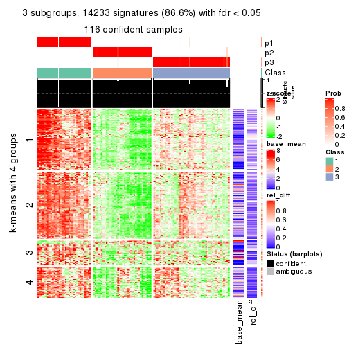
get_signatures(res, k = 4)
get_signatures(res, k = 5)
get_signatures(res, k = 6)
Signature heatmaps where rows are not scaled:
get_signatures(res, k = 2, scale_rows = FALSE)
get_signatures(res, k = 3, scale_rows = FALSE)
get_signatures(res, k = 4, scale_rows = FALSE)

get_signatures(res, k = 5, scale_rows = FALSE)
get_signatures(res, k = 6, scale_rows = FALSE)
Compare the overlap of signatures from different k:
compare_signatures(res)
get_signature() returns a data frame invisibly. TO get the list of signatures, the function
call should be assigned to a variable explicitly. In following code, if plot argument is set
to FALSE, no heatmap is plotted while only the differential analysis is performed.
# code only for demonstration
tb = get_signature(res, k = ..., plot = FALSE)
An example of the output of tb is:
#> which_row fdr mean_1 mean_2 scaled_mean_1 scaled_mean_2 km
#> 1 38 0.042760348 8.373488 9.131774 -0.5533452 0.5164555 1
#> 2 40 0.018707592 7.106213 8.469186 -0.6173731 0.5762149 1
#> 3 55 0.019134737 10.221463 11.207825 -0.6159697 0.5749050 1
#> 4 59 0.006059896 5.921854 7.869574 -0.6899429 0.6439467 1
#> 5 60 0.018055526 8.928898 10.211722 -0.6204761 0.5791110 1
#> 6 98 0.009384629 15.714769 14.887706 0.6635654 -0.6193277 2
...
The columns in tb are:
which_row: row indices corresponding to the input matrix.fdr: FDR for the differential test. mean_x: The mean value in group x.scaled_mean_x: The mean value in group x after rows are scaled.km: Row groups if k-means clustering is applied to rows.UMAP plot which shows how samples are separated.
dimension_reduction(res, k = 2, method = "UMAP")
dimension_reduction(res, k = 3, method = "UMAP")
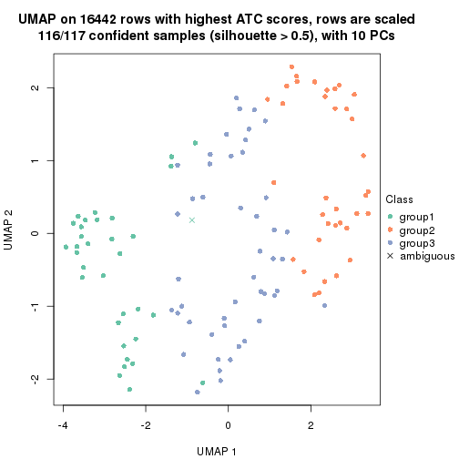
dimension_reduction(res, k = 4, method = "UMAP")
dimension_reduction(res, k = 5, method = "UMAP")
dimension_reduction(res, k = 6, method = "UMAP")
Following heatmap shows how subgroups are split when increasing k:
collect_classes(res)
If matrix rows can be associated to genes, consider to use functional_enrichment(res,
...) to perform function enrichment for the signature genes. See this vignette for more detailed explanations.
The object with results only for a single top-value method and a single partition method can be extracted as:
res = res_list["ATC", "mclust"]
# you can also extract it by
# res = res_list["ATC:mclust"]
A summary of res and all the functions that can be applied to it:
res
#> A 'ConsensusPartition' object with k = 2, 3, 4, 5, 6.
#> On a matrix with 16442 rows and 117 columns.
#> Top rows (1000, 2000, 3000, 4000, 5000) are extracted by 'ATC' method.
#> Subgroups are detected by 'mclust' method.
#> Performed in total 1250 partitions by row resampling.
#> Best k for subgroups seems to be 5.
#>
#> Following methods can be applied to this 'ConsensusPartition' object:
#> [1] "cola_report" "collect_classes" "collect_plots"
#> [4] "collect_stats" "colnames" "compare_signatures"
#> [7] "consensus_heatmap" "dimension_reduction" "functional_enrichment"
#> [10] "get_anno_col" "get_anno" "get_classes"
#> [13] "get_consensus" "get_matrix" "get_membership"
#> [16] "get_param" "get_signatures" "get_stats"
#> [19] "is_best_k" "is_stable_k" "membership_heatmap"
#> [22] "ncol" "nrow" "plot_ecdf"
#> [25] "rownames" "select_partition_number" "show"
#> [28] "suggest_best_k" "test_to_known_factors"
collect_plots() function collects all the plots made from res for all k (number of partitions)
into one single page to provide an easy and fast comparison between different k.
collect_plots(res)
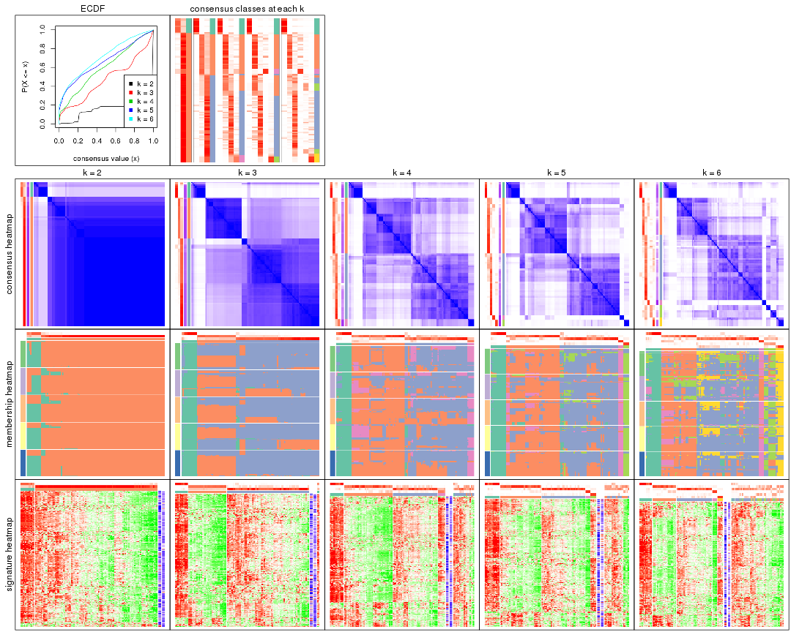
The plots are:
k and the heatmap of
predicted classes for each k.k.k.k.All the plots in panels can be made by individual functions and they are plotted later in this section.
select_partition_number() produces several plots showing different
statistics for choosing “optimized” k. There are following statistics:
k;k, the area increased is defined as \(A_k - A_{k-1}\).The detailed explanations of these statistics can be found in the cola vignette.
Generally speaking, lower PAC score, higher mean silhouette score or higher
concordance corresponds to better partition. Rand index and Jaccard index
measure how similar the current partition is compared to partition with k-1.
If they are too similar, we won't accept k is better than k-1.
select_partition_number(res)
The numeric values for all these statistics can be obtained by get_stats().
get_stats(res)
#> k 1-PAC mean_silhouette concordance area_increased Rand Jaccard
#> 2 2 0.787 0.940 0.954 0.1699 0.814 0.814
#> 3 3 0.383 0.804 0.797 1.7719 0.638 0.556
#> 4 4 0.279 0.622 0.771 0.2830 0.769 0.560
#> 5 5 0.459 0.653 0.814 0.1052 0.915 0.784
#> 6 6 0.440 0.514 0.718 0.0674 0.822 0.560
suggest_best_k() suggests the best \(k\) based on these statistics. The rules are as follows:
suggest_best_k(res)
#> [1] 5
Following shows the table of the partitions (You need to click the show/hide
code output link to see it). The membership matrix (columns with name p*)
is inferred by
clue::cl_consensus()
function with the SE method. Basically the value in the membership matrix
represents the probability to belong to a certain group. The finall class
label for an item is determined with the group with highest probability it
belongs to.
In get_classes() function, the entropy is calculated from the membership
matrix and the silhouette score is calculated from the consensus matrix.
cbind(get_classes(res, k = 2), get_membership(res, k = 2))
#> class entropy silhouette p1 p2
#> SRR2443263 2 0.0000 0.972 0.000 1.000
#> SRR2443262 2 0.3431 0.912 0.064 0.936
#> SRR2443261 2 0.0000 0.972 0.000 1.000
#> SRR2443260 2 0.0000 0.972 0.000 1.000
#> SRR2443259 2 0.0000 0.972 0.000 1.000
#> SRR2443258 2 0.0000 0.972 0.000 1.000
#> SRR2443257 2 0.3274 0.915 0.060 0.940
#> SRR2443256 2 0.0672 0.966 0.008 0.992
#> SRR2443255 2 0.0000 0.972 0.000 1.000
#> SRR2443254 2 0.0000 0.972 0.000 1.000
#> SRR2443253 2 0.5519 0.833 0.128 0.872
#> SRR2443251 2 0.0000 0.972 0.000 1.000
#> SRR2443250 2 0.3431 0.912 0.064 0.936
#> SRR2443249 2 0.1633 0.952 0.024 0.976
#> SRR2443252 2 0.0000 0.972 0.000 1.000
#> SRR2443247 2 0.1633 0.952 0.024 0.976
#> SRR2443246 2 0.0000 0.972 0.000 1.000
#> SRR2443248 2 0.0000 0.972 0.000 1.000
#> SRR2443244 2 0.1184 0.959 0.016 0.984
#> SRR2443245 2 0.0000 0.972 0.000 1.000
#> SRR2443243 2 0.0672 0.966 0.008 0.992
#> SRR2443242 2 0.0000 0.972 0.000 1.000
#> SRR2443241 2 0.0672 0.966 0.008 0.992
#> SRR2443240 2 0.0000 0.972 0.000 1.000
#> SRR2443239 2 0.0000 0.972 0.000 1.000
#> SRR2443238 2 0.0000 0.972 0.000 1.000
#> SRR2443237 2 0.0000 0.972 0.000 1.000
#> SRR2443236 2 0.0672 0.966 0.008 0.992
#> SRR2443235 2 0.1414 0.956 0.020 0.980
#> SRR2443233 2 0.4562 0.850 0.096 0.904
#> SRR2443234 1 0.9323 0.822 0.652 0.348
#> SRR2443232 1 0.9754 0.730 0.592 0.408
#> SRR2443231 1 0.7453 0.919 0.788 0.212
#> SRR2443230 1 0.7453 0.919 0.788 0.212
#> SRR2443229 2 0.0000 0.972 0.000 1.000
#> SRR2443228 2 0.3879 0.897 0.076 0.924
#> SRR2443227 1 0.7453 0.919 0.788 0.212
#> SRR2443226 2 0.0000 0.972 0.000 1.000
#> SRR2443225 2 0.0000 0.972 0.000 1.000
#> SRR2443223 2 0.0000 0.972 0.000 1.000
#> SRR2443224 2 0.0000 0.972 0.000 1.000
#> SRR2443222 2 0.3274 0.915 0.060 0.940
#> SRR2443221 2 0.3274 0.915 0.060 0.940
#> SRR2443219 2 0.3274 0.915 0.060 0.940
#> SRR2443220 2 0.0000 0.972 0.000 1.000
#> SRR2443218 2 0.7745 0.664 0.228 0.772
#> SRR2443217 2 0.0000 0.972 0.000 1.000
#> SRR2443216 2 0.0000 0.972 0.000 1.000
#> SRR2443215 2 0.0000 0.972 0.000 1.000
#> SRR2443214 2 0.0000 0.972 0.000 1.000
#> SRR2443213 1 0.7453 0.919 0.788 0.212
#> SRR2443212 2 0.0000 0.972 0.000 1.000
#> SRR2443211 2 0.0000 0.972 0.000 1.000
#> SRR2443210 2 0.0000 0.972 0.000 1.000
#> SRR2443209 2 0.0000 0.972 0.000 1.000
#> SRR2443208 2 0.0000 0.972 0.000 1.000
#> SRR2443207 2 0.0000 0.972 0.000 1.000
#> SRR2443206 2 0.0000 0.972 0.000 1.000
#> SRR2443205 2 0.0000 0.972 0.000 1.000
#> SRR2443204 2 0.0000 0.972 0.000 1.000
#> SRR2443203 2 0.0000 0.972 0.000 1.000
#> SRR2443202 2 0.0000 0.972 0.000 1.000
#> SRR2443201 2 0.0000 0.972 0.000 1.000
#> SRR2443200 2 0.5059 0.850 0.112 0.888
#> SRR2443199 2 0.5629 0.822 0.132 0.868
#> SRR2443197 2 0.0000 0.972 0.000 1.000
#> SRR2443196 2 0.0000 0.972 0.000 1.000
#> SRR2443198 2 0.0000 0.972 0.000 1.000
#> SRR2443195 2 0.0000 0.972 0.000 1.000
#> SRR2443194 2 0.0000 0.972 0.000 1.000
#> SRR2443193 2 0.0000 0.972 0.000 1.000
#> SRR2443191 2 0.0000 0.972 0.000 1.000
#> SRR2443192 2 0.0672 0.966 0.008 0.992
#> SRR2443190 1 0.9286 0.827 0.656 0.344
#> SRR2443189 2 0.0000 0.972 0.000 1.000
#> SRR2443188 1 0.7453 0.919 0.788 0.212
#> SRR2443186 2 0.0000 0.972 0.000 1.000
#> SRR2443187 2 0.0000 0.972 0.000 1.000
#> SRR2443185 2 0.0000 0.972 0.000 1.000
#> SRR2443184 2 0.0000 0.972 0.000 1.000
#> SRR2443183 1 0.7453 0.919 0.788 0.212
#> SRR2443182 2 0.0672 0.966 0.008 0.992
#> SRR2443181 2 0.0000 0.972 0.000 1.000
#> SRR2443180 2 0.7745 0.664 0.228 0.772
#> SRR2443179 2 0.0000 0.972 0.000 1.000
#> SRR2443178 2 0.0000 0.972 0.000 1.000
#> SRR2443177 2 0.0000 0.972 0.000 1.000
#> SRR2443176 2 0.0000 0.972 0.000 1.000
#> SRR2443175 2 0.0000 0.972 0.000 1.000
#> SRR2443174 1 0.7453 0.919 0.788 0.212
#> SRR2443173 2 0.0000 0.972 0.000 1.000
#> SRR2443172 2 0.3274 0.915 0.060 0.940
#> SRR2443171 2 0.1633 0.952 0.024 0.976
#> SRR2443170 2 0.0672 0.966 0.008 0.992
#> SRR2443169 1 0.7453 0.919 0.788 0.212
#> SRR2443168 2 0.0000 0.972 0.000 1.000
#> SRR2443167 2 0.0000 0.972 0.000 1.000
#> SRR2443166 2 0.0000 0.972 0.000 1.000
#> SRR2443165 2 0.0000 0.972 0.000 1.000
#> SRR2443164 2 0.3431 0.911 0.064 0.936
#> SRR2443163 2 0.0000 0.972 0.000 1.000
#> SRR2443162 2 0.0000 0.972 0.000 1.000
#> SRR2443161 2 0.0000 0.972 0.000 1.000
#> SRR2443160 2 0.0000 0.972 0.000 1.000
#> SRR2443159 2 0.0000 0.972 0.000 1.000
#> SRR2443158 2 0.0000 0.972 0.000 1.000
#> SRR2443157 2 0.0672 0.966 0.008 0.992
#> SRR2443156 2 0.0000 0.972 0.000 1.000
#> SRR2443155 2 0.0672 0.966 0.008 0.992
#> SRR2443154 2 0.1633 0.952 0.024 0.976
#> SRR2443153 1 0.9866 0.680 0.568 0.432
#> SRR2443152 2 0.0000 0.972 0.000 1.000
#> SRR2443151 2 0.2236 0.941 0.036 0.964
#> SRR2443150 2 0.0000 0.972 0.000 1.000
#> SRR2443148 2 0.7745 0.664 0.228 0.772
#> SRR2443147 2 0.7745 0.664 0.228 0.772
#> SRR2443149 2 0.0000 0.972 0.000 1.000
cbind(get_classes(res, k = 3), get_membership(res, k = 3))
#> class entropy silhouette p1 p2 p3
#> SRR2443263 3 0.3293 0.8142 0.012 0.088 0.900
#> SRR2443262 2 0.5327 0.9389 0.000 0.728 0.272
#> SRR2443261 2 0.5621 0.9240 0.000 0.692 0.308
#> SRR2443260 3 0.2356 0.8166 0.000 0.072 0.928
#> SRR2443259 3 0.1753 0.7660 0.000 0.048 0.952
#> SRR2443258 3 0.4605 0.5794 0.000 0.204 0.796
#> SRR2443257 2 0.5363 0.9347 0.000 0.724 0.276
#> SRR2443256 3 0.5122 0.7620 0.012 0.200 0.788
#> SRR2443255 3 0.0237 0.8041 0.000 0.004 0.996
#> SRR2443254 3 0.4702 0.7560 0.000 0.212 0.788
#> SRR2443253 2 0.5178 0.9333 0.000 0.744 0.256
#> SRR2443251 3 0.0237 0.8041 0.000 0.004 0.996
#> SRR2443250 2 0.5178 0.9359 0.000 0.744 0.256
#> SRR2443249 2 0.5465 0.9367 0.000 0.712 0.288
#> SRR2443252 3 0.2448 0.8165 0.000 0.076 0.924
#> SRR2443247 3 0.7169 0.6704 0.208 0.088 0.704
#> SRR2443246 3 0.4796 0.7462 0.000 0.220 0.780
#> SRR2443248 2 0.5560 0.9307 0.000 0.700 0.300
#> SRR2443244 3 0.4931 0.7327 0.000 0.232 0.768
#> SRR2443245 3 0.1015 0.7979 0.008 0.012 0.980
#> SRR2443243 3 0.4075 0.8096 0.048 0.072 0.880
#> SRR2443242 3 0.1031 0.8125 0.000 0.024 0.976
#> SRR2443241 3 0.5967 0.7446 0.032 0.216 0.752
#> SRR2443240 3 0.5643 0.7457 0.020 0.220 0.760
#> SRR2443239 2 0.5621 0.9290 0.000 0.692 0.308
#> SRR2443238 3 0.0829 0.8083 0.012 0.004 0.984
#> SRR2443237 3 0.0424 0.8065 0.000 0.008 0.992
#> SRR2443236 3 0.5921 0.7462 0.032 0.212 0.756
#> SRR2443235 3 0.6247 0.6975 0.212 0.044 0.744
#> SRR2443233 1 0.7694 0.3250 0.616 0.068 0.316
#> SRR2443234 1 0.2096 0.8552 0.944 0.004 0.052
#> SRR2443232 1 0.4110 0.7617 0.844 0.004 0.152
#> SRR2443231 1 0.0475 0.8801 0.992 0.004 0.004
#> SRR2443230 1 0.0475 0.8801 0.992 0.004 0.004
#> SRR2443229 3 0.4654 0.7582 0.000 0.208 0.792
#> SRR2443228 2 0.5138 0.9334 0.000 0.748 0.252
#> SRR2443227 1 0.0475 0.8801 0.992 0.004 0.004
#> SRR2443226 3 0.0848 0.8008 0.008 0.008 0.984
#> SRR2443225 3 0.4883 0.7588 0.004 0.208 0.788
#> SRR2443223 3 0.4842 0.7434 0.000 0.224 0.776
#> SRR2443224 2 0.5621 0.9290 0.000 0.692 0.308
#> SRR2443222 2 0.5216 0.9357 0.000 0.740 0.260
#> SRR2443221 2 0.5216 0.9357 0.000 0.740 0.260
#> SRR2443219 2 0.5254 0.9381 0.000 0.736 0.264
#> SRR2443220 2 0.6244 0.6975 0.000 0.560 0.440
#> SRR2443218 2 0.5012 0.8814 0.008 0.788 0.204
#> SRR2443217 3 0.4796 0.7462 0.000 0.220 0.780
#> SRR2443216 3 0.4605 0.5794 0.000 0.204 0.796
#> SRR2443215 2 0.5591 0.9301 0.000 0.696 0.304
#> SRR2443214 3 0.0661 0.8028 0.004 0.008 0.988
#> SRR2443213 1 0.0475 0.8801 0.992 0.004 0.004
#> SRR2443212 3 0.5202 0.7473 0.008 0.220 0.772
#> SRR2443211 3 0.5687 0.7447 0.020 0.224 0.756
#> SRR2443210 2 0.5497 0.9358 0.000 0.708 0.292
#> SRR2443209 3 0.5202 0.7474 0.008 0.220 0.772
#> SRR2443208 3 0.4654 0.7582 0.000 0.208 0.792
#> SRR2443207 3 0.5216 0.6789 0.000 0.260 0.740
#> SRR2443206 2 0.5591 0.9300 0.000 0.696 0.304
#> SRR2443205 2 0.5560 0.9307 0.000 0.700 0.300
#> SRR2443204 3 0.4605 0.5794 0.000 0.204 0.796
#> SRR2443203 3 0.0592 0.8062 0.012 0.000 0.988
#> SRR2443202 3 0.2590 0.8167 0.004 0.072 0.924
#> SRR2443201 3 0.0424 0.8065 0.000 0.008 0.992
#> SRR2443200 2 0.4887 0.9093 0.000 0.772 0.228
#> SRR2443199 2 0.4842 0.9052 0.000 0.776 0.224
#> SRR2443197 3 0.0661 0.8074 0.004 0.008 0.988
#> SRR2443196 3 0.0424 0.8065 0.000 0.008 0.992
#> SRR2443198 3 0.3030 0.8135 0.004 0.092 0.904
#> SRR2443195 3 0.1877 0.8162 0.012 0.032 0.956
#> SRR2443194 3 0.2590 0.8167 0.004 0.072 0.924
#> SRR2443193 3 0.3752 0.7974 0.000 0.144 0.856
#> SRR2443191 3 0.5291 0.6748 0.000 0.268 0.732
#> SRR2443192 3 0.4750 0.7519 0.000 0.216 0.784
#> SRR2443190 1 0.2096 0.8552 0.944 0.004 0.052
#> SRR2443189 3 0.4605 0.5794 0.000 0.204 0.796
#> SRR2443188 1 0.0475 0.8801 0.992 0.004 0.004
#> SRR2443186 2 0.5621 0.9290 0.000 0.692 0.308
#> SRR2443187 2 0.5621 0.9290 0.000 0.692 0.308
#> SRR2443185 3 0.0424 0.8065 0.000 0.008 0.992
#> SRR2443184 3 0.0424 0.8001 0.000 0.008 0.992
#> SRR2443183 1 0.0475 0.8801 0.992 0.004 0.004
#> SRR2443182 3 0.5778 0.7582 0.032 0.200 0.768
#> SRR2443181 2 0.5591 0.9291 0.000 0.696 0.304
#> SRR2443180 2 0.5012 0.8814 0.008 0.788 0.204
#> SRR2443179 3 0.5058 0.6092 0.000 0.244 0.756
#> SRR2443178 3 0.4883 0.7588 0.004 0.208 0.788
#> SRR2443177 3 0.0237 0.8041 0.000 0.004 0.996
#> SRR2443176 3 0.4912 0.7684 0.008 0.196 0.796
#> SRR2443175 3 0.5115 0.7735 0.016 0.188 0.796
#> SRR2443174 1 0.0475 0.8801 0.992 0.004 0.004
#> SRR2443173 2 0.5529 0.9327 0.000 0.704 0.296
#> SRR2443172 2 0.5397 0.9386 0.000 0.720 0.280
#> SRR2443171 3 0.6336 0.7257 0.180 0.064 0.756
#> SRR2443170 3 0.5921 0.7462 0.032 0.212 0.756
#> SRR2443169 1 0.0475 0.8801 0.992 0.004 0.004
#> SRR2443168 3 0.4702 0.7544 0.000 0.212 0.788
#> SRR2443167 3 0.0424 0.8065 0.000 0.008 0.992
#> SRR2443166 3 0.4605 0.5794 0.000 0.204 0.796
#> SRR2443165 3 0.1399 0.8137 0.004 0.028 0.968
#> SRR2443164 2 0.5216 0.9315 0.000 0.740 0.260
#> SRR2443163 3 0.1964 0.8169 0.000 0.056 0.944
#> SRR2443162 3 0.2116 0.8171 0.012 0.040 0.948
#> SRR2443161 3 0.3425 0.8087 0.004 0.112 0.884
#> SRR2443160 3 0.0424 0.8065 0.000 0.008 0.992
#> SRR2443159 3 0.0424 0.8065 0.000 0.008 0.992
#> SRR2443158 3 0.2939 0.8165 0.012 0.072 0.916
#> SRR2443157 3 0.2414 0.8169 0.020 0.040 0.940
#> SRR2443156 3 0.5414 0.7507 0.016 0.212 0.772
#> SRR2443155 3 0.5967 0.7446 0.032 0.216 0.752
#> SRR2443154 3 0.5921 0.7462 0.032 0.212 0.756
#> SRR2443153 1 0.6683 -0.0356 0.500 0.008 0.492
#> SRR2443152 2 0.5560 0.9314 0.000 0.700 0.300
#> SRR2443151 2 0.5138 0.9334 0.000 0.748 0.252
#> SRR2443150 2 0.5591 0.9291 0.000 0.696 0.304
#> SRR2443148 2 0.5012 0.8814 0.008 0.788 0.204
#> SRR2443147 2 0.5012 0.8814 0.008 0.788 0.204
#> SRR2443149 3 0.0592 0.7992 0.000 0.012 0.988
cbind(get_classes(res, k = 4), get_membership(res, k = 4))
#> class entropy silhouette p1 p2 p3 p4
#> SRR2443263 3 0.2149 0.6373 0.000 0.088 0.912 0.000
#> SRR2443262 2 0.4824 0.7579 0.000 0.780 0.076 0.144
#> SRR2443261 2 0.4008 0.6454 0.000 0.756 0.244 0.000
#> SRR2443260 3 0.5356 0.6417 0.000 0.200 0.728 0.072
#> SRR2443259 4 0.5760 0.6858 0.000 0.028 0.448 0.524
#> SRR2443258 4 0.5018 0.9500 0.000 0.012 0.332 0.656
#> SRR2443257 2 0.5676 0.7186 0.000 0.720 0.136 0.144
#> SRR2443256 3 0.3873 0.6378 0.000 0.228 0.772 0.000
#> SRR2443255 3 0.2871 0.5414 0.000 0.032 0.896 0.072
#> SRR2443254 3 0.4194 0.6451 0.000 0.228 0.764 0.008
#> SRR2443253 2 0.5355 0.7448 0.000 0.736 0.084 0.180
#> SRR2443251 3 0.5356 0.6413 0.000 0.200 0.728 0.072
#> SRR2443250 2 0.4756 0.7580 0.000 0.784 0.072 0.144
#> SRR2443249 2 0.5209 0.7421 0.000 0.756 0.104 0.140
#> SRR2443252 3 0.5356 0.6417 0.000 0.200 0.728 0.072
#> SRR2443247 3 0.6826 0.4933 0.172 0.228 0.600 0.000
#> SRR2443246 3 0.4994 0.3061 0.000 0.480 0.520 0.000
#> SRR2443248 2 0.1867 0.7763 0.000 0.928 0.072 0.000
#> SRR2443244 2 0.4193 0.6421 0.000 0.732 0.268 0.000
#> SRR2443245 3 0.5108 -0.1734 0.000 0.020 0.672 0.308
#> SRR2443243 3 0.1792 0.6256 0.000 0.068 0.932 0.000
#> SRR2443242 3 0.6028 0.6104 0.000 0.280 0.644 0.076
#> SRR2443241 2 0.4522 0.5815 0.000 0.680 0.320 0.000
#> SRR2443240 2 0.4406 0.6049 0.000 0.700 0.300 0.000
#> SRR2443239 2 0.1256 0.7616 0.000 0.964 0.028 0.008
#> SRR2443238 3 0.1209 0.5922 0.000 0.032 0.964 0.004
#> SRR2443237 3 0.3392 0.5466 0.000 0.056 0.872 0.072
#> SRR2443236 2 0.4500 0.5851 0.000 0.684 0.316 0.000
#> SRR2443235 3 0.6201 0.3312 0.300 0.080 0.620 0.000
#> SRR2443233 1 0.5691 0.3989 0.648 0.048 0.304 0.000
#> SRR2443234 1 0.3108 0.7830 0.872 0.016 0.112 0.000
#> SRR2443232 1 0.4121 0.6989 0.796 0.020 0.184 0.000
#> SRR2443231 1 0.0336 0.8644 0.992 0.000 0.008 0.000
#> SRR2443230 1 0.0336 0.8644 0.992 0.000 0.008 0.000
#> SRR2443229 3 0.6171 0.5646 0.000 0.348 0.588 0.064
#> SRR2443228 2 0.4491 0.7606 0.000 0.800 0.060 0.140
#> SRR2443227 1 0.0336 0.8644 0.992 0.000 0.008 0.000
#> SRR2443226 3 0.3925 0.3395 0.000 0.016 0.808 0.176
#> SRR2443225 3 0.3764 0.6519 0.000 0.216 0.784 0.000
#> SRR2443223 2 0.4898 0.2281 0.000 0.584 0.416 0.000
#> SRR2443224 2 0.1824 0.7683 0.000 0.936 0.060 0.004
#> SRR2443222 2 0.2255 0.7821 0.000 0.920 0.068 0.012
#> SRR2443221 2 0.2871 0.7824 0.000 0.896 0.072 0.032
#> SRR2443219 2 0.4614 0.7579 0.000 0.792 0.064 0.144
#> SRR2443220 3 0.4761 0.5280 0.000 0.372 0.628 0.000
#> SRR2443218 2 0.6623 0.6598 0.008 0.588 0.080 0.324
#> SRR2443217 3 0.5771 0.3251 0.000 0.460 0.512 0.028
#> SRR2443216 4 0.5018 0.9500 0.000 0.012 0.332 0.656
#> SRR2443215 2 0.1211 0.7646 0.000 0.960 0.040 0.000
#> SRR2443214 3 0.6075 0.5601 0.000 0.148 0.684 0.168
#> SRR2443213 1 0.0336 0.8644 0.992 0.000 0.008 0.000
#> SRR2443212 2 0.4382 0.6093 0.000 0.704 0.296 0.000
#> SRR2443211 2 0.4331 0.6224 0.000 0.712 0.288 0.000
#> SRR2443210 2 0.2021 0.7807 0.000 0.932 0.056 0.012
#> SRR2443209 2 0.4477 0.5926 0.000 0.688 0.312 0.000
#> SRR2443208 3 0.6253 0.5459 0.000 0.372 0.564 0.064
#> SRR2443207 2 0.5805 -0.1575 0.000 0.576 0.388 0.036
#> SRR2443206 2 0.1297 0.7590 0.000 0.964 0.020 0.016
#> SRR2443205 2 0.2198 0.7781 0.000 0.920 0.072 0.008
#> SRR2443204 4 0.5018 0.9500 0.000 0.012 0.332 0.656
#> SRR2443203 3 0.3123 0.3322 0.000 0.000 0.844 0.156
#> SRR2443202 3 0.3803 0.6467 0.000 0.132 0.836 0.032
#> SRR2443201 3 0.4756 0.6289 0.000 0.144 0.784 0.072
#> SRR2443200 2 0.5880 0.7222 0.000 0.680 0.088 0.232
#> SRR2443199 2 0.6027 0.7104 0.000 0.660 0.088 0.252
#> SRR2443197 3 0.2660 0.5254 0.000 0.036 0.908 0.056
#> SRR2443196 3 0.3037 0.5051 0.000 0.036 0.888 0.076
#> SRR2443198 3 0.1716 0.6044 0.000 0.064 0.936 0.000
#> SRR2443195 3 0.1022 0.5925 0.000 0.032 0.968 0.000
#> SRR2443194 3 0.1022 0.5925 0.000 0.032 0.968 0.000
#> SRR2443193 3 0.6058 0.5849 0.000 0.308 0.624 0.068
#> SRR2443191 2 0.3726 0.7086 0.000 0.788 0.212 0.000
#> SRR2443192 2 0.4830 0.4070 0.000 0.608 0.392 0.000
#> SRR2443190 1 0.2987 0.7916 0.880 0.016 0.104 0.000
#> SRR2443189 4 0.5018 0.9500 0.000 0.012 0.332 0.656
#> SRR2443188 1 0.0336 0.8644 0.992 0.000 0.008 0.000
#> SRR2443186 2 0.1297 0.7590 0.000 0.964 0.020 0.016
#> SRR2443187 2 0.1297 0.7590 0.000 0.964 0.020 0.016
#> SRR2443185 3 0.3312 0.5403 0.000 0.052 0.876 0.072
#> SRR2443184 3 0.4663 -0.0859 0.000 0.012 0.716 0.272
#> SRR2443183 1 0.0336 0.8644 0.992 0.000 0.008 0.000
#> SRR2443182 3 0.4331 0.5991 0.000 0.288 0.712 0.000
#> SRR2443181 2 0.2944 0.7677 0.000 0.868 0.128 0.004
#> SRR2443180 2 0.6564 0.6633 0.008 0.592 0.076 0.324
#> SRR2443179 3 0.4948 0.0351 0.000 0.440 0.560 0.000
#> SRR2443178 3 0.4431 0.4380 0.000 0.304 0.696 0.000
#> SRR2443177 3 0.5669 0.6349 0.000 0.200 0.708 0.092
#> SRR2443176 3 0.4134 0.6228 0.000 0.260 0.740 0.000
#> SRR2443175 3 0.4511 0.6126 0.008 0.268 0.724 0.000
#> SRR2443174 1 0.0336 0.8644 0.992 0.000 0.008 0.000
#> SRR2443173 2 0.2125 0.7775 0.000 0.920 0.076 0.004
#> SRR2443172 2 0.2101 0.7815 0.000 0.928 0.060 0.012
#> SRR2443171 3 0.6797 0.4242 0.240 0.160 0.600 0.000
#> SRR2443170 3 0.4898 0.3537 0.000 0.416 0.584 0.000
#> SRR2443169 1 0.0336 0.8644 0.992 0.000 0.008 0.000
#> SRR2443168 3 0.6264 0.5416 0.000 0.376 0.560 0.064
#> SRR2443167 3 0.4508 0.2782 0.000 0.036 0.780 0.184
#> SRR2443166 4 0.5018 0.9500 0.000 0.012 0.332 0.656
#> SRR2443165 3 0.1389 0.5851 0.000 0.048 0.952 0.000
#> SRR2443164 2 0.5528 0.7296 0.000 0.732 0.124 0.144
#> SRR2443163 3 0.5533 0.6404 0.000 0.220 0.708 0.072
#> SRR2443162 3 0.0817 0.5818 0.000 0.024 0.976 0.000
#> SRR2443161 3 0.3528 0.6522 0.000 0.192 0.808 0.000
#> SRR2443160 3 0.3037 0.5051 0.000 0.036 0.888 0.076
#> SRR2443159 3 0.3037 0.5051 0.000 0.036 0.888 0.076
#> SRR2443158 3 0.3219 0.6551 0.000 0.164 0.836 0.000
#> SRR2443157 3 0.1474 0.6131 0.000 0.052 0.948 0.000
#> SRR2443156 2 0.4543 0.5740 0.000 0.676 0.324 0.000
#> SRR2443155 2 0.4543 0.5762 0.000 0.676 0.324 0.000
#> SRR2443154 3 0.4855 0.3925 0.000 0.400 0.600 0.000
#> SRR2443153 1 0.4882 0.5516 0.708 0.020 0.272 0.000
#> SRR2443152 2 0.2714 0.7726 0.000 0.884 0.112 0.004
#> SRR2443151 2 0.4565 0.7601 0.000 0.796 0.064 0.140
#> SRR2443150 2 0.2281 0.7757 0.000 0.904 0.096 0.000
#> SRR2443148 2 0.6564 0.6633 0.008 0.592 0.076 0.324
#> SRR2443147 2 0.6623 0.6598 0.008 0.588 0.080 0.324
#> SRR2443149 3 0.6756 0.5107 0.000 0.252 0.600 0.148
cbind(get_classes(res, k = 5), get_membership(res, k = 5))
#> class entropy silhouette p1 p2 p3 p4 p5
#> SRR2443263 3 0.1117 0.7424 0.000 0.016 0.964 0.000 0.020
#> SRR2443262 2 0.3151 0.6455 0.000 0.836 0.020 0.144 0.000
#> SRR2443261 2 0.3885 0.5805 0.000 0.724 0.268 0.008 0.000
#> SRR2443260 3 0.3954 0.6829 0.000 0.192 0.772 0.000 0.036
#> SRR2443259 3 0.4045 0.4739 0.000 0.000 0.644 0.000 0.356
#> SRR2443258 5 0.1851 0.9906 0.000 0.000 0.088 0.000 0.912
#> SRR2443257 2 0.5592 0.4482 0.000 0.636 0.220 0.144 0.000
#> SRR2443256 3 0.4904 0.5801 0.032 0.240 0.704 0.000 0.024
#> SRR2443255 3 0.1408 0.7308 0.000 0.008 0.948 0.000 0.044
#> SRR2443254 3 0.3861 0.5896 0.000 0.264 0.728 0.000 0.008
#> SRR2443253 2 0.4736 0.2551 0.000 0.576 0.020 0.404 0.000
#> SRR2443251 3 0.3307 0.7373 0.000 0.104 0.844 0.000 0.052
#> SRR2443250 2 0.3639 0.6407 0.000 0.812 0.044 0.144 0.000
#> SRR2443249 2 0.5153 0.5268 0.000 0.684 0.204 0.112 0.000
#> SRR2443252 3 0.3944 0.6773 0.000 0.200 0.768 0.000 0.032
#> SRR2443247 3 0.7371 0.3154 0.320 0.196 0.444 0.004 0.036
#> SRR2443246 2 0.4945 0.0869 0.000 0.536 0.440 0.004 0.020
#> SRR2443248 2 0.1410 0.7572 0.000 0.940 0.060 0.000 0.000
#> SRR2443244 2 0.2970 0.7194 0.000 0.828 0.168 0.004 0.000
#> SRR2443245 3 0.3177 0.6178 0.000 0.000 0.792 0.000 0.208
#> SRR2443243 3 0.2108 0.7363 0.036 0.008 0.928 0.004 0.024
#> SRR2443242 3 0.4370 0.6371 0.000 0.236 0.724 0.000 0.040
#> SRR2443241 2 0.4605 0.6971 0.036 0.768 0.164 0.004 0.028
#> SRR2443240 2 0.4520 0.6994 0.036 0.772 0.164 0.004 0.024
#> SRR2443239 2 0.1197 0.7555 0.000 0.952 0.048 0.000 0.000
#> SRR2443238 3 0.0865 0.7386 0.000 0.004 0.972 0.000 0.024
#> SRR2443237 3 0.1365 0.7294 0.000 0.004 0.952 0.004 0.040
#> SRR2443236 2 0.4647 0.6971 0.036 0.768 0.160 0.004 0.032
#> SRR2443235 3 0.6482 0.1784 0.420 0.068 0.472 0.004 0.036
#> SRR2443233 1 0.4929 0.5937 0.716 0.012 0.220 0.004 0.048
#> SRR2443234 1 0.2234 0.8795 0.916 0.000 0.044 0.004 0.036
#> SRR2443232 1 0.2605 0.8646 0.896 0.000 0.056 0.004 0.044
#> SRR2443231 1 0.0000 0.9122 1.000 0.000 0.000 0.000 0.000
#> SRR2443230 1 0.0000 0.9122 1.000 0.000 0.000 0.000 0.000
#> SRR2443229 3 0.5096 0.2068 0.000 0.444 0.520 0.000 0.036
#> SRR2443228 2 0.3445 0.6490 0.000 0.824 0.036 0.140 0.000
#> SRR2443227 1 0.0000 0.9122 1.000 0.000 0.000 0.000 0.000
#> SRR2443226 3 0.2471 0.6774 0.000 0.000 0.864 0.000 0.136
#> SRR2443225 3 0.2873 0.7325 0.000 0.120 0.860 0.000 0.020
#> SRR2443223 2 0.3857 0.5401 0.000 0.688 0.312 0.000 0.000
#> SRR2443224 2 0.1571 0.7557 0.000 0.936 0.060 0.004 0.000
#> SRR2443222 2 0.1544 0.6950 0.000 0.932 0.000 0.068 0.000
#> SRR2443221 2 0.1732 0.6865 0.000 0.920 0.000 0.080 0.000
#> SRR2443219 2 0.3011 0.6498 0.000 0.844 0.016 0.140 0.000
#> SRR2443220 3 0.3521 0.6688 0.000 0.232 0.764 0.000 0.004
#> SRR2443218 4 0.1410 1.0000 0.000 0.060 0.000 0.940 0.000
#> SRR2443217 2 0.4855 0.1208 0.000 0.552 0.424 0.000 0.024
#> SRR2443216 5 0.1908 0.9860 0.000 0.000 0.092 0.000 0.908
#> SRR2443215 2 0.1478 0.7572 0.000 0.936 0.064 0.000 0.000
#> SRR2443214 3 0.3099 0.7095 0.000 0.028 0.848 0.000 0.124
#> SRR2443213 1 0.0000 0.9122 1.000 0.000 0.000 0.000 0.000
#> SRR2443212 2 0.4323 0.7079 0.032 0.788 0.152 0.004 0.024
#> SRR2443211 2 0.4402 0.7059 0.036 0.784 0.152 0.004 0.024
#> SRR2443210 2 0.1800 0.7256 0.000 0.932 0.020 0.048 0.000
#> SRR2443209 2 0.3606 0.7124 0.000 0.808 0.164 0.004 0.024
#> SRR2443208 3 0.5106 0.1766 0.000 0.456 0.508 0.000 0.036
#> SRR2443207 2 0.4375 0.1635 0.000 0.576 0.420 0.000 0.004
#> SRR2443206 2 0.1364 0.7502 0.000 0.952 0.036 0.012 0.000
#> SRR2443205 2 0.1197 0.7555 0.000 0.952 0.048 0.000 0.000
#> SRR2443204 5 0.2074 0.9713 0.000 0.000 0.104 0.000 0.896
#> SRR2443203 3 0.1831 0.7093 0.000 0.000 0.920 0.004 0.076
#> SRR2443202 3 0.1372 0.7404 0.000 0.024 0.956 0.004 0.016
#> SRR2443201 3 0.2157 0.7425 0.000 0.040 0.920 0.004 0.036
#> SRR2443200 2 0.5009 0.1845 0.000 0.540 0.032 0.428 0.000
#> SRR2443199 2 0.4648 0.0931 0.000 0.524 0.012 0.464 0.000
#> SRR2443197 3 0.2741 0.6964 0.000 0.012 0.892 0.032 0.064
#> SRR2443196 3 0.3265 0.6786 0.000 0.012 0.860 0.040 0.088
#> SRR2443198 3 0.1243 0.7406 0.000 0.028 0.960 0.004 0.008
#> SRR2443195 3 0.1372 0.7385 0.016 0.004 0.956 0.000 0.024
#> SRR2443194 3 0.0932 0.7379 0.000 0.004 0.972 0.004 0.020
#> SRR2443193 3 0.5026 0.3958 0.000 0.372 0.588 0.000 0.040
#> SRR2443191 2 0.2488 0.7437 0.000 0.872 0.124 0.004 0.000
#> SRR2443192 2 0.3932 0.5315 0.000 0.672 0.328 0.000 0.000
#> SRR2443190 1 0.2234 0.8795 0.916 0.000 0.044 0.004 0.036
#> SRR2443189 5 0.1851 0.9906 0.000 0.000 0.088 0.000 0.912
#> SRR2443188 1 0.0000 0.9122 1.000 0.000 0.000 0.000 0.000
#> SRR2443186 2 0.1444 0.7513 0.000 0.948 0.040 0.012 0.000
#> SRR2443187 2 0.1364 0.7502 0.000 0.952 0.036 0.012 0.000
#> SRR2443185 3 0.1970 0.7192 0.000 0.012 0.924 0.004 0.060
#> SRR2443184 3 0.2471 0.6743 0.000 0.000 0.864 0.000 0.136
#> SRR2443183 1 0.0324 0.9103 0.992 0.000 0.004 0.000 0.004
#> SRR2443182 3 0.5572 0.2101 0.036 0.404 0.540 0.000 0.020
#> SRR2443181 2 0.1704 0.7563 0.000 0.928 0.068 0.004 0.000
#> SRR2443180 4 0.1410 1.0000 0.000 0.060 0.000 0.940 0.000
#> SRR2443179 3 0.5188 0.3267 0.000 0.304 0.644 0.024 0.028
#> SRR2443178 3 0.3812 0.6027 0.000 0.196 0.780 0.004 0.020
#> SRR2443177 3 0.4498 0.7062 0.000 0.132 0.756 0.000 0.112
#> SRR2443176 3 0.4435 0.4471 0.000 0.336 0.648 0.000 0.016
#> SRR2443175 3 0.6237 0.2433 0.076 0.376 0.520 0.000 0.028
#> SRR2443174 1 0.0000 0.9122 1.000 0.000 0.000 0.000 0.000
#> SRR2443173 2 0.1197 0.7555 0.000 0.952 0.048 0.000 0.000
#> SRR2443172 2 0.1270 0.7026 0.000 0.948 0.000 0.052 0.000
#> SRR2443171 3 0.7300 0.2933 0.340 0.176 0.444 0.004 0.036
#> SRR2443170 2 0.5905 0.0767 0.036 0.504 0.428 0.004 0.028
#> SRR2443169 1 0.0000 0.9122 1.000 0.000 0.000 0.000 0.000
#> SRR2443168 3 0.5114 0.1107 0.000 0.476 0.488 0.000 0.036
#> SRR2443167 3 0.3776 0.6452 0.000 0.012 0.820 0.040 0.128
#> SRR2443166 5 0.1851 0.9906 0.000 0.000 0.088 0.000 0.912
#> SRR2443165 3 0.1787 0.7318 0.000 0.016 0.936 0.004 0.044
#> SRR2443164 2 0.5367 0.5035 0.000 0.668 0.184 0.148 0.000
#> SRR2443163 3 0.3883 0.6937 0.000 0.184 0.780 0.000 0.036
#> SRR2443162 3 0.0671 0.7382 0.000 0.004 0.980 0.000 0.016
#> SRR2443161 3 0.2249 0.7436 0.000 0.096 0.896 0.000 0.008
#> SRR2443160 3 0.3265 0.6786 0.000 0.012 0.860 0.040 0.088
#> SRR2443159 3 0.3265 0.6786 0.000 0.012 0.860 0.040 0.088
#> SRR2443158 3 0.1300 0.7459 0.000 0.028 0.956 0.000 0.016
#> SRR2443157 3 0.2108 0.7363 0.036 0.008 0.928 0.004 0.024
#> SRR2443156 2 0.4680 0.6891 0.036 0.760 0.172 0.004 0.028
#> SRR2443155 2 0.4605 0.6971 0.036 0.768 0.164 0.004 0.028
#> SRR2443154 2 0.5552 -0.0181 0.036 0.476 0.472 0.000 0.016
#> SRR2443153 1 0.3529 0.7722 0.836 0.004 0.120 0.004 0.036
#> SRR2443152 2 0.1410 0.7570 0.000 0.940 0.060 0.000 0.000
#> SRR2443151 2 0.4010 0.6371 0.000 0.792 0.072 0.136 0.000
#> SRR2443150 2 0.1197 0.7555 0.000 0.952 0.048 0.000 0.000
#> SRR2443148 4 0.1410 1.0000 0.000 0.060 0.000 0.940 0.000
#> SRR2443147 4 0.1410 1.0000 0.000 0.060 0.000 0.940 0.000
#> SRR2443149 3 0.5102 0.6722 0.000 0.176 0.696 0.000 0.128
cbind(get_classes(res, k = 6), get_membership(res, k = 6))
#> class entropy silhouette p1 p2 p3 p4 p5 p6
#> SRR2443263 3 0.1282 0.6082 0.000 0.012 0.956 0.004 0.024 0.004
#> SRR2443262 2 0.4621 0.5217 0.000 0.664 0.032 0.280 0.024 0.000
#> SRR2443261 2 0.5075 0.2326 0.000 0.532 0.416 0.012 0.024 0.016
#> SRR2443260 3 0.5264 0.5535 0.000 0.068 0.668 0.016 0.024 0.224
#> SRR2443259 6 0.3833 0.0162 0.000 0.000 0.444 0.000 0.000 0.556
#> SRR2443258 6 0.1387 0.7358 0.000 0.000 0.068 0.000 0.000 0.932
#> SRR2443257 2 0.6131 0.3852 0.000 0.552 0.112 0.284 0.048 0.004
#> SRR2443256 3 0.1074 0.6088 0.000 0.028 0.960 0.000 0.012 0.000
#> SRR2443255 3 0.4288 0.5598 0.000 0.020 0.732 0.000 0.044 0.204
#> SRR2443254 3 0.3059 0.6172 0.000 0.072 0.860 0.012 0.004 0.052
#> SRR2443253 2 0.4815 0.3275 0.000 0.552 0.048 0.396 0.004 0.000
#> SRR2443251 3 0.5922 0.5271 0.000 0.076 0.628 0.016 0.064 0.216
#> SRR2443250 2 0.4831 0.5110 0.000 0.648 0.044 0.284 0.024 0.000
#> SRR2443249 2 0.5436 0.4874 0.000 0.616 0.088 0.264 0.032 0.000
#> SRR2443252 3 0.4942 0.5582 0.000 0.064 0.688 0.016 0.012 0.220
#> SRR2443247 3 0.6088 0.2971 0.208 0.036 0.644 0.056 0.024 0.032
#> SRR2443246 3 0.5899 0.3878 0.004 0.228 0.628 0.016 0.044 0.080
#> SRR2443248 2 0.3221 0.5347 0.000 0.772 0.220 0.000 0.004 0.004
#> SRR2443244 2 0.5360 0.0317 0.000 0.508 0.420 0.004 0.036 0.032
#> SRR2443245 6 0.3864 0.0275 0.000 0.000 0.480 0.000 0.000 0.520
#> SRR2443243 3 0.2233 0.5740 0.020 0.000 0.916 0.020 0.012 0.032
#> SRR2443242 3 0.5869 0.5223 0.000 0.120 0.608 0.016 0.024 0.232
#> SRR2443241 5 0.5574 0.4617 0.000 0.156 0.332 0.000 0.512 0.000
#> SRR2443240 5 0.5620 0.4642 0.000 0.168 0.320 0.000 0.512 0.000
#> SRR2443239 2 0.1957 0.6524 0.000 0.888 0.112 0.000 0.000 0.000
#> SRR2443238 3 0.1647 0.5923 0.016 0.000 0.940 0.004 0.008 0.032
#> SRR2443237 3 0.4840 0.5401 0.000 0.028 0.712 0.000 0.104 0.156
#> SRR2443236 5 0.5866 0.4609 0.000 0.148 0.312 0.000 0.524 0.016
#> SRR2443235 3 0.5775 0.2943 0.216 0.016 0.656 0.056 0.024 0.032
#> SRR2443233 1 0.5718 0.4045 0.572 0.000 0.324 0.056 0.020 0.028
#> SRR2443234 1 0.3615 0.7627 0.820 0.000 0.104 0.056 0.016 0.004
#> SRR2443232 1 0.4937 0.6886 0.724 0.000 0.168 0.056 0.024 0.028
#> SRR2443231 1 0.0000 0.8274 1.000 0.000 0.000 0.000 0.000 0.000
#> SRR2443230 1 0.0000 0.8274 1.000 0.000 0.000 0.000 0.000 0.000
#> SRR2443229 3 0.5713 0.4943 0.000 0.128 0.596 0.016 0.008 0.252
#> SRR2443228 2 0.4022 0.5216 0.000 0.688 0.016 0.288 0.008 0.000
#> SRR2443227 1 0.0000 0.8274 1.000 0.000 0.000 0.000 0.000 0.000
#> SRR2443226 3 0.3650 0.4581 0.012 0.000 0.708 0.000 0.000 0.280
#> SRR2443225 3 0.1503 0.6164 0.000 0.032 0.944 0.000 0.016 0.008
#> SRR2443223 3 0.4944 0.3621 0.000 0.352 0.592 0.016 0.004 0.036
#> SRR2443224 2 0.2651 0.6420 0.000 0.860 0.112 0.000 0.028 0.000
#> SRR2443222 2 0.2454 0.6086 0.000 0.840 0.000 0.160 0.000 0.000
#> SRR2443221 2 0.2454 0.6086 0.000 0.840 0.000 0.160 0.000 0.000
#> SRR2443219 2 0.4403 0.5249 0.000 0.676 0.020 0.280 0.024 0.000
#> SRR2443220 3 0.5785 0.3340 0.000 0.320 0.568 0.020 0.068 0.024
#> SRR2443218 4 0.1663 1.0000 0.000 0.088 0.000 0.912 0.000 0.000
#> SRR2443217 3 0.5205 0.3630 0.000 0.328 0.596 0.016 0.008 0.052
#> SRR2443216 6 0.1610 0.7240 0.000 0.000 0.084 0.000 0.000 0.916
#> SRR2443215 2 0.3151 0.5082 0.000 0.748 0.252 0.000 0.000 0.000
#> SRR2443214 3 0.3383 0.5180 0.000 0.000 0.728 0.000 0.004 0.268
#> SRR2443213 1 0.0000 0.8274 1.000 0.000 0.000 0.000 0.000 0.000
#> SRR2443212 5 0.6040 0.3880 0.000 0.284 0.296 0.000 0.420 0.000
#> SRR2443211 5 0.5847 0.4194 0.000 0.252 0.260 0.000 0.488 0.000
#> SRR2443210 2 0.1914 0.6387 0.000 0.920 0.008 0.056 0.016 0.000
#> SRR2443209 3 0.6419 -0.0973 0.000 0.296 0.468 0.000 0.204 0.032
#> SRR2443208 3 0.5845 0.4528 0.000 0.188 0.580 0.016 0.004 0.212
#> SRR2443207 3 0.5114 0.1589 0.000 0.460 0.484 0.016 0.004 0.036
#> SRR2443206 2 0.2070 0.6581 0.000 0.896 0.092 0.012 0.000 0.000
#> SRR2443205 2 0.1957 0.6501 0.000 0.888 0.112 0.000 0.000 0.000
#> SRR2443204 6 0.1387 0.7326 0.000 0.000 0.068 0.000 0.000 0.932
#> SRR2443203 3 0.4176 0.5468 0.016 0.000 0.768 0.000 0.096 0.120
#> SRR2443202 3 0.3903 0.6028 0.000 0.056 0.808 0.000 0.068 0.068
#> SRR2443201 3 0.4755 0.5682 0.000 0.048 0.724 0.000 0.064 0.164
#> SRR2443200 2 0.4672 0.3612 0.000 0.568 0.032 0.392 0.008 0.000
#> SRR2443199 2 0.4609 0.2503 0.000 0.532 0.024 0.436 0.008 0.000
#> SRR2443197 3 0.5227 -0.1329 0.000 0.000 0.456 0.000 0.452 0.092
#> SRR2443196 5 0.5719 0.0739 0.000 0.000 0.372 0.000 0.460 0.168
#> SRR2443198 3 0.3416 0.5916 0.000 0.040 0.832 0.000 0.100 0.028
#> SRR2443195 3 0.2057 0.5786 0.016 0.000 0.924 0.016 0.012 0.032
#> SRR2443194 3 0.1812 0.5999 0.000 0.008 0.924 0.004 0.060 0.004
#> SRR2443193 3 0.5214 0.5501 0.000 0.088 0.656 0.016 0.008 0.232
#> SRR2443191 2 0.5248 0.3437 0.000 0.616 0.256 0.000 0.120 0.008
#> SRR2443192 3 0.4079 0.5557 0.000 0.192 0.752 0.000 0.024 0.032
#> SRR2443190 1 0.3725 0.7608 0.816 0.000 0.104 0.056 0.016 0.008
#> SRR2443189 6 0.1267 0.7354 0.000 0.000 0.060 0.000 0.000 0.940
#> SRR2443188 1 0.0000 0.8274 1.000 0.000 0.000 0.000 0.000 0.000
#> SRR2443186 2 0.2070 0.6581 0.000 0.896 0.092 0.012 0.000 0.000
#> SRR2443187 2 0.2070 0.6581 0.000 0.896 0.092 0.012 0.000 0.000
#> SRR2443185 3 0.5073 0.5152 0.000 0.024 0.684 0.000 0.128 0.164
#> SRR2443184 3 0.4892 0.0984 0.000 0.000 0.500 0.000 0.060 0.440
#> SRR2443183 1 0.0551 0.8246 0.984 0.000 0.008 0.004 0.004 0.000
#> SRR2443182 3 0.2409 0.5928 0.020 0.032 0.908 0.000 0.016 0.024
#> SRR2443181 2 0.3644 0.5914 0.000 0.792 0.120 0.000 0.088 0.000
#> SRR2443180 4 0.1663 1.0000 0.000 0.088 0.000 0.912 0.000 0.000
#> SRR2443179 3 0.7405 0.1033 0.000 0.168 0.500 0.108 0.184 0.040
#> SRR2443178 3 0.2767 0.6095 0.000 0.056 0.868 0.000 0.072 0.004
#> SRR2443177 3 0.4385 0.4955 0.000 0.032 0.636 0.000 0.004 0.328
#> SRR2443176 3 0.3039 0.6124 0.000 0.068 0.868 0.016 0.012 0.036
#> SRR2443175 3 0.5526 0.4481 0.136 0.072 0.712 0.020 0.024 0.036
#> SRR2443174 1 0.0000 0.8274 1.000 0.000 0.000 0.000 0.000 0.000
#> SRR2443173 2 0.2405 0.6621 0.000 0.880 0.100 0.004 0.016 0.000
#> SRR2443172 2 0.1801 0.6353 0.000 0.924 0.004 0.056 0.016 0.000
#> SRR2443171 3 0.5880 0.2864 0.220 0.020 0.648 0.056 0.024 0.032
#> SRR2443170 3 0.4986 0.3719 0.004 0.200 0.688 0.000 0.088 0.020
#> SRR2443169 1 0.0146 0.8268 0.996 0.000 0.000 0.004 0.000 0.000
#> SRR2443168 3 0.5784 0.4634 0.000 0.160 0.584 0.016 0.004 0.236
#> SRR2443167 5 0.5904 -0.0203 0.000 0.000 0.320 0.000 0.456 0.224
#> SRR2443166 6 0.1267 0.7354 0.000 0.000 0.060 0.000 0.000 0.940
#> SRR2443165 3 0.3393 0.5734 0.000 0.024 0.824 0.000 0.124 0.028
#> SRR2443164 2 0.4957 0.4835 0.000 0.624 0.076 0.292 0.008 0.000
#> SRR2443163 3 0.5792 0.5504 0.000 0.104 0.640 0.016 0.040 0.200
#> SRR2443162 3 0.1261 0.6064 0.000 0.008 0.956 0.004 0.028 0.004
#> SRR2443161 3 0.1851 0.6192 0.000 0.036 0.928 0.000 0.012 0.024
#> SRR2443160 5 0.5642 0.0903 0.000 0.000 0.388 0.000 0.460 0.152
#> SRR2443159 5 0.5621 0.0931 0.000 0.000 0.392 0.000 0.460 0.148
#> SRR2443158 3 0.0551 0.6061 0.000 0.008 0.984 0.004 0.004 0.000
#> SRR2443157 3 0.2228 0.5731 0.016 0.000 0.916 0.024 0.012 0.032
#> SRR2443156 3 0.5587 0.0545 0.000 0.180 0.564 0.000 0.252 0.004
#> SRR2443155 5 0.5866 0.4609 0.000 0.148 0.312 0.000 0.524 0.016
#> SRR2443154 3 0.3735 0.4983 0.004 0.152 0.792 0.000 0.044 0.008
#> SRR2443153 1 0.5987 0.3391 0.508 0.000 0.380 0.056 0.024 0.032
#> SRR2443152 2 0.3285 0.6288 0.000 0.820 0.116 0.000 0.064 0.000
#> SRR2443151 2 0.3935 0.5210 0.000 0.692 0.012 0.288 0.008 0.000
#> SRR2443150 2 0.2575 0.6618 0.000 0.872 0.100 0.004 0.024 0.000
#> SRR2443148 4 0.1663 1.0000 0.000 0.088 0.000 0.912 0.000 0.000
#> SRR2443147 4 0.1663 1.0000 0.000 0.088 0.000 0.912 0.000 0.000
#> SRR2443149 3 0.5038 0.4504 0.000 0.040 0.576 0.016 0.004 0.364
Heatmaps for the consensus matrix. It visualizes the probability of two samples to be in a same group.
consensus_heatmap(res, k = 2)
consensus_heatmap(res, k = 3)
consensus_heatmap(res, k = 4)
consensus_heatmap(res, k = 5)
consensus_heatmap(res, k = 6)
Heatmaps for the membership of samples in all partitions to see how consistent they are:
membership_heatmap(res, k = 2)
membership_heatmap(res, k = 3)
membership_heatmap(res, k = 4)
membership_heatmap(res, k = 5)
membership_heatmap(res, k = 6)
As soon as we have had the classes for columns, we can look for signatures which are significantly different between classes which can be candidate marks for certain classes. Following are the heatmaps for signatures.
Signature heatmaps where rows are scaled:
get_signatures(res, k = 2)

get_signatures(res, k = 3)
get_signatures(res, k = 4)
get_signatures(res, k = 5)
get_signatures(res, k = 6)
Signature heatmaps where rows are not scaled:
get_signatures(res, k = 2, scale_rows = FALSE)
get_signatures(res, k = 3, scale_rows = FALSE)
get_signatures(res, k = 4, scale_rows = FALSE)
get_signatures(res, k = 5, scale_rows = FALSE)
get_signatures(res, k = 6, scale_rows = FALSE)
Compare the overlap of signatures from different k:
compare_signatures(res)
get_signature() returns a data frame invisibly. TO get the list of signatures, the function
call should be assigned to a variable explicitly. In following code, if plot argument is set
to FALSE, no heatmap is plotted while only the differential analysis is performed.
# code only for demonstration
tb = get_signature(res, k = ..., plot = FALSE)
An example of the output of tb is:
#> which_row fdr mean_1 mean_2 scaled_mean_1 scaled_mean_2 km
#> 1 38 0.042760348 8.373488 9.131774 -0.5533452 0.5164555 1
#> 2 40 0.018707592 7.106213 8.469186 -0.6173731 0.5762149 1
#> 3 55 0.019134737 10.221463 11.207825 -0.6159697 0.5749050 1
#> 4 59 0.006059896 5.921854 7.869574 -0.6899429 0.6439467 1
#> 5 60 0.018055526 8.928898 10.211722 -0.6204761 0.5791110 1
#> 6 98 0.009384629 15.714769 14.887706 0.6635654 -0.6193277 2
...
The columns in tb are:
which_row: row indices corresponding to the input matrix.fdr: FDR for the differential test. mean_x: The mean value in group x.scaled_mean_x: The mean value in group x after rows are scaled.km: Row groups if k-means clustering is applied to rows.UMAP plot which shows how samples are separated.
dimension_reduction(res, k = 2, method = "UMAP")
dimension_reduction(res, k = 3, method = "UMAP")
dimension_reduction(res, k = 4, method = "UMAP")
dimension_reduction(res, k = 5, method = "UMAP")
dimension_reduction(res, k = 6, method = "UMAP")
Following heatmap shows how subgroups are split when increasing k:
collect_classes(res)
If matrix rows can be associated to genes, consider to use functional_enrichment(res,
...) to perform function enrichment for the signature genes. See this vignette for more detailed explanations.
The object with results only for a single top-value method and a single partition method can be extracted as:
res = res_list["ATC", "NMF"]
# you can also extract it by
# res = res_list["ATC:NMF"]
A summary of res and all the functions that can be applied to it:
res
#> A 'ConsensusPartition' object with k = 2, 3, 4, 5, 6.
#> On a matrix with 16442 rows and 117 columns.
#> Top rows (1000, 2000, 3000, 4000, 5000) are extracted by 'ATC' method.
#> Subgroups are detected by 'NMF' method.
#> Performed in total 1250 partitions by row resampling.
#> Best k for subgroups seems to be 2.
#>
#> Following methods can be applied to this 'ConsensusPartition' object:
#> [1] "cola_report" "collect_classes" "collect_plots"
#> [4] "collect_stats" "colnames" "compare_signatures"
#> [7] "consensus_heatmap" "dimension_reduction" "functional_enrichment"
#> [10] "get_anno_col" "get_anno" "get_classes"
#> [13] "get_consensus" "get_matrix" "get_membership"
#> [16] "get_param" "get_signatures" "get_stats"
#> [19] "is_best_k" "is_stable_k" "membership_heatmap"
#> [22] "ncol" "nrow" "plot_ecdf"
#> [25] "rownames" "select_partition_number" "show"
#> [28] "suggest_best_k" "test_to_known_factors"
collect_plots() function collects all the plots made from res for all k (number of partitions)
into one single page to provide an easy and fast comparison between different k.
collect_plots(res)

The plots are:
k and the heatmap of
predicted classes for each k.k.k.k.All the plots in panels can be made by individual functions and they are plotted later in this section.
select_partition_number() produces several plots showing different
statistics for choosing “optimized” k. There are following statistics:
k;k, the area increased is defined as \(A_k - A_{k-1}\).The detailed explanations of these statistics can be found in the cola vignette.
Generally speaking, lower PAC score, higher mean silhouette score or higher
concordance corresponds to better partition. Rand index and Jaccard index
measure how similar the current partition is compared to partition with k-1.
If they are too similar, we won't accept k is better than k-1.
select_partition_number(res)
The numeric values for all these statistics can be obtained by get_stats().
get_stats(res)
#> k 1-PAC mean_silhouette concordance area_increased Rand Jaccard
#> 2 2 0.695 0.867 0.936 0.4915 0.496 0.496
#> 3 3 0.477 0.681 0.837 0.1905 0.659 0.458
#> 4 4 0.461 0.436 0.688 0.1902 0.768 0.510
#> 5 5 0.470 0.401 0.658 0.0951 0.803 0.462
#> 6 6 0.495 0.397 0.643 0.0470 0.794 0.363
suggest_best_k() suggests the best \(k\) based on these statistics. The rules are as follows:
suggest_best_k(res)
#> [1] 2
Following shows the table of the partitions (You need to click the show/hide
code output link to see it). The membership matrix (columns with name p*)
is inferred by
clue::cl_consensus()
function with the SE method. Basically the value in the membership matrix
represents the probability to belong to a certain group. The finall class
label for an item is determined with the group with highest probability it
belongs to.
In get_classes() function, the entropy is calculated from the membership
matrix and the silhouette score is calculated from the consensus matrix.
cbind(get_classes(res, k = 2), get_membership(res, k = 2))
#> class entropy silhouette p1 p2
#> SRR2443263 2 0.0672 0.9401 0.008 0.992
#> SRR2443262 1 0.7219 0.8101 0.800 0.200
#> SRR2443261 2 0.0672 0.9401 0.008 0.992
#> SRR2443260 2 0.0376 0.9425 0.004 0.996
#> SRR2443259 2 0.0000 0.9441 0.000 1.000
#> SRR2443258 2 0.0000 0.9441 0.000 1.000
#> SRR2443257 2 0.0000 0.9441 0.000 1.000
#> SRR2443256 2 0.9393 0.3837 0.356 0.644
#> SRR2443255 2 0.0000 0.9441 0.000 1.000
#> SRR2443254 2 0.6148 0.7805 0.152 0.848
#> SRR2443253 1 0.7139 0.8110 0.804 0.196
#> SRR2443251 2 0.0000 0.9441 0.000 1.000
#> SRR2443250 2 0.9754 0.2279 0.408 0.592
#> SRR2443249 2 0.0000 0.9441 0.000 1.000
#> SRR2443252 2 0.0376 0.9425 0.004 0.996
#> SRR2443247 1 0.4562 0.8955 0.904 0.096
#> SRR2443246 1 0.0376 0.9164 0.996 0.004
#> SRR2443248 1 0.1414 0.9162 0.980 0.020
#> SRR2443244 1 0.3584 0.9073 0.932 0.068
#> SRR2443245 2 0.0000 0.9441 0.000 1.000
#> SRR2443243 2 0.2236 0.9156 0.036 0.964
#> SRR2443242 2 0.0000 0.9441 0.000 1.000
#> SRR2443241 1 0.0000 0.9159 1.000 0.000
#> SRR2443240 1 0.0000 0.9159 1.000 0.000
#> SRR2443239 1 0.0000 0.9159 1.000 0.000
#> SRR2443238 2 0.0376 0.9425 0.004 0.996
#> SRR2443237 2 0.0000 0.9441 0.000 1.000
#> SRR2443236 1 0.0000 0.9159 1.000 0.000
#> SRR2443235 1 0.9710 0.4397 0.600 0.400
#> SRR2443233 2 0.9000 0.4854 0.316 0.684
#> SRR2443234 1 0.8499 0.7008 0.724 0.276
#> SRR2443232 1 0.6973 0.8217 0.812 0.188
#> SRR2443231 1 0.4562 0.8953 0.904 0.096
#> SRR2443230 1 0.6623 0.8391 0.828 0.172
#> SRR2443229 1 0.6148 0.8583 0.848 0.152
#> SRR2443228 1 0.1843 0.9120 0.972 0.028
#> SRR2443227 1 0.6247 0.8547 0.844 0.156
#> SRR2443226 2 0.0000 0.9441 0.000 1.000
#> SRR2443225 2 0.2948 0.9002 0.052 0.948
#> SRR2443223 2 1.0000 -0.1247 0.496 0.504
#> SRR2443224 1 0.0000 0.9159 1.000 0.000
#> SRR2443222 1 0.0000 0.9159 1.000 0.000
#> SRR2443221 1 0.0000 0.9159 1.000 0.000
#> SRR2443219 1 0.1184 0.9167 0.984 0.016
#> SRR2443220 2 0.0000 0.9441 0.000 1.000
#> SRR2443218 2 0.0376 0.9419 0.004 0.996
#> SRR2443217 1 0.3733 0.9055 0.928 0.072
#> SRR2443216 2 0.0000 0.9441 0.000 1.000
#> SRR2443215 1 0.0672 0.9167 0.992 0.008
#> SRR2443214 2 0.0376 0.9425 0.004 0.996
#> SRR2443213 1 0.3879 0.9039 0.924 0.076
#> SRR2443212 1 0.0000 0.9159 1.000 0.000
#> SRR2443211 1 0.0000 0.9159 1.000 0.000
#> SRR2443210 1 0.0000 0.9159 1.000 0.000
#> SRR2443209 1 0.0000 0.9159 1.000 0.000
#> SRR2443208 1 0.4815 0.8879 0.896 0.104
#> SRR2443207 1 0.1633 0.9161 0.976 0.024
#> SRR2443206 1 0.0000 0.9159 1.000 0.000
#> SRR2443205 1 0.0000 0.9159 1.000 0.000
#> SRR2443204 2 0.0000 0.9441 0.000 1.000
#> SRR2443203 2 0.0000 0.9441 0.000 1.000
#> SRR2443202 2 0.0000 0.9441 0.000 1.000
#> SRR2443201 2 0.0000 0.9441 0.000 1.000
#> SRR2443200 2 0.4298 0.8684 0.088 0.912
#> SRR2443199 2 0.0938 0.9369 0.012 0.988
#> SRR2443197 2 0.0000 0.9441 0.000 1.000
#> SRR2443196 2 0.0000 0.9441 0.000 1.000
#> SRR2443198 2 0.0000 0.9441 0.000 1.000
#> SRR2443195 2 0.0376 0.9425 0.004 0.996
#> SRR2443194 2 0.0000 0.9441 0.000 1.000
#> SRR2443193 1 0.8713 0.6731 0.708 0.292
#> SRR2443191 1 0.0000 0.9159 1.000 0.000
#> SRR2443192 2 0.9909 0.0979 0.444 0.556
#> SRR2443190 1 0.9209 0.5912 0.664 0.336
#> SRR2443189 2 0.0000 0.9441 0.000 1.000
#> SRR2443188 1 0.4431 0.8972 0.908 0.092
#> SRR2443186 1 0.0000 0.9159 1.000 0.000
#> SRR2443187 1 0.0000 0.9159 1.000 0.000
#> SRR2443185 2 0.0000 0.9441 0.000 1.000
#> SRR2443184 2 0.0000 0.9441 0.000 1.000
#> SRR2443183 1 0.4298 0.8991 0.912 0.088
#> SRR2443182 1 0.6623 0.8401 0.828 0.172
#> SRR2443181 1 0.0000 0.9159 1.000 0.000
#> SRR2443180 1 0.3584 0.9075 0.932 0.068
#> SRR2443179 2 0.0000 0.9441 0.000 1.000
#> SRR2443178 2 0.0000 0.9441 0.000 1.000
#> SRR2443177 2 0.0376 0.9425 0.004 0.996
#> SRR2443176 1 0.9922 0.2959 0.552 0.448
#> SRR2443175 1 0.6343 0.8510 0.840 0.160
#> SRR2443174 1 0.5519 0.8759 0.872 0.128
#> SRR2443173 1 0.0000 0.9159 1.000 0.000
#> SRR2443172 1 0.0000 0.9159 1.000 0.000
#> SRR2443171 1 0.2423 0.9133 0.960 0.040
#> SRR2443170 1 0.0376 0.9164 0.996 0.004
#> SRR2443169 1 0.5178 0.8838 0.884 0.116
#> SRR2443168 1 0.4939 0.8879 0.892 0.108
#> SRR2443167 2 0.0000 0.9441 0.000 1.000
#> SRR2443166 2 0.0000 0.9441 0.000 1.000
#> SRR2443165 2 0.0000 0.9441 0.000 1.000
#> SRR2443164 2 0.0000 0.9441 0.000 1.000
#> SRR2443163 2 0.0000 0.9441 0.000 1.000
#> SRR2443162 2 0.0000 0.9441 0.000 1.000
#> SRR2443161 2 0.0672 0.9401 0.008 0.992
#> SRR2443160 2 0.0000 0.9441 0.000 1.000
#> SRR2443159 2 0.0000 0.9441 0.000 1.000
#> SRR2443158 2 0.0376 0.9425 0.004 0.996
#> SRR2443157 2 0.0672 0.9401 0.008 0.992
#> SRR2443156 1 0.0672 0.9167 0.992 0.008
#> SRR2443155 1 0.0000 0.9159 1.000 0.000
#> SRR2443154 1 0.3274 0.9090 0.940 0.060
#> SRR2443153 1 0.5946 0.8643 0.856 0.144
#> SRR2443152 1 0.0000 0.9159 1.000 0.000
#> SRR2443151 2 0.9608 0.3622 0.384 0.616
#> SRR2443150 1 0.0000 0.9159 1.000 0.000
#> SRR2443148 1 0.0938 0.9164 0.988 0.012
#> SRR2443147 2 0.0000 0.9441 0.000 1.000
#> SRR2443149 2 0.0000 0.9441 0.000 1.000
cbind(get_classes(res, k = 3), get_membership(res, k = 3))
#> class entropy silhouette p1 p2 p3
#> SRR2443263 1 0.5785 0.6253 0.696 0.004 0.300
#> SRR2443262 1 0.2187 0.8270 0.948 0.028 0.024
#> SRR2443261 1 0.8270 0.2863 0.540 0.084 0.376
#> SRR2443260 3 0.6985 0.3040 0.384 0.024 0.592
#> SRR2443259 3 0.2492 0.7319 0.016 0.048 0.936
#> SRR2443258 3 0.4700 0.6240 0.008 0.180 0.812
#> SRR2443257 3 0.6799 0.0525 0.456 0.012 0.532
#> SRR2443256 1 0.5156 0.7225 0.776 0.008 0.216
#> SRR2443255 3 0.6566 0.3345 0.376 0.012 0.612
#> SRR2443254 1 0.5541 0.6864 0.740 0.008 0.252
#> SRR2443253 1 0.4473 0.7667 0.828 0.008 0.164
#> SRR2443251 3 0.4121 0.7230 0.040 0.084 0.876
#> SRR2443250 1 0.5633 0.7263 0.768 0.024 0.208
#> SRR2443249 3 0.9037 0.2594 0.392 0.136 0.472
#> SRR2443252 3 0.6783 0.2642 0.396 0.016 0.588
#> SRR2443247 1 0.1129 0.8237 0.976 0.020 0.004
#> SRR2443246 1 0.1964 0.8065 0.944 0.056 0.000
#> SRR2443248 1 0.2096 0.8127 0.944 0.052 0.004
#> SRR2443244 1 0.0829 0.8261 0.984 0.004 0.012
#> SRR2443245 3 0.3551 0.7107 0.132 0.000 0.868
#> SRR2443243 1 0.5656 0.6525 0.712 0.004 0.284
#> SRR2443242 3 0.5803 0.5441 0.016 0.248 0.736
#> SRR2443241 1 0.1529 0.8097 0.960 0.040 0.000
#> SRR2443240 1 0.2356 0.7897 0.928 0.072 0.000
#> SRR2443239 2 0.6045 0.4481 0.380 0.620 0.000
#> SRR2443238 3 0.5158 0.6165 0.232 0.004 0.764
#> SRR2443237 3 0.1337 0.7373 0.012 0.016 0.972
#> SRR2443236 1 0.2165 0.7941 0.936 0.064 0.000
#> SRR2443235 1 0.3851 0.7889 0.860 0.004 0.136
#> SRR2443233 1 0.5058 0.7033 0.756 0.000 0.244
#> SRR2443234 1 0.3349 0.8028 0.888 0.004 0.108
#> SRR2443232 1 0.1765 0.8267 0.956 0.004 0.040
#> SRR2443231 1 0.0829 0.8261 0.984 0.004 0.012
#> SRR2443230 1 0.1647 0.8271 0.960 0.004 0.036
#> SRR2443229 1 0.6934 0.4454 0.624 0.348 0.028
#> SRR2443228 2 0.2066 0.7949 0.000 0.940 0.060
#> SRR2443227 1 0.1643 0.8252 0.956 0.000 0.044
#> SRR2443226 3 0.2860 0.7347 0.084 0.004 0.912
#> SRR2443225 1 0.5178 0.6874 0.744 0.000 0.256
#> SRR2443223 1 0.5223 0.7647 0.800 0.024 0.176
#> SRR2443224 1 0.2356 0.7963 0.928 0.072 0.000
#> SRR2443222 2 0.5254 0.7478 0.264 0.736 0.000
#> SRR2443221 2 0.5291 0.7442 0.268 0.732 0.000
#> SRR2443219 1 0.1878 0.8183 0.952 0.044 0.004
#> SRR2443220 3 0.5174 0.6961 0.048 0.128 0.824
#> SRR2443218 3 0.6299 0.0582 0.000 0.476 0.524
#> SRR2443217 1 0.1525 0.8215 0.964 0.032 0.004
#> SRR2443216 3 0.4796 0.5705 0.000 0.220 0.780
#> SRR2443215 1 0.5363 0.5803 0.724 0.276 0.000
#> SRR2443214 3 0.6081 0.4128 0.344 0.004 0.652
#> SRR2443213 1 0.0475 0.8244 0.992 0.004 0.004
#> SRR2443212 1 0.1411 0.8111 0.964 0.036 0.000
#> SRR2443211 1 0.1753 0.8051 0.952 0.048 0.000
#> SRR2443210 2 0.1267 0.8162 0.004 0.972 0.024
#> SRR2443209 1 0.1643 0.8068 0.956 0.044 0.000
#> SRR2443208 2 0.2187 0.8234 0.028 0.948 0.024
#> SRR2443207 2 0.1315 0.8190 0.008 0.972 0.020
#> SRR2443206 2 0.4654 0.7885 0.208 0.792 0.000
#> SRR2443205 1 0.5254 0.5329 0.736 0.264 0.000
#> SRR2443204 3 0.1289 0.7468 0.032 0.000 0.968
#> SRR2443203 3 0.1647 0.7452 0.036 0.004 0.960
#> SRR2443202 3 0.4733 0.6636 0.196 0.004 0.800
#> SRR2443201 3 0.1647 0.7471 0.036 0.004 0.960
#> SRR2443200 2 0.3340 0.7463 0.000 0.880 0.120
#> SRR2443199 3 0.6470 0.3674 0.012 0.356 0.632
#> SRR2443197 3 0.2200 0.7430 0.056 0.004 0.940
#> SRR2443196 3 0.0829 0.7345 0.004 0.012 0.984
#> SRR2443198 1 0.6033 0.5676 0.660 0.004 0.336
#> SRR2443195 1 0.6298 0.4594 0.608 0.004 0.388
#> SRR2443194 1 0.6033 0.5633 0.660 0.004 0.336
#> SRR2443193 1 0.3669 0.8148 0.896 0.040 0.064
#> SRR2443191 1 0.1860 0.8023 0.948 0.052 0.000
#> SRR2443192 1 0.5012 0.7409 0.788 0.008 0.204
#> SRR2443190 1 0.3682 0.7978 0.876 0.008 0.116
#> SRR2443189 3 0.3941 0.6431 0.000 0.156 0.844
#> SRR2443188 1 0.0475 0.8244 0.992 0.004 0.004
#> SRR2443186 2 0.2711 0.8264 0.088 0.912 0.000
#> SRR2443187 2 0.1411 0.8289 0.036 0.964 0.000
#> SRR2443185 3 0.1163 0.7458 0.028 0.000 0.972
#> SRR2443184 3 0.1289 0.7217 0.000 0.032 0.968
#> SRR2443183 1 0.1129 0.8271 0.976 0.004 0.020
#> SRR2443182 1 0.2625 0.8118 0.916 0.000 0.084
#> SRR2443181 1 0.1860 0.8023 0.948 0.052 0.000
#> SRR2443180 1 0.6632 0.1341 0.596 0.392 0.012
#> SRR2443179 3 0.2096 0.7434 0.052 0.004 0.944
#> SRR2443178 1 0.5553 0.6699 0.724 0.004 0.272
#> SRR2443177 3 0.6763 0.1285 0.436 0.012 0.552
#> SRR2443176 1 0.4575 0.7699 0.828 0.012 0.160
#> SRR2443175 1 0.1636 0.8284 0.964 0.016 0.020
#> SRR2443174 1 0.1129 0.8271 0.976 0.004 0.020
#> SRR2443173 2 0.4750 0.7826 0.216 0.784 0.000
#> SRR2443172 2 0.3941 0.8088 0.156 0.844 0.000
#> SRR2443171 1 0.0424 0.8222 0.992 0.008 0.000
#> SRR2443170 1 0.2537 0.7822 0.920 0.080 0.000
#> SRR2443169 1 0.1031 0.8274 0.976 0.000 0.024
#> SRR2443168 2 0.1774 0.8246 0.024 0.960 0.016
#> SRR2443167 3 0.1964 0.7103 0.000 0.056 0.944
#> SRR2443166 3 0.3148 0.7450 0.048 0.036 0.916
#> SRR2443165 3 0.6008 0.3554 0.372 0.000 0.628
#> SRR2443164 3 0.5810 0.3855 0.000 0.336 0.664
#> SRR2443163 3 0.4095 0.7385 0.056 0.064 0.880
#> SRR2443162 1 0.6026 0.4867 0.624 0.000 0.376
#> SRR2443161 1 0.5785 0.6273 0.696 0.004 0.300
#> SRR2443160 3 0.1399 0.7446 0.028 0.004 0.968
#> SRR2443159 3 0.1529 0.7462 0.040 0.000 0.960
#> SRR2443158 1 0.6421 0.3568 0.572 0.004 0.424
#> SRR2443157 1 0.5785 0.6253 0.696 0.004 0.300
#> SRR2443156 1 0.1411 0.8116 0.964 0.036 0.000
#> SRR2443155 1 0.1529 0.8086 0.960 0.040 0.000
#> SRR2443154 1 0.0592 0.8210 0.988 0.012 0.000
#> SRR2443153 1 0.0747 0.8276 0.984 0.000 0.016
#> SRR2443152 1 0.2165 0.7949 0.936 0.064 0.000
#> SRR2443151 2 0.2959 0.7668 0.000 0.900 0.100
#> SRR2443150 1 0.5291 0.5083 0.732 0.268 0.000
#> SRR2443148 1 0.2229 0.8260 0.944 0.012 0.044
#> SRR2443147 1 0.5553 0.6665 0.724 0.004 0.272
#> SRR2443149 3 0.5480 0.5107 0.004 0.264 0.732
cbind(get_classes(res, k = 4), get_membership(res, k = 4))
#> class entropy silhouette p1 p2 p3 p4
#> SRR2443263 1 0.5968 0.27801 0.672 0.000 0.236 0.092
#> SRR2443262 3 0.4916 0.48521 0.424 0.000 0.576 0.000
#> SRR2443261 3 0.4585 0.54819 0.332 0.000 0.668 0.000
#> SRR2443260 3 0.4585 0.54718 0.332 0.000 0.668 0.000
#> SRR2443259 3 0.4087 0.40650 0.064 0.040 0.856 0.040
#> SRR2443258 3 0.3947 0.19082 0.004 0.116 0.840 0.040
#> SRR2443257 3 0.4761 0.53159 0.372 0.000 0.628 0.000
#> SRR2443256 1 0.4996 -0.31049 0.516 0.000 0.484 0.000
#> SRR2443255 3 0.4713 0.53812 0.360 0.000 0.640 0.000
#> SRR2443254 3 0.4985 0.40592 0.468 0.000 0.532 0.000
#> SRR2443253 3 0.4992 0.38576 0.476 0.000 0.524 0.000
#> SRR2443251 3 0.2810 0.48833 0.088 0.008 0.896 0.008
#> SRR2443250 3 0.4877 0.50373 0.408 0.000 0.592 0.000
#> SRR2443249 3 0.4331 0.54816 0.288 0.000 0.712 0.000
#> SRR2443252 3 0.4661 0.54311 0.348 0.000 0.652 0.000
#> SRR2443247 1 0.5244 -0.17214 0.556 0.008 0.436 0.000
#> SRR2443246 1 0.5435 -0.13231 0.564 0.016 0.420 0.000
#> SRR2443248 3 0.4941 0.46877 0.436 0.000 0.564 0.000
#> SRR2443244 1 0.1677 0.59654 0.948 0.012 0.040 0.000
#> SRR2443245 4 0.6508 0.58769 0.168 0.000 0.192 0.640
#> SRR2443243 4 0.5168 0.07321 0.492 0.004 0.000 0.504
#> SRR2443242 3 0.3933 0.18920 0.008 0.132 0.836 0.024
#> SRR2443241 1 0.3583 0.58292 0.816 0.180 0.000 0.004
#> SRR2443240 1 0.5682 0.30088 0.612 0.352 0.000 0.036
#> SRR2443239 2 0.7622 0.04944 0.248 0.472 0.280 0.000
#> SRR2443238 4 0.1792 0.73885 0.068 0.000 0.000 0.932
#> SRR2443237 4 0.2928 0.76378 0.012 0.000 0.108 0.880
#> SRR2443236 1 0.5085 0.30797 0.616 0.376 0.000 0.008
#> SRR2443235 1 0.1443 0.59891 0.960 0.008 0.028 0.004
#> SRR2443233 1 0.3571 0.60375 0.880 0.040 0.028 0.052
#> SRR2443234 1 0.3143 0.60864 0.876 0.100 0.000 0.024
#> SRR2443232 1 0.3217 0.60375 0.860 0.128 0.000 0.012
#> SRR2443231 1 0.0524 0.60649 0.988 0.008 0.004 0.000
#> SRR2443230 1 0.2530 0.54008 0.888 0.000 0.112 0.000
#> SRR2443229 3 0.6837 0.48364 0.340 0.116 0.544 0.000
#> SRR2443228 2 0.5536 0.64246 0.000 0.592 0.384 0.024
#> SRR2443227 1 0.2469 0.54346 0.892 0.000 0.108 0.000
#> SRR2443226 4 0.1174 0.75870 0.020 0.000 0.012 0.968
#> SRR2443225 1 0.4454 0.24133 0.692 0.000 0.308 0.000
#> SRR2443223 1 0.5277 -0.25118 0.532 0.008 0.460 0.000
#> SRR2443224 1 0.5558 0.14057 0.640 0.036 0.324 0.000
#> SRR2443222 2 0.3172 0.60684 0.160 0.840 0.000 0.000
#> SRR2443221 2 0.3688 0.55270 0.208 0.792 0.000 0.000
#> SRR2443219 3 0.4855 0.51107 0.400 0.000 0.600 0.000
#> SRR2443220 3 0.3201 0.44962 0.072 0.032 0.888 0.008
#> SRR2443218 4 0.2635 0.71388 0.020 0.076 0.000 0.904
#> SRR2443217 3 0.5158 0.39327 0.472 0.004 0.524 0.000
#> SRR2443216 3 0.5272 0.04338 0.000 0.136 0.752 0.112
#> SRR2443215 3 0.6464 0.49488 0.384 0.076 0.540 0.000
#> SRR2443214 4 0.6677 0.24320 0.364 0.000 0.096 0.540
#> SRR2443213 1 0.1305 0.61146 0.960 0.036 0.004 0.000
#> SRR2443212 1 0.6252 0.34348 0.624 0.288 0.000 0.088
#> SRR2443211 1 0.4980 0.41694 0.680 0.304 0.000 0.016
#> SRR2443210 2 0.4049 0.70751 0.000 0.780 0.212 0.008
#> SRR2443209 1 0.3088 0.59680 0.888 0.052 0.060 0.000
#> SRR2443208 2 0.5349 0.67114 0.008 0.620 0.364 0.008
#> SRR2443207 2 0.5013 0.68692 0.004 0.644 0.348 0.004
#> SRR2443206 2 0.3448 0.59907 0.168 0.828 0.000 0.004
#> SRR2443205 1 0.5080 0.27882 0.576 0.420 0.004 0.000
#> SRR2443204 4 0.5085 0.65814 0.020 0.000 0.304 0.676
#> SRR2443203 4 0.1151 0.75696 0.024 0.000 0.008 0.968
#> SRR2443202 4 0.1489 0.75121 0.044 0.000 0.004 0.952
#> SRR2443201 4 0.4214 0.73604 0.016 0.000 0.204 0.780
#> SRR2443200 2 0.5745 0.66007 0.000 0.656 0.288 0.056
#> SRR2443199 3 0.4323 0.00365 0.000 0.204 0.776 0.020
#> SRR2443197 4 0.2635 0.76932 0.020 0.000 0.076 0.904
#> SRR2443196 4 0.2921 0.75062 0.000 0.000 0.140 0.860
#> SRR2443198 1 0.6558 0.06644 0.472 0.000 0.076 0.452
#> SRR2443195 4 0.3172 0.67437 0.160 0.000 0.000 0.840
#> SRR2443194 1 0.7084 0.17863 0.552 0.000 0.164 0.284
#> SRR2443193 3 0.5097 0.47887 0.428 0.004 0.568 0.000
#> SRR2443191 1 0.3616 0.55141 0.852 0.036 0.112 0.000
#> SRR2443192 1 0.6685 0.34144 0.592 0.124 0.000 0.284
#> SRR2443190 1 0.4824 0.55751 0.780 0.144 0.000 0.076
#> SRR2443189 3 0.6123 -0.06229 0.000 0.132 0.676 0.192
#> SRR2443188 1 0.1637 0.61323 0.940 0.060 0.000 0.000
#> SRR2443186 2 0.2773 0.69132 0.028 0.900 0.072 0.000
#> SRR2443187 2 0.3710 0.71134 0.004 0.804 0.192 0.000
#> SRR2443185 4 0.4535 0.67586 0.004 0.000 0.292 0.704
#> SRR2443184 4 0.4053 0.70789 0.000 0.004 0.228 0.768
#> SRR2443183 1 0.0657 0.60809 0.984 0.012 0.004 0.000
#> SRR2443182 1 0.2868 0.51814 0.864 0.000 0.136 0.000
#> SRR2443181 1 0.3813 0.60254 0.828 0.148 0.024 0.000
#> SRR2443180 1 0.7410 0.10858 0.488 0.184 0.000 0.328
#> SRR2443179 4 0.1118 0.75068 0.036 0.000 0.000 0.964
#> SRR2443178 4 0.4866 0.30693 0.404 0.000 0.000 0.596
#> SRR2443177 3 0.5243 0.49532 0.416 0.004 0.576 0.004
#> SRR2443176 3 0.4967 0.44148 0.452 0.000 0.548 0.000
#> SRR2443175 1 0.5040 0.08029 0.628 0.008 0.364 0.000
#> SRR2443174 1 0.1302 0.58750 0.956 0.000 0.044 0.000
#> SRR2443173 2 0.2814 0.62369 0.132 0.868 0.000 0.000
#> SRR2443172 2 0.2706 0.65846 0.080 0.900 0.020 0.000
#> SRR2443171 1 0.4594 0.30637 0.712 0.008 0.280 0.000
#> SRR2443170 1 0.4643 0.38849 0.656 0.344 0.000 0.000
#> SRR2443169 1 0.3626 0.46642 0.812 0.004 0.184 0.000
#> SRR2443168 2 0.5127 0.69571 0.008 0.668 0.316 0.008
#> SRR2443167 4 0.3668 0.72667 0.000 0.004 0.188 0.808
#> SRR2443166 3 0.4277 0.42711 0.076 0.028 0.844 0.052
#> SRR2443165 1 0.7712 -0.28384 0.404 0.000 0.372 0.224
#> SRR2443164 3 0.7756 -0.49870 0.000 0.364 0.400 0.236
#> SRR2443163 3 0.8169 -0.36048 0.076 0.084 0.428 0.412
#> SRR2443162 3 0.4992 0.39668 0.476 0.000 0.524 0.000
#> SRR2443161 1 0.5000 -0.35720 0.500 0.000 0.500 0.000
#> SRR2443160 4 0.2676 0.76739 0.012 0.000 0.092 0.896
#> SRR2443159 4 0.4391 0.70886 0.008 0.000 0.252 0.740
#> SRR2443158 1 0.7220 0.09503 0.548 0.000 0.212 0.240
#> SRR2443157 1 0.5343 0.16958 0.656 0.000 0.316 0.028
#> SRR2443156 1 0.3032 0.60847 0.868 0.124 0.008 0.000
#> SRR2443155 1 0.2742 0.61182 0.900 0.076 0.024 0.000
#> SRR2443154 1 0.3448 0.58931 0.828 0.168 0.000 0.004
#> SRR2443153 1 0.3583 0.47227 0.816 0.004 0.180 0.000
#> SRR2443152 1 0.4671 0.56108 0.752 0.220 0.028 0.000
#> SRR2443151 2 0.5613 0.63776 0.000 0.592 0.380 0.028
#> SRR2443150 1 0.5821 0.39038 0.592 0.368 0.040 0.000
#> SRR2443148 1 0.6216 0.37987 0.652 0.108 0.000 0.240
#> SRR2443147 3 0.4985 0.40692 0.468 0.000 0.532 0.000
#> SRR2443149 3 0.3763 0.14741 0.000 0.144 0.832 0.024
cbind(get_classes(res, k = 5), get_membership(res, k = 5))
#> class entropy silhouette p1 p2 p3 p4 p5
#> SRR2443263 1 0.2050 0.6327 0.920 0.008 0.000 0.008 0.064
#> SRR2443262 3 0.3278 0.6032 0.156 0.000 0.824 0.000 0.020
#> SRR2443261 3 0.5223 0.5641 0.220 0.000 0.672 0.000 0.108
#> SRR2443260 3 0.6630 0.3484 0.376 0.000 0.404 0.000 0.220
#> SRR2443259 5 0.6358 0.2115 0.112 0.000 0.364 0.016 0.508
#> SRR2443258 3 0.4657 -0.1093 0.008 0.000 0.604 0.008 0.380
#> SRR2443257 3 0.4486 0.5910 0.172 0.000 0.748 0.000 0.080
#> SRR2443256 1 0.5506 -0.0942 0.528 0.000 0.404 0.000 0.068
#> SRR2443255 3 0.6296 0.4506 0.324 0.000 0.504 0.000 0.172
#> SRR2443254 3 0.4501 0.5845 0.276 0.008 0.696 0.000 0.020
#> SRR2443253 1 0.5597 -0.1896 0.488 0.000 0.440 0.000 0.072
#> SRR2443251 3 0.4062 0.4377 0.040 0.000 0.764 0.000 0.196
#> SRR2443250 3 0.5843 0.3884 0.388 0.000 0.512 0.000 0.100
#> SRR2443249 3 0.5991 0.4991 0.288 0.000 0.564 0.000 0.148
#> SRR2443252 3 0.5167 0.5681 0.200 0.000 0.684 0.000 0.116
#> SRR2443247 1 0.5172 0.1934 0.616 0.000 0.324 0.000 0.060
#> SRR2443246 3 0.5592 0.5372 0.220 0.144 0.636 0.000 0.000
#> SRR2443248 3 0.2588 0.6033 0.100 0.008 0.884 0.000 0.008
#> SRR2443244 3 0.7153 0.1019 0.152 0.356 0.448 0.044 0.000
#> SRR2443245 4 0.6536 0.4106 0.080 0.004 0.044 0.556 0.316
#> SRR2443243 1 0.4886 0.3346 0.596 0.032 0.000 0.372 0.000
#> SRR2443242 3 0.1671 0.4930 0.000 0.000 0.924 0.000 0.076
#> SRR2443241 1 0.5945 0.1555 0.460 0.452 0.080 0.008 0.000
#> SRR2443240 2 0.5715 0.1927 0.312 0.608 0.028 0.052 0.000
#> SRR2443239 3 0.2899 0.4942 0.004 0.132 0.856 0.004 0.004
#> SRR2443238 4 0.1787 0.6168 0.016 0.044 0.004 0.936 0.000
#> SRR2443237 4 0.3399 0.6025 0.000 0.004 0.012 0.812 0.172
#> SRR2443236 2 0.5584 0.2197 0.300 0.624 0.052 0.024 0.000
#> SRR2443235 1 0.6801 0.2885 0.492 0.336 0.144 0.028 0.000
#> SRR2443233 1 0.2799 0.6354 0.896 0.032 0.004 0.052 0.016
#> SRR2443234 1 0.2972 0.6337 0.872 0.084 0.004 0.040 0.000
#> SRR2443232 1 0.3197 0.6244 0.852 0.116 0.008 0.024 0.000
#> SRR2443231 1 0.4318 0.5617 0.736 0.228 0.032 0.004 0.000
#> SRR2443230 1 0.3712 0.6214 0.820 0.124 0.052 0.004 0.000
#> SRR2443229 3 0.1843 0.5409 0.008 0.052 0.932 0.000 0.008
#> SRR2443228 5 0.5316 0.4145 0.004 0.232 0.096 0.000 0.668
#> SRR2443227 1 0.4527 0.5913 0.752 0.172 0.072 0.004 0.000
#> SRR2443226 4 0.1828 0.6179 0.004 0.032 0.028 0.936 0.000
#> SRR2443225 1 0.6237 0.2973 0.564 0.124 0.300 0.008 0.004
#> SRR2443223 3 0.5461 0.5284 0.284 0.096 0.620 0.000 0.000
#> SRR2443224 1 0.6228 0.3528 0.620 0.084 0.244 0.000 0.052
#> SRR2443222 2 0.3634 0.4286 0.008 0.796 0.012 0.000 0.184
#> SRR2443221 2 0.3754 0.4357 0.020 0.796 0.008 0.000 0.176
#> SRR2443219 3 0.5191 0.5650 0.252 0.000 0.660 0.000 0.088
#> SRR2443220 3 0.6191 0.0233 0.136 0.000 0.440 0.000 0.424
#> SRR2443218 4 0.2694 0.5872 0.000 0.040 0.000 0.884 0.076
#> SRR2443217 3 0.3291 0.5861 0.064 0.088 0.848 0.000 0.000
#> SRR2443216 5 0.4956 0.5442 0.000 0.000 0.316 0.048 0.636
#> SRR2443215 3 0.1830 0.5411 0.008 0.068 0.924 0.000 0.000
#> SRR2443214 3 0.6986 -0.0185 0.036 0.120 0.436 0.404 0.004
#> SRR2443213 1 0.5782 0.4275 0.592 0.320 0.072 0.016 0.000
#> SRR2443212 2 0.6138 -0.1131 0.428 0.480 0.024 0.068 0.000
#> SRR2443211 1 0.5321 0.3205 0.564 0.396 0.020 0.004 0.016
#> SRR2443210 2 0.5175 0.1000 0.000 0.548 0.044 0.000 0.408
#> SRR2443209 3 0.6386 0.0766 0.144 0.412 0.440 0.004 0.000
#> SRR2443208 5 0.6653 0.2307 0.000 0.364 0.228 0.000 0.408
#> SRR2443207 3 0.4948 0.2479 0.000 0.184 0.708 0.000 0.108
#> SRR2443206 2 0.4524 0.3993 0.020 0.692 0.280 0.008 0.000
#> SRR2443205 2 0.5638 0.1122 0.068 0.532 0.396 0.004 0.000
#> SRR2443204 4 0.6269 0.2886 0.012 0.000 0.112 0.512 0.364
#> SRR2443203 4 0.0609 0.6239 0.000 0.000 0.000 0.980 0.020
#> SRR2443202 4 0.4840 0.4993 0.012 0.152 0.092 0.744 0.000
#> SRR2443201 4 0.5486 0.3466 0.000 0.004 0.288 0.624 0.084
#> SRR2443200 5 0.3989 0.2985 0.008 0.260 0.004 0.000 0.728
#> SRR2443199 5 0.4943 0.4803 0.012 0.016 0.376 0.000 0.596
#> SRR2443197 4 0.6992 0.3101 0.200 0.008 0.008 0.448 0.336
#> SRR2443196 4 0.3768 0.5774 0.000 0.004 0.008 0.760 0.228
#> SRR2443198 1 0.5090 0.3925 0.616 0.004 0.020 0.348 0.012
#> SRR2443195 4 0.4078 0.5536 0.128 0.072 0.004 0.796 0.000
#> SRR2443194 1 0.3363 0.6277 0.860 0.008 0.004 0.072 0.056
#> SRR2443193 3 0.2054 0.5847 0.052 0.028 0.920 0.000 0.000
#> SRR2443191 1 0.5917 0.4981 0.636 0.180 0.172 0.000 0.012
#> SRR2443192 4 0.7528 -0.0678 0.076 0.340 0.152 0.432 0.000
#> SRR2443190 1 0.5733 0.4159 0.612 0.300 0.020 0.068 0.000
#> SRR2443189 5 0.5637 0.5148 0.004 0.000 0.300 0.092 0.604
#> SRR2443188 1 0.5335 0.4700 0.632 0.300 0.060 0.008 0.000
#> SRR2443186 2 0.5838 0.2862 0.000 0.552 0.336 0.000 0.112
#> SRR2443187 2 0.6248 0.1041 0.000 0.524 0.300 0.000 0.176
#> SRR2443185 5 0.5835 -0.2224 0.032 0.008 0.024 0.400 0.536
#> SRR2443184 4 0.4938 0.3588 0.008 0.008 0.004 0.532 0.448
#> SRR2443183 1 0.4608 0.5649 0.732 0.212 0.048 0.008 0.000
#> SRR2443182 1 0.0613 0.6478 0.984 0.004 0.008 0.004 0.000
#> SRR2443181 1 0.4125 0.5615 0.740 0.236 0.020 0.000 0.004
#> SRR2443180 1 0.7766 -0.0328 0.412 0.356 0.004 0.108 0.120
#> SRR2443179 4 0.0162 0.6229 0.000 0.000 0.000 0.996 0.004
#> SRR2443178 4 0.6470 0.0173 0.388 0.120 0.016 0.476 0.000
#> SRR2443177 3 0.2316 0.5703 0.036 0.036 0.916 0.012 0.000
#> SRR2443176 1 0.5996 -0.0851 0.512 0.000 0.368 0.000 0.120
#> SRR2443175 3 0.5990 0.4338 0.164 0.232 0.600 0.004 0.000
#> SRR2443174 1 0.4679 0.5629 0.720 0.220 0.056 0.004 0.000
#> SRR2443173 2 0.4004 0.3935 0.016 0.748 0.004 0.000 0.232
#> SRR2443172 2 0.4449 0.3470 0.020 0.688 0.004 0.000 0.288
#> SRR2443171 1 0.1357 0.6385 0.948 0.000 0.004 0.000 0.048
#> SRR2443170 1 0.5691 0.3212 0.600 0.308 0.008 0.000 0.084
#> SRR2443169 1 0.0671 0.6472 0.980 0.000 0.016 0.000 0.004
#> SRR2443168 3 0.5398 0.1574 0.000 0.240 0.648 0.000 0.112
#> SRR2443167 4 0.4365 0.5187 0.000 0.004 0.012 0.676 0.308
#> SRR2443166 5 0.6619 0.3370 0.108 0.000 0.312 0.040 0.540
#> SRR2443165 1 0.3821 0.5638 0.780 0.008 0.008 0.004 0.200
#> SRR2443164 5 0.5817 0.4250 0.000 0.088 0.088 0.124 0.700
#> SRR2443163 3 0.4248 0.3780 0.000 0.012 0.792 0.128 0.068
#> SRR2443162 1 0.3646 0.5898 0.820 0.008 0.032 0.000 0.140
#> SRR2443161 1 0.4548 0.5181 0.752 0.000 0.120 0.000 0.128
#> SRR2443160 4 0.3088 0.6083 0.000 0.004 0.004 0.828 0.164
#> SRR2443159 4 0.6027 0.3773 0.036 0.008 0.032 0.536 0.388
#> SRR2443158 1 0.5856 0.5121 0.660 0.004 0.048 0.232 0.056
#> SRR2443157 1 0.2401 0.6300 0.904 0.008 0.008 0.004 0.076
#> SRR2443156 2 0.6829 -0.0342 0.332 0.440 0.220 0.008 0.000
#> SRR2443155 1 0.2339 0.6368 0.912 0.052 0.008 0.000 0.028
#> SRR2443154 1 0.2756 0.6208 0.880 0.092 0.004 0.000 0.024
#> SRR2443153 1 0.1728 0.6481 0.940 0.020 0.036 0.000 0.004
#> SRR2443152 1 0.3867 0.5875 0.804 0.144 0.004 0.000 0.048
#> SRR2443151 5 0.5848 0.4348 0.000 0.228 0.168 0.000 0.604
#> SRR2443150 1 0.5423 0.4462 0.676 0.168 0.004 0.000 0.152
#> SRR2443148 1 0.6791 0.2686 0.520 0.248 0.020 0.212 0.000
#> SRR2443147 1 0.4545 0.5083 0.752 0.000 0.132 0.000 0.116
#> SRR2443149 5 0.4383 0.4170 0.004 0.000 0.424 0.000 0.572
cbind(get_classes(res, k = 6), get_membership(res, k = 6))
#> class entropy silhouette p1 p2 p3 p4 p5 p6
#> SRR2443263 3 0.531 -0.0896 0.444 0.020 0.492 0.012 0.000 0.032
#> SRR2443262 3 0.312 0.5321 0.008 0.004 0.824 0.000 0.152 0.012
#> SRR2443261 3 0.229 0.5464 0.000 0.004 0.876 0.000 0.116 0.004
#> SRR2443260 3 0.204 0.5817 0.012 0.000 0.924 0.008 0.028 0.028
#> SRR2443259 3 0.684 0.0771 0.000 0.028 0.524 0.112 0.072 0.264
#> SRR2443258 3 0.791 -0.1279 0.004 0.040 0.380 0.084 0.248 0.244
#> SRR2443257 3 0.330 0.4261 0.000 0.000 0.756 0.000 0.236 0.008
#> SRR2443256 3 0.288 0.5709 0.096 0.000 0.852 0.000 0.052 0.000
#> SRR2443255 3 0.235 0.5748 0.008 0.000 0.900 0.004 0.064 0.024
#> SRR2443254 3 0.317 0.5391 0.028 0.000 0.820 0.000 0.148 0.004
#> SRR2443253 3 0.207 0.5830 0.048 0.000 0.912 0.000 0.036 0.004
#> SRR2443251 3 0.542 0.3386 0.004 0.016 0.664 0.036 0.228 0.052
#> SRR2443250 3 0.178 0.5841 0.024 0.004 0.928 0.000 0.044 0.000
#> SRR2443249 3 0.206 0.5655 0.004 0.000 0.900 0.000 0.088 0.008
#> SRR2443252 3 0.326 0.4981 0.004 0.000 0.800 0.004 0.180 0.012
#> SRR2443247 3 0.393 0.4641 0.236 0.000 0.724 0.000 0.040 0.000
#> SRR2443246 3 0.522 0.1012 0.076 0.008 0.540 0.000 0.376 0.000
#> SRR2443248 3 0.393 0.2603 0.012 0.000 0.644 0.000 0.344 0.000
#> SRR2443244 5 0.690 0.3933 0.276 0.024 0.236 0.024 0.440 0.000
#> SRR2443245 6 0.713 0.1721 0.084 0.000 0.092 0.320 0.040 0.464
#> SRR2443243 1 0.340 0.5671 0.792 0.000 0.008 0.184 0.012 0.004
#> SRR2443242 5 0.466 0.4792 0.000 0.000 0.236 0.004 0.676 0.084
#> SRR2443241 1 0.562 0.5218 0.648 0.136 0.032 0.008 0.176 0.000
#> SRR2443240 2 0.567 0.3190 0.308 0.584 0.032 0.012 0.064 0.000
#> SRR2443239 5 0.422 0.5376 0.016 0.016 0.264 0.000 0.700 0.004
#> SRR2443238 4 0.579 0.1336 0.364 0.000 0.000 0.472 0.160 0.004
#> SRR2443237 4 0.166 0.6584 0.008 0.000 0.000 0.932 0.008 0.052
#> SRR2443236 1 0.571 0.4035 0.580 0.184 0.000 0.008 0.224 0.004
#> SRR2443235 1 0.567 0.4040 0.592 0.008 0.056 0.048 0.296 0.000
#> SRR2443233 1 0.462 0.5873 0.744 0.008 0.152 0.028 0.000 0.068
#> SRR2443234 1 0.252 0.6337 0.876 0.004 0.104 0.008 0.000 0.008
#> SRR2443232 1 0.331 0.6153 0.816 0.032 0.144 0.008 0.000 0.000
#> SRR2443231 1 0.289 0.6485 0.860 0.004 0.068 0.000 0.068 0.000
#> SRR2443230 1 0.308 0.6485 0.844 0.000 0.096 0.000 0.056 0.004
#> SRR2443229 5 0.396 0.5558 0.016 0.000 0.244 0.000 0.724 0.016
#> SRR2443228 6 0.511 0.2367 0.000 0.292 0.004 0.000 0.100 0.604
#> SRR2443227 1 0.375 0.6348 0.800 0.000 0.084 0.004 0.108 0.004
#> SRR2443226 4 0.363 0.5860 0.056 0.000 0.000 0.792 0.148 0.004
#> SRR2443225 1 0.605 0.3297 0.504 0.000 0.288 0.004 0.196 0.008
#> SRR2443223 3 0.461 0.5451 0.060 0.044 0.772 0.024 0.100 0.000
#> SRR2443224 3 0.537 0.3028 0.224 0.168 0.604 0.000 0.004 0.000
#> SRR2443222 2 0.380 0.6047 0.044 0.792 0.004 0.000 0.148 0.012
#> SRR2443221 2 0.421 0.5941 0.060 0.756 0.004 0.000 0.168 0.012
#> SRR2443219 3 0.544 -0.1311 0.020 0.000 0.484 0.000 0.428 0.068
#> SRR2443220 3 0.531 0.3270 0.000 0.004 0.652 0.028 0.088 0.228
#> SRR2443218 4 0.516 0.5548 0.044 0.152 0.000 0.716 0.068 0.020
#> SRR2443217 5 0.472 0.5162 0.064 0.000 0.296 0.000 0.636 0.004
#> SRR2443216 6 0.637 0.5133 0.000 0.032 0.124 0.080 0.140 0.624
#> SRR2443215 5 0.393 0.5506 0.024 0.000 0.260 0.000 0.712 0.004
#> SRR2443214 5 0.627 0.4311 0.252 0.000 0.072 0.044 0.588 0.044
#> SRR2443213 1 0.428 0.5666 0.716 0.004 0.048 0.004 0.228 0.000
#> SRR2443212 1 0.497 0.5180 0.704 0.140 0.000 0.020 0.132 0.004
#> SRR2443211 1 0.537 0.2457 0.548 0.368 0.064 0.000 0.016 0.004
#> SRR2443210 2 0.218 0.5661 0.000 0.900 0.000 0.000 0.036 0.064
#> SRR2443209 5 0.635 0.4724 0.248 0.044 0.188 0.000 0.520 0.000
#> SRR2443208 5 0.556 -0.2039 0.000 0.060 0.032 0.000 0.468 0.440
#> SRR2443207 5 0.519 0.4578 0.000 0.052 0.136 0.004 0.704 0.104
#> SRR2443206 5 0.530 0.2089 0.092 0.328 0.004 0.004 0.572 0.000
#> SRR2443205 5 0.571 0.5145 0.160 0.108 0.084 0.000 0.648 0.000
#> SRR2443204 6 0.699 0.3264 0.008 0.000 0.080 0.288 0.164 0.460
#> SRR2443203 4 0.082 0.6560 0.016 0.000 0.000 0.972 0.012 0.000
#> SRR2443202 4 0.422 0.5776 0.060 0.000 0.012 0.764 0.156 0.008
#> SRR2443201 4 0.440 0.5961 0.004 0.016 0.052 0.792 0.084 0.052
#> SRR2443200 6 0.455 0.0741 0.004 0.384 0.000 0.004 0.024 0.584
#> SRR2443199 6 0.439 0.5023 0.008 0.008 0.072 0.004 0.152 0.756
#> SRR2443197 6 0.655 -0.0941 0.112 0.000 0.076 0.400 0.000 0.412
#> SRR2443196 4 0.211 0.6498 0.008 0.000 0.012 0.904 0.000 0.076
#> SRR2443198 3 0.639 0.1105 0.220 0.008 0.404 0.360 0.000 0.008
#> SRR2443195 1 0.536 0.3248 0.580 0.000 0.000 0.288 0.128 0.004
#> SRR2443194 3 0.626 0.0625 0.356 0.012 0.488 0.116 0.000 0.028
#> SRR2443193 5 0.509 0.5576 0.060 0.000 0.208 0.000 0.680 0.052
#> SRR2443191 1 0.570 0.3889 0.568 0.012 0.168 0.000 0.252 0.000
#> SRR2443192 5 0.575 0.1079 0.384 0.004 0.016 0.084 0.508 0.004
#> SRR2443190 1 0.318 0.6247 0.848 0.000 0.016 0.060 0.076 0.000
#> SRR2443189 6 0.505 0.5087 0.000 0.000 0.104 0.024 0.192 0.680
#> SRR2443188 1 0.388 0.5876 0.748 0.000 0.040 0.004 0.208 0.000
#> SRR2443186 5 0.470 -0.0455 0.008 0.476 0.020 0.000 0.492 0.004
#> SRR2443187 5 0.545 0.2772 0.000 0.272 0.028 0.000 0.608 0.092
#> SRR2443185 4 0.583 0.3635 0.008 0.020 0.120 0.576 0.000 0.276
#> SRR2443184 4 0.450 0.5581 0.004 0.032 0.040 0.732 0.000 0.192
#> SRR2443183 1 0.339 0.6384 0.824 0.000 0.052 0.004 0.116 0.004
#> SRR2443182 1 0.380 0.5158 0.692 0.016 0.292 0.000 0.000 0.000
#> SRR2443181 1 0.533 0.4959 0.624 0.192 0.176 0.000 0.008 0.000
#> SRR2443180 1 0.693 0.0950 0.508 0.316 0.016 0.052 0.060 0.048
#> SRR2443179 4 0.219 0.6361 0.032 0.000 0.000 0.904 0.060 0.004
#> SRR2443178 1 0.473 0.4885 0.680 0.000 0.004 0.232 0.080 0.004
#> SRR2443177 5 0.474 0.5812 0.064 0.000 0.208 0.004 0.704 0.020
#> SRR2443176 3 0.760 -0.0765 0.280 0.000 0.328 0.000 0.196 0.196
#> SRR2443175 5 0.587 0.4727 0.176 0.012 0.280 0.000 0.532 0.000
#> SRR2443174 1 0.345 0.6436 0.816 0.004 0.072 0.000 0.108 0.000
#> SRR2443173 2 0.178 0.6291 0.060 0.924 0.000 0.000 0.008 0.008
#> SRR2443172 2 0.270 0.6224 0.068 0.884 0.012 0.000 0.008 0.028
#> SRR2443171 1 0.497 0.3288 0.560 0.032 0.388 0.000 0.004 0.016
#> SRR2443170 1 0.475 0.3990 0.640 0.296 0.056 0.000 0.004 0.004
#> SRR2443169 1 0.388 0.5332 0.708 0.012 0.272 0.000 0.004 0.004
#> SRR2443168 5 0.715 0.2693 0.004 0.292 0.136 0.020 0.472 0.076
#> SRR2443167 4 0.370 0.6167 0.004 0.036 0.016 0.812 0.004 0.128
#> SRR2443166 6 0.607 0.4609 0.000 0.004 0.252 0.056 0.108 0.580
#> SRR2443165 6 0.660 -0.0920 0.360 0.000 0.228 0.032 0.000 0.380
#> SRR2443164 4 0.736 -0.0322 0.004 0.304 0.012 0.324 0.052 0.304
#> SRR2443163 4 0.764 0.1282 0.004 0.056 0.248 0.436 0.204 0.052
#> SRR2443162 3 0.539 0.2519 0.308 0.016 0.604 0.020 0.000 0.052
#> SRR2443161 3 0.475 0.3719 0.240 0.032 0.692 0.016 0.000 0.020
#> SRR2443160 4 0.159 0.6594 0.008 0.000 0.020 0.940 0.000 0.032
#> SRR2443159 4 0.520 0.3844 0.000 0.000 0.180 0.616 0.000 0.204
#> SRR2443158 3 0.665 0.2025 0.228 0.012 0.480 0.256 0.004 0.020
#> SRR2443157 1 0.487 0.3968 0.600 0.008 0.344 0.004 0.000 0.044
#> SRR2443156 1 0.740 0.2646 0.408 0.216 0.184 0.000 0.192 0.000
#> SRR2443155 1 0.521 0.3066 0.532 0.084 0.380 0.000 0.000 0.004
#> SRR2443154 1 0.598 0.3229 0.484 0.256 0.256 0.000 0.000 0.004
#> SRR2443153 1 0.318 0.6202 0.804 0.000 0.176 0.000 0.016 0.004
#> SRR2443152 1 0.624 0.0317 0.352 0.344 0.300 0.000 0.000 0.004
#> SRR2443151 2 0.662 -0.1181 0.004 0.432 0.008 0.024 0.176 0.356
#> SRR2443150 2 0.646 0.1129 0.292 0.460 0.216 0.000 0.000 0.032
#> SRR2443148 1 0.372 0.5920 0.804 0.000 0.008 0.064 0.120 0.004
#> SRR2443147 3 0.392 0.4495 0.216 0.000 0.736 0.000 0.000 0.048
#> SRR2443149 6 0.707 0.2530 0.000 0.032 0.264 0.028 0.240 0.436
Heatmaps for the consensus matrix. It visualizes the probability of two samples to be in a same group.
consensus_heatmap(res, k = 2)
consensus_heatmap(res, k = 3)
consensus_heatmap(res, k = 4)
consensus_heatmap(res, k = 5)
consensus_heatmap(res, k = 6)
Heatmaps for the membership of samples in all partitions to see how consistent they are:
membership_heatmap(res, k = 2)
membership_heatmap(res, k = 3)
membership_heatmap(res, k = 4)
membership_heatmap(res, k = 5)
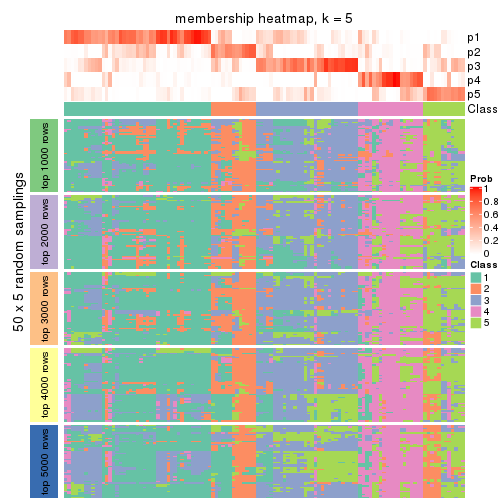
membership_heatmap(res, k = 6)
As soon as we have had the classes for columns, we can look for signatures which are significantly different between classes which can be candidate marks for certain classes. Following are the heatmaps for signatures.
Signature heatmaps where rows are scaled:
get_signatures(res, k = 2)
get_signatures(res, k = 3)
get_signatures(res, k = 4)
get_signatures(res, k = 5)
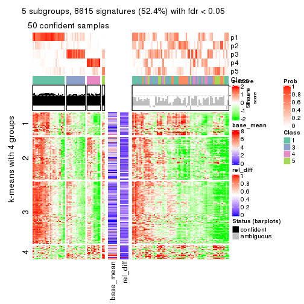
get_signatures(res, k = 6)
Signature heatmaps where rows are not scaled:
get_signatures(res, k = 2, scale_rows = FALSE)
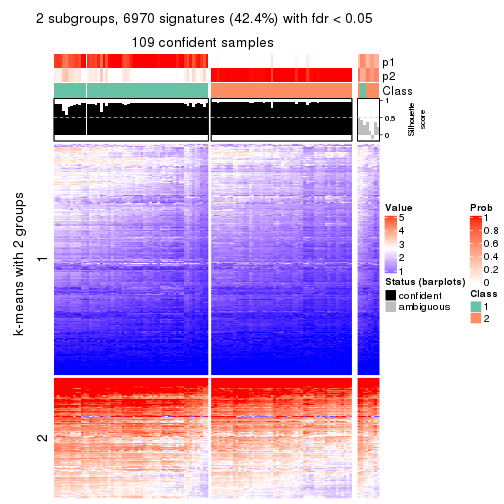
get_signatures(res, k = 3, scale_rows = FALSE)
get_signatures(res, k = 4, scale_rows = FALSE)
get_signatures(res, k = 5, scale_rows = FALSE)
get_signatures(res, k = 6, scale_rows = FALSE)
Compare the overlap of signatures from different k:
compare_signatures(res)
get_signature() returns a data frame invisibly. TO get the list of signatures, the function
call should be assigned to a variable explicitly. In following code, if plot argument is set
to FALSE, no heatmap is plotted while only the differential analysis is performed.
# code only for demonstration
tb = get_signature(res, k = ..., plot = FALSE)
An example of the output of tb is:
#> which_row fdr mean_1 mean_2 scaled_mean_1 scaled_mean_2 km
#> 1 38 0.042760348 8.373488 9.131774 -0.5533452 0.5164555 1
#> 2 40 0.018707592 7.106213 8.469186 -0.6173731 0.5762149 1
#> 3 55 0.019134737 10.221463 11.207825 -0.6159697 0.5749050 1
#> 4 59 0.006059896 5.921854 7.869574 -0.6899429 0.6439467 1
#> 5 60 0.018055526 8.928898 10.211722 -0.6204761 0.5791110 1
#> 6 98 0.009384629 15.714769 14.887706 0.6635654 -0.6193277 2
...
The columns in tb are:
which_row: row indices corresponding to the input matrix.fdr: FDR for the differential test. mean_x: The mean value in group x.scaled_mean_x: The mean value in group x after rows are scaled.km: Row groups if k-means clustering is applied to rows.UMAP plot which shows how samples are separated.
dimension_reduction(res, k = 2, method = "UMAP")
dimension_reduction(res, k = 3, method = "UMAP")
dimension_reduction(res, k = 4, method = "UMAP")
dimension_reduction(res, k = 5, method = "UMAP")
dimension_reduction(res, k = 6, method = "UMAP")
Following heatmap shows how subgroups are split when increasing k:
collect_classes(res)
If matrix rows can be associated to genes, consider to use functional_enrichment(res,
...) to perform function enrichment for the signature genes. See this vignette for more detailed explanations.
sessionInfo()
#> R version 3.6.0 (2019-04-26)
#> Platform: x86_64-pc-linux-gnu (64-bit)
#> Running under: CentOS Linux 7 (Core)
#>
#> Matrix products: default
#> BLAS: /usr/lib64/libblas.so.3.4.2
#> LAPACK: /usr/lib64/liblapack.so.3.4.2
#>
#> locale:
#> [1] LC_CTYPE=en_GB.UTF-8 LC_NUMERIC=C LC_TIME=en_GB.UTF-8
#> [4] LC_COLLATE=en_GB.UTF-8 LC_MONETARY=en_GB.UTF-8 LC_MESSAGES=en_GB.UTF-8
#> [7] LC_PAPER=en_GB.UTF-8 LC_NAME=C LC_ADDRESS=C
#> [10] LC_TELEPHONE=C LC_MEASUREMENT=en_GB.UTF-8 LC_IDENTIFICATION=C
#>
#> attached base packages:
#> [1] grid stats graphics grDevices utils datasets methods base
#>
#> other attached packages:
#> [1] genefilter_1.66.0 ComplexHeatmap_2.3.1 markdown_1.1 knitr_1.26
#> [5] GetoptLong_0.1.7 cola_1.3.2
#>
#> loaded via a namespace (and not attached):
#> [1] circlize_0.4.8 shape_1.4.4 xfun_0.11 slam_0.1-46
#> [5] lattice_0.20-38 splines_3.6.0 colorspace_1.4-1 vctrs_0.2.0
#> [9] stats4_3.6.0 blob_1.2.0 XML_3.98-1.20 survival_2.44-1.1
#> [13] rlang_0.4.2 pillar_1.4.2 DBI_1.0.0 BiocGenerics_0.30.0
#> [17] bit64_0.9-7 RColorBrewer_1.1-2 matrixStats_0.55.0 stringr_1.4.0
#> [21] GlobalOptions_0.1.1 evaluate_0.14 memoise_1.1.0 Biobase_2.44.0
#> [25] IRanges_2.18.3 parallel_3.6.0 AnnotationDbi_1.46.1 highr_0.8
#> [29] Rcpp_1.0.3 xtable_1.8-4 backports_1.1.5 S4Vectors_0.22.1
#> [33] annotate_1.62.0 skmeans_0.2-11 bit_1.1-14 microbenchmark_1.4-7
#> [37] brew_1.0-6 impute_1.58.0 rjson_0.2.20 png_0.1-7
#> [41] digest_0.6.23 stringi_1.4.3 polyclip_1.10-0 clue_0.3-57
#> [45] tools_3.6.0 bitops_1.0-6 magrittr_1.5 eulerr_6.0.0
#> [49] RCurl_1.95-4.12 RSQLite_2.1.4 tibble_2.1.3 cluster_2.1.0
#> [53] crayon_1.3.4 pkgconfig_2.0.3 zeallot_0.1.0 Matrix_1.2-17
#> [57] xml2_1.2.2 httr_1.4.1 R6_2.4.1 mclust_5.4.5
#> [61] compiler_3.6.0